高性能计算 复习笔记
只留会考的内容。每章开头的 Exam map 列出这一章能考什么、对应的公式或结论；每一节是一个考点，标题后面的 ★★★ 是必考、★★ 是常考、★ 是认识即可。每节的顺序是：要点 → 公式卡 → 一道例题 → 易错点 → 练习。
正文用英文（考试用英文作答），每段英文下方是中文翻译；左侧「隐藏中文」可以切换成纯英文自测。单位、数量级和基础术语查 Appendix B。
GuideExam Map and How to Use These Notes全课考点总览与使用方法
Exam map of the whole course全课程考点表
| Chapter章节 | ★★★ Core: expect a question★★★ 核心：应当预期会出题 | ★★ Likely★★ 可能考 |
|---|---|---|
| 1 Supercomputer performance1 超级计算机性能 | peak rate and FLOP/s per core; \(R_{\max}\), \(R_{\text{peak}}\), efficiency峰值速率与每核 FLOP/s；\(R_{\max}\)、\(R_{\text{peak}}\)、效率 | time to solution; growth rates求解时间；增长率 |
| 2 Speedup and Amdahl2 加速比与 Amdahl 定律 | speedup and efficiency; overhead and problem size; Amdahl's law加速比与效率；开销与问题规模；Amdahl 定律 | Gustafson's law; strong and weak scalingGustafson 定律；强扩展与弱扩展 |
| 3 Architecture and caches3 体系结构与缓存 | cache lookup and hit/miss traces; locality, stride and miss rate缓存查找与命中/未命中追踪；局部性、步长与未命中率 | Flynn's taxonomy; pipelining; CPU timeFlynn 分类；流水线；CPU 时间 |
| 4 Threads and Pthreads4 线程与 Pthreads | race conditions and mutexes; false sharing; the Pthreads API竞争条件与互斥锁；伪共享；Pthreads API | block partition; processes versus threads块划分；进程与线程的对比 |
| 5 Parallel Python5 并行 Python | the GIL; shared state and races in multiprocessingGIL；multiprocessing 中的共享状态与竞争 |
Process, Thread and the main guardProcess、Thread 与 main 保护 |
| 6 Matrix products on the CPU6 CPU 上的矩阵乘积 | FLOP counts; Pthreads matrix-vector product; loop order and cache missesFLOP 计数；Pthreads 矩阵-向量乘积；循环顺序与缓存未命中 | tiling; Pthreads matrix-matrix product分块；Pthreads 矩阵-矩阵乘积 |
| 7 Deep learning7 深度学习 | convolution sizes, parameters and FLOPs; convolution as a matrix product卷积的尺寸、参数与 FLOP；卷积作为矩阵乘积 | backpropagation and SGD; compression反向传播与 SGD；压缩 |
| 8 Transformers8 Transformer | attention as matrix products; multi-head shapes; cost of one layer注意力作为矩阵乘积；多头形状；单层的开销 | |
| 9 OpenMP basics9 OpenMP 基础 | the parallel directive; shared and private variables; reductionparallel 指令；共享变量与私有变量；reduction |
trapezoidal rule program; matrix product梯形法则程序；矩阵乘积 |
| 10 OpenMP loops10 OpenMP 循环 | parallel for; loop-carried dependences; schedulesparallel for；循环携带依赖；调度 |
run times and efficiency运行时间与效率 |
| 11 GPU architecture11 GPU 体系结构 | CPU versus GPU; the SM, peak rate and bandwidth; arithmetic intensity and the rooflineCPU 与 GPU 的对比；SM、峰值速率与带宽；算术强度与 Roofline 模型 | Little's law; the five steps of a GPU computationLittle 定律；GPU 计算的五个步骤 |
| 12 CUDA | launches; thread IDs; warps and lane fill; occupancy启动；线程编号；线程束与通道填充率；占用率 | Hello CUDA, qualifiers, __syncthreads()Hello CUDA、限定符、__syncthreads() |
| 13 GPU memory13 GPU 内存 | memory spaces; coalescing; bank conflicts; memory-bound time存储空间；合并访存；存储体冲突；访存受限时间 | register pressure; PCIe and pinned memory寄存器压力；PCIe 与锁页内存 |
| 14 Tiled GEMM on the GPU14 GPU 上的分块 GEMM | naive and tiled kernels; tile intensity and the A100 roofline; time model; resource budgets朴素核与分块核；分块的强度与 A100 Roofline；时间模型；资源预算 | register tiling; shapes and Tensor Cores; attention tiling寄存器分块；矩阵形状与 Tensor Core；注意力分块 |
| A Slurm附录 A Slurm | commands and job scripts命令与作业脚本 |
Appendix B explains the basics the chapters assume: prefixes from kilo to exa, bits and bytes, units, logarithms and vocabulary.附录 B 讲解各章默认的基础知识：从 kilo 到 exa 的词头、比特与字节、单位、对数和术语。
What Assignment 1 asked作业 1 的要求
The assignments show the style of the exam. Assignment 1 had five problems:作业展示了考试的风格。作业 1 共有五道题：
| Problem题目 | Task任务 | Where in these notes对应本笔记的位置 |
|---|---|---|
| 1 | Fill a TOP500 table and estimate the floating-point rate per core from \(R_{\text{peak}}\)填写 TOP500 表，并由 \(R_{\text{peak}}\) 估算每核浮点速率 | Section 1.1第 1.1 节 |
| 2 | Speedup and efficiency for \(T_{\text{parallel}}=n^2/p+\log_2 p\); show how efficiency changes with the problem size when \(T_{\text{parallel}}=T_{\text{serial}}/p+T_{\text{overhead}}\)计算 \(T_{\text{parallel}}=n^2/p+\log_2 p\) 的加速比与效率；说明当 \(T_{\text{parallel}}=T_{\text{serial}}/p+T_{\text{overhead}}\) 时效率如何随问题规模变化 | Sections 2.1 and 2.2第 2.1 和 2.2 节 |
| 3 | Run a Matlab job on the Almesbar cluster在 Almesbar 集群上运行一个 Matlab 作业 | Appendix A附录 A |
| 4 | Time a Pthreads matrix-vector product for 1 to 52 threads; explain the sub and temp variables测量 Pthreads 矩阵-向量乘积在 1 到 52 个线程下的时间；解释 sub 和 temp 变量 |
Section 6.2第 6.2 节 |
| 5 | Decide which of two 2-D array traversals has better spatial locality判断两种二维数组遍历方式中哪一种具有更好的空间局部性 | Section 3.2第 3.2 节 |
In these formulas \(n\) is the problem size, \(p\) the number of cores, \(T_{\text{serial}}\) the run time of the serial program, \(T_{\text{parallel}}\) that of the parallel program and \(T_{\text{overhead}}\) the extra time that parallelism costs (Chapter 2).在这些公式中，\(n\) 为问题规模，\(p\) 为核心数，\(T_{\text{serial}}\) 为串行程序的运行时间，\(T_{\text{parallel}}\) 为并行程序的运行时间，\(T_{\text{overhead}}\) 为并行所带来的额外时间（第 2 章）。
Three passes三轮复习
- Core. Read each Exam map and the ★★★ sections. Work every example yourself and do the Practice before opening the answers.核心。 阅读每章考点表和 ★★★ 小节。每个例题自己做一遍，先做练习再看答案。
- Likely. Read the ★★ sections and do the Exam-style questions of each chapter under time pressure.可能考。 阅读 ★★ 小节，并在限时条件下完成每章的考试风格题。
- Last day. Read the Formula sheet, the Exam focus list and the Terms to recognise tables. Use the 隐藏中文 button to test yourself in English only.考前最后一天。 阅读公式表、考试重点列表和需要认识的术语表。使用「隐藏中文」按钮，只用英文自测。
Chapter 1Supercomputer Performance and the TOP500超级计算机的性能指标与 TOP500
Peak performance and FLOP/s per core ★★★峰值性能与每核 FLOP/s ★★★
Goal. Compute the fastest rate that a machine could reach in theory, its peak performance（峰值性能）\(R_{\text{peak}}\), from its clock rate and its number of cores. Then go the other way, as in Assignment 1: from one row of the TOP500 table, find the rate of a single core.目标。 根据时钟频率和核心数，算出一台机器理论上能达到的最快速率，即它的峰值性能 \(R_{\text{peak}}\)。然后反过来，像作业 1 那样：从 TOP500 表中的一行，求出单个核心的速率。
Step 1: the peak of one core第 1 步：一个核心的峰值
The peak assumes that every arithmetic unit of the core does useful work in every cycle. In words:峰值假设核心里的每个运算单元，在每个周期里都在做有用的工作。用文字表述：
peak of one core = clock rate × FLOPs per cycle一个核心的峰值 = 时钟频率 × 每周期的浮点运算数
The clock rate says how many cycles there are in one second. The second factor says how many floating-point operations fit into one cycle. It follows from the hardware of the core: \(\text{FLOPs per cycle}=N_{\text{FMA pipes}}\times N_{\text{lanes}}\times2\).时钟频率说明每秒有多少个周期。第二个因子说明一个周期里能完成多少次浮点运算。它由核心的硬件决定：\(\text{FLOPs per cycle}=N_{\text{FMA pipes}}\times N_{\text{lanes}}\times2\)。
- \(N_{\text{FMA pipes}}\) is the number of FMA units in the core, typically 2. A fused multiply-add（FMA，融合乘加）unit computes \(a\times b+c\) in one instruction, for three numbers \(a\), \(b\) and \(c\).\(N_{\text{FMA pipes}}\) 是核心中 FMA 单元的个数，通常为 2。融合乘加（FMA）单元用一条指令计算 \(a\times b+c\)，作用于三个数 \(a\)、\(b\) 和 \(c\)。
- \(N_{\text{lanes}}\) is the number of values that one vector (SIMD) instruction processes at once. A 512-bit register holds \(512\div64=8\) double-precision numbers of 64 bits each, so it has 8 lanes.\(N_{\text{lanes}}\) 是一条向量（SIMD）指令一次能处理的数值个数。一个 512 位的寄存器能放下 \(512\div64=8\) 个 64 位的双精度数，因此它有 8 个通道。
- The factor 2: one FMA is one multiplication and one addition, and each of them counts as 1 FLOP.因子 2 的来由：一次 FMA 包含一次乘法和一次加法，它们各算 1 次浮点运算（FLOP）。
Step 2: the peak of the whole machine第 2 步：整台机器的峰值
All cores of a machine are counted alike, so the peak of the machine is the peak of one core times the number of cores. The lectures also write \(R_{\text{theor}}\) for \(R_{\text{peak}}\). The value is quoted for FP64, that is 64-bit double precision, unless stated otherwise.计算时，一台机器的所有核心都一视同仁，所以整机峰值等于一个核心的峰值乘以核心数。讲义也用 \(R_{\text{theor}}\) 表示 \(R_{\text{peak}}\)。除非另有说明，该数值按 FP64 给出，也就是 64 位双精度。
Step 3: from a TOP500 row back to one core第 3 步：从 TOP500 的一行倒推到一个核心
Assignment 1, Problem 1 goes the other way. The TOP500 table lists, for every machine, its \(R_{\text{peak}}\), its number of cores and its clock rate. Two divisions give the numbers for one core:作业 1 第 1 题是反过来做的。TOP500 表格中，每台机器都列出了它的 \(R_{\text{peak}}\)、核心数和时钟频率。两次除法就能得到单个核心的数值：
- \(R_{\text{peak}}\) divided by the number of cores is the floating-point rate of one core.\(R_{\text{peak}}\) 除以核心数，就是一个核心的浮点速率。
- That rate divided by the clock rate is the number of FLOPs that the core completes per cycle.这个速率除以时钟频率，就是核心每个周期完成的浮点运算数。
On a machine with accelerators (GPUs), the compute units of the accelerators are counted as cores too. The number per core is then only an average over very different units.在带有加速器（GPU）的机器上，加速器的计算单元也被算作核心。这时算出的每核数值，只是对差别很大的单元取的平均。
Practice练习
Q1. (Calculation) Fugaku has 7,630,848 cores at 2.20 GHz and \(R_{\text{peak}}=537.21\) PFLOP/s. How many FP64 FLOPs per cycle does one core complete?Q1. （计算） Fugaku 有 7,630,848 个核心，主频为 2.20 GHz，其性能为 \(R_{\text{peak}}=537.21\) PFLOP/s。每个核心每时钟周期完成多少次 FP64 FLOPs？
Answer
FP per core \(=537.21\times10^{15}/7{,}630{,}848=70.40\) GFLOP/s. FLOPs per cycle \(=70.40\ \text{GFLOP/s}/2.20\ \text{GHz}=32\).每核心 FP：\(=537.21\times10^{15}/7{,}630{,}848=70.40\) GFLOP/s。每时钟周期 FLOPs 数：\(=70.40\ \text{GFLOP/s}/2.20\ \text{GHz}=32\)。
Interpretation: 32 = 2 FMA units \(\times\) 8 FP64 lanes \(\times\) 2 FLOPs per FMA, which fits the 512-bit vector units of the A64FX.解释：32 = 2 个 FMA 单元 \(\times\) 8 个 FP64 通道 \(\times\) 每次 FMA 2 FLOPs，这与 A64FX 的 512 位向量单元相吻合。
Q2. (Calculation) A cluster has 1,000 nodes, each with 2 CPUs of 32 cores at 2.5 GHz that complete 16 FP64 FLOPs per cycle per core. (a) What is \(R_{\text{peak}}\)? (b) What is \(R_{\max}\) if the HPL efficiency is 70%? (c) What does an application sustain if it reaches 8% of \(R_{\text{peak}}\)?Q2. （计算） 某集群有 1,000 个节点，每个节点含 2 颗 CPU，每颗 32 个核心，主频 2.5 GHz，每核每周期完成 16 次 FP64 浮点运算。(a) \(R_{\text{peak}}\) 是多少？(b) 若 HPL 效率为 70%，\(R_{\max}\) 是多少？(c) 若应用达到 \(R_{\text{peak}}\) 的 8%，则其实际持续速率是多少？
Answer
Cores: \(1000\times2\times32=64{,}000\). Per core: \(2.5\times10^9\times16=40\) GFLOP/s.核心数：\(1000\times2\times32=64{,}000\)。每核心：\(2.5\times10^9\times16=40\) GFLOP/s。
(a) \(R_{\text{peak}}=64{,}000\times40\ \text{GFLOP/s}=2.56\times10^{15}\) FLOP/s \(=2.56\) PFLOP/s.
(b) \(R_{\max}=0.70\times2.56=1.79\) PFLOP/s.
(c) \(R_{\text{sustained}}=0.08\times2.56\ \text{PFLOP/s}=205\) TFLOP/s.
Interpretation: the three numbers fall in the order \(R_{\text{sustained}}<R_{\max}<R_{\text{peak}}\).解释：三个数值的大小顺序为 \(R_{\text{sustained}}<R_{\max}<R_{\text{peak}}\)。
R_max, R_peak and efficiency ★★★R_max、R_peak 与效率 ★★★
Goal. Tell apart the three rates that are quoted for a machine, and compute two ratios from the TOP500 table: how much of its peak a machine reaches in the benchmark (HPL efficiency), and how much performance it delivers per watt (energy efficiency).目标。 区分一台机器对外给出的三种速率，并从 TOP500 表中算出两个比值：机器在基准测试中达到了峰值的多大比例（HPL 效率），以及它每瓦特能提供多少性能（能效）。
Three kinds of performance三种性能
No real program reaches the peak, because the arithmetic units often have to wait, mostly for data from memory. So three different rates are quoted, from the largest to the smallest:没有真实程序能达到峰值，因为运算单元常常要等待，而且大部分时间是在等内存送来的数据。因此，通常会给出三种不同的速率，从大到小依次是：
| Rate速率 | What it is性质 |
|---|---|
| \(R_{\text{theor}}\), the same as \(R_{\text{peak}}\)\(R_{\text{theor}}\)，与 \(R_{\text{peak}}\) 相同 | what the hardware could do in theory (Section 1.1)硬件理论上能达到的速率（见第 1.1 节） |
| \(R_{\text{real}}\) | what the machine achieves on one specific operation, for example vector multiplication机器在某一种具体运算上能达到的速率，例如向量乘法 |
| \(R_{\text{sustained}}\) | what it achieves on a whole application, for example a fluid-dynamics simulation (CFD); below 10% of \(R_{\text{theor}}\) is not uncommon机器在整个应用程序上能达到的速率，例如流体力学模拟（CFD）；低于 \(R_{\text{theor}}\) 的 10% 的情况并不少见 |
In short, \(R_{\text{sustained}}\ll R_{\text{real}}\ll R_{\text{theor}}\), where \(\ll\) means "much smaller than".简单说就是 \(R_{\text{sustained}}\ll R_{\text{real}}\ll R_{\text{theor}}\)，这里的 \(\ll\) 表示“远小于”。
R_max and HPL efficiencyR_max 与 HPL 效率
The TOP500 list（TOP500 榜单）ranks the 500 most powerful publicly reported computers by \(R_{\max}\), the best rate that a machine has measured with HPL. \(R_{\max}\) is a measured rate, an \(R_{\text{real}}\), so it is always below \(R_{\text{peak}}\). In words:TOP500 榜单按 \(R_{\max}\) 给公开报告的 500 台最强大的计算机排名。它就是一台机器用 HPL 测得的最好速率。\(R_{\max}\) 是测得的速率，也就是 \(R_{\text{real}}\)，所以它总是低于 \(R_{\text{peak}}\)。用文字表述：
HPL efficiency = measured benchmark rate ÷ theoretical peakHPL 效率 = 测得的基准速率 ÷ 理论峰值
Energy efficiency能效
A large supercomputer draws tens of megawatts, so the performance per watt matters as much as the performance itself. In words:一台大型超级计算机的耗电量可达数十兆瓦，所以每瓦特的性能和性能本身同样重要。用文字表述：
energy efficiency = measured rate ÷ electrical power能效 = 测得的速率 ÷ 电功率
Practice练习
Q1. (True or false, justify) "The machine with the larger \(R_{\text{peak}}\) always ranks higher in the TOP500."Q1. 判断，并说明理由 「\(R_{\text{peak}}\) 更大的机器在 TOP500 中总是排名更高。」
Answer
False. The TOP500 ranks by \(R_{\max}\). In the June 2026 list, El Capitan has the larger \(R_{\text{peak}}\) (2,821.10 against 2,735.82 PFLOP/s) but the smaller \(R_{\max}\) (1,809.00 against 2,198.40 PFLOP/s), so LineShine is #1. The HPL efficiencies are 64.1% and 80.4%.错误。TOP500 依据 \(R_{\max}\) 排名。在 2026 年 6 月的榜单中，El Capitan 的 \(R_{\text{peak}}\) 更大（2,821.10 对 2,735.82 PFLOP/s），但 \(R_{\max}\) 更小（1,809.00 对 2,198.40 PFLOP/s），因此 LineShine 为 #1。两者的 HPL 效率分别为 64.1% 和 80.4%。
易错：排名看 \(R_{\max}\)，不看 \(R_{\text{peak}}\)。
Q2. (Calculation) Compute the energy efficiency of Frontier (\(R_{\max}=1{,}353.00\) PFLOP/s, 24.69 MW) and Fugaku (\(R_{\max}=442.01\) PFLOP/s, 29.90 MW), and the energy needed for \(10^{18}\) floating-point operations on each.Q2. 计算 求 Frontier（\(R_{\max}=1{,}353.00\) PFLOP/s，24.69 MW）与 Fugaku（\(R_{\max}=442.01\) PFLOP/s，29.90 MW）的能效，以及两者完成 \(10^{18}\) 次浮点运算所需的能量。
Answer
Frontier: \(1{,}353.00\ \text{PFLOP/s}/24.69\ \text{MW}=54.80\) GFLOPS/W. Fugaku: \(442.01/29.90=14.78\) GFLOPS/W.Frontier 能效：\(1{,}353.00\ \text{PFLOP/s}/24.69\ \text{MW}=54.80\) GFLOPS/W。Fugaku 能效：\(442.01/29.90=14.78\) GFLOPS/W。
Energy for \(10^{18}\) operations: \(10^{18}/(54.80\times10^9)=1.82\times10^7\) J \(=18.2\) MJ \(=5.1\) kWh on Frontier; \(10^{18}/(14.78\times10^9)=6.77\times10^7\) J \(=18.8\) kWh on Fugaku.完成 \(10^{18}\) 次运算所需能量：Frontier 上为 \(10^{18}/(54.80\times10^9)=1.82\times10^7\) J \(=18.2\) MJ \(=5.1\) kWh；Fugaku 上为 \(10^{18}/(14.78\times10^9)=6.77\times10^7\) J \(=18.8\) kWh。
Interpretation: Fugaku needs 3.7 times as much energy per operation.解释：Fugaku 每次运算所需的能量是 Frontier 的 3.7 倍。
Problem size and time to solution ★★问题规模与求解时间 ★★
Goal. Estimate how much memory a problem needs and how long it runs. These two numbers decide whether a problem can be solved on a given machine at all.目标。 估算一个问题需要多少内存，以及它要运行多长时间。这两个数决定了某个问题能否在给定的机器上解出来。
How much memory?需要多少内存？
A simulation stores a few numbers at every point of a grid. In words:模拟程序在网格的每个点上都要存几个数。用文字表述：
memory = number of points × values per point × bytes per value内存 = 点数 × 每个点的数值个数 × 每个数值的字节数
A double-precision number takes 8 bytes.一个双精度数占 8 个字节。
How long does it run?需要运行多长时间？
A program has to do a certain amount of work, counted in floating-point operations, and the machine does this work at a certain rate. In words:一个程序要完成一定量的工作，工作量用浮点运算次数来计量；机器以一定的速率完成这些工作。用文字表述：
run time = work ÷ rate运行时间 = 工作量 ÷ 速率
The standard example is a dense system of linear equations（线性方程组）: \(n\) equations in \(n\) unknowns, written \(Ax=b\). Here \(A\) is the coefficient matrix with \(n\) rows and \(n\) columns, \(x\) is the vector of the \(n\) unknowns and \(b\) is the right-hand side. "Dense" means that almost all entries of \(A\) are non-zero. Solving the system takes about \(\tfrac13n^3\) operations when only multiplications are counted; HPL counts multiplications and additions, that is \(\tfrac23n^3\).典型例子是一个稠密线性方程组：\(n\) 个方程、\(n\) 个未知数，写作 \(Ax=b\)。这里 \(A\) 是系数矩阵，有 \(n\) 行、\(n\) 列；\(x\) 是由 \(n\) 个未知数组成的向量，\(b\) 是右端项。“稠密”指 \(A\) 中几乎所有元素都不为零。若只计乘法，求解该方程组大约需要 \(\tfrac13n^3\) 次运算；HPL 则同时计算乘法和加法，即 \(\tfrac23n^3\)。
Practice练习
Q1. (Calculation) A climate code stores 5 double variables on a \(5{,}000^3\) grid. (a) How much memory does the state need? (b) How many nodes of 256 GB (decimal) are needed just to hold it?Q1. （计算） 某气候程序在 \(5{,}000^3\) 网格上存储 5 个双精度变量。（a）状态数据需要多少内存？（b）仅存放这些数据，就需要多少个 256 GB（十进制）的节点？
Answer
(a) Points: \(5000^3=1.25\times10^{11}\). Numbers: \(5\times1.25\times10^{11}=6.25\times10^{11}\). Bytes: \(6.25\times10^{11}\times8=5.0\times10^{12}\) B \(=5\) TB.（a）网格点数：\(5000^3=1.25\times10^{11}\)。数值个数：\(5\times1.25\times10^{11}=6.25\times10^{11}\)。字节数：\(6.25\times10^{11}\times8=5.0\times10^{12}\) B \(=5\) TB。
(b) \(5\times10^{12}/(256\times10^{9})=19.5\), so at least 20 nodes. In practice more are needed for work arrays, communication buffers and the operating system.（b）\(5\times10^{12}/(256\times10^{9})=19.5\)，因此至少需要 20 个节点。实际需要更多节点，以容纳工作数组、通信缓冲区和操作系统。
Interpretation: even a modest \(5000^3\) grid does not fit on one node.解释：即使是一个不大的 \(5000^3\) 网格，也无法放入单个节点。
思路：点数 × 变量数 × 8 字节。
Q2. (Calculation) Using the count \(\tfrac13n^3\), how long does a dense solve with \(n=20{,}000\) take at 100 MFlops and at 1 GFlops, and how much memory does the matrix need?Q2. （计算） 使用计数 \(\tfrac13n^3\)，求解规模为 \(n=20{,}000\) 的稠密方程组在 100 MFlops 和 1 GFlops 下各需要多长时间？该矩阵需要多少内存？
Answer
\(W=(2\times10^4)^3/3=2.67\times10^{12}\) flops. At \(10^8\) FLOP/s: \(T=2.67\times10^4\) s \(=7.4\) h. At \(10^9\) FLOP/s: \(2.67\times10^3\) s \(=44\) min. Memory: \((2\times10^4)^2\times8\ \text{B}=3.2\times10^{9}\) B \(=3.2\) GB.\(W=(2\times10^4)^3/3=2.67\times10^{12}\) flops。在 \(10^8\) FLOP/s 下：\(T=2.67\times10^4\) s \(=7.4\) h。在 \(10^9\) FLOP/s 下：\(2.67\times10^3\) s \(=44\) 分钟。内存：\((2\times10^4)^2\times8\ \text{B}=3.2\times10^{9}\) B \(=3.2\) GB。
Interpretation: a 100-fold speed-up changes hours to minutes, but the problem is still small compared with \(n=10^6\).解释：速度提高 100 倍，可将数小时缩短为数分钟，但与 \(n=10^6\) 相比，该问题的规模依然很小。
Growth rates and Moore's law ★★增长率与摩尔定律 ★★
Goal. Turn two performance values that lie some years apart into a growth rate per year and a doubling time, and use Moore's law to predict a transistor count.目标。 把相隔几年的两个性能数值，换算成每年的增长率和倍增时间，并用摩尔定律预测晶体管数量。
Growth rate and doubling time增长率与倍增时间
Supercomputer performance has grown by a roughly constant percentage every year. This is exponential growth（指数增长）: the value is multiplied by the same factor every year. On a plot with a logarithmic vertical axis, exponential growth is a straight line.超级计算机的性能每年以大致恒定的百分比增长。这就是指数增长：数值每年乘以同一个倍数。在纵轴为对数的图上，指数增长表现为一条直线。
If the value grows by the fraction \(r\) per year, it is multiplied by \(1+r\) every year, and by \((1+r)^{\Delta t}\) after \(\Delta t\) years. Solving this for \(r\) gives the first formula of the card. The doubling time（倍增时间）is the time after which the value has doubled.如果数值每年增长的比例是 \(r\)，那么它每年乘以 \(1+r\)，经过 \(\Delta t\) 年后，数值乘以 \((1+r)^{\Delta t}\)。对 \(r\) 求解这个式子，就得到卡片上的第一个公式。倍增时间是数值翻一番所经过的时间。
Moore's law摩尔定律
Moore's law（摩尔定律）says that the number of transistors on a chip doubles at a fixed interval, about every 1.5 to 2 years. If \(T\) is this doubling time, the count has doubled \(t/T\) times after \(t\) years.摩尔定律说，一块芯片上的晶体管数每隔固定的时间翻一番，大约每 1.5 到 2 年翻一番。如果 \(T\) 是这个倍增时间，那么经过 \(t\) 年后，数量已经翻了 \(t/T\) 次。
Practice练习
Q1. (Calculation) Performance went from 1 GFlop/s in 1987 to 1 TFlop/s in 1997. Compute \(r\), the doubling time and the years per factor of ten.Q1. 计算 性能从 1987 年的 1 GFlop/s 增长到 1997 年的 1 TFlop/s。计算 \(r\)、倍增时间以及每增长十倍所需的年数。
Answer
Factor \(10^3\) in 10 years: \(r=(10^3)^{1/10}-1=10^{0.3}-1=0.995\), that is 99.5% per year. Doubling time: \(T_2=\ln2/\ln1.995=1.00\) year. Years per factor of ten: \(10/3=3.3\).10 年内增长 \(10^3\) 倍：\(r=(10^3)^{1/10}-1=10^{0.3}-1=0.995\)，即每年 99.5%。倍增时间：\(T_2=\ln2/\ln1.995=1.00\) 年。每相差十倍所需年数：\(10/3=3.3\)。
Interpretation: in this decade performance doubled every year, faster than Moore's law (every 1.5 years); the parallel machines of the chart appear in this period.解释：在这十年中，性能每年翻一番，快于摩尔定律（每 1.5 年翻一番）；图中的并行机器正是在这一时期出现的。
Q2. (Calculation) A chip has \(10^9\) transistors. How many does a chip of the same family have 12 years later if the doubling time is (a) 1.5 years, (b) 2 years?Q2. （计算） 某芯片有 \(10^9\) 个晶体管。若倍增时间分别为（a）1.5 年，（b）2 年，则 12 年后同一系列的芯片各有多少个晶体管？
Answer
\(N=N_0\,2^{t/T}\). (a) \(2^{12/1.5}=2^8=256\), so \(2.56\times10^{11}\) transistors. (b) \(2^{12/2}=2^6=64\), so \(6.4\times10^{10}\) transistors.\(N=N_0\,2^{t/T}\)。（a）\(2^{12/1.5}=2^8=256\)，因此为 \(2.56\times10^{11}\) 个晶体管。（b）\(2^{12/2}=2^6=64\)，因此为 \(6.4\times10^{10}\) 个晶体管。
Interpretation: the two textbook values of \(T\) differ by a factor 4 after only 12 years.解释：仅 12 年之后，\(T\) 的两个教科书取值就相差 4 倍。
Terms to recognise ★需要认识的术语 ★
| Term术语 | What to know要知道什么 |
|---|---|
| TOP500 | Twice-yearly list of the 500 fastest publicly reported computers, ranked by \(R_{\max}\).每年两次发布的榜单，列出公开报告的 500 台最快计算机，按 \(R_{\max}\) 排名。 |
| Green500 | Ranking by energy efficiency, GFLOPS/W.按能效（GFLOPS/W）排名。 |
| HPL / Linpack | Dense linear-system benchmark; the operation count divided by the run time gives \(R_{\max}\).稠密线性方程组基准测试；运算次数除以运行时间即得到 \(R_{\max}\)。 |
| ExascaleE 级（百亿亿次） | \(10^{18}\) FLOP/s; five of the June 2026 top 10 reach it.达到 \(10^{18}\) FLOP/s；2026 年 6 月前十名中有五台达到该水平。 |
| Accelerator加速器 | GPU-type unit; eight of the June 2026 top 10 use one.GPU 类加速单元；2026 年 6 月前十名中有八台使用了此类单元。 |
| Top three, June 20262026 年 6 月前三名 | LineShine (China) 2,198.40 PFLOP/s, El Capitan (USA) 1,809.00, Frontier (USA) 1,353.00.LineShine（中国）2,198.40 PFLOP/s，El Capitan（美国）1,809.00，Frontier（美国）1,353.00。 |
| Saudi and UAE entries沙特与阿联酋的上榜系统 | Shaheen III - GPU, KAUST (#22, 122.80 PFLOP/s); SuperPOD, Core42 (#46, 55.81 PFLOP/s).Shaheen III - GPU，KAUST（第 22 名，122.80 PFLOP/s）；SuperPOD，Core42（第 46 名，55.81 PFLOP/s）。 |
| Supercomputer versus cloud超级计算机与云的对比 | Few big jobs, custom hardware, low-latency network, static scheduling; cloud: many small tasks, commodity hardware, dynamic allocation.少量大作业、定制硬件、低延迟网络、静态调度；云：大量小任务、通用硬件、动态分配。 |
| Bell's lawBell 定律 | About every decade a new, cheaper class of computer appears.大约每十年出现一类新的、更便宜的计算机。 |
| Gordon Bell PrizeGordon Bell 奖 | Annual ACM/IEEE award for real applications; winners gained \(10^4\) in 13 years, beating Moore's law through concurrency.ACM/IEEE 每年颁发的应用类奖项；获奖者在 13 年间取得了 \(10^4\) 的性能提升，借助并发超过了摩尔定律。 |
Exam-style questions考试题型练习
Q1. (Calculation and interpretation) A proposed machine has 10,000 nodes. Each node has four accelerators of 45 TFLOP/s FP64 peak and one 64-core CPU at 2.5 GHz that completes 16 FP64 FLOPs per cycle per core. It reaches an HPL efficiency of 65% and draws 30 MW. (a) Compute \(R_{\text{peak}}\) and the share supplied by the accelerators. (b) Compute \(R_{\max}\) and the energy efficiency. (c) Is it an exascale machine, and does it meet a 20 MW budget? (d) How long does a dense solve with \(n=10^7\) and \(\tfrac23n^3\) operations take at \(R_{\max}\), and how much memory does the matrix need? (e) An application sustains 8% of \(R_{\text{peak}}\): what is its rate?Q1. （计算与解释） 某拟建机器有 10,000 个节点。每个节点配有四个 FP64 峰值为 45 TFLOP/s 的加速器，以及一颗 64 核、主频 2.5 GHz 的 CPU，每核心每时钟周期完成 16 次 FP64 FLOPs。其 HPL 效率达到 65%，功率为 30 MW。（a）计算 \(R_{\text{peak}}\)，以及加速器所提供的占比。（b）计算 \(R_{\max}\) 与能效。（c）它是否为 E 级机器？是否满足 20 MW 的功率预算？（d）求解规模为 \(n=10^7\)、运算次数为 \(\tfrac23n^3\) 的稠密问题，在 \(R_{\max}\) 下需要多长时间？矩阵需要多少内存？（e）某应用实测达到 \(R_{\text{peak}}\) 的 8%：其速率是多少？
Answer
(a) CPU per node: \(64\times2.5\times10^9\times16=2.56\times10^{12}\) FLOP/s \(=2.56\) TFLOP/s. Accelerators per node: \(4\times45=180\) TFLOP/s. Node: \(182.56\) TFLOP/s. System: \(R_{\text{peak}}=10{,}000\times182.56\ \text{TFLOP/s}=1{,}825.6\) PFLOP/s \(=1.826\) EFLOP/s. Accelerator share: \(180/182.56=98.6\%\).（a）每个节点的 CPU：\(64\times2.5\times10^9\times16=2.56\times10^{12}\) FLOP/s \(=2.56\) TFLOP/s。每个节点的加速器：\(4\times45=180\) TFLOP/s。节点合计：\(182.56\) TFLOP/s。系统：\(R_{\text{peak}}=10{,}000\times182.56\ \text{TFLOP/s}=1{,}825.6\) PFLOP/s \(=1.826\) EFLOP/s。加速器占比：\(180/182.56=98.6\%\)。
(b) \(R_{\max}=0.65\times1{,}825.6=1{,}186.6\) PFLOP/s. \(E=R_{\max}/P=1{,}186.6\times10^{15}/(30\times10^{6})=3.96\times10^{10}\) FLOP/s per W \(=39.5\) GFLOPS/W.（b）\(R_{\max}=0.65\times1{,}825.6=1{,}186.6\) PFLOP/s。\(E=R_{\max}/P=1{,}186.6\times10^{15}/(30\times10^{6})=3.96\times10^{10}\) FLOP/s 每 W \(=39.5\) GFLOPS/W。
(c) \(R_{\max}=1.19\) EFLOP/s \(\ge1\) EFLOP/s, so yes, it is exascale in the TOP500 sense (FP64). It draws 30 MW, more than 20 MW. To deliver 1.19 EFLOP/s within 20 MW it would need \(1.1866\times10^{18}/(20\times10^{6})=59.3\) GFLOPS/W; it has 39.5.（c）\(R_{\max}=1.19\) EFLOP/s \(\ge1\) EFLOP/s，因此按 TOP500 的定义（FP64）它确为 E 级机器。其功率为 30 MW，超过 20 MW。若要在 20 MW 内提供 1.19 EFLOP/s，则需要 \(1.1866\times10^{18}/(20\times10^{6})=59.3\) GFLOPS/W；而它的能效为 39.5。
(d) \(W=\tfrac23(10^7)^3=6.67\times10^{20}\) FLOPs. \(T=6.67\times10^{20}/(1.1866\times10^{18})=562\) s \(\approx9.4\) min. Memory: \((10^7)^2\times8\ \text{B}=8\times10^{14}\) B \(=800\) TB.（d）\(W=\tfrac23(10^7)^3=6.67\times10^{20}\) FLOPs。\(T=6.67\times10^{20}/(1.1866\times10^{18})=562\) s \(\approx9.4\) 分钟。内存：\((10^7)^2\times8\ \text{B}=8\times10^{14}\) B \(=800\) TB。
(e) \(R_{\text{sustained}}=0.08\times1{,}825.6=146\) PFLOP/s, in line with "sustained below 10% of \(R_{\text{theor}}\) is not uncommon".（e）\(R_{\text{sustained}}=0.08\times1{,}825.6=146\) PFLOP/s，与“实测性能低于 \(R_{\text{theor}}\) 的 10% 并不罕见”相符。
思路：先算节点峰值再乘节点数；能效用 \(R_{\max}\) 不用 \(R_{\text{peak}}\)。
Q2. (Calculation and interpretation) (a) Reproduce LineShine's \(R_{\text{theor}}\) from 13,789,440 cores, 1.55 GHz and 64 FMAs per cycle, and give FP per core. (b) Compute the HPL efficiency of LineShine and El Capitan from the June 2026 list (\(R_{\max}\) 2,198.40 and 1,809.00 PFLOP/s; \(R_{\text{peak}}\) 2,735.82 and 2,821.10 PFLOP/s) and say which ranks higher and why.Q2. 计算与解释 (a) 由 13,789,440 个核心、1.55 GHz 主频和每周期 64 次 FMA，复现 LineShine 的 \(R_{\text{theor}}\)，并给出每核浮点速率。(b) 根据 2026 年 6 月榜单计算 LineShine 与 El Capitan 的 HPL 效率（\(R_{\max}\) 分别为 2,198.40 和 1,809.00 PFLOP/s；\(R_{\text{peak}}\) 分别为 2,735.82 和 2,821.10 PFLOP/s），并说明哪一台排名更高及原因。
Answer
(a) \(64\ \text{FMAs}\times2=128\) FLOPs per cycle; per core \(128\times1.55\ \text{GHz}=198.4\) GFLOP/s, which is FP per core. \(R_{\text{peak}}=13{,}789{,}440\times198.4\ \text{GFLOP/s}=2{,}735.82\) PFLOP/s \(=2.736\) EFLOP/s.（a）每时钟周期 \(64\ \text{FMAs}\times2=128\) FLOPs；每核心 \(128\times1.55\ \text{GHz}=198.4\) GFLOP/s，即每核心 FP 数。\(R_{\text{peak}}=13{,}789{,}440\times198.4\ \text{GFLOP/s}=2{,}735.82\) PFLOP/s \(=2.736\) EFLOP/s。
(b) LineShine: \(2{,}198.40/2{,}735.82=80.4\%\). El Capitan: \(1{,}809.00/2{,}821.10=64.1\%\). LineShine ranks higher because the TOP500 ranks by \(R_{\max}\) (2,198.40 against 1,809.00 PFLOP/s), even though El Capitan has the larger \(R_{\text{peak}}\).(b) LineShine：\(2{,}198.40/2{,}735.82=80.4\%\)。El Capitan：\(1{,}809.00/2{,}821.10=64.1\%\)。LineShine 排名更高，因为 TOP500 按 \(R_{\max}\) 排名（2,198.40 对 1,809.00 PFLOP/s），尽管 El Capitan 的 \(R_{\text{peak}}\) 更大。
Q3. (Calculation and concept) A simulation uses an \(8{,}000^3\) grid with 5 double variables per point, 60 FLOPs per point per step and \(5\times10^6\) steps. (a) How much memory does the state need, and how many nodes of 512 GB (decimal) hold it? (b) How long does it run at a sustained 100 TFLOP/s and at 5 PFLOP/s? (c) The result is needed within 1 hour: what sustained rate is required, and what \(R_{\text{peak}}\) if applications sustain 8% of peak?Q3. 计算与概念 某模拟使用 \(8{,}000^3\) 网格，每个网格点 5 个 double 变量、每点每步 60 次 FLOP，共 \(5\times10^6\) 步。(a) 状态数据需要多少内存？需要多少个 512 GB（十进制）的节点才能容纳？(b) 在持续 100 TFLOP/s 和 5 PFLOP/s 下分别运行多长时间？(c) 结果需在 1 小时内得到：需要多大的持续速率？若应用持续达到峰值的 8%，则 \(R_{\text{peak}}\) 是多少？
Answer
(a) Points: \(8000^3=5.12\times10^{11}\). Memory: \(5.12\times10^{11}\times5\times8\ \text{B}=2.048\times10^{13}\) B \(=20.5\) TB. Nodes: \(2.048\times10^{13}/(512\times10^9)=40\).（a）网格点数：\(8000^3=5.12\times10^{11}\)。内存：\(5.12\times10^{11}\times5\times8\ \text{B}=2.048\times10^{13}\) B \(=20.5\) TB。节点数：\(2.048\times10^{13}/(512\times10^9)=40\)。
(b) \(W=5.12\times10^{11}\times60\times5\times10^{6}=1.536\times10^{20}\) FLOPs. At \(10^{14}\) FLOP/s: \(T=W/R=1.536\times10^{6}\) s \(=17.8\) days. At \(5\times10^{15}\) FLOP/s: \(3.07\times10^4\) s \(=8.5\) h.（b）\(W=5.12\times10^{11}\times60\times5\times10^{6}=1.536\times10^{20}\) FLOPs。以 \(10^{14}\) FLOP/s 计：\(T=W/R=1.536\times10^{6}\) s \(=17.8\) 天。以 \(5\times10^{15}\) FLOP/s 计：\(3.07\times10^4\) s \(=8.5\) h。
(c) Required \(R_{\text{sust}}=1.536\times10^{20}/3600=4.27\times10^{16}\) FLOP/s \(=42.7\) PFLOP/s. With 8% sustained: \(R_{\text{peak}}=42.7/0.08=533\) PFLOP/s \(\approx0.53\) EFLOP/s.（c）所需的 \(R_{\text{sust}}=1.536\times10^{20}/3600=4.27\times10^{16}\) FLOP/s \(=42.7\) PFLOP/s。若以 8% 的实测效率计：\(R_{\text{peak}}=42.7/0.08=533\) PFLOP/s \(\approx0.53\) EFLOP/s。
思路：内存看点数 × 变量 × 8 字节；时间看总运算量 ÷ 持续速度。
Chapter 2Speedup, Efficiency and Amdahl's Law加速比、效率与 Amdahl 定律
Speedup and efficiency ★★★加速比与效率 ★★★
Goal. Measure how much a parallel program gains from using many cores: compute its speedup and its efficiency from two run times, and say when a gain is ideal, too small or suspiciously large.目标。 衡量并行程序使用多个核心后能获得多少收益：根据两次运行时间算出它的加速比和效率，并说明什么时候收益是理想的、太小，或者大得可疑。
Step 1: speedup第 1 步：加速比
Speedup（加速比）says how many times faster the parallel program is. In words:加速比说明并行程序快了多少倍。用文字表述：
speedup = run time of the best serial program ÷ run time of the parallel program加速比 = 最好串行程序的运行时间 ÷ 并行程序的运行时间
Take a serial program that needs 100 s and a parallel version that needs 25 s on 8 cores. Then \(S=100\ \text{s}\div25\ \text{s}=4\): the parallel version is 4 times as fast.设一个串行程序需要 100 s，其并行版本在 8 个核心上需要 25 s。那么 \(S=100\ \text{s}\div25\ \text{s}=4\)，即并行版本快了 4 倍。
Step 2: efficiency第 2 步：效率
Using 8 cores and getting only a factor 4 is a poor deal. Efficiency（效率）measures this. It is the speedup that was reached divided by the speedup that \(p\) cores could ideally give. In words:用了 8 个核心却只快了 4 倍，这样的收益并不理想。效率衡量的正是这一点。它等于实际达到的加速比，除以理想情况下 \(p\) 个核心能给出的加速比。用文字表述：
efficiency = speedup ÷ number of cores效率 = 加速比 ÷ 核心数
In the example, \(E=4\div8=0.5\): half of the cores' ideal contribution is obtained. The ideal case, linear speedup（线性加速）, is \(T_{\text{parallel}}=T_{\text{serial}}/p\). Then \(S=p\) and \(E=1\).在这个例子中，\(E=4\div8=0.5\)，也就是只得到了核心理想贡献的一半。理想情况即线性加速，此时 \(T_{\text{parallel}}=T_{\text{serial}}/p\)。由此得到 \(S=p\) 和 \(E=1\)。
Step 3: reading a measured table第 3 步：读懂实测表格
Here is a measured program on \(p=1,2,4,8,16\) cores. The speedups are given and each efficiency is \(E=S/p\), for example \(10.8\div16=0.675\).下面是一个在 \(p=1,2,4,8,16\) 个核心上的实测程序。表中给出了加速比，每个效率都等于 \(E=S/p\)，例如 \(10.8\div16=0.675\)。
| \(p\) | 1 | 2 | 4 | 8 | 16 |
|---|---|---|---|---|---|
| \(S\) (given)\(S\)（给定） | 1.0 | 1.9 | 3.6 | 6.5 | 10.8 |
| \(E=S/p\) (recomputed)\(E=S/p\)（重新计算） | 1.0 | 0.95 | 0.90 | 0.8125 | 0.675 |
Doubling the cores from 8 to 16 raises \(S\) only from 6.5 to 10.8, that is by the factor \(10.8\div6.5=1.66\) instead of 2. At the same time \(E\) falls from 0.8125 to 0.675. Each added core contributes less.把核心数从 8 增加到 16，\(S\) 只从 6.5 提高到 10.8，也就是乘了 \(10.8\div6.5=1.66\) 倍，而不是 2 倍。同时，\(E\) 从 0.8125 降到 0.675。每多加一个核心，它的贡献都变小了。
Superlinear speedup（超线性加速）means \(S>p\), so \(E>1\). It happens when the cost per unit of work falls as \(p\) grows. There are two common causes:超线性加速是指 \(S>p\)，也就是 \(E>1\)。它出现在单位工作的代价随 \(p\) 增大而下降的时候。常见的原因有两个：
- The data are divided among the cores, and each share then fits into the core's cache. A cache（缓存）is a small, fast memory next to a core. Accessing it is much faster than accessing main memory.数据被分给各个核心，每一份数据就能放进该核心的缓存里。缓存是紧挨着核心的一小块快速存储器。访问它比访问主存快得多。
- A parallel search may find the answer after less total work than the serial order would need.并行搜索有时找到答案时的总工作量，比串行顺序所需的工作量还少。
Practice练习
Q1. (Calculation) A serial program takes 96 s. A parallel version takes 25 s on 4 cores, 14 s on 8 cores and 8 s on 16 cores. Compute \(S\) and \(E\) for each run and decide whether any run achieves linear speedup.Q1. （计算） 串行程序耗时 96 s。并行版本在 4 个核心上耗时 25 s，在 8 个核心上耗时 14 s，在 16 个核心上耗时 8 s。对每次运行计算 \(S\) 与 \(E\)，并判断是否有某次运行达到线性加速。
Answer
Speedup is \(S=T_{\text{serial}}/T_{\text{parallel}}\) and efficiency is \(E=S/p\).加速比为 \(S=T_{\text{serial}}/T_{\text{parallel}}\)，效率为 \(E=S/p\)。
- \(p=4\): \(S=96/25=3.84\), \(E=3.84/4=0.96\).
- \(p=8\): \(S=96/14=6.86\), \(E=6.86/8=0.857\).
- \(p=16\): \(S=96/8=12.0\), \(E=12.0/16=0.75\).
Linear speedup would need \(E=1\). No run achieves it, and \(E\) falls as \(p\) grows: on 16 cores only 75% of the ideal speedup is obtained.线性加速需要 \(E=1\)。没有任何一次运行达到这一点，并且 \(E\) 随 \(p\) 增大而下降：在 16 个核心上，只获得了理想加速比的 75%。
Q2. (Calculation, choosing the baseline) A student runs the parallel program on one core (100 s) and on 16 cores (8.33 s) and reports \(S=100/8.33=12\). The best serial program needs only 75 s. What are the correct \(S\) and \(E\), and what does this say about the choice of baseline?Q2. （计算，选择基准） 某学生在 1 个核心（100 s）和 16 个核心（8.33 s）上分别运行并行程序，并报告 \(S=100/8.33=12\)。最优串行程序只需 75 s。正确的 \(S\) 与 \(E\) 分别是多少？这说明了基准选择的什么问题？
Answer
Speedup must be measured against the best serial program: \(S=T_{\text{serial}}/T_{\text{parallel}}=75/8.33=9.0\) and \(E=9.0/16=0.5625\). The student's values (\(S=12\), \(E=0.75\)) are too high by the factor \(100/75=1.33\).加速比必须以最优串行程序为基准衡量：\(S=T_{\text{serial}}/T_{\text{parallel}}=75/8.33=9.0\) 与 \(E=9.0/16=0.5625\)。学生的数值（\(S=12\)，\(E=0.75\)）偏高了 \(100/75=1.33\) 倍。
The parallel program on one core carries parallel overhead (extra data structures, synchronization, thread start-up) and is slower than the serial program. The definition therefore puts the sequential time in the numerator, not the time "on one processor".在一个核心上运行的并行程序带有并行开销（额外的数据结构、同步以及线程启动），因此比串行程序慢。定义因此将串行时间放在分子上，而不是 “on one processor” 的时间。
Interpretation: a weak baseline inflates the speedup; here it turns a true 56% efficiency into a reported 75%.解读：较弱的基准会夸大加速比；在这里，它把真实的 56% 效率变成了报告中的 75%。
思路：分子必须是最好的串行程序的时间。
Overhead and problem size ★★★开销与问题规模 ★★★
Goal. Predict how the efficiency of a program changes with the number of cores and with the problem size, prove the two Assignment 1 statements about it, and find the number of cores that gives the shortest run time.目标。 预测程序的效率如何随核心数和问题规模变化，证明作业 1 中关于它的两条陈述，并求出使运行时间最短的核心数。
Step 1: the model with overhead第 1 步：含开销的模型
The ideal run time \(T_{\text{serial}}/p\) gets the overhead added. In words:在理想运行时间 \(T_{\text{serial}}/p\) 的基础上再加上开销。用文字表述：
parallel run time = serial run time ÷ number of cores + overhead并行运行时间 = 串行运行时间 ÷ 核心数 + 开销
The overhead ratio \(r=T_{\text{overhead}}/T_{\text{serial}}\) says how large the overhead is compared with the serial run time.开销比 \(r=T_{\text{overhead}}/T_{\text{serial}}\) 说明开销相对于串行运行时间有多大。
Step 2: what happens when the problem size changes第 2 步：问题规模变化时会怎样
For a fixed problem size \(r\) is fixed, so \(E\) falls as \(p\) grows. For a fixed \(p\), \(E\) depends only on \(r\). There are two cases:对于固定的问题规模，\(r\) 是一个定值，所以 \(E\) 随 \(p\) 增加而下降。对于固定的 \(p\)，\(E\) 只取决于 \(r\)。分两种情况：
- If the overhead grows more slowly than \(T_{\text{serial}}\), then \(r\) shrinks and \(E\) rises with the problem size.如果开销增长得比 \(T_{\text{serial}}\) 慢，那么 \(r\) 减小，\(E\) 随问题规模增大而升高。
- If the overhead grows faster than \(T_{\text{serial}}\), then \(r\) grows and \(E\) falls.如果开销增长得比 \(T_{\text{serial}}\) 快，那么 \(r\) 增大，\(E\) 下降。
Assignment 1 asks for a proof of exactly this, and for a numerical experiment.作业 1 要求证明的正是这一点，并做一个数值实验。
Step 3: the best number of cores第 3 步：最优核心数
If the overhead grows with \(p\), the computation term \(W/p\) falls while the overhead rises. Their sum therefore has a lowest point, and beyond it more cores make the program slower. In words:如果开销随 \(p\) 增长，计算项 \(W/p\) 下降，而开销却上升。因此，两者之和存在一个最低点，超过这一点，增加核心反而会让程序变慢。用文字表述：
run time = serial part + parallel work ÷ number of cores + overhead cost运行时间 = 串行部分 + 并行工作量 ÷ 核心数 + 开销
The lowest point of the curve is where its slope is zero. The slope of \(T_p\) with respect to \(p\) is its derivative \(dT_p/dp\). Setting it to 0 gives \(p^{*}\). For the constants \(W\) and \(c\): the slope of \(W/p\) is \(-W/p^2\), that of \(c\log_2p\) is \(c/(p\ln2)\), and that of \(c(p-1)\) is \(c\).曲线的最低点，就是斜率为零的地方。\(T_p\) 对 \(p\) 的导数（即斜率）为 \(dT_p/dp\)。令其等于 0，得到 \(p^{*}\)。对于常数 \(W\) 和 \(c\)：\(W/p\) 的斜率为 \(-W/p^2\)，\(c\log_2p\) 的斜率为 \(c/(p\ln2)\)，\(c(p-1)\) 的斜率为 \(c\)。
Practice练习
Q1. (Calculation) A program has \(T_{\text{serial}}=120\) s. On 4 cores it takes 31 s and on 16 cores 9.5 s. (a) Find \(T_{\text{overhead}}\) and \(r\) for each run. (b) Compute \(E=1/(1+pr)\) and check it against \(E=T_{\text{serial}}/(pT_{\text{parallel}})\). (c) The problem is doubled (\(T_{\text{serial}}=240\) s) and the overhead stays the same; what are the new efficiencies?Q1. （计算） 某程序的运行时间为 \(T_{\text{serial}}=120\) s。在 4 个核心上耗时 31 s，在 16 个核心上耗时 9.5 s。(a) 求每次运行的 \(T_{\text{overhead}}\) 与 \(r\)。(b) 计算 \(E=1/(1+pr)\)，并将其与 \(E=T_{\text{serial}}/(pT_{\text{parallel}})\) 比较检验。(c) 问题规模加倍（\(T_{\text{serial}}=240\) s），而开销保持不变；新的效率各是多少？
Answer
The model is \(T_{\text{parallel}}=T_{\text{serial}}/p+T_{\text{overhead}}\), so \(T_{\text{overhead}}=T_{\text{parallel}}-T_{\text{serial}}/p\) and \(r=T_{\text{overhead}}/T_{\text{serial}}\).模型为 \(T_{\text{parallel}}=T_{\text{serial}}/p+T_{\text{overhead}}\)，因此 \(T_{\text{overhead}}=T_{\text{parallel}}-T_{\text{serial}}/p\) 与 \(r=T_{\text{overhead}}/T_{\text{serial}}\)。
(a) \(p=4\): \(T_{\text{overhead}}=31-30=1\) s, \(r=1/120=0.00833\). \(p=16\): \(T_{\text{overhead}}=9.5-7.5=2\) s, \(r=2/120=0.0167\).
(b) \(E=1/(1+pr)\): \(p=4\): \(1/(1+0.0333)=0.968\); \(p=16\): \(1/(1+0.2667)=0.789\). Directly, \(120/(4\times31)=0.968\) and \(120/(16\times9.5)=0.789\), in agreement.(b) \(E=1/(1+pr)\)：\(p=4\)：\(1/(1+0.0333)=0.968\)；\(p=16\)：\(1/(1+0.2667)=0.789\)。直接计算得 \(120/(4\times31)=0.968\) 和 \(120/(16\times9.5)=0.789\)，两者一致。
(c) \(r\) halves to \(1/240\) and \(2/240\): \(E=1/(1+4/240)=0.984\) and \(E=1/(1+32/240)=0.882\).(c) \(r\) 减半，变为 \(1/240\) 和 \(2/240\)：\(E=1/(1+4/240)=0.984\) 与 \(E=1/(1+32/240)=0.882\)。
Interpretation: with the same overhead, doubling the problem raises the efficiency on 16 cores from 0.79 to 0.88.解读：开销不变时，问题规模加倍使 16 个核心上的效率从 0.79 提高到 0.88。
Q2. (Calculation) \(T_1=80\) s, \(f=0.05\) and \(T_p=fT_1+(1-f)T_1/p+0.5\log_2p\). (a) Compute \(S\) for \(p=64,128,256\). (b) Find the continuous optimum \(p^{*}\) and the corresponding \(S\). (c) What would the limit be without the communication term?Q2. （计算） \(T_1=80\) s，\(f=0.05\) 和 \(T_p=fT_1+(1-f)T_1/p+0.5\log_2p\)。(a) 求 \(p=64,128,256\) 时的 \(S\)。(b) 求连续最优值 \(p^{*}\) 及相应的 \(S\)。(c) 若去掉通信项，极限是多少？
Answer
The terms are \(fT_1=4\) s and \(W=(1-f)T_1=76\) s.各项分别为 \(fT_1=4\) s 与 \(W=(1-f)T_1=76\) s。
(a) \(T_{64}=4+76/64+0.5\times6=8.1875\) s, \(S=9.77\). \(T_{128}=4+0.5938+3.5=8.0938\) s, \(S=9.88\). \(T_{256}=4+0.2969+4=8.2969\) s, \(S=9.64\).
(b) For a logarithmic overhead \(p^{*}=W\ln2/c=76\ln2/0.5=105.4\). Then \(T_{p^{*}}=8.081\) s and \(S=9.90\).(b) 对于对数开销 \(p^{*}=W\ln2/c=76\ln2/0.5=105.4\)。于是 \(T_{p^{*}}=8.081\) s，并且 \(S=9.90\)。
(c) Without the overhead \(S\le1/f=20\).(c) 去掉开销 \(S\le1/f=20\)。
Interpretation: the communication term more than halves the attainable speedup, and beyond \(p\approx105\) adding cores makes the program slower.解读：通信项使可达到的加速比减少了一半以上，并且超过 \(p\approx105\) 后增加核心会使程序变慢。
思路：对数型开销取 \(p^{*}=W\ln2/c\)，再把候选值逐个代入。
Amdahl's law ★★★Amdahl 定律 ★★★
Goal. Compute the speedup of a program when only a part of it can be parallelized, find the limit that this part sets, and work backwards from a measured speedup to the serial part.目标。 计算只有一部分能并行的程序的加速比，求出这一部分所设定的极限，并从实测加速比倒推出串行部分。
Step 1: the law第 1 步：定律
Amdahl's law（Amdahl 定律）treats a problem of fixed size. The serial part keeps its run time, however many cores are used. The parallel part runs exactly \(p\) times faster. With \(T_1\) the run time on one core and \(T_p\) that on \(p\) cores, the run time is \(T_p=fT_1+(1-f)T_1/p\). In words:Amdahl 定律针对的是规模固定的问题。无论用多少个核心，串行部分的运行时间都保持不变。并行部分的速度恰好快 \(p\) 倍。用 \(T_1\) 表示单核运行时间，用 \(T_p\) 表示 \(p\) 个核心上的运行时间，则运行时间为 \(T_p=fT_1+(1-f)T_1/p\)。用文字表述：
speedup = old run time ÷ (serial part + parallel part ÷ number of cores)加速比 = 原运行时间 ÷ (串行部分 + 并行部分 ÷ 核心数)
Step 2: the limit第 2 步：极限
When \(p\) grows without bound, the term \((1-f)T_1/p\) goes to 0. Only the serial part remains, so \(S\to1/f\). The serial part is therefore a ceiling:当 \(p\) 无限增大时，\((1-f)T_1/p\) 趋于 0，只剩下串行部分，所以 \(S\to1/f\)。因此，串行部分构成了加速比的一个上限：
- \(\alpha=90\%\) gives the limit \(1/0.1=10\).\(\alpha=90\%\) 给出的极限为 \(1/0.1=10\)。
- \(\alpha=99\%\) gives the limit \(1/0.01=100\).\(\alpha=99\%\) 给出的极限为 \(1/0.01=100\)。
- \(\alpha=99.9\%\) gives the limit \(1/0.001=1000\).\(\alpha=99.9\%\) 给出的极限为 \(1/0.001=1000\)。
Step 3: from a measured speedup to the serial fraction第 3 步：从实测加速比求串行比例
If a speedup \(S\) was measured on \(p\) cores, Amdahl's law can be solved for \(f\). This tells how much of the program behaves as if it were serial. Start from \(1/S=f+(1-f)/p\).如果在 \(p\) 个核心上测得加速比为 \(S\)，就可以由 Amdahl 定律解出 \(f\)。它说明程序中有多大比例的部分表现得像串行程序一样。从 \(1/S=f+(1-f)/p\) 出发。
Practice练习
Q1. (Calculation) 95% of a program's serial run-time can be parallelized perfectly. (a) Compute \(S\), \(E\) and the limiting speedup for \(p=20\). (b) How many cores give \(S=15\)? (c) Can \(S=25\) be reached?Q1. （计算） 某程序串行运行时间的 95% 可以被完美并行化。(a) 对于 \(p=20\)，计算 \(S\)、\(E\) 以及极限加速比。(b) 需要多少个核心才能得到 \(S=15\)？(c) \(S=25\) 能否达到？
Answer
Amdahl's law: \(S=1/(f+(1-f)/p)\) with \(f=1-\alpha=0.05\).Amdahl 定律：\(S=1/(f+(1-f)/p)\)，代入 \(f=1-\alpha=0.05\)。
(a) \(S=1/(0.05+0.95/20)=1/0.0975=10.26\); \(E=S/p=10.26/20=0.513\); \(S_\infty=1/f=20\).
(b) \(1/15=0.05+0.95/p\Rightarrow p=0.95/(1/15-0.05)=57\) cores.(b) \(1/15=0.05+0.95/p\Rightarrow p=0.95/(1/15-0.05)=57\) 个核心。
(c) No: \(25>1/f=20\), so no number of cores is enough.(c) 不能：\(25>1/f=20\)，因此没有任何核心数足够。
Interpretation: 20 cores already deliver only about half of the ideal speedup, and 57 cores are needed to reach three quarters of the limit.解读：20 个核心仅实现约一半的理想加速比，而要达到极限的四分之三则需要 57 个核心。
Q2. (Calculation, extension) A profiler（性能分析器）shows that 60% of the run-time is spent in one kernel that an accelerator executes 8 times faster; the rest is unchanged. (a) What is the overall speedup? (b) What is the limit if the kernel became infinitely fast? (c) Which kernel speedup is needed for an overall speedup of 2?Q2. （计算，扩展） 性能分析器显示，60% 的运行时间花在一个计算核上，加速器可以将该计算核的速度提高 8 倍；其余部分保持不变。(a) 整体加速比是多少？(b) 若该计算核变为无限快，极限是多少？(c) 要使整体加速比达到 2，该计算核需要多大的加速比？
Answer
Amdahl's law applies to any part of a program that is sped up by a factor \(s\): the new time is \((1-\alpha)T+\alpha T/s\), so \(S=\dfrac{1}{(1-\alpha)+\alpha/s}\). (With \(s=p\) this is the formula above.)Amdahl 定律适用于程序中被加速 \(s\) 倍的任何部分：新的时间为 \((1-\alpha)T+\alpha T/s\)，因此 \(S=\dfrac{1}{(1-\alpha)+\alpha/s}\)。（取 \(s=p\) 时，这就是上文的公式。）
(a) \(\alpha=0.6\), \(s=8\): \(S=1/(0.4+0.6/8)=1/0.475=2.105\).
(b) \(s\to\infty\): \(S\to1/0.4=2.5\).
(c) \(2=1/(0.4+0.6/s)\Rightarrow0.6/s=0.1\Rightarrow s=6\).
Interpretation: the untouched 40% caps the overall gain at 2.5, so an 8-fold faster kernel yields only 2.1 and a faster kernel brings little more.解读：未改动的 40% 将整体增益限制在 2.5，因此 8 倍加速的计算核只能得到 2.1，更快的计算核所带来的额外收益很少。
Q3. (True or false, justify) (a) "A program with \(\alpha=0.9\) and a program with \(f=0.9\) have the same Amdahl limit." (b) "With Amdahl's law the speedup never decreases when cores are added."Q3. （判断，并说明理由） (a) “具有 \(\alpha=0.9\) 的程序与具有 \(f=0.9\) 的程序的 Amdahl 极限相同。” (b) “按 Amdahl 定律，增加核心时加速比永远不会下降。”
Answer
(a) False. \(\alpha=0.9\) means \(f=0.1\) and the limit is \(1/f=10\); \(f=0.9\) gives the limit \(1/0.9=1.11\). One must check whether a given fraction is the serial or the parallelizable part.(a) 错误。\(\alpha=0.9\) 表示 \(f=0.1\)，其极限为 \(1/f=10\)；\(f=0.9\) 给出的极限则为 \(1/0.9=1.11\)。必须检查给定的比例是串行部分还是可并行部分。
(b) True within the model: \(S(p)=1/(f+(1-f)/p)\) increases with \(p\) for \(f<1\) because the parallel part has no overhead. This changes once overhead terms that grow with \(p\) are included (Section 2.2).(b) 在该模型内为真：\(S(p)=1/(f+(1-f)/p)\) 随 \(p\) 增大而增大（对于 \(f<1\)），因为并行部分没有开销。一旦计入随 \(p\) 增长的开销项（见第 2.2 节），结论就会改变。
易错：题目给的比例是串行的还是可并行的，先看清再代公式。
Gustafson's law and scaling ★★Gustafson 定律与扩展 ★★
Goal. Compute the speedup when the problem grows with the machine, compare it with Amdahl's law, and use measured speedups to tell an inherent serial part from a growing overhead.目标。 计算问题随机器一起变大时的加速比，并与 Amdahl 定律比较，再利用实测加速比区分固有的串行部分与不断增长的开销。
Step 1: Gustafson's law第 1 步：Gustafson 定律
Gustafson's law（Gustafson 定律）starts from the opposite assumption to Amdahl's law: with more cores a larger problem is solved, so that the run time stays about the same. The two laws are one model under different assumptions about the problem size. The serial part is measured as a share of the run on \(p\) cores, and the parallel work grows with \(p\). In words:Gustafson 定律的出发假设与 Amdahl 定律相反：核心越多，解决的问题就越大，因此运行时间大致保持不变。两者本质上是同一个模型，只是对问题规模的假设不同。串行部分按 \(p\) 个核心上的运行所占的份额来度量，并行工作量则随 \(p\) 增长。用文字表述：
scaled speedup = p − (p − 1) × serial share of the run on p cores放大加速比 = p − (p − 1) × 在 p 个核心上运行时的串行份额
Step 2: strong and weak scaling第 2 步：强扩展与弱扩展
Strong scaling（强扩展）fixes the total problem size and grows \(p\). This is the situation of Amdahl's law. Weak scaling（弱扩展）fixes the work per core, so the total problem size grows with \(p\). This is the situation of Gustafson's law. The efficiency of each is the ideal time divided by the measured time.强扩展保持总问题规模不变，只增加 \(p\)。这就是 Amdahl 定律的情形。弱扩展保持每个核心的工作量不变，于是总问题规模随 \(p\) 增大。这就是 Gustafson 定律的情形。两种扩展的效率都等于理想时间除以实测时间。
Step 3: Karp–Flatt, serial part or overhead?第 3 步：Karp–Flatt，串行部分还是开销？
Use it like this. Compute \(e\) from the measured speedups at several values of \(p\). A constant \(e\) means that the inherent serial part limits the speedup. A rising \(e\) means that a parallel overhead grows with \(p\) (communication, synchronization, load imbalance). A speedup \(S>p\) gives \(e<0\). Example: \(S=6.4\) on \(p=16\) gives \(e=(1/6.4-1/16)/(1-1/16)=0.1\).用法如下。根据 \(p\) 取不同值时的实测加速比，计算 \(e\)。\(e\) 保持不变，说明固有的串行部分限制了加速比。\(e\) 上升，说明并行开销随 \(p\) 增大而增长（通信、同步、负载不均衡）。若加速比 \(S>p\)，则 \(e<0\)。例如，\(S=6.4\) 在 \(p=16\) 上得到 \(e=(1/6.4-1/16)/(1-1/16)=0.1\)。
Practice练习
Q1. (Calculation) On \(p=64\) cores the serial part of an enlarged problem takes 5% of the run-time. (a) Compute Gustafson's scaled speedup and the efficiency. (b) Compute the speedup that Amdahl's law gives if 5% were the serial fraction of a fixed-size problem, and its limit. (c) Why do the results differ so much?Q1. （计算） 在 \(p=64\) 个核心上，放大后的问题中串行部分占运行时间的 5%。(a) 计算 Gustafson 放大加速比及效率。(b) 若将 5% 视为固定规模问题的串行比例，计算 Amdahl 定律给出的加速比及其极限。(c) 两者结果为何相差如此之大？
Answer
(a) \(S_{\text{scaled}}=p-(p-1)s=64-63\times0.05=60.85\) and \(E=60.85/64=0.951\).(a) \(S_{\text{scaled}}=p-(p-1)s=64-63\times0.05=60.85\) 与 \(E=60.85/64=0.951\)。
(b) \(S=1/(0.05+0.95/64)=15.42\), with limit \(1/0.05=20\).(b) \(S=1/(0.05+0.95/64)=15.42\)，极限为 \(1/0.05=20\)。
(c) Amdahl's law keeps the problem fixed, so the serial time is 5% of the one-core time and the parallel part just shrinks. In Gustafson's setting the parallel work grows 64-fold, so the serial part is 5% of the 64-core run but only \(0.05/(0.05+64\times0.95)=0.082\%\) of the one-core run of the enlarged problem. The two 5% figures are different quantities.(c) Amdahl 定律保持问题规模固定，因此串行时间是单核时间的 5%，而并行部分只是随核心数增多而缩短。在 Gustafson 的设定中，并行工作量增至 64 倍，因此串行部分在 64 核运行中占 5%，但在放大后问题的单核运行中仅占 \(0.05/(0.05+64\times0.95)=0.082\%\)。两个 5% 是不同的量。
Q2. (Calculation, Karp–Flatt diagnosis; extension) The speedups \(S=1.9,\ 3.3,\ 5.0,\ 6.4\) are measured at \(p=2,\ 4,\ 8,\ 16\). (a) Compute the Karp–Flatt metric \(e\) for each \(p\). (b) What does the trend say? (c) The program's inherent serial fraction is known to be \(f=0.05\); what fraction of \(T_1\) is the overhead at \(p=16\)?Q2. （计算，Karp–Flatt 诊断；扩展题） 加速比 \(S=1.9,\ 3.3,\ 5.0,\ 6.4\) 是在 \(p=2,\ 4,\ 8,\ 16\) 处测得的。(a) 对每个 \(p\) 计算 Karp–Flatt 度量 \(e\)。(b) 趋势说明了什么？(c) 已知该程序的固有串行比例为 \(f=0.05\)；在 \(p=16\) 下，\(T_1\) 中有多大比例是开销？
Answer
(a) The metric is \(e=\dfrac{1/S-1/p}{1-1/p}\): \(p=2\): \(0.0526\); \(p=4\): \(0.0707\); \(p=8\): \(0.0857\); \(p=16\): \(0.1000\).(a) 指标为 \(e=\dfrac{1/S-1/p}{1-1/p}\)：\(p=2\)：\(0.0526\)；\(p=4\)：\(0.0707\)；\(p=8\)：\(0.0857\)；\(p=16\)：\(0.1000\)。
(b) \(e\) rises with \(p\) instead of staying constant. For pure Amdahl behaviour \(e\) would equal \(f\) at every \(p\), so there is a parallel overhead that grows with \(p\) (communication, synchronization or load imbalance); the inherent serial part is not the only limit.(b) \(e\) 随 \(p\) 上升，而不是保持不变。对于纯 Amdahl 行为，\(e\) 在每个 \(p\) 处都应等于 \(f\)，因此存在随 \(p\) 增长的并行开销（通信、同步或负载不均衡）；固有串行部分并非唯一的限制因素。
(c) From \(e=f+\dfrac{T_{\text{ovh}}/T_1}{1-1/p}\): \(T_{\text{ovh}}/T_1=(e-f)(1-1/p)=(0.1-0.05)\times\dfrac{15}{16}=0.0469\), about 4.7% of \(T_1\).(c) 由 \(e=f+\dfrac{T_{\text{ovh}}/T_1}{1-1/p}\) 得到 \(T_{\text{ovh}}/T_1=(e-f)(1-1/p)=(0.1-0.05)\times\dfrac{15}{16}=0.0469\)，约占 \(T_1\) 的 4.7%。
Interpretation: \(e\) separates the inherent serial fraction from the overhead using speedups alone.解读：仅凭加速比，\(e\) 就能把固有串行比例与开销区分开。
Terms to recognise ★需要认识的术语 ★
| Term术语 | What to know要知道什么 |
|---|---|
| Concurrency versus parallelism并发与并行 | Concurrency: several tasks in progress, possibly interleaved on one core; parallelism: tasks executing at the same time on different cores.并发：多个任务同时处于进行中，可能在同一核心上交替执行；并行：任务在不同核心上同时执行。 |
| Process, thread进程、线程 | Process: a running program with private memory; thread: one stream of execution inside it, sharing the process's memory.进程：拥有私有内存的运行中程序；线程：进程内的一条执行流，共享该进程的内存。 |
| Shared versus distributed memory共享内存与分布式内存 | Shared: cores use one address space. Distributed: each node has private memory and communicates by messages.共享：核心使用同一地址空间。分布式：每个节点有私有内存，通过消息通信。 |
| Scalability可扩展性 | Efficiency \(E\) can be kept by growing the problem with \(p\). Strongly scalable: without growing it; weakly scalable: only if it grows at the rate of \(p\).效率 \(E\) 可通过随 \(p\) 增大问题规模来保持。强可扩展：无需增大问题规模即可保持效率；弱可扩展：仅当问题规模按 \(p\) 的速率增长时才能保持。 |
| Sources of overhead开销的来源 | Communication, synchronization, load-imbalance idle time, redundant work, thread start-up.通信、同步、负载不均衡造成的空闲时间、冗余计算、线程启动。 |
| Embarrassingly parallel易并行 | Independent tasks, no communication; \(E\) close to 1.任务相互独立，无需通信；\(E\) 接近 1。 |
Exam-style questions考试题型练习
Q1. (Measure, fit, diagnose) A code with \(T_1=200\) s is measured at \(S_{16}=9\) and \(S_{64}=12\). (a) Fit \(f\) from \(S_{16}\) and give the Amdahl limit. (b) Predict the ideal \(S_{64}\) and estimate the overhead in seconds at \(p=64\). (c) Compute the Karp–Flatt metric at \(p=16\) and \(p=64\) and interpret the change.Q1. （测量、拟合、诊断） 某代码（串行时间 \(T_1=200\) s）分别在 \(S_{16}=9\) 和 \(S_{64}=12\) 下进行了测量。(a) 由 \(S_{16}\) 拟合 \(f\)，并给出 Amdahl 极限。(b) 预测理想的 \(S_{64}\)，并估计 \(p=64\) 下的开销（以秒计）。(c) 计算 \(p=16\) 与 \(p=64\) 下的 Karp–Flatt 度量，并解释其变化。
Answer
(a) Amdahl's law \(S=1/(f+(1-f)/p)\) gives \(f=\dfrac{p-S}{S(p-1)}=\dfrac{16-9}{9\times15}=\dfrac{7}{135}=0.0519\). The limit is \(1/f=19.3\).(a) Amdahl 定律 \(S=1/(f+(1-f)/p)\) 给出 \(f=\dfrac{p-S}{S(p-1)}=\dfrac{16-9}{9\times15}=\dfrac{7}{135}=0.0519\)。极限为 \(1/f=19.3\)。
(b) The ideal speedup is \(S_{64}=1/\left(\dfrac{7}{135}+\dfrac{128/135}{64}\right)=\dfrac{1}{9/135}=15.0\). The ideal time is \(200/15=13.33\) s and the observed time is \(200/12=16.67\) s, so the extra overhead at \(p=64\) is about 3.33 s, 20% of the observed time. (The fit already contains the overhead present at \(p=16\), so this is the overhead added between 16 and 64 cores.)(b) 理想加速比为 \(S_{64}=1/\left(\dfrac{7}{135}+\dfrac{128/135}{64}\right)=\dfrac{1}{9/135}=15.0\)。理想时间为 \(200/15=13.33\) s，观测时间为 \(200/12=16.67\) s，因此在 \(p=64\) 处的额外开销约为 3.33 s，占观测时间的 20%。（拟合已包含在 \(p=16\) 处存在的开销，因此这是在 16 到 64 个核心之间新增的开销。）
(c) \(e_{16}=0.0519\) by construction and \(e_{64}=\dfrac{1/12-1/64}{1-1/64}=0.0688\). The metric rises with \(p\), so the shortfall is an overhead that grows with \(p\), not a larger inherent serial part.(c) \(e_{16}=0.0519\) 按构造成立，且 \(e_{64}=\dfrac{1/12-1/64}{1-1/64}=0.0688\)。该指标随 \(p\) 上升，因此差距来自随 \(p\) 增长的开销，而不是固有串行部分变大。
Q2. (Two overhead models) \(T_1=100\) s and \(f=0.02\). Implementation A (tree barrier) adds \(0.35\log_2p\) s; implementation B (centralized counter) adds \(0.02(p-1)\) s. (a) Find \(p^{*}\) and the maximum speedup of each. (b) Compare the speedups at \(p=64\) and \(p=256\). (c) Which implementation would you use on a 64-core node and which on a 512-core cluster?Q2. （两种开销模型） \(T_1=100\) s 且 \(f=0.02\)。实现 A（树形栅障）增加 \(0.35\log_2p\) s 的开销；实现 B（集中式计数器）增加 \(0.02(p-1)\) s 的开销。(a) 求每种实现的 \(p^{*}\) 及其最大加速比。(b) 比较 \(p=64\) 与 \(p=256\) 下的加速比。(c) 在 64 核节点上应使用哪种实现，在 512 核集群上又应使用哪种？
Answer
Let \(W=(1-f)T_1=98\) s and \(fT_1=2\) s.设 \(W=(1-f)T_1=98\) s 与 \(fT_1=2\) s。
(a) For A, \(p^{*}=W\ln2/c=98\ln2/0.35=194\); \(T=2+98/194+0.35\log_2194=5.165\) s and \(S=19.4\). For B, \(p^{*}=\sqrt{W/c}=\sqrt{98/0.02}=70\); \(T=2+98/70+0.02\times69=4.78\) s and \(S=20.9\).(a) 对于 A，\(p^{*}=W\ln2/c=98\ln2/0.35=194\)；\(T=2+98/194+0.35\log_2194=5.165\) s 与 \(S=19.4\)。对于 B，\(p^{*}=\sqrt{W/c}=\sqrt{98/0.02}=70\)；\(T=2+98/70+0.02\times69=4.78\) s 与 \(S=20.9\)。
(b) At \(p=64\): A has \(T=2+1.531+0.35\times6=5.631\) s, \(S=17.8\); B has \(T=2+1.531+0.02\times63=4.791\) s, \(S=20.9\). At \(p=256\): A has \(T=2+0.383+0.35\times8=5.183\) s, \(S=19.3\); B has \(T=2+0.383+0.02\times255=7.483\) s, \(S=13.4\).(b) 在 \(p=64\) 处：A 为 \(T=2+1.531+0.35\times6=5.631\) s，\(S=17.8\)；B 为 \(T=2+1.531+0.02\times63=4.791\) s，\(S=20.9\)。在 \(p=256\) 处：A 为 \(T=2+0.383+0.35\times8=5.183\) s，\(S=19.3\)；B 为 \(T=2+0.383+0.02\times255=7.483\) s，\(S=13.4\)。
(c) The two overheads are equal near \(p\approx123\) (\(0.35\log_2p=0.02(p-1)\)). Below it the linear overhead is smaller: on a 64-core node choose B (20.9 against 17.8). Above it the logarithmic overhead wins by a growing margin: on a 512-core cluster choose A (18.7 against 8.1).(c) 两种开销在 \(p\approx123\) 附近相等（\(0.35\log_2p=0.02(p-1)\)）。低于该点时，线性开销较小：在 64 核节点上应选 B（20.9 对 17.8）。高于该点时，对数开销以越来越大的优势胜出：在 512 核集群上应选 A（18.7 对 8.1）。
Interpretation: a logarithmic overhead scales to more cores than a linear one, although the linear one is cheaper at small \(p\).解读：对数开销比线性开销能扩展到更多核心，尽管在较小的 \(p\) 时线性开销的代价更低。
Q3. (Problem size and efficiency) \(T_{\text{serial}}=n^2\) and \(T_{\text{parallel}}=n^2/p+2n\), where \(n\) is the problem size and each core exchanges a boundary of length \(n\). (a) Show that \(E=n/(n+2p)\). (b) For fixed \(p\), how does \(E\) change with \(n\)? Argue with the overhead ratio \(r\). (c) Which \(n\) keeps \(E=0.8\) at \(p=16\) and at \(p=64\), and how does the work \(n^2\) grow?Q3. *（问题规模与效率）*\(T_{\text{serial}}=n^2\) 和 \(T_{\text{parallel}}=n^2/p+2n\)，其中 \(n\) 为问题规模，每个核心交换长度为 \(n\) 的边界。(a) 证明 \(E=n/(n+2p)\)。(b) 对于固定的 \(p\)，\(E\) 随 \(n\) 如何变化？请利用开销比 \(r\) 加以论证。(c) 哪种 \(n\) 能使 \(E=0.8\) 保持在 \(p=16\) 和 \(p=64\)，且工作量 \(n^2\) 如何增长？
Answer
(a) \(E=\dfrac{T_{\text{serial}}}{p\,T_{\text{parallel}}}=\dfrac{n^2}{n^2+2pn}=\dfrac{n}{n+2p}\).
(b) The overhead ratio is \(r=T_{\text{overhead}}/T_{\text{serial}}=2n/n^2=2/n\). The overhead \(\Theta(n)\) grows more slowly than \(T_{\text{serial}}=\Theta(n^2)\), so \(r\) decreases and \(E=1/(1+pr)=1/(1+2p/n)\) increases towards 1 (case (a) of Problem 2).(b) 开销比为 \(r=T_{\text{overhead}}/T_{\text{serial}}=2n/n^2=2/n\)。开销 \(\Theta(n)\) 的增长慢于 \(T_{\text{serial}}=\Theta(n^2)\)，因此 \(r\) 减小，\(E=1/(1+pr)=1/(1+2p/n)\) 增大并趋于 1（第 2 题的情形 (a)）。
(c) \(n/(n+2p)=0.8\iff n=8p\): \(n=128\) for \(p=16\) and \(n=512\) for \(p=64\). Quadrupling \(p\) multiplies \(n\) by 4 and the work \(n^2\) by 16, so the work must grow like \(p^2\) (the isoefficiency function).(c) \(n/(n+2p)=0.8\iff n=8p\)：对于 \(p=16\) 为 \(n=128\)，对于 \(p=64\) 为 \(n=512\)。将 \(p\) 增至四倍，会使 \(n\) 变为原来的 4 倍，工作量 \(n^2\) 变为 16 倍，因此工作量必须按 \(p^2\) 的规律增长（即等效率函数）。
Q4. (Amdahl versus Gustafson) A simulation has serial fraction \(f=0.02\) for a fixed problem, measured on one core. (a) Find \(S\) and \(E\) on 100 cores and the limit. (b) What is the largest number of cores with \(E\ge50\%\)? (c) If the problem is enlarged so that the serial part is still 2% of the run-time on 100 cores, what is the scaled speedup, and why does it differ from (a)?Q4. （Amdahl 对比 Gustafson） 某模拟程序对固定问题的串行比例为 \(f=0.02\)（在一个核心上测得）。(a) 求其在 100 个核心上的 \(S\) 和 \(E\)，以及极限。(b) 使 \(E\ge50\%\) 成立的最大核心数是多少？(c) 若放大问题规模，使其在 100 个核心上的串行部分仍占运行时间的 2%，则放大加速比是多少？它为何与 (a) 不同？
Answer
(a) \(S=1/(0.02+0.98/100)=33.6\), \(E=33.6/100=0.336\), and the limit is \(1/f=50\).(a) \(S=1/(0.02+0.98/100)=33.6\)，\(E=33.6/100=0.336\)，极限为 \(1/f=50\)。
(b) \(E=1/(1+(p-1)f)\ge0.5\iff p\le1+1/f=51\) cores.(b) \(E=1/(1+(p-1)f)\ge0.5\iff p\le1+1/f=51\) 个核心。
(c) \(S_{\text{scaled}}=p-(p-1)s=100-99\times0.02=98.0\), \(E=0.98\). In (a) the problem is fixed, so the serial time stays 2% of the one-core time while only the parallel part shrinks. In (c) the parallel work grows 100-fold, so the serial part is 2% of the 100-core run but only \(0.02/(0.02+98)=0.02\%\) of the one-core run of the enlarged problem: the serial fraction is a different quantity.(c) \(S_{\text{scaled}}=p-(p-1)s=100-99\times0.02=98.0\)，\(E=0.98\)。在 (a) 中问题规模固定，因此串行时间仍占单核时间的 2%，而只有并行部分缩短。在 (c) 中并行工作量增至 100 倍，因此串行部分在 100 核运行中占 2%，但在放大后问题的单核运行中仅占 \(0.02/(0.02+98)=0.02\%\)：串行比例是另一个不同的量。
Chapter 3Architecture, Caches and Locality体系结构、缓存与局部性
Cache organization and lookup ★★★缓存组织与查找 ★★★
Goal. Compute the size of a cache from its parameters, split a memory address into tag, set index and block offset, and trace a sequence of accesses through a direct-mapped cache, marking every hit and miss.目标。 根据缓存参数计算缓存大小，把内存地址拆分成标记、组索引和块内偏移，并在直接映射缓存中跟踪一串访问，标出每一次命中和未命中。
Step 1: what a cache holds第 1 步：缓存里放什么
A cache（缓存）is a small, fast memory next to the core. It keeps copies of the data that the program is using and so hides the slowness of DRAM. It works because of locality (Section 3.2).缓存是紧挨着内核的一块小而快的存储器。它保存程序正在使用的数据的副本，从而掩盖 DRAM 慢的问题。它之所以有效，是因为存在局部性（见第 3.2 节）。
The cache does not copy single bytes. It copies blocks（块）, which are neighbouring bytes, typically \(B=64\) of them. A cache has this structure:缓存不是逐字节复制数据，而是复制块。块是相邻的字节，通常包含 \(B=64\) 个字节。缓存的结构如下：
- It is divided into \(S=2^{s}\) sets（组）. Each set holds \(E\) lines（行）.缓存分为 \(S=2^{s}\) 个组。每个组包含 \(E\) 个行。
- One line holds one block of \(B=2^{b}\) bytes, plus a tag（标记）and a valid bit \(v\).一个行存放一个 \(B=2^{b}\) 字节的块，外加一个标记和一个有效位 \(v\)。
- The tag says which block of memory the line holds. The valid bit says whether the line holds real data (1) or is still empty (0).标记说明这一行保存的是内存中的哪个块。有效位说明这一行保存的是真实数据（1），还是仍然为空（0）。
The number of lines per set gives three kinds of cache:每组的行数决定了三种缓存类型：
- \(E=1\) is direct mapped（直接映射）: each block can go to one place only.\(E=1\) 时为直接映射：每个块只能放在一个位置。
- \(E=C/B\) means \(S=1\) and is fully associative（全相联）: a block can go anywhere.\(E=C/B\) 意味着 \(S=1\)，即全相联：块可以放在任何位置。
- In between it is \(E\)-way set associative（组相联）: a block can go to any of the \(E\) lines of its set.介于两者之间的是 \(E\) 路组相联：块可以放入它所在组的 \(E\) 行中的任意一行。
An access hits if the data are in the cache. Otherwise it misses and the whole block is fetched from the next level.如果数据在缓存中，访问就命中。否则就未命中，整个块需要从下一级取回。
The capacity is the number of sets times the lines per set times the bytes per line.缓存容量等于组数乘以每组行数，再乘以每行的字节数。
cache size = number of sets × lines per set × block size缓存容量 = 组数 × 每组行数 × 块大小

Step 2: how an address is split第 2 步：地址如何拆分
The cache must find a block quickly, so it reads three fields directly from the address bits. In words:缓存必须很快找到块，所以它直接从地址的各个位中读取三个字段。用文字表述：
address bits = tag bits + set-index bits + block-offset bits地址位数 = 标记位数 + 组索引位数 + 块内偏移位数
The fields have these jobs:这三个字段各有分工：
- The block offset（块内偏移）says which byte inside the block is wanted. A block of \(B=16\) bytes needs \(b=\log_2 16=4\) bits.块内偏移说明需要块中的哪个字节。一个 \(B=16\) 字节的块需要 \(b=\log_2 16=4\) 位。
- The set index（组索引）says in which set to look. \(S=8\) sets need \(s=\log_2 8=3\) bits.组索引说明应该查找哪个组。\(S=8\) 个组需要 \(s=\log_2 8=3\) 位。
- The tag is everything that remains. It tells apart the many blocks that map to the same set.标记是剩下的所有位。它用来区分映射到同一个组的许多块。
Example with 32-bit addresses, \(B=16\) and \(S=8\): the tag has \(t=32-3-4=25\) bits. Take address 0xC4 \(=196=1100\,0100_2\). The low 4 bits \(0100\) are the offset 4. The next 3 bits \(100\) are the set index 4. The remaining bits are the tag 1. As a calculation: \(196\bmod16=4\), \(\lfloor196/16\rfloor=12\), \(12\bmod8=4\) and \(\lfloor12/8\rfloor=1\).以 32 位地址为例，设 \(B=16\) 和 \(S=8\)，那么标记有 \(t=32-3-4=25\) 位。取地址 0xC4 \(=196=1100\,0100_2\)。低 4 位 \(0100\) 是偏移量 4。接下来的 3 位 \(100\) 是组索引 4。剩下的位是标记 1。写成计算式就是：\(196\bmod16=4\)、\(\lfloor196/16\rfloor=12\)、\(12\bmod8=4\) 和 \(\lfloor12/8\rfloor=1\)。
Step 3: looking up an address in a direct-mapped cache第 3 步：在直接映射缓存中查找地址
The lookup has three steps:查找分三步：
- Set selection: the index bits select the set; with one line per set this is the only line to examine.组选择：索引位选出组；每组只有一行，因此这是唯一需要检查的行。
- Line matching: the access hits if the valid bit is 1 and the line's tag equals the tag of the address.行匹配：当有效位为 1 且 该行的标记与地址的标记相等时，访问命中。
- Byte selection: the block offset says where in the block the data start.字节选择：块内偏移指明数据在块中的起始位置。
On a miss the block is fetched from the next level and replaces the old line. The old block is evicted（逐出）, that is thrown out of the cache. There are two kinds of miss in the trace below:发生未命中时，块从下一级取回，并替换掉原来的行。原来的块被逐出，也就是从缓存中清除。下面的访问序列中有两类未命中：
- A cold (compulsory) miss is a miss on a block that was never accessed before. It cannot be avoided.冷未命中（强制未命中）是指对从未被访问过的块的未命中。它无法避免。
- A conflict miss is a miss on a block that was evicted earlier, although most of the cache is free. Too many blocks map to the same set. More lines per set (associativity) removes it.冲突未命中是指对一个较早被逐出的块的未命中，而此时缓存的大部分空间仍然空闲。原因是太多块映射到了同一个组。每组增加行数（提高相联度）就能消除它。
Step 4: a worked trace第 4 步：一个完整示例
Practice练习
Q1. (Calculation) A cache of 32 KiB with 64-byte blocks is used with 32-bit addresses. Find \(S\), \(s\), \(b\) and \(t\) for (a) a direct-mapped cache, (b) a 4-way set-associative cache and (c) a fully associative cache.Q1. （计算） 一个 32 KiB、块大小为 64 字节的缓存用于 32 位地址。对于 (a) 直接映射缓存、(b) 4 路组相联缓存和 (c) 全相联缓存，求 \(S\)、\(s\)、\(b\) 和 \(t\)。
Answer
The cache holds \(C/B=32768/64=512\) blocks and \(b=\log_2 64=6\) for all three designs, with \(S=C/(EB)\).三种设计中缓存都有 \(C/B=32768/64=512\) 个块，\(b=\log_2 64=6\) 也都相同，且 \(S=C/(EB)\)。
(a) \(E=1\): \(S=512\), \(s=9\), \(t=32-9-6=17\).
(b) \(E=4\): \(S=128\), \(s=7\), \(t=32-7-6=19\).
(c) \(E=512\), \(S=1\): \(s=0\), \(t=32-0-6=26\).
Interpretation: more associativity means fewer index bits and longer tags, so more tag storage and more comparators.解读：相联度越高，组索引位越少，标记越长，因此标记存储更多，比较器也更多。
Q2. (Trace) A direct-mapped cache has \(S=4\) sets and 8-byte blocks. The byte addresses 0, 4, 8, 32, 0, 36, 8, 40 are read in this order. Give block, set and tag for each access, mark hit or miss, and classify every miss as cold or conflict. Would a 2-way cache of the same capacity do better?Q2. （访存轨迹） 一个直接映射缓存有 \(S=4\) 个组，块大小为 8 字节。按此顺序读取字节地址 0、4、8、32、0、36、8 和 40。对每次访问给出块、组和标记，标明命中或未命中，并将每次未命中分类为冷未命中或冲突未命中。同样容量的 2 路组相联缓存能否表现更好？
Answer
Block \(=\lfloor a/8\rfloor\), set \(=\text{block}\bmod4\), tag \(=\lfloor\text{block}/4\rfloor\).块 \(=\lfloor a/8\rfloor\)，组 \(=\text{block}\bmod4\)，标记 \(=\lfloor\text{block}/4\rfloor\)。
| # | Address地址 | Block块 | Set组 | Tag标记 | Result结果 |
|---|---|---|---|---|---|
| 1 | 0 | 0 | 0 | 0 | miss (cold)未命中（冷） |
| 2 | 4 | 0 | 0 | 0 | hit命中 |
| 3 | 8 | 1 | 1 | 0 | miss (cold)未命中（冷） |
| 4 | 32 | 4 | 0 | 1 | miss (cold), evicts block 0未命中（冷），驱逐块 0 |
| 5 | 0 | 0 | 0 | 0 | miss (conflict), evicts block 4未命中（冲突），驱逐块 4 |
| 6 | 36 | 4 | 0 | 1 | miss (conflict), evicts block 0未命中（冲突），驱逐块 0 |
| 7 | 8 | 1 | 1 | 0 | hit命中 |
| 8 | 40 | 5 | 1 | 1 | miss (cold), evicts block 1未命中（冷），驱逐块 1 |
There are 2 hits out of 8 (25%), 4 cold misses and 2 conflict misses. Blocks 0 and 4 map to set 0 and evict each other. In a 2-way cache with the same 32 bytes (\(S=2\), \(E=2\)) blocks 0 and 4 both fit into set 0, so accesses 5 and 6 become hits: 4 hits out of 8.8 次访问中共 2 次命中（25%），4 次冷未命中和 2 次冲突未命中。块 0 和块 4 映射到第 0 组并相互驱逐。在容量同为 32 字节的 2 路组相联缓存中（\(S=2\)、\(E=2\)），块 0 和块 4 都能放入第 0 组，因此访问 5 和 6 变为命中：8 次访问中共 4 次命中。
思路：先算块号，再取模得组号，除法得标记。
Locality, stride and miss rate ★★★局部性、步长与未命中率 ★★★
Goal. Say why caches work, estimate the miss rate of a loop from its stride, compute the average memory access time, and explain why summing a 2-D array row by row is faster than column by column.目标。 说明缓存为什么有效，根据步长估计循环的未命中率，计算平均内存访问时间，并解释为什么按行求和二维数组比按列求和快。
Step 1: why caches work第 1 步：缓存为什么有效
Caches pay off because real programs show locality（局部性）, in two forms:真实程序存在局部性，所以缓存才有用。局部性有两种形式：
- Temporal locality（时间局部性）: an item just accessed is likely to be accessed again soon (a loop counter,
sum, the instructions of a loop body).时间局部性：刚被访问的数据项很可能很快再次被访问（例如循环计数器、sum、循环体中的指令）。 - Spatial locality（空间局部性）: items near a recently accessed item are likely to be accessed soon (the next array element).空间局部性：与最近被访问的数据项相邻的数据项很可能很快被访问（例如数组的下一个元素）。
The miss rate is the fraction of accesses that miss. For example, 1 miss in 16 accesses is a miss rate of \(1/16=6.25\%\).未命中率是未命中的访问占全部访问的比例。例如，每 16 次访问中有 1 次未命中，未命中率就是 \(1/16=6.25\%\)。
Step 2: the miss rate of a scan第 2 步：顺序扫描的未命中率
A cache fetches a whole block of \(B\) bytes on a miss. If the program reads elements of \(w\) bytes one after another, one block serves \(B/w\) elements. Only the first read of a block misses. In words:缓存在未命中时会取回整个 \(B\) 字节的块。如果程序依次读取 \(w\) 字节的元素，那么一个块可以供 \(B/w\) 个元素使用，只有块中第一次读取会未命中。用文字表述：
miss rate = bytes per element ÷ bytes per block未命中率 = 每个元素的字节数 ÷ 每个块的字节数
Example: elements are 4-byte int values and a block has 64 bytes. One block holds \(64/4=16\) elements, so 1 access in 16 misses: \(r_{\text{miss}}=4/64=6.25\%\).例如，元素是 4 字节的 int 值，块为 64 字节。一个块能放 \(64/4=16\) 个元素，所以每 16 次访问中有 1 次未命中：\(r_{\text{miss}}=4/64=6.25\%\)。
Step 3: the average memory access time第 3 步：平均内存访问时间
Every access pays the hit time. A fraction \(r_{\text{miss}}\) of the accesses pays the miss penalty as well. In words:每次访问都要付出命中时间。其中占比 \(r_{\text{miss}}\) 的访问还要再付出未命中代价。用文字表述：
average access time = hit time + miss rate × miss penalty平均访问时间 = 命中时间 + 未命中率 × 未命中代价
Example, continuing the scan above with \(t_{\text{hit}}=1\) ns and \(t_{\text{penalty}}=100\) ns: \(1\ \text{ns}+0.0625\times100\ \text{ns}=7.25\) ns per access.沿用上面的扫描例子，取 \(t_{\text{hit}}=1\) ns 和 \(t_{\text{penalty}}=100\) ns 时，每次访问平均为 \(1\ \text{ns}+0.0625\times100\ \text{ns}=7.25\) ns。
With two cache levels, a miss in the first level (L1) is not sent to DRAM at once; it first asks the second level (L2). In words:有两级缓存时，第一级（L1）未命中后并不会立即访问 DRAM，而是先去查第二级（L2）。用文字表述：
AMAT = L1 hit time + L1 miss rate × (L2 hit time + L2 miss rate × memory time)AMAT = L1 命中时间 + L1 未命中率 ×（L2 命中时间 + L2 未命中率 × 内存时间）
Example: \(t_{L1}=1\) ns, \(r_{L1}=5\%\), \(t_{L2}=4\) ns, \(r_{L2}=25\%\), \(t_{\text{mem}}=80\) ns. Then \(\text{AMAT}=1+0.05\times(4+0.25\times80)=1+0.05\times24=2.2\) ns.例如：\(t_{L1}=1\) ns、\(r_{L1}=5\%\)、\(t_{L2}=4\) ns、\(r_{L2}=25\%\)、\(t_{\text{mem}}=80\) ns。于是 \(\text{AMAT}=1+0.05\times(4+0.25\times80)=1+0.05\times24=2.2\) ns。
Step 4: Assignment 1, Problem 5第 4 步：作业 1，第 5 题
Two C functions sum a 2-D array with \(M\) rows and \(N\) columns, using row index \(i\) and column index \(j\); which has better spatial locality?两个 C 函数对一个有 \(M\) 行、\(N\) 列的二维数组求和，行索引为 \(i\)，列索引为 \(j\)。哪一个的空间局部性更好？
int sum_array_rows(int a[M][N]) // version 1: row-wise
{
int i, j, sum = 0;
for (i = 0; i < M; i++)
for (j = 0; j < N; j++)
sum += a[i][j];
return sum;
}
int sum_array_cols(int a[M][N]) // version 2: column-wise
{
int i, j, sum = 0;
for (j = 0; j < N; j++)
for (i = 0; i < M; i++)
sum += a[i][j];
return sum;
}
C stores a 2-D array in row-major order（行主序）: it writes row 0 into memory first, then row 1, and so on. The element a[i][j] lies at address \(\text{base}+(iN+j)\,w\). Here \(\text{base}\) is the address of a[0][0], \(N\) is the number of columns and \(w=4\) bytes for an int. Elements of one row are neighbours; elements of one column are \(Nw\) bytes apart.C 把二维数组存成行主序。也就是说，它先写入第 0 行，然后是第 1 行，依此类推。元素 a[i][j] 位于地址 \(\text{base}+(iN+j)\,w\)。这里 \(\text{base}\) 是 a[0][0] 的地址，\(N\) 是列数，一个 int 占 \(w=4\) 字节。同一行的元素彼此相邻；同一列的元素相隔 \(Nw\) 字节。
- Version 1 has the inner loop over \(j\): consecutive accesses are neighbours, a stride-1 scan. Every fetched block is used completely.版本 1 的内层循环遍历 \(j\)：相邻访问的是相邻元素，即步长为 1 的扫描。每个取回的块都被完整使用。
- Version 2 has the inner loop over \(i\): consecutive accesses are \(Nw\) bytes apart, a stride of \(N\) elements. If \(Nw\ge B\), every access falls into a different block and uses one element of it.版本 2 的内层循环遍历 \(i\)：相邻访问相隔 \(Nw\) 字节，即步长为 \(N\) 个元素。若 \(Nw\ge B\)，则每次访问都落在不同的块中，并且只使用该块中的一个元素。
Version 1 has the better spatial locality; the temporal locality is the same, so the difference is purely spatial.版本 1 具有更好的空间局部性；两者的时间局部性相同，因此差异完全来自空间局部性。
Miss-rate estimate (cold cache, 4-byte int values, an array much larger than the cache):未命中率估计（冷缓存，int 为 4 字节的值，数组远大于缓存）：
| Block size \(B\)块大小 \(B\) | int values per block每块 int 个值 |
Version 1 (row-wise)版本 1（按行） | Version 2 (column-wise, large array)版本 2（按列，大数组） | Ratio比值 |
|---|---|---|---|---|
| 16 bytes16 字节 | 4 | \(4/16=25\%\) | 100% | 4× |
| 64 bytes (common)64 字节（常见） | 16 | \(4/64=6.25\%\) | 100% | 16× |
Version 2 would reuse the blocks of column \(j\) for column \(j+1\) only if all \(M\) blocks of the column were still in the cache. If \(M\) exceeds the number of cache lines, they have been evicted and every access misses.版本 2 只有在该列的全部 \(M\) 个块仍在缓存中时，才能将列 \(j\) 的块重用于列 \(j+1\)。若 \(M\) 超过缓存行数，这些块已被替出，每次访问都会未命中。
Remedy: swap the loops (loop interchange) so that the inner loop runs along a row.补救方法：交换循环（循环交换），使内层循环沿行方向进行。
Practice练习
Q1. (Calculation) A cold cache with 64-byte blocks is used to scan double v[1000000] (8 bytes per element). Find the number of misses and the miss rate for (a) stride 1, (b) stride 2 (every second element) and (c) stride 8.Q1. （计算） 使用块大小为 64 字节的冷缓存扫描 double v[1000000]（每个元素 8 字节）。求 (a) 步幅为 1、(b) 步幅为 2（每隔一个元素）和 (c) 步幅为 8 时的未命中次数和未命中率。
Answer
The array occupies \(8\times10^{6}\) bytes, that is \(8\times10^{6}/64=125{,}000\) blocks.该数组占 \(8\times10^{6}\) 字节，即 \(8\times10^{6}/64=125{,}000\) 个块。
(a) Stride 1: \(10^{6}\) accesses, one miss per block: 125,000 misses, \(r_{\text{miss}}=125{,}000/10^{6}=12.5\%=w/B=8/64\).(a) 步幅为 1：\(10^{6}\) 次访问，每个块一次未命中：共 125,000 次未命中，\(r_{\text{miss}}=125{,}000/10^{6}=12.5\%=w/B=8/64\)。
(b) Stride 2: 500,000 accesses. Two doubles are 16 bytes apart, less than a block, so every block is still touched: 125,000 misses and \(r_{\text{miss}}=25\%=2w/B\).(b) 步幅为 2：500,000 次访问。两个 double 相距 16 字节，小于一个块，因此每个块仍会被访问：125,000 次未命中，并且 \(r_{\text{miss}}=25\%=2w/B\)。
(c) Stride 8: 125,000 accesses, 64 bytes apart, each in a different block: 125,000 misses and \(r_{\text{miss}}=100\%=\min(1,8\cdot8/64)\).(c) 步幅为 8：125,000 次访问，相距 64 字节，每次落在不同的块中：125,000 次未命中，并且 \(r_{\text{miss}}=100\%=\min(1,8\cdot8/64)\)。
Interpretation: the number of misses stays the same (every block is fetched once), but fewer useful accesses share each miss as the stride grows.解读：未命中次数保持不变（每个块都只取一次），但随着步幅增大，每次未命中所分摊的有效访问减少。
Q2. (Calculation) (a) With \(t_{\text{hit}}=1\) ns and \(t_{\text{penalty}}=100\) ns, find the AMAT for the three miss rates of Q1. (b) A two-level cache has an L1 with \(t_{L1}=1\) ns and miss rate 10%, an L2 with \(t_{L2}=5\) ns and local miss rate 20%, and a DRAM with \(t_{\text{mem}}=100\) ns. Find the AMAT.Q2. （计算） (a) 设 \(t_{\text{hit}}=1\) ns 和 \(t_{\text{penalty}}=100\) ns，求 Q1 中三种未命中率对应的 AMAT。(b) 一个两级缓存：L1 为 \(t_{L1}=1\) ns，未命中率为 10%；L2 为 \(t_{L2}=5\) ns，局部未命中率为 20%；DRAM 为 \(t_{\text{mem}}=100\) ns。求 AMAT。
Answer
(a) \(12.5\%\): \(1+0.125\times100=13.5\) ns. \(25\%\): \(1+0.25\times100=26\) ns. \(100\%\): \(1+1\times100=101\) ns.(a) \(12.5\%\)：\(1+0.125\times100=13.5\) ns。\(25\%\)：\(1+0.25\times100=26\) ns。\(100\%\)：\(1+1\times100=101\) ns。
(b) \(\text{AMAT}=t_{L1}+r_{L1}(t_{L2}+r_{L2}\,t_{\text{mem}})=1+0.10\times(5+0.20\times100)=1+0.10\times25=3.5\) ns.(b) \(\text{AMAT}=t_{L1}+r_{L1}(t_{L2}+r_{L2}\,t_{\text{mem}})=1+0.10\times(5+0.20\times100)=1+0.10\times25=3.5\) ns。
Interpretation: without the L2 the same L1 would cost \(1+0.10\times100=11\) ns, so the L2 reduces the AMAT by more than a factor of 3.解读：若没有 L2，同一 L1 的代价将为 \(1+0.10\times100=11\) ns，因此 L2 使 AMAT 降低了三倍以上。
Q3. (Concept and calculation) In Problem 5 let \(N=4\) (a row has 16 bytes), \(M\) very large, \(B=64\) bytes and 4-byte int values. Estimate the miss rates of the two versions and explain why version 2 is not 16 times worse here.Q3. （概念与计算） 在作业 1 第 5 题中，设 \(N=4\)（每行 16 字节），\(M\) 非常大，\(B=64\) 字节，且元素为 4 字节的 int 值。估算两个版本的未命中率，并解释为什么此时版本 2 并不比版本 1 差 16 倍。
Answer
Version 1: \(w/B=4/64=6.25\%\). Version 2: the stride is \(Nw=16\) bytes, less than \(B\), so four consecutive accesses of a column share one block. The blocks of a column do not survive until the next column (\(M\) is large), so the miss rate is \(\min(1,\,Nw/B)=16/64=25\%\). The ratio is 4, not 16, because each fetched block still serves four accesses before it is evicted.版本 1：\(w/B=4/64=6.25\%\)。版本 2：步幅为 \(Nw=16\) 字节，小于 \(B\)，因此一列中的四次连续访问共享同一个块。一列的块无法保留到下一列（\(M\) 很大），因此未命中率为 \(\min(1,\,Nw/B)=16/64=25\%\)。比值为 4，而不是 16，因为每个被取回的块在被驱逐前仍能服务于四次访问。
思路：列优先的惩罚取决于 \(Nw\) 与 \(B\) 的大小关系。
Flynn's taxonomy ★★Flynn 分类法 ★★
Goal. Place a machine (one core, a vector unit, a multicore CPU, a GPU, a cluster) into the right Flynn class and justify the choice in one sentence.目标。 把一台机器（单核、向量单元、多核 CPU、GPU、集群）归入正确的 Flynn 类别，并用一句话说明理由。
Flynn's taxonomy（Flynn 分类）classifies a machine by the number of instruction streams and data streams it handles at the same time. Count streams, not threads, chips or cores. The table lists the four classes, from one instruction stream to many.Flynn 分类按机器同时处理的指令流和数据流的数量来划分机器。数的是流，而不是线程、芯片或内核。表中列出了四类，从单个指令流到多个指令流。

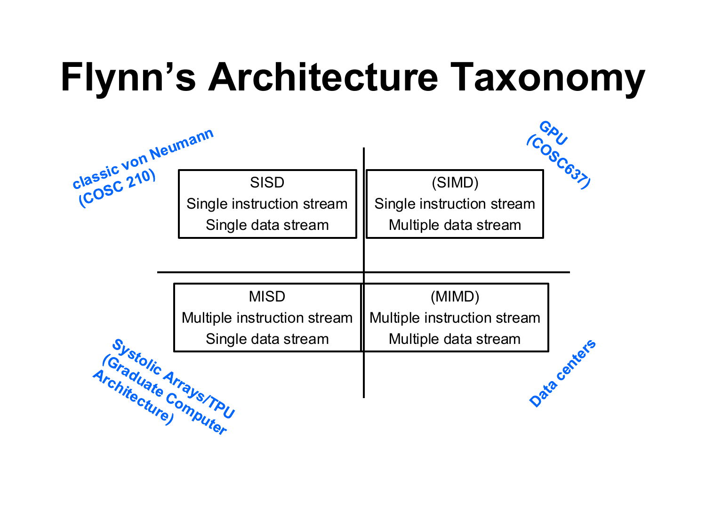
| Class类别 | Instruction / data streams指令流 / 数据流 | Definition定义 | Modern example现代实例 |
|---|---|---|---|
| SISD（单指令单数据） | one / one单 / 单 | conventional sequential computer传统顺序计算机 | one core running a scalar loop单个核心执行标量循环 |
| SIMD（单指令多数据） | one / many单 / 多 | the same instruction applied synchronously (lockstep) to different data elements同一条指令同步（步调一致）地作用于不同的数据元素 | AVX vector unit, GPUAVX 向量单元、GPU |
| MISD（多指令单数据） | many / one多 / 单 | used for fault tolerance; rare用于容错；罕见 | redundant flight computers voting on the same sensor data; the course also places systolic arrays and the TPU here对同一传感器数据进行表决的冗余飞行计算机；本课程还将脉动阵列和 TPU 归于此类 |
| MIMD（多指令多数据） | many / many多 / 多 | each processing element has its own instruction and data; asynchronous每个处理单元有各自的指令和数据；异步 | multicore CPU, cluster, data center多核 CPU、集群、数据中心 |
Three points explain the table:下面三点可以解释这张表：
- Lockstep means that all lanes of a SIMD unit do the same instruction in the same cycle. Lanes therefore cannot take different branches at once. An if-then-else takes two steps: first the then lanes run, then the else lanes.锁步是指 SIMD 单元的所有通道在同一个周期执行同一条指令。因此，各通道不能同时走不同的分支。一个 if-then-else 要分两步执行：先让 then 通道运行，再让 else 通道运行。
- A multicore CPU or a multi-socket server is MIMD with shared memory. A cluster or supercomputer is MIMD with distributed memory: each node has private memory and the processes exchange messages.多核 CPU 或多路服务器是带共享内存的 MIMD。集群或超级计算机是带分布式内存的 MIMD：每个节点有私有内存，进程之间通过消息交换数据。
- A GPU is classified as SIMD, in NVIDIA's name SIMT（单指令多线程）. A warp is a group of 32 threads. The 32 threads of a warp execute one instruction in lockstep on different data. A supercomputer node is MIMD across cores, SIMD inside each core and SIMT on its GPU, so say at which level you classify.GPU 被归为 SIMD，在 NVIDIA 的说法中称为 SIMT（单指令多线程）。线程束是由 32 个线程组成的一组。一个线程束中的 32 个线程在不同的数据上以锁步方式执行同一条指令。超级计算机的节点在内核之间是 MIMD，在每个内核内部是 SIMD，在它的 GPU 上是 SIMT。所以分类时要说明是在哪一层上分类。
Practice练习
Q1. (Classification) Classify each system and justify it in one sentence: (a) a single core executing a scalar C loop; (b) one AVX instruction that adds 8 floats; (c) a 16-core server in which every core runs a different thread; (d) a 100-node cluster running an MPI program; (e) three redundant computers that process the same sensor data and vote on the result.Q1. （分类） 对每个系统进行分类，并用一句话说明理由：(a) 单个核心执行标量 C 循环；(b) 一条对 8 个浮点数做加法的 AVX 指令；(c) 16 核服务器，每个核心运行不同的线程；(d) 运行 MPI 程序的 100 节点集群；(e) 三台处理同一传感器数据并对结果进行表决的冗余计算机。
Answer
(a) SISD: one instruction stream, one data item at a time. (b) SIMD: one instruction, eight data elements in lockstep. (c) MIMD with shared memory: 16 independent instruction streams on one memory. (d) MIMD with distributed memory: every node runs its own instruction stream, memories are separate and data move by messages. (e) MISD: several processing units on one data stream, with the results compared for fault tolerance.(a) SISD：一个指令流，每次作用于一个数据项。(b) SIMD：一条指令，8 个数据元素以锁步方式执行。(c) 共享内存的 MIMD：16 个独立的指令流作用于同一存储器。(d) 分布式内存的 MIMD：每个节点运行自己的指令流，存储器相互独立，数据通过消息传递。(e) MISD：多个处理单元作用于同一数据流，并比较其结果以实现容错。
易错：看指令流和数据流的个数，不要看线程数、芯片数或核数。
Q2. (True or false, justify) "A GPU runs thousands of threads at once, so it is a MIMD machine."Q2. （判断，并说明理由） “GPU 同时运行数千个线程，所以它是 MIMD 机器。”
Answer
False as stated. The criterion is the number of instruction streams, not the number of threads. The 32 threads of a warp share one instruction stream and execute each instruction in lockstep, which is why the GPU is classified as SIMD (SIMT). Different warps may run different code, so a whole GPU can be viewed as many SIMD units working in MIMD fashion, but the classification used in the course is SIMD/SIMT.就原文所述而言，这一说法不成立。判别标准是指令流的数目，而不是线程的数目。一个线程束中的 32 个线程共享一个指令流，并以锁步方式执行每条指令，这就是 GPU 被归为 SIMD（SIMT）的原因。不同线程束可以运行不同的代码，因此整个 GPU 可以看作以 MIMD 方式工作的许多 SIMD 单元，但本课程采用的分类是 SIMD/SIMT。
Pipelining and CPU time ★★流水线与 CPU 时间 ★★
Goal. Compute the number of cycles and the speedup of a pipeline, and compute the run time of a program from its instruction count, its cycles per instruction and the clock rate.目标。 计算流水线的周期数和加速比，并根据程序的指令条数、CPI 和时钟频率，计算它的运行时间。
Step 1: overlapping the stages第 1 步：让各个阶段重叠执行
A pipeline（流水线）splits the execution of an instruction into stages（级）handled by separate hardware modules and starts a new instruction in every cycle, like an assembly line. While instruction 1 is in its second stage, instruction 2 is in its first.流水线将一条指令的执行划分为若干级，每级由独立的硬件模块处理，并像装配线一样，每个周期启动一条新指令。当指令 1 处于第二级时，指令 2 处于第一级。

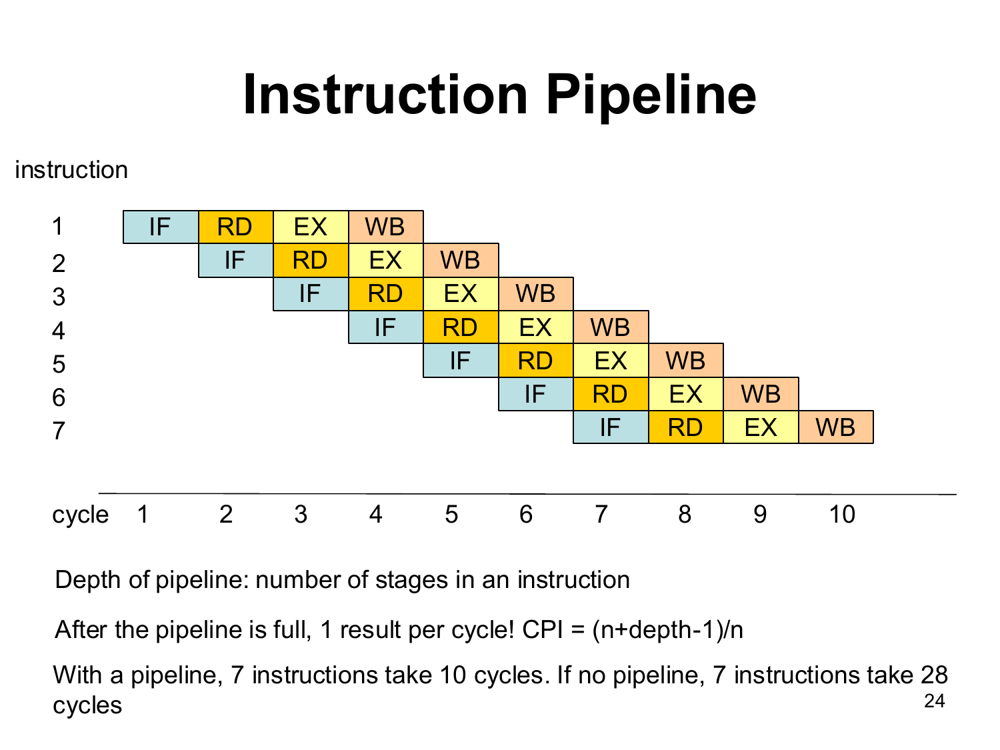
The stages are IF (fetch), RD (decode, read operands), EX (execute) and WB (write back). Let \(k\) be the pipeline depth (the number of stages) and \(n\) the number of instructions, with every stage one clock cycle.各阶段是 IF（取指）、RD（译码、读取操作数）、EX（执行）和 WB（写回）。设流水线深度（阶段数）为 \(k\)，指令条数为 \(n\)，每个阶段占一个时钟周期。
Step 2: cycles and speedup第 2 步：周期数与加速比
Without a pipeline, each instruction runs all \(k\) stages before the next one starts: \(n\times k\) cycles. With a pipeline, the first instruction needs \(k\) cycles to come out. After that, one instruction finishes in every cycle, so the other \(n-1\) instructions need \(n-1\) more cycles. In words:没有流水线时，每条指令要先走完全部 \(k\) 个阶段，下一条才能开始，共需 \(n\times k\) 个周期。有流水线时，第一条指令需要 \(k\) 个周期才能完成。之后每个周期都有一条指令完成，所以其余 \(n-1\) 条指令还需要 \(n-1\) 个周期。用文字表述：
cycles with pipeline = k + n − 1; cycles without pipeline = n × k; speedup = cycles without ÷ cycles with有流水线时的周期数 = k + n − 1；无流水线时的周期数 = n × k；加速比 = 无流水线时的周期数 ÷ 有流水线时的周期数
With a 2 GHz clock, one cycle lasts 0.5 ns. The 7 instructions then take \(10\times0.5\ \text{ns}=5\) ns with the pipeline and \(28\times0.5\ \text{ns}=14\) ns without it.时钟频率为 2 GHz 时，一个周期为 0.5 ns。这 7 条指令在有流水线时需要 \(10\times0.5\ \text{ns}=5\) ns，没有流水线时需要 \(28\times0.5\ \text{ns}=14\) ns。
Pipelining does not make one instruction faster: its latency stays at least \(k\) cycles. It raises the throughput from \(1/k\) to nearly 1 instruction per cycle. A hazard is a situation in which the next instruction cannot proceed. There are structural hazards (two instructions need the same hardware), data hazards (an instruction needs a result that is not ready) and control hazards (a branch decides which instruction comes next). A hazard forces a stall, which is a cycle without progress. Then \(\text{CPI}\approx1+(\text{stall cycles per instruction})\).流水线不会让单条指令变快：它的延迟至少仍是 \(k\) 个周期。它把吞吐率从 \(1/k\) 提高到接近每周期 1 条指令。流水线冒险是指下一条指令无法继续执行的情况。冒险有三种：结构冒险（两条指令需要同一块硬件）、数据冒险（一条指令需要的结果还没有准备好）和控制冒险（分支决定接下来执行哪条指令）。冒险会导致停顿，也就是一个没有进展的周期。然后 \(\text{CPI}\approx1+(\text{stall cycles per instruction})\)。
Step 3: CPU time第 3 步：CPU 时间
The CPI（每条指令的平均周期数）is the average number of clock cycles per instruction. For example, 150 cycles for 100 instructions give \(\text{CPI}=1.5\). The run time of a program is the number of cycles it needs times the duration of one cycle. In words:CPI（每条指令的平均周期数）是每条指令平均所需的时钟周期数。例如，100 条指令用了 150 个周期，那么 CPI 为 \(\text{CPI}=1.5\)。程序的运行时间等于它所需的周期数乘以一个周期的时长。用文字表述：
CPU time = instruction count × cycles per instruction × time per cycleCPU 时间 = 指令数 × 每条指令的平均周期数 × 每个周期的时间
Practice练习
Q1. (Calculation) A 5-stage pipeline executes \(n=100\) instructions without stalls. Find the number of cycles with and without the pipeline, the speedup, the CPI and the efficiency \(E_{\text{pipe}}=S_{\text{pipe}}/k\).Q1. （计算） 一条 5 级流水线在无停顿的情况下执行 \(n=100\) 条指令。求有流水线和无流水线时的周期数、加速比、CPI 以及效率 \(E_{\text{pipe}}=S_{\text{pipe}}/k\)。
Answer
With the pipeline: \(k+n-1=5+100-1=104\) cycles. Without it: \(nk=100\times5=500\) cycles. Speedup \(S_{\text{pipe}}=500/104=4.81\). \(\text{CPI}=104/100=1.04\). Efficiency \(E_{\text{pipe}}=4.81/5=0.96\).有流水线：\(k+n-1=5+100-1=104\) 个周期。无流水线：\(nk=100\times5=500\) 个周期。加速比 \(S_{\text{pipe}}=500/104=4.81\)。\(\text{CPI}=104/100=1.04\)。效率 \(E_{\text{pipe}}=4.81/5=0.96\)。
Interpretation: with 100 instructions the pipeline reaches 96% of the ideal speedup; the 4 start-up cycles cost the rest.解读：对于 100 条指令，流水线达到了理想加速比的 96%；启动所需的 4 个周期造成了其余的差距。
Q2. (Calculation) A program executes \(5\times10^{9}\) instructions with an average CPI of 2.0 on a 2.5 GHz processor. (a) Find the CPU time. (b) A pipeline and caches lower the CPI to 1.25 at the same clock rate. Find the new time and the speedup. (c) What clock rate would give the time of (b) with the original CPI of 2.0?Q2. （计算） 一个程序在 2.5 GHz 处理器上执行 \(5\times10^{9}\) 条指令，平均 CPI 为 2.0。(a) 求 CPU 时间。(b) 流水线与缓存在相同时钟频率下把 CPI 降至 1.25。求新的时间及加速比。(c) 若保持原来的 CPI 2.0，要得到 (b) 中的时间，需要多大的时钟频率？
Answer
(a) \(T_{\text{CPU}}=\text{IC}\times\text{CPI}/f=5\times10^{9}\times2.0/(2.5\times10^{9}\ \text{Hz})=4.0\) s.
(b) \(T_{\text{CPU}}=5\times10^{9}\times1.25/(2.5\times10^{9}\ \text{Hz})=2.5\) s, so the speedup is \(4.0/2.5=1.6\).(b) \(T_{\text{CPU}}=5\times10^{9}\times1.25/(2.5\times10^{9}\ \text{Hz})=2.5\) s，因此加速比为 \(4.0/2.5=1.6\)。
(c) \(f=\text{IC}\times\text{CPI}/T=5\times10^{9}\times2.0/(2.5\ \text{s})=4\times10^{9}\) Hz, that is 4 GHz, which is \(1.6\) times the original clock rate.(c) \(f=\text{IC}\times\text{CPI}/T=5\times10^{9}\times2.0/(2.5\ \text{s})=4\times10^{9}\) Hz，即 4 GHz，是原时钟频率的 \(1.6\) 倍。
Interpretation: a 1.6 times lower CPI and a 1.6 times higher clock rate give the same run time; architects use both levers.解读：CPI 降为原来的 1/1.6，与时钟频率提高为原来的 1.6 倍，二者给出相同的运行时间；体系结构设计者会同时利用这两种手段。
Terms to recognise ★需要认识的术语 ★
| Term术语 | What to know要知道什么 |
|---|---|
| Von Neumann architecture（冯·诺依曼结构） | Program and data share one memory (stored program); control unit, ALU with registers, input/output and a bus.程序与数据共享同一存储器（存储程序）；控制单元、带寄存器的 ALU、输入/输出和总线。 |
| Fetch–decode–execute取指—译码—执行 | The CPU reads the instruction at the PC, decodes it, executes it.CPU 读取 PC 处的指令，将其译码，然后执行。 |
| Von Neumann bottleneck冯·诺依曼瓶颈 | Every instruction and operand crosses one slow path between CPU and memory; the memory system limits speed.每条指令和每个操作数都要经过 CPU 与存储器之间的同一条慢速通路；存储系统限制了速度。 |
| Superscalar, ILP（指令级并行） | A core issues more than one instruction per cycle from one stream; the hardware finds the independent ones at run time.一个核心从同一指令流中每周期发射多条指令；硬件在运行时找出其中相互独立的指令。 |
| SIMD vector unitSIMD 向量单元 | One instruction on a register holding several elements: SSE 4 floats, AVX 8, AVX-512 16.对装有多个元素的寄存器执行一条指令：SSE 为 4 个浮点数，AVX 为 8 个，AVX-512 为 16 个。 |
| Multicore多核 | Several cores on one chip, each with its own pipeline and L1/L2 caches, sharing L3 and DRAM; caches must be kept coherent.同一芯片上的多个核心，每个核心有自己的流水线和 L1/L2 缓存，共享 L3 和 DRAM；缓存必须保持一致性。 |
| Hardware thread硬件线程 | One of several logical CPUs that share one core's units (SMT), so peak FLOP/s does not double.多个逻辑 CPU 之一，它们共享同一核心的运算单元（同时多线程，SMT），因此峰值 FLOP/s 不会翻倍。 |
| Socket, node插槽、节点 | A socket holds one CPU chip; a node is one complete computer (sockets, memory, network interface).一个插槽容纳一块 CPU 芯片；节点是一台完整的计算机（包括插槽、内存和网络接口）。 |
| UMA（一致内存访问） versus NUMA | UMA (SMP): all processors reach all memory in the same time. NUMA: memory is divided among sockets and local is faster than remote.UMA（SMP）：所有处理器访问所有内存的时间相同。NUMA：内存分布在各插槽之间，本地访问比远程访问快。 |
Exam-style questions考试题型练习
Q1. (Classification and counting) A cluster consists of 4 racks of 240 cores each (8 cores per CPU, 2 CPUs per blade, 5 blades per chassis, 3 chassis per rack). Every core has a SIMD unit with 8 float lanes. (a) How many cores and how many SIMD lanes does the cluster have? (b) Give the Flynn class of: one core executing a scalar loop; the SIMD unit of one core; the 16 cores of one blade, each running its own thread; the whole cluster running an MPI program. (c) The program computes c[i] = a[i] + b[i] for \(10^{8}\) floats, split evenly over all cores. How many vector additions does the busiest core execute?Q1. （分类与计数） 一个集群由 4 个机架组成，每个机架 240 个核心（每个 CPU 8 个核心，每个刀片 2 个 CPU，每个机箱 5 个刀片，每个机架 3 个机箱）。每个核心都有一个 8 个浮点通道的 SIMD 单元。(a) 该集群共有多少个核心，多少个 SIMD 通道？(b) 给出以下各项的 Flynn 类别：单个核心执行标量循环；单个核心的 SIMD 单元；一个刀片的 16 个核心，每个核心运行各自的线程；整个集群运行 MPI 程序。(c) 程序对 \(10^{8}\) 个浮点数计算 c[i] = a[i] + b[i]，并平均分配给所有核心。最繁忙的核心要执行多少次向量加法？
Answer
(a) One rack has \(8\times2\times5\times3=240\) cores, so the cluster has \(4\times240=960\) cores and \(960\times8=7680\) SIMD lanes.(a) 一个机架有 \(8\times2\times5\times3=240\) 个核心，因此该集群有 \(4\times240=960\) 个核心和 \(960\times8=7680\) 个 SIMD 通道。
(b) A scalar loop on one core: SISD. The SIMD unit: SIMD. The 16 cores of a blade: MIMD with shared memory, since each core runs its own instruction stream on a common memory. The MPI program on the whole cluster: MIMD with distributed memory, since each blade has its own memory and data move as messages.(b) 单个核心上的标量循环：SISD。SIMD 单元：SIMD。一个刀片上的 16 个核心：共享内存的 MIMD，因为每个核心都在公共存储器上运行自己的指令流。整个集群上的 MPI 程序：分布式内存的 MIMD，因为每个刀片有自己的存储器，数据以消息形式传递。
(c) \(10^{8}/960=104{,}166.7\) elements per core, so the busiest core gets 104,167 elements and needs \(\lceil104{,}167/8\rceil=13{,}021\) vector additions (a scalar core would need 104,167 additions).(c) 每个核心 \(10^{8}/960=104{,}166.7\) 个元素，因此最忙的核心分到 104,167 个元素，需要 \(\lceil104{,}167/8\rceil=13{,}021\) 次向量加法（标量核心则需要 104,167 次加法）。
Interpretation: the machine is MIMD across cores and SIMD inside each core; the speedup of the SIMD level is at most the number of lanes.解读：该机器在核心之间是 MIMD，在每个核心内部是 SIMD；SIMD 这一层的加速比至多等于通道数。
思路：逐层相乘，再逐层分类。
Q2. (Pipeline and CPU time) A 5-stage pipelined processor with a 2 GHz clock executes a program of \(10^{6}\) instructions. (a) Find the time without a pipeline (each instruction takes 5 cycles, one after the other) and with an ideal pipeline, the speedup and the CPI. (b) A data hazard stalls the pipeline for one cycle after 20% of the instructions. Find the CPI, the time and the speedup compared with the version without a pipeline. (c) Why is the speedup below \(k=5\)?Q2. （流水线与 CPU 时间） 一台时钟为 2 GHz 的 5 级流水线处理器执行一个包含 \(10^{6}\) 条指令的程序。(a) 求无流水线（每条指令依次需要 5 个周期）和理想流水线两种情形下的时间，以及加速比与 CPI。(b) 在 20% 的指令之后，数据冒险会使流水线停顿一个周期。求 CPI、时间，以及与无流水线版本相比的加速比。(c) 为什么加速比低于 \(k=5\)？
Answer
The clock period is \(T_{\text{clock}}=1/(2\times10^{9}\ \text{Hz})=0.5\) ns.时钟周期为 \(T_{\text{clock}}=1/(2\times10^{9}\ \text{Hz})=0.5\) ns。
(a) Without a pipeline: \(nk=5\times10^{6}\) cycles \(=2.5\) ms. With the pipeline: \(k+n-1=1{,}000{,}004\) cycles \(\approx0.5\) ms. The speedup is \(5\times10^{6}/1{,}000{,}004\approx5.0\) and \(\text{CPI}=1{,}000{,}004/10^{6}\approx1.000\).(a) 无流水线：\(nk=5\times10^{6}\) 个周期，即 \(=2.5\) ms。有流水线：\(k+n-1=1{,}000{,}004\) 个周期，即 \(\approx0.5\) ms。加速比为 \(5\times10^{6}/1{,}000{,}004\approx5.0\)，且 \(\text{CPI}=1{,}000{,}004/10^{6}\approx1.000\)。
(b) Stall cycles: \(0.2\times10^{6}=2\times10^{5}\). Total \(\approx1{,}200{,}004\) cycles, so \(\text{CPI}\approx1.2\) and \(T=1{,}200{,}004\times0.5\ \text{ns}\approx0.6\) ms. The speedup is \(5\times10^{6}/1{,}200{,}004\approx4.17\).(b) 停顿周期数：\(0.2\times10^{6}=2\times10^{5}\)。总计 \(\approx1{,}200{,}004\) 个周期，因此为 \(\text{CPI}\approx1.2\) 和 \(T=1{,}200{,}004\times0.5\ \text{ns}\approx0.6\) ms。加速比为 \(5\times10^{6}/1{,}200{,}004\approx4.17\)。
(c) The pipeline needs \(k-1=4\) cycles to fill, and hazards insert stall cycles, so the CPI is above 1. The speedup approaches \(k\) only for long sequences without stalls.(c) 流水线需要 \(k-1=4\) 个周期才能充满，而冒险会插入停顿周期，因此 CPI 大于 1。加速比只有在序列很长且无停顿时才趋近于 \(k\)。
Q3. (Cache organization, trace and AMAT) A direct-mapped cache of 256 bytes with 32-byte blocks is used with 16-bit addresses. (a) Find \(S\), \(s\), \(b\) and \(t\). (b) Give hit or miss for the byte addresses 0x0000, 0x0010, 0x0100, 0x0000, 0x0020, 0x0024, 0x0120, 0x0020. (c) With \(t_{\text{hit}}=1\) ns and \(t_{\text{penalty}}=50\) ns, find the AMAT of this trace. (d) Repeat (b) and (c) for a 2-way cache of the same capacity and block size.Q3. （缓存组织、访存轨迹与 AMAT） 一个 256 字节、32 字节块的直接映射缓存与 16 位地址配合使用。(a) 求 \(S\)、\(s\)、\(b\) 和 \(t\)。(b) 对以下字节地址给出命中或未命中：0x0000、0x0010、0x0100、0x0000、0x0020、0x0024、0x0120、0x0020。(c) 设 \(t_{\text{hit}}=1\) ns 和 \(t_{\text{penalty}}=50\) ns，求该轨迹的 AMAT。(d) 对于容量和块大小相同的 2 路缓存，重复 (b) 和 (c)。
Answer
(a) \(S=C/(EB)=256/(1\times32)=8\), \(s=3\), \(b=\log_2 32=5\), \(t=16-3-5=8\).
(b) Block \(=\lfloor a/32\rfloor\), index \(=\text{block}\bmod8\), tag \(=\lfloor\text{block}/8\rfloor\).(b) 块 \(=\lfloor a/32\rfloor\)，组索引 \(=\text{block}\bmod8\)，标记 \(=\lfloor\text{block}/8\rfloor\)。
| # | Address地址 | Block块 | Index索引 | Tag标记 | Result结果 |
|---|---|---|---|---|---|
| 1 | 0x0000 | 0 | 0 | 0 | miss (cold)未命中（冷） |
| 2 | 0x0010 | 0 | 0 | 0 | hit命中 |
| 3 | 0x0100 | 8 | 0 | 1 | miss (cold), evicts block 0未命中（冷），驱逐块 0 |
| 4 | 0x0000 | 0 | 0 | 0 | miss (conflict), evicts block 8未命中（冲突），驱逐块 8 |
| 5 | 0x0020 | 1 | 1 | 0 | miss (cold)未命中（冷） |
| 6 | 0x0024 | 1 | 1 | 0 | hit命中 |
| 7 | 0x0120 | 9 | 1 | 1 | miss (cold), evicts block 1未命中（冷），驱逐块 1 |
| 8 | 0x0020 | 1 | 1 | 0 | miss (conflict), evicts block 9未命中（冲突），驱逐块 9 |
2 hits and 6 misses: \(r_{\text{miss}}=6/8=75\%\).共 2 次命中和 6 次未命中：\(r_{\text{miss}}=6/8=75\%\)。
(c) \(\text{AMAT}=1+0.75\times50=38.5\) ns.(c) \(\text{AMAT}=1+0.75\times50=38.5\) ns。
(d) With \(S=4\) and \(E=2\) blocks 0 and 8 share set 0 and blocks 1 and 9 share set 1, and both sets hold two blocks. Accesses 4 and 8 now hit: 4 hits and 4 misses (all cold), \(r_{\text{miss}}=50\%\) and \(\text{AMAT}=1+0.5\times50=26\) ns, which is \(38.5/26=1.48\) times faster.(d) 在 \(S=4\) 和 \(E=2\) 的条件下，块 0 与块 8 共享第 0 组，块 1 与块 9 共享第 1 组，且两组各容纳两个块。访问 4 和 8 现在命中：共 4 次命中和 4 次未命中（均为冷未命中），\(r_{\text{miss}}=50\%\) 和 \(\text{AMAT}=1+0.5\times50=26\) ns，相当于快 \(38.5/26=1.48\) 倍。
Interpretation: the two conflict misses of the direct-mapped cache disappear with associativity.解读：直接映射缓存的两次冲突未命中随着相联度的提高而消失。
Q4. (Locality in code) A program sums double a[2048][2048] with the two loop orders of Assignment 1, Problem 5. The cache is 32 KiB with 32-byte blocks. (a) Which version has better spatial locality, and why? (b) Estimate the miss rates of both versions. (c) With \(t_{\text{hit}}=2\) ns and \(t_{\text{penalty}}=60\) ns, find the AMAT of both and the ratio. (d) How can the slow version be fixed?Q4. （代码中的局部性） 一个程序使用作业 1 第 5 题中的两种循环顺序对 double a[2048][2048] 求和。缓存为 32 KiB，块大小为 32 字节。(a) 哪个版本具有更好的空间局部性？为什么？(b) 估算两个版本的未命中率。(c) 设 \(t_{\text{hit}}=2\) ns 和 \(t_{\text{penalty}}=60\) ns，求两者的 AMAT 及其比值。(d) 应如何修正较慢的版本？
Answer
(a) The row-wise version (inner loop over the column index): C stores arrays row-major, so it reads consecutive addresses (stride 1) and uses all elements of every fetched block. The column-wise version jumps \(Nw=2048\times8=16{,}384\) bytes per access and uses one element per block.(a) 按行版本（内层循环遍历列下标）：C 按行主序存储数组，因此它读取连续地址（步幅为 1），并使用每个取回块中的全部元素。按列版本每次访问跳过 \(Nw=2048\times8=16{,}384\) 字节，每个块只使用一个元素。
(b) Row-wise: \(r_{\text{miss}}=w/B=8/32=25\%\). Column-wise: a column touches 2048 blocks, but the cache has only \(32768/32=1024\) lines, so the blocks are evicted before the next column needs them; in a direct-mapped cache the stride of 16 KiB (512 blocks) even maps all of them to 2 of the 1024 sets. Every access misses: \(r_{\text{miss}}\approx100\%\).(b) 按行版本：\(r_{\text{miss}}=w/B=8/32=25\%\)。按列版本：一列要访问 2048 个块，但缓存只有 \(32768/32=1024\) 个缓存行，因此这些块在下一列需要之前就已被驱逐；在直接映射缓存中，16 KiB（512 个块）的步幅甚至会把它们全部映射到 1024 个组中的 2 个组。每次访问都未命中：\(r_{\text{miss}}\approx100\%\)。
(c) Row-wise: \(2+0.25\times60=17\) ns. Column-wise: \(2+1\times60=62\) ns. The ratio is \(62/17=3.6\).(c) 按行版本：\(2+0.25\times60=17\) ns。按列版本：\(2+1\times60=62\) ns。比值为 \(62/17=3.6\)。
(d) Interchange the loops so that the inner loop runs along a row; if the access order cannot change, process the array in tiles that fit the cache.(d) 交换两层循环，使内层循环沿一行运行；若访问顺序不能改变，则按能装入缓存的小块处理数组。
Chapter 4Threads, Race Conditions and Pthreads线程、竞争条件与 Pthreads
Race conditions and mutexes ★★★竞争条件与互斥锁 ★★★
Goal. Explain why threads that update one shared variable can give a wrong result, repair it with a mutex, and say with numbers why the repaired program is still slower than the serial one and how to make it fast.目标。 说明多个线程同时修改一个共享变量为什么会得到错误结果，用互斥锁修复它，并用数字说明修复后的程序为什么仍比串行程序慢，以及如何让它变快。
Step 1: how an update gets lost第 1 步：更新是怎样丢失的
The program count3s counts the 3s in an array. The array is split into \(t\) blocks, one block per thread. Each thread adds 1 to the one global variable count whenever it finds a 3.程序 count3s 统计数组中 3 的个数。数组被分成 \(t\) 块，每个线程处理一块。每当找到一个 3，线程就给唯一的全局变量 count 加 1。
A race condition（竞争条件）is a result that depends on the order or the timing of the instructions of different threads. Here two threads can execute their three steps in an interleaved order. The second STORE then overwrites the first one. This is a lost update（丢失更新）.竞争条件是指结果取决于不同线程指令的先后顺序或时机的情况。这里，两个线程可能把各自的三步交错执行。第二次 STORE 随后覆盖了第一次的结果。这就是丢失更新。

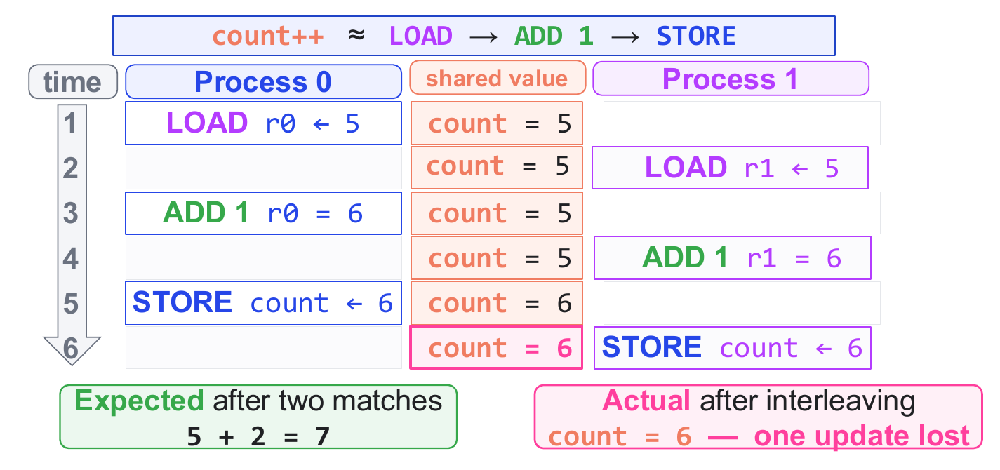
Step 2: the mutex第 2 步：互斥锁
The remedy is to let only one thread at a time execute the dangerous steps. A critical section（临界区）is code that accesses a shared variable and must not run in two threads at once. Mutual exclusion means that at most one thread is inside it.解决办法是每次只让一个线程执行那些有危险的步骤。临界区是访问共享变量、且不能同时被两个线程执行的代码。互斥是指：任何时候最多只有一个线程在临界区内。
A mutex（互斥锁）provides this. It works like the key of a room that has only one key. mutex_lock(m) waits until the mutex m is free and takes it, and mutex_unlock(m) gives it back. Every access to the shared variable must use the same mutex.互斥锁就是为此而设的。它的工作方式像一间只有一把钥匙的房间。mutex_lock(m) 会一直等待，直到互斥锁 m 空闲，然后拿下它；mutex_unlock(m) 则把它归还。共享变量的每一次访问都必须使用同一个互斥锁。
void count3s_thread(int id) {
int i;
int length_per_thread = length / t;
int start = id * length_per_thread;
for (i = start; i < (start + length_per_thread); i++) {
if (3 == array[i]) {
mutex_lock(m);
count++;
mutex_unlock(m);
} /* end if */
} /* end for i */
} /* end count3s_thread */
With the mutex, thread A takes the lock and changes count from 5 to 6. Thread B waits at mutex_lock until A has unlocked. B then loads 6 and stores 7, so the result is \(5+1+1=7\).有了互斥锁，线程 A 先加锁，把 count 从 5 改为 6。线程 B 在 mutex_lock 处等待，直到 A 解锁。然后 B 读取 6、写入 7，所以结果是 \(5+1+1=7\)。
Step 3: why the correct program is slower第 3 步：为什么正确的程序更慢
The result is now correct, but the program is slower than the serial program (serial run time 0.45273 s). The chart shows the run time of the mutex version for \(t=1,2,4,8\) threads:现在结果正确了，但程序比串行程序慢（串行运行时间为 0.45273 s）。图中给出了 \(t=1,2,4,8\) 个线程下带互斥锁版本的运行时间：

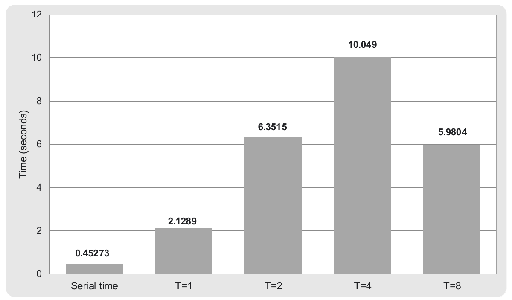
Speedup and efficiency are defined in Chapter 2 (Section 2.1). The slowdown is the same ratio turned upside down: it says how many times slower the parallel program is.加速比和效率在第 2 章第 2.1 节中定义。减速比是同一个比值倒过来的结果：它表示并行程序慢了多少倍。
speedup = serial run time ÷ parallel run time, slowdown = parallel run time ÷ serial run time加速比 = 串行运行时间 ÷ 并行运行时间，减速比 = 并行运行时间 ÷ 串行运行时间
There are three causes:原因有三个：
- Mutex overhead. Each lock and each unlock is a library call that executes atomic memory instructions, that is instructions that cannot be interrupted. This costs more than the increment itself, and it happens once per 3 even with one thread. That is why \(t=1\) is already 4.70 times slower.互斥锁开销。 每次加锁和解锁都是一次库调用，它执行的是原子内存指令，即不能被打断的指令。这比加 1 本身的代价大，而且即使只有一个线程，每遇到一个 3 也要付出一次。这就是为什么 \(t=1\) 已经慢了 4.70 倍。
- Serialization. Only one thread at a time can be inside the critical section. The critical sections of all threads therefore run one after another, and the other threads wait.串行化。 同一时刻只有一个线程能在临界区内。因此，所有线程的临界区会一个接一个地执行，其他线程只能等待。
- Lock contention（锁竞争）. When several threads compete for the lock, the lock and
counttravel between the caches of the cores. A thread that cannot get the lock usually blocks, which involves the operating system. More threads mean more waiting.锁竞争。当多个线程争抢同一把锁时，这把锁和count会在各内核的缓存之间来回传送。拿不到锁的线程通常会阻塞，这需要操作系统参与。线程越多，等待就越多。
Step 4: the private counter第 4 步：私有计数器
The fix is to avoid the lock during the scan. Each thread counts in a private counter（私有计数器）that only it can see. After the scan, each thread adds its counter once to count, inside one short critical section.办法是在扫描时不用锁。每个线程用一个只有它自己能看到的私有计数器来计数。扫描结束后，每个线程在一个很短的临界区内，把自己的计数器一次性加到 count 上。
The number of lock operations then falls from the number of 3s in the array to \(t\), the number of threads. Example: an array with 6 threes needs 6 lock operations in the mutex version, but with \(t=4\) threads the private-counter version needs only 4. For a large array the gain is far bigger (Practice, Q1 of Section 4.2).这样一来，加锁次数就从数组中 3 的个数降到 \(t\)，即线程数。例如，一个含有 6 个 3 的数组，在互斥锁版本中需要 6 次加锁操作，而用 \(t=4\) 个线程时，私有计数器版本只需要 4 次。对于大数组，收益要大得多（第 4.2 节练习的 Q1）。
void count3s_thread(int id) {
int i;
int length_per_thread = length / t;
int start = id * length_per_thread;
int local = 0; /* private: on this thread's stack */
for (i = start; i < (start + length_per_thread); i++) {
if (3 == array[i]) {
local++; /* no shared write, no lock */
} /* end if */
} /* end for i */
mutex_lock(m); /* one short critical section per thread */
count += local;
mutex_unlock(m);
} /* end count3s_thread */
Practice练习
Q1. (Find the race) Each of \(t\) threads runs scan on its own block of a (per elements per thread). (a) Which statement contains a race, and why? (b) Give two fixes and say which is faster for a large array.Q1. （找竞争条件） \(t\) 个线程中的每一个都在 a 中自己的块上运行 scan（每个线程 per 个元素）。（a）哪条语句包含竞争？为什么？（b）给出两种修正方法，并说明对于大数组哪一种更快。
int hits = 0; /* global, shared */
void *scan(void *arg) {
long id = (long) arg;
for (long i = id * per; i < (id + 1) * per; i++)
if (a[i] > 100) hits++; /* (1) */
return NULL;
}
Answer
(a) Statement (1). hits is a shared global that every thread reads, increments and writes back. The three steps of hits++ can interleave between threads and updates are lost. The reads of a[i] are not a race, because the data are only read, and id and i are private.（a）语句（1）。hits 是共享的全局变量，每个线程都会读取、递增并写回它。hits++ 的三个步骤可能在线程之间交错，从而导致更新丢失。对 a[i] 的读取不构成竞争，因为这些数据只被读取；id 和 i 则是私有的。
(b) Fix A: put hits++ between mutex_lock and mutex_unlock. It is correct but takes one lock operation per match and is slow, as in the mutex version of count3s. Fix B: count into a private local variable and add it to hits once under the lock after the loop. It is also correct and takes only \(t\) lock operations in total. Fix B is much faster for a large array because the threads almost never wait for each other.（b）修正 A：把 hits++ 放在 mutex_lock 与 mutex_unlock 之间。这样做正确，但每次匹配都要进行一次加锁操作，因此很慢，与 count3s 的互斥锁版本一样。修正 B：先在一个私有的 local 变量中计数，循环结束后，在锁的保护下把它加到 hits 上。这同样是正确的，并且锁操作总共只需 \(t\) 次。对于大数组，修正 B 要快得多，因为线程几乎从不相互等待。
思路：找被多个线程“写”的共享变量；只读的共享数据不用加锁。
Q2. (Calculation) A private-counter version of count3s runs in 0.06 s with 8 threads on the machine of the timings above (this time is hypothetical; the serial time is 0.45273 s). Compute \(S\) and \(E\) and compare with the mutex version at \(t=8\) (5.9804 s).Q2. （计算） 在上述计时所用的机器上，count3s 的私有计数器版本使用 8 个线程运行时间为 0.06 s（该时间为假设值；串行时间为 0.45273 s）。计算 \(S\) 和 \(E\)，并与 \(t=8\)（5.9804 s）下的互斥锁版本进行比较。
Answer
\(S=T_{\text{serial}}/T_8=0.45273/0.06=7.55\) and \(E=S/8=7.55/8=0.943\). The mutex version at \(t=8\) has \(S=0.0757\) (slowdown 13.21), so the private-counter version would be \(5.9804/0.06\approx100\) times faster.\(S=T_{\text{serial}}/T_8=0.45273/0.06=7.55\) 与 \(E=S/8=7.55/8=0.943\)。\(t=8\) 时的互斥锁版本具有 \(S=0.0757\)（减速比 13.21），因此私有计数器版本会快 \(5.9804/0.06\approx100\) 倍。
Interpretation: without lock contention the 8 threads scan their blocks independently, and the efficiency is close to 1. The 6% of lost efficiency is the cost of creating and joining threads, the final additions and the shared memory system.说明：没有锁竞争时，8 个线程各自独立地扫描自己的块，效率接近 1。效率损失的 6% 来自线程的创建与汇合、最后的加法以及共享内存系统的开销。
False sharing ★★★伪共享 ★★★
Goal. Explain why threads that write to different variables can still slow each other down, and compute how much padding puts every counter on its own cache line.目标。 说明写不同变量的线程为什么仍会互相拖慢，并计算要让每个计数器各占一个缓存行，需要填充多少。
Step 1: what false sharing is第 1 步：什么是伪共享
False sharing（伪共享）means that threads write different variables that happen to lie in the same cache line. Nothing is shared logically, and there is no race. The result is correct. But the line moves between the caches at every write, and the program slows down.伪共享是指线程写入的是不同的变量，但它们恰好位于同一个缓存行中。从逻辑上看没有共享，也不存在竞争，结果是正确的。但是这一行每次写入都要在缓存之间来回搬运，程序因此变慢。
Example: a global int counts[8] with counts[id]++ in the loop. The eight counters take \(8\times4=32\) bytes, so they fit into one 64-byte line. Eight threads then take the same line from each other at every increment.例如，有一个全局 int counts[8]，循环中用的是 counts[id]++。八个计数器共占 \(8\times4=32\) 字节，所以它们能放进一个 64 字节的缓存行。这样，八个线程每次自增时都要从彼此手中夺取同一行。
There are two fixes. One is padding, described next. The better one is a local variable that counts during the scan, and writes to the slot of the array only once at the end.有两种修复办法。一种是填充，下面会介绍。更好的办法是：扫描时用一个局部变量计数，最后只写入数组中对应的位置一次。
Step 2: padding第 2 步：填充
Padding adds unused bytes so that every counter has a cache line of its own. In words:填充是加入一些不用的字节，让每个计数器都有自己的缓存行。用文字表述：
counters per line = line size ÷ counter size, memory = number of threads × line size每行的计数器数 = 行大小 ÷ 计数器大小，内存 = 线程数 × 行大小
Step 3: the versions of count3s side by side第 3 步：count3s 各版本并列比较
| Version版本 | What each thread does每个线程的工作 | Correct?是否正确 | Fast? and why是否快？原因 |
|---|---|---|---|
| Serial串行 | one loop over all \(N\) elements对全部 \(N\) 个元素执行一个循环 | yes是 | baseline, 0.45273 s基准，0.45273 s |
Shared count, no lock共享 count，无锁 |
count++ on the shared counter对共享计数器执行 count++ |
no: lost updates否：丢失更新 | – |
Shared count, mutex共享 count，互斥锁 |
lock, count++, unlock for every 3每个 3 都执行加锁、count++、解锁 |
yes是 | no: \(S<1\), overhead and contention否：\(S<1\)，开销与锁竞争 |
counts[id]++ |
increment own slot of a global array递增全局数组中自己的槽位 | yes是 | no: false sharing, one line ping-pongs否：伪共享，同一缓存行来回迁移 |
| Private counters私有计数器 | local count, one locked addition per thread局部计数，每个线程执行一次加锁的加法 | yes是 | yes: no shared writes during the scan是：扫描期间不存在共享写入 |
Practice练习
Q1. (Calculation and concept) An array of \(2\times10^{8}\) ints contains 5% 3s and 8 threads scan it. (a) How many lock operations does the mutex version need, and how many do the private counters need? (b) A student instead lets each thread do counts[id]++ in the loop, with a global int counts[8]. Is there a race? Is there a performance problem? (c) How large is the padded layout?Q1. （计算与概念） 一个包含 \(2\times10^{8}\) 个 int 的数组，其中 5% 的元素为 3，由 8 个线程进行扫描。(a) 互斥锁版本需要多少次加锁操作，私有计数器版本又需要多少次？(b) 某学生改为让每个线程在循环中执行 counts[id]++，并使用全局的 int counts[8]。是否存在竞争条件？是否存在性能问题？(c) 填充后的布局占多大空间？
Answer
(a) The mutex version locks once per 3: \(0.05\times2\times10^{8}=10^{7}\) lock operations. The private counters need one per thread: 8. That is \(10^{7}/8=1.25\times10^{6}\) times fewer.（a）互斥锁版本每个 3 加锁一次，共 \(0.05\times2\times10^{8}=10^{7}\) 次加锁操作。私有计数器每个线程需要一次，共 8 次。这意味着次数少了 \(10^{7}/8=1.25\times10^{6}\) 倍。
(b) There is no race, because each thread writes only its own element. There is a performance problem: the eight counters occupy \(8\times4=32\) bytes, which lie in one 64-byte cache line (or two, if the array straddles a line boundary). Every increment invalidates the line in the caches of the other processors: false sharing.（b）没有竞争，因为每个线程只写自己的元素。但存在性能问题：八个计数器占用 \(8\times4=32\) 字节，它们位于同一个 64 字节的缓存行中（若数组跨越了缓存行边界，则可能分布在两个缓存行中）。每次递增都会使其他处理器缓存中的该缓存行失效：这就是伪共享。
(c) With \(L=64\) and \(s=4\): \(k=16\) counters per line, \(\text{pad}=60\) bytes, and 8 padded counters occupy \(8\times64=512\) bytes.（c）取 \(L=64\) 与 \(s=4\) 时：每行 \(k=16\) 个计数器，即 \(\text{pad}=60\) 字节；8 个经过填充的计数器占用 \(8\times64=512\) 字节。
The Pthreads API ★★★Pthreads API ★★★
Goal. Read and write a C program that starts threads with Pthreads, gives each thread its rank, and waits for all of them before it ends.目标。 编写一个 C 程序：用 Pthreads 启动线程，给每个线程分配编号，并在程序结束前等待所有线程。
Step 1: the two calls第 1 步：两个函数调用
Pthreads（POSIX 线程）is the C library for threads. pthread_create starts a thread that runs a function. pthread_join waits until a thread has ended. The arguments are:Pthreads（POSIX 线程）是 C 语言的线程库。pthread_create 启动一个运行某个函数的线程。pthread_join 等待某个线程结束。参数如下：
int pthread_create(
pthread_t* thread_p /* out: allocate before calling */,
const pthread_attr_t* attr_p /* in: NULL = defaults */,
void* (*start_routine)(void*) /* in: function the thread runs */,
void* arg_p /* in: its one argument */);
int pthread_join(
pthread_t thread /* in: the handle, by value */,
void** ret_val_p /* out: returned pointer, or NULL */);
- The start routine has the type
void* f(void*): it takes onevoid*and returns avoid*.void f(void*)orvoid* f(void)is a different type.起始例程的类型是void* f(void*)：它接受一个void*参数，返回一个void*。void f(void*)或void* f(void)是另一种类型。 pthread_createreturns at once. The new thread runs at the same time as the caller.pthread_create立即返回。新线程与调用者同时运行。
Step 2: passing the rank第 2 步：传递编号
The rank（编号）of a thread is its number from 0 to \(t-1\). A thread needs it to find out which block of the data is its own. The function receives only one argument, so the rank is passed through it.线程的编号是从 0 到 \(t-1\) 的数。线程靠它找到数据中属于自己的那一块。函数只能接收一个参数，所以要用这个参数来传递编号。
- The rank travels as
(void*) threadand returns as(long) rank.longhas the size of a pointer on 64-bit Linux (8 bytes),intdoes not (4 bytes).编号以(void*) thread的形式传入，再以(long) rank的形式取回。long与 64 位 Linux 上的指针大小相同（8 字节），int则不同（4 字节）。 - Several values go into a struct, and the thread receives a pointer to it. The struct must outlive the thread.如果要传递好几个值，就把它们放进一个结构体，线程接收的是指向这个结构体的指针。这个结构体必须活得比线程更久。
Step 3: joining第 3 步：汇合
pthread_joinis called once per thread. It blocks until that thread ends. It also makes everything the thread wrote visible to the caller.pthread_join对每个线程各调用一次。它会阻塞，直到那个线程结束。它还能让该线程写入的所有内容对调用者可见。- When
mainreturns, all threads are terminated. Somainmust join first. In count3s,countmust be read only after the joins.main返回时，所有线程都已终止。所以main必须先完成汇合。在 count3s 中，count必须在所有汇合之后才能读取。 - Because
pthread_createreturns at once, the output lines of the threads are unordered. Only the joins guarantee that all lines are printed.因为pthread_create立即返回，各线程的输出行顺序不定。只有汇合才能保证所有行都被打印出来。
Step 4: a complete program第 4 步：完整程序
The program below is the standard skeleton. Trace of ./pth_hello 4: main reads thread_count = 4 and allocates 4 handles. The first loop starts the threads with ranks 0, 1, 2 and 3. main prints its own line. The second loop joins the 4 threads. Each thread prints Hello from thread r of 4. The four lines and the main line come in an arbitrary order.下面的程序是标准框架。对 ./pth_hello 4 的执行过程说明如下：main 读取 thread_count = 4，并分配 4 个线程句柄。第一个循环用编号 0、1、2、3 启动线程。main 打印自己的一行。第二个循环汇合这 4 个线程。每个线程打印 Hello from thread r of 4。这四个线程的行和主线程的那一行，顺序是任意的。
#include <stdio.h>
#include <stdlib.h>
#include <pthread.h>
/* Global variable: accessible to all threads */
int thread_count;
void *Hello(void* rank); /* Thread function */
int main(int argc, char* argv[]) {
long thread; /* Use long in case of a 64-bit system */
pthread_t* thread_handles;
/* Get number of threads from command line */
thread_count = strtol(argv[1], NULL, 10);
thread_handles = malloc(thread_count * sizeof(pthread_t));
for (thread = 0; thread < thread_count; thread++)
pthread_create(&thread_handles[thread], NULL,
Hello, (void*) thread);
printf("Hello from the main thread\n");
for (thread = 0; thread < thread_count; thread++)
pthread_join(thread_handles[thread], NULL);
free(thread_handles);
return 0;
} /* main */
void *Hello(void* rank) {
long my_rank = (long) rank; /* Use long in case of 64-bit system */
printf("Hello from thread %ld of %d\n", my_rank, thread_count);
return NULL;
} /* Hello */
gcc -g -Wall -o pth_hello pth_hello.c -lpthread
./pth_hello 4
Practice练习
Q1. (pthread_create argument errors) What is wrong in each call? Assume pthread_t t; long x = 5; and void *f(void *arg);.Q1. （pthread_create 参数错误） 每个调用错在哪里？假设 pthread_t t; long x = 5; 与 void *f(void *arg);。
(a) pthread_create(t, NULL, f, &x);
(b) pthread_create(&t, f, NULL, &x);
(c) pthread_create(&t, NULL, f(&x), NULL);
(d) void g(void *arg) { } pthread_create(&t, NULL, g, &x);
(e) pthread_join(&t, NULL);
Answer
(a) The first argument must be the address of the handle, &t; t itself has the wrong type.
(b) The second argument is the attribute (use NULL) and the third is the function; here they are swapped.
(c) f(&x) calls f immediately in the calling thread and passes its return value as the start routine. The function itself, f, must be passed. The compiler may not even warn; at run time the new thread jumps to a meaningless address.
(d) The start routine must return void*; g returns nothing, so its type is incompatible.
(e) pthread_join takes the handle by value: pthread_join(t, NULL).（a）第一个参数必须是句柄的地址，即 &t；t 本身的类型错误。（b）第二个参数是属性（应使用 NULL），第三个参数是函数；此处二者被颠倒了。（c）f(&x) 会立即在调用线程中调用 f，并把它的返回值当作启动例程传入。应当传入的是函数本身 f。编译器甚至可能不会发出警告；运行时，新线程会跳转到一个毫无意义的地址。（d）启动例程必须返回 void*；g 不返回任何值，因此其类型不兼容。（e）pthread_join 按值接收句柄：pthread_join(t, NULL)。
(a), (b), (d) and (e) are rejected or flagged by the compiler (an error in recent GCC); (c) compiles silently and fails at run time.（a）、（b）、（d）和（e）会被编译器拒绝或标记（较新的 GCC 中为错误）；（c）则能静默通过编译，但在运行时失败。
Q2. (Find the bug) What is wrong with this loop, and how is it fixed?Q2. （找错） 这个循环有什么问题？应如何修正？
for (long i = 0; i < 4; i++)
pthread_create(&handles[i], NULL, work, &i); /* work: long r = *(long*) arg; */
Answer
All four threads receive the address of the same variable i. A thread reads *(long*) arg some time after it was created, by which time the loop has usually advanced i: several threads see the same rank, ranks may be off by one, and after the loop i does not even exist any more. The result depends on timing, so this is a race.四个线程都接收到同一个变量 i 的地址。线程在创建之后的某个时刻才读取 *(long*) arg，而到那时，循环通常已经推进了 i：多个线程看到相同的秩，秩可能相差 1，并且在循环结束之后，i 甚至已经不复存在。结果取决于时序，因此这是一种竞争。
Fix: pass the value, (void*) i, and read it with (long) arg as Hello World does. Or give every thread its own variable that outlives the threads, for example long rank[4] with &rank[i].修正办法：像 Hello World 那样直接传递值 (void*) i，并用 (long) arg 读取它。或者为每个线程提供一个生存期长于线程的独立变量，例如使用 long rank[4] 并配合 &rank[i]。
Block partition ★★块划分 ★★
Goal. Compute which elements of an array each thread handles, also when the number of elements is not a multiple of the number of threads.目标。 计算每个线程要处理数组中的哪些元素，包括元素个数不是线程数整数倍的情况。
Step 1: the blocks第 1 步：分块
Thread \(r\) of \(t\) takes a contiguous block of the array. Its block is a half-open interval \([\text{start}_r,\text{end}_r)\) that contains the index \(\text{start}_r\) but not \(\text{end}_r\).线程 \(r\)（共 \(t\) 个）处理数组中一段连续的块。它的块是半开区间 \([\text{start}_r,\text{end}_r)\)，包含下标 \(\text{start}_r\)，但不包含 \(\text{end}_r\)。
The block size \(b\) is the number of elements divided by the number of threads, rounded up. Thread \(r\) starts after \(r\) full blocks. The last block is cut off at \(N\), because it may be shorter. In words:块大小 \(b\) 是元素个数除以线程数再向上取整。线程 \(r\) 从前 \(r\) 个完整的块之后开始。最后一块在 \(N\) 处截断，因为它可能较短。用文字表述：
block size = ⌈elements ÷ threads⌉, start = rank × block size, end = the smaller of (start + block size) and the number of elements块大小 = ⌈元素个数 ÷ 线程数⌉，起点 = 编号 × 块大小，终点 = （起点 + 块大小）和元素个数中较小的那个
Step 2: when the threads do not divide the elements第 2 步：线程数不能整除元素个数时
If \(N\) is not a multiple of \(t\), integer division length/t rounds down and the last \(N \bmod t\) elements belong to no thread. Rounding up and cutting the last block at \(N\) covers everything. Example: \(N=10\), \(t=4\). Rounding down gives \(b=\lfloor10/4\rfloor=2\), the blocks cover \(4\times2=8\) elements, and 2 are lost. Rounding up gives \(b=\lceil10/4\rceil=3\) and the blocks \([0,3)\), \([3,6)\), \([6,9)\) and \([9,\min(12,10))=[9,10)\), so \(3+3+3+1=10\) elements.如果 \(N\) 不是 \(t\) 的倍数，整数除法 length/t 会向下取整，最后 \(N \bmod t\) 个元素就不属于任何线程。改为向上取整，再把最后一块在 \(N\) 处截断，就能覆盖全部元素。例如：\(N=10\)，\(t=4\)。向下取整得到 \(b=\lfloor10/4\rfloor=2\)，各块只覆盖 \(4\times2=8\) 个元素，有 2 个元素丢失。向上取整得到 \(b=\lceil10/4\rceil=3\)，各块分别为 \([0,3)\)、\([3,6)\)、\([6,9)\) 和 \([9,\min(12,10))=[9,10)\)，合计 \(3+3+3+1=10\) 个元素。
Step 3: a complete example第 3 步：完整示例
Practice练习
Q1. (Calculation) (a) An array has \(N=1000\) elements and \(t=8\) threads. Give the half-open index interval of thread 5. (b) For \(N=1000\) and \(t=12\), the first parallel version computes length_per_thread = length/t. Which elements are never examined? (c) Give the intervals of threads 10 and 11 with the formula \(b=\lceil N/t\rceil\) and the min.Q1. （计算） （a）数组有 \(N=1000\) 个元素，共 \(t=8\) 个线程。给出线程 5 的半开下标区间。（b）对于 \(N=1000\) 与 \(t=12\)，第一个并行版本计算的是 length_per_thread = length/t。哪些元素从未被检查？（c）利用公式 \(b=\lceil N/t\rceil\) 和 min，给出线程 10 和线程 11 的区间。
Answer
(a) \(b=1000/8=125\), so thread 5 has \(\text{start}_5=5\cdot125=625\) and \(\text{end}_5=750\): the indices 625–749.（a）\(b=1000/8=125\)，因此线程 5 的 \(\text{start}_5=5\cdot125=625\) 与 \(\text{end}_5=750\) 为：下标 625–749。
(b) length_per_thread \(=\lfloor1000/12\rfloor=83\). The last thread (11) ends at \(12\cdot83=996\), so the elements 996, 997, 998 and 999 (that is \(N \bmod t=4\) elements) are never examined, and any 3 among them is missed.（b）length_per_thread \(=\lfloor1000/12\rfloor=83\)。最后一个线程（线程 11）结束于 \(12\cdot83=996\)，因此元素 996、997、998 和 999（即 \(N \bmod t=4\) 个元素）从未被检查，其中的任何 3 都会被漏掉。
(c) \(b=\lceil1000/12\rceil=84\). Thread 10: \(\text{start}=840\), \(\text{end}=\min(924,1000)=924\). Thread 11: \(\text{start}=924\), \(\text{end}=\min(1008,1000)=1000\), which is \(76\) elements. All 1000 elements are covered: \(11\cdot84+76=1000\).（c）\(b=\lceil1000/12\rceil=84\)。线程 10：\(\text{start}=840\)，\(\text{end}=\min(924,1000)=924\)。线程 11：\(\text{start}=924\)，\(\text{end}=\min(1008,1000)=1000\)，共 \(76\) 个元素。全部 1000 个元素都被覆盖：\(11\cdot84+76=1000\)。
Interpretation: with \(\lceil N/t\rceil\) the last block is shorter instead of the tail being lost.说明：采用 \(\lceil N/t\rceil\) 时，最后一块只是更短，而不会丢掉尾部。
易错：整数除法 length/t 会悄悄丢掉余数。
Processes versus threads ★★进程与线程 ★★
Goal. Say which memory the threads of one program share and which they keep private, and explain why creating a thread is cheaper than creating a process.目标。 说明一个程序的线程共享哪些内存、哪些是各自私有的，并解释为什么创建线程比创建进程便宜。
Step 1: one address space or several第 1 步：一个地址空间，还是多个
A process has its own address space: code, global data, heap and stack. The threads of one process share one address space. Therefore a thread can read what another thread wrote, and no copy is needed.进程有自己的地址空间：代码、全局数据、堆和栈。同一进程的线程共享一个地址空间。因此，一个线程可以直接读取另一个线程写入的内容，不需要复制。

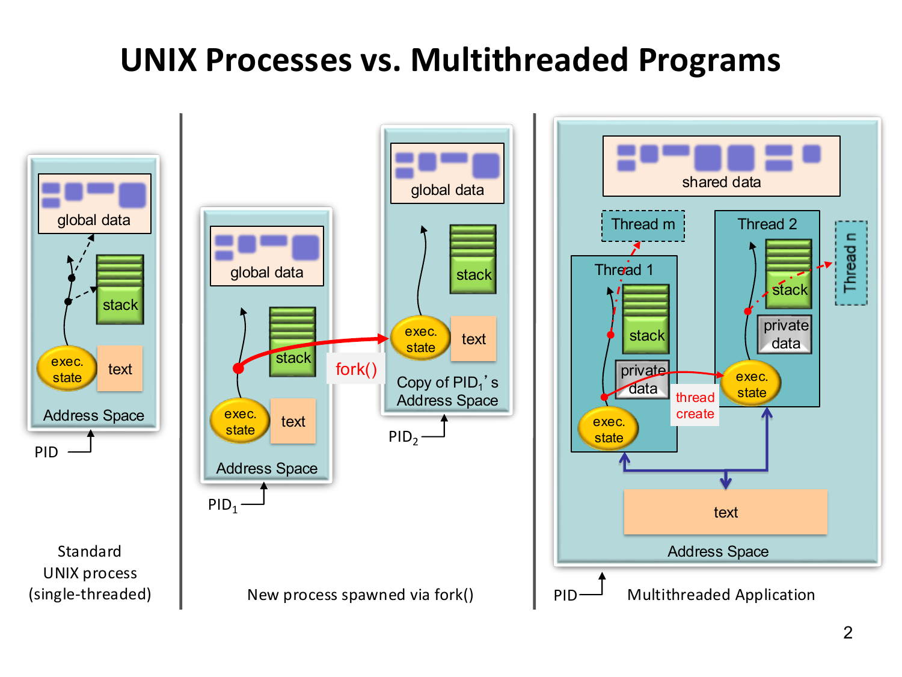
Step 2: what is shared and what is private第 2 步：哪些是共享的，哪些是私有的
Each thread runs its own stream of instructions. It therefore needs its own program counter (the address of the next instruction), its own registers and its own stack for local variables. Everything else is shared.每个线程都运行自己的指令流。因此，它需要自己的程序计数器（指向下一条指令的地址）、自己的寄存器，以及用于存放局部变量的自己的栈。其他一切都是共享的。
| Shared by all threads of a process同一进程的所有线程共享 | Private to each thread每个线程私有 |
|---|---|
| code (text) and read-only data代码段与只读数据 | program counter (PC)程序计数器（PC） |
| global and static variables (read/write data)全局变量与静态变量（读写数据） | registers: data registers, condition codes, stack pointer (SP)寄存器：数据寄存器、条件码、栈指针（SP） |
heap (memory from malloc)堆（来自 malloc 的内存） |
stack: local variables and return addresses栈：局部变量与返回地址 |
| open files (descriptor table)打开的文件（描述符表） | thread id (TID)线程 ID（TID） |
Step 3: cost and communication第 3 步：开销与通信
The table compares processes and threads. Creating and reaping a worker means starting it and cleaning up after it ends. The cost is counted in clock cycles (Section 1.1), where K means 1,000.下表比较进程和线程。创建并回收一个工作单元，是指启动它，并在它结束后做清理。开销以时钟周期计算（见第 1.1 节），其中 K 表示 1,000。
| Processes进程 | Threads of one process同一进程的线程 | |
|---|---|---|
| Address space地址空间 | one per process; fork() copies it每个进程一个；fork() 复制该地址空间 |
one, shared by all threads只有一个，由所有线程共享 |
| Creation and reaping (Linux)创建与回收（Linux） | about 20K cycles约 20K 个周期 | about 10K cycles or less约 10K 个周期或更少 |
| Communication通信 | explicit: pipes, sockets, shared-memory segments, messages显式方式：管道、套接字、共享内存段、消息 | read and write shared variables, with synchronization (Section 4.1)读写共享变量，并进行同步（见第 4.1 节） |
fork() creates a new process with a copy of the parent's address space; the two then run independently. pthread_create adds a thread to the same address space and copies nothing.fork() 创建一个新进程，其地址空间是父进程的副本；两者随后独立运行。pthread_create 则在同一地址空间中增加一个线程，不复制任何内容。
Practice练习
Q1. (Shared or private?) In which category does each of the following fall for the threads that execute work: shared by all threads, or private to each thread?Q1. （共享还是私有） 对于执行 work 的线程，下列各项分别属于哪一类：所有线程共享，还是每个线程私有？
int g = 10; /* (a) */
void *work(void *arg) {
int local = 0; /* (b) */
static int calls = 0; /* (c) */
int *buf = malloc(100 * sizeof(int)); /* (d) buf (e) the block it points to */
calls++;
/* ... */
return NULL;
}
Answer
(a) g is a global variable: shared.
(b) local is an ordinary local variable on the stack of the thread that runs work: private.
(c) calls is a static local variable. It has one copy for the whole process, so it is shared, and calls++ is a race.
(d) buf is a local pointer variable on the stack: private.
(e) The 400-byte block lies in the heap, which is shared. In practice only the thread that holds the pointer uses it, but any thread that obtains the pointer can access it.（a）g 是全局变量：共享。（b）local 是运行 work 的线程栈上的普通局部变量：私有。（c）calls 是一个 static 局部变量。它在整个进程中只有一份副本，因此是共享的，并且 calls++ 会构成竞争。（d）buf 是栈上的局部指针变量：私有。（e）这块 400 字节的内存位于堆中，堆是共享的。实际上通常只有持有该指针的线程会使用它，但任何获得该指针的线程都可以访问它。
易错：static 局部变量是共享的，不在线程栈上。
Q2. (Concept) A program has a global int count = 0. A child process created with fork() executes count++ 1000 times and exits; the parent waits for it and prints count. What does the parent print? What would it print if a thread had done the increments? Why?Q2. （概念） 某程序有一个全局 int count = 0。用 fork() 创建的子进程执行 count++ 1000 次后退出；父进程等待它结束，并打印 count。父进程会打印什么？如果由线程来完成这些自增，又会打印什么？为什么？
Answer
The parent prints 0. After fork() the child works on its own copy of the address space; its increments change only its own copy of count, which disappears when the child exits.父进程打印 0。在 fork() 之后，子进程处理的是它自己的地址空间副本；它的递增只改变其自身那份 count 的副本，而该副本会随子进程退出而消失。
If a thread had executed the 1000 increments, the parent would print 1000: all threads of a process share the global data, and the join makes the thread's writes visible. With several threads incrementing without synchronization, however, updates could be lost (Section 4.1).若由线程执行这 1000 次自增，父进程将打印 1000：同一进程的所有线程共享全局数据，而 join 使线程的写入对调用者可见。不过，若多个线程在没有同步的情况下自增，更新可能会丢失（见第 4.1 节）。
To share a counter between processes one needs an explicit mechanism, for example a shared-memory segment or a pipe that sends the partial count to the parent; in Python's multiprocessing module, mp.Value serves this purpose.若要在进程之间共享计数器，需要显式的机制，例如共享内存段，或者用一条管道把部分计数发送给父进程；在 Python 的 multiprocessing 模块中，mp.Value 即起此作用。
Terms to recognise ★需要认识的术语 ★
| Term术语 | What to know要知道什么 |
|---|---|
| Thread-safe（线程安全） | Can be called by several threads at once without corrupting data, like printf.可由多个线程同时调用而不破坏数据，例如 printf。 |
| Atomic operation（原子操作） | An uninterruptible read–modify–write, e.g. C11 atomic_fetch_add(&count, 1); cheaper than a lock, but increments from different cores still happen one at a time.不可中断的读—改—写，例如 C11 的 atomic_fetch_add(&count, 1)；比锁开销小，但来自不同核心的自增仍然是逐个进行的。 |
| Deadlock（死锁） | Threads wait forever for locks held by each other, e.g. lock(A); lock(B); against lock(B); lock(A);; prevent by one global lock order.线程之间相互等待对方持有的锁而永久阻塞，例如 lock(A); lock(B); 与 lock(B); lock(A); 相互等待；可通过统一的全局加锁顺序加以预防。 |
| Lock contention（锁竞争） | Threads compete for one lock, so each acquisition costs more and threads wait; more threads, more waiting.线程争用同一把锁，因此每次获取锁的开销更大，线程需要等待；线程越多，等待越久。 |
| Slowdown（减速比） | \(T_t/T_{\text{serial}}=1/S\); above 1 means slower than serial (Section 4.1).\(T_t/T_{\text{serial}}=1/S\)；大于 1 表示比串行更慢（见第 4.1 节）。 |
| Heap（堆）堆 | Memory reserved with malloc until freed; shared by all threads of a process.通过 malloc 分配、直到释放为止的内存；由进程的所有线程共享。 |
| Stack（栈）栈 | Local variables and return addresses; one per thread, but reachable through a pointer.局部变量和返回地址；每个线程一个，但可通过指针访问。 |
Exam-style questions考试题型练习
Q1. (Calculation and explanation) Here \(S\) is the speedup, \(E\) the efficiency and \(t\) the number of threads, as in Section 4.1. A serial count3s takes 1.20 s on a large array. The mutex version (one lock per 3) takes 6.0 s with 1 thread and 12.0 s with 4 threads. A version with private counters takes 0.32 s with 4 threads.
(a) Compute the speedup, the efficiency and, for the mutex runs, the slowdown of the three parallel runs.
(b) Explain why the 1-thread mutex run is slower than the serial program, and why the 4-thread mutex run is slower than the 1-thread run.
(c) How many lock operations does the private-counter version perform, and why is its speedup below 4?
(d) If 25% of the serial run time had to execute inside critical sections, what is the largest speedup that any number of threads could reach?Q1.（计算与解释）其中 \(S\) 为加速比，\(E\) 为效率，\(t\) 为线程数，与第 4.1 节一致。串行 count3s 程序在大数组上耗时 1.20 s。互斥锁版本（每遇到一个 3 加一次锁）单线程耗时 6.0 s，4 线程耗时 12.0 s。私有计数器版本在 4 线程下耗时 0.32 s。(a) 计算三个并行运行的加速比和效率，并计算互斥锁运行的减速比。(b) 解释为什么单线程互斥锁运行比串行程序慢，以及为什么 4 线程互斥锁运行比单线程慢。(c) 私有计数器版本执行多少次加锁操作？为什么其加速比低于 4？(d) 若串行运行时间的 25% 必须在临界区内执行，则无论使用多少线程，加速比最大能达到多少？
Answer
(a) Speedup is \(S=T_{\text{serial}}/T_t\) and efficiency is \(E=S/t\).（a）加速比为 \(S=T_{\text{serial}}/T_t\)，效率为 \(E=S/t\)。
- Mutex, \(t=1\): \(S=1.20/6.0=0.20\), \(E=0.20\), slowdown \(6.0/1.20=5.0\).互斥锁，\(t=1\)：\(S=1.20/6.0=0.20\)，\(E=0.20\)，减速比 \(6.0/1.20=5.0\)。
- Mutex, \(t=4\): \(S=1.20/12.0=0.10\), \(E=0.10/4=0.025\), slowdown \(12.0/1.20=10\).互斥锁，\(t=4\)：\(S=1.20/12.0=0.10\)，\(E=0.10/4=0.025\)，减速比 \(12.0/1.20=10\)。
- Private counters, \(t=4\): \(S=1.20/0.32=3.75\), \(E=3.75/4=0.9375\).私有计数器，\(t=4\)：\(S=1.20/0.32=3.75\)，\(E=3.75/4=0.9375\)。
(b) With one thread there is no waiting, but each lock and unlock is a library call with atomic memory instructions, executed once per 3. This mutex overhead costs more than the increment it protects, so the run is 5 times slower than the serial one. With 4 threads the critical sections of all threads are serialized: only one thread at a time can hold the lock, the others wait, and the lock and count move between the caches of the processors. This lock contention makes each acquisition more expensive, so the run takes 12.0 s.（b）只用一个线程时没有等待，但每次加锁和解锁都是带有原子内存指令的库调用，每遇到一个 3 就执行一次。这种互斥锁开销比它所保护的递增操作还要大，因此运行时间是串行版本的 5 倍。使用 4 个线程时，所有线程的临界区都被串行化：任一时刻只有一个线程能持有锁，其他线程等待，而锁和 count 会在各处理器的缓存之间迁移。这种锁竞争使每次获取锁的代价更高，因此运行时间达到 12.0 s。
(c) One per thread, that is 4. The speedup is below 4 (\(3.75\)) because thread creation and joining, the final additions and the shared memory system are not perfectly parallel.（c）每个线程一次，即 4 次。加速比低于 4（\(3.75\)），原因在于线程的创建与汇合、最后的加法以及共享内存系统都不能完全并行。
(d) Amdahl's law (Chapter 2), where \(f\) is the fraction of the serial run time that cannot be parallelized, here \(f=0.25\): \(S\le1/f=4\), independently of the number of threads.(d) Amdahl 定律（见第 2 章）：\(f\) 为串行运行时间中不能被并行化的比例，此处 \(f=0.25\) 为 \(S\le1/f=4\)，与线程数无关。
思路：S = 串行时间/并行时间；锁开销 + 排队解释“比串行慢”。
Q2. (Interleavings) Three threads each execute count++ once, starting from count = 0, with no synchronization.
(a) Which final values are possible? (b) Describe an interleaving for each of them. (c) What changes if every count++ is protected by one mutex?Q2. （交错执行）三个线程各执行一次 count++，起始值为 count = 0，且没有任何同步。（a）哪些最终值是可能的？（b）为每个可能的值描述一种交错执行。（c）如果每个 count++ 都由同一把互斥锁保护，结果有什么变化？
Answer
(a) The final value is 1, 2 or 3. (An exhaustive enumeration of the 1680 possible interleavings of the nine instructions gives exactly these three values.)（a）最终值为 1、2 或 3。（对九条指令的 1680 种可能交错执行做穷举，恰好得到这三个值。）
(b) Each increment is LOAD, ADD, STORE.（b）每次递增由 LOAD、ADD、STORE 组成。
- 3: the threads run one after another, so every LOAD sees the previous result.3：线程一个接一个地执行，因此每次 LOAD 都能看到前一次的结果。
- 2: threads A and B both load 0, A adds and stores 1, B adds and stores 1 (one update lost, memory holds 1); thread C then loads 1 and stores 2.2：线程 A 与 B 都加载 0，A 做加法并存入 1，B 做加法并存入 1（丢失一次更新，内存中为 1）；随后线程 C 加载 1 并存入 2。
- 1: all three threads load 0 before any of them stores; each adds 1 and each stores 1.1：三个线程都在任一线程存入之前加载 0；各自加 1，并各自存入 1。
(c) With a mutex the three read–modify–write sequences cannot interleave, so the only possible final value is 3.（c）使用互斥锁时，三个读–修改–写序列不能交错执行，因此唯一可能的最终值是 3。
Interpretation: the number of lost updates is not the number of threads that collide; the final value can fall back to the value that a slow thread loaded long before.说明：丢失的更新次数并不等于发生冲突的线程数；最终值可能回落到某个慢线程很久以前加载的那个值。
Q3. (Pthreads) In Hello World a student moves the pthread_join call into the first loop, directly after pthread_create:
for (thread = 0; thread < thread_count; thread++) { pthread_create(...); pthread_join(thread_handles[thread], NULL); }
(a) What does ./pth_hello 4 print? (b) Is the program still correct? What is lost? (c) What can go wrong if the joins are removed completely?Q3. （Pthreads）在 Hello World 中，一名学生把 pthread_join 调用移到了第一个循环中，紧跟在 pthread_create 之后，写成了 for (thread = 0; thread < thread_count; thread++) { pthread_create(...); pthread_join(thread_handles[thread], NULL); }。（a）./pth_hello 4 会打印什么？（b）程序仍然正确吗？失去了什么？（c）如果完全去掉汇合，会出现什么问题？
Answer
(a) Each thread has finished before the next one is created, and the main-thread line is printed after the loop. The output is therefore always Hello from thread 0 of 4, Hello from thread 1 of 4, Hello from thread 2 of 4, Hello from thread 3 of 4, and then Hello from the main thread.（a）每个线程都在下一个线程被创建之前结束，并且主线程的那一行在循环之后打印。因此输出始终为 Hello from thread 0 of 4、Hello from thread 1 of 4、Hello from thread 2 of 4、Hello from thread 3 of 4，然后是 Hello from the main thread。
(b) The program is correct and its output is deterministic, but the threads no longer run concurrently with each other: at any time at most one worker exists, so there is no speedup and the program pays the cost of creating and joining threads for nothing. The joins must come in a second loop after all threads have been created.（b）程序仍然正确，输出也是确定的，但线程之间不再并发运行：任一时刻至多只存在一个工作者，因此没有任何加速，并且程序白白承担了创建和汇合线程的开销。汇合必须放在第二个循环中，并且在所有线程都已创建之后进行。
(c) main can return, and with it the whole process ends, before some threads have printed. Those threads are terminated, and lines are missing from the output. The same applies in count3s: the result must not be read before the joins.（c）main 可能先于某些线程完成打印就返回，随之整个进程结束。这些线程会被终止，输出中会缺少某些行。count3s 也是如此：结果不得在汇合之前读取。
Q4. (False sharing and padding) Eight threads each increment their own int counter \(10^{8}\) times. The counters are the elements of a global array int counts[8]. (a) Is there a race? Is there a performance problem? Explain with 64-byte cache lines. (b) Give two fixes, and compute the memory of the padded layout. (c) Which of the versions discussed in this chapter avoids the problem altogether?Q4. （伪共享与填充） 八个线程各自将自己的 int 计数器递增 \(10^{8}\) 次。这些计数器是全局数组 int counts[8] 的元素。(a) 是否存在竞争条件？是否存在性能问题？请结合 64 字节缓存行加以解释。(b) 给出两种修正方法，并计算填充后布局所占的内存。(c) 本章讨论过的哪一个版本完全避免了这一问题？
Answer
(a) There is no race: each thread writes only its own element. There is a performance problem, false sharing. The eight counters occupy \(8\times4=32\) bytes and lie in one 64-byte cache line (or two if the array straddles a line boundary). Every increment needs exclusive ownership of the line and invalidates it in the caches of the other processors, so the line moves between the caches at every increment and the threads slow each other down although they share no data.（a）没有竞争：每个线程只写自己的元素。但存在性能问题，即伪共享。八个计数器占用 \(8\times4=32\) 字节，位于同一个 64 字节的缓存行中（若数组跨越了缓存行边界，则分布在两个缓存行中）。每次递增都需要独占该缓存行，并使其他处理器缓存中的该行失效，因此缓存行在每次递增时都会在各缓存之间迁移，线程虽然并不共享任何数据，却会相互拖慢。
(b) Pad each counter to its own line: \(k=L/s=64/4=16\) ints per line, so use counts[16*id] or a struct with \(L-s=60\) bytes of padding; the memory is \(t\,L=8\times64=512\) bytes instead of \(32\) bytes. Alternatively, accumulate in a local variable on the stack and write the shared slot once after the loop.（b）把每个计数器填充到独占的缓存行中：每行 \(k=L/s=64/4=16\) 个 int，因此可以使用 counts[16*id]，或使用带 \(L-s=60\) 字节填充的结构体；所占内存为 \(t\,L=8\times64=512\) 字节，而非 \(32\) 字节。另一种方法是在栈上的局部变量中累加，并在循环结束后只写一次共享槽位。
(c) The private-counter version: the scan has no shared writes, and the single final addition per thread is negligible.（c）私有计数器版本：扫描过程中没有共享写入，而每个线程最后的那次加法可以忽略不计。
思路：不同变量、同一缓存行，仍然互相使对方缓存失效。
Chapter 5Parallel Python: Processes, Threads and the GILPython 并行：进程、线程与 GIL
The GIL: threads versus processes ★★★GIL：线程与进程 ★★★
Goal. Explain why Python threads do not speed up computing but do speed up waiting, and choose between threading and multiprocessing for a given task. Then compute the speedup of a threaded program that waits for the network.目标。 解释为什么 Python 线程不能加快计算，却能加快等待；并为给定的任务在 threading 和 multiprocessing 之间做出选择。然后计算一个等待网络的线程程序的加速比。
Reminder: a process has its own memory, and the threads of one process share that memory (Section 4.5). Here a thread and a process are used in that sense.提醒：一个进程有自己的内存，同一进程的线程共享这块内存（见第 4.5 节）。这里，线程 和 进程 就是按这个意思使用的。
Step 1: what the GIL is第 1 步：什么是 GIL
The Global Interpreter Lock（GIL，全局解释器锁）is a lock inside CPython. A thread must hold it to execute Python bytecode. There is only one lock per process, so only one thread of a process runs Python code at any moment. This holds however many cores the machine has.GIL（全局解释器锁）是 CPython 内部的一把锁。线程必须持有它才能执行 Python 字节码。每个进程只有一把这样的锁，所以同一进程中任何时刻都只有一个线程在运行 Python 代码。不论机器有多少个核心，都是这样。
The two words to keep apart:需要分清的两个词：
- Concurrency（并发）: several tasks are in progress during overlapping periods of time. Taking turns on one core is enough.并发：多个任务在时间上重叠地进行。只要在一个核心上轮流执行就够了。
- Parallelism（并行）: several tasks execute at the same instant on different cores.并行：多个任务在同一时刻，在不同的核心上同时执行。
Python threads give concurrency but, for Python code, no parallelism.Python 线程能带来并发，但对 Python 代码来说，带不来并行。
Step 2: when threads help and when they do not第 2 步：什么时候线程有用，什么时候没用
- CPU-bound threads need the GIL all the time. They take turns, gain nothing and may even lose time, because handing the GIL back and forth costs a little.计算密集型 线程需要一直持有 GIL。它们只能轮流执行，没有任何收益，甚至可能更慢，因为来回交接 GIL 也要花一点时间。
- I/O-bound threads release the GIL while they wait (in read, write, send, recv and
time.sleep). Another thread can use the GIL in the meantime, so the waiting periods overlap.I/O 密集型 线程在等待时会释放 GIL（在 read、write、send、recv 和time.sleep中）。这时别的线程就能使用 GIL，所以各自的等待时间可以重叠。
Which tool to choose:选择工具的方法：
- Use
threadingfor waiting (web requests, disk). Threads are cheap to start.等待类任务（网络请求、磁盘）用threading。线程的启动开销很小。 - Use
multiprocessingfor pure-Python computing. Each process has its own interpreter and its own GIL, so the processes really run at the same time.纯 Python 计算用multiprocessing。每个进程有自己的解释器和自己的 GIL，因此进程之间真正同时运行。
Amdahl's law (Section 2.3) describes this. The part of the run time that holds the GIL cannot overlap, so it is the serial fraction \(f\). CPU-bound code has \(f\approx1\) and therefore \(S\approx1\). In the I/O-bound example above, \(f=0.1\ \text{s}/1.0\ \text{s}=0.1\) for each task.阿姆达尔定律（见第 2.3 节）描述了这一点。持有 GIL 的那部分运行时间不能重叠，所以它就是串行比例 \(f\)。计算密集型代码的串行比例是 \(f\approx1\)，因此 \(S\approx1\)。在上面的 I/O 密集型例子中，每个任务的 \(f=0.1\ \text{s}/1.0\ \text{s}=0.1\)。
Step 3: the speedup of I/O-bound threads第 3 步：I/O 密集型线程的加速比
Suppose \(n\) requests each wait the same time and are served by \(k\) threads. The threads start \(k\) requests at once, and when these are finished the next \(k\). So the run time is the number of such rounds times the time of one request. In words:假设有 \(n\) 个请求，每个请求等待的时间相同，由 \(k\) 个线程来处理。线程一次同时开始 \(k\) 个请求，这些完成后，再开始接下来的 \(k\) 个。所以运行时间等于轮数乘以一个请求的时间。用文字表述：
speedup = time of the sequential run ÷ time of the threaded run = (n × time of one request) ÷ (rounds × time of one request)加速比 = 顺序运行时间 ÷ 线程运行时间 = (n × 一个请求的时间) ÷ (轮数 × 一个请求的时间)
Take \(n=6\) requests that wait 0.5 s each (3.0 s sequentially). With \(k=4\) threads there are 2 rounds, so \(T=2\times0.5\ \text{s}=1.0\) s and \(S=3.0/1.0=3\). The table gives the speedup and the efficiency \(E=S/k\) (the share of the \(k\) threads that is used) for every \(k\).取 \(n=6\) 个请求，每个等待 0.5 秒（顺序执行需要 3.0 秒）。用 \(k=4\) 个线程时有 2 轮，所以运行时间为 \(T=2\times0.5\ \text{s}=1.0\) 秒，加速比为 \(S=3.0/1.0=3\)。表中列出了每个 \(k\) 的加速比，以及效率 \(E=S/k\)（被使用的线程占 \(k\) 个线程的比例）。
A real measurement of six web sites: 3.31 s sequentially and 0.51 s with threads, so \(S=3.31/0.51=6.5\). The formula allows at most \(S=6\) for six requests. The value above 6 means that the two runs saw different reply times from the servers.一次真实测量：6 个网站顺序访问需要 3.31 秒，用线程只需要 0.51 秒，所以加速比为 \(S=3.31/0.51=6.5\)。对 6 个请求，公式最多只能给出 \(S=6\)。超过 6 的数值说明，两次运行时服务器的回复时间不一样。
Practice练习
Q1. (Concept) Define the GIL. Explain why two CPU-bound threads run no faster than one, and why two threads that each download a file do.Q1. (概念) 定义 GIL。解释为什么两个 CPU 密集型线程不比一个线程快，而两个各自下载文件的线程却会更快。
Answer
The Global Interpreter Lock is a lock in the CPython interpreter that must be held to execute Python bytecode, so only one thread of a process executes Python code at any moment.全局解释器锁是 CPython 解释器中的一把锁，执行 Python 字节码时必须持有它，因此在任何时刻，一个进程中只有一个线程在执行 Python 代码。
Two CPU-bound threads both need the interpreter all the time. They take turns on the GIL, so the total time is that of the sequential work plus the cost of switching: \(f\approx1\) and \(S\approx1\) in Amdahl's law.两个 CPU 密集型线程都始终需要解释器。它们在 GIL 上轮流执行，因此总耗时等于串行工作的耗时加上切换的开销：在 Amdahl 定律中即 \(f\approx1\) 与 \(S\approx1\)。
A download spends almost all of its time waiting for the network, and the thread releases the GIL while it waits (the GIL is released on I/O). The other thread uses that time, so the two waiting periods overlap and the program takes about as long as the slower download, not the sum.下载几乎把全部时间都花在等待网络上，而线程在等待时会释放 GIL（GIL 在 I/O 时被释放）。另一个线程正好利用这段时间，因此两段等待时间相互重叠，程序耗时大致等于较慢的那次下载，而不是两者之和。
思路：CPU-bound 一直要 GIL，轮流用；I/O-bound 等待时放开 GIL，等待可以重叠。
Q2. (Threads or processes?) Choose threads, processes or neither for each task and justify: (a) fetch 200 web pages; (b) compute the SHA-1 hash of 20 files with a pure-Python implementation; (c) a program that keeps a window responsive while it reads a large file; (d) run 4 independent simulations written in pure Python on a 4-core machine.Q2. (线程还是进程？) 为以下每项任务选择线程、进程或都不用，并说明理由：(a) 抓取 200 个网页；(b) 用纯 Python 实现计算 20 个文件的 SHA-1 哈希；(c) 在读取大文件时保持窗口响应的程序；(d) 在 4 核机器上运行 4 个独立的、用纯 Python 编写的模拟。
Answer
(a) Threads: the task is I/O-bound, the GIL is released while waiting for the servers, and threads are cheap to start. The number of threads must be limited.(a) 线程：该任务是 I/O 密集型的，等待服务器响应时 GIL 被释放，而且线程启动开销小。线程数必须加以限制。
(b) Processes: a pure-Python hash loop is CPU-bound and holds the GIL, so threads would not speed it up. (A hash function from the standard library hashlib, written in C, releases the GIL for large inputs, and threads would then also work.)（b）进程：纯 Python 的哈希循环是 CPU 密集型的，并且会持有 GIL，因此线程无法加速它。（标准库中的哈希函数 hashlib 是用 C 编写的，对于较大的输入会释放 GIL，此时线程同样可行。）
(c) A thread: the reading thread waits for the disk and releases the GIL, so the thread that handles the window keeps running; the goal is responsiveness, not speed.（c）线程：读取线程等待磁盘时会释放 GIL，因此处理窗口的线程可以继续运行；目标是响应性，而不是速度。
(d) Processes: CPU-bound pure Python, one process per core. Four threads would run at about the speed of one.（d）进程：纯 Python 的 CPU 密集型任务，每个核心一个进程。若用四个线程，其运行速度大约只相当于一个线程。
Q3. (Calculation) A program downloads 100 files, each taking 0.2 s of waiting; \(T_{\text{seq}}\) is the sequential time, \(T_k\) the time with \(k\) threads, \(S=T_{\text{seq}}/T_k\) the speedup and \(E=S/k\) the efficiency. Give the time and the speedup for \(k=1,10,30,100\) threads.Q3.（计算）一个程序下载 100 个文件，每个文件需等待 0.2 s；\(T_{\text{seq}}\) 为顺序运行时间，\(T_k\) 为使用 \(k\) 个线程时的时间，\(S=T_{\text{seq}}/T_k\) 为加速比，\(E=S/k\) 为效率。求使用 \(k=1,10,30,100\) 个线程时的时间和加速比。
Answer
\(T_{\text{seq}}=100\cdot0.2=20\) s, and \(T_k=\lceil100/k\rceil\cdot0.2\) s:\(T_{\text{seq}}=100\cdot0.2=20\) s，\(T_k=\lceil100/k\rceil\cdot0.2\) s：
- \(k=1\): 100 rounds, 20 s, \(S=1\).\(k=1\)：100 轮，20 s，\(S=1\)。
- \(k=10\): 10 rounds, 2.0 s, \(S=10\), \(E=1\).\(k=10\)：10 轮，2.0 s，\(S=10\)，\(E=1\)。
- \(k=30\): 4 rounds, 0.8 s, \(S=25\), \(E=0.83\) (the last round has only 10 requests).\(k=30\)：4 轮，0.8 s，\(S=25\)，\(E=0.83\)（最后一轮只有 10 个请求）。
- \(k=100\): 1 round, 0.2 s, \(S=100\).\(k=100\)：1 轮，0.2 s，\(S=100\)。
Shared state and races in multiprocessing ★★★多进程中的共享状态与竞争 ★★★
Goal. Explain why worker processes do not share ordinary variables, show with a step-by-step trace how an unprotected shared counter loses an update, and compare the three correct fixes by the number of lock acquisitions.目标。 解释工作进程为什么不共享普通变量；用逐步的过程说明没有保护的共享计数器怎样丢失更新；并按加锁次数比较三种正确的修复方法。
Step 1: processes do not share variables第 1 步：进程不共享变量
A process（进程）has its own address space, that is, its own private memory (Section 4.5). When a worker process is created, it receives a copy of the data. A variable that a worker changes is changed in the worker's copy only.进程 有自己的地址空间，也就是自己私有的内存（见第 4.5 节）。创建工作进程时，它得到的是数据的一份副本。工作进程修改的变量，只会改动它自己那一份副本。
Here is a small trace. The parent has total = 0 and starts two workers. Worker 1 runs total += 1 and worker 2 runs total += 2.下面是一个小例子。父进程有 total = 0，并启动两个工作进程。工作进程 1 运行 total += 1，工作进程 2 运行 total += 2。
- Worker 1 changes its own copy: 0 + 1 = 1. Worker 2 changes its own copy: 0 + 2 = 2.工作进程 1 修改自己的副本：0 + 1 = 1。工作进程 2 修改自己的副本：0 + 2 = 2。
- The parent's
totalwas never touched. After both joins it still prints 0, not 3.父进程的total没有被改动。两个进程都 join 之后，它仍然打印 0，而不是 3。
To share data, ask for it explicitly and pass it to every worker in args:要共享数据，就必须明确地申请，并把它传给每个工作进程。写法如下（args）：
| Tool工具 | What it is性质 |
|---|---|
mp.Value("i", 0) |
one C value in shared memory; .get_lock() returns its lock共享内存中的一个 C 值；.get_lock() 返回其锁 |
mp.Array("i", t, lock=False) |
fixed-size shared array, no lock固定大小的共享数组，无锁 |
mp.Queue() |
process-safe FIFO (first in, first out) queue; items are pickled进程安全的先进先出（FIFO）队列；元素经 pickle 序列化 |
In mp.Value("i", 0) the letter "i" means a C int, and 0 is the start value. In mp.Array("i", t, lock=False) the number t is the size: one slot per process.在 mp.Value("i", 0) 中，字母 "i" 表示 C 语言中的 int，0 是初始值。在 mp.Array("i", t, lock=False) 中，数字 t 是大小：每个进程占一个位置。
Step 2: why the shared counter loses updates第 2 步：共享计数器为什么会丢失更新
Reminder: a race condition is a result that depends on the timing of the workers, and a lock lets one worker at a time into a critical section (Section 4.1). The program counts the 3s in an array. Each worker runs count.value += 1 for every 3 it finds.提醒：竞争条件是结果取决于工作进程的执行时机；锁则让一次只有一个工作进程进入临界区（见第 4.1 节）。程序统计数组中 3 的个数。每个工作进程每找到一个 3，就运行 count.value += 1。
That one line looks like a single step, but it is three:这一行看起来只是一步，其实有三步：
- LOAD: read
count.valuefrom shared memory into a private temporary variable.LOAD：把共享内存中的count.value读到一个私有的临时变量里。 - ADD 1: compute the temporary plus 1, privately.ADD 1：在私有空间里计算临时变量加 1。
- STORE: write the result back to
count.value.STORE：把结果写回count.value。
A step is atomic（原子的）if no other process can see it half done. These three steps together are not atomic: another process can run between any two of them.如果一个步骤不会被别的进程看到只做了一半，它就是 原子的。这三步合在一起不是原子的：别的进程可以插在其中任意两步之间运行。
Here is one trace. The shared counter starts at 5. Two processes each find one more 3, so the expected result is 5 + 2 = 7. The names r0 and r1 are the private temporaries of process 0 and process 1.下面是一次执行过程。共享计数器起始值为 5。两个进程各找到一个新的 3，所以预期结果是 5 + 2 = 7。r0 和 r1 分别是进程 0 和进程 1 的私有临时变量。
| Step步骤 | Process 0进程 0 | Process 1进程 1 | count in shared memory共享内存中的 count |
|---|---|---|---|
| 1 | LOAD: r0 = 5 | 5 | |
| 2 | LOAD: r1 = 5 | 5 | |
| 3 | ADD 1: r0 = 6 | 5 | |
| 4 | ADD 1: r1 = 6 | 5 | |
| 5 | STORE: count = 6STORE：count = 6 | 6 | |
| 6 | STORE: count = 6STORE：count = 6 | 6 |
Both processes loaded the old value 5 before either one stored. Both stored 6. Two increments produced one: a lost update（丢失更新）. The final value 6 is one too small, and it depends on the timing, so this is a race condition（竞争条件）.两个进程都在有人写入之前读到了旧值 5。两个都写入了 6。两次加一只产生了一次效果，这就是 丢失更新。最终值 6 比正确值小 1，而且结果取决于执行时机，所以这是 竞争条件。
Step 3: three correct fixes第 3 步：三种正确的修复方法
- Lock across the increment. A worker takes the lock, does LOAD, ADD and STORE, and releases the lock. The result is correct. But the lock is taken once for every 3 found, \(H\) times in all, and the workers must queue for it one at a time.在整个加一操作外加锁。 工作进程先拿锁，执行 LOAD、ADD、STORE，然后释放锁。结果是正确的。但每找到一个 3 就要加一次锁，一共加锁 \(H\) 次，而且工作进程必须一个接一个地排队等锁。
- Accumulate locally, lock once. Each worker counts its 3s in a private variable, where no other process can see it. At the end it takes the lock once and adds the local count to the shared total. The lock is taken \(t\) times, once per process.先在本地累加，只加锁一次。 每个工作进程把自己找到的 3 数在一个私有变量里，别的进程看不见。最后它只加一次锁，把本地计数加到共享总数上。加锁 \(t\) 次，每个进程一次。
- The parent sums. Each worker writes its local count to its own slot (
Array,Queue). The parent adds the slots after the joins. No lock is needed. Example: four workers store 1, 2, 1, 2, and the parent computes \(1+2+1+2=6\).由父进程求和。 每个工作进程把自己的本地计数写到自己的槽位（Array，Queue）里。父进程在 join 之后把各个槽位加起来，不需要锁。例如，四个工作进程分别写入 1、2、1、2，父进程计算 \(1+2+1+2=6\)。
def count_block_locked(data, start, stop, count):
for i in range(start, stop):
if data[i] == 3:
with count.get_lock(): # lock across the whole read-modify-write
count.value += 1
def count_block_reduced(data, start, stop, count):
local = 0
for i in range(start, stop):
if data[i] == 3:
local += 1 # private variable, no sharing
with count.get_lock(): # one short critical section per process
count.value += local
Step 4: how many lock acquisitions?第 4 步：要加几次锁？
A critical section is a piece of work that only one process can do at a time. It is serial work, and it limits the speedup. So we count how often each version takes the lock. In words:临界区是只能由一个进程同时执行的一段工作。它是串行工作，会限制加速比。因此我们统计每个版本取锁的次数。用文字表述：
lock acquisitions = number of times the lock is taken加锁次数 = 取锁的次数
Choose: correctness first, then reduce sharing. If the results combine associatively (sum, count, maximum), use local accumulation. In one measurement (\(t=4\), serial run 0.10 s) the lock per match took 0.67 s, which is slower than the serial run. The local count took 0.054 s, which is faster than the serial run.选择方法： 先保证正确，再减少共享。如果结果可以按结合律合并（求和、计数、取最大值），就用本地累加。在一次测量中（\(t=4\)，串行运行 0.10 秒），每次匹配都加锁的方法用了 0.67 秒，比串行运行还慢。本地计数只用了 0.054 秒，比串行运行快。
Practice练习
Q1. (Calculation) \(N=4\cdot10^6\) elements, 5% of them 3s, \(t=8\) processes. How many lock acquisitions do the two versions perform, and what is the ratio? If one critical section takes 0.4 μs and the critical sections cannot overlap, how long does each version spend inside critical sections?Q1. （计算） \(N=4\cdot10^6\) 个元素，其中 5% 为 3，\(t=8\) 个进程。两个版本各进行多少次加锁？两者之比是多少？若一个临界区耗时 0.4 μs，且临界区不能重叠，那么每个版本在临界区内各花费多长时间？
Answer
\(H=0.05\cdot4\cdot10^6=200\,000\).
- Lock inside the match: \(A_{\text{match}}=H=200\,000\) acquisitions.锁放在匹配内部：加锁 \(A_{\text{match}}=H=200\,000\) 次。
- Lock after the scan: \(A_{\text{proc}}=t=8\) acquisitions.锁放在扫描之后：加锁 \(A_{\text{proc}}=t=8\) 次。
- Ratio: \(H/t=200\,000/8=25\,000\).比值：\(H/t=200\,000/8=25\,000\)。
Time in critical sections: \(200\,000\cdot0.4\ \mu\text{s}=0.08\) s for the per-match version and \(8\cdot0.4\ \mu\text{s}=3.2\ \mu\text{s}\) for the per-process version. Because critical sections run one at a time, the 0.08 s is serial time that no number of processes can shorten.临界区内的耗时：按匹配加锁的版本为 \(200\,000\cdot0.4\ \mu\text{s}=0.08\) s，按进程加锁的版本为 \(8\cdot0.4\ \mu\text{s}=3.2\ \mu\text{s}\)。由于临界区一次只能执行一个，因此这 0.08 s 是任何数量的进程都无法缩短的串行时间。
Q2. (True or false, justify) "mp.Value("i", 0) has a lock by default, so count.value += 1 on it is already safe."Q2. （判断，并说明理由） “mp.Value("i", 0) 默认带有锁，因此对它执行 count.value += 1 已经是安全的。”
Answer
False. The value property takes the lock for the read and again, separately, for the write, but the lock is released between the two. The sequence LOAD, ADD, STORE can still be interleaved. The remedy is to hold the lock across the whole sequence: with count.get_lock(): count.value += 1.错误。value 属性对读和写分别加锁，但锁在两次操作之间被释放。LOAD、ADD、STORE 这一序列仍可能被交错执行。补救办法是在整个序列期间持有锁：with count.get_lock(): count.value += 1。
Q3. (Find the bug) What is wrong with this version, and why does it usually pass a test?Q3. （找错） 这个版本有什么问题？它为什么通常能通过测试？
def count_block(data, start, stop, count):
local = 0
for i in range(start, stop):
if data[i] == 3:
local += 1
count.value += local
Answer
The last line is still an unprotected read–modify–write on the shared count. If two workers finish at nearly the same time, both can load the same old total and one local count is lost. The window is very small, since only \(t\) updates happen, and they take place at the end of the run, so tests nearly always pass. The code is still wrong. The fix is the locked final update:最后一行仍是对共享 count 的未受保护的读-改-写。若两个工作进程几乎同时结束，二者可能都读到相同的旧总数，其中一个局部计数就会丢失。由于只有 \(t\) 次更新，且它们发生在运行结束时，时间窗口非常小，因此测试几乎总是通过。但代码依然是错误的。正确的做法是加锁的最终更新：
with count.get_lock():
count.value += local
易错：局部累加解决不了最后一步的竞争，最后那次合并也必须加锁。
Program skeleton: Process, Thread and the main guard ★★程序框架：Process、Thread 与主模块守卫 ★★
Goal. Write a multiprocessing program that works on every operating system, and explain why the guard if __name__ == "__main__": is needed.目标。 写一个在所有操作系统上都能正常工作的 multiprocessing 程序，并解释为什么需要 if __name__ == "__main__": 这个保护。
Step 1: the life cycle of a worker第 1 步：工作进程的生命周期
mp.Process(target=f, args=(...)) creates the process object. p.start() launches it, and p.join() waits until it has finished (compare pthread_create and pthread_join). threading.Thread works the same way. In words, the life cycle is: create → start → join → read the result.mp.Process(target=f, args=(...)) 创建进程对象，p.start() 启动它，p.join() 等待它结束（可以和 pthread_create、pthread_join 对比）。threading.Thread 的工作方式相同。用文字说，生命周期是：创建 → 启动 → join → 读取结果。
One exception: read a Queue before joining. A worker that has put a large item on a queue does not exit until the item has been read, so join() would wait forever.有一个例外：在 join 之前，要先读取 Queue。如果工作进程放入队列的数据项很大，它在数据被读走之前不会退出，那么 join() 就会永远等下去。
import multiprocessing as mp
def work(q): # module level: importable by name
q.put(sum(range(1000)))
def main():
q = mp.Queue()
p = mp.Process(target=work, args=(q,)) # create (queue passed in args)
p.start() # start
print(q.get()) # read the result, then join
p.join()
if __name__ == "__main__": # only the parent creates processes
main()
Step 2: how a worker is created第 2 步：工作进程是怎样创建的
A start method（启动方式）is how multiprocessing creates a worker.启动方式 是 multiprocessing 创建工作进程的方法。
forkcopies the running parent. It is the default on Linux up to Python 3.13. The child continues where the parent was and imports nothing.fork会复制正在运行的父进程。直到 Python 3.13，它都是 Linux 上的默认方式。子进程从父进程停下的地方继续运行，什么都不导入。spawnis the default on Windows and macOS. It starts a fresh Python interpreter that knows nothing about the parent. The child must find out what to run. It does this in three steps:spawn是 Windows 和 macOS 上的默认方式。它会启动一个全新的 Python 解释器，这个解释器对父进程一无所知。子进程必须自己弄清楚要运行什么。它分三步完成：- The parent pickles the target by its module and name, together with the arguments.父进程把目标函数按它的模块和名字序列化，同时序列化参数。
- The new interpreter imports the main module again, which runs every top-level statement of the script a second time.新的解释器会重新 导入主模块，这会把脚本的每条顶层语句再执行一遍。
- It unpickles the process object and runs
target(*args).它反序列化进程对象，然后运行target(*args)。
Step 3: three rules that follow from spawn第 3 步：从 spawn 得出的三条规则
- Process creation belongs under
if __name__ == "__main__":. In the child, the name is not"__main__", so the guard is false there. Without the guard, the child's import would reachp.start()and start another process. That one would import the script again, and so on without end. Python stops this with aRuntimeError.创建进程的代码必须放在if __name__ == "__main__":下面。 在子进程中，名字不是"__main__"，所以这个判断在子进程里为假。如果没有这个保护，子进程的导入会执行到p.start()，又去启动一个进程。那个进程又会重新导入脚本，如此无穷无尽。Python 用RuntimeError来阻止这种情况。 - The target is a module-level function. The child looks the function up by name. A lambda has no name that can be found, so
p.start()fails with aPicklingError.目标函数必须是模块级的函数。 子进程按名字查找这个函数。lambda 没有可以查找的名字，所以p.start()会以PicklingError失败。 - Shared objects go in
args. Module-level objects are created again in each child. A globalQueuein the child is a different queue from the parent's, so the parent never receives what the child puts into it.共享对象要放在args中。 模块级的对象在每个子进程中都会重新创建。子进程里的全局Queue是另一个队列，与父进程的不是同一个，所以父进程永远收不到子进程放进去的内容。
Practice练习
Q1. (Fix a script that fails under spawn) This script prints 499500 on Linux with fork. Find every fault that appears under spawn, and write the corrected script.Q1. （修正在 spawn 下失败的脚本） 该脚本在使用 fork 的 Linux 上会输出 499500。请找出在 spawn 下出现的所有错误，并写出修正后的脚本。
import multiprocessing as mp
results = mp.Queue()
p = mp.Process(target=lambda: results.put(sum(range(1000))))
p.start()
p.join()
print(results.get())
Answer
Faults under spawn:spawn 下的错误：
- The target is a lambda. It is pickled by name and the name cannot be found, so
p.start()raises aPicklingError. This is the first error that appears; the other two show up once it is fixed.目标是一个 lambda。它按名称被序列化，却找不到该名称，因此p.start()会抛出PicklingError。这是最先出现的错误；另外两个错误要等它修正之后才会出现。 - The process is created at top level, without the guard. The child imports the script, reaches
p.start()again and stops with theRuntimeErrorabout the bootstrapping phase.进程在顶层创建，没有守卫。子进程导入该脚本，再次执行到p.start()，并因一条关于启动引导阶段的RuntimeError而终止。 resultsis a module-level global. The child's import creates a second, different queue, so the parent's queue stays empty andresults.get()waits forever.results是模块级全局变量。子进程的导入会创建第二个、不同的队列，因此父进程的队列始终为空，而results.get()会永远等待。
A fourth fault is a bad habit: join() before get() can deadlock when the item is large.第四个错误属于不良习惯：当项目较大时，join() 早于 get() 执行，就可能发生死锁。
The corrected script is the skeleton above. It prints \(\sum_{i=0}^{999}i=499\,500\) under every start method.修正后的脚本即上面的框架。在每种启动方式下，它都会打印 \(\sum_{i=0}^{999}i=499\,500\)。
Q2. (Concept) Why does an unguarded multiprocessing script run on Linux with fork but fail on Windows and macOS?Q2. （概念） 为什么未加守卫的多进程脚本在使用 fork 的 Linux 上能运行，而在 Windows 和 macOS 上却会失败？
Answer
With fork the operating system copies the running parent. The child continues after the fork call and never imports the script, so the top-level code is not executed a second time. With spawn the child is a new interpreter that must import the script to find the target function, so all its top-level code runs again, including the unguarded p.start(). This would create processes without end, and Python stops it with a RuntimeError. Windows has only spawn, and macOS uses spawn by default since Python 3.8.使用 fork 时，操作系统复制正在运行的父进程。子进程在 fork 调用之后继续执行，从不导入该脚本，因此顶层代码不会被第二次执行。使用 spawn 时，子进程是一个新的解释器，它必须导入该脚本才能找到目标函数，因此它的所有顶层代码都会重新运行，包括未加守卫的 p.start()。这会无休止地创建进程，Python 会以 RuntimeError 将其终止。Windows 只提供 spawn，而 macOS 自 Python 3.8 起默认使用 spawn。
思路：fork 复制现场，不重新导入脚本；spawn 重新导入脚本，所以必须有 __main__ 保护。
Terms to recognise ★需要认识的术语 ★
| Term术语 | What to know要知道什么 |
|---|---|
| CPython | The standard Python implementation, written in C; the GIL belongs to it, not to the language.标准 Python 实现，用 C 编写；GIL 属于它，而不属于 Python 语言本身。 |
| CPU-bound versus I/O-boundCPU 密集型与 I/O 密集型 | CPU-bound spends its time computing; I/O-bound spends it waiting for network, disk or user.CPU 密集型任务的时间用于计算；I/O 密集型任务的时间用于等待网络、磁盘或用户。 |
| Pickling序列化 | Turning an object into bytes to send it to another process; functions are pickled by module and name.把对象转换为字节，以便发送给另一个进程；函数按模块名和函数名进行序列化。 |
| Pool | Pool or ProcessPoolExecutor starts workers once; map returns results to the parent.Pool 或 ProcessPoolExecutor 只启动一次工作进程；map 把结果返回给父进程。 |
forkserver |
Third start method: workers are forked from a clean helper process; same rules as spawn.第三种启动方式：工作进程由一个干净的辅助进程派生而来；与 spawn 的规则相同。 |
| Denial of service拒绝服务 | Too many concurrent requests look like an attack; bound the threads, pause between requests.并发请求过多会被视为攻击；应限制线程数，并在请求之间暂停。 |
Exam-style questions考试题型练习
Q1. (Calculation and explanation) An array of \(N=2\,000\,001\) elements contains \(H=300\,000\) threes and is processed with \(t=8\) processes. One serial scan takes 0.20 s, and one critical section takes 0.5 μs.Q1. （计算与解释）一个含 \(N=2\,000\,001\) 个元素的数组中有 \(H=300\,000\) 个 3，使用 \(t=8\) 个进程处理。一次串行扫描耗时 0.20 s，一个临界区耗时 0.5 μs。
(a) How many lock acquisitions do the version with the lock inside the match and the version with one locked update per process need, and what is the ratio?(a) 将锁放在匹配循环内的版本，与每个进程只做一次加锁更新的版本，各需要多少次加锁？二者之比是多少？
(b) Assume that critical sections cannot overlap and that the rest of the work divides perfectly. Find the best possible time and speedup of each version.(b) 假设临界区不能重叠，其余工作可完美划分。求每个版本的最佳可能时间和加速比。
(c) Explain the result of (b) with Amdahl's law (Section 2.3) and state which pattern of Section 5.2 each version is.(c) 用 Amdahl 定律（第 2.3 节）解释 (b) 的结果，并说明每个版本属于第 5.2 节的哪种模式。
Answer
(a) Lock inside the match: \(A_{\text{match}}=H=300\,000\). Lock after the scan: \(A_{\text{proc}}=t=8\). Ratio \(H/t=300\,000/8=37\,500\).(a) 匹配循环内加锁：\(A_{\text{match}}=H=300\,000\)。扫描结束后加锁：\(A_{\text{proc}}=t=8\)。比值 \(H/t=300\,000/8=37\,500\)。
(b) Per-match version: the critical sections of all the processes run one at a time, so \(T\ge H\,c_{\text{cs}}=300\,000\cdot0.5\ \mu\text{s}=0.15\) s. The best speedup is \(S\le0.20/0.15=1.33\) and \(E\le1.33/8=0.17\), however large \(t\) is. Per-process version: the scan divides over 8 processes (\(0.20/8=0.025\) s) and the 8 critical sections add \(8\cdot0.5\ \mu\text{s}=4\ \mu\text{s}\), so \(T\approx0.025004\) s and \(S\approx8.0\), \(E\approx1\) (ignoring process start-up).(b) 每次匹配版本：所有进程的临界区只能逐个执行，因此为 \(T\ge H\,c_{\text{cs}}=300\,000\cdot0.5\ \mu\text{s}=0.15\) s。最佳加速比为 \(S\le0.20/0.15=1.33\)，并且 \(E\le1.33/8=0.17\)，无论 \(t\) 多大。每个进程版本：扫描划分到 8 个进程上（\(0.20/8=0.025\) s），而 8 个临界区增加 \(8\cdot0.5\ \mu\text{s}=4\ \mu\text{s}\)，因此总耗时为 \(T\approx0.025004\) s，加速比为 \(S\approx8.0\)，\(E\approx1\)（忽略进程启动开销）。
(c) A critical section is serial work. For the per-match version the serial fraction is \(f=0.15/0.20=0.75\) and Amdahl's law gives \(S\le1/f=1.33\). For the per-process version \(f=4\ \mu\text{s}/0.20\ \text{s}=2\cdot10^{-5}\) and \(S=1/(f+(1-f)/8)\approx8.0\). The first version is the pattern "lock every increment" (correct, highly contended), the second is "local count and reduction" (correct, less synchronization). In practice the start-up of the processes and the memory traffic keep the second version below 8.(c) 临界区是串行工作。对于每次匹配版本，串行比例为 \(f=0.15/0.20=0.75\)，Amdahl 定律给出 \(S\le1/f=1.33\)。对于每个进程版本，串行比例为 \(f=4\ \mu\text{s}/0.20\ \text{s}=2\cdot10^{-5}\)，Amdahl 定律给出 \(S=1/(f+(1-f)/8)\approx8.0\)。第一种版本属于"每次增量都加锁"模式（正确，但竞争激烈）；第二种属于"局部计数与归约"模式（正确，同步较少）。实际上，进程启动开销和内存流量会使第二种版本的加速比低于 8。
思路：临界区是串行部分；每次命中加锁让 f 接近 1，只在最后加锁让 f 接近 0。
Q2. (Interleavings) The shared counter holds 10, and three processes each execute count.value += 1 once (LOAD, ADD, STORE) without any lock.Q2. （交错执行）共享计数器的值为 10，三个进程各自在不加任何锁的情况下执行一次 count.value += 1（LOAD、ADD、STORE）。
(a) Which final values are possible? Why is 10 impossible?（a）最终可能出现哪些值？为什么 10 不可能？
(b) Give an interleaving for each possible value.（b）为每个可能的值给出一种交错执行方式。
(c) The 9!/(3!3!3!) = 1680 interleavings give 11 in 1404 cases, 12 in 270 cases and 13 in 6 cases. Which interleavings give 13?（c）9!/(3!3!3!) = 1680 种交错执行方式中，得到 11 的有 1404 种，得到 12 的有 270 种，得到 13 的有 6 种。哪些交错执行方式得到 13？
(d) What changes if every increment is written as with count.get_lock(): count.value += 1? Why is count.value += 1 on a default Value without the with still unsafe?（d）如果每次自增都写成 with count.get_lock(): count.value += 1，情况会有什么变化？为什么在没有 with 的情况下，对默认的 Value 执行 count.value += 1 仍然不安全？
Answer
(a) The possible values are 11, 12 and 13. A STORE writes the value that its process loaded plus 1, and every loaded value is at least 10, so every STORE writes at least 11 and the final value is at least 11; 10 is impossible. The loaded value is at most 10 plus the number of STOREs before it, so three STOREs can raise the value to 13 at most.（a）可能的值为 11、12 和 13。一次 STORE 写入的是其进程所读入的值加 1，而每个读入的值都至少为 10，因此每次 STORE 写入的至少是 11，最终值至少为 11；10 不可能出现。读入的值至多为 10 加上其之前已执行的 STORE 次数，因此三次 STORE 至多能把值提高到 13。
(b) Using L, A, S for LOAD, ADD, STORE and a digit for the process:（b）用 L、A、S 分别表示 LOAD、ADD、STORE，并用数字表示进程：
- 13: L0 A0 S0 L1 A1 S1 L2 A2 S2 (the processes run one after another).13：L0 A0 S0 L1 A1 S1 L2 A2 S2（各进程依次运行）。
- 12: L0 A0 S0 (count = 11), then L1 L2 A1 A2 S1 S2: both load 11 and store 12.12：L0 A0 S0（count = 11），然后是 L1 L2 A1 A2 S1 S2：两者都读入 11，并都存入 12。
- 11: L0 L1 L2 A0 A1 A2 S0 S1 S2: all three load 10 and store 11.11：L0 L1 L2 A0 A1 A2 S0 S1 S2：三者都读入 10，并存入 11。
(c) The 6 correct interleavings are the \(3!=6\) orders in which the three processes run one after another without overlapping.（c）6 种正确的交错执行方式，就是三个进程依次运行、互不重叠的 \(3!=6\) 种顺序。
(d) With with count.get_lock(): the LOAD, ADD, STORE of a process form one critical section, so the sequences cannot be interleaved: only the 6 sequential orders remain, and the result is always 13. The default Value takes its lock separately inside the getter and the setter of .value; the lock is free between the read and the write, so another process can slip in, and updates are lost. Only the explicit with holds the lock across the whole sequence.（d）使用 with count.get_lock(): 时，一个进程的 LOAD、ADD、STORE 构成一个临界区，因此这些序列无法交错执行：只剩下 6 种依次执行的顺序，结果总是 13。默认的 Value 分别在 .value 的 getter 和 setter 内部获取锁；在读与写之间锁是空闲的，因此另一个进程可以插入进来，更新随之丢失。只有显式的 with 才会在整个序列期间一直持有锁。
Q3. (GIL and Amdahl) A pure-Python function needs 8.0 s on one thread. When the work is split over 4 threads, the program takes 8.4 s.Q3. (GIL 与 Amdahl) 一个纯 Python 函数在单线程上需要 8.0 s。将工作分给 4 个线程后，程序耗时 8.4 s。
(a) Compute the speedup and the efficiency of the threaded version.（a）计算多线程版本的加速比和效率。
(b) Explain the result with the GIL and with Amdahl's law (Section 2.3).(b) 结合 GIL 和 Amdahl 定律（第 2.3 节）解释这一结果。
(c) A version with 4 processes has 0.3 s of start-up and communication overhead. Estimate its time and speedup.（c）一个使用 4 个进程的版本，有 0.3 s 的启动与通信开销。估计其耗时和加速比。
(d) A second job has 40 tasks; each needs 20 ms of Python code and 180 ms of waiting for a database. Estimate the time with 1 thread and with 8 threads, and the speedup.（d）第二个作业有 40 个任务；每个任务需要 20 ms 的 Python 代码，以及 180 ms 等待数据库的时间。估计使用 1 个线程和 8 个线程时的耗时，以及加速比。
Answer
(a) \(S=8.0/8.4=0.95\) and \(E=S/4=0.24\). The threaded program is slower than the serial one.（a）\(S=8.0/8.4=0.95\) 与 \(E=S/4=0.24\)。多线程程序比串行程序更慢。
(b) The function is CPU-bound pure Python: the four threads take turns on the GIL and never run Python code at the same time, so the serial fraction is \(f\approx1\) and Amdahl's law gives \(S=1/(f+(1-f)/4)\approx1\). The extra 0.4 s is the cost of handing the GIL back and forth and of creating the threads: "performance may even degrade".(b) 该函数是 CPU 密集型的纯 Python 代码：四个线程轮流持有 GIL，从不同时执行 Python 代码，因此串行比例为 \(f\approx1\)，Amdahl 定律给出 \(S=1/(f+(1-f)/4)\approx1\)。多出的 0.4 s 是 GIL 来回切换以及创建线程的开销："性能甚至可能下降"。
(c) Each process has its own interpreter and GIL, so the work divides: \(T\approx8.0/4+0.3=2.3\) s and \(S=8.0/2.3=3.48\), \(E=0.87\).（c）每个进程都有自己的解释器和 GIL，因此工作可以被划分：\(T\approx8.0/4+0.3=2.3\) s 与 \(S=8.0/2.3=3.48\)，\(E=0.87\)。
(d) One thread: \(40\cdot(0.020+0.180)=8.0\) s. With 8 threads the waiting overlaps but the Python code does not: \(T\approx40\cdot0.020+40\cdot0.180/8=0.8+0.9=1.7\) s, so \(S=8.0/1.7=4.71\). Here \(f=20/200=0.1\): \(S=1/(0.1+0.9/8)=4.71\), and \(S\le1/f=10\) for any number of threads.(d) 单线程：\(40\cdot(0.020+0.180)=8.0\) s。使用 8 个线程时，等待部分会重叠，但 Python 代码不会：\(T\approx40\cdot0.020+40\cdot0.180/8=0.8+0.9=1.7\) s，因此 \(S=8.0/1.7=4.71\)。这里 \(f=20/200=0.1\)：\(S=1/(0.1+0.9/8)=4.71\)，任意线程数下 \(S\le1/f=10\)。
思路：CPU-bound 用进程；等待可以重叠、计算不能重叠。
Chapter 6Matrix Products on the CPUCPU 上的矩阵乘法
FLOP counts and GFLOP/s ★★★FLOP 计数与 GFLOP/s ★★★
Goal. Count the floating-point operations of a matrix-vector product and of a matrix-matrix product, and turn a measured run time into a rate in GFLOP/s.目标。 数出矩阵-向量乘法和矩阵-矩阵乘法的浮点运算次数，并把测得的运行时间换算成 GFLOP/s 速率。
Step 1: count the operations第 1 步：数运算次数
A FLOP（浮点运算）is one floating-point addition or multiplication (see the box on FLOP/s in Section 1.1). Every term \(a_{ij}x_j\) of a sum costs one multiplication and one addition, so two FLOPs. The matrix-vector product has \(m\) rows and \(n\) terms per row. In words:FLOP（浮点运算）是一次浮点数加法或乘法（见第 1.1 节中关于 FLOP/s 的方框）。求和中的每一项 \(a_{ij}x_j\) 都需要一次乘法和一次加法，所以是两个 FLOP。矩阵-向量乘积有 \(m\) 行，每行有 \(n\) 项。用文字表述：
FLOPs = (number of terms) × 2 FLOPs per termFLOP 数 = 项数 × 每项 2 个 FLOP
For \(A\mathbf x\) this is \(m\cdot n\cdot2\). For \(AB\) there are \(m\,n\) entries \(c_{ij}\), each a sum of \(k\) terms, so \(m\,n\,k\cdot2\).对于 \(A\mathbf x\)，这是 \(m\cdot n\cdot2\)。对于 \(AB\)，有 \(m\,n\) 个元素 \(c_{ij}\)，每个元素是 \(k\) 项之和，所以 \(m\,n\,k\cdot2\)。
Step 2: from run time to a rate第 2 步：从运行时间得到速率
A rate says how many operations are done per second. Divide the operation count by the time in seconds, then divide by \(10^9\) to count in giga-FLOPs. In words:速率表示每秒完成多少次运算。先用运算次数除以以秒为单位的时间，再除以 \(10^9\)，就得到以 giga-FLOP（十亿次）为单位的数。用文字表述：
GFLOP/s = FLOPs ÷ (time in seconds × 10⁹)GFLOP/s = FLOP 数 ÷ (时间（秒）× 10⁹)
Worked example: \(m=n=2000\) gives \(2\cdot2000\cdot2000=8\times10^{6}\) FLOPs. The loop took 14.07 ms \(=14.07\times10^{-3}\) s. Then \(8\times10^{6}\ \text{FLOP}\div(14.07\times10^{-3}\ \text{s}\cdot10^{9})=0.568\) GFLOP/s.例题：\(m=n=2000\) 的运算次数为 \(2\cdot2000\cdot2000=8\times10^{6}\) 次 FLOP。循环用了 14.07 毫秒，即 \(=14.07\times10^{-3}\) 秒。于是速率为 \(8\times10^{6}\ \text{FLOP}\div(14.07\times10^{-3}\ \text{s}\cdot10^{9})=0.568\) GFLOP/s。
Practice练习
Q1. (Calculation) \(A\) has \(m=4000\) rows and \(n=3000\) columns of doubles. (a) How many FLOPs does \(\mathbf y=A\mathbf x\) need? (b) The product takes 12 ms. What is the rate in GFLOP/s? (c) How many bytes of \(A\) are read, and how many FLOPs are done per byte?Q1. （计算） \(A\) 是 \(m=4000\) 行 \(n=3000\) 列的 double 矩阵。(a) \(\mathbf y=A\mathbf x\) 需要多少 FLOPs？(b) 乘积耗时 12 ms，其速率为多少 GFLOP/s？(c) 读取了多少字节的 \(A\)，每字节进行多少 FLOPs？
Answer
(a) \(\text{FLOPs}=2mn=2\cdot4000\cdot3000=2.4\times10^{7}\).
(b) \(\text{GFLOP/s}=2.4\times10^{7}/(0.012\cdot10^{9})=2.0\).
(c) \(A\) has \(4000\cdot3000=1.2\times10^{7}\) entries of 8 bytes, that is \(9.6\times10^{7}\) bytes (96 MB), each read once. FLOPs per byte: \(2.4\times10^{7}/9.6\times10^{7}=0.25\).(c) \(A\) 有 \(4000\cdot3000=1.2\times10^{7}\) 个 8 字节的元素，即 \(9.6\times10^{7}\) 字节（96 MB），每个元素读取一次。每字节的 FLOPs 数：\(2.4\times10^{7}/9.6\times10^{7}=0.25\)。
Interpretation: the loop does one quarter of a FLOP per byte streamed from memory, so memory traffic, not arithmetic, limits it (Section 11.3).解读：该循环从内存中每流式读取一个字节只做四分之一个 FLOP，因此限制它的是内存流量，而非运算（第 11.3 节）。
Q2. (Calculation) \(C\) is \(500\times1000\), \(A\) is \(500\times800\) and \(B\) is \(800\times1000\). How many inner iterations and FLOPs are needed? What is the rate if the product takes 0.8 s?Q2. (计算) \(C\) 为 \(500\times1000\)，\(A\) 为 \(500\times800\)，\(B\) 为 \(800\times1000\)。需要多少次内层迭代和 FLOPs？若乘积耗时 0.8 s，速率是多少？
Answer
With \(m=500\), \(k=800\), \(n=1000\): iterations \(=mnk=4\times10^{8}\); \(\text{FLOPs}=2mnk=8\times10^{8}\). Rate \(=8\times10^{8}/(0.8\cdot10^{9})=1.0\) GFLOP/s.在 \(m=500\)、\(k=800\)、\(n=1000\) 下：迭代次数为 \(=mnk=4\times10^{8}\)；\(\text{FLOPs}=2mnk=8\times10^{8}\)。速率为 \(=8\times10^{8}/(0.8\cdot10^{9})=1.0\) GFLOP/s。
Pthreads matrix-vector product ★★★Pthreads 矩阵-向量乘法 ★★★
Goal. Split a matrix-vector product over \(p\) threads by rows, say which rows each thread gets, and read the timing results correctly (thread time versus job time).目标。 把矩阵-向量乘法按行分给 \(p\) 个线程，说明每个线程分到哪些行，并正确读取计时结果（线程时间与作业时间）。
Step 1: split the rows第 1 步：按行划分
Row \(i\) of \(A\mathbf x\) reads row \(i\) of \(A\) and all of \(\mathbf x\), and writes only y[i]. So the rows are independent. The threads use the block partition of Section 4.4 on the rows: each thread gets \(m/p\) consecutive rows. In words:\(A\mathbf x\) 的第 \(i\) 行读取 \(A\) 的第 \(i\) 行和 \(\mathbf x\) 的全部，只写入 y[i]。因此各行之间互不依赖。线程按第 4.4 节的块划分方式划分行：每个线程分到 \(m/p\) 连续的行。用文字表述：
rows per thread = m ÷ p; thread q starts at row q × (rows per thread)每个线程的行数 = m ÷ p；线程 q 从第 q × （每个线程的行数）行开始
Threads write different parts of \(\mathbf y\) and only read \(A\) and \(\mathbf x\), so no lock is needed. Example: \(m=6\) rows and \(p=3\) threads give \(6\div3=2\) rows each; thread 1 starts at row \(1\cdot2=2\) and ends at row \((1+1)\cdot2-1=3\).线程写入 \(\mathbf y\) 的不同部分，只读取 \(A\) 和 \(\mathbf x\)，所以 不需要锁。例如，\(m=6\) 行和 \(p=3\) 个线程，每个线程分到 \(6\div3=2\) 行；线程 1 从第 \(1\cdot2=2\) 行开始，到第 \((1+1)\cdot2-1=3\) 行结束。
void *Pth_mat_vect(void* rank) {
long my_rank = (long) rank; /* rank back from void* */
int i, j;
int local_m = m/thread_count; /* m_loc */
int my_first_row = my_rank*local_m; /* r_first */
int my_last_row = (my_rank+1)*local_m - 1; /* r_last, inclusive */
for (i = my_first_row; i <= my_last_row; i++) {
y[i] = 0.0;
for (j = 0; j < n; j++)
y[i] += A[i*n+j]*x[j]; /* row-major index */
}
return NULL;
} /* Pth_mat_vect */
Step 2: the index variable sub第 2 步：索引变量 sub
In this section \(T_1\) is the time of the loop with one thread, \(T_p\) the time of the slowest of \(p\) threads, \(S\) the speedup and \(E\) the efficiency (Section 2.1). \(a_{ij}\) is the entry in row \(i\), column \(j\) of \(A\) and \(x_j\) the \(j\)-th entry of \(\mathbf x\).本节中 \(T_1\) 为单线程时循环的运行时间，\(T_p\) 为 \(p\) 个线程中最慢者的运行时间，\(S\) 为加速比，\(E\) 为效率（见第 2.1 节）。\(a_{ij}\) 为 \(A\) 中第 \(i\) 行第 \(j\) 列的元素，\(x_j\) 为 \(\mathbf x\) 的第 \(j\) 个元素。
The timed version (Assignment 1, Problem 4 bonus) avoids computing i*n+j for every element:计时版本（作业 1 第 4 题加分项）避免了对每个元素都计算 i*n+j：
sub = my_first_row*nis computed once per thread. It is the flat index of the first entry of the thread's first row.sub = my_first_row*n每个线程只计算一次。它是该线程第一行第一个元素的一维下标。- Each element then costs one
sub++. At the end of row \(i\),subequals \((i+1)n\), which is the start of the next row, so it is never reset.之后每个元素只需要做一次sub++操作。在第 \(i\) 行末尾，sub正好等于 \((i+1)n\)，也就是下一行的起点，所以它永远不需要重置。 temp = A[sub++]; temp *= x[j];forms the product in a register variable, a variable the compiler keeps inside the processor.temp = A[sub++]; temp *= x[j];把乘积放在寄存器变量里，也就是编译器会把它保存在处理器内部的变量。- Caveat:
tempholds the product, not the sum. Soy[i] += tempstill storesy[i]every iteration. A register accumulator stores it once per row.注意：temp存的是乘积，而不是和。因此y[i] += temp每次迭代仍然会存储y[i]。使用寄存器累加器时，每行只存一次。
for (i = my_first_row; i < my_last_row; i++) {
double acc = 0.0; /* register accumulator */
for (j = 0; j < n; j++)
acc += A[sub++] * x[j];
y[i] = acc; /* one store per row instead of n */
}
Step 3: read the timings第 3 步：读懂计时
Each thread times its own loop with GET_TIME (wall-clock time from gettimeofday). The time of the parallel part is the maximum over the threads, because pthread_join returns only after the slowest thread. The job time (real, the whole run as the shell measures it) also contains the serial work outside the loop: reading input, creating threads, printing.每个线程用 GET_TIME 计时自己的循环（来自 gettimeofday 的挂钟时间）。并行部分的时间取各线程中的 最大值，因为 pthread_join 只有等最慢的线程结束才会返回。作业时间（real，即 shell 测得的整个运行过程）还包括循环之外的串行工作：读取输入、创建线程和打印输出。
speedup = T₁ ÷ T_p; efficiency = speedup ÷ p; GFLOP/s = FLOPs ÷ (T_p × 10⁹)加速比 = T₁ ÷ T_p；效率 = 加速比 ÷ p；GFLOP/s = FLOP 数 ÷ (T_p × 10⁹)
Worked example (the table below): for \(p=8\), \(S=14.074\ \text{ms}\div3.689\ \text{ms}=3.81\), \(E=3.81\div8=0.48\), and \(8\times10^{6}\ \text{FLOP}\div(3.689\times10^{-3}\ \text{s}\cdot10^{9})=2.169\) GFLOP/s.例题（见下表）：对于 \(p=8\)，加速比为 \(S=14.074\ \text{ms}\div3.689\ \text{ms}=3.81\)，效率为 \(E=3.81\div8=0.48\)，速率为 \(8\times10^{6}\ \text{FLOP}\div(3.689\times10^{-3}\ \text{s}\cdot10^{9})=2.169\) GFLOP/s。
Practice练习
Q1. (Code reading) Use the timed thread function (exclusive my_last_row, variable sub) with \(m=6\), \(n=4\), \(p=3\). For each thread give my_first_row, my_last_row (exclusive), the initial value of sub and its value after the thread has finished. Which entries of A does thread 1 read?Q1. (代码阅读) 使用计时线程函数（不包含在内的结束下标 my_last_row，变量 sub），并使用 \(m=6\)、\(n=4\)、\(p=3\)。对每个线程，给出 my_first_row、my_last_row（不包含在内）、sub 的初始值及线程结束后的值。线程 1 读取了 A 中的哪些元素？
Answer
\(m_{\text{loc}}=6/3=2\).
| thread线程 | my_first_row |
my_last_row |
initial subsub 的初值 |
final subsub 的终值 |
|---|---|---|---|---|
| 0 | 0 | 2 | 0 | 8 |
| 1 | 2 | 4 | 8 | 16 |
| 2 | 4 | 6 | 16 | 24 |
Thread 1 reads A[8] to A[15], which are rows 2 and 3 of the row-major array. Each thread ends with sub equal to the start of the next thread's block, and the last one ends at \(mn=24\).线程 1 读取 A[8] 至 A[15]，即行主序数组中的第 2 行和第 3 行。每个线程结束时 sub 的值都等于下一个线程块的起始位置，最后一个线程结束于 \(mn=24\)。
Q2. (Calculation) A run with \(m=n=3000\) takes 41.5 ms on one thread. On two threads the loop times are 21.0 ms and 21.4 ms. Find \(S\), \(E\) and the GFLOP/s of both runs, and say whether the load is balanced.Q2. （计算） 使用 \(m=n=3000\) 的一次运行在单线程上耗时 41.5 ms；在两个线程上，循环耗时分别为 21.0 ms 和 21.4 ms。求 \(S\)、\(E\)，以及两次运行的 GFLOP/s，并说明负载是否均衡。
Answer
FLOPs \(=2mn=1.8\times10^{7}\). The parallel time is the maximum, 21.4 ms.FLOPs \(=2mn=1.8\times10^{7}\)。并行时间取最大值，即 21.4 ms。
\(S=41.5/21.4=1.94\) and \(E=1.94/2=0.97\).\(S=41.5/21.4=1.94\) 和 \(E=1.94/2=0.97\)。
GFLOP/s: one thread \(1.8\times10^{7}/(41.5\times10^{-3}\cdot10^{9})=0.434\); two threads \(1.8\times10^{7}/(21.4\times10^{-3}\cdot10^{9})=0.841\).GFLOP/s：单线程 \(1.8\times10^{7}/(41.5\times10^{-3}\cdot10^{9})=0.434\)；两个线程 \(1.8\times10^{7}/(21.4\times10^{-3}\cdot10^{9})=0.841\)。
The two thread times differ by \((21.4-21.0)/21.4=1.9\%\), so the load is balanced.两个线程的耗时相差 \((21.4-21.0)/21.4=1.9\%\)，因此负载是均衡的。
思路：并行时间取最慢线程，因为 join 要等所有线程。
Loop order and cache misses ★★★循环顺序与缓存未命中 ★★★
Goal. For each of the six loop orders of the matrix-matrix product, count the cache misses per inner iteration and rank the orders by speed.目标。 对矩阵-矩阵乘法的六种循环顺序，逐一统计内层迭代中的缓存未命中次数，并按速度给这些顺序排序。
Reminder (Sections 3.1 and 3.2): the cache loads data in blocks of \(L\) bytes, and an access to a number that is not in a cached block is a miss. Stride is the distance in elements between two consecutive accesses. In row-major storage (Section 6.2) moving along a row has stride 1 and moving down a column has stride \(n\). Example: a block of \(L=64\) bytes holds \(64\div8=8\) doubles, so 8 neighbouring doubles cost 1 miss; for \(n=1000\) a column neighbour is 8000 bytes away, in another block.提醒（第 3.1 和 3.2 节）：缓存按 \(L\) 字节的块装载数据；访问不在缓存块中的数，就是一次未命中。步长是两次连续访问之间相隔的元素数。在行主序存储中（第 6.2 节），沿行移动的步长是 1，沿列向下移动的步长是 \(n\)。例如，一个 \(L=64\) 字节的块可以放下 \(64\div8=8\) 个 double，所以相邻的 8 个 double 只产生 1 次未命中。对于 \(n=1000\)，列方向的邻居相距 8000 字节，位于另一个块中。
Step 1: the six orders and the three classes第 1 步：六种顺序和三类
The triple loop for \(C=AB\) has \(3!=6\) nesting orders (ijk, ikj, jik, jki, kij, kji). They give identical results and need the same \(2n^3\) FLOPs. They differ only in how they walk through memory. Three classes are set by the innermost loop.矩阵乘法 \(C=AB\) 的三重循环共有 \(3!=6\) 种嵌套顺序（ijk、ikj、jik、jki、kij、kji）。它们的结果相同，需要的 \(2n^3\) 也相同，区别只在于它们如何在内存中走动。三类由最内层循环决定。
- Register sum. The plain loop does 3 loads and 1 store per iteration. With
sumkept in a register it needs 2 loads, andc[i][j]is stored once per \((i,j)\): \(n^2\) stores instead of \(n^3\).寄存器求和。 普通循环每次迭代做 3 次加载和 1 次存储。如果把sum保存在寄存器中，就只需要 2 次加载，而c[i][j]每 \((i,j)\) 才存储一次：共 \(n^2\) 次存储，而不是 \(n^3\) 次。 - Loop order. In kij and jki one input is loop-invariant and held in a register
r. The other input andc[i][j]change, giving 2 loads and 1 store. These classes use+=, socmust start at zero.循环顺序。 在 kij 和 jki 中，有一个输入在循环中不变，被保存在寄存器r中。另一个输入和c[i][j]都会变化，因此是 2 次加载和 1 次存储。这些类别使用+=，所以c必须从零开始。
Step 2: count misses per inner iteration第 2 步：统计每次内层迭代的未命中
A cache block holds \(L/8\) doubles. Each array that moves in the inner loop adds its own misses:一个缓存块可以放 \(L/8\) 个 double。在内层循环中移动的每个数组，各自增加自己的未命中：
- A stride-1 stream misses once per \(L/8\) accesses, that is \(8/L\) per access.步长为 1 的数据流，每 \(L/8\) 次访问未命中一次，即每次访问 \(8/L\) 次未命中。
- A stride-\(n\) stream misses once per access, that is 1.步长为 \(n\) 的数据流，每次访问都未命中一次，即 1。
- A value in a register never misses, that is 0.放在寄存器中的值从不未命中，即 0。
This assumes \(n\) is so large that rows and columns do not stay cached, and that a store adds no miss after its load. In words:这里假设 \(n\) 很大，行和列都不会一直留在缓存里；并且一次存储在装载之后不会再增加未命中。用文字表述：
misses per iteration = sum over the arrays that move in the inner loop of (8/L, 1 or 0)每次迭代的未命中数 = 对内层循环中移动的各数组求和，每个数组贡献 8/L、1 或 0
Worked example for ijk with \(L=64\): a[i][k] has stride 1 (\(8/64=0.125\)), b[k][j] has stride \(n\) (1), and c[i][j] is the register sum (0). Total \(0.125+1+0=1.125\) misses per iteration.例题：ijk 顺序，取 \(L=64\)：a[i][k] 的步长为 1（\(8/64=0.125\)），b[k][j] 的步长为 \(n\)（1），c[i][j] 是寄存器 sum（0）。每次迭代共有 \(0.125+1+0=1.125\) 次未命中。
| Orders顺序 | Inner loop内层循环 | a[i][k] |
b[k][j] |
c[i][j] |
Loads / stores加载 / 存储 | Misses (\(L=32\))缺失次数（\(L=32\)） | Verdict结论 |
|---|---|---|---|---|---|---|---|
| ijk, jikijk、jik | \(k\) | stride 1步长 1 | stride \(n\)步长 \(n\) | register sum寄存器 sum |
2 / 0 | 1.25 | middle中等 |
| kij, ikjkij、ikj | \(j\) | register r寄存器 r |
stride 1步长 1 | stride 1步长 1 | 2 / 1 | 0.50 | fastest最快 |
| jki, kjijki、kji | \(i\) | stride \(n\)步长 \(n\) | register r寄存器 r |
stride \(n\)步长 \(n\) | 2 / 1 | 2.00 | slowest最慢 |
Step 3: rank the orders第 3 步：给循环顺序排名
The ranking kij/ikj \(<\) ijk/jik \(<\) jki/kji (fewer misses is faster) holds for every \(L>8\) bytes. Measured on the Core i7 chart, at \(n=700\) kij/ikj stay near 2 cycles per iteration, ijk/jik reach about 24 and jki/kji about 67 (about 33 times slower, same FLOPs); the curves bend where the reused columns exceed the cache. The model predicts the ranking, not exact cycle counts.排名 kij/ikj \(<\) ijk/jik \(<\) jki/kji（未命中越少越快）对每个 \(L>8\) 字节都成立。在 Core i7 图表上测得，在 \(n=700\) 时，kij/ikj 保持在大约 2 个周期每次迭代；ijk/jik 约为 24，jki/kji 约为 67（慢约 33 倍，FLOP 数相同）。曲线在被复用的列超过缓存容量时开始弯曲。这个模型预测的是排名，而不是精确的周期数。
Practice练习
Q1. (Calculation) With \(L=64\) bytes, compute the misses per inner iteration of ijk, kij and jki. Then store \(B\) transposed in an array bt with bt[j][k] \(=b_{kj}\) and use sum += a[i][k]*bt[j][k] in the ijk loop; how many misses per iteration does the new loop have?Q1. （计算） 在缓存块为 \(L=64\) 字节的情形下，计算 ijk、kij 和 jki 每次内层迭代的未命中次数。然后将 \(B\) 转置后存入数组 bt（采用 bt[j][k] \(=b_{kj}\)），并在 ijk 循环中使用 sum += a[i][k]*bt[j][k]；新的循环每次迭代有多少次未命中？
Answer
With \(8/L=0.125\): ijk \(=0.125+1+0=1.125\); kij \(=0+0.125+0.125=0.25\); jki \(=1+0+1=2.0\).在 \(8/L=0.125\) 下：ijk \(=0.125+1+0=1.125\)；kij \(=0+0.125+0.125=0.25\)；jki \(=1+0+1=2.0\)。
In the transposed loop both a[i][k] and bt[j][k] are walked along rows (stride 1) and c[i][j] is in a register: \(0.125+0.125=0.25\) misses per iteration, the same as kij. The price is an \(O(n^2)\) transposition done once.在转置后的循环中，a[i][k] 和 bt[j][k] 都沿行遍历（步长为 1），c[i][j] 保存在寄存器中：每次迭代 \(0.125+0.125=0.25\) 次未命中，与 kij 相同。代价是只需进行一次的 \(O(n^2)\) 转置。
Interpretation: turning the stride-\(n\) access into a stride-1 access removes the dominant miss term.解释：将步长为 \(n\) 的访问改为步长为 1 的访问，消除了占主导地位的未命中项。
Q2. (True or false, justify) "Since the six loop orders perform the same \(2n^3\) FLOPs, they take the same time."Q2. (判断并说明理由) "由于六种循环顺序执行的 \(2n^3\) FLOPs 数量相同，因此耗时相同。"
Answer
False. The FLOP count is the same, but the memory behaviour is not. On the chart at \(n=700\) the slowest orders (jki/kji) need about 33 times as many cycles per inner iteration as the fastest (kij/ikj). Run time depends on the memory access pattern as well as on the arithmetic.错误。FLOP 数相同，但内存行为不同。在图中 \(n=700\) 处，最慢的顺序（jki/kji）每次内层迭代所需的周期数约为最快的顺序（kij/ikj）的 33 倍。运行时间既取决于算术运算，也取决于内存访问模式。
Tiling (cache blocking) ★★分块（缓存分块） ★★
Goal. Explain why splitting the matrices into small tiles saves cache misses, and compute the largest tile edge that fits a given cache.目标。 解释把矩阵划分为小块能节省缓存未命中的原因，并计算能放进给定缓存的最大分块边长。
Step 1: the idea第 1 步：基本思路
The three matrices have only \(3n^2\) entries but the product needs \(2n^3\) FLOPs, so each entry takes part in about \(n\) multiply-adds. Without tiling, an entry is evicted from the cache before it is used again, and it is loaded \(n\) times. Tiling（分块）splits the matrices into \(b\times b\) tiles and computes \(C_{IJ}\leftarrow C_{IJ}+A_{IK}B_{KJ}\) tile by tile. While a tile product runs, its three tiles stay in the cache. Each loaded element is then used \(b\) times, and the misses no longer grow with \(n\). Arithmetic intensity and the roofline are in Section 11.3 (tiling gives intensity about \(b/8\)); the GPU version is in Chapter 14.三个矩阵只有 \(3n^2\) 个元素，但乘积需要 \(2n^3\) 次 FLOP，所以每个元素大约参与 \(n\) 次乘加。若不分块，一个元素在再次使用之前就被逐出缓存，于是它会被装载 \(n\) 次。分块 把矩阵划分为 \(b\times b\) 个分块，并逐块计算 \(C_{IJ}\leftarrow C_{IJ}+A_{IK}B_{KJ}\)。在计算一个分块的乘积时，它的三个分块都留在缓存中。这样，每个装载进来的元素都被使用 \(b\) 次，未命中数也不再随 \(n\) 增长。算术强度和 roofline 模型见第 11.3 节（分块使强度约为 \(b/8\)）；GPU 版本见第 14 章。
Step 2: how large may a tile be?第 2 步：分块可以多大？
One tile of doubles has \(b^2\) entries of 8 bytes, so \(8b^2\) bytes. Three tiles must fit into the cache of \(M\) bytes at the same time. In words:一个 double 类型的分块包含 \(b^2\) 个元素，每个 8 字节，所以共 \(8b^2\) 字节。三个分块必须同时放进大小为 \(M\) 字节的缓存。用文字表述：
3 tiles × b² entries × 8 bytes ≤ cache size, so b ≤ √(cache size ÷ 24)3 个分块 × b² 个元素 × 8 字节 ≤ 缓存大小，所以 b ≤ √(缓存大小 ÷ 24)
Worked example: \(M=32\) KB \(=32\,768\) bytes. Then \(b\le\sqrt{32\,768/24}=\sqrt{1365}=36.9\). Take \(b=32\) (a multiple of 8, so a tile row fills whole 64-byte blocks); the three tiles use \(3\cdot32^2\cdot8=24\,576\) bytes, 75% of the cache.例题：\(M=32\) KB，即 \(=32\,768\) 字节。于是 \(b\le\sqrt{32\,768/24}=\sqrt{1365}=36.9\)。取 \(b=32\)（它是 8 的倍数，使分块的一行正好填满整数个 64 字节的块）；三个分块共占 \(3\cdot32^2\cdot8=24\,576\) 字节，即缓存的 75%。
Practice练习
Q1. (Calculation) A level-2 cache has \(M=256\) KB \(=262\,144\) bytes. What is the largest tile edge \(b\) for which three tiles of doubles fit? Choose a practical \(b\) (a multiple of 8) and give its arithmetic intensity.Q1. （计算） 二级缓存为 \(M=256\) KB \(=262\,144\) 字节。三个 double 子块能够放入的最大子块边长 \(b\) 是多少？选取一个实用的 \(b\)（8 的倍数），并给出其算术强度。
Answer
\(3b^{2}\cdot8\le262\,144\Rightarrow b\le\sqrt{262\,144/24}=104.5\). A practical choice is \(b=96\) (a multiple of 8 doubles, i.e. of a 64-byte block): \(3\cdot96^{2}\cdot8=221\,184\) bytes \(\le262\,144\). The intensity is \(\text{AI}\approx b/8=96/8=12\) FLOP/byte.\(3b^{2}\cdot8\le262\,144\Rightarrow b\le\sqrt{262\,144/24}=104.5\)。实用的选择是 \(b=96\)（8 个 double 的倍数，即 64 字节缓存块的倍数）：\(3\cdot96^{2}\cdot8=221\,184\) 字节 \(\le262\,144\)。强度为 \(\text{AI}\approx b/8=96/8=12\) FLOP/byte。
Pthreads matrix-matrix product ★★Pthreads 矩阵-矩阵乘法 ★★
Goal. Find which part of the matrix-matrix program is worth parallelizing, explain why splitting the summation index gives a race, and compare the three ways to fix it by their cost.目标。 找出矩阵-矩阵程序中值得并行化的部分，解释为什么对求和下标做划分会产生竞争，并比较三种修复方法的代价。
Step 1: profile the serial program第 1 步：先给串行程序做性能分析
The program multiplies long matrices (exact sums), DIM = 1000, so the loop runs \(n^3=10^9\) iterations. A serial profile (timestamps around each phase) finds the hot spot（热点）, the phase that takes most of the time and is the only one worth parallelizing.这个程序计算 long 矩阵（精确求和）的乘积，即 DIM = 1000，所以循环运行 \(n^3=10^9\) 次。串行性能分析（在每个阶段前后打时间戳）可以找出 热点，也就是耗时最多、并且唯一值得并行化的阶段。
Step 2: the race when the \(k\) loop is split第 2 步：划分 \(k\) 循环时的竞争
If the threads split the \(k\) loop, every thread adds into every c[i][j]. The update c += x is load, add, store: with \(c_{ij}=5\) and two threads adding 3 and 4, both load 5, then store 8 and 9. The result is 9 instead of 12, an update is lost, and the output changes from run to run. A fast wrong answer is worthless.如果线程划分的是 \(k\) 循环，每个线程都会累加到每一个 c[i][j] 中。这个更新 c += x 由三步组成：装载、加法、存储。例如，\(c_{ij}=5\) 时，两个线程分别加 3 和 4，它们都先装载 5，然后分别存储 8 和 9。结果是 9 而不是 12，丢失了一次更新，而且输出每次运行都可能不同。快但结果错误，毫无价值。
Step 3: three ways to a correct program第 3 步：三种得到正确程序的方法
Fix 1: a mutex around every update. Correct, but \(n^3=10^9\) critical sections on one lock run one at a time, and each lock is an atomic operation on a moving cache block, with sleeping and wake-ups in the kernel (sys 558.5 s). The run takes 93.0 s, 21 times slower than serial.修复一：每次更新都加互斥锁。 正确，但在同一把锁上 \(n^3=10^9\) 个临界区只能逐个执行，且每次加锁都是对不断移动的缓存块的原子操作，还涉及内核中的睡眠与唤醒（sys 558.5 s）。运行耗时 93.0 s，比串行慢 21 倍。
Fix 2: a private partial sum. Sum the thread's \(k\) range in a local variable and lock once per element:修复二：私有部分和。 用局部变量累加线程负责的 \(k\) 范围，每个元素加锁一次：
long thread_private_tmp = 0; /* private partial sum */
for (int k = range->start; k < range->end; k++)
thread_private_tmp += matrix_a[i][k] * matrix_b[k][j];
pthread_mutex_lock(&lock);
matrix_c[i][j] += thread_private_tmp; /* one critical section per (i,j) */
pthread_mutex_unlock(&lock);
Each of the \(p=10\) threads locks once per element of \(C\), so critical sections fall from \(n^3=10^9\) to \(p\,n^2=10\cdot1000^2=10^7\), a factor \(n/p=1000/10=100\). The run takes 1.541 s, so \(S=4.381\ \text{s}\div1.541\ \text{s}=2.84\) and \(E=2.84\div10=0.284\).\(p=10\) 个线程中的每一个，都要对 \(C\) 的每个元素加锁一次，于是临界区次数从 \(n^3=10^9\) 降到 \(p\,n^2=10\cdot1000^2=10^7\)，减少了 \(n/p=1000/10=100\) 倍。这次运行用了 1.541 秒，因此 \(S=4.381\ \text{s}\div1.541\ \text{s}=2.84\)，并且 \(E=2.84\div10=0.284\)。
Best fix: split the rows of \(C\) (owner-computes). Each c[i][j] has one writer, \(A\) and \(B\) are only read, so there is no race, no lock and 0 critical sections:最佳修复：划分 \(C\) 的行（由所有者计算）。每个 c[i][j] 只有一个写入者，\(A\) 和 \(B\) 仅被读取，因此没有竞争、没有锁，临界区数为 0：
for (int i = range->start; i < range->end; i++) /* thread owns rows start..end-1 of C */
for (int j = 0; j < DIM; j++) {
long sum = 0; /* private: declared inside the loop */
for (int k = 0; k < DIM; k++)
sum += matrix_a[i][k] * matrix_b[k][j];
matrix_c[i][j] = sum;
}
Practice练习
Q1. (Calculation and modelling, one step further) (a) For DIM = 2000 and \(p=8\) threads, how many lock acquisitions do Fix 1 and Fix 2 perform? (b) Use the measured numbers of this section to estimate the cost of one critical section in Fix 1 and predict the run time of Fix 2, assuming that all critical sections are serialized and that the arithmetic scales with \(p\).Q1. (计算与建模，进阶) (a) 对于 DIM = 2000 和 \(p=8\) 个线程，修复一与修复二各执行多少次加锁？(b) 利用本节的实测数据估计修复一中单个临界区的开销，并预测修复二的运行时间，假设所有临界区串行执行，且运算部分随 \(p\) 缩放。
Answer
(a) Fix 1: \(n^{3}=8\times10^{9}\). Fix 2: \(p\,n^{2}=8\cdot(2000)^{2}=3.2\times10^{7}\). The ratio is \(n/p=250\), the length of each thread's \(k\) range.(a) 修复 1：\(n^{3}=8\times10^{9}\)。修复 2：\(p\,n^{2}=8\cdot(2000)^{2}=3.2\times10^{7}\)。两者之比为 \(n/p=250\)，即每个线程的 \(k\) 范围的长度。
(b) Model: \(T\approx T_{\text{compute}}/p+N_{\text{lock}}\,t_{\text{lock}}\). For Fix 1: \(T_{\text{compute}}=4.309\) s (the multiplication time of the serial profile), \(p=10\), \(N_{\text{lock}}=10^{9}\) and \(T=93.011\) s, so \(t_{\text{lock}}\approx(93.011-0.431)/10^{9}=92.6\) ns. For Fix 2: \(T\approx0.431+10^{7}\cdot92.6\ \text{ns}=0.431+0.926=1.36\) s. The measured value is 1.541 s, so the model is about 12% low, which is acceptable for a two-parameter estimate. About two thirds of the modelled time is lock cost.(b) 模型：\(T\approx T_{\text{compute}}/p+N_{\text{lock}}\,t_{\text{lock}}\)。对于修复 1：\(T_{\text{compute}}=4.309\) s（即串行剖析中的乘法时间）、\(p=10\)、\(N_{\text{lock}}=10^{9}\) 和 \(T=93.011\) s，因此 \(t_{\text{lock}}\approx(93.011-0.431)/10^{9}=92.6\) ns。对于修复 2：\(T\approx0.431+10^{7}\cdot92.6\ \text{ns}=0.431+0.926=1.36\) s。实测值为 1.541 s，因此模型偏低约 12%，对于双参数估计来说这是可以接受的。模型时间的约三分之二是锁开销。
思路：假设所有临界区串行执行，总时间 ≈ 计算时间 / p + 加锁次数 × 每次加锁代价。
Q2. (Code reading: find the race) A student splits the rows among the threads to avoid the race, but declares sum as a global variable:Q2. (代码阅读：找出竞争) 某学生让线程按行划分以避免竞争，但把 sum 声明为全局变量：
long sum; /* global */
void *multiply(void *arg) {
struct thread_args *r = (struct thread_args *) arg; /* rows r->start .. r->end-1 */
for (int i = r->start; i < r->end; i++)
for (int j = 0; j < DIM; j++) {
sum = 0;
for (int k = 0; k < DIM; k++)
sum += matrix_a[i][k] * matrix_b[k][j];
matrix_c[i][j] = sum;
}
return NULL;
}
Is there a race? Fix it.是否存在竞争？请加以修复。
Answer
Yes. The rows of \(C\) are split, so matrix_c[i][j] has a single writer. But sum is one global variable shared by all threads: every thread executes sum = 0 and sum += ... on the same location, so partial sums of different elements get mixed and a thread can store another thread's sum into c[i][j]. Fix: declare long sum inside the j loop (or in the function), so each thread has its own copy on its own stack. This is the same idea as thread_private_tmp in Fix 2.存在。\(C\) 的行被划分，因此 matrix_c[i][j] 只有一个写入者。但 sum 是所有线程共享的一个全局变量：每个线程都对同一位置执行 sum = 0 和 sum += ...，于是不同元素的部分和会相互混淆，一个线程可能会把别的线程的和存入 c[i][j]。修复方法：在 j 循环内部（或函数中）声明 long sum，使每个线程在各自的栈上都有一个副本。这与修复 2 中的 thread_private_tmp 是同一思路。
易错：寄存器优化里的 sum 必须是线程私有的局部变量。
Terms to recognise ★需要认识的术语 ★
| Term术语 | What to know要知道什么 |
|---|---|
| BLAS level 1, 2, 3BLAS 1、2、3 级 | Vector-vector (\(O(n)\) data, \(O(n)\) FLOPs), matrix-vector gemv (\(O(n^2)\), \(O(n^2)\)), matrix-matrix gemm (\(O(n^2)\), \(O(n^3)\)).向量-向量（\(O(n)\) 数据，\(O(n)\) FLOPs），矩阵-向量 gemv（\(O(n^2)\)，\(O(n^2)\)），矩阵-矩阵 gemm（\(O(n^2)\)，\(O(n^3)\)）。 |
| BLAS level 3BLAS 3 级 | Only level 3 reuses data in proportion to \(n\), so only it can be compute-bound (Section 11.3).只有 3 级 BLAS 的数据复用与 \(n\) 成正比，因此只有它可能是计算受限的（第 11.3 节）。 |
| Row-major order（行主序）行主序 | C stores a 2-D array row by row; \(a_{ij}\) is at index \(i\,n+j\), a row is contiguous.C 语言按行存储二维数组；\(a_{ij}\) 位于下标 \(i\,n+j\)，同一行是连续的。 |
| Stride（步长） | Distance in elements between consecutive accesses: 1 along a row, \(n\) down a column.相邻访问之间的元素距离：沿行为 1，沿列为 \(n\)。 |
| Profiling（性能剖析） | Timestamps around each phase of the program; the largest share is the hot spot, the only part worth parallelizing.各阶段前后的时间戳；占比最大的部分即热点，也是唯一值得并行化的部分。 |
| False sharing（伪共享） | Threads write different variables in one cache block, which moves between caches (Section 4.2).线程写入同一缓存块中的不同变量，该缓存块会在各缓存之间来回移动（第 4.2 节）。 |
Exam-style questions考试题型练习
Q1. (Calculation and explanation: Pthreads matrix-vector product) A Pthreads program computes \(\mathbf y=A\mathbf x\) for \(m=n=3000\) doubles with \(p=6\) threads, using the row-block partition and the timed thread function of Section 6.2 (exclusive my_last_row, variable sub). (a) For thread 4, give my_first_row, the exclusive my_last_row and the initial sub. (b) How many FLOPs does the product need? (c) The product loop takes 12.0 ms on one thread and the slowest of the six threads needs 2.5 ms. Compute \(S\), \(E\) and the GFLOP/s of both runs. (d) State the advantage of sub.Q1. (计算与解释：Pthreads 矩阵-向量乘法) 一个 Pthreads 程序用 \(p=6\) 个线程、针对 \(m=n=3000\) 个 double 元素计算 \(\mathbf y=A\mathbf x\)，采用第 6.2 节的行块划分与计时线程函数（不包含在内的结束下标 my_last_row，变量 sub）。(a) 对线程 4，给出 my_first_row、不包含在内的 my_last_row 及初始 sub。(b) 该乘积需要多少 FLOPs？(c) 单线程时乘积循环耗时 12.0 ms，六个线程中最慢者耗时 2.5 ms。计算 \(S\)、\(E\)，以及两次运行的 GFLOP/s。(d) 说明 sub 的优点。
Answer
(a) \(m_{\text{loc}}=3000/6=500\). Thread 4: my_first_row \(=4\cdot500=2000\), exclusive my_last_row \(=2500\), initial sub \(=2000\cdot3000=6\times10^{6}\) (it ends at \(2500\cdot3000=7.5\times10^{6}\)).(a) \(m_{\text{loc}}=3000/6=500\)。线程 4：my_first_row \(=4\cdot500=2000\)，不含终点的 my_last_row \(=2500\)，初值 sub \(=2000\cdot3000=6\times10^{6}\)（结束于 \(2500\cdot3000=7.5\times10^{6}\)）。
(b) \(2mn=2\cdot3000\cdot3000=1.8\times10^{7}\) FLOPs.(b) \(2mn=2\cdot3000\cdot3000=1.8\times10^{7}\) FLOPs。
(c) \(S=12.0/2.5=4.8\) and \(E=4.8/6=0.80\). One thread: \(1.8\times10^{7}/(12.0\times10^{-3}\cdot10^{9})=1.5\) GFLOP/s. Six threads: \(1.8\times10^{7}/(2.5\times10^{-3}\cdot10^{9})=7.2\) GFLOP/s.(c) \(S=12.0/2.5=4.8\) 和 \(E=4.8/6=0.80\)。单线程：\(1.8\times10^{7}/(12.0\times10^{-3}\cdot10^{9})=1.5\) GFLOP/s。六个线程：\(1.8\times10^{7}/(2.5\times10^{-3}\cdot10^{9})=7.2\) GFLOP/s。
(d) sub is computed once per thread, my_first_row*n, and then only incremented, so the index arithmetic i*n+j is not repeated for every element; the thread's rows are contiguous, so sub++ walks through A sequentially.(d) sub 每个线程计算一次（my_first_row*n），之后只做递增，因此下标运算 i*n+j 不必对每个元素重复；线程负责的行是连续的，因此 sub++ 顺序遍历 A。
思路：先算出每个线程的行块，再用并行部分的时间算 S、E。
Q2. (Loop order and cache misses) The loop nest below multiplies two \(n\times n\) row-major arrays of doubles (c starts at zero).Q2. （循环顺序与缓存未命中） 下面的循环嵌套对两个 \(n\times n\) 的行主序 double 数组做乘法（c 初值为零）。
for (j = 0; j < n; j++)
for (k = 0; k < n; k++) {
r = b[k][j];
for (i = 0; i < n; i++)
c[i][j] += a[i][k] * r;
}
(a) Name the loop order and its class and give the loads and stores per inner iteration. (b) Give the stride of each array in the inner loop and the misses per iteration for \(L=64\) bytes; compare with ijk and kij. (c) What does the Core i7 chart say about this order at \(n=700\) compared with kij? (d) Which change makes the loop fast, and what is its miss count? (e) What tile size \(b\) fits three tiles into a 32 KB cache?(a) 给出该循环顺序及其所属类别，并给出每次内层迭代的加载与存储次数。(b) 给出内层循环中各数组的步长，以及在缓存块为 \(L=64\) 字节的条件下每次迭代的未命中次数；并与 ijk 和 kij 进行比较。(c) 与 kij 相比，Core i7 图在 \(n=700\) 处对该顺序的描述是什么？(d) 哪一项改动使该循环变快，其未命中次数为多少？(e) 哪个子块大小 \(b\) 能使三个子块放入 32 KB 缓存？
Answer
(a) It is the jki order (class jki/kji). Per inner iteration it loads a[i][k] and c[i][j] and stores c[i][j]: 2 loads and 1 store; r is in a register.(a) 这是 jki 顺序（属于 jki/kji 类）。每次内层迭代加载 a[i][k] 和 c[i][j]，并存储 c[i][j]：2 次加载、1 次存储；r 保存在寄存器中。
(b) In the inner loop a[i][k] has stride \(n\) (down a column), b is invariant (r), c[i][j] has stride \(n\). Misses: \(1+0+1=2.0\) per iteration (the store hits the block fetched by the load). For \(L=64\): ijk has \(0.125+1=1.125\) and kij has \(0.125+0.125=0.25\). The ranking kij \(<\) ijk \(<\) jki is the same for \(L=32\).(b) 在内层循环中，a[i][k] 的步长为 \(n\)（沿列向下），b 不变（r），c[i][j] 的步长为 \(n\)。未命中：每次迭代 \(1+0+1=2.0\) 次（存储命中加载所取来的块）。对于 \(L=64\)：ijk 为 \(0.125+1=1.125\)，kij 为 \(0.125+0.125=0.25\)。对于 \(L=32\)，排序 kij \(<\) ijk \(<\) jki 同样成立。
(c) At \(n=700\) jki/kji need about 67 cycles per inner iteration and kij/ikj about 2: about 33 times more, for the same \(2n^{3}\) FLOPs.(c) 在 \(n=700\) 处，jki/kji 每次内层迭代约需 67 个周期，kij/ikj 约需 2 个，约为 33 倍，而两者执行的 FLOPs 数相同，均为 \(2n^{3}\)。
(d) Interchange to kij (or ikj): the inner loop then runs over \(j\) and both b[k][j] and c[i][j] have stride 1, giving \(2\cdot8/64=0.25\) misses per iteration.(d) 通过循环交换改为 kij（或 ikj）：此时内层循环遍历 \(j\)，b[k][j] 和 c[i][j] 的步长都是 1，每次迭代的未命中次数为 \(2\cdot8/64=0.25\)。
(e) \(b\le\sqrt{32768/24}=36.9\), so \(b=32\) (a multiple of 8) uses \(3\cdot32^{2}\cdot8=24\,576\) bytes.(e) \(b\le\sqrt{32768/24}=36.9\)，因此 \(b=32\)（8 的倍数）占用 \(3\cdot32^{2}\cdot8=24\,576\) 字节。
思路：看最内层循环里每个数组是沿行（步长 1）、沿列（步长 n）还是不变。
Q3. (Profile, Amdahl's law and efficiency) Use the serial profile of Section 6.5 (initialization 13 155, multiplication 4 308 665, print 56 714, all in µs) and its threaded runs. (a) What share of the run is the multiplication? (b) What does Amdahl's law give for \(p=10\) and for \(p\to\infty\) if only the multiplication is parallelized? (c) Compute \(S\) and \(E\) of the private-partial-sum version (real 1.541 s, serial real 4.381 s) and the fraction of the Amdahl bound that it reaches. (d) Give two reasons for the gap.Q3. (剖析、Amdahl 定律与效率) 使用第 6.5 节的串行剖析数据（初始化 13 155，乘法 4 308 665，打印 56 714，单位均为 µs）及其多线程运行结果。(a) 乘法占运行时间的比例是多少？(b) 若只并行化乘法，Amdahl 定律对 \(p=10\) 与 \(p\to\infty\) 分别给出什么结果？(c) 计算私有部分和版本的 \(S\) 与 \(E\)（real 为 1.541 s，串行 real 为 4.381 s），并求出其达到 Amdahl 上界的比例。(d) 给出造成差距的两个原因。
Answer
(a) Total \(=4\,378\,534\) µs, multiplication \(4\,308\,665/4\,378\,534=98.4\%\).(a) 总计 \(=4\,378\,534\) µs，乘法 \(4\,308\,665/4\,378\,534=98.4\%\)。
(b) \(f=1-0.984=0.016\). \(S(10)=1/(0.016+0.984/10)=8.74\) and \(S(\infty)=1/0.016=62.7\).(b) \(f=1-0.984=0.016\)。\(S(10)=1/(0.016+0.984/10)=8.74\) 和 \(S(\infty)=1/0.016=62.7\)。
(c) \(S=4.381/1.541=2.84\) and \(E=2.84/10=0.284\). The fraction of the bound for \(p=10\) is \(2.84/8.74=0.33\).(c) \(S=4.381/1.541=2.84\) 和 \(E=2.84/10=0.284\)。\(p=10\) 所达到的上界比例为 \(2.84/8.74=0.33\)。
(d) Two of: (i) the \(10^{7}\) critical sections still go through a single global mutex, which serializes them and costs kernel time (sys 4.6 s); (ii) all threads update the same matrix c, so its cache blocks bounce between cores; (iii) the inner loop walks matrix_b down columns, which is memory-bound; (iv) the demo machine may have fewer than 10 cores. Amdahl's law counts only the serial fraction of the program, not these parallel overheads.(d) 任选两项：(i) \(10^{7}\) 个临界区仍然经过同一个全局互斥锁，这使它们被串行化，并且消耗内核时间（sys 为 4.6 s）；(ii) 所有线程都更新同一个矩阵 c，因此其缓存块在核心之间来回迁移；(iii) 内层循环沿 matrix_b 的列向下遍历，这种访问方式受内存限制；(iv) 演示机器的核心数可能少于 10 个。Amdahl 定律只计入程序的串行比例，而不计入这些并行开销。
Q4. (Race and lock overhead) A student parallelizes the product for DIM = 2000 with \(p=8\) threads by giving each thread a range of \(k\) and executing matrix_c[i][j] += matrix_a[i][k]*matrix_b[k][j] without synchronization. (a) Explain why the output is wrong, with an interleaving. (b) Count the lock acquisitions of the "lock per update" fix and of the "private partial sum" fix, and their ratio. (c) Write the lock-free alternative and give its number of lock acquisitions. (d) Which version should scale best, and why?Q4. （竞争与锁开销） 某学生用 \(p=8\) 个线程并行计算 DIM = 2000，给每个线程分配 \(k\) 的一段范围，并在没有同步的情况下执行 matrix_c[i][j] += matrix_a[i][k]*matrix_b[k][j]。(a) 用一种交错执行过程解释输出为何错误。(b) 统计“每次更新加锁”修复和“私有部分和”修复各自的加锁次数，以及两者之比。(c) 写出无锁的替代方案，并给出其加锁次数。(d) 哪个版本应当扩展性最好？为什么？
Answer
(a) Each c[i][j] receives partial sums from all 8 threads and += is load, add, store. If two threads load the same old value before either stores, the later store overwrites the earlier one and one partial sum is lost; the outcome depends on timing and differs from run to run.(a) 每个 c[i][j] 都会接收来自全部 8 个线程的部分和，而 += 的操作是加载、加法、存储。若两个线程在任一线程存储之前都加载了相同的旧值，则后一次存储会覆盖前一次存储，于是丢失一个部分和；结果取决于时序，每次运行都可能不同。
(b) Lock per update: \(n^{3}=8\times10^{9}\). Private partial sum: \(p\,n^{2}=8\cdot(2000)^{2}=3.2\times10^{7}\). The ratio is \(250=n/p\).(b) 每次更新加锁：\(n^{3}=8\times10^{9}\)。私有部分和：\(p\,n^{2}=8\cdot(2000)^{2}=3.2\times10^{7}\)。两者之比为 \(250=n/p\)。
(c) Give thread \(q\) the rows start..end-1 of \(C\):(c) 将 \(C\) 的行 start..end-1 分配给线程 \(q\)：
for (int i = start; i < end; i++)
for (int j = 0; j < DIM; j++) {
long sum = 0;
for (int k = 0; k < DIM; k++)
sum += matrix_a[i][k] * matrix_b[k][j];
matrix_c[i][j] = sum;
}
No two threads write the same element: 0 lock acquisitions.没有两个线程写入同一元素：加锁次数为 0。
(d) The row-partitioned version: no shared writes, no lock and no coherence traffic on c, so the speedup is limited only by cores and memory bandwidth. The partial-sum version still has \(3.2\times10^{7}\) serialized critical sections; the per-update lock is slower than serial.(d) 按行划分的版本：没有共享写入，没有锁，c 上也没有缓存一致性流量，因此加速比只受核心数和内存带宽的限制。私有部分和版本仍然有 \(3.2\times10^{7}\) 个被串行化的临界区；每次更新加锁的版本则比串行还慢。
Chapter 7Matrix Products in Deep Learning深度学习中的矩阵乘法
Convolution layers: output size, parameters and FLOPs ★★★卷积层：输出尺寸、参数与 FLOPs ★★★
Goal. Work out, for one convolution layer, the size of its output, the number of its weights and the number of floating-point operations it needs, and explain what one output value is.目标。 对一个卷积层，算出它的输出大小、权重个数和所需的浮点运算次数，并解释一个输出值是什么。
Step 1: one output value第 1 步：一个输出值
A convolution layer slides \(K\) filters over an input of size \(H\times W\times C\). At every window position it computes one number. In words:卷积层用 \(K\) 个滤波器在大小为 \(H\times W\times C\) 的输入上滑动。每到一个窗口位置，它就算出一个数。用文字表述：
output value = bias + sum of (filter weight × input value) over the window输出值 = 偏置 + 窗口内各个（滤波器权重 × 输入值）之和
Here is a tiny example with one channel. The input is \(\begin{pmatrix}1&2&0\\0&1&3\\2&1&1\end{pmatrix}\), the filter is \(\begin{pmatrix}1&0\\0&-1\end{pmatrix}\) and the bias is \(b=1\). The first window is \(\begin{pmatrix}1&2\\0&1\end{pmatrix}\). Its dot product with the filter is \(1\cdot1+2\cdot0+0\cdot0+1\cdot(-1)=0\), and the bias makes it \(0+1=1\). Moving the window one step to the right gives \(2-3+1=0\). One step down gives \(-1+1=0\). Down and right gives \(0+1=1\). The output is \(\begin{pmatrix}1&0\\0&1\end{pmatrix}\). In general, the output value of filter \(f\) at row \(y\) and column \(x\) is下面是一个只有一个通道的小例子。输入是 \(\begin{pmatrix}1&2&0\\0&1&3\\2&1&1\end{pmatrix}\)，滤波器是 \(\begin{pmatrix}1&0\\0&-1\end{pmatrix}\)，偏置是 \(b=1\)。第一个窗口是 \(\begin{pmatrix}1&2\\0&1\end{pmatrix}\)。它和滤波器的点积是 \(1\cdot1+2\cdot0+0\cdot0+1\cdot(-1)=0\)，加上偏置后变成 \(0+1=1\)。把窗口向右移动一步，得到 \(2-3+1=0\)。向下移动一步，得到 \(-1+1=0\)。向下又向右，得到 \(0+1=1\)。于是输出是 \(\begin{pmatrix}1&0\\0&1\end{pmatrix}\)。一般地，滤波器 \(f\) 在第 \(y\) 行、第 \(x\) 列处的输出值是
\[\mathbf Y[f,y,x]=b_f+\sum_{c,r,q}\mathbf K_f[c,r,q]\,\mathbf X[c,sy+r-P,sx+q-P]\]
Here \(\mathbf X\) is the input and \(\mathbf Y\) the output. The index \(f=1,\dots,K\) numbers the filters, and \(\mathbf K_f\) and \(b_f\) are the weights and the bias of filter \(f\). The pair \((y,x)\) is the row and the column of the output value. The indices \(c,r,q\) run over the channel, the filter row and the filter column. Each filter gives one two-dimensional feature map（特征图）, so the output is \(H'\times W'\times K\). The same filter is used at every position.这里 \(\mathbf X\) 是输入，\(\mathbf Y\) 是输出。索引 \(f=1,\dots,K\) 给滤波器编号，\(\mathbf K_f\) 和 \(b_f\) 分别是滤波器 \(f\) 的权重和偏置。数对 \((y,x)\) 是输出值所在的行和列。索引 \(c,r,q\) 遍历通道、滤波器的行和滤波器的列。每个滤波器得到一张二维的特征图，所以输出是 \(H'\times W'\times K\)。同一个滤波器用在每一个位置上。
The operation is cross-correlation: the kernel is not flipped. In the lecture notation, for a kernel \(\mathbf K\) and an image \(\mathbf X\) the output at position \((i,j,k)\) is \(\mathbf Z[i,j,k]=\sum_{\ell,m,n}\mathbf K[\ell,m,n]\,\mathbf X[i+\ell,j+m,k+n]\), where \((\ell,m,n)\) is the position inside the kernel.这个运算是互相关：卷积核不翻转。按讲义中的记号，对于卷积核 \(\mathbf K\) 和图像 \(\mathbf X\)，位置 \((i,j,k)\) 处的输出是 \(\mathbf Z[i,j,k]=\sum_{\ell,m,n}\mathbf K[\ell,m,n]\,\mathbf X[i+\ell,j+m,k+n]\)，其中 \((\ell,m,n)\) 是卷积核内部的位置。
Step 2: how big is the output?第 2 步：输出有多大？
The window can start at every position where it still fits inside the padded image. The padded height is \(H+2P\). The first position is 0 and the last is \(H+2P-R\). Positions are \(s\) apart. In words:窗口可以从每个仍能完整放进填充后图像里的位置开始。填充后的高度是 \(H+2P\)。第一个位置是 0，最后一个位置是 \(H+2P-R\)。相邻位置相隔 \(s\)。用文字表述：
output size = floor((input size + 2 × padding − filter size) ÷ stride) + 1输出大小 = floor((输入大小 + 2 × 填充 − 滤波器大小) ÷ 步幅) + 1
Example: a \(5\times5\) image, a \(3\times3\) filter, \(P=1\) and \(s=2\). Then \(H'=\lfloor(5+2-3)/2\rfloor+1=2+1=3\), so the output is \(3\times3\) per filter. With \(s=1\) the same layer gives \((5+2-3)/1+1=5\), the size of the input.例如：\(5\times5\) 的图像，\(3\times3\) 的滤波器，\(P=1\)，\(s=2\)。于是 \(H'=\lfloor(5+2-3)/2\rfloor+1=2+1=3\)，所以每个滤波器的输出是 \(3\times3\)。若取 \(s=1\)，同一层得到 \((5+2-3)/1+1=5\)，与输入的大小相同。
Step 3: how many weights?第 3 步：有多少个权重？
Every filter has \(C\cdot R\cdot S\) weights and one bias. The layer has \(K\) filters. The same filter is used at every window position, so the image size does not matter. In words:每个滤波器有 \(C\cdot R\cdot S\) 个权重和一个偏置。这一层有 \(K\) 个滤波器。同一个滤波器用在每个窗口位置上，所以图像大小不影响权重的个数。用文字表述：
number of weights = filters × channels × filter height × filter width权重个数 = 滤波器数 × 通道数 × 滤波器高度 × 滤波器宽度
Step 4: how many FLOPs?第 4 步：需要多少 FLOPs？
A FLOP（浮点运算）is one floating-point addition or multiplication. One output value needs \(CRS\) multiplications and \(CRS\) additions, that is \(2CRS\) FLOPs. The layer has \(N\cdot K\cdot H'\cdot W'\) output values. In words:一个 FLOP（浮点运算）就是一次浮点加法或一次浮点乘法。一个输出值需要 \(CRS\) 次乘法和 \(CRS\) 次加法，也就是 \(2CRS\) 个 FLOPs。这一层共有 \(N\cdot K\cdot H'\cdot W'\) 个输出值。用文字表述：
FLOPs = number of output values × 2 × (weights per filter)FLOPs = 输出值个数 × 2 × （每个滤波器的权重数）
Example, carried to the end: the \(5\times5\times1\) input, \(K=2\) filters of \(3\times3\), \(P=1\), \(s=2\), \(N=1\). The output is \(3\times3\times2\), so there are \(1\cdot2\cdot3\cdot3=18\) output values. Each needs \(2CRS=2\cdot1\cdot9=18\) FLOPs. The layer needs \(18\cdot18=324\) FLOPs. There are \(KCRS=2\cdot1\cdot9=18\) weights and 2 biases.从头算到底的例子：输入为 \(5\times5\times1\)，共 \(K=2\) 个滤波器（每个为 \(3\times3\)），以及 \(P=1\)、\(s=2\)、\(N=1\)。输出为 \(3\times3\times2\)，因此共有 \(1\cdot2\cdot3\cdot3=18\) 个输出值。每个输出值需要 \(2CRS=2\cdot1\cdot9=18\) 次 FLOPs。这一层共需 \(18\cdot18=324\) 次 FLOPs。它有 \(KCRS=2\cdot1\cdot9=18\) 个权重和 2 个偏置。
Two layers around the convolution卷积前后的两层
ReLU（线性整流函数）replaces every value \(t\) by \(\max(0,t)\), so negative values become 0, and keeps the shape. Example: \((3,-2,0.5)\) becomes \((3,0,0.5)\). Max pooling（最大池化）keeps the maximum of each \(2\times2\) region, so \(W\times H\) becomes \(W/2\times H/2\) per channel. Example: the region \(\begin{pmatrix}1&5\\3&2\end{pmatrix}\) becomes the single value 5.ReLU（线性整流函数）把每个值 \(t\) 替换为 \(\max(0,t)\)，因此负数变为 0，形状保持不变。例如：\((3,-2,0.5)\) 变成 \((3,0,0.5)\)。最大池化保留每个 \(2\times2\) 区域中的最大值，因此每个通道上的 \(W\times H\) 变为 \(W/2\times H/2\)。例如：区域 \(\begin{pmatrix}1&5\\3&2\end{pmatrix}\) 变成单个值 5。
Practice练习
Q1. (Calculation) The input is \(32\times32\times3\) and a layer has 16 filters of size \(5\times5\). Give the output size, the number of weights with biases, and the FLOPs per image for (a) stride 1, padding 0; (b) stride 1, padding 2; (c) stride 2, padding 2.Q1. （计算） 输入为 \(32\times32\times3\)，某层有 16 个大小为 \(5\times5\) 的滤波器。求输出尺寸、含偏置的权重数，以及下列三种情形下每张图像的 FLOPs：(a) 步幅 1、填充 0；(b) 步幅 1、填充 2；(c) 步幅 2、填充 2。
Answer
Use \(H'=\lfloor(H+2P-R)/s\rfloor+1\) with \(H=32\), \(R=5\).使用 \(H'=\lfloor(H+2P-R)/s\rfloor+1\)，取 \(H=32\)、\(R=5\)。
- (a) \(H'=(32-5)/1+1=28\): output \(28\times28\times16\).(a) \(H'=(32-5)/1+1=28\)：输出为 \(28\times28\times16\)。
- (b) \(H'=(32+4-5)/1+1=32\): output \(32\times32\times16\).(b) \(H'=(32+4-5)/1+1=32\)：输出为 \(32\times32\times16\)。
- (c) \(H'=\lfloor(32+4-5)/2\rfloor+1=\lfloor15.5\rfloor+1=16\): output \(16\times16\times16\).(c) \(H'=\lfloor(32+4-5)/2\rfloor+1=\lfloor15.5\rfloor+1=16\)：输出为 \(16\times16\times16\)。
Weights: \(KCRS=16\cdot3\cdot25=1200\), plus 16 biases gives 1216, for all three cases.权重为 \(KCRS=16\cdot3\cdot25=1200\)，加上 16 个偏置后共 1216，三种情形相同。
FLOPs per image (\(N=1\)), \(2KCRS\,H'W'=2\cdot1200\cdot H'W'\): (a) \(2400\cdot784=1\,881\,600\); (b) \(2400\cdot1024=2\,457\,600\); (c) \(2400\cdot256=614\,400\).每张图像的 FLOPs（\(N=1\)），\(2KCRS\,H'W'=2\cdot1200\cdot H'W'\)：(a) \(2400\cdot784=1\,881\,600\)；(b) \(2400\cdot1024=2\,457\,600\)；(c) \(2400\cdot256=614\,400\)。
Interpretation: the parameters do not depend on the image size or the stride, but the FLOPs grow with the number of output positions, because every weight is used \(H'W'\) times.解读：参数数量与图像尺寸和步幅无关，但 FLOPs 随输出位置数增长，因为每个权重都被使用 \(H'W'\) 次。
易错：步幅不能整除时要向下取整。
Q2. (True or false, justify) "The operation \(\mathbf Z=\mathbf K\otimes\mathbf X\) of Section 7.1 flips the kernel, as the mathematical convolution does."Q2. (判断并说明理由) "第 7.1 节的运算 \(\mathbf Z=\mathbf K\otimes\mathbf X\) 会翻转卷积核，与数学上的卷积一样。"
Answer
False. The formula uses \(\mathbf K[\ell,m,n]\,\mathbf X[i+\ell,j+m,k+n]\): the kernel index and the image offset grow together (here \((i,j,k)\) is the output position and \((\ell,m,n)\) the position inside the kernel), so the kernel is not flipped. This is cross-correlation. A true convolution would pair \(\mathbf K[\ell,m,n]\) with \(\mathbf X[i-\ell,j-m,k-n]\). It makes no difference for a learned kernel, because the learned weights simply come out flipped.错误。公式中使用的是 \(\mathbf K[\ell,m,n]\,\mathbf X[i+\ell,j+m,k+n]\)：卷积核下标与图像偏移同向增长（此处 \((i,j,k)\) 为输出位置，\((\ell,m,n)\) 为卷积核内的位置），因此卷积核没有翻转，这是互相关。真正的卷积会将 \(\mathbf K[\ell,m,n]\) 与 \(\mathbf X[i-\ell,j-m,k-n]\) 配对。对于学习得到的卷积核而言这没有区别，因为学到的权重本身就会被翻转。
Convolution as a matrix product (im2col) ★★★卷积的矩阵乘法（im2col） ★★★
Goal. Rewrite a convolution layer as one matrix product, give the shapes of the matrices, and say how much extra memory this costs.目标。 把卷积层改写成一次矩阵乘积，给出各矩阵的形状，并说明这样做额外需要多少内存。
Step 1: from seven loops to one product第 1 步：从七重循环到一次乘积
The direct code is a nest of seven loops over \(N,H',W',K,C,R,S\). The four outer loops pick one output value. The three inner loops sum its \(CRS\) products. Fast libraries are written for matrix products, not for this loop nest. The trick is to rearrange the data once:直接实现的代码是对 \(N,H',W',K,C,R,S\) 的七重嵌套循环。外层四重循环选定一个输出值，内层三重循环把这一个输出值的 \(CRS\) 个乘积加起来。快速库是为矩阵乘法优化的，不是为这种循环嵌套写的。关键技巧是先把数据重新排列一次：
- im2col copies every \(R\times S\times C\) window of the input into one column of a patch matrix（窗口矩阵）\(\mathbf P\).im2col 把输入中的每个 \(R\times S\times C\) 窗口，复制成窗口矩阵 \(\mathbf P\) 的一列。
- It writes every filter as one row of a filter matrix \(\mathbf F\).它把每个滤波器写成滤波器矩阵 \(\mathbf F\) 的一行。
- One entry of the product \(\mathbf F\mathbf P\) is the dot product of one filter row with one window column. This is exactly one output value.乘积 \(\mathbf F\mathbf P\) 中的一个元素，就是一行滤波器与一列窗口的点积。这恰好就是一个输出值。
So the whole layer is one matrix-matrix product（GEMM）that a tuned library runs. More channels only lengthen the inner dimension \(CRS\), because the channel sum is part of each dot product. The FLOPs of a GEMM of an \(m\times k\) matrix with a \(k\times n\) matrix are \(2mnk\) (Section 6.1).因此，整层就是一次 GEMM（矩阵乘法），由调优过的库来执行。通道数增加，只会让内维 \(CRS\) 变长，因为通道求和本来就是每个点积的一部分。一个 \(m\times k\) 矩阵与一个 \(k\times n\) 矩阵的 GEMM 所需的 FLOPs 为 \(2mnk\)（见第 6.1 节）。
Example with the tiny layer of Section 7.1 (input \(3\times3\), filter \(2\times2\), one channel): \(CRS=4\) and \(H'W'=4\). The four windows are the columns \((1,2,0,1)^T\), \((2,0,1,3)^T\), \((0,1,2,1)^T\) and \((1,3,1,1)^T\). The filter row is \((1,0,0,-1)\). The product is \((0,-1,-1,0)\), the four output values before the bias, in the order of the windows.用第 7.1 节的小层举例（输入 \(3\times3\)，滤波器 \(2\times2\)，一个通道）：\(CRS=4\) 和 \(H'W'=4\)。四个窗口分别是列 \((1,2,0,1)^T\)、\((2,0,1,3)^T\)、\((0,1,2,1)^T\) 和 \((1,3,1,1)^T\)。滤波器那一行是 \((1,0,0,-1)\)。乘积是 \((0,-1,-1,0)\)，即按窗口顺序排列的四个未加偏置的输出值。

Step 2: the shapes and the storage第 2 步：形状和存储
The filter matrix has one row per filter and one column per weight of a filter. The patch matrix has one row per weight of a window and one column per window. The windows of all \(N\) images are placed side by side. In words:滤波器矩阵每个滤波器占一行，每个滤波器的每个权重占一列。窗口矩阵每个窗口的每个权重占一行，每个窗口占一列。所有 \(N\) 张图像的窗口并排放在一起。用文字表述：
output matrix (K × N·H'·W') = filter matrix (K × C·R·S) × patch matrix (C·R·S × N·H'·W')输出矩阵 (K × N·H'·W') = 滤波器矩阵 (K × C·R·S) × 窗口矩阵 (C·R·S × N·H'·W')
Neighbouring windows overlap, so every input value is copied into up to \(RS\) windows. In words:相邻的窗口彼此重叠，所以每个输入值会被复制到至多 \(RS\) 个窗口中。用文字表述：
patch matrix entries ÷ input entries ≈ filter height × filter width窗口矩阵元素个数 ÷ 输入元素个数 ≈ 滤波器高度 × 滤波器宽度
For im2col, a GEMM of an \(m\times k\) matrix with a \(k\times n\) matrix has \(m=K\), \(k=CRS\), \(n=NH'W'\), so \(2\,K\,CRS\,N\,H'W'\) FLOPs: the same as the convolution card. im2col changes the memory layout, not the arithmetic. (In Section 7.3 the letter \(k\) is the minibatch size.) In the tiny layer above, the GEMM needs \(2\cdot1\cdot4\cdot4=32\) FLOPs, the same as the convolution card, \(2NKCRSH'W'=2\cdot1\cdot1\cdot4\cdot4=32\). The patch matrix holds \(4\cdot4=16\) entries and the input 9, a factor of 1.8. This is less than \(RS=4\), because the image is so small that the windows overlap little: \(RSH'W'/(HW)=4\cdot4/9=1.78\).对于 im2col，一个 \(m\times k\) 矩阵与一个 \(k\times n\) 矩阵的 GEMM 有 \(m=K\)、\(k=CRS\)、\(n=NH'W'\)，因此需要 \(2\,K\,CRS\,N\,H'W'\) 次 FLOPs，与卷积的结论一致。im2col 改变的是内存布局，不是运算量。（在第 7.3 节中，字母 \(k\) 表示小批量大小。）在上面的小层中，GEMM 需要 \(2\cdot1\cdot4\cdot4=32\) 次 FLOPs，与卷积的结论一致，即 \(2NKCRSH'W'=2\cdot1\cdot1\cdot4\cdot4=32\)。窗口矩阵有 \(4\cdot4=16\) 个元素，输入有 9 个元素，倍数为 1.8。这比 \(RS=4\) 要小，因为这张图太小，窗口之间几乎没有重叠：\(RSH'W'/(HW)=4\cdot4/9=1.78\)。
Practice练习
Q1. (Calculation) A layer has a \(28\times28\times16\) input and 32 filters of size \(3\times3\) with stride 1 and padding 1 (\(N=1\)). (a) Give the shapes of the patch, filter and output matrices of the im2col GEMM. (b) Compute the GEMM FLOPs. (c) How many float32 bytes do the patch matrix and the input need?Q1. （计算） 某层的输入为 \(28\times28\times16\)，有 32 个大小为 \(3\times3\) 的滤波器，步幅为 1，填充为 1（\(N=1\)）。(a) 给出 im2col GEMM 中窗口矩阵、滤波器矩阵和输出矩阵的形状。(b) 计算 GEMM 的 FLOPs。(c) 窗口矩阵和输入各需要多少字节的 float32 存储？
Answer
\(H'=W'=(28+2-3)/1+1=28\), so \(H'W'=784\) and \(CRS=16\cdot9=144\).\(H'=W'=(28+2-3)/1+1=28\)，因此 \(H'W'=784\) 与 \(CRS=16\cdot9=144\)。
- (a) Patch matrix \(\mathbf P\): \(144\times784\) (\(112\,896\) entries). Filter matrix \(\mathbf F\): \(32\times144\) (\(4608\) weights \(=KCRS\)). Output \(\mathbf Y\): \(32\times784\).(a) 窗口矩阵 \(\mathbf P\)：\(144\times784\)（共 \(112\,896\) 个元素）。滤波器矩阵 \(\mathbf F\)：\(32\times144\)（共 \(4608\) 个权重 \(=KCRS\)）。输出 \(\mathbf Y\)：\(32\times784\)。
- (b) \(2mnk=2\cdot32\cdot784\cdot144=7\,225\,344\) FLOPs.(b) \(2mnk=2\cdot32\cdot784\cdot144=7\,225\,344\) FLOPs。
- (c) \(\mathbf P\): \(112\,896\cdot4=451\,584\) bytes; the input has \(28\cdot28\cdot16=12\,544\) values, that is \(50\,176\) bytes. The ratio is \(9=RS\).(c) \(\mathbf P\)：\(112\,896\cdot4=451\,584\) 字节；输入有 \(28\cdot28\cdot16=12\,544\) 个值，即 \(50\,176\) 字节。比值为 \(9=RS\)。
Interpretation: im2col leaves the arithmetic unchanged and multiplies the input storage by \(RS=9\).解读：im2col 不改变运算量，但会使输入的存储量放大 \(RS=9\) 倍。
Q2. (Calculation, one step further) A \(1\times1\) convolution has \(C=256\) input channels and \(K=64\) filters on a \(28\times28\) image (\(N=1\), \(s=1\), \(P=0\)). Give the number of weights, the FLOPs and the shape of the im2col patch matrix. Is there a storage blow-up?Q2. (计算，进阶) 一个 \(1\times1\) 卷积层在 \(28\times28\) 图像上具有 \(C=256\) 个输入通道和 \(K=64\) 个滤波器（\(N=1\)、\(s=1\)、\(P=0\)）。求权重数、FLOPs 以及 im2col 窗口矩阵的形状。是否存在存储膨胀？
Answer
\(R=S=1\), so \(H'=W'=28\) and \(H'W'=784\).\(R=S=1\)，因此 \(H'=W'=28\) 与 \(H'W'=784\)。
- Weights: \(KCRS=64\cdot256=16\,384\) (plus 64 biases).权重数：\(KCRS=64\cdot256=16\,384\)（另加 64 个偏置）。
- FLOPs: \(2NKCRSH'W'=2\cdot64\cdot256\cdot784=25\,690\,112\).FLOPs：\(2NKCRSH'W'=2\cdot64\cdot256\cdot784=25\,690\,112\)。
- Patch matrix: \(CRS\times H'W'=256\times784\). Each window holds a single pixel, so the patch matrix is the input itself rearranged into 256 rows; the blow-up factor is \(RS=1\).窗口矩阵：\(CRS\times H'W'=256\times784\)。每个窗口只包含一个像素，因此窗口矩阵就是输入本身重新排列成 256 行；膨胀倍数为 \(RS=1\)。
The \(1\times1\) convolution is therefore a plain GEMM \((64\times256)\cdot(256\times784)\) that mixes the channels at every pixel.因此 \(1\times1\) 卷积就是一个普通的 GEMM \((64\times256)\cdot(256\times784)\)，它在每个像素处混合各通道。
Fully connected layers, backpropagation and SGD ★★全连接层、反向传播与 SGD ★★
Goal. Follow one training step of a small fully connected network by hand: the forward pass, the error sent backwards, the gradient-descent update. Then count the matrix products and FLOPs of that step for a minibatch.目标。 手工走一遍小型全连接网络的一步训练：前向传播、误差向后传递、梯度下降更新。然后统计这一步在一个小批量上的矩阵乘积和 FLOPs。
Step 1: the forward pass第 1 步：前向传播
A layer multiplies its input by a weight matrix and then applies an activation function（激活函数）\(\theta\) to every entry. Example: ReLU, which sets negative values to 0. In words:一层先把输入乘以权重矩阵，再对每个元素施加激活函数\(\theta\)。例如 ReLU，它把负数变为 0。用文字表述：
weighted input = transposed weights × input; output = activation(weighted input)加权输入 = 权重的转置 × 输入；输出 = 激活函数(加权输入)
Example: \(d_0=2\) inputs and \(d_1=3\) units. Let \(\mathbf W^{(1)}=\begin{pmatrix}1&0&-1\\2&1&0\end{pmatrix}\) (\(2\times3\)) and \(x^{(0)}=(1,2)^T\). Then \(z^{(1)}=\mathbf W^{(1)T}x^{(0)}=(1+4,\;0+2,\;-1+0)^T=(5,2,-1)^T\) and with ReLU \(x^{(1)}=(5,2,0)^T\). This took \(3\cdot2=6\) multiply-add pairs, that is \(2\,d_0d_1=12\) FLOPs.例如：\(d_0=2\) 个输入和 \(d_1=3\) 个单元。设 \(\mathbf W^{(1)}=\begin{pmatrix}1&0&-1\\2&1&0\end{pmatrix}\)（\(2\times3\)）和 \(x^{(0)}=(1,2)^T\)。于是 \(z^{(1)}=\mathbf W^{(1)T}x^{(0)}=(1+4,\;0+2,\;-1+0)^T=(5,2,-1)^T\)，加上 ReLU 后得到 \(x^{(1)}=(5,2,0)^T\)。这一步用了 \(3\cdot2=6\) 对乘加运算，也就是 \(2\,d_0d_1=12\) 次 FLOPs。
Step 2: backpropagation第 2 步：反向传播
Training searches the weights \(w^*=\arg\min_wJ(w)\), that is the weights \(w\) at which the loss（损失）\(J\) is smallest. Here \(w\) stands for all weights of the network. The loss measures the error on the data. Example: with one data point and target \(y\), \(J=\tfrac12(x^{(L)}-y)^2\); an output 3 for the target 5 gives \(J=2\).训练要寻找权重 \(w^*=\arg\min_wJ(w)\)，也就是使损失 \(J\) 最小的权重 \(w\)。这里 \(w\) 表示网络的全部权重。损失衡量的是数据上的误差。例如：只有一个数据点，目标值为 \(y\)，则 \(J=\tfrac12(x^{(L)}-y)^2\)；输出为 3 而目标为 5 时，得到 \(J=2\)。
To change the weights we need the gradient of \(J\) with respect to every weight, also those of the first layers. Backpropagation（反向传播）computes all of them with the chain rule, from the output layer down to the input layer. The forward pass first stores \(x^{(\ell)}\) and \(z^{(\ell)}\) of every layer. Then the backward pass sends the error back through the weights. The error of layer \(\ell\) is \(\delta^{(\ell)}=\nabla_{z^{(\ell)}}J\): it says how much \(J\) changes when \(z^{(\ell)}\) changes. The layers form a chain, so the layers are processed one after the other; the parallelism is inside a layer, in its matrix products. In words:要更新权重，我们需要 \(J\) 对每一个权重的梯度，也包括前面几层的权重。反向传播用链式法则把它们全部算出来，从输出层一直算到输入层。前向传播会先存下每一层的 \(x^{(\ell)}\) 和 \(z^{(\ell)}\)。然后反向传播把误差沿着权重往回传。第 \(\ell\) 层的误差是 \(\delta^{(\ell)}=\nabla_{z^{(\ell)}}J\)：它表示当 \(z^{(\ell)}\) 变化时，\(J\) 会变化多少。各层构成一条链，因此必须一层接一层地处理；并行性在层的内部，也就是它的矩阵乘法中。用文字表述：
error of the layer below = slope of the activation × (weights × error of this layer); weight gradient = layer input × error of the layer (outer product)下面一层的误差 = 激活函数的斜率 ×（权重 × 本层误差）；权重梯度 = 层输入 × 本层误差（外积）
Example with scalars (one unit per layer), \(x^{(0)}=1\), \(w_1=2\), \(w_2=0.5\), ReLU in layer 1, identity in layer 2 and target \(y=3\):用标量算一个例子（每层一个单元）：\(x^{(0)}=1\)、\(w_1=2\)、\(w_2=0.5\)，第 1 层用 ReLU，第 2 层用恒等函数，目标值为 \(y=3\)：
- Forward: \(z^{(1)}=2\cdot1=2\), \(x^{(1)}=2\), \(z^{(2)}=x^{(2)}=0.5\cdot2=1\). The loss is \(J=\tfrac12(1-3)^2=2\).前向：\(z^{(1)}=2\cdot1=2\)、\(x^{(1)}=2\)、\(z^{(2)}=x^{(2)}=0.5\cdot2=1\)。损失为 \(J=\tfrac12(1-3)^2=2\)。
- Backward: \(\delta^{(2)}=x^{(2)}-y=-2\). The weight gradient is \(\nabla_{w_2}J=x^{(1)}\delta^{(2)}=2\cdot(-2)=-4\).反向：\(\delta^{(2)}=x^{(2)}-y=-2\)。权重梯度为 \(\nabla_{w_2}J=x^{(1)}\delta^{(2)}=2\cdot(-2)=-4\)。
- The error sent down is \(\alpha^{(2)}=w_2\delta^{(2)}=0.5\cdot(-2)=-1\). The ReLU slope is \(\theta'(z^{(1)})=1\) because \(z^{(1)}>0\), so \(\delta^{(1)}=-1\) and \(\nabla_{w_1}J=x^{(0)}\delta^{(1)}=-1\).传给下面一层的误差为 \(\alpha^{(2)}=w_2\delta^{(2)}=0.5\cdot(-2)=-1\)。ReLU 的斜率为 \(\theta'(z^{(1)})=1\)，因为 \(z^{(1)}>0\)，所以 \(\delta^{(1)}=-1\) 与 \(\nabla_{w_1}J=x^{(0)}\delta^{(1)}=-1\)。
Both gradients are negative: a larger weight would make the output larger and move it towards the target 3.两个梯度都是负数：增大权重会使输出变大，从而接近目标值 3。
Step 3: the gradient-descent step第 3 步：梯度下降的一步
The gradient points uphill, so the update moves the weights a small step against it. The size of the step is set by the learning rate（学习率）\(\eta\). In words:梯度指向上坡，所以更新要让权重沿梯度的反方向走一小步。这一步的大小由学习率 \(\eta\) 决定。用文字表述：
new weights = old weights − learning rate × gradient新权重 = 旧权重 − 学习率 × 梯度
Example: continue the scalar network with \(\eta=0.1\). Then \(w_2\leftarrow0.5-0.1\cdot(-4)=0.9\) and \(w_1\leftarrow2-0.1\cdot(-1)=2.1\). The new forward pass gives \(z^{(1)}=2.1\), \(x^{(2)}=0.9\cdot2.1=1.89\) and \(J=\tfrac12(1.89-3)^2=0.616\). The loss fell from 2 to 0.616.例如：继续用这个标量网络，取 \(\eta=0.1\)。于是 \(w_2\leftarrow0.5-0.1\cdot(-4)=0.9\) 与 \(w_1\leftarrow2-0.1\cdot(-1)=2.1\)。新的前向传播得到 \(z^{(1)}=2.1\)、\(x^{(2)}=0.9\cdot2.1=1.89\) 和 \(J=\tfrac12(1.89-3)^2=0.616\)。损失从 2 降到了 0.616。
Step 4: minibatches第 4 步：小批量
The full gradient needs the whole data set for one step, which is slow. Stochastic gradient descent（随机梯度下降, SGD）uses a random minibatch（小批量）of \(k\) data points instead and averages their gradients. In words:完整梯度每走一步都要用到全部数据，速度很慢。随机梯度下降（SGD）改为用随机抽取的 \(k\) 个数据点组成的小批量，并对它们的梯度取平均。用文字表述：
minibatch gradient = average of the gradients of its k data points小批量梯度 = 它所含 k 个数据点的梯度的平均值
Example: for one weight, three data points give the gradients 2, 4 and 6. The minibatch gradient is \((2+4+6)/3=4\). With \(n=1000\) data points and \(k=50\), an epoch has \(1000/50=20\) updates; with \(k=100\) the noise of the estimate is \(1/\sqrt{100}=1/10\) of that of a single data point.例如：对于一个权重，三个数据点的梯度分别为 2、4 和 6。小批量梯度为 \((2+4+6)/3=4\)。若数据共 \(n=1000\) 个，批量大小为 \(k=50\)，那么一个轮次有 \(1000/50=20\) 次更新；若取 \(k=100\)，估计的噪声为单个数据点时的 \(1/\sqrt{100}=1/10\)。
Step 5: matrix products and the cost of training第 5 步：矩阵乘积与训练的代价
With a minibatch every vector becomes a matrix with \(k\) columns, one column per data point. Each layer needs three GEMMs: forward \(\mathbf Z=\mathbf W^T\mathbf X\), error propagation \(\mathbf A=\mathbf W\boldsymbol\Delta\) and weight gradient \(\mathbf X\boldsymbol\Delta^T\), each of \(2\,d_\ell d_{\ell-1}k\) FLOPs. Here \(\mathbf X\) (\(d_{\ell-1}\times k\)) holds the layer inputs of the \(k\) samples as columns, \(\mathbf Z\) and \(\boldsymbol\Delta\) (\(d_\ell\times k\)) their weighted inputs and errors, and \(\mathbf A\) (\(d_{\ell-1}\times k\)) the error passed down to layer \(\ell-1\). The update is \(\mathbf W\leftarrow\mathbf W-\frac{\eta}{k}\mathbf X\boldsymbol\Delta^T\).使用小批量时，每个向量都变成一个矩阵，其列数为 \(k\)，每个数据点占一列。每一层需要三次 GEMM：前向传播 \(\mathbf Z=\mathbf W^T\mathbf X\)、误差传播 \(\mathbf A=\mathbf W\boldsymbol\Delta\) 和权重梯度 \(\mathbf X\boldsymbol\Delta^T\)，每次的 FLOPs 均为 \(2\,d_\ell d_{\ell-1}k\)。这里 \(\mathbf X\)（\(d_{\ell-1}\times k\)）以列的形式存放 \(k\) 个样本的层输入；\(\mathbf Z\) 和 \(\boldsymbol\Delta\)（\(d_\ell\times k\)）是它们的加权输入和误差；\(\mathbf A\)（\(d_{\ell-1}\times k\)）是传给第 \(\ell-1\) 层的误差。更新式为 \(\mathbf W\leftarrow\mathbf W-\frac{\eta}{k}\mathbf X\boldsymbol\Delta^T\)。
A GEMM of a \(d_\ell\times d_{\ell-1}\) matrix with a \(d_{\ell-1}\times k\) matrix costs 2 times the product of the three sizes (Section 6.1), so each of the three GEMMs costs \(2d_\ell d_{\ell-1}k\). In words:一个 \(d_\ell\times d_{\ell-1}\) 矩阵与 \(d_{\ell-1}\times k\) 矩阵的 GEMM，代价是三个尺寸之积的 2 倍（见第 6.1 节），因此三次 GEMM 的代价各为 \(2d_\ell d_{\ell-1}k\)。用文字表述：
FLOPs of the forward pass = 2 × inputs × outputs × minibatch size前向传播的 FLOPs = 2 × 输入数 × 输出数 × 小批量大小
One training step needs all three GEMMs, so it costs about three times the forward pass. In words:一次训练步骤要用到全部三次 GEMM，所以代价约为前向传播的三倍。用文字表述：
training FLOPs ≈ 3 × forward FLOPs训练 FLOPs ≈ 3 × 前向 FLOPs
Practice练习
Q1. (Calculation) A chain network has \(x^{(0)}=2\), \(z^{(1)}=w_1x^{(0)}\), \(x^{(1)}=\text{ReLU}(z^{(1)})\), \(z^{(2)}=w_2x^{(1)}\), \(x^{(2)}=z^{(2)}\) and \(J=\tfrac12(x^{(2)}-y)^2\) (scalar weights \(w_1,w_2\), target value \(y\)) with \(w_1=1.5\), \(w_2=-1\), \(y=1\). Compute \(\nabla_{w_2}J\) and \(\nabla_{w_1}J\) by backpropagation and check \(\nabla_{w_1}J\) with the chain rule.Q1.（计算）一个链式网络含有 \(x^{(0)}=2\)、\(z^{(1)}=w_1x^{(0)}\)、\(x^{(1)}=\text{ReLU}(z^{(1)})\)、\(z^{(2)}=w_2x^{(1)}\)、\(x^{(2)}=z^{(2)}\) 和 \(J=\tfrac12(x^{(2)}-y)^2\)（标量权重 \(w_1,w_2\)，目标值 \(y\)），给定 \(w_1=1.5\)、\(w_2=-1\)、\(y=1\)。用反向传播计算 \(\nabla_{w_2}J\) 和 \(\nabla_{w_1}J\)，并用链式法则检验 \(\nabla_{w_1}J\)。
Answer
Forward: \(z^{(1)}=3\), \(x^{(1)}=3\), \(z^{(2)}=x^{(2)}=-3\).前向：\(z^{(1)}=3\)、\(x^{(1)}=3\)、\(z^{(2)}=x^{(2)}=-3\)。
Backward: \(\delta^{(2)}=x^{(2)}-y=-4\). \(\nabla_{w_2}J=x^{(1)}\delta^{(2)}=3\cdot(-4)=-12\). \(\alpha^{(2)}=w_2\delta^{(2)}=(-1)(-4)=4\); \(\theta'(z^{(1)})=1\) since \(z^{(1)}>0\), so \(\delta^{(1)}=4\) and \(\nabla_{w_1}J=x^{(0)}\delta^{(1)}=2\cdot4=8\).反向：\(\delta^{(2)}=x^{(2)}-y=-4\)。\(\nabla_{w_2}J=x^{(1)}\delta^{(2)}=3\cdot(-4)=-12\)。\(\alpha^{(2)}=w_2\delta^{(2)}=(-1)(-4)=4\)；\(\theta'(z^{(1)})=1\)（因为 \(z^{(1)}>0\)），因此 \(\delta^{(1)}=4\) 与 \(\nabla_{w_1}J=x^{(0)}\delta^{(1)}=2\cdot4=8\)。
Chain rule: \(J=\tfrac12(w_2\,\text{ReLU}(w_1x^{(0)})-y)^2\) gives \(\partial J/\partial w_1=(x^{(2)}-y)\,w_2\,\theta'(z^{(1)})\,x^{(0)}=(-4)(-1)(1)(2)=8\). The two results agree.链式法则：\(J=\tfrac12(w_2\,\text{ReLU}(w_1x^{(0)})-y)^2\) 给出 \(\partial J/\partial w_1=(x^{(2)}-y)\,w_2\,\theta'(z^{(1)})\,x^{(0)}=(-4)(-1)(1)(2)=8\)。两个结果一致。
Interpretation: backpropagation computes the same product of factors, but shares the common factors between the weights.解读：反向传播计算的是同样的因子乘积，但它在各权重之间共享公共因子。
Q2. (Calculation) For the network \(784\to256\to10\) with \(k=64\), compute the forward FLOPs and the FLOPs of one training step. Why is the ratio less than 3?Q2. （计算） 对于网络 \(784\to256\to10\)（其中 \(k=64\)），计算前向 FLOPs 以及一个训练步的 FLOPs。为什么该比值小于 3？
Answer
Forward: layer 1 \(2\cdot256\cdot784\cdot64=25\,690\,112\); layer 2 \(2\cdot10\cdot256\cdot64=327\,680\); total \(26\,017\,792\).前向：第 1 层 \(2\cdot256\cdot784\cdot64=25\,690\,112\)；第 2 层 \(2\cdot10\cdot256\cdot64=327\,680\)；总计 \(26\,017\,792\)。
Training: forward \(26\,017\,792\) plus both weight gradients \(26\,017\,792\) plus the error propagation of layer 2 only \(327\,680\) gives \(52\,363\,264\). Ratio \(52\,363\,264/26\,017\,792=2.01\).训练：前向 \(26\,017\,792\)，加上两个权重梯度 \(26\,017\,792\)，再加上仅第 2 层的误差传播 \(327\,680\)，得到 \(52\,363\,264\)。比值为 \(52\,363\,264/26\,017\,792=2.01\)。
The ratio is below 3 because the first layer needs no error propagation \(\mathbf W\boldsymbol\Delta\) (nothing lies below it), and here the first layer holds 99% of all FLOPs. For \(L\) equal layers the ratio is \(3-1/L\), which is close to 3 for deep networks.比值小于 3 的原因是第一层不需要误差传播 \(\mathbf W\boldsymbol\Delta\)（其下方没有层），而这里第一层占全部 FLOPs 的 99%。对于 \(L\) 个相同的层，比值为 \(3-1/L\)，对于深层网络，它接近 3。
Model size and compression ★★模型大小与压缩 ★★
Goal. Compute how much memory and power the weights of a network need, and how much a three-step compression reduces them.目标。 计算一个网络的权重需要多少内存和功率，以及三步压缩能把它们减少多少。
Step 1: what the weights cost第 1 步：权重的代价
A float32 weight takes 4 bytes, so \(10^9\) weights need \(4\cdot10^9\) B \(=4\) GB. The weights also cost energy. At batch size 1 a fully connected layer is a matrix-vector product with no reuse. Every weight is read from the main memory (DRAM) once per inference. In words:一个 float32 权重占 4 个字节，所以 \(10^9\) 个权重需要 \(4\cdot10^9\) B \(=4\) GB。权重还会消耗能量。批大小为 1 时，全连接层是一次矩阵-向量乘法，权重没有被复用。每次推理时，每个权重都要从主存（DRAM）读取一次。用文字表述：
power = inferences per second × weights read per inference × energy per read功率 = 每秒推理次数 × 每次推理读取的权重数 × 每次读取的能量
Example: \(10^9\) weights, 20 inferences per second and 640 pJ per 32-bit read. Then \(20\ \text{s}^{-1}\cdot10^9\cdot640\ \text{pJ}=1.28\cdot10^{13}\) pJ/s \(=12.8\) W. This is more than the power budget of a smartphone.例如：\(10^9\) 个权重，每秒 20 次推理，每次 32 位读取为 640 pJ。于是 \(20\ \text{s}^{-1}\cdot10^9\cdot640\ \text{pJ}=1.28\cdot10^{13}\) pJ/s \(=12.8\) W。这比一部智能手机的功率预算还要高。
Step 2: the three-step compression第 2 步：三步压缩
Compression is a three-step pipeline:压缩是一条三步流程：
- Pruning（剪枝）: remove connections with small weights, retrain, repeat; over 90% of the weights can go. The sparse matrix is stored in CSR format: the non-zero values and their positions.剪枝：移除权重较小的连接，重新训练，重复该过程；超过 90% 的权重可以被移除。稀疏矩阵以 CSR 格式存储：存储非零值及其位置。
- Weight sharing（权重共享, quantization）: k-means groups the survivors into \(k\) clusters. All weights of a cluster share one value, the centroid（聚类中心）. Each weight stores only a \(\lceil\lg k\rceil\)-bit index into a table of the \(k\) centroids. Retrain afterwards.权重共享（量化）：用 k-means 把保留下来的权重分成 \(k\) 个簇。同一簇的所有权重共享一个值，即聚类中心。每个权重只存一个 \(\lceil\lg k\rceil\) 位的索引，指向包含 \(k\) 个聚类中心的表。之后再重新训练。
- Huffman coding（Huffman 编码）: frequent values get shorter codes. This step is lossless; steps 1 and 2 are lossy.Huffman 编码：出现频率高的值使用更短的编码。此步骤是无损的；前两步是有损的。
For weight sharing, the storage is the indices plus the table. In words:对于权重共享，存储量是索引加上表。用文字表述：
shared size = weights × bits per index + centroids × bits per float共享后的大小 = 权重数 × 每个索引的位数 + 聚类中心数 × 每个浮点数的位数
Example: a \(4\times4\) matrix of float32 weights (\(n=16\)) with \(k=4\) clusters. Dense: \(16\cdot32=512\) bits. Shared: \(16\cdot\lceil\lg4\rceil=32\) bits of indices plus \(4\cdot32=128\) bits of centroids, 160 bits in total. The ratio is \(512/160=3.2\). The table is large here only because the matrix is tiny. For a large matrix the ratio tends to \(32/2=16\).例如：一个 \(4\times4\) 的 float32 权重矩阵（\(n=16\)），分成 \(k=4\) 个簇。未压缩：\(16\cdot32=512\) 位。共享后：索引占 \(16\cdot\lceil\lg4\rceil=32\) 位，加上聚类中心占 \(4\cdot32=128\) 位，共 160 位。比值为 \(512/160=3.2\)。这里表格之所以大，只是因为矩阵太小。对于大矩阵，比值趋近于 \(32/2=16\)。
The result for VGG-16 (138M weights, 552 MB, since \(138\cdot10^6\cdot4\) B \(=552\) MB) is a model of 11.3 MB, which is \(552/11.3=49\) times smaller. Pruning keeps 7.5% of the weights (\(1/0.075=13\times\)). Quantization brings the total to \(31\times\) and Huffman coding to \(49\times\). The top-1 error is the fraction of test images whose true class does not get the highest score. It falls from 31.50% to 31.17%, so the accuracy does not suffer.VGG-16 的结果（138M 个权重，552 MB，因为 \(138\cdot10^6\cdot4\) B \(=552\) MB）是一个 11.3 MB 的模型，小了 \(552/11.3=49\) 倍。剪枝只保留 7.5% 的权重（\(1/0.075=13\times\)）。量化把总量降到 \(31\times\)，再经过 Huffman 编码降到 \(49\times\)。Top-1 误差是测试图像中真实类别没有得到最高分的比例。它从 31.50% 降到 31.17%，所以精度没有受损。
Practice练习
Q1. (Calculation) A layer has \(10^6\) 32-bit weights. Pruning keeps 10%; the survivors are quantized to \(k=16\) shared values, stored as a 4-bit cluster index plus a 5-bit position index, with a table of 16 float32 centroids. Compute the compressed size and the compression ratio (no Huffman coding).Q1. (计算) 某层有 \(10^6\) 个 32 位权重。剪枝保留 10%；保留下来的权重被量化为 \(k=16\) 个共享值，以 4 位簇索引加 5 位位置索引存储，并附带一个包含 16 个 float32 质心的表。计算压缩后的大小和压缩比（不使用 Huffman 编码）。
Answer
Survivors: \(0.1\cdot10^6=100\,000\). Bits per survivor: \(\lceil\lg16\rceil+5=4+5=9\). Table: \(16\cdot32=512\) bits.保留的权重：\(0.1\cdot10^6=100\,000\)。每个保留权重的比特数：\(\lceil\lg16\rceil+5=4+5=9\)。表：\(16\cdot32=512\) 比特。
Compressed size \(=100\,000\cdot9+512=900\,512\) bits \(=112\,564\) bytes. Dense size \(=32\times10^6\) bits \(=4\,000\,000\) bytes.压缩后大小为 \(=100\,000\cdot9+512=900\,512\) 比特，即 \(=112\,564\) 字节。稠密大小为 \(=32\times10^6\) 比特，即 \(=4\,000\,000\) 字节。
Ratio \(=4\,000\,000/112\,564\approx35.5\).比值：\(=4\,000\,000/112\,564\approx35.5\)。
Interpretation: pruning alone gives \(10\times\); replacing 32 bits by 9 adds a factor of \(32/9=3.6\); the 512-bit table is negligible.解读：仅剪枝即可得到 \(10\times\)；将 32 比特替换为 9 比特，再乘上 \(32/9=3.6\) 的因子；512 比特的表可忽略不计。
Q2. (Concept) Which of the three compression steps are lossless? Why is the network retrained, and what does the VGG-16 result show?Q2. (概念) 三个压缩步骤中哪些是无损的？为什么要重新训练网络？VGG-16 的结果说明了什么？
Answer
Only Huffman coding (step 3) is lossless: it is a re-encoding of the same quantized values. Pruning removes weights and weight sharing replaces each weight by its centroid, so both change the function computed by the network and can reduce accuracy. Retraining after pruning lets the remaining weights compensate for the removed ones, and retraining after clustering improves the centroids. The VGG-16 result shows that this works: the top-1 error goes from 31.50% to 31.17% and the top-5 error from 11.32% to 10.91% at \(49\times\) smaller size.只有 Huffman 编码（步骤 3）是无损的：它只是对同样的量化数值重新编码。剪枝会移除权重，权重共享则用聚类中心替换每个权重，因此二者都会改变网络计算的函数，并可能降低精度。剪枝后的重新训练使剩余权重能够补偿被移除的权重，聚类后的重新训练则改善了聚类中心。VGG-16 的结果表明这是可行的：在大小缩小 \(49\times\) 的情况下，Top-1 错误率由 31.50% 降至 31.17%，Top-5 错误率由 11.32% 降至 10.91%。
Terms to recognise ★需要认识的术语 ★
| Term术语 | What to know要知道什么 |
|---|---|
| Stride步幅 | Step in pixels between neighbouring window positions; larger \(s\) gives a smaller output.相邻窗口位置之间的像素步长；\(s\) 越大，输出越小。 |
| Padding填充 | \(P\) rows and columns of zeros on every side; \(P=(R-1)/2\) keeps the size at \(s=1\).在每一侧添加 \(P\) 行和列零；\(P=(R-1)/2\) 使尺寸保持为 \(s=1\)。 |
| Pooling池化 | Max pooling keeps the largest value of each \(2\times2\) region and shrinks the data by 4 per channel.最大池化保留每个 \(2\times2\) 区域的最大值，使每个通道的数据缩小 4 倍。 |
| ReLU | \(\max(0,z)\) for each value \(z\); its derivative is 1 for \(z>0\) and 0 for \(z<0\).\(\max(0,z)\) 作用于每个值 \(z\)，其导数在 \(z>0\) 时为 1，在 \(z<0\) 时为 0 |
| Feature map特征图 | The \(H'\times W'\) output of one filter; a layer has \(K\) of them.一个滤波器生成的 \(H'\times W'\) 输出；一层共有 \(K\) 个。 |
| Epoch轮次 | One pass over the data set: \(n/k\) minibatch updates.对数据集完整遍历一次：\(n/k\) 次小批量更新。 |
| Minibatch小批量 | \(k\) random samples per update; \(k=1\) is SGD, \(k=n\) is batch gradient descent.每次更新随机抽取 \(k\) 个样本；\(k=1\) 为 SGD，\(k=n\) 为批量梯度下降。 |
| Learning rate学习率 | \(\eta\) in \(w\leftarrow w-\eta\nabla J\); 0.03 is a usual start; too large diverges.\(\eta\) 位于 \(w\leftarrow w-\eta\nabla J\) 中；0.03 是常用的起点；过大则发散。 |
| CSR | Compressed sparse row: only non-zero values and their positions are stored.压缩稀疏行（CSR）：只存储非零值及其位置。 |
| VGG-16 | 13 convolution and 3 fully connected layers, 138M weights; fc6 alone holds 103M (75%).13 个卷积层与 3 个全连接层，共 138M 个权重；fc6 单独就占 103M（75%）。 |
Exam-style questions考试题型练习
Q1. (Calculation: a convolution layer from end to end) A convolution layer receives a batch of \(N=8\) images of size \(64\times64\times16\) and applies \(K=32\) filters of size \(3\times3\) with stride 1 and padding 1. (a) Give the output size per image. (b) How many weights and biases does the layer have? (c) How many FLOPs does the layer need for the batch? (d) Give the shapes of the patch, filter and output matrices of the im2col GEMM, and compare the float32 size of the patch matrix with that of the input batch. (e) Show that the GEMM needs the same FLOPs as (c), and say what im2col costs.Q1. （计算：卷积层的端到端计算）一个卷积层接收由 \(N=8\) 张尺寸为 \(64\times64\times16\) 的图像组成的批次，施加 \(K=32\) 个尺寸为 \(3\times3\) 的滤波器，步幅为 1、填充为 1。(a) 给出每张图像的输出尺寸。(b) 该层有多少个权重和偏置？(c) 该层处理整个批次需要多少 FLOPs？(d) 给出 im2col GEMM 中窗口矩阵、滤波器矩阵和输出矩阵的形状，并比较窗口矩阵与输入批次的 float32 大小。(e) 证明该 GEMM 所需的 FLOPs 与 (c) 相同，并说明 im2col 的代价。
Answer
(a) \(H'=\lfloor(64+2-3)/1\rfloor+1=64\), likewise \(W'=64\): the output is \(64\times64\times32\) per image.(a) \(H'=\lfloor(64+2-3)/1\rfloor+1=64\)，同理 \(W'=64\)：每张图像的输出为 \(64\times64\times32\)。
(b) Weights \(KCRS=32\cdot16\cdot9=4608\); with \(32\) biases the layer has \(4640\) parameters.(b) 权重为 \(KCRS=32\cdot16\cdot9=4608\)；加上 \(32\) 个偏置后，该层共有 \(4640\) 个参数。
(c) \(\text{FLOPs}=2NKCRSH'W'=2\cdot8\cdot32\cdot16\cdot9\cdot64\cdot64=301\,989\,888\approx0.30\) GFLOP.
(d) \(CRS=16\cdot9=144\) and \(NH'W'=8\cdot4096=32\,768\). Patch matrix \(\mathbf P\): \(144\times32\,768\) (\(4\,718\,592\) entries, \(18.9\) MB in float32). Filter matrix \(\mathbf F\): \(32\times144\). Output \(\mathbf Y=\mathbf F\mathbf P\): \(32\times32\,768\). The input batch has \(8\cdot64\cdot64\cdot16=524\,288\) values (\(2.1\) MB), so \(\mathbf P\) is \(9=RS\) times larger.(d) \(CRS=16\cdot9=144\) 与 \(NH'W'=8\cdot4096=32\,768\)。窗口矩阵 \(\mathbf P\)：\(144\times32\,768\)（\(4\,718\,592\) 个元素，float32 下为 \(18.9\) MB）。滤波器矩阵 \(\mathbf F\)：\(32\times144\)。输出 \(\mathbf Y=\mathbf F\mathbf P\)：\(32\times32\,768\)。输入批次有 \(8\cdot64\cdot64\cdot16=524\,288\) 个值（\(2.1\) MB），因此 \(\mathbf P\) 的大小为输入批次的 \(9=RS\) 倍。
(e) \(2mnk=2\cdot32\cdot32\,768\cdot144=301\,989\,888\), the same as (c). im2col changes only the data layout: it allows one tuned GEMM to be used, at the price of about \(RS=9\) times more memory for the input.(e) \(2mnk=2\cdot32\cdot32\,768\cdot144=301\,989\,888\)，与 (c) 相同。im2col 只改变数据布局：它使得可以使用一次经过调优的 GEMM，代价是输入所需内存约增加 \(RS=9\) 倍。
思路：先算 \(H'\)，再用 \(KCRS\) 和 \(2NKCRSH'W'\)；im2col 的形状是 \(K\times CRS\) 乘 \(CRS\times NH'W'\)。
Q2. (Calculation and concept: compression and energy) A fully connected layer has \(4096\times4096\) float32 weights and is used at batch size 1 and 20 Hz. (a) Give the size of the weights and the DRAM power at 640 pJ per 32-bit access, assuming that each weight is read once per inference. (b) Pruning keeps 10% of the weights; the survivors are quantized to \(k=16\) shared values and stored with a 4-bit cluster index and a 5-bit position index, plus a table of 16 float32 centroids. Give the compressed size and the compression ratio. (c) Which of the three compression steps are lossless, and why is the network retrained?Q2. (计算与概念：压缩与能耗) 一个全连接层有 \(4096\times4096\) 个 float32 权重，以批大小 1、20 Hz 使用。(a) 给出权重大小，以及每次 32 位访问 640 pJ 时的 DRAM 功耗，假设每次推理每个权重读取一次。(b) 剪枝保留 10% 的权重；保留下来的权重被量化为 \(k=16\) 个共享值，并以 4 位簇索引与 5 位位置索引存储，外加一个包含 16 个 float32 质心的表。给出压缩后的大小与压缩比。(c) 三个压缩步骤中哪些是无损的？为什么要重新训练网络？
Answer
(a) \(4096\cdot4096=16\,777\,216\) weights \(\cdot4\) B \(=67\,108\,864\) B \(\approx67.1\) MB. Power \(=f\,n_{\text{acc}}E_{\text{acc}}\), where \(f\) is the inference rate, \(n_{\text{acc}}\) the number of weights read per inference and \(E_{\text{acc}}\) the energy of one access, \(=20\cdot16\,777\,216\cdot640\ \text{pJ}=0.215\) W (the traffic is \(1.34\) GB/s).(a) \(4096\cdot4096=16\,777\,216\) 个权重，\(\cdot4\) B \(=67\,108\,864\) B \(\approx67.1\) MB。功率 \(=f\,n_{\text{acc}}E_{\text{acc}}\)，其中 \(f\) 为推理速率，\(n_{\text{acc}}\) 为每次推理读取的权重数，\(E_{\text{acc}}\) 为单次访问的能量，结果为 \(=20\cdot16\,777\,216\cdot640\ \text{pJ}=0.215\) W（访存流量为 \(1.34\) GB/s）。
(b) Survivors \(\approx1\,677\,721\). Bits \(=1\,677\,721\cdot(4+5)+16\cdot32=15\,100\,001\) bits \(\approx1.89\) MB. Dense size \(=16\,777\,216\cdot32=536\,870\,912\) bits. Ratio \(=536\,870\,912/15\,100\,001\approx35.6\).(b) 保留的权重：\(\approx1\,677\,721\)。比特数：\(=1\,677\,721\cdot(4+5)+16\cdot32=15\,100\,001\) 比特 \(\approx1.89\) MB。稠密大小：\(=16\,777\,216\cdot32=536\,870\,912\) 比特。比值：\(=536\,870\,912/15\,100\,001\approx35.6\)。
(c) Only Huffman coding is lossless. Pruning removes weights and weight sharing replaces them by centroids, so the function of the network changes; retraining after each step lets the remaining weights and the centroids compensate. For VGG-16 the top-1 error even falls from 31.50% to 31.17% at \(49\times\) compression.(c) 只有 Huffman 编码是无损的。剪枝移除权重，权重共享用聚类中心替换权重，因此网络计算的函数发生改变；每一步之后的重新训练使剩余的权重和聚类中心能够相互补偿。对 VGG-16 而言，在 \(49\times\) 的压缩率下，Top-1 错误率甚至由 31.50% 降至 31.17%。
Q3. (Calculation: backpropagation) A network has \(d_0=2\) inputs, a hidden layer of 2 ReLU units and one identity output, with loss \(J=\tfrac12(x^{(2)}-y)^2\). The data point is \(x^{(0)}=(1,-1)^T\) with \(y=2\). The weights are \(\mathbf W^{(1)}=\begin{pmatrix}1&2\\-1&1\end{pmatrix}\) (row \(i\) from input \(i\), column \(j\) to unit \(j\)) and \(\mathbf W^{(2)}=(1,1)^T\); the learning rate is \(\eta=0.25\). (a) Compute the forward pass and \(J\). (b) Compute \(\delta^{(2)}\), \(\alpha^{(2)}\) and \(\delta^{(1)}\). (c) Compute both weight gradients. (d) Give the updated weights and the new loss. (e) State the shapes of the three GEMMs if the same step is done for a minibatch of \(k=32\).Q3. （计算：反向传播）一个网络有 \(d_0=2\) 个输入、一个含 2 个 ReLU 单元的隐藏层以及一个恒等输出，损失为 \(J=\tfrac12(x^{(2)}-y)^2\)。数据点为 \(x^{(0)}=(1,-1)^T\)，标签为 \(y=2\)。权重为 \(\mathbf W^{(1)}=\begin{pmatrix}1&2\\-1&1\end{pmatrix}\)（第 \(i\) 行对应输入 \(i\)，第 \(j\) 列对应单元 \(j\)）以及 \(\mathbf W^{(2)}=(1,1)^T\)；学习率为 \(\eta=0.25\)。(a) 计算前向传播和 \(J\)。(b) 计算 \(\delta^{(2)}\)、\(\alpha^{(2)}\) 与 \(\delta^{(1)}\)。(c) 计算两个权重梯度。(d) 给出更新后的权重与新的损失。(e) 若对大小为 \(k=32\) 的小批量执行同样的步骤，给出三个 GEMM 的形状。
Answer
(a) \(z^{(1)}=\mathbf W^{(1)T}x^{(0)}=(1\cdot1+(-1)(-1),\;2\cdot1+1\cdot(-1))=(2,\,1)\). Both are positive, so \(x^{(1)}=(2,1)\). \(z^{(2)}=x^{(2)}=1\cdot2+1\cdot1=3\) and \(J=\tfrac12(3-2)^2=0.5\).(a) \(z^{(1)}=\mathbf W^{(1)T}x^{(0)}=(1\cdot1+(-1)(-1),\;2\cdot1+1\cdot(-1))=(2,\,1)\)。两者都为正，因此 \(x^{(1)}=(2,1)\)。\(z^{(2)}=x^{(2)}=1\cdot2+1\cdot1=3\) 与 \(J=\tfrac12(3-2)^2=0.5\)。
(b) \(\delta^{(2)}=x^{(2)}-y=1\). \(\alpha^{(2)}=\mathbf W^{(2)}\delta^{(2)}=(1,1)\). \(\theta'(z^{(1)})=(1,1)\), so \(\delta^{(1)}=(1,1)\).(b) \(\delta^{(2)}=x^{(2)}-y=1\)。\(\alpha^{(2)}=\mathbf W^{(2)}\delta^{(2)}=(1,1)\)。\(\theta'(z^{(1)})=(1,1)\)，因此 \(\delta^{(1)}=(1,1)\)。
(c) \(\nabla_{\mathbf W^{(2)}}J=x^{(1)}\delta^{(2)T}=(2,1)^T\). \(\nabla_{\mathbf W^{(1)}}J=x^{(0)}\delta^{(1)T}=\begin{pmatrix}1&1\\-1&-1\end{pmatrix}\).
(d) \(\mathbf W^{(2)}\leftarrow(1-0.25\cdot2,\;1-0.25\cdot1)=(0.5,\,0.75)^T\) and \(\mathbf W^{(1)}\leftarrow\begin{pmatrix}0.75&1.75\\-0.75&1.25\end{pmatrix}\). New forward pass: \(z^{(1)}=(0.75+0.75,\;1.75-1.25)=(1.5,\,0.5)\), \(x^{(2)}=0.5\cdot1.5+0.75\cdot0.5=1.125\), \(J=\tfrac12(1.125-2)^2=0.383\). The loss fell from \(0.5\) to \(0.383\).(d) \(\mathbf W^{(2)}\leftarrow(1-0.25\cdot2,\;1-0.25\cdot1)=(0.5,\,0.75)^T\) 与 \(\mathbf W^{(1)}\leftarrow\begin{pmatrix}0.75&1.75\\-0.75&1.25\end{pmatrix}\)。新的前向传播：\(z^{(1)}=(0.75+0.75,\;1.75-1.25)=(1.5,\,0.5)\)，\(x^{(2)}=0.5\cdot1.5+0.75\cdot0.5=1.125\)，\(J=\tfrac12(1.125-2)^2=0.383\)。损失由 \(0.5\) 降至 \(0.383\)。
(e) Forward: \((2\times2)\cdot(2\times32)\to2\times32\) for layer 1 and \((1\times2)\cdot(2\times32)\to1\times32\) for layer 2. Error propagation: \((2\times1)\cdot(1\times32)\to2\times32\) for layer 2 (layer 1 needs none). Weight gradients: \(\mathbf X^{(0)}\boldsymbol\Delta^{(1)T}\) is \((2\times32)\cdot(32\times2)\to2\times2\) and \(\mathbf X^{(1)}\boldsymbol\Delta^{(2)T}\) is \((2\times32)\cdot(32\times1)\to2\times1\), each multiplied by \(\eta/k\).(e) 前向：第 1 层为 \((2\times2)\cdot(2\times32)\to2\times32\)，第 2 层为 \((1\times2)\cdot(2\times32)\to1\times32\)。误差传播：第 2 层为 \((2\times1)\cdot(1\times32)\to2\times32\)（第 1 层不需要）。权重梯度：\(\mathbf X^{(0)}\boldsymbol\Delta^{(1)T}\) 为 \((2\times32)\cdot(32\times2)\to2\times2\)，\(\mathbf X^{(1)}\boldsymbol\Delta^{(2)T}\) 为 \((2\times32)\cdot(32\times1)\to2\times1\)，二者都要乘以 \(\eta/k\)。
易错：\(\alpha^{(2)}\) 要用更新前的 \(\mathbf W^{(2)}\)。
Q4. (Calculation and concept: the cost of training) An MLP \(784\to512\to256\to10\) is trained with minibatches of \(k=128\). (a) Give the shape and FLOPs of the forward GEMM of each layer and the total forward FLOPs. (b) Give the FLOPs of one training step and the ratio to the forward pass. (c) Why is the ratio not 3?Q4. (计算与概念：训练代价) 一个 MLP \(784\to512\to256\to10\) 使用批大小 \(k=128\) 的小批量训练。(a) 给出每层前向 GEMM 的形状与 FLOPs，以及总前向 FLOPs。(b) 给出一个训练步的 FLOPs，及其与前向传播的比值。(c) 为什么该比值不是 3？
Answer
(a) Layer 1: \((512\times784)\cdot(784\times128)\), \(2\cdot512\cdot784\cdot128=102\,760\,448\). Layer 2: \((256\times512)\cdot(512\times128)\), \(2\cdot256\cdot512\cdot128=33\,554\,432\). Layer 3: \((10\times256)\cdot(256\times128)\), \(2\cdot10\cdot256\cdot128=655\,360\). Total forward \(=136\,970\,240\approx0.137\) GFLOP.(a) 第 1 层：\((512\times784)\cdot(784\times128)\)，\(2\cdot512\cdot784\cdot128=102\,760\,448\)。第 2 层：\((256\times512)\cdot(512\times128)\)，\(2\cdot256\cdot512\cdot128=33\,554\,432\)。第 3 层：\((10\times256)\cdot(256\times128)\)，\(2\cdot10\cdot256\cdot128=655\,360\)。前向总计 \(=136\,970\,240\approx0.137\) GFLOP。
(b) The weight-gradient GEMMs cost the same as the forward GEMMs: \(136\,970\,240\). The error-propagation GEMMs are needed only for layers 2 and 3: \(33\,554\,432+655\,360=34\,209\,792\). Total \(=136\,970\,240\cdot2+34\,209\,792=308\,150\,272\approx0.31\) GFLOP, which is \(2.25\times\) the forward pass.(b) 权重梯度 GEMM 的代价与前向 GEMM 相同：\(136\,970\,240\)。误差传播 GEMM 仅在第 2 层和第 3 层需要：\(33\,554\,432+655\,360=34\,209\,792\)。总计 \(=136\,970\,240\cdot2+34\,209\,792=308\,150\,272\approx0.31\) GFLOP，为前向传播的 \(2.25\times\)。
(c) The ratio would be exactly 3 if every layer needed error propagation. The first layer needs none (nothing lies below it), and here it holds 75% of the forward FLOPs (\(102.8/137.0\)), so the ratio falls to \(2.25\). For deep networks of similar layers the ratio is \(3-1/L\).(c) 若每一层都需要误差传播，比值恰好为 3。第一层不需要（其下方没有层），而这里它占前向 FLOPs 的 75%（\(102.8/137.0\)），因此比值降为 \(2.25\)。对于由相似层构成的深层网络，比值为 \(3-1/L\)。
Chapter 8Transformers: Attention as Matrix ProductsTransformer：注意力就是矩阵乘法
Scaled dot-product attention ★★★缩放点积注意力 ★★★
Goal. Compute the output of one attention layer from the input matrix: which three matrices are formed, how the scores become weights, and what shape every matrix has.目标。 从输入矩阵计算一个注意力层的输出：要形成哪三个矩阵，分数如何变成权重，以及每个矩阵的形状是什么。
Step 1: queries, keys and values第 1 步：查询、键和值
Each token should collect information from the other tokens that matter for it. To decide which tokens matter, the layer turns every row of \(X\) into three new rows:每个 token 都应该从对它重要的其他 token 那里收集信息。为了判断哪些 token 重要，这一层把 \(X\) 的每一行变成三个新行：
- a query（查询）\(q\): what this position is looking for;一个查询 \(q\)：这个位置在找什么；
- a key（键）\(k\): what this position offers to others;一个键 \(k\)：这个位置能向其他位置提供什么；
- a value（值）\(v\): the content this position hands over if it is chosen.一个值 \(v\)：如果这个位置被选中，它交出的内容。
The three come from three learned matrices: \(Q=XW_q\), \(K=XW_k\) and \(V=XW_v\). The same \(W_q,W_k,W_v\) are used for every position, so their size does not depend on \(n\).这三者来自三个学出来的矩阵：\(Q=XW_q\)、\(K=XW_k\) 和 \(V=XW_v\)。每个位置都使用同样的 \(W_q,W_k,W_v\)，因此它们的大小与 \(n\) 无关。
Step 2: scores, weights and output第 2 步：分数、权重和输出
In words: output = weighted sum of the values, where each weight says how well the query matches a key.用文字表述：输出 = 各个值的加权和，其中每个权重表示查询与对应的键的匹配程度。
- The score of query \(i\) and key \(j\) is the dot product of the two rows. All scores together are \(QK^T\), an \(n\times n\) matrix.查询 \(i\) 与键 \(j\) 的分数，就是这两行的点积。所有分数合起来是 \(QK^T\)，一个 \(n\times n\) 矩阵。
- The scores are divided by \(\sqrt{d_k}\) (explained in Step 3).分数要除以 \(\sqrt{d_k}\)（第 3 步会解释原因）。
- The softmax（softmax 函数）turns the scores of one query into positive weights that sum to 1.softmax 函数把某一个查询的分数，变成和为 1 的正权重。
- The output of query \(i\) is the sum of all value rows, each multiplied by its weight.查询 \(i\) 的输出，是所有值行各自乘以其权重后的和。
The softmax is the function that makes the weights. It uses the exponential \(e^{x}\), which is always positive and grows fast: \(e^0=1\), \(e^1=2.718\), \(e^2=7.389\). In words: weight of a score = e^score ÷ sum of e^score over all scores of that query. Because every weight is a share of the total, the weights add up to 1.softmax 就是产生权重的函数。它用到指数 \(e^{x}\)，指数总是正数，而且增长很快：\(e^0=1\)、\(e^1=2.718\)、\(e^2=7.389\)。用文字表述：一个分数的权重 = e^分数 ÷ 该查询所有分数的 e^分数之和。由于每个权重都是总量中的一部分，所有权重加起来等于 1。
A tiny numeric example一个很小的数值例子
Take \(n=2\) tokens and \(d_k=2\). Let \(Q=\begin{pmatrix}1&2\\2&1\end{pmatrix}\), \(K=\begin{pmatrix}1&0\\0&1\end{pmatrix}\) and \(V=\begin{pmatrix}10&0\\0&20\end{pmatrix}\).取 \(n=2\) 个 token 和 \(d_k=2\)。设 \(Q=\begin{pmatrix}1&2\\2&1\end{pmatrix}\)、\(K=\begin{pmatrix}1&0\\0&1\end{pmatrix}\) 和 \(V=\begin{pmatrix}10&0\\0&20\end{pmatrix}\)。
- Scores: \(QK^T=\begin{pmatrix}1&2\\2&1\end{pmatrix}\), for example \((1,2)\cdot(1,0)=1\) and \((1,2)\cdot(0,1)=2\).分数：\(QK^T=\begin{pmatrix}1&2\\2&1\end{pmatrix}\)，例如 \((1,2)\cdot(1,0)=1\) 和 \((1,2)\cdot(0,1)=2\)。
- Scaling: divide by \(\sqrt2=1.414\) to get \(S=\begin{pmatrix}0.707&1.414\\1.414&0.707\end{pmatrix}\).缩放：除以 \(\sqrt2=1.414\)，得到 \(S=\begin{pmatrix}0.707&1.414\\1.414&0.707\end{pmatrix}\)。
- Softmax of row 1: \(e^{0.707}=2.028\) and \(e^{1.414}=4.113\), with sum \(6.141\). The weights are \((2.028,\ 4.113)/6.141=(0.330,\ 0.670)\). Row 2 is the mirror image, \((0.670,\ 0.330)\).第 1 行的 softmax：\(e^{0.707}=2.028\) 和 \(e^{1.414}=4.113\)，和为 \(6.141\)。权重为 \((2.028,\ 4.113)/6.141=(0.330,\ 0.670)\)。第 2 行与之正好对称，为 \((0.670,\ 0.330)\)。
- Output of token 1: \(0.330\,(10,0)+0.670\,(0,20)=(3.30,\ 13.40)\). Output of token 2: \(0.670\,(10,0)+0.330\,(0,20)=(6.70,\ 6.60)\).token 1 的输出：\(0.330\,(10,0)+0.670\,(0,20)=(3.30,\ 13.40)\)。token 2 的输出：\(0.670\,(10,0)+0.330\,(0,20)=(6.70,\ 6.60)\)。
Token 1 has the better match with key 2, so its output is closer to the value of token 2.token 1 与键 2 的匹配更好，所以它的输出更接近 token 2 的值。
Step 3: why divide by \(\sqrt{d_k}\)第 3 步：为什么要除以 \(\sqrt{d_k}\)
The variance（方差）of a number measures how far it typically lies from its mean; the standard deviation is its square root. If the components of \(q\) and \(k\) have variance 1, the dot product, a sum of \(d_k\) products, has variance \(d_k\). Its standard deviation is \(\sqrt{d_k}\), for example 8 when \(d_k=64\).一个数的方差衡量它通常偏离均值多远；标准差是方差的平方根。如果 \(q\) 和 \(k\) 的分量方差都是 1，那么点积就是 \(d_k\) 个乘积之和，它的方差为 \(d_k\)。它的标准差是 \(\sqrt{d_k}\)，例如，当 \(d_k=64\) 时为 8。
Large scores make the softmax almost one-hot: one weight is close to 1, the others close to 0. The derivative of a weight \(a\) is \(a(1-a)\approx0\) there, where \(a\) is one softmax output. Learning then stalls. Dividing by \(\sqrt{d_k}\) brings the variance of the scores back to 1.分数很大时，softmax 几乎变成 one-hot：一个权重接近 1，其余接近 0。在这种情况下，权重 \(a\) 的导数为 \(a(1-a)\approx0\)，其中 \(a\) 是某个 softmax 输出。于是学习就停滞了。除以 \(\sqrt{d_k}\) 可以把分数的方差拉回到 1。
Step 4: shapes第 4 步：形状
Take \(n=2\) tokens and \(d_k=d_v=3\). Then \(Q,K,V,Z\) are \(2\times3\), \(K^T\) is \(3\times2\) and \(S,A\) are \(2\times2\). The inner sizes match: \((n\times d_k)(d_k\times n)\to n\times n\), then \((n\times n)(n\times d_v)\to n\times d_v\).取 \(n=2\) 个 token 和 \(d_k=d_v=3\)。于是 \(Q,K,V,Z\) 的形状是 \(2\times3\)，\(K^T\) 的形状是 \(3\times2\)，\(S,A\) 的形状是 \(2\times2\)。内侧尺寸相同：\((n\times d_k)(d_k\times n)\to n\times n\)，然后是 \((n\times n)(n\times d_v)\to n\times d_v\)。

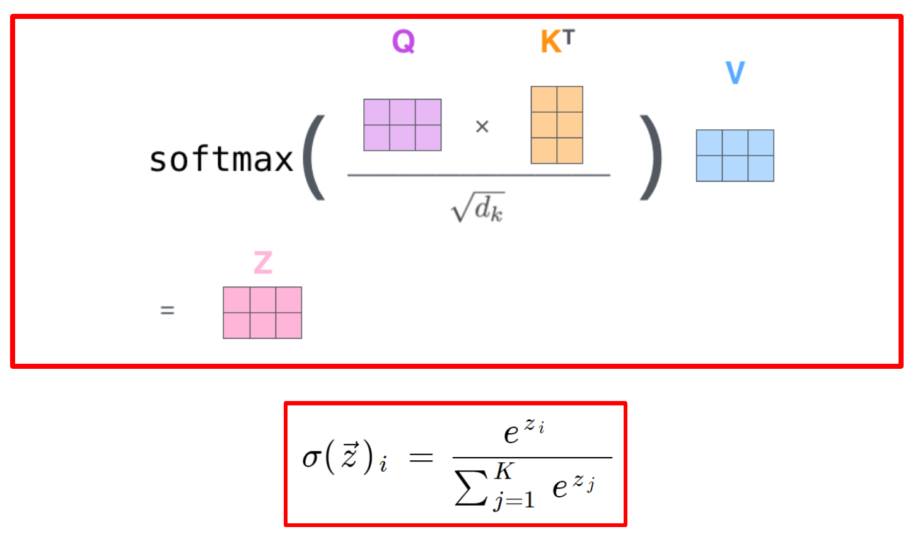
Practice练习
Q1. (Calculation) Let \(d_k=2\), \(Q=\begin{pmatrix}1&1\\1&-1\end{pmatrix}\), \(K=\begin{pmatrix}1&0\\0&1\end{pmatrix}\) and \(V=\begin{pmatrix}2&0\\0&4\end{pmatrix}\). Compute the scores, the attention weights and the outputs.Q1. （计算） 设 \(d_k=2\)、\(Q=\begin{pmatrix}1&1\\1&-1\end{pmatrix}\)、\(K=\begin{pmatrix}1&0\\0&1\end{pmatrix}\) 和 \(V=\begin{pmatrix}2&0\\0&4\end{pmatrix}\)。计算分数、注意力权重和输出。
Answer
\(QK^T=Q\), so \(S=Q/\sqrt2=\begin{pmatrix}0.707&0.707\\0.707&-0.707\end{pmatrix}\).\(QK^T=Q\)，因此 \(S=Q/\sqrt2=\begin{pmatrix}0.707&0.707\\0.707&-0.707\end{pmatrix}\)。
Row 1 has equal scores: \(a_1=(0.5,0.5)\). Row 2: the scores differ by \(1.414\), so \(a_2=\big(1/(1+e^{-1.414}),\ 1/(1+e^{1.414})\big)=(0.804,\ 0.196)\).第 1 行的得分相等：\(a_1=(0.5,0.5)\)。第 2 行：得分相差 \(1.414\)，因此 \(a_2=\big(1/(1+e^{-1.414}),\ 1/(1+e^{1.414})\big)=(0.804,\ 0.196)\)。
Outputs: \(z_1=0.5\,(2,0)+0.5\,(0,4)=(1,\ 2)\) and \(z_2=0.804\,(2,0)+0.196\,(0,4)=(1.609,\ 0.782)\).输出：\(z_1=0.5\,(2,0)+0.5\,(0,4)=(1,\ 2)\) 与 \(z_2=0.804\,(2,0)+0.196\,(0,4)=(1.609,\ 0.782)\)。
思路：先 \(QK^T\)，再除以 \(\sqrt{d_k}\)，逐行 softmax，最后乘 \(V\)。
Q2. (Calculation) Let \(d_k=64\). (a) What are the variance and the standard deviation of \(q\cdot k\) for independent components with mean 0 and variance 1? (b) Two keys have unscaled scores that differ by one standard deviation. Compute the two attention weights and the derivative \(a(1-a)\) of the larger weight, with and without the factor \(1/\sqrt{d_k}\).Q2. （计算） 设 \(d_k=64\)。(a) 对于均值为 0、方差为 1 的独立分量，\(q\cdot k\) 的方差和标准差各为多少？(b) 两个键的未缩放得分相差一个标准差。计算两个注意力权重，以及较大权重的导数 \(a(1-a)\)，分别在使用与不使用因子 \(1/\sqrt{d_k}\) 的情况下计算。
Answer
(a) \(\operatorname{Var}(q\cdot k)=d_k=64\), so the standard deviation is \(\sqrt{64}=8\).(a) \(\operatorname{Var}(q\cdot k)=d_k=64\)，因此标准差为 \(\sqrt{64}=8\)。
(b) Without scaling the gap is 8: the weights are \(\big(e^{8}/(1+e^{8}),\ 1/(1+e^{8})\big)=(0.99966,\ 0.00034)\) and \(a(1-a)=3.4\times10^{-4}\). With scaling the gap is \(8/8=1\): the weights are \((0.731,\ 0.269)\) and \(a(1-a)=0.197\).(b) 不缩放时，差距为 8：权重为 \(\big(e^{8}/(1+e^{8}),\ 1/(1+e^{8})\big)=(0.99966,\ 0.00034)\) 与 \(a(1-a)=3.4\times10^{-4}\)。缩放后，差距为 \(8/8=1\)：权重为 \((0.731,\ 0.269)\) 与 \(a(1-a)=0.197\)。
The unscaled softmax is saturated and its derivative is about \(0.197/(3.4\times10^{-4})\approx590\) times smaller, so gradient-based learning would hardly move the scores. Scaling keeps the softmax in its sensitive range.未缩放的 softmax 已经饱和，其导数约小 \(0.197/(3.4\times10^{-4})\approx590\) 倍，因此基于梯度的学习几乎无法推动得分变化。缩放使 softmax 保持在其敏感区间内。
Multi-head attention and the feed-forward network ★★★多头注意力与前馈网络 ★★★
Goal. Describe a full Transformer layer: several attention heads working side by side, followed by the feed-forward network. Give the shape of every matrix in it.目标。 描述一个完整的 Transformer 层：多个注意力头并排工作，之后接前馈网络。给出其中每个矩阵的形状。
Step 1: several heads第 1 步：多个头
One attention head can express only one kind of relation between positions. A layer therefore has \(h\) heads（注意力头）, for example \(h=8\). In words: layer output = (all head outputs side by side) × W^O.一个注意力头只能表达位置之间的一种关系。因此一层有 \(h\) 个注意力头，例如 \(h=8\)。用文字表述：层输出 =（所有头的输出并排放在一起）× W^O。
- Each head has its own \(W_i^Q,W_i^K,W_i^V\) and runs the attention of Section 8.1 on \(X\). Each head sees a smaller width \(d_k=d_{\text{model}}/h\), for example \(512/8=64\).每个头都有自己的 \(W_i^Q,W_i^K,W_i^V\)，并在 \(X\) 上运行第 8.1 节中的注意力计算。每个头看到的宽度 \(d_k=d_{\text{model}}/h\) 更小，例如 \(512/8=64\)。
- The \(h\) head outputs are placed side by side (concatenated), which gives \(h\cdot d_v=d_{\text{model}}\) columns again.\(h\) 个头的输出并排拼接在一起，列数再次为 \(h\cdot d_v=d_{\text{model}}\)。
- The matrix \(W^O\) mixes the heads and keeps the width \(d_{\text{model}}\).矩阵 \(W^O\) 混合各个头的信息，并保持宽度 \(d_{\text{model}}\) 不变。
- The heads are independent. An implementation therefore does one big projection GEMM, reshapes the result to \((h,n,d_k)\) (this only re-indexes the numbers) and runs the score and output products as batched GEMMs.各个头彼此独立。因此，实现时会先做一次大的投影 GEMM，把结果重新排成 \((h,n,d_k)\)（这只是重新编号，不改变数值），再把分数和输出的乘积作为批量矩阵乘法来运行。
Step 2: the feed-forward network第 2 步：前馈网络
After the attention, the feed-forward network（前馈网络, FFN）processes every token on its own, with the same weights for all tokens. Attention is the only step that mixes information between positions. In words: FFN output = second layer(ReLU(first layer(input))). The first layer widens each token from \(d\) to \(4d\) numbers, for example from 512 to 2048. The second layer narrows it back to \(d\).注意力之后，前馈网络（FFN）对每个 token 单独处理，所有 token 使用同样的权重。注意力是唯一让不同位置之间交换信息的一步。用文字表述：FFN 输出 = 第二层(ReLU(第一层(输入)))。第一层把每个 token 的向量从 \(d\) 个数加宽到 \(4d\) 个数，例如从 512 加宽到 2048。第二层再把它缩回到 \(d\)。
Step 3: the shapes第 3 步：形状
The shapes follow one rule: the inner sizes of every product agree. The card lists them for \(n\) tokens. The example below then checks them with small numbers.形状遵循同一条规则：每个乘积的内侧尺寸都要一致。汇总表列出了 \(n\) 个 token 时的各个形状。下面的小例子用小数字来检验这些形状。
Practice练习
Q1. (Shapes) A layer has \(n=1024\), \(d=768\) and \(h=12\). Give \(d_k\) and the shape of \(X\), \(W^Q\) (all heads), \(W_i^Q\), \(Q_i\), \(S_i\), \(Z_i\), the concatenation, \(W^O\) and the FFN hidden matrix. How many entries do the 12 matrices \(S_i\) have together?Q1. （形状） 一层具有 \(n=1024\)、\(d=768\) 与 \(h=12\)。给出 \(d_k\)，以及 \(X\)、\(W^Q\)（所有头）、\(W_i^Q\)、\(Q_i\)、\(S_i\)、\(Z_i\)、拼接结果、\(W^O\) 和 FFN 隐藏层矩阵的形状。这 12 个矩阵（\(S_i\)）合计有多少个元素？
Answer
\(d_k=d/h=768/12=64\). \(X\): \(1024\times768\). \(W^Q\): \(768\times768\); each \(W_i^Q\): \(768\times64\). \(Q_i\): \(1024\times64\). \(S_i\): \(1024\times1024\). \(Z_i\): \(1024\times64\). Concatenation: \(1024\times(12\cdot64)=1024\times768\). \(W^O\): \(768\times768\). FFN hidden matrix: \(1024\times3072\) (with \(W_1\): \(768\times3072\) and \(W_2\): \(3072\times768\)).\(d_k=d/h=768/12=64\)。\(X\)：\(1024\times768\)。\(W^Q\)：\(768\times768\)；每个 \(W_i^Q\)：\(768\times64\)。\(Q_i\)：\(1024\times64\)。\(S_i\)：\(1024\times1024\)。\(Z_i\)：\(1024\times64\)。拼接：\(1024\times(12\cdot64)=1024\times768\)。\(W^O\)：\(768\times768\)。FFN 隐藏层矩阵：\(1024\times3072\)（其中 \(W_1\)：\(768\times3072\)，\(W_2\)：\(3072\times768\)）。
All the \(S_i\): \(12\cdot1024^2=12{,}582{,}912\) entries.全部 \(S_i\)：\(12\cdot1024^2=12{,}582{,}912\) 个元素。
Q2. (True or false, justify) "Multi-head attention with \(h=8\) heads needs 8 times the FLOPs of single-head attention with the same \(d_{\text{model}}\)."Q2. （判断，并说明理由） “使用 \(h=8\) 个头的多头注意力，其 FLOPs 是相同 \(d_{\text{model}}\) 下单头注意力的 8 倍。”
Answer
False, provided \(d_k=d_{\text{model}}/h\). The projections of all heads together cost \(3\cdot2nd\cdot hd_k=6nd^2\), the same as three full-width projections. The score products cost \(h\cdot2n^2d_k=2n^2d\) and the output products \(h\cdot2n^2d_k=2n^2d\), again the same as with one head of width \(d\). Only the number of \(S\) entries is \(h\) times larger (\(hn^2\) instead of \(n^2\) for one head of width \(d_k\)).错误，前提是 \(d_k=d_{\text{model}}/h\)。所有头的投影合计开销为 \(3\cdot2nd\cdot hd_k=6nd^2\)，与三次全宽投影相同。得分乘积的开销为 \(h\cdot2n^2d_k=2n^2d\)，输出乘积为 \(h\cdot2n^2d_k=2n^2d\)，同样与一个宽度为 \(d\) 的单头相同。只有 \(S\) 的元素数量是原来的 \(h\) 倍（为 \(hn^2\)，而宽度为 \(d_k\) 的单头为 \(n^2\)）。
思路：每个头的维度是 \(d/h\)，头数乘以单头维度恰好是 \(d\)。
Cost of one layer: FLOPs, parameters and KV cache ★★★一层的代价：FLOPs、参数量与 KV 缓存 ★★★
Goal. Compute how many floating-point operations one Transformer layer needs, how many parameters it holds, and how much memory the stored keys and values take during text generation.目标。 计算一个 Transformer 层需要多少次浮点运算，包含多少参数，以及在文本生成过程中，存储的键和值占用多少内存。
Step 1: the FLOPs of one layer第 1 步：一层的 FLOPs
Section 8.2 showed that a product \((m\times k)(k\times p)\) takes \(2mkp\) FLOPs（浮点运算次数）. Almost every operation of a layer is such a product. The exceptions are the softmax, the ReLU, the residual additions and the normalization, which are small by comparison. Take \(n\) tokens, width \(d\), \(h\) heads with \(d_k=d/h\) and FFN hidden width \(4d\). The layer does eight products, and their sum has two parts:第 8.2 节说明，一次乘积 \((m\times k)(k\times p)\) 需要 \(2mkp\) 次 FLOPs。一层里几乎每个运算都是这样的乘积。例外是 softmax、ReLU、残差加法和归一化，它们相比之下很小。取 \(n\) 个 token，宽度为 \(d\)，\(h\) 个头（每个头的宽度为 \(d_k=d/h\)），FFN 隐藏层宽度为 \(4d\)。这一层共做八次乘积，它们的和分成两部分：
- The products with weight matrices cost \(24nd^2\) FLOPs, linear in \(n\).与权重矩阵相乘的那些乘积共需 \(24nd^2\) 次 FLOPs，与 \(n\) 呈线性关系。
- The products with the attention matrices cost \(4n^2d\) FLOPs, quadratic in \(n\).与注意力矩阵相乘的那些乘积共需 \(4n^2d\) 次 FLOPs，与 \(n\) 呈二次关系。
The number of heads does not appear in the result. In words: FLOPs of a layer = weight products + attention-matrix products.结果中不出现头的个数。用文字表述：一层的 FLOPs = 权重乘积 + 注意力矩阵乘积。
Step 2: the parameters of one layer第 2 步：一层的参数
The parameters are the entries of the weight matrices. The count does not depend on the number of tokens \(n\). In words: parameters = attention matrices + feed-forward matrices.参数就是权重矩阵中的各个元素。参数个数与 token 数 \(n\) 无关。用文字表述：参数 = 注意力矩阵 + 前馈矩阵。
Step 3: the KV cache第 3 步：KV 缓存
A decoder generates text one token at a time. For each new token it needs the keys and values of all tokens before it. Those never change, so the decoder stores them once. This store is the KV cache（KV 缓存）. A new token then needs only its own projections and one query over the cached keys. The price is memory. In words: cache size = 2 (keys and values) × layers × tokens × width × bytes per number. It grows linearly with \(n\) and with the number of sequences.解码器一次生成一个 token。对每个新 token，它需要前面所有 token 的键和值。这些值从不改变，所以解码器只存一次。这份存储就是 KV 缓存。之后，新 token 只需要计算自己的投影，再用它的查询与缓存中的所有键做一次计算。代价是内存。用文字表述：缓存大小 = 2（键和值）× 层数 × token 数 × 宽度 × 每个数的字节数。它随 \(n\) 线性增长，也随序列数线性增长。
Practice练习
Q1. (Calculation) A layer has \(n=1024\), \(d=768\) and \(h=12\). Compute the total FLOPs and the number of parameters (without biases). By what factor does the total grow if \(n\) doubles to 2048?Q1. （计算） 一层具有 \(n=1024\)、\(d=768\) 和 \(h=12\)。计算总 FLOPs 和参数量（不含偏置）。若 \(n\) 加倍至 2048，总量增长多少倍？
Answer
Total: \(24nd^2+4n^2d=1.450\times10^{10}+3.221\times10^{9}=1.772\times10^{10}\) FLOPs. Parameters: \(12d^2=12\cdot768^2=7{,}077{,}888\approx7.08\) million.总计：\(24nd^2+4n^2d=1.450\times10^{10}+3.221\times10^{9}=1.772\times10^{10}\) FLOPs。参数量：\(12d^2=12\cdot768^2=7{,}077{,}888\approx7.08\) 百万。
For \(n=2048\) the linear part doubles to \(2.899\times10^{10}\) and the quadratic part quadruples to \(1.288\times10^{10}\). The total becomes \(4.188\times10^{10}\) FLOPs, a factor of \(4.188/1.772=2.36\).对于 \(n=2048\)，线性部分增至 \(2.899\times10^{10}\)，二次部分增至 \(1.288\times10^{10}\)。总量变为 \(4.188\times10^{10}\) FLOPs，增长 \(4.188/1.772=2.36\) 倍。
Interpretation: doubling \(n\) costs between \(2\times\) and \(4\times\); the more the quadratic part matters, the closer to \(4\times\).解读：将 \(n\) 翻倍，开销介于 \(2\times\) 与 \(4\times\) 之间；二次部分越重要，开销就越接近 \(4\times\)。
思路：线性部分翻倍，平方部分变 4 倍，再相加。
Q2. (Calculation) A decoder has \(L=32\) layers and \(d=4096\) and stores its KV cache in 16-bit format. (a) How large is the cache per token and for a sequence of 4096 tokens? (b) How large is it for 16 such sequences, compared with the weights of a 7B-parameter model in 16-bit format?Q2. （计算） 某解码器具有 \(L=32\) 层和 \(d=4096\)，并以 16 位格式存储 KV 缓存。(a) 每个词元的缓存大小是多少？长度为 4096 个词元的序列呢？(b) 16 条这样的序列，其缓存多大？与 16 位格式的 7B 参数模型权重相比如何？
Answer
(a) \(M_{KV}=2\cdot L\cdot n\cdot d\cdot b\). Per token: \(2\cdot32\cdot4096\cdot2=524{,}288\) B \(=512\) KiB. For \(n=4096\): \(524{,}288\cdot4096=2{,}147{,}483{,}648\) B \(=2\) GiB.(a) \(M_{KV}=2\cdot L\cdot n\cdot d\cdot b\)。每个 token：\(2\cdot32\cdot4096\cdot2=524{,}288\) B \(=512\) KiB。对于 \(n=4096\)：\(524{,}288\cdot4096=2{,}147{,}483{,}648\) B \(=2\) GiB。
(b) \(16\cdot2\) GiB \(=32\) GiB. The weights need \(2\cdot7\times10^{9}\) B \(=14\) GB \(=13.0\) GiB. The cache is about \(2.5\) times larger than the weights.(b) \(16\cdot2\) GiB \(=32\) GiB。权重需要 \(2\cdot7\times10^{9}\) B \(=14\) GB \(=13.0\) GiB。缓存约为权重的 \(2.5\) 倍。
Interpretation: for long contexts and large batches the KV cache, not the weights, limits how many requests fit in memory.解读：对于长上下文和大批量，决定能有多少请求同时放入内存的是 KV 缓存，而非权重。
Terms to recognise ★需要认识的术语 ★
| Term术语 | What to know要知道什么 |
|---|---|
| Token词元 | The unit the model works on (a word or word piece); the sequence length \(n\) counts tokens.模型处理的单位（一个词或子词）；序列长度 \(n\) 按词元计数。 |
| Embedding嵌入 | Learned vector \(x_i\in\mathbb R^{d_{\text{model}}}\) per token; the rows of \(X\).每个词元一个可学习向量 \(x_i\in\mathbb R^{d_{\text{model}}}\)；\(X\) 的各行。 |
| Positional encoding位置编码 | Added to the embeddings, because attention alone ignores token order (permuting rows of \(X\) permutes the output).加到嵌入上，因为仅靠注意力会忽略词元顺序（置换 \(X\) 的行会置换输出）。 |
| Encoder and decoder layer编码器与解码器层 | Encoder: self-attention + FFN. Decoder: self-attention, encoder–decoder attention (\(q\) from decoder, \(k,v\) from encoder) + FFN.编码器：自注意力 + FFN。解码器：自注意力、编码器–解码器注意力（\(q\) 来自解码器，\(k,v\) 来自编码器）+ FFN。 |
| Self-attention vs recurrence自注意力与循环结构对比 | Attention: \(O(n^2d)\) operations, \(O(1)\) sequential steps, path length 1. RNN: \(O(nd^2)\), \(O(n)\) steps, path \(O(n)\).注意力：运算量 \(O(n^2d)\)，串行步数 \(O(1)\)，路径长度为 1。RNN：运算量 \(O(nd^2)\)，\(O(n)\) 步，路径长度为 \(O(n)\)。 |
| Context length上下文长度 | Maximum \(n\); limited by the \(n^2\) attention matrices and the KV cache.最大 \(n\)；受 \(n^2\) 注意力矩阵和 KV 缓存限制。 |
| GPT-3 | 175B parameters, \(L=96\), \(d=12288\); \(12d^2L=1.74\times10^{11}\) is close; the rest is mostly the embedding table.175B 参数，\(L=96\)，\(d=12288\)；\(12d^2L=1.74\times10^{11}\) 与之接近，其余主要是嵌入表。 |
| MMLU | Multiple-choice benchmark of knowledge, reasoning and multi-task accuracy; random guessing gives 25%.考察知识、推理和多任务准确率的选择题基准；随机猜测得 25%。 |
| Training-compute rule训练计算量规则 | \(C\approx6N_{\text{par}}D\) FLOPs: 2 forward + 4 backward per parameter and token.\(C\approx6N_{\text{par}}D\) FLOPs：每个参数、每个词元前向 2、反向 4。 |
Exam-style questions考试题型练习
Q1. (Calculation and explanation) A decoder layer has \(d=4096\), \(h=32\) and FFN hidden width \(4d\), and processes \(n=2048\) tokens. (a) Give \(d_k\) and the shapes of \(W^Q\), \(Q_i\), \(S_i\), the concatenation and \(W_1\). (b) Compute the FLOPs of the layer and the share spent in \(QK^T\) and \(AV\). (c) Compute the number of parameters of the layer (without biases), and of a model with 32 such layers plus two embedding tables of \(32{,}000\times4096\) entries each. (d) By what factor do the FLOPs grow when \(n\) doubles to 4096, and why is it less than 4?Q1. （计算与解释） 一个解码器层具有 \(d=4096\)、\(h=32\)，FFN 隐藏层宽度为 \(4d\)，并处理 \(n=2048\) 个 token。(a) 给出 \(d_k\)，以及 \(W^Q\)、\(Q_i\)、\(S_i\)、拼接结果和 \(W_1\) 的形状。(b) 计算该层的 FLOPs，以及 \(QK^T\) 与 \(AV\) 所占的比例。(c) 计算该层的参数数量（不计偏置），以及由 32 个这样的层加上两个各含 \(32{,}000\times4096\) 个元素的嵌入表所构成的模型的参数数量。(d) 当 \(n\) 翻倍至 4096 时，FLOPs 增长多少倍？为什么它小于 4？
Answer
(a) \(d_k=d/h=4096/32=128\). \(W^Q\) (all heads) is \(4096\times4096\), with \(4096\times128\) per head. \(Q_i\) is \(2048\times128\). Each \(S_i\) is \(2048\times2048\) (32 of them, \(1.34\times10^{8}\) entries). The concatenation is \(2048\times4096\). \(W_1\) is \(4096\times16384\).(a) \(d_k=d/h=4096/32=128\)。\(W^Q\)（所有头）为 \(4096\times4096\)，每个头为 \(4096\times128\)。\(Q_i\) 为 \(2048\times128\)。每个 \(S_i\) 为 \(2048\times2048\)（共 32 个，合计 \(1.34\times10^{8}\) 个元素）。拼接结果为 \(2048\times4096\)。\(W_1\) 为 \(4096\times16384\)。
(b) \(24nd^2=24\cdot2048\cdot4096^2=8.246\times10^{11}\) and \(4n^2d=4\cdot2048^2\cdot4096=6.872\times10^{10}\), so the total is \(8.934\times10^{11}\) FLOPs, about 0.89 TFLOP. \(QK^T\) and \(AV\) together take \(6.872\times10^{10}/8.934\times10^{11}=7.7\%\), which equals \(n/(6d+n)\).(b) \(24nd^2=24\cdot2048\cdot4096^2=8.246\times10^{11}\) 与 \(4n^2d=4\cdot2048^2\cdot4096=6.872\times10^{10}\)，因此总计为 \(8.934\times10^{11}\) FLOPs，约 0.89 TFLOP。\(QK^T\) 与 \(AV\) 合计占 \(6.872\times10^{10}/8.934\times10^{11}=7.7\%\)，即 \(n/(6d+n)\)。
(c) \(12d^2=12\cdot4096^2=201{,}326{,}592\approx2.01\times10^{8}\) parameters per layer (the \(9d\) biases are negligible). Thirty-two layers hold \(6.44\times10^{9}\); the two embedding tables add \(2\cdot32{,}000\cdot4096=2.62\times10^{8}\), so the model has about \(6.70\times10^{9}\) parameters, the "7B" class.(c) 每层 \(12d^2=12\cdot4096^2=201{,}326{,}592\approx2.01\times10^{8}\) 个参数（\(9d\) 偏置可忽略不计）。32 层共 \(6.44\times10^{9}\) 个参数；两个嵌入表另外增加 \(2\cdot32{,}000\cdot4096=2.62\times10^{8}\) 个，因此模型约有 \(6.70\times10^{9}\) 个参数，属于“7B”一类。
(d) For \(n=4096\) the linear part doubles to \(1.649\times10^{12}\) and the quadratic part quadruples to \(2.749\times10^{11}\). The total is \(1.924\times10^{12}\) FLOPs, a factor of \(2.15\). It is far below 4 because 92% of the work is in the weight products, which are linear in \(n\); the quadratic part rises from 7.7% to 14.3% of the total.(d) 对于 \(n=4096\)，线性部分翻倍至 \(1.649\times10^{12}\)，二次部分增至四倍，为 \(2.749\times10^{11}\)。总计为 \(1.924\times10^{12}\) FLOPs，增长为原来的 \(2.15\) 倍。它远小于 4，是因为 92% 的运算量在权重乘积中，而权重乘积关于 \(n\) 是线性的；二次部分在总量中的占比由 7.7% 升至 14.3%。
思路：先算线性部分 \(24nd^2\) 和平方部分 \(4n^2d\)，\(n\) 翻倍时前者 ×2、后者 ×4。
Q2. (Calculation) Two tokens, \(d_k=2\), \(Q=\begin{pmatrix}1&0\\0&3\end{pmatrix}\), \(K=\begin{pmatrix}1&0\\0&1\end{pmatrix}\), \(V=\begin{pmatrix}1&2\\3&4\end{pmatrix}\). (a) Compute \(S\), \(A\) and \(Z=AV\). (b) Why is \(S\) divided by \(\sqrt{d_k}\)?Q2. （计算）两个词元，\(d_k=2\)、\(Q=\begin{pmatrix}1&0\\0&3\end{pmatrix}\)、\(K=\begin{pmatrix}1&0\\0&1\end{pmatrix}\)、\(V=\begin{pmatrix}1&2\\3&4\end{pmatrix}\)。(a) 计算 \(S\)、\(A\) 和 \(Z=AV\)。(b) 为什么 \(S\) 要除以 \(\sqrt{d_k}\)？
Answer
(a) \(QK^T=Q\), so \(S=Q/\sqrt2=\begin{pmatrix}0.707&0\\0&2.121\end{pmatrix}\). Row 1: \(e^{0.707}=2.028\) and \(e^{0}=1\), so \(a_1=(2.028,\,1)/3.028=(0.670,\,0.330)\). Row 2: \(e^{0}=1\) and \(e^{2.121}=8.342\), so \(a_2=(1,\,8.342)/9.342=(0.107,\,0.893)\). Then \(z_1=0.670\,(1,2)+0.330\,(3,4)=(1.660,\ 2.660)\) and \(z_2=0.107\,(1,2)+0.893\,(3,4)=(2.786,\ 3.786)\).(a) \(QK^T=Q\)，因此 \(S=Q/\sqrt2=\begin{pmatrix}0.707&0\\0&2.121\end{pmatrix}\)。第 1 行：\(e^{0.707}=2.028\) 与 \(e^{0}=1\)，因此 \(a_1=(2.028,\,1)/3.028=(0.670,\,0.330)\)。第 2 行：\(e^{0}=1\) 与 \(e^{2.121}=8.342\)，因此 \(a_2=(1,\,8.342)/9.342=(0.107,\,0.893)\)。然后是 \(z_1=0.670\,(1,2)+0.330\,(3,4)=(1.660,\ 2.660)\) 与 \(z_2=0.107\,(1,2)+0.893\,(3,4)=(2.786,\ 3.786)\)。
(b) For \(d_k=2\) the factor matters little. In general \(q\cdot k\) has variance \(d_k\) for unit-variance components, so without the division the scores would grow with \(\sqrt{d_k}\), the softmax would saturate and its gradient would vanish; the division restores unit variance.(b) 对于 \(d_k=2\)，该因子影响不大。一般而言，当各分量方差为 1 时，\(q\cdot k\) 的方差为 \(d_k\)，因此若不做除法，分数会随 \(\sqrt{d_k}\) 增大，softmax 会饱和、梯度消失；除以该因子可恢复单位方差。
思路：逐行 softmax，再乘 \(V\)。
Q3. (Inference budget) A decoder has \(7\times10^{9}\) parameters, \(L=32\) layers and \(d=4096\); weights and KV cache are stored in 16-bit format. (a) How much memory do the weights need? (b) How large is the KV cache per token and per sequence of 4096 tokens? (c) After loading the weights, 48 GiB are free for the cache: how many sequences of 4096 tokens fit, and how many if the cache is stored in 8-bit format? (d) Why does a KV cache save computation?Q3. （推理预算）某解码器有 \(7\times10^{9}\) 个参数、\(L=32\) 层与 \(d=4096\)；权重与 KV 缓存均以 16 位格式存储。(a) 权重需要多少内存？(b) 每个词元以及每条 4096 词元序列的 KV 缓存多大？(c) 加载权重后，有 48 GiB 可用于缓存：能容纳多少条 4096 词元的序列？若缓存以 8 位格式存储，又能容纳多少条？(d) KV 缓存为什么能节省计算？
Answer
(a) \(2\cdot7\times10^{9}=14\) GB (\(13.0\) GiB).(a) \(2\cdot7\times10^{9}=14\) GB（\(13.0\) GiB）。
(b) \(2\cdot L\cdot d\cdot b=2\cdot32\cdot4096\cdot2=524{,}288\) B \(=512\) KiB per token, and \(524{,}288\cdot4096=2^{31}\) B \(=2\) GiB per sequence.(b) 每个 token 为 \(2\cdot L\cdot d\cdot b=2\cdot32\cdot4096\cdot2=524{,}288\) B \(=512\) KiB，每个序列为 \(524{,}288\cdot4096=2^{31}\) B \(=2\) GiB。
(c) \(48/2=24\) sequences. With an 8-bit cache each sequence needs 1 GiB, so \(48\) sequences fit.(c) \(48/2=24\) 个序列。若缓存为 8 位，每个序列需要 1 GiB，因此可容纳 \(48\) 个序列。
(d) The keys and values of earlier tokens never change. Without the cache every new token would recompute the \(K\) and \(V\) projections of all \(n\) earlier tokens (\(O(nd^2)\) per layer); with the cache it computes only its own projections (\(O(d^2)\)) and attends over the stored keys and values (\(O(nd)\)). The price is the memory of (b).(d) 之前词元的键和值不会改变。若没有缓存，每个新词元都要重新计算之前 \(n\) 个词元的 \(K\) 和 \(V\) 投影（每层 \(O(nd^2)\)）；有了缓存，它只需计算自己的投影（\(O(d^2)\)），并对保存的键和值做注意力（\(O(nd)\)）。代价是 (b) 中的内存。
思路：KV 缓存 \(=2\times L\times n\times d\times\) 字节数。
Chapter 9OpenMP: Parallel Regions, Scope and ReductionOpenMP：并行区、变量作用域与归约
The parallel directive ★★★parallel 指令 ★★★
Goal. Read a small OpenMP program and say which thread does what, how many lines it prints, and in which order they may appear. Know what the compiler needs to build it.目标。 读懂一个小型 OpenMP 程序，说出每个线程做什么、打印多少行，以及这些行可能以什么顺序出现。知道编译器需要什么才能把它编译出来。
A thread（线程）is one stream of instructions inside a program. Threads of one program share its memory (Section 4.5). OpenMP lets one thread start several others with a single line of code.线程是程序内部的一条指令流。同一个程序的各线程共享它的内存（见第 4.5 节）。OpenMP 让一个线程只用一行代码就能启动其他几个线程。
Step 1: what the directive does第 1 步：指令做什么
In words: one thread becomes a team of threads, all run the same block, then they meet and one carries on. In detail:用文字表述：一个线程变成一个线程组，所有线程执行同样的代码块，然后会合，只剩一个线程继续往下执行。具体如下：
- Before the pragma only one thread exists. It is the master thread（主线程, rank 0）. It runs the serial code.在编译指示之前，只有一个线程存在。它是主线程（编号 0），负责执行串行代码。
- At
#pragma omp parallelthe master forks a team（线程组）of threads. The master is part of the team.在#pragma omp parallel处，主线程分叉出一个线程组。主线程本身也属于这个线程组。 - Every thread of the team executes the following structured block: the one statement, or the
{ }block, after the pragma.线程组中的每个线程都执行下面的结构化代码块：即编译指示之后的那一条语句，或者{ }代码块。 - At the end of the block there is an implicit barrier（隐含栅障）. Each thread waits there until the whole team has finished.代码块结束处有一个隐含栅障。每个线程都在那里等待，直到整个线程组都执行完。
- Then the extra threads end and only the master continues (fork–join model).然后多出来的线程结束，只有主线程继续执行（分叉–汇合模型）。
The threads run the same code. They are told apart by their rank, a number from 0 to \(t-1\) for a team of \(t\) threads.线程执行的是同样的代码。它们靠编号来区分：在一个由 \(t\) 个线程组成的线程组中，编号从 0 到 \(t-1\)。
num_threads(n)is a clause（子句）that only requestsnthreads; the standard does not guarantee them.num_threads(n)是一个子句，它只是请求n个线程；标准并不保证一定能得到这些线程。omp_get_thread_num()returns the rank of the calling thread.omp_get_thread_num()返回调用它的线程的编号。omp_get_num_threads()returns the actual team size. Outside a parallel block it returns 1, because only the master exists.omp_get_num_threads()返回实际的线程组大小。在并行代码块之外，它返回 1，因为只有主线程存在。- Compile with
gcc -fopenmp. Without the flag the pragma is ignored, but calls ofomp_functions fail to link.用gcc -fopenmp编译。不加这个选项时，编译指示会被忽略，但对omp_系列函数的调用会链接失败。
Step 2: tracing the hello program第 2 步：跟踪 hello 程序
#include <omp.h>
void Hello(void); /* thread function */
int main(int argc, char* argv[]) {
int thread_count = strtol(argv[1], NULL, 10); /* requested number of threads */
# pragma omp parallel num_threads(thread_count)
Hello(); /* every thread calls Hello */
return 0;
}
void Hello(void) {
int my_rank = omp_get_thread_num(); /* get thread ID */
int thread_count = omp_get_num_threads(); /* actual team size */
printf("Hello from thread %d of %d\n", my_rank, thread_count);
}

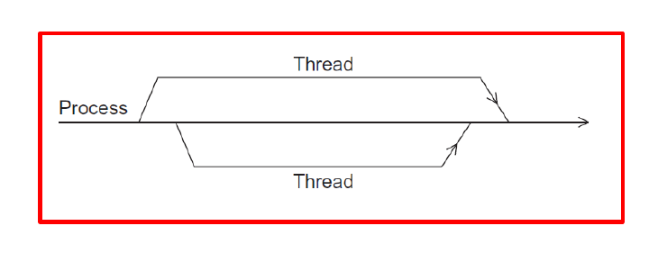
Practice练习
Q1. (Code reading) ./omp_hello 4 runs on a system that grants all 4 threads. (a) How many different outputs are possible? (b) Can the line Hello from thread 2 of 4 appear twice? (c) Suppose the run-time system starts only 3 threads. What does the program print, and why does Hello call omp_get_num_threads() instead of using the number from the command line?Q1. （读代码） ./omp_hello 4 在一个能分配全部 4 个线程的系统上运行。(a) 可能有多少种不同的输出？(b) Hello from thread 2 of 4 这一行能否出现两次？(c) 假设运行时只启动了 3 个线程，程序输出什么？为什么 Hello 要调用 omp_get_num_threads()，而不直接使用命令行中的数字？
Answer
(a) Each of the 4 ranks prints exactly one line, so the outputs are the orderings of the ranks: \(4!=24\).（a）4 个线程编号各输出恰好一行，因此输出就是线程编号的各种排列：\(4!=24\)。
(b) No. Each rank executes Hello exactly once.（b）不能。每个线程编号都恰好执行一次 Hello。
(c) Three lines Hello from thread k of 3 with \(k=0,1,2\), in some order. omp_get_num_threads() returns the real team size, while the number on the command line is only a request; the standard does not guarantee that thread_count threads are started.（c）输出三行 Hello from thread k of 3（各行带有 \(k=0,1,2\)），顺序不定。omp_get_num_threads() 返回实际的线程组大小，而命令行上的数字只是一个请求；标准并不保证能启动 thread_count 个线程。
Q2. (True or false, justify) "A compiler that does not know OpenMP rejects omp_hello.c because of the unknown #pragma omp."Q2. （判断，并说明理由） “不认识 OpenMP 的编译器会因为无法识别的 #pragma omp 而拒绝 omp_hello.c。”
Answer
False for the pragma itself. Compilers that do not support a pragma ignore it: gcc without -fopenmp only warns when -Wall is on (ignoring '#pragma omp parallel') and treats the block as ordinary serial code.对于编译指示本身，这一说法不成立：不支持某一编译指示的编译器会忽略它。在不使用 -fopenmp 的情况下，gcc 只有在开启 -Wall（即 ignoring '#pragma omp parallel'）时才会发出警告，并把该代码块当作普通的串行代码。
But omp_hello.c also calls omp_get_thread_num(). Without -fopenmp the OpenMP run-time library is not linked, so the link step fails with undefined reference to 'omp_get_thread_num'.但 omp_hello.c 同时还调用了 omp_get_thread_num()。若不使用 -fopenmp，OpenMP 运行时库就不会被链接，于是链接步骤以 undefined reference to 'omp_get_thread_num' 失败。
易错：pragma 会被忽略，但 omp_ 开头的函数需要运行时库，仍然要加 -fopenmp。
Shared and private variables, critical sections ★★★共享与私有变量、临界区 ★★★
Goal. Decide for each variable of a parallel block whether all threads see one copy or each thread has its own. Explain why a shared update can lose a result, and fix it with critical.目标。 对并行代码块中的每个变量，判断所有线程看到的是同一个副本，还是每个线程各有一个。解释为什么对共享变量的更新会丢失结果，并用 critical 修正它。
Step 1: shared and private第 1 步：共享与私有
The scope（作用域）of a variable is the set of threads that can access it in a parallel block. Shared scope: all threads of the team use one variable. Private scope: each thread has its own copy. The rule depends only on where the variable is declared.变量的作用域指的是：并行代码块中，哪些线程能够访问它。共享作用域：线程组中的所有线程使用同一个变量。私有作用域：每个线程各有一个副本。判断依据只是变量在哪里声明。
| Where the variable lives变量所在位置 | Scope作用域 |
|---|---|
declared before the parallel block (in main)在并行块之前声明（在 main 中） |
shared共享 |
declared inside the block { ... }在代码块内声明（{ ... }） |
private私有 |
| locals and parameters of a function called from the block代码块所调用函数的局部变量和参数 | private (on the stack of the calling thread)私有（位于调用线程的栈上） |
In the trapezoid program of Section 9.4, global_result, a, b and n are declared in main before the block, so they are shared. my_result is declared inside the block, so every thread has its own.在第 9.4 节的梯形积分程序中，global_result、a、b 和 n 都是在 main 中、代码块之前声明的，所以它们是共享的。my_result 是在代码块内部声明的，所以每个线程都有自己的一份。
Step 2: what a private variable holds第 2 步：私有变量里存的是什么
A private variable has no useful value at the two borders of the block.私有变量在代码块的两个边界处都没有有用的值。
- A variable declared inside the block does not exist before the block. A thread creates it when it enters the block, and it has no value until the thread assigns one.在代码块内部声明的变量，在代码块之前并不存在。线程进入代码块时才创建它，在线程给它赋值之前，它没有任何值。
- A copy named in
private(x)is not initialised. Its value is not the valuexhad before the block.private(x)中列出的副本不会被初始化。它的值不是x在代码块之前所具有的值。 - A private copy is not copied back. After the block the original
xis unspecified.firstprivateinitialises the copy;lastprivatecopies the last iteration back.私有副本不会被复制回去。代码块结束后，原来的x的值是不确定的。firstprivate用来初始化副本；lastprivate则把最后一次迭代的值复制回去。
A thread must therefore hand its private result over before it leaves the block.因此，线程在离开代码块之前，必须把自己的私有结果交出去。
Step 3: the race condition and critical第 3 步：竞争条件与 critical
Reading a shared variable is safe. A shared variable that several threads write is a race condition（竞争条件）. The statement global_result += my_result is three machine steps (load, add, store), and two threads can interleave them. Section 4.1 shows the same problem with Pthreads.只读取共享变量是安全的。若多个线程都写同一个共享变量，就构成竞争条件。语句 global_result += my_result 由三步机器操作组成（加载、相加、存储），两个线程可能交错执行这三步。第 4.1 节用 Pthreads 展示了同样的问题。
The cure is mutual exclusion（互斥）: only one thread at a time executes the protected statement. The directive # pragma omp critical provides it for the following block.解决办法是互斥：同一时刻只允许一个线程执行受保护的语句。指令 # pragma omp critical 为紧随其后的代码块提供这种互斥。
global_result = 0.0;
# pragma omp parallel num_threads(thread_count)
{
double my_result = 0.0; /* declared inside the block: private */
my_result += Local_trap(a, b, n); /* the call runs in parallel in all threads */
# pragma omp critical
global_result += my_result; /* only the update is serialized */
}
Practice练习
Q1. (Predict the output) What does this program print, and which lines are guaranteed? What changes if private(x) is replaced by firstprivate(x)?Q1. （预测输出） 该程序输出什么？哪些行是有保证的？若将 private(x) 替换为 firstprivate(x)，结果有什么变化？
int x = 5;
# pragma omp parallel num_threads(2) private(x)
{
int my_rank = omp_get_thread_num();
printf("Thread %d > before initialization, x = %d\n", my_rank, x);
x = 2*my_rank + 2;
printf("Thread %d > after initialization, x = %d\n", my_rank, x);
}
printf("After parallel block, x = %d\n", x);
Answer
Guaranteed: the "after initialization" lines. Thread 0 prints 2 and thread 1 prints 4, because each thread assigns its own private copy.有保证的是“初始化之后”的各行。线程 0 输出 2，线程 1 输出 4，因为每个线程都给自己的私有副本赋了值。
Not guaranteed: the "before initialization" lines. The private copy is uninitialized, so it holds an unspecified value, not 5. A gcc run printed arbitrary numbers at -O0 and 0 at -O2, and -Wall warns that x is used uninitialized.没有保证的是“初始化之前”的各行。私有副本未初始化，因此它持有的是未指定的值，而不是 5。一次 gcc 运行在 -O0 处输出了任意数字，在 -O2 处输出了 0，而 -Wall 警告 x 在使用时未初始化。
The last line: the standard does not define the value after the block. The gcc run printed 5 (the value before the block), but a program must not rely on it. The order of the lines of different threads is also undefined.最后一行：标准并未定义代码块结束之后的值。gcc 的那次运行输出了 5（即代码块之前的值），但程序不得依赖这一点。不同线程输出行的顺序同样没有定义。
With firstprivate(x) both "before" lines print 5, because each copy is initialized from the original. The final line still shows 5 in practice: private copies are not copied back (only lastprivate does that).使用 firstprivate(x) 时，两条“初始化之前”的行都输出 5，因为每个副本都是用原始值初始化的。实际上最后一行仍然显示 5：私有副本不会被复制回去（只有 lastprivate 才会这样做）。
Q2. (True or false, justify) (a) "A variable that is only read inside the parallel block should be declared private to avoid a race." (b) "After the block, the original variable holds the value of the last thread's private copy."Q2. （判断，并说明理由） (a) “只在并行块内被读取的变量，应声明为 private 以避免竞争。” (b) “块结束后，原变量保存的是最后一个线程私有副本的值。”
Answer
(a) False. A race needs at least one write; concurrent reads of a shared variable are safe. Declaring the variable private would also hand each thread an uninitialized copy instead of the value from before the block (unless firstprivate is used).（a）错误。竞争至少需要一次写操作；对共享变量的并发读取是安全的。把该变量声明为私有，还会给每个线程一个未初始化的副本，而不是代码块之前的值（除非使用 firstprivate）。
(b) False. A private copy is discarded at the end of the block, and the standard leaves the value of the original unspecified. Only lastprivate (for loops and sections) copies a value back.（b）错误。私有副本在代码块结束时被丢弃，而标准未指定原始变量的值。只有 lastprivate（用于循环和 section）会把值复制回来。
The reduction clause ★★★reduction 子句 ★★★
Goal. Replace the private variable plus critical section by one clause. Compute the result of a reduction from the partial results of the threads and the original value.目标。 用一个子句代替私有变量加临界区的写法。根据各线程的部分结果和原始值，计算归约的结果。
Step 1: what the clause does第 1 步：子句做什么
A reduction（归约）repeatedly applies one operator to a sequence of operands to get a single result. Summing the partial integrals of all threads is a reduction with +.归约是对一串操作数反复应用同一个运算符，得到一个结果。把所有线程的部分积分相加，就是一个使用 + 的归约。
The clause reduction(<operator>: <variable list>) on a parallel directive replaces the private variable plus the critical section. It works in three steps:在 parallel 指令上加上子句 reduction(<operator>: <variable list>)，就可以代替私有变量加临界区的写法。它分三步进行：
- Each thread gets a private copy of the variable, set to the identity of the operator.每个线程都得到该变量的一个私有副本，副本的值设为这个运算符的单位元。
- Each thread updates its own copy without any synchronization.每个线程更新自己的副本，不需要任何同步。
- At the end of the block the copies are combined with the original value.代码块结束时，各个副本与原始值合并。
In words: final value = original value ⊕ copy of thread 0 ⊕ copy of thread 1 ⊕ … ⊕ copy of the last thread, where ⊕ stands for the operator.用文字表述：最终值 = 原始值 ⊕ 线程 0 的副本 ⊕ 线程 1 的副本 ⊕ … ⊕ 最后一个线程的副本，其中 ⊕ 代表该运算符。
Here is the trapezoid sum from Section 9.2 written with the clause.下面是第 9.2 节的梯形求和，这里改用子句来写。
global_result = 0.0;
# pragma omp parallel num_threads(thread_count) \
reduction(+: global_result)
global_result += Local_trap(a, b, n);
Step 2: the identity of each operator第 2 步：每个运算符的单位元
The table lists, for every operator, the value at which each private copy starts and how the copies are combined.下表列出了每个运算符的私有副本从哪个值开始，以及各副本如何合并。
| Operator运算符 | Initial value of each private copy每个私有副本的初始值 | Copies are combined with副本的合并运算 |
|---|---|---|
+ |
0 | + |
- |
0 | + (each copy holds a negated partial sum)+（每个副本保存的是取负的部分和） |
* |
1 | * |
& |
all bits 1 (~0)全部二进制位为 1（~0） |
& |
| |
0 | | |
^ |
0 | ^ |
&& |
1 (true)1（真） | && |
|| |
0 (false)0（假） | || |
Practice练习
Q1. (Code writing) Rewrite this block with the reduction clause. Which lines disappear, and which line must stay?Q1. （编写代码） 用归约子句改写这一代码块。哪些行会消失？哪一行必须保留？
global_result = 0.0;
# pragma omp parallel num_threads(thread_count)
{
double my_result = 0.0;
my_result += Local_trap(a, b, n);
# pragma omp critical
global_result += my_result;
}
Answer
global_result = 0.0;
# pragma omp parallel num_threads(thread_count) \
reduction(+: global_result)
global_result += Local_trap(a, b, n);
The private variable my_result, its initialization and the critical section disappear: OpenMP creates a private copy of global_result per thread (initialized to 0, the identity of +) and adds the copies to the original at the end of the block. The line global_result = 0.0; must stay, because the original value takes part in the final sum.私有变量 my_result、它的初始化以及临界区都会消失：OpenMP 会为每个线程创建 global_result 的一份私有副本（初始化为 0，即 + 的单位元），并在代码块结束时把这些副本加到原始变量上。global_result = 0.0; 这一行必须保留，因为原始值也要参与最终的求和。
Q2. (Calculation) Four threads execute the statement once each on a reduction variable with the given original value. Give the final value. (a) reduction(+: s), s = 2.0, thread \(i\) executes s += 10*i;. (b) reduction(-: d), d = 20, each thread executes d -= 3;. (c) reduction(*: p), p = 2, thread \(i\) executes p *= (i+1);.Q2. （计算） 四个线程各执行一次语句，作用于给定原始值的归约变量。求最终值。(a) reduction(+: s)，s = 2.0，线程 \(i\) 执行 s += 10*i;。(b) reduction(-: d)，d = 20，每个线程执行 d -= 3;。(c) reduction(*: p)，p = 2，线程 \(i\) 执行 p *= (i+1);。
Answer
(a) The copies start at 0 and end at \(0,10,20,30\). Combined with the original: \(2+0+10+20+30=62\).（a）副本从 0 开始，结束时为 \(0,10,20,30\)。与原始值合并：\(2+0+10+20+30=62\)。
(b) The copies start at 0 and each ends at \(-3\). The copies are added to the original: \(20+4\cdot(-3)=8\). (Subtracting the copies would give \(20+12=32\), which is wrong; the combination operator for - is +.)（b）副本从 0 开始，每个副本最终为 \(-3\)。把副本加到原始值上：\(20+4\cdot(-3)=8\)。（若减去这些副本，结果将是 \(20+12=32\)，这是错误的；- 的合并运算符是 +。）
(c) The copies start at 1 and end at \(1,2,3,4\). Combined with the original: \(2\cdot1\cdot2\cdot3\cdot4=48\).（c）副本从 1 开始，结束时为 \(1,2,3,4\)。与原始值合并：\(2\cdot1\cdot2\cdot3\cdot4=48\)。
思路：先写每个线程副本的结果，再用"合并运算符"和原值合并。
Q3. (True or false, justify) (a) "With a reduction clause no thread ever waits for another thread." (b) "If global_result is not initialized before the block, the result is still correct, because every private copy starts at 0."Q3. （判断，并说明理由） （a）“使用归约子句时，任何线程都不会等待其他线程。”（b）“若 global_result 在代码块之前未初始化，结果仍然正确，因为每个私有副本都从 0 开始。”
Answer
(a) False. The updates of the private copies need no synchronization, but the combination at the end of the block is synchronized by the run-time system, and the end of the parallel block has an implicit barrier, where threads wait for the slowest one.（a）错误。私有副本的更新不需要同步，但代码块末尾的合并由运行时系统同步完成，并且并行块的结尾处有一个隐含栅障，线程会在那里等待最慢的线程。
(b) False. The original value takes part in the combination (Result of a reduction: \(x_{\text{final}}=x_{\text{orig}}\oplus\cdots\)). An uninitialized original adds an arbitrary value to the result.（b）错误。原始值参与合并（归约的结果：\(x_{\text{final}}=x_{\text{orig}}\oplus\cdots\)）。未初始化的原始值会给结果加上一个任意的值。
The trapezoidal rule program ★★梯形法则程序 ★★
Goal. Compute the trapezoid estimate of an integral, work out which part of the interval each thread handles, and follow the program line by line.目标。 计算积分的梯形估计值，算出每个线程负责区间的哪一部分，并逐行跟踪程序。
Step 1: the serial rule第 1 步：串行规则
The rule cuts \([a,b]\) into \(n\) trapezoids of equal width \(h\). The two end points are counted half, because each is the side of only one trapezoid. In words: estimate = width × (half of the two end heights + all interior heights).这条规则把 \([a,b]\) 切成 \(n\) 个宽度都为 \(h\) 的梯形。两个端点只按一半计算，因为每个端点都只是一个梯形的边。用文字表述：估计值 = 宽度 ×（两端高度的一半 + 所有内部点高度）。
Step 2: splitting the trapezoids over the threads第 2 步：把梯形分给各个线程
Thread \(r\) integrates a contiguous block of local_n trapezoids. It uses the serial rule on its own sub-interval. Then it adds its private my_result once to the shared global_result, inside critical. In words: each thread takes n ÷ p trapezoids, and thread r starts after r such blocks.线程 \(r\) 负责一段连续的 local_n 个梯形。它对自己的子区间使用串行规则。然后，它在 critical 里把自己的私有 my_result 加到共享的 global_result 上，只加一次。用文字表述：每个线程取 n ÷ p 个梯形，线程 r 从前面 r 个这样的块之后开始。
Step 3: reading the program第 3 步：读程序
In main the master reads a, b and n, checks that n is divisible by the thread count, and forks the team. Every thread calls Trap and passes the address of global_result. Follow thread 1 of the example above (2 threads, \([0,2]\), \(n=4\)) through Trap:在 main 中，主线程读入 a、b 和 n，检查 n 能否被线程数整除，然后分叉出线程组。每个线程都调用 Trap，并传入 global_result 的地址。以上面例子中的线程 1 为例（2 个线程，\([0,2]\)，\(n=4\)），跟踪它执行 Trap 的过程：
my_rank= 1 andthread_count= 2. The lineh = (b-a)/n;gives \(h=0.5\).my_rank= 1，thread_count= 2。这一行h = (b-a)/n;得到 \(h=0.5\)。local_n = n/thread_count;gives \(4/2=2\).local_n = n/thread_count;得到 \(4/2=2\)。local_a = a + my_rank*local_n*h;gives \(0+1\cdot2\cdot0.5=1\).local_b = local_a + local_n*h;gives \(1+2\cdot0.5=2\).local_a = a + my_rank*local_n*h;得到 \(0+1\cdot2\cdot0.5=1\)。local_b = local_a + local_n*h;得到 \(1+2\cdot0.5=2\)。my_result = (f(local_a) + f(local_b))/2.0;gives \((1+4)/2=2.5\). These are the two half-weighted end points.my_result = (f(local_a) + f(local_b))/2.0;得到 \((1+4)/2=2.5\)。这两个是按一半计算的端点。- The loop runs for
i= 1 only, becauselocal_n-1= 1. It setsx= \(1+1\cdot0.5=1.5\) and adds \(f(1.5)=2.25\), somy_result= 4.75.循环只执行i= 1 这一轮，因为local_n-1= 1。它令x= \(1+1\cdot0.5=1.5\)，并加上 \(f(1.5)=2.25\)，于是my_result= 4.75。 my_result = my_result*h;gives \(4.75\times0.5=2.375\).my_result = my_result*h;得到 \(4.75\times0.5=2.375\)。- In the critical section
*global_result_p += my_result;adds 2.375 to the sharedglobal_result. The pointer letsTrapupdate the variable ofmain.在临界区里，*global_result_p += my_result;把 2.375 加到共享的global_result上。指针让Trap能够更新main所指的变量。
Thread 0 does the same for \([0,1]\) and adds 0.375. The program prints the sum \(2.375+0.375=2.75\) (in exponent format).线程 0 对 \([0,1]\) 做同样的事，并加上 0.375。程序以指数格式打印总和 \(2.375+0.375=2.75\)。
int main(int argc, char* argv[]) {
double global_result = 0.0; /* shared: declared before the block */
double a, b;
int n, thread_count;
thread_count = strtol(argv[1], NULL, 10); /* requested thread count */
scanf("%lf %lf %d", &a, &b, &n);
if (n % thread_count != 0) Usage(argv[0]); /* n must be divisible */
# pragma omp parallel num_threads(thread_count)
Trap(a, b, n, &global_result); /* every thread calls Trap */
printf("With n = %d trapezoids, our estimate\n", n);
printf("of the integral from %f to %f = %.14e\n", a, b, global_result);
return 0;
}
void Trap(double a, double b, int n, double* global_result_p) {
double h, x, my_result;
double local_a, local_b;
int i, local_n;
int my_rank = omp_get_thread_num(); /* my rank */
int thread_count = omp_get_num_threads(); /* actual team size */
h = (b-a)/n;
local_n = n/thread_count;
local_a = a + my_rank*local_n*h;
local_b = local_a + local_n*h;
my_result = (f(local_a) + f(local_b))/2.0;
for (i = 1; i <= local_n-1; i++) {
x = local_a + i*h;
my_result += f(x);
}
my_result = my_result*h;
# pragma omp critical
*global_result_p += my_result; /* one thread at a time */
}
Practice练习
Q1. (Calculation) \(a=1\), \(b=9\), \(n=16\), 4 threads. (a) Give \(h\), local_n, and local_a and local_b of each thread. (b) How many times is \(f\) evaluated in the parallel program and in the serial program, and which values are evaluated twice?Q1. （计算） \(a=1\)，\(b=9\)，\(n=16\)，4 个线程。(a) 给出 \(h\)、local_n，以及每个线程的 local_a 与 local_b。(b) \(f\) 在并行程序和串行程序中各被计算几次？哪些取值被计算了两次？
Answer
(a) \(h=(9-1)/16=0.5\) and \(\text{local\_n}=16/4=4\). \(\text{local\_a}=1+r\cdot4\cdot0.5=1+2r\), that is \(1,3,5,7\), and \(\text{local\_b}=\text{local\_a}+2\), that is \(3,5,7,9\). Thread \(r\) handles trapezoids \(4r,\dots,4r+3\), counted from 0.（a）\(h=(9-1)/16=0.5\) 与 \(\text{local\_n}=16/4=4\)。\(\text{local\_a}=1+r\cdot4\cdot0.5=1+2r\)，即 \(1,3,5,7\)；\(\text{local\_b}=\text{local\_a}+2\)，即 \(3,5,7,9\)。线程 \(r\) 负责梯形 \(4r,\dots,4r+3\)（从 0 开始计数）。
(b) Each thread evaluates \(f\) at local_a, at local_b and at \(\text{local\_n}-1=3\) interior points: 5 evaluations, 20 in total. The serial program makes \(n+1=17\). The extra three evaluations are \(f(3)\), \(f(5)\), \(f(7)\): each is computed by two neighbouring threads. In general the parallel program makes \(n+p\) evaluations, which is \(p-1\) more than the serial one.（b）每个线程在 local_a 个、local_b 个和 \(\text{local\_n}-1=3\) 个内点处计算 \(f\)，共 5 次；总计 20 次。串行程序做 \(n+1=17\) 次计算。额外多出的三次计算是 \(f(3)\)、\(f(5)\)、\(f(7)\)：每个点都由两个相邻线程各计算一次。一般而言，并行程序的计算次数为 \(n+p\)，比串行程序多 \(p-1\)。
Check: the four my_result values are \(8.75,\,32.75,\,72.75,\,128.75\) and they add up to \(243.0\), the exact integral \(728/3=242.667\) plus the trapezoid error \(8\cdot0.25/6=0.333\).检验：四个 my_result 值分别为 \(8.75,\,32.75,\,72.75,\,128.75\)，它们之和为 \(243.0\)，即精确积分 \(728/3=242.667\) 与梯形误差 \(8\cdot0.25/6=0.333\) 之和。
Matrix product with OpenMP ★★用 OpenMP 实现矩阵乘法 ★★
Goal. Parallelise the product of two matrices with one pragma. Say which variables are private, why no critical section is needed, and compute where an element sits in memory.目标。 用一条编译指示并行化两个矩阵的乘积。说明哪些变量是私有的，为什么不需要临界区，并算出某个元素在内存中的位置。
Step 1: how much work and how to store it第 1 步：工作量多大，以及如何存储
The product \(C=AB\) has the input matrices \(A\) and \(B\) and the result matrix \(C\), all \(N\times N\). It needs \(N^3\) multiply–add pairs, that is \(2N^3\) floating-point operations. For \(N=2\) that is \(8\) pairs and \(16\) operations.乘积 \(C=AB\) 的输入矩阵是 \(A\) 和 \(B\)，结果矩阵是 \(C\)，三者都是 \(N\times N\)。它需要 \(N^3\) 次乘加对，也就是 \(2N^3\) 次浮点运算。对于 \(N=2\)，这就是 \(8\) 次乘加对和 \(16\) 次运算。
Allocate each matrix as one contiguous block instead of \(N\) row pointers: one malloc per matrix, sequential memory, one load per element access. In words: offset = row number × row length + column number.把每个矩阵分配为一整块连续内存，而不是 \(N\) 个行指针：每个矩阵只需一次 malloc 调用，内存是顺序排列的，每次访问一个元素只需一次加载。用文字表述：偏移量 = 行号 × 行长 + 列号。
With \(N=2\), element \((1,0)\) of \(A\) sits at offset \(1\cdot2+0=2\), and A[2] holds 3, as the stored order 1, 2, 3, 4 shows.在 \(N=2\) 的情况下，\(A\) 的元素 \((1,0)\) 位于偏移量 \(1\cdot2+0=2\) 处。如存储顺序 1, 2, 3, 4 所示，A[2] 的值为 3。
Step 2: the parallel loop第 2 步：并行循环
The code below is the full product. Only the first line is OpenMP.下面的代码就是完整的乘积计算。只有第一行是 OpenMP。
// Parallelized Matrix Multiplication (i-j-k loop order)
#pragma omp parallel for collapse(2) shared(A, B, C)
for (int i = 0; i < N; i++) {
for (int j = 0; j < N; j++) {
double sum = 0.0; // Automatically private to each iteration
for (int k = 0; k < N; k++) {
sum += A[i * N + k] * B[k * N + j];
}
C[i * N + j] = sum;
}
}
parallel forforks a team and divides the iterations of the following loop (Chapter 10).collapse(2)merges the perfectly nestediandjloops into \(N^2\) iterations.parallel for启动线程组，并将其后循环的迭代划分给各线程（第 10 章）。collapse(2)将完美嵌套的i与j循环合并成一个含 \(N^2\) 次迭代的循环。- Element \(C_{ij}=\sum_{k}A_{ik}B_{kj}\): \(C_{ij}\) is the result element in row \(i\), column \(j\); \(A_{ik}\) and \(B_{kj}\) are input elements; the index \(k\) runs over \(0,\dots,N-1\) (summation index);
sumholds this running total.元素 \(C_{ij}=\sum_{k}A_{ik}B_{kj}\)：\(C_{ij}\) 是结果中第 \(i\) 行、第 \(j\) 列的元素；\(A_{ik}\) 与 \(B_{kj}\) 为输入元素；索引 \(k\) 遍历 \(0,\dots,N-1\)（求和索引）；sum保存这一运行中的总和。 i,j(loop variables),sumandk(declared inside) are private;A,B,Care shared.i、j（循环变量）、sum和k（在循环内声明）是私有的；A、B、C是共享的。- No critical section is needed: iteration \((i,j)\) writes only
C[i*N+j], andAandBare only read. Every output element has exactly one writer.无需临界区：迭代 \((i,j)\) 只写入C[i*N+j]，而A和B只被读取。每个输出元素恰好只有一个写者。
Practice练习
Q1. (Calculation) For \(N=1000\): (a) how many multiply–add pairs and floating-point operations does the product need? (b) How much memory do the three matrices need? (c) How many malloc calls are made with row pointers and with one block? (d) At which offset of the block is element \((3,7)\)?Q1. （计算） 对于 \(N=1000\)：(a) 该乘积需要多少个乘加对，以及多少次浮点运算？(b) 三个矩阵需要多少内存？(c) 使用行指针与使用一个连续块时，分别进行多少次 malloc 调用？(d) 元素 \((3,7)\) 位于块中的哪个偏移处？
Answer
(a) \(N^3=10^9\) multiply–add pairs, so \(2N^3=2\times10^9\) floating-point operations.（a）\(N^3=10^9\) 个乘加对，因此共 \(2N^3=2\times10^9\) 次浮点运算。
(b) \(3\cdot N^2\cdot8\) bytes \(=24\times10^6\) bytes, about 24 MB (22.9 MiB).（b）\(3\cdot N^2\cdot8\) 字节，即 \(=24\times10^6\) 字节，约 24 MB（22.9 MiB）。
(c) Row pointers: \(3(N+1)=3003\) calls (one array of pointers plus \(N\) rows, per matrix). One block: 3 calls.（c）行指针：\(3(N+1)=3003\) 次调用（每个矩阵一个指针数组，外加 \(N\) 行）。单个内存块：3 次调用。
(d) \(\text{offset}(3,7)=3\cdot1000+7=3007\), so the element is A[3*N+7].（d）\(\text{offset}(3,7)=3\cdot1000+7=3007\)，因此该元素的位置为 A[3*N+7]。
Q2. (Find the bug) Two students change the matrix program. Student A declares double sum; before the pragma and sets sum = 0.0; as the first statement of the j loop body. Student B declares int k; before the pragma and writes for (k = 0; k < N; k++). Do their programs still compute C correctly? How can each be fixed?Q2. （找错） 两名学生修改了矩阵程序。学生 A 在编译指示之前声明 double sum;，并把 sum = 0.0; 设为 j 循环体的第一条语句。学生 B 在编译指示之前声明 int k;，并写入 for (k = 0; k < N; k++)。他们的程序是否仍能正确计算 C？各自应如何修正？
Answer
Neither is correct. sum and k are declared before the parallel region, so they are shared: all threads accumulate into the same sum (Student A) and increment the same k (Student B). These are races, and the values of C come out wrong. In a test with \(N=300\) and 8 threads, gcc at -O0 produced thousands of wrong elements out of 90,000 for each variant; at -O1 the compiler happened to keep the shared variable in a register and the race stayed invisible, which does not make the program correct. The loop variables i and j of the parallel loop are private automatically, but sum and the inner k are not.两者都不正确。sum 与 k 是在并行区域之前声明的，因此它们是共享的：所有线程都会累加到同一个 sum 中（学生 A），并递增同一个 k（学生 B）。这些都是竞争，C 的值因此出错。在 \(N=300\) 且使用 8 个线程的测试中，用 -O0 编译的 gcc 为每个版本都产生了数千个错误元素（共 90,000 个）。在 -O1 下，编译器碰巧把共享变量保留在寄存器中，竞争因此没有显现，但这并不意味着程序是正确的。并行循环的循环变量 i 和 j 会自动成为私有的，但 sum 和内层的 k 不会。
Fixes: declare them inside the loop body as in the original code, or add private(sum) and private(k) to the directive. A private sum is uninitialized, so sum = 0.0; must be assigned inside the loop body.修正方法：像原始代码那样在循环体内部声明它们，或者把 private(sum) 和 private(k) 加到该指令中。私有的 sum 未初始化，因此必须在循环体内为 sum = 0.0; 赋值。
易错：循环变量 i、j 自动私有，但 k 和 sum 如果在外面声明就是共享的。
Terms to recognise ★需要认识的术语 ★
| Term术语 | What to know要知道什么 |
|---|---|
| Pragma编译指示 | A preprocessor instruction for behaviour outside basic C; a compiler that does not support it ignores it.用于基本 C 语言之外行为的预处理指令；不支持它的编译器会忽略该指令。 |
| Clause子句 | Text that modifies a directive, for example num_threads(4) or reduction(+: x).修饰指令的文本，例如 num_threads(4) 或 reduction(+: x)。 |
| Structured block结构化块 | The statement or { } block after a directive, with one entry at the top and one exit at the bottom.指令之后的语句或 { } 块，顶部只有一个入口，底部只有一个出口。 |
| Team线程组 | The threads that execute a parallel block: the original thread and the new threads.执行并行块的线程：原始线程与新派生的线程。 |
| Master thread主线程 | The original thread, rank 0; the others are slaves.原始线程，rank 0；其余为从线程。 |
| Implicit barrier隐式栅障 | Every thread waits at the end of a parallel block until all have finished; then the slaves end.每个线程在并行块结束时等待，直到所有线程都完成；然后从线程结束。 |
Exam-style questions考试题型练习
Q1. (Calculation) A program of the form of Section 9.4 integrates \(f(x)=x^2\) over \([0,4]\) with \(n=16\) trapezoids on 4 threads. (a) Give \(h\), local_n and the interval of each thread. (b) Compute my_result of thread 1 and the value of global_result when all threads have finished. (c) Compare with the exact integral \(64/3\) and with the error bound. (d) The serial program takes 6.0 s and the 4-thread program 2.0 s: compute the speedup \(S\) and the efficiency \(E\). (e) Why is critical needed, and how often does each thread execute the critical section?Q1. （计算） 按第 9.4 节形式的程序，在 4 个线程上用 \(n=16\) 个梯形对 \([0,4]\) 上的 \(f(x)=x^2\) 进行积分。(a) 给出 \(h\)、local_n 以及每个线程的区间。(b) 计算线程 1 的 my_result，以及所有线程结束后 global_result 的值。(c) 与精确积分 \(64/3\) 以及误差界进行比较。(d) 串行程序耗时 6.0 s，4 线程程序耗时 2.0 s：计算加速比 \(S\) 与效率 \(E\)。(e) 为什么需要 critical，每个线程执行临界区的次数是多少？
Answer
(a) \(h=(4-0)/16=0.25\) and \(\text{local\_n}=16/4=4\). \(\text{local\_a}=0+r\cdot4\cdot0.25=r\) and \(\text{local\_b}=r+1\), so the intervals are \([0,1],[1,2],[2,3],[3,4]\).（a）\(h=(4-0)/16=0.25\) 与 \(\text{local\_n}=16/4=4\)。\(\text{local\_a}=0+r\cdot4\cdot0.25=r\) 与 \(\text{local\_b}=r+1\)，因此各区间为 \([0,1],[1,2],[2,3],[3,4]\)。
(b) Thread 1: \(\text{my\_result}=0.25\,[\,(f(1)+f(2))/2+f(1.25)+f(1.5)+f(1.75)\,]=0.25\,[\,2.5+1.5625+2.25+3.0625\,]=0.25\times9.375=2.34375\). In the same way the other threads give \(0.34375\), \(6.34375\) and \(12.34375\), so \(\text{global\_result}=21.375\), the value of the serial rule with \(n=16\).（b）线程 1：\(\text{my\_result}=0.25\,[\,(f(1)+f(2))/2+f(1.25)+f(1.5)+f(1.75)\,]=0.25\,[\,2.5+1.5625+2.25+3.0625\,]=0.25\times9.375=2.34375\)。其他线程同样得到 \(0.34375\)、\(6.34375\) 与 \(12.34375\)，因此 \(\text{global\_result}=21.375\)，这正是取 \(n=16\) 的串行法则的值。
(c) The exact value is \(64/3=21.3333\), so the error is \(21.375-21.3333=0.0417\). The bound is \((b-a)h^2\max|f''|/12\) with \(f''\) the second derivative of \(f\) (\(f''=2\) here)\(=4\cdot0.0625\cdot2/12=0.0417\); it is attained because \(f''\) is constant.(c) 精确值为 \(64/3=21.3333\)，因此误差为 \(21.375-21.3333=0.0417\)。误差界为 \((b-a)h^2\max|f''|/12\)，其中 \(f''\) 为 \(f\) 的二阶导数（此处为 \(f''=2\)）\(=4\cdot0.0625\cdot2/12=0.0417\)；由于 \(f''\) 为常数，该界可以取等。
(d) \(S=T_{\text{serial}}/T_{\text{parallel}}=6.0/2.0=3.0\) (run times in seconds) and \(E=S/p=3.0/4=0.75\) with \(p=4\) threads: on average each core does useful work 75% of the time.(d) \(S=T_{\text{serial}}/T_{\text{parallel}}=6.0/2.0=3.0\)（运行时间单位为秒）以及使用 \(p=4\) 个线程时的 \(E=S/p=3.0/4=0.75\)：平均而言，每个核心有 75% 的时间在做有效工作。
(e) global_result += my_result is a read–modify–write on a shared variable. Without mutual exclusion two threads can load the same old value and one update is lost, so the sum comes out too small. critical lets one thread at a time execute it. Each thread enters the critical section once, after its loop, so there are 4 entries in total and the serialization costs almost nothing.（e）global_result += my_result 是对共享变量的一次“读–改–写”。若没有互斥，两个线程可能加载相同的旧值，从而丢失一次更新，使得总和偏小。critical 使同一时刻只有一个线程执行它。每个线程在其循环结束后进入一次临界区，因此共进入 4 次，串行化的代价几乎为零。
思路：每个线程算一段 [r, r+1]，最后相加；误差公式在 \(f''\) 为常数时取等号。
Q2. (Concept and calculation) Three versions of the final accumulation exist: (A) global_result += my_result; with no directive; (B) the same statement after # pragma omp critical; (C) reduction(+: global_result) on the parallel directive with the single statement global_result += Local_trap(a, b, n);. (a) global_result is 5 before the update, and the two threads have my_result 2 and 3. Which final values can version A produce? (b) Explain why B and C always give 10 (apart from rounding). (c) A student puts critical around the whole body of Trap, including the loop. Is the result correct, and what speedup do you expect on 4 threads? (d) Which of B and C scales better if the update sits inside a loop of \(10^6\) iterations per thread, and why?Q2. （概念与计算） 最终累加共有三种版本：（A）global_result += my_result;，不带任何指令；（B）在 # pragma omp critical 之后的同一语句；（C）在 parallel 指令上加上 reduction(+: global_result)，其中只有语句 global_result += Local_trap(a, b, n);。（a）更新之前 global_result 为 5，两个线程的 my_result 分别为 2 和 3。版本 A 可能产生哪些最终值？（b）解释为什么 B 与 C 总是得到 10（舍入误差除外）。（c）某学生把 critical 放在 Trap 的整个代码体周围，包括循环在内。结果是否正确？在 4 个线程上预期能得到多大的加速比？（d）若更新位于每个线程执行 \(10^6\) 次迭代的循环之中，B 与 C 哪一个的可扩展性更好？为什么？
Answer
(a) 10, 7 or 8. The result is 10 if the load–add–store sequences do not overlap. If both threads load 5 before either stores, the later store wins: 7 (thread 0 stores last, \(5+2\)) or 8 (thread 1 stores last, \(5+3\)), and one update is lost.（a）10、7 或 8。若两个“加载–相加–存储”序列互不重叠，结果为 10。若两个线程都在任一线程存储之前加载了 5，则最后一次存储生效：得到 7（线程 0 最后存储，\(5+2\)）或 8（线程 1 最后存储，\(5+3\)），并有一次更新丢失。
(b) In B only one thread at a time executes the update, so the updates happen one after the other: \(5\to7\to10\) or \(5\to8\to10\). In C each thread adds to a private copy and the run-time system combines the copies with the original value safely: \(5+2+3=10\).（b）在 B 中，同一时刻只有一个线程执行更新，因此各次更新是一个接一个地进行的：\(5\to7\to10\) 或 \(5\to8\to10\)。在 C 中，每个线程都加到自己的私有副本上，运行时系统安全地把副本与原始值合并：\(5+2+3=10\)。
(c) The result is still correct, but the threads execute the loop one after another, so the run time is about the serial time plus overhead and the speedup is about 1 (or even below 1). The critical section must protect only the shared update.（c）结果仍然正确，但线程会一个接一个地执行循环，因此运行时间约为串行时间加上开销，加速比约为 1（甚至可能低于 1）。临界区只应保护共享的更新。
(d) C (reduction) scales better. It performs the \(10^6\) updates on private copies without synchronization and needs only \(p\) combination steps. In B every update would be a lock acquisition, and all threads would queue on the same lock, which serializes the loop.（d）C（归约）的可扩展性更好。它在私有副本上完成 \(10^6\) 次更新，无需同步，并且只需 \(p\) 次合并。在 B 中，每次更新都要加锁，所有线程都要在同一把锁上排队，这会使循环串行化。
Q3. (Code review) Find the error in the fragment and fix it. Two threads have partial results 1 and 2, and every statement executes as one indivisible step. List the values that sum can take after the block.Q3. （代码审查） 找出代码片段中的错误并加以修正。两个线程的部分结果分别为 1 和 2，且每条语句都作为一个不可分割的步骤执行。列出代码块结束后 sum 可能取到的所有值。
double sum = 0.0, term;
# pragma omp parallel num_threads(2) reduction(+: sum)
{
term = Local_trap(a, b, n);
sum += term;
}
Answer
sum is a reduction variable: inside the block each thread has a private copy that starts at 0, and the copies are added to the original 0.0 at the end. That part is correct. a, b, n are shared and only read, which is safe.sum 是归约变量：在代码块内部，每个线程都有一个从 0 开始的私有副本，并且在结束时这些副本被加到原始值 0.0 上。这一部分是正确的。a、b、n 是共享的，并且只被读取，这是安全的。
The error: term is declared before the block, so it is shared by default. Both threads write the same term, and a thread can add the other thread's value. Each thread executes two statements (term = part; then sum += term;). Of the six interleavings, two give 3, two give 4 and two give 2, so the correct result appears in only two of six cases and the bug can be hidden by luck.错误在于：term 是在代码块之前声明的，因此默认是共享的。两个线程都写入同一个 term，一个线程可能会加上另一个线程的值。每个线程执行两条语句（先 term = part;，然后 sum += term;）。在六种交错方式中，两种得到 3，两种得到 4，两种得到 2，因此正确结果只在六种情况中的两种里出现，这个错误可能会因运气而被掩盖。
Fixes: declare double term = Local_trap(a, b, n); inside the block (private), or add private(term), or simply write sum += Local_trap(a, b, n);.修正方法：在代码块内部声明 double term = Local_trap(a, b, n);（使其为私有），或者添加 private(term)，或者直接写为 sum += Local_trap(a, b, n);。
Q4. (Execution model) What can the following program print with thread_count = 3? Count the possible outputs and name the feature that fixes the position of the last line. Then state two differences between this style of programming and Pthreads.Q4. （执行模型） 下列程序在 thread_count = 3 下可能输出什么？统计可能的输出数，并指出确定最后一行位置的特性。然后说明这种编程风格与 Pthreads 的两点区别。
printf("A: %d threads\n", omp_get_num_threads());
# pragma omp parallel num_threads(3)
printf("B: thread %d of %d\n", omp_get_thread_num(), omp_get_num_threads());
printf("C: %d threads\n", omp_get_num_threads());
Answer
Line A comes first: before the pragma only the master thread exists, and outside a parallel region omp_get_num_threads() returns 1, so it prints A: 1 threads. Then come three lines B: thread k of 3, one for each rank \(k=0,1,2\), in any order. Line C comes last and prints C: 1 threads. The number of possible outputs is the number of orderings of the three B lines: \(3!=6\).A 行最先输出：在编译指示之前只有主线程存在，而在并行区域之外 omp_get_num_threads() 返回 1，因此它输出 A: 1 threads。然后是三行 B: thread k of 3，各对应一个线程编号 \(k=0,1,2\)，顺序任意。C 行最后输出 C: 1 threads。可能的输出数就是三条 B 行的排列数：\(3!=6\)。
The position of C is fixed by the implicit barrier at the end of the parallel block: the master continues only after all threads of the team have finished the block.C 行的位置由并行块末尾的隐含栅障固定：只有当线程组中的所有线程都完成该代码块之后，主线程才会继续执行。
Differences from Pthreads: OpenMP creates and joins the team with one directive instead of pthread_create and pthread_join per thread, and variables are shared or private by scope rules instead of being passed in a structure; the same source also compiles as a serial program when the pragmas are ignored.与 Pthreads 的区别：OpenMP 用一条指令创建并汇合线程组，而不是像 Pthreads 那样为每个线程分别调用 pthread_create 和 pthread_join；变量是共享还是私有由作用域规则决定，而不是通过结构体传递；并且当编译指示被忽略时，同一份源代码也能作为串行程序编译。
Chapter 10OpenMP Loops: parallel for, Dependences and SchedulesOpenMP 循环：parallel for、依赖与调度
The parallel for directive ★★★parallel for 指令 ★★★
Goal. Say what parallel for does to a loop, decide whether a given for header is allowed, and trace which thread runs which iteration of a small loop.目标。 说明 parallel for 对循环做了什么，判断给定的 for 循环头是否合法，并跟踪一个小循环中每次迭代由哪个线程执行。
Step 1: what the directive does第 1 步：指令做什么
# pragma omp parallel for does two things:# pragma omp parallel for 做两件事：
- It forks a team（线程组）of threads, as
paralleldoes (Section 9.1).它分叉出一个线程组，做法与parallel相同（见第 9.1 节）。 - It divides the iterations of the
forloop that follows among the threads of the team.它把其后for循环的迭代分配给线程组中的各个线程。
The loop index is private（私有的）: every thread has its own copy, although the index is declared before the directive. Every other variable declared before the loop is shared (Section 9.2).循环下标是私有的：每个线程都有自己的一份，尽管下标是在指令之前声明的。循环之前声明的其他变量都是共享的（见第 9.2 节）。
An implicit barrier（隐式栅障）ends the loop: no thread continues until all threads have finished their iterations. So the loop takes as long as its slowest thread. parallel for is shorthand for parallel followed by for.循环结束时有一个隐式栅障：在所有线程都完成各自的迭代之前，没有任何线程会继续往下执行。因此，循环的耗时取决于最慢的线程。parallel for 是 parallel 紧接 for 的简写形式。
Step 2: the loop header must be in canonical form第 2 步：循环头必须是规范形式
Before the first iteration the run-time system must know how many iterations there are, so that it can split them among the threads. This is why the header must be in canonical form（规范形式）. One entry is taken from each row:在第一次迭代之前，运行时系统必须知道一共有多少次迭代，才能把它们分给各个线程。这就是循环头必须采用规范形式的原因。表中每一行取一项：
| Part部分 | Allowed forms允许的形式 |
|---|---|
| initialization初始化 | index = start |
| test判断条件 | index < end, index <= end, index >= end, index > end |
| increment增量 | index++, ++index, index--, --index, index += incr, index -= incr, index = index + incr, index = incr + index, index = index - incr |
The rules in plain words:用通俗的话说，规则如下：
- Test and increment move in the same direction: an increasing index is tested with
<or<=.判断和递增的方向要一致：递增的下标要用<或<=来判断。 indexis an integer or a pointer, neverfloatordouble, because rounding makes the number of iterations unclear.index必须是整数或指针，不能是float或double，因为舍入会让迭代次数变得不确定。start,endandincrdo not change during the loop, and only the increment expression modifiesindex. Otherwise the number counted in advance would be wrong.start、end和incr在循环中不能改变，而且只有递增表达式可以修改index。否则，事先算好的迭代次数就会出错。- Not allowed:
break(the loop could stop early),whileanddo-while(they are notforstatements) andfor (;;)(there is no test). Acontinueis allowed, because it only ends the current iteration.不允许：break（循环可能提前结束），while和do-while（它们不是for语句），以及for (;;)（没有判断条件）。允许使用continue，因为它只结束当前这一次迭代。
Step 3: a loop traced by hand第 3 步：手工跟踪一个循环
The trapezoidal rule estimates the area under a curve. Here \(f\) is the function to integrate, \([a,b]\) the interval with end points \(a\) and \(b\), \(n\) the number of trapezoids and \(h\) the width of one trapezoid. The interior points are \(x_i=a+ih\), and the loop index \(i\) counts them. In words:梯形法用来估计曲线下的面积。这里 \(f\) 是要积分的函数，\([a,b]\) 是积分区间，两个端点为 \(a\) 和 \(b\)，\(n\) 是梯形个数，\(h\) 是一个梯形的宽度。内部的点为 \(x_i=a+ih\)，循环下标 \(i\) 用来数这些点。用文字表述：
integral ≈ h × ( (f(a) + f(b)) ÷ 2 + the sum of f(x_i) over the interior points )积分 ≈ h × ( (f(a) + f(b)) ÷ 2 + 内部各点 f(x_i) 之和 )
The variable \(\text{approx}\) holds the bracket: it starts as \((f(a)+f(b))/2\), and each iteration adds one \(f(x_i)\) to it.变量 \(\text{approx}\) 保存括号里的和：它的初值为 \((f(a)+f(b))/2\)，每次迭代都把一个 \(f(x_i)\) 加到它上面。
Practice练习
Q1. (Canonical form) For each loop, say whether # pragma omp parallel for may be placed in front of it, and why. (a) for (i = 0; i < n; i += 4) a[i] = 0; (b) for (x = 0.0; x < 1.0; x += 0.1) s += f(x); with double x (c) for (i = 0; i < n; i++) { if (a[i] < 0) break; s += a[i]; } (d) for (i = n-1; i >= 0; i--) a[i] = 2*a[i]; (e) for (i = 0; i < n; i++) { a[i] = 1; if (a[i] > 0) i++; } (f) while (i < n) { a[i] = 1; i++; } (g) for (p = d; p < d + n; p++) *p = 1.0; with double *p, d[100] (h) for (i = 0; i < n; i++) { a[i] = 1; n = n - 1; }Q1. （规范形式） 对每个循环，说明 # pragma omp parallel for 能否放在其前面，并说明理由。(a) for (i = 0; i < n; i += 4) a[i] = 0; (b) for (x = 0.0; x < 1.0; x += 0.1) s += f(x); 带有 double x (c) for (i = 0; i < n; i++) { if (a[i] < 0) break; s += a[i]; } (d) for (i = n-1; i >= 0; i--) a[i] = 2*a[i]; (e) for (i = 0; i < n; i++) { a[i] = 1; if (a[i] > 0) i++; } (f) while (i < n) { a[i] = 1; i++; } (g) for (p = d; p < d + n; p++) *p = 1.0; 带有 double *p, d[100] (h) for (i = 0; i < n; i++) { a[i] = 1; n = n - 1; }
Answer
- (a) Legal:
index += incrwith the loop-invariant increment 4.（a）合法：index += incr，增量 4 在循环中保持不变。 - (b) Illegal: the index is a
double. In double arithmetic the loop even runs 11 times instead of 10, so the iteration count is ambiguous.（b）不合法：索引是double。在 double 运算中，该循环甚至会运行 11 次而不是 10 次，因此迭代次数不明确。 - (c) Illegal:
breakcan end the loop early, so the number of iterations is not known in advance.（c）不合法：break可能使循环提前结束，因此迭代次数事先无法确定。 - (d) Legal:
index--together withindex >= end.（d）合法：index--与index >= end配合使用。 - (e) Illegal: the body modifies
i, but the index may only be modified by the increment expression.（e）不合法：循环体修改了i，但索引只能由增量表达式修改。 - (f) Illegal: only
forstatements are allowed.（f）不合法：只允许for语句。 - (g) Legal: a pointer index with the integer increment
p++, andd + nis a compatibleend.（g）合法：指针索引配以整数增量p++，且d + n是兼容的end。 - (h) Illegal:
end(heren) changes during the loop.（h）不合法：end（此处为n）在循环中发生了变化。
易错：index 在循环体里被改、end 在循环中变化，都不是规范形式。
Q2. (Calculation) Apply the trapezoidal rule with # pragma omp parallel for num_threads(3) reduction(+: approx) to \(f(x)=2x\) on \([0,3]\) with \(n=6\). (a) Which iterations does each thread get under the default block schedule? (b) Give the partial sum of each thread and the final result. (c) Compare with the exact integral.Q2. （计算） 用 # pragma omp parallel for num_threads(3) reduction(+: approx) 对 \(f(x)=2x\) 在 \([0,3]\) 上以 \(n=6\) 应用梯形法则。(a) 在默认的块调度下，每个线程获得哪些迭代？(b) 给出每个线程的部分和以及最终结果。(c) 与精确积分进行比较。
Answer
\(h\) is the trapezoid width, \(h=(3-0)/6=0.5\), with \(a=0\), \(b=3\), and before the loop \(\text{approx}=(f(0)+f(3))/2=(0+6)/2=3\). The loop runs \(i=1,\dots,5\) (5 iterations) and the term is \(f(a+ih)=2\cdot0.5\,i=i\).\(h\) 是梯形宽度，\(h=(3-0)/6=0.5\)，其中 \(a=0\)、\(b=3\)，循环前 \(\text{approx}=(f(0)+f(3))/2=(0+6)/2=3\)。循环执行 \(i=1,\dots,5\)（5 次迭代），该项为 \(f(a+ih)=2\cdot0.5\,i=i\)。
(a) Five iterations on three threads are split into 2, 2, 1: thread 0 gets \(i=1,2\), thread 1 gets \(i=3,4\) and thread 2 gets \(i=5\).（a）5 次迭代分给 3 个线程，划分为 2、2、1：线程 0 得到 \(i=1,2\)，线程 1 得到 \(i=3,4\)，线程 2 得到 \(i=5\)。
(b) Partial sums: \(1+2=3\), \(3+4=7\), \(5\). After the loop \(\text{approx}=3+(3+7+5)=18\) and the result is \(h\cdot\text{approx}=0.5\times18=9\).（b）部分和：\(1+2=3\)、\(3+4=7\)、\(5\)。循环结束后 \(\text{approx}=3+(3+7+5)=18\)，结果为 \(h\cdot\text{approx}=0.5\times18=9\)。
(c) The exact value is \(\int_0^3 2x\,dx=9\). The trapezoidal rule is exact for a linear function, so parallel and serial results are equal.（c）精确值为 \(\int_0^3 2x\,dx=9\)。梯形法则对线性函数是精确的，因此并行结果与串行结果相等。
Loop-carried dependences ★★★循环携带依赖 ★★★
Goal. Recognise a loop in which one iteration needs a result of another, explain why parallel for then gives wrong answers, and repair the loop where a repair exists.目标。 识别一个迭代需要用到另一个迭代结果的循环，解释为什么此时直接加上 parallel for 会得到错误结果，并在能修复的地方修复该循环。
Step 1: what a loop-carried dependence is第 1 步：什么是循环携带依赖
A loop-carried dependence（循环携带依赖）exists when an iteration reads or writes a memory location that a different iteration writes. Dependences inside one iteration do no harm, because one thread runs one iteration in program order.当一次迭代读取或写入的内存位置，正是另一次迭代所写的位置时，就存在循环携带依赖。一次迭代内部的依赖没有坏处，因为一个线程会按照程序顺序执行一次迭代。
OpenMP does not check for dependences. If the loop has one, the result depends on timing, and the loop cannot, in general, be parallelized correctly.OpenMP 不检查依赖。如果循环中存在依赖，结果就取决于执行时机，一般来说，这种循环无法被正确地并行化。
Test before writing the pragma: if the iterations could run in any order, or all at once, and still give the same result, the loop is safe.在写编译指示之前先做一个检验：如果这些迭代以任何顺序执行，或者同时执行，结果仍然相同，那么这个循环是安全的。
"In general" matters, because three kinds of dependence can be removed:“一般来说”这几个字很重要，因为有三类依赖是可以去掉的：
- A reduction（归约）variable, such as
sum: usereduction(+:sum).归约变量，例如sum：使用reduction(+:sum)。 - A scratch variable（临时变量）that every iteration writes before it reads: make it
private.每次迭代都先写后读的临时变量：把它设为private。 - An induction variable（归纳变量）whose value in iteration \(k\) can be computed from \(k\): compute it from the index.归纳变量，它在迭代 \(k\) 中的值可以由 \(k\) 算出：根据下标来计算它。
A true recurrence, where each value is built from the previous results, cannot be removed.真正的递推关系，即每个值都由前面的结果逐步算出，无法去掉。
Step 2: the Fibonacci loop第 2 步：斐波那契循环
fibo[0] = fibo[1] = 1;
# pragma omp parallel for num_threads(2) /* wrong */
for (i = 2; i < n; i++)
fibo[i] = fibo[i-1] + fibo[i-2];
Here fibo[i] is the \(i\)-th Fibonacci number and \(n\) the number of entries. Iteration \(i\) reads fibo[i-1] and fibo[i-2], which the iterations \(i-1\) and \(i-2\) write. In the serial loop the order guarantees that both values are ready. With parallel for nothing does.这里 fibo[i] 是第 \(i\) 个斐波那契数，\(n\) 是元素个数。迭代 \(i\) 读取 fibo[i-1] 和 fibo[i-2]，而这两个值是由迭代 \(i-1\) 和 \(i-2\) 写入的。在串行循环中，执行顺序保证两个值都已经算好。而在 parallel for 下，就没有任何东西能保证这一点。
Trace for \(n=10\) on two threads with the block schedule (Section 10.3):\(n=10\) 在两个线程上、采用块式调度时的执行过程（见第 10.3 节）：
- Thread 0 gets \(i=2,3,4,5\) and thread 1 gets \(i=6,7,8,9\). The array starts as
1 1 0 0 0 0 0 0 0 0.线程 0 得到 \(i=2,3,4,5\)，线程 1 得到 \(i=6,7,8,9\)。数组的初始值为1 1 0 0 0 0 0 0 0 0。 - Thread 1 needs
fibo[5]andfibo[4]already in its first iteration \(i=6\).线程 1 在它的第一次迭代 \(i=6\) 中，就需要fibo[5]和fibo[4]已经算好。 - If thread 0 stays ahead, it has written
fibo[2..5]= 2, 3, 5, 8 in time, and the output is the correct1 1 2 3 5 8 13 21 34 55.如果线程 0 始终领先，它就能及时写好fibo[2..5]= 2、3、5、8，输出的就是正确的1 1 2 3 5 8 13 21 34 55。 - If thread 1 is faster, it reads the zeros in
fibo[4]andfibo[5]and stores 0 infibo[6..9]. The output is1 1 2 3 5 8 0 0 0 0.如果线程 1 更快，它读到的是fibo[4]和fibo[5]中的零，并把 0 存入fibo[6..9]。输出结果为1 1 2 3 5 8 0 0 0 0。
The loop is short, so the correct row appears in most runs. A bug that shows up in some runs only is the typical symptom of a race condition.这个循环很短，所以多数次运行中都会得到正确的那一行结果。只在部分运行中出现的错误，正是竞争条件的典型症状。
Step 3: the π series and its repair第 3 步：π 级数及其修正
The series is \(\pi=4\sum_{k=0}^{\infty}(-1)^k/(2k+1)\). Here \(k\) is the index of a term (the loop index) and the sign \((-1)^k\) alternates. The serial loop keeps the sign in factor and flips it after every term:级数为 \(\pi=4\sum_{k=0}^{\infty}(-1)^k/(2k+1)\)。这里 \(k\) 是项的下标（即循环下标），符号 \((-1)^k\) 交替变化。串行循环把符号保存在 factor 中，并在每一项之后翻转它：
for (k = 0; k < n; k++) {
sum += factor/(2*k+1);
factor = -factor; /* carried from iteration k-1 to k */
}
Three attempts, each fixing one problem:共三次尝试，每次修正一个问题：
- Attempt 1:
reduction(+:sum)alone. This is wrong.factor = -factoris a flow dependence: iteration \(k\) needs the sign that iteration \(k-1\) produced. Alsofactoris shared.**尝试 1：仅加上reduction(+:sum)。**这样做是错的。factor = -factor构成一种流依赖：迭代 \(k\) 需要迭代 \(k-1\) 产生的符号。另外，factor是共享的。 - Attempt 2: compute the sign from the index,
factor = (k % 2 == 0) ? 1.0 : -1.0. This removes the flow dependence, butfactoris still one shared variable. Two threads can interleave like this: thread 0 (even \(k\)) writesfactor = 1.0; thread 1 (odd \(k\)) writesfactor = -1.0; thread 0 then reads \(-1.0\) and adds its term with the wrong sign. The error depends on timing, so every run can give another wrong value.尝试 2：根据下标计算符号，即factor = (k % 2 == 0) ? 1.0 : -1.0。这样就去掉了流依赖，但factor仍然是一个共享变量。两个线程可能这样交错执行：线程 0（处理偶数项 \(k\)）写入factor = 1.0；线程 1（处理奇数项 \(k\)）写入factor = -1.0；随后线程 0 读取 \(-1.0\)，并用错误的符号加上它的项。错误取决于执行时机，因此每次运行都可能得到另一个错误的值。 - Attempt 3: add
private(factor). Every thread has its own copy, so no thread overwrites another's sign. The private copy starts undefined, which is harmless because every iteration assignsfactorbefore it reads it. The result is correct up to rounding, since the additions happen in another order.**尝试 3：加上private(factor)。**每个线程都有自己的副本，因此没有哪个线程会覆盖别人的符号。私有副本的初值没有定义，但这没有害处，因为每次迭代都会先给factor赋值，再读取它。结果在舍入误差范围内是正确的，因为各项相加的顺序改变了。
Trace of attempt 3 for \(n=4\) terms on two threads (block schedule): thread 0 runs \(k=0,1\) and thread 1 runs \(k=2,3\).尝试 3 在两个线程上、计算 \(n=4\) 项时的执行过程（块式调度）：线程 0 执行 \(k=0,1\)，线程 1 执行 \(k=2,3\)。
| \(k\) | Thread线程 | factor |
term factor/(2*k+1)第 factor/(2*k+1) 项 |
|---|---|---|---|
| 0 | 0 | \(+1\) | \(+1/1=1.0000\) |
| 1 | 0 | \(-1\) | \(-1/3=-0.3333\) |
| 2 | 1 | \(+1\) | \(+1/5=0.2000\) |
| 3 | 1 | \(-1\) | \(-1/7=-0.1429\) |
Thread 0 has the partial sum \(0.6667\) and thread 1 has \(0.0571\). The reduction adds them: \(\text{sum}=0.7238\), and \(4\times0.7238=2.895\). This is the serial result of four terms; the exact \(\pi=3.1416\) needs many more terms.线程 0 的部分和为 \(0.6667\)，线程 1 的部分和为 \(0.0571\)。归约把两者相加：\(\text{sum}=0.7238\)，结果为 \(4\times0.7238=2.895\)。这与串行计算四项的结果相同；要得到精确的 \(\pi=3.1416\)，需要多得多的项。
# pragma omp parallel for num_threads(thread_count) \
default(none) reduction(+:sum) private(k, factor) shared(n)
for (k = 0; k < n; k++) {
factor = (k % 2 == 0) ? 1.0 : -1.0;
sum += factor/(2*k+1);
}
The clause default(none) forces the programmer to state a scope (shared, private or reduction) for every variable that is declared outside the block and used in it. A forgotten private(factor) then becomes a compile-time error and not a silent race. The loop index needs no entry, because it is private automatically. thread_count needs none either, because it appears only in num_threads, which is evaluated before the team exists.子句 default(none) 要求程序员为块外声明、并在块内使用的每个变量指定作用域（shared、private 或 reduction）。如果漏掉了 private(factor)，就会在编译时报错，而不会悄悄地产生竞争。循环下标不需要写，因为它会自动设为私有。thread_count 也不需要写，因为它只出现在 num_threads 里，而这一处是在线程组建立之前求值的。
Practice练习
Q1. (Concept, code reading) For each loop, say whether its iterations are independent. If not, name the kind of dependence and give the remedy. (a) for (i = 0; i < n; i++) c[i] = a[i] + b[i]; (b) for (i = 1; i < n; i++) a[i] = a[i-1] + b[i]; (c) for (i = 0; i < n-1; i++) a[i] = a[i+1] + b[i]; (d) for (i = 0; i < n; i++) { t = a[i]*a[i]; b[i] = t + 1.0; } with double t declared before the loop (e) for (i = 0; i < n; i++) s += a[i];Q1. （概念，读代码） 对于每个循环，判断其迭代是否独立。若不独立，指出依赖的类型并给出消除方法。（a）for (i = 0; i < n; i++) c[i] = a[i] + b[i];；（b）for (i = 1; i < n; i++) a[i] = a[i-1] + b[i];；（c）for (i = 0; i < n-1; i++) a[i] = a[i+1] + b[i];；（d）for (i = 0; i < n; i++) { t = a[i]*a[i]; b[i] = t + 1.0; }，其中 double t 在循环前声明；（e）for (i = 0; i < n; i++) s += a[i];。
Answer
- (a) Independent: iteration \(i\) writes only
c[i]and reads onlya[i]andb[i].parallel foris correct as it stands.（a）独立：迭代 \(i\) 只写入c[i]，只读取a[i]和b[i]。parallel for原样即正确。 - (b) Flow dependence: iteration \(i\) reads
a[i-1], which iteration \(i-1\) writes (a prefix sum).parallel foris wrong; the loop needs a different algorithm (parallel prefix sum).（b）流依赖：迭代 \(i\) 读取a[i-1]，它由迭代 \(i-1\) 写入（前缀和）。parallel for是错误的；该循环需要另一种算法（并行前缀和）。 - (c) Anti-dependence: iteration \(i\) reads
a[i+1], which iteration \(i+1\) overwrites. If \(i+1\) runs first, iteration \(i\) reads the new value. Copy the array first and read from the copy:a[i] = a_old[i+1] + b[i].（c）反依赖：迭代 \(i\) 读取a[i+1]，它会被迭代 \(i+1\) 覆盖。若迭代 \(i+1\) 先执行，迭代 \(i\) 就会读到新值。先复制数组，然后从副本中读取：a[i] = a_old[i+1] + b[i]。 - (d) A shared scratch variable (output dependence):
tis written before it is read in every iteration, but all threads share it. Useprivate(t)or declaretinside the loop.（d）共享的临时变量（输出依赖）：t在每次迭代中都先写后读，但所有线程共享它。应使用private(t)，或在循环内声明t。 - (e) A reduction: the running sum
sis carried between iterations. Usereduction(+:s).（e）归约：累加和s在迭代之间被携带。应使用reduction(+:s)。
思路：先问"迭代能不能乱序执行"，再看依赖能不能用 private、reduction 或闭式公式消掉。
Q2. (Code reading) Look at this loop.Q2. （读代码） 看下面这个循环。
double sum = 0.0, factor;
int k, n = 1000, thread_count = 4;
# pragma omp parallel for num_threads(thread_count) \
default(none) reduction(+:sum) shared(n)
for (k = 0; k < n; k++) {
factor = (k % 2 == 0) ? 1.0 : -1.0;
sum += factor/(2*k+1);
}
(a) What does the compiler report, and how do you fix it? (b) Which variables need no entry in a clause, and why? (c) The programmer deletes default(none) and shared(n) and changes nothing else. What happens?（a）编译器报告了什么？如何修正？（b）哪些变量不需要出现在子句中？为什么？（c）程序员删去 default(none) 和 shared(n)，其他地方都不改动。会发生什么？
Answer
(a) With default(none) every variable declared outside the loop and used in it needs a scope. factor has none, so GCC reports "error: 'factor' not specified in enclosing 'parallel'". Add private(factor) (or declare factor inside the loop body).（a）使用 default(none) 时，每个在循环外声明、在循环内使用的变量都需要指定作用域。factor 未指定作用域，因此 GCC 报告 “error: 'factor' not specified in enclosing 'parallel'”。添加 private(factor)（或在循环体内声明 factor）即可。
(b) k is the index of the parallel loop and therefore private automatically; thread_count appears only in the num_threads clause, which is evaluated before the team is created; sum already has the reduction clause.（b）k 是并行循环的索引，因此自动私有；thread_count 只出现在 num_threads 子句中，该子句在线程组创建之前求值；sum 已有归约子句。
(c) The code compiles, but factor is now a shared scratch variable, so the program has the race of the earlier version with the sign computed from k and gives wrong results that vary from run to run. This is what default(none) prevents.（c）代码可以编译，但 factor 现在是共享的临时变量，因此程序具有前文中（符号由 k 计算的版本）那种竞争，并给出每次运行都不同的错误结果。这正是 default(none) 所防止的情形。
易错：忘记 private 的 scratch 变量不会报错，只会算错，所以要靠 default(none) 逼自己写全。
Loop schedules ★★★循环调度 ★★★
Goal. List which iterations each thread runs under static, dynamic and guided, compute the finishing time, and choose a schedule for a loop whose iterations differ in cost.目标。 列出在 static、dynamic 和 guided 调度下每个线程执行哪些迭代，计算结束时间，并为各次迭代代价不同的循环选择合适的调度方式。
Step 1: schedule, chunk and the three basic types第 1 步：调度、块和三种基本类型
A schedule（调度）says which thread runs which iterations: schedule(type, chunksize). A chunk（块）is a set of consecutive iterations that are assigned together.调度规定哪个线程执行哪些迭代：schedule(type, chunksize)。块是一组连续的迭代，它们会被一起分配。
- The default is the block schedule: with \(n\) iterations and \(p\) threads, the first \(n/p\) iterations go to thread 0, the next \(n/p\) to thread 1, and so on.默认调度是块式调度：若有 \(n\) 次迭代、\(p\) 个线程，前 \(n/p\) 次迭代交给线程 0，接下来的 \(n/p\) 次交给线程 1，依此类推。
- With
schedule(static, 1)the iterations are dealt out one by one, like cards. This is the cyclic schedule（轮转调度）.使用schedule(static, 1)时，迭代会像发牌一样一个一个轮流分配，这就是轮转调度。 staticfixes the assignment before the loop starts.dynamicandguidedhand out chunks while the loop runs: a thread that has finished its chunk asks for the next one.static在循环开始之前就确定分配方式。dynamic和guided则在循环运行时分发块：线程做完一个块之后，就向系统申请下一个块。
| Type类型 | Assigned分配时机 | Chunk size块大小 | If the chunksize is omitted省略 chunksize 时 |
|---|---|---|---|
static |
before the loop循环开始前 | fixed, \(c\)固定，\(c\) | one block of about \(n/p\) per thread每个线程一个约 \(n/p\) 的块 |
dynamic |
during the loop, on request循环执行期间，按需分配 | fixed, \(c\)固定，\(c\) | \(c=1\) |
guided |
during the loop, on request循环执行期间，按需分配 | starts large, decreases to \(c\)起始块大，逐渐减小至 \(c\) | decreases down to 1逐渐减小到 1 |
auto |
compiler and/or run-time system decides由编译器和/或运行时系统决定 | ||
runtime |
read from OMP_SCHEDULE at run time (loop needs schedule(runtime))在运行时从 OMP_SCHEDULE 读取（循环需要 schedule(runtime)） |
Step 2: static schedules, iteration by iteration第 2 步：静态调度，逐次迭代分析
For static with chunksize \(c\), the loop is cut into chunks of \(c\) iterations, and the chunks are dealt to the threads in turn. In words:对于 static 且块大小为 \(c\) 的情况，循环被切成每块 \(c\) 次迭代的块，并依次轮流分给各个线程。用文字表述：
thread of iteration i = (the number of the chunk that holds i) mod (the number of threads), where chunk number = i ÷ c, rounded down迭代 i 所在的线程 = （包含 i 的块的编号）mod（线程数），其中 块编号 = i ÷ c，向下取整
| Schedule (\(n=12\), \(p=3\))调度（\(n=12\)，\(p=3\)） | Thread 0线程 0 | Thread 1线程 1 | Thread 2线程 2 |
|---|---|---|---|
schedule(static) (block)schedule(static)（块调度） |
0, 1, 2, 3 | 4, 5, 6, 7 | 8, 9, 10, 11 |
schedule(static, 1) |
0, 3, 6, 9 | 1, 4, 7, 10 | 2, 5, 8, 11 |
schedule(static, 2) |
0, 1, 6, 7 | 2, 3, 8, 9 | 4, 5, 10, 11 |
Step 3: guided schedule第 3 步：引导调度
With guided, the chunks start large and shrink. A large first chunk keeps the number of requests low. Small last chunks even out the finishing times. Each new chunk is a share of what is left. In words:使用 guided 时，块一开始很大，然后逐渐变小。第一个大块可以让请求次数保持在较少的水平。最后的小块则让各线程的结束时间更加接近。每个新块都是剩余迭代的一部分。用文字表述：
next chunk = iterations left ÷ number of threads, rounded up, but at least the chunksize下一个块 = 剩余迭代数 ÷ 线程数，向上取整，但不小于块大小
A static assignment is the same in every run. In dynamic and guided schedules, which thread takes which chunk changes from run to run.静态分配在每次运行中都相同。在动态调度和引导调度中，哪个线程拿到哪个块，每次运行都可能不同。
Step 4: runtime, auto and the choice第 4 步：runtime、auto 与如何选择
schedule(runtime) reads the schedule from the environment variable OMP_SCHEDULE when the program runs, for example export OMP_SCHEDULE="static,1". The same executable can then be tested with static,1, dynamic,4 or guided without compiling again. schedule(auto) leaves the choice to the compiler or the run-time system.schedule(runtime) 在程序运行时从环境变量 OMP_SCHEDULE 中读取调度方式，例如 export OMP_SCHEDULE="static,1"。这样，同一个可执行文件就可以分别用 static,1、dynamic,4 或 guided 来测试，而无需重新编译。schedule(auto) 则把选择权交给编译器或运行时系统。
The finishing time of the loop is the load of the busiest thread. So the aim is to give every thread about the same total work. Choose by the cost of the iterations; a correct loop gives the same result under every schedule.循环的结束时间取决于负载最重的线程。因此，目标是让每个线程的总工作量大致相同。应根据迭代的代价来选择调度方式；一个正确的循环，无论用哪种调度，结果都相同。
| Cost of the iterations迭代的代价 | Typical choice典型选择 | Reason理由 |
|---|---|---|
| about the same大致相同 | default static默认 static |
no overhead无额外开销 |
| grows steadily with \(i\)随 \(i\) 逐渐增大 | static, 1 |
spreads cheap and expensive iterations, no overhead将代价低与高的迭代分散开，无额外开销 |
| unpredictable不可预测 | dynamic or guideddynamic 或 guided |
early finishers take more work; guided needs fewer requests先完成的线程会领取更多工作；guided 所需的请求更少 |
| to be measured需要实测 | runtime |
change it with OMP_SCHEDULE用 OMP_SCHEDULE 修改 |
Practice练习
Q1. (Calculation) A loop has 16 iterations \(0,\dots,15\) and runs on 4 threads. List the iterations of each thread for (a) schedule(static), (b) schedule(static, 1), (c) schedule(static, 3). If every iteration takes the same time, which of the three has the longest finishing time?Q1. （计算） 一个循环有 16 次迭代 \(0,\dots,15\)，在 4 个线程上运行。对于（a）schedule(static)，（b）schedule(static, 1)，（c）schedule(static, 3)，分别列出每个线程的迭代。若每次迭代耗时相同，三者中哪一种的结束时间最晚？
Answer
(a) Blocks of \(16/4=4\): thread 0: 0–3; thread 1: 4–7; thread 2: 8–11; thread 3: 12–15.（a）\(16/4=4\) 的块划分：线程 0：0–3；线程 1：4–7；线程 2：8–11；线程 3：12–15。
(b) Thread \(=i\bmod4\): thread 0: 0, 4, 8, 12; thread 1: 1, 5, 9, 13; thread 2: 2, 6, 10, 14; thread 3: 3, 7, 11, 15.（b）\(=i\bmod4\) 的分配：线程 0：0、4、8、12；线程 1：1、5、9、13；线程 2：2、6、10、14；线程 3：3、7、11、15。
(c) The chunks are \(\{0,1,2\},\{3,4,5\},\{6,7,8\},\{9,10,11\},\{12,13,14\},\{15\}\) (\(\lceil16/3\rceil=6\) chunks) and chunk \(q\) goes to thread \(q\bmod4\). Thread 0 gets chunks 0 and 4: 0, 1, 2, 12, 13, 14. Thread 1 gets chunks 1 and 5: 3, 4, 5, 15. Thread 2 gets 6, 7, 8 and thread 3 gets 9, 10, 11.（c）块为 \(\{0,1,2\},\{3,4,5\},\{6,7,8\},\{9,10,11\},\{12,13,14\},\{15\}\)（共 \(\lceil16/3\rceil=6\) 个块），块 \(q\) 分给线程 \(q\bmod4\)。线程 0 得到块 0 和块 4：0、1、2、12、13、14。线程 1 得到块 1 和块 5：3、4、5、15。线程 2 得到 6、7、8，线程 3 得到 9、10、11。
With equal iteration times, (a) and (b) give every thread 4 iterations and finish after 4 time units. In (c) thread 0 has 6 iterations, so the loop takes 6 units and the efficiency is \(E=16/(4\times6)=0.67\) (the total work, 16 units, divided by the number of threads times the finishing time). Interpretation: a chunksize that does not divide \(n/p\) evenly creates an imbalance of its own.迭代时间相同时，(a) 和 (b) 都让每个线程执行 4 次迭代，并在 4 个时间单位后结束。在 (c) 中线程 0 执行 6 次迭代，因此循环耗时 6 个单位，效率为 \(E=16/(4\times6)=0.67\)（总工作量 16 个单位，除以线程数与结束时间之积）。说明：chunksize 无法整除 \(n/p\) 时，本身就会造成一种额外的负载不均衡。
Q2. (Calculation) A loop has 8 iterations \(i=0,\dots,7\); iteration \(i\) takes \(i+1\) ms. Two threads run it. Compute the finishing time, \(S\) and \(E\) for (a) the block schedule, (b) static, 1, (c) static, 2, (d) dynamic, 1 (a free thread takes the next iteration; at equal times thread 0 goes first).Q2. （计算） 一个循环有 8 次迭代 \(i=0,\dots,7\)；迭代 \(i\) 耗时 \(i+1\) ms。由两个线程执行。对于（a）块调度、（b）static, 1、（c）static, 2、（d）dynamic, 1（空闲线程领取下一次迭代；时间相同时线程 0 先行），计算结束时间，以及 \(S\) 和 \(E\)。
Answer
The total work is \(1+2+\dots+8=36\) ms, which is the 1-thread time \(T_1\). The speedup is \(S=T_1/\text{time}=36/\text{time}\) and the efficiency is \(E=S/p=S/2\).总工作量为 \(1+2+\dots+8=36\) ms，即单线程耗时 \(T_1\)。加速比为 \(S=T_1/\text{time}=36/\text{time}\)，效率为 \(E=S/p=S/2\)。
- (a) Block: thread 0 has \(i=0\)–3 (\(1+2+3+4=10\) ms), thread 1 has \(i=4\)–7 (\(5+6+7+8=26\) ms). Time 26 ms, \(S=1.38\), \(E=0.69\).（a）块调度：线程 0 得到迭代 \(i=0\)–3（\(1+2+3+4=10\) ms），线程 1 得到迭代 \(i=4\)–7（\(5+6+7+8=26\) ms）。时间为 26 ms，\(S=1.38\)，\(E=0.69\)。
- (b)
static, 1: thread 0 has \(i=0,2,4,6\) (\(1+3+5+7=16\) ms), thread 1 has \(i=1,3,5,7\) (\(2+4+6+8=20\) ms). Time 20 ms, \(S=1.80\), \(E=0.90\).（b）static, 1：线程 0 得到 \(i=0,2,4,6\)（\(1+3+5+7=16\) ms），线程 1 得到 \(i=1,3,5,7\)（\(2+4+6+8=20\) ms）。时间为 20 ms，\(S=1.80\)，\(E=0.90\)。 - (c)
static, 2: thread 0 has \(i=0,1,4,5\) (\(1+2+5+6=14\) ms), thread 1 has \(i=2,3,6,7\) (\(3+4+7+8=22\) ms). Time 22 ms, \(S=1.64\), \(E=0.82\).（c）static, 2：线程 0 得到 \(i=0,1,4,5\)（\(1+2+5+6=14\) ms），线程 1 得到 \(i=2,3,6,7\)（\(3+4+7+8=22\) ms）。时间为 22 ms，\(S=1.64\)，\(E=0.82\)。 - (d)
dynamic, 1: thread 0 takes \(i=0\) (done at 1) and thread 1 takes \(i=1\) (done at 2). Then thread 0 takes \(i=2\) (done at 4), thread 1 takes \(i=3\) (6), thread 0 takes \(i=4\) (9), thread 1 takes \(i=5\) (12), thread 0 takes \(i=6\) (16), thread 1 takes \(i=7\) (20). Time 20 ms, as forstatic, 1.（d）dynamic, 1：线程 0 领取 \(i=0\)（于时刻 1 完成），线程 1 领取 \(i=1\)（于时刻 2 完成）。随后，线程 0 领取 \(i=2\)（于时刻 4 完成），线程 1 领取 \(i=3\)（于时刻 6 完成），线程 0 领取 \(i=4\)（于时刻 9 完成），线程 1 领取 \(i=5\)（于时刻 12 完成），线程 0 领取 \(i=6\)（于时刻 16 完成），线程 1 领取 \(i=7\)（于时刻 20 完成）。时间为 20 ms，与static, 1相同。
Interpretation: for a smoothly growing cost the cyclic schedule is as good as the dynamic one and needs no run-time requests.说明：对于平稳增长的代价，轮转调度与动态调度效果相当，而且无需运行时请求。
Q3. (Calculation, guided) A loop has \(n=100\) iterations and runs on \(p=4\) threads. Give the chunk sizes of (a) schedule(guided) and (b) schedule(guided, 5), and the number of chunks. How many chunks does schedule(dynamic, 1) create?Q3. （计算，引导调度） 一个循环有 \(n=100\) 次迭代，在 \(p=4\) 个线程上运行。给出（a）schedule(guided) 和（b）schedule(guided, 5) 的块大小，以及块的数量。schedule(dynamic, 1) 会产生多少个块？
Answer
Use \(c_k=\max(\lceil R_k/4\rceil,c_{\min})\), where \(c_k\) is the size of the \(k\)-th chunk, \(R_k\) the iterations still unassigned and \(c_{\min}\) the chunksize, starting with \(R_1=100\). In the lists below, \(R\) is the number of iterations still unassigned and \(R=a\to b\) means \(R_k=a\), \(c_k=b\).使用 \(c_k=\max(\lceil R_k/4\rceil,c_{\min})\)，其中 \(c_k\) 为第 \(k\) 个块的大小，\(R_k\) 为尚未分配的迭代次数，\(c_{\min}\) 为 chunksize，初值为 \(R_1=100\)。在下面的列表中，\(R\) 为尚未分配的迭代次数，\(R=a\to b\) 表示 \(R_k=a\)，\(c_k=b\)。
(a) \(c_{\min}=1\): \(R=100\to25\), \(75\to19\), \(56\to14\), \(42\to11\), \(31\to8\), \(23\to6\), \(17\to5\), \(12\to3\), \(9\to3\), \(6\to2\), \(4\to1\), \(3\to1\), \(2\to1\), \(1\to1\). The sizes are 25, 19, 14, 11, 8, 6, 5, 3, 3, 2, 1, 1, 1, 1: 14 chunks, sum 100.（a）\(c_{\min}=1\)：\(R=100\to25\)、\(75\to19\)、\(56\to14\)、\(42\to11\)、\(31\to8\)、\(23\to6\)、\(17\to5\)、\(12\to3\)、\(9\to3\)、\(6\to2\)、\(4\to1\)、\(3\to1\)、\(2\to1\)、\(1\to1\)。块大小依次为 25、19、14、11、8、6、5、3、3、2、1、1、1、1：共 14 个块，总和为 100。
(b) \(c_{\min}=5\): the first six chunks are as in (a): 25, 19, 14, 11, 8, 6, leaving \(R=17\). Then \(\lceil17/4\rceil=5\) gives 5 and \(R=12\); \(\lceil12/4\rceil=3\) is raised to 5 and \(R=7\); \(\lceil7/4\rceil=2\) is raised to 5 and \(R=2\); the last chunk takes the 2 iterations that are left (allowed to be smaller than the chunksize). The sizes are 25, 19, 14, 11, 8, 6, 5, 5, 5, 2: 10 chunks.（b）\(c_{\min}=5\)：前六个块与（a）相同，即 25、19、14、11、8、6，剩下 \(R=17\)。接着 \(\lceil17/4\rceil=5\) 给出 5，然后 \(R=12\)；\(\lceil12/4\rceil=3\) 提高到 5，并 \(R=7\)；\(\lceil7/4\rceil=2\) 提高到 5，并 \(R=2\)；最后一个块取剩下的 2 次迭代（允许小于 chunksize）。块大小为 25、19、14、11、8、6、5、5、5、2：共 10 个块。
dynamic, 1 creates 100 chunks. Guided needs 14 or 10 requests for the same balance of the tail.dynamic, 1 产生 100 个块。引导调度为取得相同的尾部均衡，只需 14 次或 10 次请求。
Matrix-vector product: run times and efficiency ★★矩阵-向量乘积：运行时间与效率 ★★
Goal. Read a table of measured run times, compute speedup and efficiency from it, and explain why one matrix shape is much worse than the others.目标。 读懂一张实测运行时间表，由它计算加速比和效率，并解释为什么某一种矩阵形状比其他的差很多。
Step 1: the program第 1 步：程序
In words: \(y_i\) is the sum over \(j\) of \(a_{ij}\,x_j\). Here \(A\) is the \(m\times n\) matrix with the entries \(a_{ij}\), \(x\) is a vector of \(n\) entries \(x_j\), and \(y\) is the result vector of \(m\) entries \(y_i\).用文字表述：\(y_i\) 是对 \(j\) 求和，其中每一项为 \(a_{ij}\,x_j\)。这里 \(A\) 是元素为 \(a_{ij}\) 的 \(m\times n\) 矩阵，\(x\) 是含 \(n\) 个元素的向量，其元素为 \(x_j\)，而 \(y\) 是含 \(m\) 个元素的结果向量，其元素为 \(y_i\)。
work = m × n multiplications + m × n additions = 2mn floating-point operations工作量 = m × n 次乘法 + m × n 次加法 = 2mn 次浮点运算
Omp_mat_vect puts parallel for on the row loop, with default(none) private(i, j) shared(A, x, y, m, n). The matrix is stored row by row, so \(a_{ij}\) is A[i*n+j].Omp_mat_vect 把 parallel for 放在行循环上，并附加 default(none) private(i, j) shared(A, x, y, m, n)。矩阵按行存放，所以 \(a_{ij}\) 是 A[i*n+j]。
- The inner index
jmust be private, because only the index of the loop that directly follows the pragma is private automatically.内层下标j必须是私有的，因为只有紧跟在编译指示之后的那个循环的下标会自动设为私有。 - No reduction is needed, because iteration \(i\) writes only
y[i], andAandxare only read.不需要归约，因为迭代 \(i\) 只写入y[i]，而A和x只被读取。
All three shapes below have \(m\times n=64\times10^6\) entries, hence \(2\times64\times10^6=128\times10^6\) floating-point operations each. Only the shape differs.下面三种形状都有 \(m\times n=64\times10^6\) 个元素，因此每种都需要 \(2\times64\times10^6=128\times10^6\) 次浮点运算。只有形状不同。
Step 2: speedup and efficiency from the table第 2 步：根据表格计算加速比和效率
Efficiency is how much of the ideal speedup is reached (Section 2.1). In words:效率是实际达到的加速比占理想加速比的比例（见第 2.1 节）。用文字表述：
efficiency = run time with 1 thread ÷ (number of threads × run time with p threads)效率 = 1 个线程的运行时间 ÷（线程数 × p 个线程的运行时间）
Here \(p\) is the number of threads, \(T_1\) the run time with 1 thread and \(T_p\) the run time with \(p\) threads, both in seconds. The speedup is \(S=T_1/T_p\) and \(E=S/p\). The baseline is the table's own 1-thread run. All shapes have \(64\times10^6\) entries; times in seconds:这里 \(p\) 是线程数，\(T_1\) 是 1 个线程时的运行时间，\(T_p\) 是 \(p\) 个线程时的运行时间，二者单位都是秒。加速比为 \(S=T_1/T_p\)，效率为 \(E=S/p\)。基准取的是表中自己的 1 线程运行结果。所有形状都有 \(64\times10^6\) 个元素；时间单位为秒：
| Threads线程数 | 8,000,000 × 8: time8,000,000 × 8：时间 | \(E\) | 8000 × 8000: time8000 × 8000：时间 | \(E\) | 8 × 8,000,000: time8 × 8,000,000：时间 | \(E\) |
|---|---|---|---|---|---|---|
| 1 | 0.322 | 1.000 | 0.264 | 1.000 | 0.333 | 1.000 |
| 2 | 0.219 | 0.735 | 0.189 | 0.698 | 0.300 | 0.555 |
| 4 | 0.141 | 0.571 | 0.119 | 0.555 | 0.303 | 0.275 |
Step 3: why 8 × 8,000,000 is so bad第 3 步：为什么 8 × 8,000,000 这么差
The loop has only 8 iterations, so the work is divided evenly among 2 or 4 threads. The load is balanced, and still the time hardly improves. The reason is in y:这个循环只有 8 次迭代，所以工作可以平均分给 2 个或 4 个线程。负载是均衡的，但时间几乎没有改善。原因在于 y：
yhas 8doubles, that is \(8\times8\ \text{bytes}=64\) bytes: one cache line.y包含 8 个double，即 \(8\times8\ \text{bytes}=64\) 字节，恰好是一个缓存行。- The threads write different elements of
y, so there is no race and the result is correct.各线程写入的是y中的不同元素，所以不存在竞争，结果是正确的。 - But the hardware moves whole lines. Every
y[i] += ...by one thread invalidates the line in the other threads' caches.但硬件是以整行为单位搬运数据的。一个线程的每次y[i] += ...，都会使其他线程缓存中的该行失效。 - Each row does 8,000,000 such updates, so the line travels between the cores again and again. This is false sharing（伪共享, Section 4.2). The program is correct but hardly faster than the serial one.每一行要做 8,000,000 次这样的更新，因此这一缓存行会在各个核心之间反复传递。这就是伪共享（见第 4.2 节）。程序结果是正确的，但速度几乎不比串行程序快。
The table does not prove this cause. It shows that the third shape is the worst and that the other two are close to each other. The explanation is the standard one for this program.表格本身并不能证明这一原因。它只显示第三种形状最差，而其他两种形状彼此接近。这是该程序的标准解释。
Step 4: the cure第 4 步：解决办法
The cure is a private local accumulator, so y[i] is written once per row and not once per inner iteration:解决办法是使用私有的局部累加器，这样 y[i] 每行只写入一次，而不是每次内层迭代都写一次：
for (i = 0; i < m; i++) {
double temp = 0.0; /* private: declared inside the loop */
for (j = 0; j < n; j++)
temp += A[i*n+j]*x[j];
y[i] = temp; /* one write per row */
}
Practice练习
Q1. (Code reading) In Omp_mat_vect the programmer forgets j in the clause: default(none) private(i) shared(A, x, y, m, n). (a) What does the compiler say? (b) Suppose default(none) is removed as well. What goes wrong? (c) Why is it harmless to leave i out of private(...)?Q1. （读代码） 在 Omp_mat_vect 中，程序员在子句中遗漏了 j：default(none) private(i) shared(A, x, y, m, n)。(a) 编译器会报什么？(b) 假设 default(none) 也被去掉，会出什么问题？(c) 为什么把 i 排除在 private(...) 之外是无害的？
Answer
(a) j is declared outside the loop and used inside it, but has no scope, so GCC reports an error of the form "'j' not specified in enclosing 'parallel'".（a）j 在循环外声明、在循环内使用，但未指定作用域，因此 GCC 会报告形如 “'j' not specified in enclosing 'parallel'” 的错误。
(b) Without default(none) the code compiles, and j is a shared variable. All threads reset and increment the same j in their inner loops, so inner loops end early or run too long: terms are missing from or added to y[i] more than once. The result is wrong and changes from run to run.（b）若没有 default(none)，代码仍可编译，但 j 成为共享变量。所有线程在各自的内层循环中都对同一个 j 进行重置和递增，因此内层循环可能提前结束或运行过久：y[i] 中会缺少某些项，或某些项被多次加入。结果是错误的，并且每次运行都不同。
(c) i is the index of the loop that directly follows the pragma, and the index of a parallel loop is private automatically. The inner index j has no such rule.（c）i 是紧跟在编译指示之后的循环的索引，而并行循环的索引会自动私有化。内层索引 j 没有这样的规则。
易错：只有紧跟 pragma 的那一层循环的下标自动私有，内层循环的下标要自己写 private。
Q2. (One step further) The 8 × 8,000,000 product is run on a machine with 16 cores and 16 threads, with the code of Omp_mat_vect. (a) How many threads get work, and what is the largest possible speedup and efficiency from load balance alone? (b) Why is the real efficiency lower? (c) Rewrite the loop so that all 16 threads work.Q2. （进一步思考） 8 × 8,000,000 的乘积在一台 16 核、使用 16 个线程的机器上运行，采用 Omp_mat_vect 中的代码。(a) 有多少个线程能获得工作？仅从负载均衡看，最大可能的加速比和效率是多少？(b) 实际效率为什么更低？(c) 改写循环，使全部 16 个线程都参与工作。
Answer
(a) The parallel loop has only \(m=8\) iterations. With 16 threads, 8 threads get one row each and 8 threads get nothing and wait at the barrier. The time is that of one row, \(T_1/8\), so \(S\le8\) and \(E\le8/16=0.5\).（a）并行循环只有 \(m=8\) 次迭代。使用 16 个线程时，8 个线程各得到一行，另外 8 个线程则一无所获，并在栅障处等待。时间即为一行的耗时，即 \(T_1/8\)，因此 \(S\le8\) 与 \(E\le8/16=0.5\)。
(b) False sharing: the 8 elements of y lie in one cache line and every y[i] += ... invalidates it for the other threads (see the table above, where \(E\) is 0.275 on 4 threads).(b) 伪共享：y 的 8 个元素位于同一条缓存行中，每次 y[i] += ... 都会使其他线程中的该行失效（见上表，其中 \(E\) 在 4 个线程上为 0.275）。
(c) Parallelize the long inner loop instead, with a reduction. The row loop stays serial, and the team is created \(m=8\) times, which is negligible next to \(8\times10^6\) iterations per row:（c）改为并行化较长的内层循环，并使用归约。行循环保持串行，线程组将被创建 \(m=8\) 次，与每行 \(8\times10^6\) 次迭代相比，这一开销可忽略不计：
for (i = 0; i < m; i++) {
double temp = 0.0;
# pragma omp parallel for num_threads(thread_count) \
default(none) shared(A, x, i, n) reduction(+:temp)
for (j = 0; j < n; j++)
temp += A[i*n+j]*x[j];
y[i] = temp; /* written once, by the master thread */
}
All 16 threads share the \(n\) iterations of every row, each has a private partial sum, and y is written only by the master thread, so there is no false sharing.16 个线程共同承担每一行的 \(n\) 次迭代，每个线程各有一个私有的部分和，而 y 仅由主线程写入，因此不存在伪共享。
Terms to recognise ★需要认识的术语 ★
| Term术语 | What to know要知道什么 |
|---|---|
omp for, nowait |
omp for inside a parallel region shares one team among loops; nowait removes its implicit barrier.omp for 位于 parallel 区域内时，各循环共享同一线程组；nowait 去掉其隐式栅障。 |
collapse(2) |
Merges two nested loops into one iteration space; does not remove dependences.将两层嵌套循环合并为一个迭代空间；不消除依赖。 |
auto / runtime |
auto: the system picks; runtime: OMP_SCHEDULE, e.g. "static,1".auto：由系统决定；runtime：OMP_SCHEDULE，例如 "static,1"。 |
| OpenMP componentsOpenMP 组成部分 | Directives with clauses, run-time library routines (omp_get_wtime(), wall-clock seconds), environment variables (OMP_SCHEDULE).带子句的指令、运行时库例程（omp_get_wtime()，墙钟秒数）、环境变量（OMP_SCHEDULE）。 |
Exam-style questions考试题型练习
Q1. (Code analysis) A student estimates π with \(n=10^6\) terms on 4 threads:Q1. （代码分析） 一名学生用 \(n=10^6\) 项在 4 个线程上估算 π：
double sum = 0.0, factor = 1.0;
# pragma omp parallel for num_threads(4) reduction(+:sum)
for (k = 0; k < n; k++) {
sum += factor/(2*k+1);
factor = -factor;
}
pi_approx = 4.0*sum;
(a) Give two reasons why the program is wrong. (b) Rewrite the loop correctly with default(none) and say which variables need no entry in a clause. (c) With the default schedule, which iterations does thread 2 execute, and why does the corrected version give the same terms for any thread count and any schedule?(a) 给出程序错误的两个原因。(b) 用 default(none) 正确改写循环，并说明哪些变量无需列在子句中。(c) 在默认调度下，线程 2 执行哪些迭代？为什么修正后的版本无论线程数和调度方式如何，都给出相同的各项？
Answer
(a) First, factor = -factor is a loop-carried (flow) dependence: iteration \(k\) needs the sign that iteration \(k-1\) produced. parallel for divides the iterations among the threads and does not check dependences, so the result depends on timing. Second, factor is declared before the loop, so it is shared: all four threads read and write the same variable, which is a race. The results are wrong and differ from run to run.（a）第一，factor = -factor 是循环携带的（流）依赖：迭代 \(k\) 需要迭代 \(k-1\) 产生的符号。parallel for 把迭代划分给各线程，且不检查依赖，因此结果依赖于时间。第二，factor 在循环前声明，因此是共享的：四个线程都读写同一个变量，这构成竞争。结果是错误的，并且每次运行都不同。
(b) Compute the sign from k and make the scratch variable private:（b）由 k 计算符号，并将临时变量设为私有：
double sum = 0.0, factor;
# pragma omp parallel for num_threads(4) default(none) \
reduction(+:sum) private(factor) shared(n)
for (k = 0; k < n; k++) {
factor = (k % 2 == 0) ? 1.0 : -1.0;
sum += factor/(2*k+1);
}
pi_approx = 4.0*sum;
k is the index of the parallel loop and private automatically; sum has its reduction clause; the constant 4 in num_threads is not a variable.k 是并行循环的索引，自动私有；sum 带有归约子句；num_threads 中的常数 4 不是变量。
(c) The default block schedule gives each thread \(10^6/4=250\,000\) consecutive iterations; thread 2 executes \(k=500\,000,\dots,749\,999\). In the corrected loop the sign of term \(k\) is computed from \(k\) itself and the iterations do not communicate, so any assignment of iterations to threads produces the same terms. Only the order of the additions, and therefore the last digits of the sum, may change.(c) 默认的块调度使每个线程获得 \(10^6/4=250\,000\) 次连续迭代；线程 2 执行 \(k=500\,000,\dots,749\,999\)。在修正后的循环中，第 \(k\) 项的符号由 \(k\) 本身计算得出，各次迭代之间不发生通信，因此无论迭代如何分配给线程，都产生相同的各项。只有加法顺序会改变，因而求和结果的末几位可能不同。
思路：先找出被携带的值（factor），再让它由 k 直接算出，最后把草稿变量设为 private。
Q2. (Scheduling calculation) A loop has 16 iterations \(i=0,\dots,15\); iteration \(i\) takes \(i+1\) ms. It runs on 4 threads. (a) What is the total work and the ideal time? (b) Compute the finishing time, \(S\) and \(E\) for schedule(static), schedule(static, 1) and schedule(static, 2). (c) Simulate schedule(dynamic, 1) (a free thread takes the next iteration; at equal times the lowest thread number goes first). (d) Give the chunk sizes of schedule(guided) and compare the number of chunks with that of dynamic, 1. (e) Which schedule would you choose, and would it change if every iteration took only 1 µs?Q2. （调度计算） 一个循环有 16 次迭代 \(i=0,\dots,15\)；迭代 \(i\) 耗时 \(i+1\) ms。该循环在 4 个线程上运行。（a）总工作量和理想时间分别是多少？（b）对于 schedule(static)、schedule(static, 1) 和 schedule(static, 2)，计算结束时间，以及 \(S\) 和 \(E\)。（c）模拟 schedule(dynamic, 1)（空闲线程领取下一次迭代；时间相同时，线程编号较小者先行）。（d）给出 schedule(guided) 的块大小，并将其块的数量与 dynamic, 1 的块数量相比较。（e）你会选择哪种调度？如果每次迭代只耗时 1 µs，选择会改变吗？
Answer
(a) The total work is \(\sum_{i=0}^{15}(i+1)=136\) ms, so the ideal time on 4 threads is \(136/4=34\) ms.（a）总工作量为 \(\sum_{i=0}^{15}(i+1)=136\) ms，因此 4 个线程上的理想时间为 \(136/4=34\) ms。
(b) static (block): thread loads 10, 26, 42, 58 ms (iterations 0–3, 4–7, 8–11, 12–15); time 58 ms, \(S=136/58=2.34\), \(E=0.59\). static, 1: threads 0–3 have \(i\equiv0,1,2,3\pmod4\) with loads 28, 32, 36, 40 ms; time 40 ms, \(S=3.40\), \(E=0.85\). static, 2: chunks \(\{0,1\},\{2,3\},\dots\) go to threads \(0,1,2,3,0,1,2,3\); loads 22, 30, 38, 46 ms; time 46 ms, \(S=2.96\), \(E=0.74\).（b）static（块调度）：各线程负载为 10、26、42、58 ms（迭代 0–3、4–7、8–11、12–15）；时间为 58 ms，\(S=136/58=2.34\)，\(E=0.59\)。static, 1：线程 0–3 具有 \(i\equiv0,1,2,3\pmod4\)，负载为 28、32、36、40 ms；时间为 40 ms，\(S=3.40\)，\(E=0.85\)。static, 2：块 \(\{0,1\},\{2,3\},\dots\) 分配给线程 \(0,1,2,3,0,1,2,3\)；负载为 22、30、38、46 ms；时间为 46 ms，\(S=2.96\)，\(E=0.74\)。
(c) Dynamic with chunksize 1: the first four iterations go to threads 0–3 (done at 1, 2, 3, 4 ms); each later iteration goes to the thread that becomes free first. The final loads are 28, 32, 36, 40 ms, the same as static, 1: time 40 ms, \(E=0.85\).（c）动态调度（chunksize 为 1）：前四次迭代分别分给线程 0–3（分别于 1、2、3、4 ms 时完成）；此后每次迭代都交给最先空闲的线程。最终负载为 28、32、36、40 ms，与 static, 1 的相同：时间为 40 ms，\(E=0.85\)。
(d) Guided, \(p=4\): \(R=16\to4\), \(12\to3\), \(9\to3\), \(6\to2\), \(4\to1\), \(3\to1\), \(2\to1\), \(1\to1\). The sizes are 4, 3, 3, 2, 1, 1, 1, 1: 8 chunks against 16 for dynamic, 1. The cheap early iterations go in large chunks and the expensive late ones in chunks of 1–2.（d）引导调度，\(p=4\)：\(R=16\to4\)、\(12\to3\)、\(9\to3\)、\(6\to2\)、\(4\to1\)、\(3\to1\)、\(2\to1\)、\(1\to1\)。块大小为 4、3、3、2、1、1、1、1：共 8 个块，而 dynamic, 1 对应 16 个块。代价较小的早期迭代放入大块，代价较大的后期迭代则放入 1 至 2 次迭代的块中。
(e) The cost grows linearly with \(i\) and is known in advance, so static, 1 is a good choice: \(E=0.85\) with no run-time requests. dynamic, 1 reaches the same balance but needs 16 requests. If each iteration took only 1 µs, the cost of a request could exceed the work in the iteration, so a static schedule (or a large chunksize) is even more clearly the better choice.（e）代价随 \(i\) 线性增长，且事先已知，因此 static, 1 是个好的选择：采用 \(E=0.85\) 即可，无需运行时请求。dynamic, 1 可达到同样的均衡，但需要 16 次请求。若每次迭代仅耗时 1 µs，一次请求的开销可能超过该次迭代本身的工作量，因此静态调度（或较大的 chunksize）显然更为合适。
思路：先算每个线程的负载，取最大值当总时间；效率 = 总工作量 /（线程数 × 最大负载）。
Q3. (Matrix–vector table) A student measures the OpenMP product \(y=Ax\) for two matrices with \(32\times10^6\) entries each on a machine with 4 cores. Times in seconds:Q3. （矩阵-向量表格） 一名学生在一台 4 核机器上，对两个各有 \(32\times10^6\) 个元素的矩阵测量 OpenMP 乘积 \(y=Ax\)。时间单位为秒：
| Threads线程数 | 4,000,000 × 8 | 8 × 4,000,000 |
|---|---|---|
| 1 | 0.150 | 0.170 |
| 2 | 0.080 | 0.155 |
| 4 | 0.045 | 0.158 |
(a) Compute \(S\) and \(E\) for both shapes. (b) Explain why 8 × 4,000,000 behaves so differently; give the size of y. (c) Change the code so that the problem disappears, and say what efficiency on 4 threads you would hope for. (d) What changes if the machine has 16 cores?（a）计算两种形状的 \(S\) 与 \(E\)。（b）解释 8 × 4,000,000 为何表现如此不同；并给出 y 的大小。（c）修改代码使问题消失，并说明你希望在 4 个线程上获得怎样的效率。（d）若机器有 16 个核心，结果会有什么变化？
Answer
(a) 4,000,000 × 8: \(S_2=0.150/0.080=1.875\), \(E_2=0.94\); \(S_4=0.150/0.045=3.33\), \(E_4=0.83\). 8 × 4,000,000: \(S_2=0.170/0.155=1.10\), \(E_2=0.55\); \(S_4=0.170/0.158=1.08\), \(E_4=0.27\).
(b) The second matrix has only \(m=8\) rows, so y has 8 doubles, that is 64 bytes: one cache line. The threads write different elements of y, but the hardware moves whole lines, so every y[i] += ... invalidates the line in the other threads' caches and it travels between the cores 4,000,000 times per row (false sharing). The time stays at 0.155–0.158 s however many threads are used.（b）第二个矩阵只有 \(m=8\) 行，因此 y 含有 8 个 double，即 64 字节：恰好一条缓存行。各线程写入 y 的不同元素，但硬件以整行为单位移动数据，因此每次 y[i] += ... 都会使其他线程缓存中的该行失效，并且每一行中该缓存行要在各核心之间传递 4,000,000 次（伪共享）。无论使用多少个线程，耗时都保持在 0.155–0.158 s。
(c) Accumulate in a private local variable and write y[i] once per row: double temp = 0.0; for (j...) temp += A[i*n+j]*x[j]; y[i] = temp;. Then no line is shared during the long inner loop. One can hope for an efficiency like that of the other shape, about 0.8 on 4 threads, that is \(T_4\approx0.170/(4\times0.83)=0.051\) s. This is an expectation, not a measurement.（c）在私有局部变量中累加，并使 y[i] 每行只写一次：double temp = 0.0; for (j...) temp += A[i*n+j]*x[j]; y[i] = temp;。这样，在较长的内层循环中就不再有缓存行被共享。可以期望达到与另一种形状相近的效率（4 个线程时约 0.8），即耗时约 \(T_4\approx0.170/(4\times0.83)=0.051\) s。这只是一种预期，而非实测结果。
(d) With only \(m=8\) rows, at most 8 threads can have work, so on 16 cores \(E\le8/16=0.5\) even without false sharing. Parallelize the inner loop with reduction(+:temp) instead (see Practice Q2 of Section 10.4).(d) 若只有 \(m=8\) 行，最多只有 8 个线程有工作，因此在 16 个核心上，即使没有伪共享，\(E\le8/16=0.5\) 也是如此。应改为用 reduction(+:temp) 并行化内层循环（见第 10.4 节练习 Q2）。
Q4. (Loops: canonical form and dependences) For each loop decide whether # pragma omp parallel for is correct as written. If not, give the reason and a correct version. (a) for (i = 0; i < n; i++) { t = a[i] + 1.0; b[i] = t*t; } with double t declared before the loop. (b) for (i = 1; i < n; i++) a[i] = a[i-1] + 2; (c) for (i = 0; i < n; i++) { if (a[i] == key) { pos = i; break; } } (d) for (x = 0.0; x < 1.0; x += 0.001) s += g(x); (e) for (i = 0; i < n-1; i++) a[i] = a[i+1]*0.5;Q4. （循环：规范形式与依赖） 对于每个循环，判断 # pragma omp parallel for 按原样书写时是否正确。若不正确，给出理由和正确版本。（a）for (i = 0; i < n; i++) { t = a[i] + 1.0; b[i] = t*t; }，其中 double t 在循环前声明。（b）for (i = 1; i < n; i++) a[i] = a[i-1] + 2;；（c）for (i = 0; i < n; i++) { if (a[i] == key) { pos = i; break; } }；（d）for (x = 0.0; x < 1.0; x += 0.001) s += g(x);；（e）for (i = 0; i < n-1; i++) a[i] = a[i+1]*0.5;。
Answer
- (a) Wrong:
tis a shared scratch variable (race). Addprivate(t)or declaredouble tinside the loop.（a）错误：t是共享的临时变量（存在竞争）。应添加private(t)，或在循环内声明double t。 - (b) Wrong: flow dependence on
a[i-1]. The value has a closed form,a[i] = a[0] + 2*i, and the loop becomesfor (i = 1; i < n; i++) a[i] = a[0] + 2*i;, which is correct underparallel forbecausea[0]is not written in the loop.（b）错误：a[i-1]存在流依赖。该值有闭式a[i] = a[0] + 2*i，于是循环可改写为for (i = 1; i < n; i++) a[i] = a[0] + 2*i;；这在parallel for下是正确的，因为循环中不写入a[0]。 - (c) Not allowed:
breakmakes the number of iterations unknown in advance. Keep it serial, or restructure the search (every thread searches its own block and the smallest matching index is kept).（c）不允许：break使迭代次数事先无法确定。应保持串行，或重新组织搜索（每个线程在各自的块中搜索，并保留最小的匹配索引）。 - (d) Not allowed: floating-point index. Use an integer index and compute
xfrom it:for (i = 0; i < 1000; i++) { x = i*0.001; s += g(x); }withxprivate andreduction(+:s).（d）不允许：索引为浮点数。应使用整数索引，并由它计算x：for (i = 0; i < 1000; i++) { x = i*0.001; s += g(x); }，同时x为私有的，并且reduction(+:s)。 - (e) Wrong: anti-dependence, iteration \(i\) reads
a[i+1], which iteration \(i+1\) overwrites. Copyatoa_oldfirst and usea[i] = a_old[i+1]*0.5; then the iterations are independent.（e）错误：反依赖，迭代 \(i\) 读取a[i+1]，它会被迭代 \(i+1\) 覆盖。应先将a复制到a_old，并使用a[i] = a_old[i+1]*0.5；这样各迭代就彼此独立了。
易错：能写成闭式公式的依赖（b）可以消掉；真正的递推（如 Fibonacci）不行。
Chapter 11GPU Architecture and the RooflineGPU 体系结构与 roofline 模型
CPU versus GPU ★★★CPU 与 GPU ★★★
Goal. Say in plain words how a CPU and a GPU are designed differently and why. Name the design choice for each part of the chip and the goal that it serves.目标。 用通俗的话说明 CPU 和 GPU 的设计有何不同，以及为什么不同。对芯片的每个部分，说出它采用的设计选择，以及它服务的目标。
Step 1: two design goals第 1 步：两个设计目标
A CPU finishes one thread as early as possible, that is, it minimises latency. A GPU finishes as much total work per second as possible, even if each thread is slow, that is, it maximises throughput.CPU 尽量让单个线程尽早完成，也就是使延迟最小。GPU 则要让每秒完成的总工作量最多。即使每个线程都比较慢，也就是使吞吐量最大。

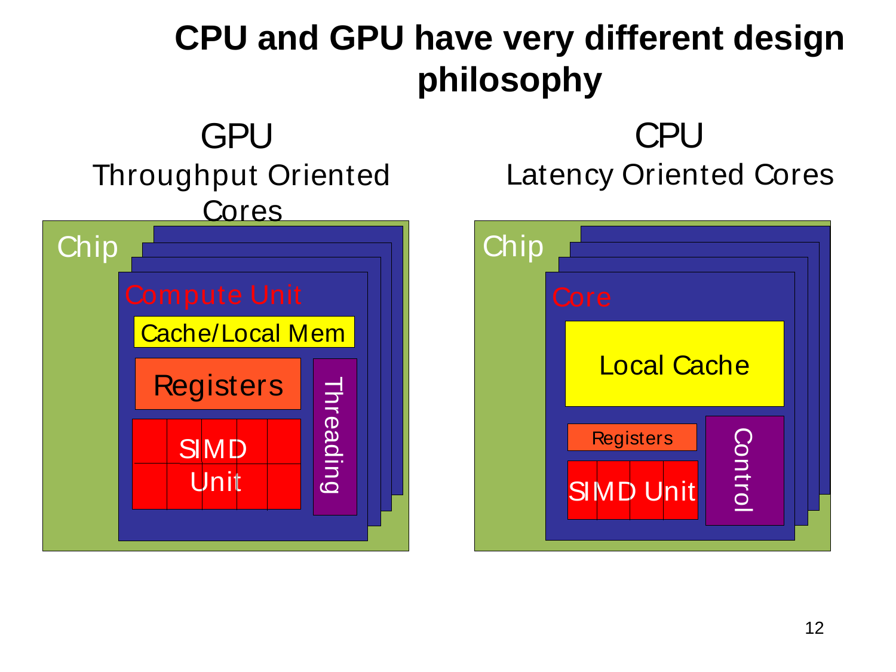
The table compares the two designs part by part.下表逐项比较两种设计。
| Feature特性 | CPU (latency-oriented)CPU（面向延迟） | GPU (throughput-oriented)GPU（面向吞吐） |
|---|---|---|
| Caches缓存 | Large: turn long-latency memory accesses into short-latency hits大缓存：把长延迟的访存变成短延迟的命中 | Small: boost memory throughput小缓存：提高访存吞吐 |
| Control控制 | Sophisticated: branch prediction and data forwarding reduce latency复杂：分支预测与数据转发降低延迟 | Simple: no branch prediction, no data forwarding简单：无分支预测，无数据转发 |
| ALUsALU | Powerful: reduced operation latency强大：降低操作延迟 | Many, energy-efficient, long latency but heavily pipelined数量多、能效高，延迟长但流水化程度高 |
| Threads线程数 | Small number数量少 | A massive number, to tolerate memory latency数量极多，以容忍访存延迟 |
Two terms in the table need a word. Branch prediction（分支预测）guesses the outcome of an if-test early, so that the processor keeps working instead of waiting. Data forwarding（数据转发）hands a result straight to the next instruction that needs it, without waiting until it is stored in a register.表中有两个术语需要说明一下。分支预测是提前猜测 if 判断的结果，这样处理器就能继续工作，而不必等待。数据转发是把结果直接交给下一条需要它的指令，不必先等它存进寄存器。
Read the table as one idea. The CPU spends its chip area on keeping one thread from waiting. The GPU lets a thread wait and runs another thread in the meantime, so it spends its area on arithmetic units.把这张表看成同一个思路。CPU 把芯片面积用来让一个线程不等待。GPU 则允许线程等待，同时运行另一个线程，所以它把面积用在运算单元上。
Step 2: SIMT versus SIMD第 2 步：SIMT 与 SIMD
Both run one instruction on many data values. They differ in who organises the groups.两者都是对许多数据同时执行一条指令。区别在于由谁来组织分组。
- SIMT（单指令多线程，single instruction, multiple threads）: the programmer writes the code of one thread. The hardware runs groups of 32 threads, called warps, in lockstep: one instruction for the whole warp.SIMT（单指令多线程）：程序员只编写一个线程的代码。硬件把线程每 32 个分成一组，叫作线程束，并让它们步调一致地运行，即整个线程束执行同一条指令。
- SIMD（单指令多数据，single instruction, multiple data）: vector registers of a fixed width, used by the programmer or the compiler. A branch becomes a mask that switches lanes off.SIMD（单指令多数据）：使用固定宽度的向量寄存器，由程序员或编译器来用。分支会变成一个掩码，把一部分通道关掉。
- In SIMT each thread has its own registers and its own control flow. Different branches inside one warp run one after the other (Section 12.3).在 SIMT 中，每个线程都有自己的寄存器和自己的控制流。同一线程束内的不同分支会一个接一个地执行（见第 12.3 节）。
Step 3: where the GPU sits第 3 步：GPU 所处的位置
A discrete GPU（独立 GPU）has its own Video RAM, so the input is copied to it and the results are copied back. An integrated GPU（集成 GPU）shares the system RAM: no copy is needed, it is cheaper, but it is slower.独立 GPU有自己的显存，所以输入要复制到它上面，结果再复制回来。集成 GPU与系统内存共享：不需要复制，成本更低，但速度较慢。
Practice练习
Q1. (Concept) Explain why a GPU can use small caches and no branch prediction, while a CPU cannot.Q1. （概念） 解释为什么 GPU 可以使用小容量缓存且无分支预测，而 CPU 则不能。
Answer
A CPU core runs one or two threads. When that thread waits for memory or for a branch outcome, the core idles, so the CPU spends area and power on large caches (they turn long-latency DRAM accesses into short-latency hits), on branch prediction and on data forwarding, which all shorten the latency of the single thread.CPU 核心只运行一个或两个线程。当该线程等待内存或分支结果时，核心就会空转，因此 CPU 把面积和功耗投入到大容量缓存（它们将长延迟的 DRAM 访问转换为短延迟的命中）、分支预测和数据转发上，而这些都是为了缩短单个线程的延迟。
A GPU keeps thousands of threads resident. When one waits, the scheduler runs another, so latency is hidden by parallelism and need not be reduced. The silicon saved goes to ALUs and memory channels, which raises the throughput, and the small GPU caches serve mainly to cut the traffic to DRAM.GPU 同时驻留着数千个线程。当某个线程等待时，调度器就运行另一个线程，因此延迟由并行性隐藏，而无需降低。节省下来的硅面积用于 ALU 和内存通道，从而提高吞吐量；而 GPU 的小容量缓存主要用于减少与 DRAM 之间的流量。
The price is that one GPU thread is slow and that a program with too little parallelism cannot hide the latency.代价是单个 GPU 线程很慢，而且并行度过低的程序无法隐藏延迟。
思路：CPU 靠"让一个线程别停"，GPU 靠"一个停了换另一个"。
Q2. (True or false, justify) "Because GPU ALUs have a long latency, a GPU is slower than a CPU for every program."Q2. （判断，并说明理由） "由于 GPU 的 ALU 延迟较长，因此对于每一个程序，GPU 都比 CPU 慢。"
Answer
False. A long latency per operation does not matter when many operations are in flight. The GPU's ALUs are heavily pipelined, so each one completes a result every cycle, and there are thousands of them. For parallel code the GPU's throughput wins: GPUs can be more than 10× faster than CPUs for parallel code. For sequential code the CPU wins, again by more than 10×.错误。当许多操作同时在途时，单个操作的长延迟并不重要。GPU 的 ALU 高度流水化，因此每个 ALU 每个周期都能完成一个结果，而且数量有数千个。对于并行代码，GPU 的吞吐量占优：GPU 运行并行代码可以比 CPU 快 10 倍以上。对于串行代码，则是 CPU 占优，同样可以快 10 倍以上。
易错：latency 和 throughput 不是一回事。
The streaming multiprocessor, peak FLOP/s and bandwidth ★★★流多处理器、峰值 FLOP/s 与带宽 ★★★
Goal. Compute the peak floating-point rate and the memory bandwidth of a GPU from the numbers of one streaming multiprocessor and of the memory interface.目标。 根据一个流多处理器和内存接口的数字，计算 GPU 的峰值浮点速率和内存带宽。
Step 1: the building block第 1 步：基本构件

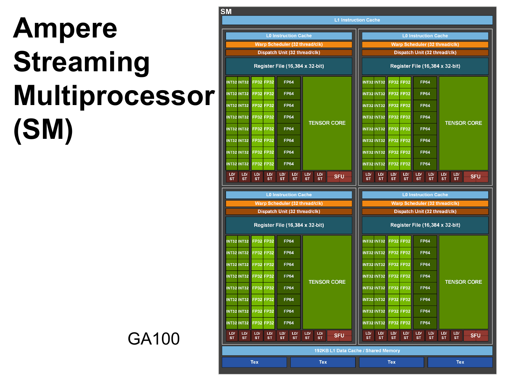

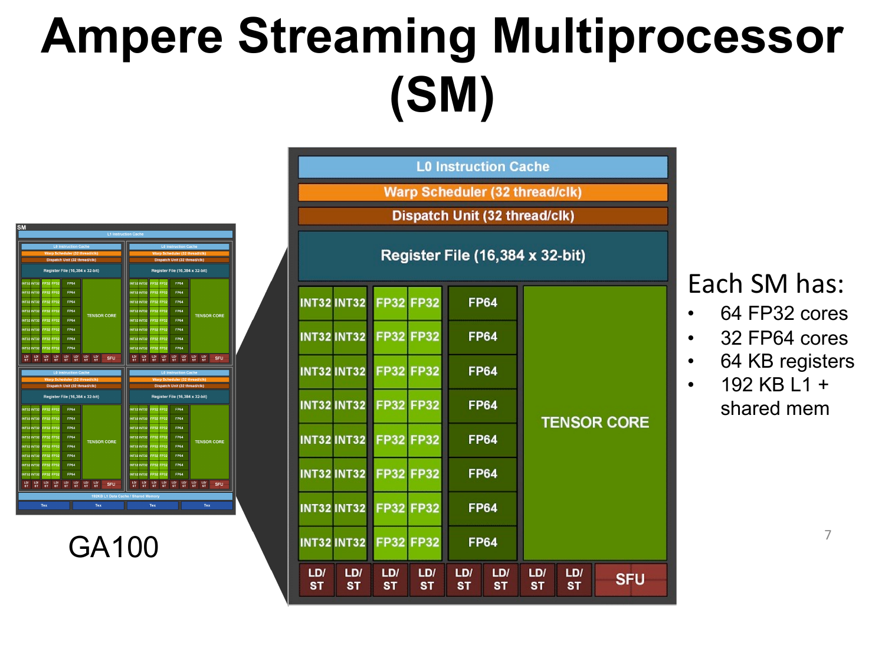
A GPU is built from many copies of one block, the streaming multiprocessor (SM)（流多处理器）. The Ampere SM has four identical processing blocks. Each block has its own warp scheduler, a register file of 16,384 registers of 32 bits, 16 FP32 units and 8 FP64 units. FP32 is 32-bit single precision and FP64 is 64-bit double precision. A unit here is also called a core.GPU 由许多个相同的基本单元组成，这个单元叫流多处理器（SM）。Ampere 的 SM 有四个相同的处理块。每个处理块有自己的线程束调度器、一个含 16,384 个 32 位寄存器的寄存器堆、16 个 FP32 单元和 8 个 FP64 单元。FP32 是 32 位单精度，FP64 是 64 位双精度。这里的单元也叫核心。
- Per SM: \(4\times16=64\) FP32 cores and \(4\times8=32\) FP64 cores.每个 SM 有 \(4\times16=64\) 个 FP32 核心和 \(4\times8=32\) 个 FP64 核心。
- Per SM: \(4\times16{,}384=65{,}536\) registers (256 KB) and 192 KB of L1 cache plus shared memory.每个 SM 有 \(4\times16{,}384=65{,}536\) 个寄存器（256 KB），以及 192 KB 的 L1 缓存加共享内存。
- Every clock cycle each scheduler picks one ready warp, so an SM issues up to four warp instructions per cycle.每个时钟周期，每个调度器挑选一个就绪的线程束，所以一个 SM 每周期最多发出四条线程束指令。
- A core completes one FMA per clock cycle. An FMA, fused multiply-add, is a multiplication and an addition in one instruction, counted as 2 FLOPs (Section 1.1).一个核心每个时钟周期完成一次 FMA。FMA（融合乘加）是把一次乘法和一次加法合在一条指令里，计为 2 个 FLOP（见第 1.1 节）。
Step 2: the peak floating-point rate第 2 步：峰值浮点速率
All cores of all SMs are counted. In words:把所有 SM 的所有核心都算进去。用文字表述：
peak rate = number of SMs × cores per SM × 2 FLOPs per cycle × clock rate峰值速率 = SM 数量 × 每个 SM 的核心数 × 每周期 2 FLOP × 时钟频率
The clock rate is the number of cycles per second (Section 1.1).时钟频率是每秒的周期数（见第 1.1 节）。
Step 3: the memory bandwidth第 3 步：内存带宽
A GPU reaches a high bandwidth with a very wide interface, not with a faster clock. In words:GPU 靠非常宽的接口获得高带宽，而不是靠更快的时钟。用文字表述：
bandwidth = bytes per transfer × transfers per second带宽 = 每次传输的字节数 × 每秒的传输次数
The bytes per transfer are the interface width in bits divided by 8.每次传输的字节数等于接口位宽（比特）除以 8。
Practice练习
Q1. (Calculation) A GPU has 80 SMs of the Ampere type (64 FP32 and 32 FP64 cores per SM) and runs at 1.4 GHz (assumed). Compute the FP32 and the FP64 peak performance.Q1. （计算） 某 GPU 有 80 个 Ampere 类型的 SM（每个 SM 有 64 个 FP32 核心和 32 个 FP64 核心），运行频率为 1.4 GHz（假定值）。计算 FP32 与 FP64 的峰值性能。
Answer
\(P_{\text{peak}}=N_{\text{SM}}\times n_{\text{core/SM}}\times2\times f\).
- FP32: \(80\times64\times2\times1.4\times10^{9}=1.4336\times10^{13}\) FLOP/s \(=14.34\) TFLOP/s.
- FP64: \(80\times32\times2\times1.4\times10^{9}=7.168\times10^{12}\) FLOP/s \(=7.17\) TFLOP/s.
Interpretation: FP64 is half of FP32, as the 32:64 ratio of cores implies. Both are peak numbers that assume an FMA in every core in every cycle.解读：FP64 为 FP32 的一半，这与核心数之比 32:64 相符。两者都是峰值数字，均假设每个核心在每个周期都执行一次 FMA。
Q2. (Calculation) (a) A GPU has a 256-bit memory interface with a data rate of 14 Gb/s per pin. Compute its bandwidth. (b) What data rate per pin would a 4096-bit interface need for the same bandwidth?Q2. （计算） (a) 某 GPU 的内存接口宽 256 位，每引脚数据速率为 14 Gb/s。计算其带宽。(b) 为获得相同的带宽，4096 位接口每个引脚的数据速率需要是多少？
Answer
(a) \(BW=(256/8)\times14\times10^{9}=32\ \text{B}\times14\times10^{9}/\text{s}=448\) GB/s.
(b) \(r=BW/(w/8)=448\times10^{9}/(4096/8)=448\times10^{9}/512=0.875\times10^{9}\), that is 0.875 Gb/s per pin.(b) \(r=BW/(w/8)=448\times10^{9}/(4096/8)=448\times10^{9}/512=0.875\times10^{9}\)，即每引脚 0.875 Gb/s。
Interpretation: a 16 times wider interface needs a 16 times lower pin rate for the same bandwidth. This is the idea behind HBM: width instead of speed.解读：接口宽 16 倍，则在带宽相同时，每引脚速率只需降低为 1/16。这正是 HBM 的思想：以位宽代替速率。
Arithmetic intensity, machine balance and the roofline ★★★算术强度、机器平衡点与屋顶线 ★★★
Goal. Decide whether a computation is limited by the speed of its arithmetic or by the speed of its memory, and compute the performance that it can reach at most. This section is the home of these ideas; Chapters 12 to 14 use them again.目标。 判断一个计算受到的是运算速度的限制还是内存速度的限制，并算出它最多能达到的性能。本节是这些概念的出处；第 12 至 14 章会再次用到它们。
Step 1: arithmetic intensity第 1 步：算术强度
The arithmetic intensity（算术强度）AI of a kernel says how much arithmetic it does for each byte that it moves. In words:核函数的算术强度（AI）说明它每搬运一个字节，要做多少运算。用文字表述：
arithmetic intensity = floating-point operations ÷ bytes moved to and from device memory算术强度 = 浮点运算次数 ÷ 与设备内存之间搬运的字节数
Step 2: machine balance第 2 步：机器平衡点
The machine has an arithmetic intensity of its own: the number of FLOPs it can do in the time that it takes to move one byte. In words:机器本身也有一个算术强度：它在搬运一个字节的时间里能做的 FLOP 数。用文字表述：
machine balance = peak rate ÷ memory bandwidth机器平衡点 = 峰值速率 ÷ 内存带宽
A kernel whose AI is below this number cannot give the units enough work per byte. A kernel is memory-bound（受内存限制）if its AI is below the machine balance, and compute-bound（受计算限制）if it is above. The machine balance is the AI at which memory and arithmetic units are equally busy.算术强度低于这个数的核函数，给运算单元的每字节工作量不够。如果核函数的 AI 低于机器平衡点，它就是访存受限的；高于它则是计算受限的。机器平衡点就是内存和运算单元同样忙碌时的 AI。
Step 3: the roofline bound第 3 步：屋顶线上界
A kernel cannot be faster than the peak. It also cannot be faster than the memory allows: at \(BW\) bytes per second and AI FLOPs per byte, the memory supplies at most \(\text{AI}\times BW\) FLOPs per second. The kernel is held back by the smaller of the two. In words:核函数的速度不可能超过峰值。它也不能超过内存所允许的速度：在带宽为 \(BW\) 字节每秒、算术强度为 AI 时，内存最多只能供给 \(\text{AI}\times BW\) FLOP/s。核函数会受两者中较小的那一个限制。用文字表述：
attainable rate = the smaller of (peak rate, arithmetic intensity × bandwidth)可达速率 = 以下两者中较小的那个：峰值速率，算术强度 × 带宽
Plotted against AI, the bound rises along a slanted line (the memory limit) up to the ridge point and then continues as a flat line (the peak). The two lines have the shape of a roof, hence the name roofline model（屋顶线模型）.以 AI 为横轴作图时，界限沿一条斜线上升（即内存限制），直到脊点，之后变成一条水平线（即峰值）。两段线的形状像一个屋顶，因此叫作屋顶线模型。
Practice练习
Q1. (Calculation) A GPU has \(P_{\text{peak}}=9.6\) TFLOP/s (FP32) and \(BW=600\) GB/s (assumed). (a) Compute the machine balance. (b) What is the arithmetic intensity of the dot product \(s\leftarrow\sum_i x_iy_i\) in FP32, where only \(x_i\) and \(y_i\) are read and the sum stays in a register? (c) What performance is attainable, and what fraction of the peak is it? (d) From which \(n\) on can the product of two \(n\times n\) FP32 matrices (AI \(\le n/6\)) be compute-bound?Q1. （计算） 一块 GPU 的 FP32 峰值为 \(P_{\text{peak}}=9.6\) TFLOP/s，带宽为 \(BW=600\) GB/s（假设值）。(a) 计算机器平衡点。(b) 在 FP32 下，点积 \(s\leftarrow\sum_i x_iy_i\) 的算术强度是多少？其中只读取 \(x_i\) 和 \(y_i\)，求和结果保留在寄存器中。(c) 可达到的性能是多少？占峰值的比例是多少？(d) 两个 \(n\times n\) 的 FP32 矩阵相乘（AI \(\le n/6\)）从哪个 \(n\) 起变为计算受限？
Answer
(a) \(B_{\text{m}}=9.6\times10^{12}/(600\times10^{9})=16\) FLOP/byte.(a) \(B_{\text{m}}=9.6\times10^{12}/(600\times10^{9})=16\) FLOP/byte。
(b) Per element 2 FLOP (multiply and add) and \(2\times4=8\) bytes (read \(x_i\) and \(y_i\)): AI \(=2/8=0.25\) FLOP/byte.(b) 每个元素 2 个 FLOP（乘与加）和 \(2\times4=8\) 字节（读取 \(x_i\) 与 \(y_i\)）：AI \(=2/8=0.25\) FLOP/byte。
(c) \(P_{\text{att}}=\min(P_{\text{peak}},\text{AI}\times BW)=\min(9.6\ \text{TFLOP/s},\ 0.25\times600\ \text{GB/s})=150\) GFLOP/s, which is \(150/9600=1.6\%\) of the peak.(c) \(P_{\text{att}}=\min(P_{\text{peak}},\text{AI}\times BW)=\min(9.6\ \text{TFLOP/s},\ 0.25\times600\ \text{GB/s})=150\) GFLOP/s，即峰值的 \(150/9600=1.6\%\)。
(d) \(n/6\ge16\) gives \(n\ge96\).(d) \(n/6\ge16\) 得到 \(n\ge96\)。
Interpretation: the dot product is deeply memory-bound, so its speed is set by the bandwidth. Matrix products need reuse (tiling, Section 6.4) to approach the peak.解读：点积是严重访存受限的，其速度由带宽决定。矩阵乘法需要数据复用（分块，见 6.4 节）才能接近峰值。
思路：AI 小于平衡点 → 带宽说了算。
Latency hiding and Little's law ★★延迟隐藏与 Little 定律 ★★
Goal. Compute how many threads a GPU needs so that its memory and its schedulers never sit idle while they wait.目标。 计算 GPU 需要多少线程，才能让它的内存和调度器在等待时也不闲置。
Step 1: why many threads第 1 步：为什么需要很多线程
A GPU does not make a memory access faster. When a warp waits, the scheduler issues an instruction of another resident warp. A resident warp is one that is loaded on the SM. The switch costs no cycles, because all warps keep their registers in the register file.GPU 不会让一次内存访问变快。当一个线程束在等待时，调度器会发出另一个驻留线程束的指令。驻留线程束是已经加载到 SM 上的线程束。切换不需要花费时钟周期，因为所有线程束都把寄存器保存在寄存器堆中。
The question is how many independent accesses must be under way at the same moment. Little's law（Little 定律）answers it: in a steady state, the number of items in a system equals the rate at which they leave times the time that each spends inside. Picture a pipe: to keep it full, as many requests must be in flight as the pipe holds. In words:问题是：同一时刻必须有多少次独立访问正在进行。Little 定律给出了答案：在稳定状态下，系统中的项目数等于它们离开的速率乘以每个项目在系统中停留的时间。想象一根管子：要让它保持满，同时在途的请求数就应等于管子所能容纳的量。用文字表述：
requests in flight = latency × throughput在途请求数 = 延迟 × 吞吐量
Step 2: warps per scheduler第 2 步：每个调度器的线程束数
The same idea, counted in warps. A warp that stalls waits \(L\) cycles. The other warps must fill these cycles with their independent work. In words:同样的想法，按线程束来计算。一个停顿的线程束要等 \(L\) 个周期。其他线程束必须用它们的独立工作来填满这些周期。用文字表述：
ready warps ≥ 1 + waiting cycles ÷ cycles of work per warp就绪线程束数 ≥ 1 + 等待周期 ÷ 每个线程束的工作周期数
Practice练习
Q1. (Calculation, Little's law) A GPU has a memory bandwidth of 600 GB/s and a global-memory latency of 400 ns (assumed). Each thread keeps one 8-byte load in flight. (a) How many bytes must be in flight to keep the memory busy? (b) How many threads is that? (c) How many threads suffice if each thread keeps 4 independent loads in flight?Q1. （计算，Little 定律） 一块 GPU 的内存带宽为 600 GB/s，全局内存延迟为 400 ns（假设值）。每个线程保持一个 8 字节的加载在途。(a) 要使内存保持忙碌，需要多少字节在途？(b) 对应多少线程？(c) 若每个线程保持 4 个独立加载在途，需要多少线程即可？
Answer
(a) Bytes in flight \(=t_{\text{lat}}\times BW=400\times10^{-9}\ \text{s}\times600\times10^{9}\ \text{B/s}=240{,}000\) B \(=240\) KB.(a) 在途字节数 \(=t_{\text{lat}}\times BW=400\times10^{-9}\ \text{s}\times600\times10^{9}\ \text{B/s}=240{,}000\) B \(=240\) KB。
(b) \(240{,}000/8=30{,}000\) threads.(b) \(240{,}000/8=30{,}000\) 个线程。
(c) \(30{,}000/4=7{,}500\) threads.(c) \(30{,}000/4=7{,}500\) 个线程。
Interpretation: tens of thousands of threads are needed, and more independent loads per thread, that is more instruction-level parallelism, reduce the thread count.解读：需要数万个线程；每个线程的独立加载越多，即指令级并行度越高，所需线程数就越少。
Q2. (Calculation, instruction form of Little's law) Each warp scheduler of an SM issues at most one warp instruction per cycle. A dependent instruction can issue 20 cycles after its predecessor (an assumed latency), and every warp has 2 independent instructions in flight. (a) How many warps per scheduler must be resident to issue in every cycle? (b) How many warps and threads is that per SM, with 4 schedulers? (c) Using the register file of Section 11.2, can an SM with 64 registers per thread hold that many threads?Q2. （计算，Little 定律的指令形式） 一个 SM 的每个线程束调度器每个周期最多发射一条线程束指令。依赖指令可在其前驱指令之后 20 个周期发射（假设的延迟），且每个线程束有 2 条独立指令在途。(a) 每个调度器需驻留多少线程束，才能每个周期都发射？(b) 若 SM 有 4 个调度器，每个 SM 需要多少线程束和线程？(c) 使用第 11.2 节中的寄存器堆，若每个线程占用 64 个寄存器，一个 SM 能容纳这么多线程吗？
Answer
(a) Instructions in flight \(=L\times R=20\ \text{cycles}\times1\ \text{instruction/cycle}=20\). Each warp supplies 2, so \(20/2=10\) warps per scheduler.(a) 在途指令数 \(=L\times R=20\ \text{cycles}\times1\ \text{instruction/cycle}=20\)。每个线程束提供 2 条，因此每个调度器需要 \(20/2=10\) 个线程束。
(b) \(4\times10=40\) warps per SM, that is \(40\times32=1280\) threads.(b) 每个 SM 需要 \(4\times10=40\) 个线程束，即 \(40\times32=1280\) 个线程。
(c) At 64 registers per thread the register file holds \(65{,}536/64=1024\) threads. That is less than 1280, so the schedulers cannot be kept busy: the registers limit the latency hiding. At 32 registers per thread \(65{,}536/32=2048\) threads fit.(c) 每个线程使用 64 个寄存器时，寄存器堆只能容纳 \(65{,}536/64=1024\) 个线程。这低于 1280，因此调度器无法保持忙碌：寄存器限制了延迟隐藏。每个线程使用 32 个寄存器时，可以容纳 \(65{,}536/32=2048\) 个线程。
Interpretation: more independent instructions per warp (instruction-level parallelism) or fewer registers per thread both help. The same condition is \(W\ge1+L/c\), where \(c\) is the number of issue cycles of independent work and \(L\) counts only the waiting cycles after them. Here \(c=2\) and \(L=18\), so \(W\ge1+18/2=10\), the same answer.解读：每个线程束的独立指令越多（指令级并行），或每个线程的寄存器越少，都有助于提高性能。同一条件为 \(W\ge1+L/c\)，其中 \(c\) 是独立工作的发射周期数，\(L\) 只计其后的等待周期。此处 \(c=2\) 且 \(L=18\)，故 \(W\ge1+18/2=10\)，答案相同。
思路：在途指令数 = 延迟 × 发射率，再除以每个 warp 能提供的独立指令数。
The five steps of a GPU computation ★★GPU 计算的五个步骤 ★★
Goal. List the five steps of a GPU program, compute how long the copies take, and decide from how many repeated uses of the data the GPU pays off.目标。 列出 GPU 程序的五个步骤，计算拷贝需要多长时间，并判断数据被反复使用多少次时 GPU 才划算。
Step 1: the five steps第 1 步：五个步骤

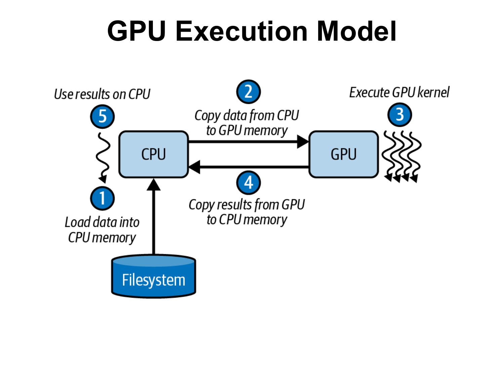
- Load data into CPU memory (from the filesystem).将数据载入 CPU 内存（来自文件系统）。
- Copy data from CPU to GPU memory.将数据从 CPU 内存拷贝到 GPU 内存。
- Execute GPU kernel.执行 GPU 核函数。
- Copy results from GPU to CPU memory.将结果从 GPU 内存拷贝回 CPU 内存。
- Use results on CPU.在 CPU 上使用结果。
Steps 2 and 4 cross the PCIe link, the price of a discrete GPU. Only step 3 is parallel, so the copies act like the serial part of Amdahl's law (Section 2.3).第 2 步和第 4 步要经过 PCIe 链路，这正是独立 GPU 的代价。只有第 3 步是并行的，所以拷贝的作用就像 Amdahl 定律中的串行部分（见第 2.3 节）。
Step 2: the cost of the copies第 2 步：拷贝的代价
The time for one pass is the sum of the three parts. In words:一遍的时间等于三部分之和。用文字表述：
GPU time = copy in + kernel + copy out, where copy time = bytes ÷ link bandwidth.GPU 时间 = 拷入 + 核函数 + 拷出，其中拷贝时间 = 字节数 ÷ 链路带宽。
If the data stay on the GPU for \(n\) kernels, the copies are paid only once. The GPU time is then (copy in + copy out) + \(n\) × kernel time, and the CPU time is \(n\) × CPU time per pass.如果数据留在 GPU 上供 \(n\) 个核函数使用，那么拷贝只需付一次代价。此时 GPU 时间为（拷入 + 拷出）+ \(n\) × 核函数时间，而 CPU 时间为 \(n\) × 每遍的 CPU 时间。
Practice练习
Q1. (Calculation) A program copies 3 GB to the GPU and 1 GB back over PCIe at 8 GB/s. The kernel takes 60 ms; the CPU needs 0.4 s for the same work (assumed). (a) What is the GPU time for one pass, and what fraction of it is the kernel? (b) The same data are processed \(n\) times by \(n\) kernels while they stay on the GPU. From which \(n\) is the GPU faster?Q1. （计算） 一个程序通过 PCIe 以 8 GB/s 的速率向 GPU 拷入 3 GB，并拷回 1 GB。核函数耗时 60 ms；对于同样的工作，CPU 需要 0.4 s（假设值）。(a) 一遍的 GPU 耗时是多少？其中核函数所占比例是多少？(b) 同样的数据在留驻 GPU 期间被 \(n\) 个核函数处理 \(n\) 遍。从哪个 \(n\) 起 GPU 更快？
Answer
(a) Copy in \(3/8=0.375\) s, kernel \(0.06\) s, copy out \(1/8=0.125\) s: \(0.56\) s. The kernel fraction is \(0.06/0.56=10.7\%\). The CPU needs only \(0.4\) s, so one pass is not worth the transfer.(a) 输入拷贝 \(3/8=0.375\) s，核函数 \(0.06\) s，输出拷贝 \(1/8=0.125\) s：合计 \(0.56\) s。核函数占比为 \(0.06/0.56=10.7\%\)。CPU 只需 \(0.4\) s，因此单遍处理不值得付出这些传输代价。
(b) The GPU takes \(0.375+0.06\,n+0.125=0.5+0.06\,n\) s and the CPU \(0.4\,n\) s. The GPU is faster when \(0.5+0.06\,n<0.4\,n\), so \(n>0.5/0.34=1.47\), that is \(n\ge2\). Check: \(n=2\) gives \(0.62\) s against \(0.8\) s.(b) GPU 耗时 \(0.375+0.06\,n+0.125=0.5+0.06\,n\) s，CPU 耗时 \(0.4\,n\) s。GPU 在 \(0.5+0.06\,n<0.4\,n\) 时更快，因此 \(n>0.5/0.34=1.47\)，也就是 \(n\ge2\)。验证：\(n=2\) 得到 \(0.62\) s，对比 \(0.8\) s。
Interpretation: the transfer is a fixed cost that is amortized over the number of kernels that reuse the data.解读：传输是一项固定开销，它会被复用这些数据的核函数数量所摊薄。
Terms to recognise ★需要认识的术语 ★
| Term术语 | What to know要知道什么 |
|---|---|
| Titan | Cray, Oak Ridge: 18,688 nodes, each with one 16-core Opteron and one 2,496-core GPU; 710 TB of memory in total.Cray，橡树岭：18,688 个节点，每个节点含一颗 16 核 Opteron 和一块 2,496 核 GPU；总内存 710 TB。 |
| Cray XK7 nodeCray XK7 节点 | Opteron CPU with 32 GB DDR3, Kepler GPU with 6 GB GDDR5, PCIe Gen2 between them, Gemini network.Opteron CPU 配 32 GB DDR3，Kepler GPU 配 6 GB GDDR5，两者之间为 PCIe Gen2，网络为 Gemini。 |
| NVLink versus PCIeNVLink 与 PCIe | NVLink: NVIDIA's many-link point-to-point GPU interconnect, far faster; PCIe: general-purpose bus (Gen2 x16: 8 GB/s per direction).NVLink：NVIDIA 的多链路点对点 GPU 互连，速度快得多；PCIe：通用总线（Gen2 x16：每个方向 8 GB/s）。 |
| HBM versus GDDRHBM 与 GDDR | GDDR: chips around the GPU, narrow and fast pins. HBM: stacked dies next to the GPU, 1024 bits per stack, bandwidth from width.GDDR：芯片布置在 GPU 周围，引脚窄而快。HBM：堆叠的晶粒紧邻 GPU，每个堆栈 1024 位，带宽来自位宽。 |
| Grace Blackwell superchipGrace Blackwell 超级芯片 | One Grace CPU and two Blackwell B200 GPUs on one module, unified memory over NVLink-C2C.一颗 Grace CPU 与两块 Blackwell B200 GPU 封装在同一模块上，通过 NVLink-C2C 实现统一内存。 |
| CUDA | NVIDIA-only programming platform (driver API and runtime API).仅限 NVIDIA 的编程平台（驱动 API 和运行时 API）。 |
| OpenCL | Open standard for GPUs, CPUs and DSPs; programming model close to CUDA's; NVIDIA and AMD.面向 GPU、CPU 和 DSP 的开放标准；编程模型与 CUDA 接近；NVIDIA 与 AMD 均支持。 |
| OpenACC | Compiler directives (#pragma acc) in the style of OpenMP; the compiler maps loops to GPUs.类似 OpenMP 风格的编译指示（#pragma acc）；编译器将循环映射到 GPU。 |
Exam-style questions考试题型练习
Q1. (Concept and calculation: CPU versus GPU) (a) State for the CPU and for the GPU the design choice for caches, control, ALUs and threads, and say which goal each serves. (b) A GPU has a memory bandwidth of 700 GB/s and a global-memory latency of 600 ns (assumed). How many bytes must be in flight to saturate the memory, and how many threads are needed if each thread keeps two independent 16-byte loads in flight?Q1. （概念与计算：CPU 与 GPU 对比） (a) 分别说明 CPU 与 GPU 在缓存、控制、ALU 和线程方面的设计选择，并指出每种选择服务于什么目标。(b) 一块 GPU 的内存带宽为 700 GB/s，全局内存延迟为 600 ns（假设值）。要使内存饱和，需要多少字节在途？若每个线程保持两个独立的 16 字节加载在途，需要多少线程？
Answer
(a) CPU, latency-oriented: large caches (long-latency memory accesses become short-latency cache accesses); sophisticated control with branch prediction and data forwarding (they reduce branch and data latency); powerful ALUs (reduced operation latency); a small number of hardware threads. GPU, throughput-oriented: small caches (they boost memory throughput); simple control (no branch prediction, no data forwarding); many energy-efficient ALUs with a long latency but heavy pipelining (high throughput); a massive number of threads to tolerate memory latencies. The CPU makes one thread fast; the GPU finishes as much total work as possible per second.(a) *CPU，面向延迟：*大容量缓存（将长延迟的访存变为短延迟的缓存访问）；配有分支预测和数据转发的复杂控制（它们降低分支延迟与数据延迟）；强大的 ALU（降低操作延迟）；硬件线程数少。*GPU，面向吞吐量：*小容量缓存（提升内存吞吐量）；简单的控制（无分支预测，无数据转发）；大量节能的 ALU，延迟长但高度流水化（吞吐量高）；海量线程以容忍访存延迟。CPU 让单个线程变快；GPU 则让每秒完成的总工作量尽可能多。
(b) Little's law: bytes in flight \(=t_{\text{lat}}\times BW=600\times10^{-9}\ \text{s}\times700\times10^{9}\ \text{B/s}=420{,}000\) B. Each thread keeps \(2\times16=32\) B in flight, so \(420{,}000/32=13{,}125\) threads.(b) Little 定律：在途字节数 \(=t_{\text{lat}}\times BW=600\times10^{-9}\ \text{s}\times700\times10^{9}\ \text{B/s}=420{,}000\) B。每个线程保持 \(2\times16=32\) B 在途，因此需要 \(420{,}000/32=13{,}125\) 个线程。
思路：(b) 先算飞行中的字节数，再除以每线程的字节数。
Q2. (Calculation: peak, bandwidth, balance) A GPU of the Ampere type has 60 SMs (64 FP32 and 32 FP64 cores per SM) at 1.2 GHz and a 3072-bit memory interface at 1.25 Gb/s per pin (all assumed). (a) Compute the FP32 and FP64 peak. (b) Compute the memory bandwidth. (c) Compute the machine balance for FP32. (d) A vector add in FP32 (12 bytes per FLOP) runs on it: what performance is attainable and what fraction of the peak is that? (e) Is the product of two \(2000\times2000\) FP32 matrices (AI \(\le n/6\)) compute-bound, and from which \(n\) on?Q2. （计算：峰值、带宽与平衡点） 一块 Ampere 架构的 GPU 有 60 个 SM（每个 SM 含 64 个 FP32 核心和 32 个 FP64 核心），时钟为 1.2 GHz，内存接口为 3072 位，每引脚 1.25 Gb/s（均为假设值）。(a) 计算 FP32 和 FP64 峰值。(b) 计算内存带宽。(c) 计算 FP32 的机器平衡点。(d) 该 GPU 运行 FP32 向量加法（每 FLOP 12 字节），可达到的性能是多少？占峰值的比例是多少？(e) 两个 \(2000\times2000\) 的 FP32 矩阵相乘（AI \(\le n/6\)）是否为计算受限？从哪个 \(n\) 起为计算受限？
Answer
(a) \(P_{\text{peak}}=N_{\text{SM}}\times n_{\text{core/SM}}\times2\times f\). FP32: \(60\times64\times2\times1.2\times10^{9}=9.216\times10^{12}\) FLOP/s \(=9.216\) TFLOP/s. FP64: \(60\times32\times2\times1.2\times10^{9}=4.608\) TFLOP/s.
(b) \(BW=(w/8)\times r=(3072/8)\times1.25\times10^{9}=384\ \text{B}\times1.25\times10^{9}/\text{s}=480\) GB/s.
(c) \(B_{\text{m}}=9.216\times10^{12}/(480\times10^{9})=19.2\) FLOP/byte.(c) \(B_{\text{m}}=9.216\times10^{12}/(480\times10^{9})=19.2\) FLOP/byte。
(d) AI \(=1/12=0.083\) FLOP/byte, so \(P_{\text{att}}=0.083\times480\ \text{GB/s}=40\) GFLOP/s, which is \(40/9216=0.43\%\) of the peak. The kernel is memory-bound.(d) AI 为 \(=1/12=0.083\) FLOP/byte，因此可达 \(P_{\text{att}}=0.083\times480\ \text{GB/s}=40\) GFLOP/s，即峰值的 \(40/9216=0.43\%\)。该核函数受访存限制。
(e) For \(n=2000\), AI \(\le2000/6=333\) FLOP/byte, which is far above 19.2, so the product is compute-bound if the data are reused ideally. The threshold is \(n/6\ge19.2\), that is \(n\ge115.2\), so \(n\ge116\).(e) 对于 \(n=2000\)，AI 为 \(\le2000/6=333\) FLOP/byte，远高于 19.2，因此只要数据得到理想复用，该乘积即受计算限制。阈值为 \(n/6\ge19.2\)，即 \(n\ge115.2\)，因此 \(n\ge116\)。
思路：先判断是 memory-bound 还是 compute-bound，再决定看带宽比还是算力比。
Q3. (Calculation: five steps) A kernel needs 1.6 GB in and 0.8 GB out over PCIe at 8 GB/s and takes 25 ms; the CPU needs 150 ms for the same work (assumed). What is the GPU time for one pass, and from which number of passes over the data (kept on the GPU) does the GPU win?Q3. （计算：五个步骤） 一个核函数通过 PCIe 以 8 GB/s 的速率拷入 1.6 GB、拷出 0.8 GB，耗时 25 ms；对于同样的工作，CPU 需要 150 ms（假设值）。一遍的 GPU 耗时是多少？数据留在 GPU 上时，遍历次数达到多少，GPU 才会获胜？
Answer
Copy in \(1.6/8=0.2\) s, kernel \(0.025\) s, copy out \(0.8/8=0.1\) s: \(0.325\) s for one pass, slower than the CPU's \(0.15\) s by a factor of \(2.2\). For \(n\) passes the GPU needs \(0.3+0.025\,n\) s against \(0.15\,n\) s on the CPU. The GPU wins when \(0.3+0.025\,n<0.15\,n\), so \(n>2.4\), that is \(n\ge3\) (\(0.375\) s against \(0.45\) s).拷入 \(1.6/8=0.2\) s，核函数 \(0.025\) s，拷出 \(0.8/8=0.1\) s：一遍共 \(0.325\) s，比 CPU 的 \(0.15\) s 慢 \(2.2\) 倍。遍历 \(n\) 次时，GPU 需要 \(0.3+0.025\,n\) s，而 CPU 需要 \(0.15\,n\) s。当 \(0.3+0.025\,n<0.15\,n\) 时 GPU 获胜，即 \(n>2.4\)，亦即 \(n\ge3\)（GPU \(0.375\) s 对 CPU \(0.45\) s）。
思路：(d) 把一次性的搬运时间和每趟的 kernel 时间分开写。
Q4. (Calculation, one step further) The register file of an SM holds \(4\times16{,}384\) 32-bit registers. (a) How many bytes is that? (b) If every thread uses 32 registers, how many threads, and how many warps, can have their registers resident? And with 64 registers per thread? (c) Why does a GPU have such a large register file?Q4. （计算，进一步） 一个 SM 的寄存器堆包含 \(4\times16{,}384\) 个 32 位寄存器。(a) 共多少字节？(b) 若每个线程使用 32 个寄存器，可同时驻留多少线程和线程束？若每个线程使用 64 个寄存器呢？(c) 为什么 GPU 的寄存器堆如此之大？
Answer
(a) \(4\times16{,}384=65{,}536\) registers \(\times4\) B \(=262{,}144\) B \(=256\) KB. The quoted figure of 64 KB is the share of one block.(a) \(4\times16{,}384=65{,}536\) 个寄存器，即 \(\times4\) B \(=262{,}144\) B \(=256\) KB。文中引用的 64 KB 是一个处理块的份额。
(b) At 32 registers per thread: \(65{,}536/32=2048\) threads \(=2048/32=64\) warps. At 64 registers per thread: \(65{,}536/64=1024\) threads \(=32\) warps. This is the limit from registers alone; shared memory and other limits can reduce it further.(b) 每个线程 32 个寄存器时：\(65{,}536/32=2048\) 个线程、\(=2048/32=64\) 个线程束。每个线程 64 个寄存器时：\(65{,}536/64=1024\) 个线程、\(=32\) 个线程束。这仅是寄存器所施加的上限；共享内存及其他限制还可能进一步降低该数值。
(c) Every resident thread keeps its own registers on chip, so switching from a waiting warp to a ready warp costs no cycles. The more threads are resident, the more latency can be hidden (Little's law), and this needs a large register file. A CPU core keeps the registers of only one or two threads.(c) 每个驻留线程都在片上保存着自己的寄存器，因此从等待中的线程束切换到就绪的线程束不需要任何周期。驻留的线程越多，能够隐藏的延迟就越多（Little 定律），而这需要大容量的寄存器堆。CPU 核心只保存一两个线程的寄存器。
思路：寄存器总数 ÷ 每线程寄存器数 = 驻留线程数。
Chapter 12The CUDA Programming ModelCUDA 编程模型
Launching a kernel: grids, blocks and threads ★★★启动核函数：网格、线程块与线程 ★★★
Goal. Given the size of a problem, choose how many blocks and how many threads per block to launch, count the threads that this creates, and decide whether the launch is legal.目标。 给定问题的规模，选择启动多少个块、每块多少线程，算出这样会创建多少线程，并判断这次启动是否合法。
Step 1: the launch statement第 1 步：启动语句
The launch kernel<<<grid, block>>>(args) has two numbers in the angle brackets. The first one counts blocks, the second one counts threads per block. A kernel is declared __global__ and returns void. The threads find their own data through built-in indices (Section 12.2).启动语句 kernel<<<grid, block>>>(args) 的尖括号里有两个数字。第一个数字是块的数量，第二个数字是每块线程数。核函数的声明是 __global__，返回类型是 void。线程通过内置索引找到自己的数据（见第 12.2 节）。
dim3holds three unsigned integers x, y, z. An omitted component is 1, and an integernmeansdim3(n)\(=(n,1,1)\).dim3包含三个无符号整数 x、y、z。省略的分量取 1；一个整数n表示dim3(n)\(=(n,1,1)\)。- The launch limits depend on the compute capability (CC, Section 12.5), the version number of the GPU hardware. The block limits are on the card in Step 4. For the grid, \(y\) and \(z\le65{,}535\). The grid \(x\) is at most \(65{,}535\) up to CC 2.x and at most \(2^{31}-1\) from CC 3.x. A CC 1.x grid is 2-D.启动的限制取决于计算能力（CC，见第 12.5 节），即 GPU 硬件的版本号。块的限制写在卡的规格中（见第 4 步）。对于网格，\(y\) 和 \(z\le65{,}535\)。网格的 \(x\) 维最多为 \(65{,}535\)（CC 2.x 及以前），从 CC 3.x 起最多为 \(2^{31}-1\)。CC 1.x 的网格是二维的。
__global__ void vecAdd(const float *a, const float *b, float *c, int n)
{
int i = blockIdx.x * blockDim.x + threadIdx.x; // global index (Section 12.2)
if (i < n) c[i] = a[i] + b[i]; // guard: surplus threads skip
}
vecAdd<<<(n + 255) / 256, 256>>>(d_a, d_b, d_c, n); // blocks first, then threads per block
The code above uses one element per thread. The guard if (i < n) is needed because the last block may have more threads than elements (Step 3).上面的代码每个线程处理一个元素。判断语句 if (i < n) 是必需的，因为最后一个块的线程数可能多于元素数（见第 3 步）。
Step 2: how many threads does a launch create?第 2 步：一次启动创建多少线程？
Every block has the same number of threads, so the total is the number of blocks times the threads per block. Each of the two numbers is a product over the three axes.每个块的线程数都相同，所以总数等于块数乘以每块线程数。两个数中，每一个都是三个轴上数值的乘积。
threads of the launch = blocks in the grid × threads per block启动的线程数 = 网格中的块数 × 每块线程数
Step 3: how many blocks cover \(N\) elements?第 3 步：多少个块能覆盖 \(N\) 个元素？
The number of elements rarely divides evenly by the block size, so the number of blocks is rounded up. The ceiling \(\lceil x\rceil\) is \(x\) rounded up to the next integer. Example: 1,000 elements with 256 threads per block give \(1000/256=3.9\), so 4 blocks. The last block then has \(4\times256-1000=24\) surplus threads, and the guard makes them skip the work.元素数通常不能被块大小整除，所以块数要向上取整。上取整函数 \(\lceil x\rceil\) 是把 \(x\) 向上取整到下一个整数。例如：1,000 个元素、每块 256 个线程，得到 \(1000/256=3.9\)，即 4 个块。最后一个块因此有 \(4\times256-1000=24\) 个多余的线程，判断语句会让它们跳过工作。
blocks = ceiling of (elements ÷ threads per block)块数 = 向上取整（元素数 ÷ 每块线程数）
Step 4: is the block shape legal?第 4 步：块的形状是否合法？
The hardware limits the threads of one block along each axis and also in total. A launch is legal only if all four conditions hold: three axis limits and the limit on the product.硬件限制一个块中线程在每个轴上的数量，也限制总数。只有四个条件都满足，启动才合法：三个轴的限制，以及乘积的限制。
legal = every axis within its limit AND total threads within the total limit合法 = 每个轴都在其限制内 且 总线程数在总限制内
Practice练习
Q1. (Calculation) A vector has \(N=100{,}000\) elements and a 1-D grid uses blocks of \(B=128\) threads, one element per thread. (a) How many blocks? (b) How many surplus threads? (c) In the last block, how many threads have valid data and how many warps are completely idle? (d) What goes wrong if N / B is used instead?Q1. （计算） 一个向量有 \(N=100{,}000\) 个元素，一维网格使用每块 \(B=128\) 个线程的线程块，每个线程处理一个元素。(a) 需要多少个线程块？(b) 有多少个多余线程？(c) 在最后一个线程块中，有多少线程持有有效数据？有多少线程束完全空闲？(d) 若改用 N / B 会出什么错？
Answer
(a) \(G=\lceil100000/128\rceil=782\), because \(100000/128=781.25\).（a）\(G=\lceil100000/128\rceil=782\)，因为 \(100000/128=781.25\)。
(b) The grid has \(782\times128=100{,}096\) threads, so \(100{,}096-100{,}000=96\) are surplus.（b）网格共有 \(782\times128=100{,}096\) 个线程，因此有 \(100{,}096-100{,}000=96\) 个线程是多余的。
(c) The last block (index 781) starts at element \(781\times128=99{,}968\). It has \(100{,}000-99{,}968=32\) valid threads, which is exactly one warp. The other \(96\) threads form 3 completely idle warps.（c）最后一个线程块（索引为 781）从元素 \(781\times128=99{,}968\) 开始。它有 \(100{,}000-99{,}968=32\) 个有效线程，恰好为一个线程束。其余 \(96\) 个线程组成 3 个完全空闲的线程束。
(d) N / B gives \(\lfloor781.25\rfloor=781\) blocks, which cover \(99{,}968\) elements. The last 32 elements are never processed, and nothing reports an error.（d）N / B 会得到 \(\lfloor781.25\rfloor=781\) 个线程块，这些线程块只覆盖 \(99{,}968\) 个元素。最后 32 个元素永远不会被处理，而且不会报告任何错误。
易错：整数除法向下取整，必须用 (N+B-1)/B。
Q2. (Legal or illegal) Which launches are legal on (i) CC 1.x and (ii) CC 3.5? Give the reason for each failure. (a) <<<70000, 128>>>; (b) <<<dim3(100,100), dim3(32,16)>>>; (c) <<<dim3(1,1,70), 1>>>; (d) <<<16, dim3(16,16,8)>>>; (e) <<<256, dim3(20,100)>>>.Q2. （判断合法与否） 下列启动在 (i) CC 1.x 和 (ii) CC 3.5 上哪些合法？对每个失败的情形给出原因。(a) <<<70000, 128>>>；(b) <<<dim3(100,100), dim3(32,16)>>>；(c) <<<dim3(1,1,70), 1>>>；(d) <<<16, dim3(16,16,8)>>>；(e) <<<256, dim3(20,100)>>>。
Answer
Use the limits of this section. For CC 3.5 the limits are the CC 3.x grid limits and the CC 2.0-and-higher block limits.使用本节的上限。对于 CC 3.5，网格上限采用 CC 3.x 的网格上限，线程块上限采用 CC 2.0 及以上的线程块上限。
- (a) Grid \(x=70{,}000\) is above \(65{,}535\): illegal on CC 1.x. Legal on CC 3.5 (\(\le2^{31}-1\)).（a）网格 \(x=70{,}000\) 超出了 \(65{,}535\)：在 CC 1.x 上不合法。在 CC 3.5 上合法（\(\le2^{31}-1\)）。
- (b) Grid \((100,100,1)\) is within limits and the block \((32,16,1)\) has \(512\) threads: legal on both.（b）网格 \((100,100,1)\) 在限制之内，线程块 \((32,16,1)\) 有 \(512\) 个线程：在两者上都合法。
- (c) Grid \(z=70\) needs a 3-D grid: illegal on CC 1.x (maximum z is 1), legal on CC 3.5.（c）网格 \(z=70\) 需要三维网格：在 CC 1.x 上不合法（z 的最大值为 1），在 CC 3.5 上合法。
- (d) The block has \(16\cdot16\cdot8=2048\) threads, above 1024 (and 512): illegal on both although every axis is within its limit.（d）线程块有 \(16\cdot16\cdot8=2048\) 个线程，超过了 1024（以及 512）：在两者上都不合法，尽管每个轴都在其限制之内。
- (e) The block \((20,100,1)\) has \(2000\) threads: illegal on both. This is
foo<<<g, 256>>>withdim3 g(20,100)and the roles of grid and block interchanged.（e）线程块 \((20,100,1)\) 有 \(2000\) 个线程：在两者上都不合法。这与foo<<<g, 256>>>类似，只是dim3 g(20,100)的情况中网格与线程块的角色互换。
Thread IDs: myID = b·T + t ★★★线程编号：myID = b·T + t ★★★
Goal. Compute the number that identifies a thread in the whole launch from its block and thread indices, go back from the number to the indices, and find the typical bugs in such code.目标。 根据块索引和线程索引算出在整个启动中唯一标识一个线程的编号，再从编号倒推回索引，并找出这类代码中的典型错误。
Step 1: why the thread index alone is not enough第 1 步：为什么只有线程索引不够
Every thread can read four built-in variables.每个线程都可以读取四个内置变量。
gridDimandblockDimgive the number of blocks per grid and the threads per block, along each axis. They are the same for all threads.gridDim和blockDim分别给出每个轴上的网格块数和每块线程数。所有线程的这两个值都相同。blockIdxgives the position of the thread's block in the grid.threadIdxgives the position of the thread inside its block.blockIdx给出该线程所在块在网格中的位置。threadIdx给出该线程在其块内的位置。
threadIdx is unique only within a block: thread 0 exists in every block. To get a number that is unique in the whole launch, the global thread ID（全局线程编号）also needs blockIdx.threadIdx 只在块内唯一：每个块里都有线程 0。要得到在整个启动中唯一的编号，全局线程编号还需要 blockIdx。
Step 2: the global thread ID第 2 步：全局线程编号
Think of all threads of the grid in one line, block after block. The ID of a thread is then the number of threads in front of it. In words:把网格中的所有线程排成一行，一个块接一个块。某个线程的编号就是排在它前面的线程数。用文字表述：
global ID = (blocks before mine × threads per block) + my place inside my block全局编号 = （前面块的数量 × 每块线程数）+ 它在本块内的位置
Tiny example: blocks of 4 threads. Thread 2 of block 1 has \(1\times4=4\) threads in earlier blocks and 2 threads before it in its own block, so its ID is \(4+2=6\).小例子：每块 4 个线程。块 1 的线程 2 在更早的块中有 \(1\times4=4\) 个线程，在本块中前面还有 2 个线程，所以它的编号是 \(4+2=6\)。
The three named parts are these.三个有名字的部分如下。
- \(b\) is the linear block ID（线性块编号）, the position of the block when all blocks are listed in one line. The x axis counts fastest, then y, then z.\(b\) 是线性块编号，即把所有块排成一行时该块的位置。x 轴最先计数，然后是 y，再是 z。
- \(T\) is the number of threads per block.\(T\) 是每块的线程数。
- \(t\) is the local thread ID（块内线程编号）, the position of the thread in its block, again with x fastest.\(t\) 是块内线程编号，即线程在其块内的位置，同样是 x 最先计数。
The IDs run from 0 to \(N_{\text{thr}}-1\) without gaps. In 1-D this is i = blockIdx.x * blockDim.x + threadIdx.x. For fewer dimensions, set each unused size to 1 and each unused index to 0.编号从 0 连续到 \(N_{\text{thr}}-1\)，中间没有空缺。在一维情况下，这就是 i = blockIdx.x * blockDim.x + threadIdx.x。对于维数较少的情况，把每个未用的尺寸设为 1，每个未用的索引设为 0。
Step 3: the common special cases第 3 步：常见的特殊情况
The general card is long. Most kernels use one or two dimensions, and then the formula shrinks. Tiny example for the 2-D grid with 1-D blocks: the grid is \(G_x=4\) blocks wide, the block is at \((b_x,b_y)=(1,2)\), the blocks have \(B_x=8\) threads and the thread has \(t_x=3\). Then \(b=1+4\cdot2=9\) and \(\text{myID}=9\cdot8+3=75\).一般公式比较长。大多数核函数只用一维或二维，这时公式就会简化。二维网格、一维块的小例子：网格宽 \(G_x=4\) 个块，该块位于 \((b_x,b_y)=(1,2)\) 位置，块中有 \(B_x=8\) 个线程，线程的编号为 \(t_x=3\)。那么 \(b=1+4\cdot2=9\)，且 \(\text{myID}=9\cdot8+3=75\)。
each row below is "global ID = linear block ID × threads per block + local ID" with the unused sizes set to 1下表的每一行都是“全局编号 = 线性块编号 × 每块线程数 + 块内线程编号”，未用的尺寸都设为 1
Step 4: from the ID back to the indices第 4 步：从编号反推回索引
Sometimes the ID is given and the block and thread indices are asked for. Divide by the block size to find the block, and use the remainder for the place inside it. Then split each linear number into its x, y and z parts in the same way. Tiny example: with \(T=4\) and \(\text{myID}=6\), \(b=\lfloor6/4\rfloor=1\) and \(t=6\bmod4=2\).有时给出的是编号，要求的是块和线程的索引。用块大小去除，得到块号，余数就是块内位置。然后把每个线性数字按同样的方式拆成 x、y、z 三部分。小例子：以 \(T=4\) 和 \(\text{myID}=6\) 为例，得到 \(b=\lfloor6/4\rfloor=1\) 和 \(t=6\bmod4=2\)。
block = ID ÷ threads per block (rounded down); place in block = remainder块号 = 编号 ÷ 每块线程数（向下取整）；块内位置 = 余数
Step 5: the index of an element in a 2-D array第 5 步：二维数组中元素的索引
A kernel that works on an image or a matrix gives each thread one element. The thread computes its column from the x axis and its row from the y axis, then finds the position of its element in the row-major array. Tiny example: with \(W=5\), the thread of row 2 and column 3 uses the element at \(\text{idx}=2\times5+3=13\).处理图像或矩阵的核函数会给每个线程分配一个元素。线程用 x 轴算出它的列，用 y 轴算出它的行，然后在行主序数组中找到它的元素位置。小例子：在 \(W=5\) 的情况下，第 2 行第 3 列的线程使用位于 \(\text{idx}=2\times5+3=13\) 的元素。
position in memory = row × width + column内存位置 = 行 × 宽度 + 列
Step 6: a full example and the typical errors第 6 步：完整例子和典型错误
Five indexing errors are typical. The table gives the effect and the correction of each.有五种典型的索引错误。表格列出了每种错误的后果和修正方法。
| Error错误 | Effect后果 | Correction修正 |
|---|---|---|
| Size set to 0大小设为 0 | Zero product / invalid launch乘积为零 / 启动无效 | Use size 1 and index 0取大小 1、索引 0 |
gridDim in local t局部 t 中的 gridDim |
Wrong local ID局部 ID 错误 | Use blockDim strides改用 blockDim 步幅 |
Only blockIdx.x只用 blockIdx.x |
IDs repeat across grid rowsID 在网格各行中重复 | Include y and z terms加入 y 和 z 的项 |
| 32-bit overflow32 位溢出 | IDs wrap or truncateID 回绕或截断 | Widen operands first先拓宽操作数 |
| No bounds check缺少边界检查 | Out-of-range array access数组越界访问 | Guard id < n加上 id < n 保护 |
The 32-bit overflow needs one more explanation. blockIdx.x and blockDim.x are 32-bit unsigned integers, so their product is computed in 32 bits. It wraps around at \(2^{32}\approx4.3\times10^9\) before it is stored, and a 64-bit result variable alone does not help. Cast the first operand: uint64_t(blockIdx.x) * blockDim.x + threadIdx.x. Casting the finished product is still wrong.关于 32 位溢出还需要多作说明。blockIdx.x 和 blockDim.x 是 32 位无符号整数，所以它们的乘积也在 32 位内计算。在存储之前，它会在 \(2^{32}\approx4.3\times10^9\) 处回绕，只用一个 64 位的结果变量并不能解决问题。应该把第一个操作数转换过来：uint64_t(blockIdx.x) * blockDim.x + threadIdx.x。只转换算出的乘积，仍然是错的。
Practice练习
Q1. (Calculation, inverse mapping) A launch uses grid(4,3,2) and block(3,2,2). (a) Which blockIdx and threadIdx belong to myID \(=226\)? (b) Repeat for myID \(=287\) and say which thread this is.Q1. （计算，逆向映射） 一次启动使用 grid(4,3,2) 和 block(3,2,2)。(a) 编号 myID \(=226\) 对应的 blockIdx 和 threadIdx 分别是什么？(b) 对 myID \(=287\) 重复计算，并说明这是哪个线程。
Answer
Here \(T=3\cdot2\cdot2=12\), \(G_xG_y=12\) and \(B_xB_y=6\).此处 \(T=3\cdot2\cdot2=12\)、\(G_xG_y=12\) 和 \(B_xB_y=6\)。
(a) \(b=\lfloor226/12\rfloor=18\) and \(t=226-18\cdot12=10\). For the block, \(b_x=18\bmod4=2\), \(b_y=\lfloor18/4\rfloor\bmod3=4\bmod3=1\) and \(b_z=\lfloor18/12\rfloor=1\). For the thread, \(t_x=10\bmod3=1\), \(t_y=\lfloor10/3\rfloor\bmod2=3\bmod2=1\) and \(t_z=\lfloor10/6\rfloor=1\). So \(\text{blockIdx}=(2,1,1)\) and \(\text{threadIdx}=(1,1,1)\), the thread of Example 3. Check: \(18\cdot12+10=226\).（a）\(b=\lfloor226/12\rfloor=18\) 和 \(t=226-18\cdot12=10\)。对于线程块，\(b_x=18\bmod4=2\)、\(b_y=\lfloor18/4\rfloor\bmod3=4\bmod3=1\) 和 \(b_z=\lfloor18/12\rfloor=1\)。对于线程，\(t_x=10\bmod3=1\)、\(t_y=\lfloor10/3\rfloor\bmod2=3\bmod2=1\) 和 \(t_z=\lfloor10/6\rfloor=1\)。因此 \(\text{blockIdx}=(2,1,1)\) 和 \(\text{threadIdx}=(1,1,1)\)，即示例 3 中的线程。检验：\(18\cdot12+10=226\)。
(b) \(b=\lfloor287/12\rfloor=23\) and \(t=287-23\cdot12=11\). Then \(b_x=23\bmod4=3\), \(b_y=\lfloor23/4\rfloor\bmod3=5\bmod3=2\), \(b_z=\lfloor23/12\rfloor=1\), and \(t_x=11\bmod3=2\), \(t_y=\lfloor11/3\rfloor\bmod2=3\bmod2=1\), \(t_z=\lfloor11/6\rfloor=1\). The thread is \(\text{blockIdx}=(3,2,1)\), \(\text{threadIdx}=(2,1,1)\). Every index is at its maximum, so it is the last thread of the grid (288 threads, last ID 287).（b）\(b=\lfloor287/12\rfloor=23\) 和 \(t=287-23\cdot12=11\)。然后是 \(b_x=23\bmod4=3\)、\(b_y=\lfloor23/4\rfloor\bmod3=5\bmod3=2\)、\(b_z=\lfloor23/12\rfloor=1\)，以及 \(t_x=11\bmod3=2\)、\(t_y=\lfloor11/3\rfloor\bmod2=3\bmod2=1\)、\(t_z=\lfloor11/6\rfloor=1\)。该线程是 \(\text{blockIdx}=(3,2,1)\)、\(\text{threadIdx}=(2,1,1)\)。每个索引都达到最大值，因此它是网格中的最后一个线程（共 288 个线程，最后一个 ID 为 287）。
思路：先用 T 做除法和取余得到 b 和 t，再对 b 用 G、对 t 用 B 做同样的拆分。
Q2. (Find the bugs) The kernel below is meant to set an array of \(n=5\cdot10^9\) floats (20 GB) to 1. Find the two bugs, say what each does in this launch, and give a corrected kernel.Q2. （找错） 下面的核函数本意是将一个包含 \(n=5\cdot10^9\) 个浮点数（20 GB）的数组全部置为 1。请找出两个错误，说明每个错误在本次启动中造成什么后果，并给出修正后的核函数。
__global__ void fill(float *a, uint64_t n)
{
uint64_t id = blockIdx.x * blockDim.x + threadIdx.x;
a[id] = 1.0f;
}
// host
uint64_t n = 5000000000ULL;
fill<<<(n + 1023) / 1024, 1024>>>(a, n);
Answer
The launch has \(\lceil5\cdot10^9/1024\rceil=4{,}882{,}813\) blocks (legal on CC 3.x) and \(4{,}882{,}813\cdot1024=5{,}000{,}000{,}512\) threads, 512 more than elements.本次启动有 \(\lceil5\cdot10^9/1024\rceil=4{,}882{,}813\) 个线程块（在 CC 3.x 上合法）和 \(4{,}882{,}813\cdot1024=5{,}000{,}000{,}512\) 个线程，比元素个数多 512。
Bug 1, 32-bit overflow. blockIdx.x * blockDim.x is an unsigned 32-bit product, so it wraps modulo \(2^{32}\) from \(\text{blockIdx.x}=2^{22}=4{,}194{,}304\) on. The last \(4{,}882{,}813-4{,}194{,}304=688{,}509\) blocks compute the IDs of blocks 0, 1, 2, … and overwrite the start of the array, while the \(5\cdot10^9-2^{32}=705{,}032{,}704\) elements from index \(2^{32}\) to the end are never written.错误 1：32 位溢出。blockIdx.x * blockDim.x 是一个无符号 32 位乘积，因此从 \(\text{blockIdx.x}=2^{22}=4{,}194{,}304\) 开始它会按 \(2^{32}\) 取模回绕。最后的 \(4{,}882{,}813-4{,}194{,}304=688{,}509\) 个线程块会计算线程块 0、1、2、…… 的 ID，并覆盖数组的开头，而从索引 \(2^{32}\) 到数组末尾的 \(5\cdot10^9-2^{32}=705{,}032{,}704\) 个元素始终没有被写入。
Bug 2, missing guard. The 512 surplus threads must not access a. Here the wrap hides the problem, because their wrapped IDs are small. After the overflow is fixed they would write a[5000000000] to a[5000000511], beyond the array.错误 2：缺少保护条件。多出的 512 个线程不能访问 a。这里溢出掩盖了这个问题，因为它们回绕后的 ID 很小。溢出修正之后，它们会把 a[5000000000] 写到 a[5000000511]，超出数组范围。
__global__ void fill(float *a, uint64_t n)
{
uint64_t id = uint64_t(blockIdx.x) * blockDim.x + threadIdx.x; // widen the first operand
if (id < n) a[id] = 1.0f; // guard
}
Interpretation: the guard alone does not help, because a wrapped ID is small and passes id < n; both fixes are needed.解读：仅有保护条件并无帮助，因为回绕后的 ID 很小，能通过 id < n 的检查；两处修正都需要。
易错：uint64_t 变量只管存结果，乘法本身仍按 32 位算。
Warps, lanes and lane fill ★★★线程束、通道与通道填充率 ★★★
Goal. Count the warps of a launch and the share of their lanes that hold a thread, find the warp and the lane of a given thread, and say when a branch makes a warp run two paths.目标。 数出一次启动中的线程束数，以及其中有线程的通道所占的比例；找出给定线程所在的线程束和通道；并说明分支何时会让线程束走两条路径。
Step 1: warps and lane fill第 1 步：线程束和通道填充率
Warp \(w\) of a block holds the local IDs \(32w,\dots,32w+31\). Warps are formed inside each block, so a warp never holds threads of two blocks. If the block size is not a multiple of 32, the last warp of each block has lanes without a thread. The lane fill（通道填充率）of a warp is the number of its lanes that hold a thread, divided by 32. Example: a block of 40 threads has 2 warps; the second has \(40-32=8\) threads, so its lane fill is \(8/32=25\%\).一个块中的线程束 \(w\) 包含块内编号 \(32w,\dots,32w+31\) 的线程。线程束是在每个块内部组成的，所以一个线程束绝不会包含两个块的线程。如果块大小不是 32 的倍数，每个块的最后一个线程束就会有一些没有线程的通道。线程束的通道填充率是其中有线程的通道数除以 32。例如：一个含 40 个线程的块有 2 个线程束；第二个线程束有 \(40-32=8\) 个线程，所以它的通道填充率为 \(8/32=25\%\)。
warps per block = threads per block ÷ 32, rounded up每块线程束数 = 每块线程数 ÷ 32，向上取整
The SM (streaming multiprocessor, Section 12.4, the part of the GPU that runs blocks) issues one instruction at a time to a whole warp, and every active lane executes it on its own data. This is SIMT, single instruction, multiple threads. If the lanes take different paths of a branch, the warp executes the paths one after the other. The time is the sum of the path times. Only the warps whose own lanes disagree pay for it.SM（流多处理器，见第 12.4 节，是运行块的那部分 GPU）每次只向整个线程束发出一条指令，每个活动通道都在自己的数据上执行它。这就是 SIMT，即单指令多线程。如果各通道走了分支的不同路径，线程束就会一个接一个地执行这些路径。所用时间是各路径时间之和。只有内部各通道走向不同的线程束，才要付出这份代价。
Step 2: warps and lane fill of the whole launch第 2 步：整个启动的线程束与通道填充率
Every block is cut into warps separately. So the warps of the launch are the warps of one block times the number of blocks. The lane fill is the number of threads divided by the number of lanes that these warps provide.每个块都要单独切分成线程束。因此，一次启动的线程束数等于一个块的线程束数乘以块数。通道填充率等于线程数除以这些线程束提供的通道数。
warps of the launch = blocks × warps per block; lane fill = threads ÷ (32 × warps)启动的线程束数 = 块数 × 每块线程束数；通道填充率 = 线程数 ÷ (32 × 线程束数)
Step 3: the warp and the lane of one thread第 3 步：一个线程的线程束和通道
To find where one thread sits, take its local ID \(t\) inside the block (Section 12.2). Divide \(t\) by 32 for the warp and take the remainder for the lane. Tiny example: \(t=47\) gives warp \(\lfloor47/32\rfloor=1\) and lane \(47\bmod32=15\).要找出一个线程在哪里，先取它在块内的块内线程编号 \(t\)（见第 12.2 节）。用 \(t\) 除以 32 得到线程束，取余数得到通道。小例子：\(t=47\) 对应线程束 \(\lfloor47/32\rfloor=1\)、通道 \(47\bmod32=15\)。
warp = local ID ÷ 32 (rounded down); lane = remainder线程束 = 块内线程编号 ÷ 32（向下取整）；通道 = 余数
Step 4: a launch counted completely第 4 步：完整统计一次启动

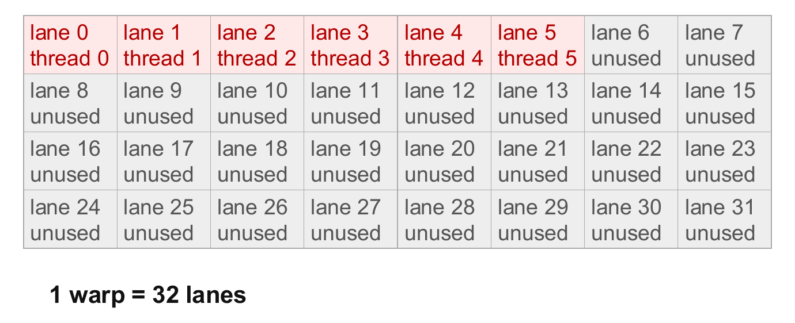

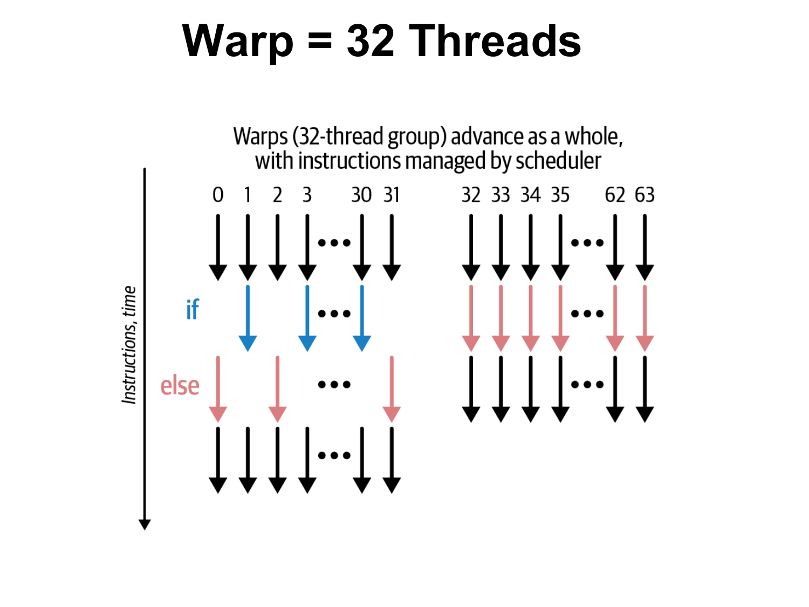
Step 5: divergence in a branch第 5 步：分支中的分歧
A warp diverges when its lanes take different paths. The next example names the lanes of the block above.当线程束的各通道走了不同路径时，线程束就会分歧。下一个例子给出上面那个块中各通道的具体情况。
Practice练习
Q1. (Calculation) Give the number of threads, the number of warps and the lane fill for (a) block \((3,2,1)\) with grid \((4,3,2)\), (b) block \((8,4,1)\) with grid \((4,3,2)\), (c) block \((8,8,1)\) with grid \((4,3,2)\) and (d) block \((3,2,1)\) with grid \((4,3,1)\). What do (a) and (b) show?Q1. （计算） 给出 (a) 线程块为 \((3,2,1)\)、网格为 \((4,3,2)\)，(b) 线程块为 \((8,4,1)\)、网格为 \((4,3,2)\)，(c) 线程块为 \((8,8,1)\)、网格为 \((4,3,2)\)，以及 (d) 线程块为 \((3,2,1)\)、网格为 \((4,3,1)\) 各情形下的线程数、线程束数与通道填充率。(a) 和 (b) 说明了什么？
Answer
Use \(N_{\text{blk}}=G_xG_yG_z\), \(T=B_xB_yB_z\), \(N_{\text{thr}}=N_{\text{blk}}T\), \(N_{\text{warp}}=N_{\text{blk}}\lceil T/32\rceil\) and lane fill \(=N_{\text{thr}}/(32N_{\text{warp}})\).使用 \(N_{\text{blk}}=G_xG_yG_z\)、\(T=B_xB_yB_z\)、\(N_{\text{thr}}=N_{\text{blk}}T\)、\(N_{\text{warp}}=N_{\text{blk}}\lceil T/32\rceil\) 以及通道填充率 \(=N_{\text{thr}}/(32N_{\text{warp}})\)。
| Launch启动 | Blocks线程块数 | \(T\) | Threads线程数 | Warps线程束数 | Lane fill通道填充率 |
|---|---|---|---|---|---|
| (a) | 24 | 6 | 144 | 24 | \(144/768=18.75\%\) |
| (b) | 24 | 32 | 768 | 24 | \(768/768=100\%\) |
| (c) | 24 | 64 | 1,536 | 48 | \(1{,}536/1{,}536=100\%\) |
| (d) | 12 | 6 | 72 | 12 | \(72/384=18.75\%\) |
(a) is the launch of this section: 144 threads in 24 partly filled warps. (a) and (b) have the same 24 warps, but (b) has \(768/144=5.3\) times as many threads, because each of its warp instructions serves 32 lanes instead of 6. Halving the grid in (d) halves the warps and the threads but not the lane fill, which depends only on \(T\).(a) 即为本节的启动：144 个线程分布在 24 个未填满的线程束中。(a) 与 (b) 有相同的 24 个线程束，但 (b) 的线程数是 (a) 的 \(768/144=5.3\) 倍，因为其每条线程束指令服务 32 个通道，而非 6 个。在 (d) 中把网格减半，线程束和线程数都减半，但通道填充率不变，它只取决于 \(T\)。
易错：warp 数按 block 逐个算，不能用总线程数除以 32。
Q2. (Code reading: divergence and masks) A kernel is launched with block \((3,2)\), which is one warp with lanes 0–5 in use. For each condition give the lanes that take the true path and the active masks of both paths: (a) threadIdx.y == 1, (b) threadIdx.x < 2, (c) blockIdx.x == 0. (d) Which conditions make a warp execute both paths? (e) Why is if (threadIdx.y == 1) __syncthreads(); wrong?Q2. （读代码：分歧与掩码） 一个核函数以线程块 \((3,2)\) 启动，它是一个线程束，其中通道 0–5 在使用。对每个条件，给出走真分支的通道以及两条路径的活动掩码：(a) threadIdx.y == 1，(b) threadIdx.x < 2，(c) blockIdx.x == 0。(d) 哪些条件会使线程束同时执行两条路径？(e) 为什么 if (threadIdx.y == 1) __syncthreads(); 是错误的？
Answer
The lane of a thread is its local ID \(t=t_x+3t_y\).线程的通道号就是其局部 ID \(t=t_x+3t_y\)。
(a) \(t_y=1\) gives \(t=3,4,5\). Lanes 3, 4, 5 take the true path (mask \(2^3+2^4+2^5=56=\) 0x38) and lanes 0, 1, 2 the other path (mask \(7=\) 0x07).(a) \(t_y=1\) 得到 \(t=3,4,5\)。通道 3、4、5 走真分支（掩码为 \(2^3+2^4+2^5=56=\) 0x38），通道 0、1、2 走另一分支（掩码为 \(7=\) 0x07）。
(b) \(t_x\in\{0,1\}\) gives \(t=0,1,3,4\). Lanes 0, 1, 3, 4 take the true path (mask \(1+2+8+16=27=\) 0x1B) and lanes 2 and 5 the other path (mask \(4+32=36=\) 0x24).(b) \(t_x\in\{0,1\}\) 得到 \(t=0,1,3,4\)。通道 0、1、3、4 走真分支（掩码为 \(1+2+8+16=27=\) 0x1B），通道 2 和 5 走另一分支（掩码为 \(4+32=36=\) 0x24）。
(c) blockIdx.x is the same for all threads of a block. In the blocks with \(b_x=0\) all six lanes take the true path (mask 0x3F), and in the other blocks none does: no warp splits.(c) blockIdx.x 对线程块的所有线程都相同。在满足 \(b_x=0\) 的线程块中，六个通道都走真分支（掩码为 0x3F），而在其他线程块中没有任何通道走真分支：线程束不会分裂。
(d) Conditions (a) and (b) split the warp, so it executes both paths one after the other. Condition (c) does not.(d) 条件 (a) 和 (b) 会使线程束分裂，因此它先后执行两条路径。条件 (c) 则不会。
(e) The threads with \(t_y=0\) (lanes 0–2) never reach the barrier, while lanes 3–5 wait for them, so the block can hang. A barrier needs a condition that is the same for the whole block.(e) 满足 \(t_y=0\) 的线程（通道 0–2）永远到达不了栅障，而通道 3–5 会一直等待它们，因此线程块可能挂起。栅障需要一个对整个线程块都相同的条件。
Interpretation: a condition diverges only if it depends on the position inside the block; a condition on blockIdx alone is the same for every lane of the warp.解读：只有当条件取决于线程块内的位置时，分歧才会发生；仅依赖 blockIdx 的条件对线程束中的每个通道都相同。
思路：先把 \((t_x,t_y)\) 换成 \(t=t_x+3t_y\)，\(t\) 就是 lane。
Q3. (Calculation, warps and lanes) A kernel is launched with grid(10) and block(20,3). (a) How many warps does a block have, and how many lanes are idle? (b) Find the warp and the lane of the thread \(\text{threadIdx}=(7,2)\) in block 3. (c) What are its myID and \(\text{myID}\bmod32\), and why is the second number not the lane? (d) Every block executes if (threadIdx.y == 0) { ... }. In which warps does the branch diverge?Q3. （计算，线程束与通道） 某核函数以 grid(10) 和 block(20,3) 启动。（a）每个线程块有多少个线程束，有多少个通道空闲？（b）求线程块 3 中线程 \(\text{threadIdx}=(7,2)\) 的线程束和通道。（c）它的 myID 和 \(\text{myID}\bmod32\) 分别是多少？为什么第二个数不是通道号？（d）每个线程块都执行 if (threadIdx.y == 0) { ... }。这一分支在哪些线程束中发生分歧？
Answer
(a) \(T=20\cdot3=60\), so a block has \(\lceil60/32\rceil=2\) warps with \(64-60=4\) idle lanes. Warp 1 holds only the 28 threads \(t=32,\dots,59\).（a）\(T=20\cdot3=60\)，因此每个线程块有 \(\lceil60/32\rceil=2\) 个线程束，其中有 \(64-60=4\) 个通道空闲。线程束 1 只包含 28 个线程 \(t=32,\dots,59\)。
(b) \(t=7+20\cdot2=47\), so the warp is \(\lfloor47/32\rfloor=1\) and the lane is \(47\bmod32=15\).（b）\(t=7+20\cdot2=47\)，因此该线程位于线程束 \(\lfloor47/32\rfloor=1\)，通道为 \(47\bmod32=15\)。
(c) \(\text{myID}=3\cdot60+47=227\) and \(227\bmod32=3\ne15\). \(T=60\) is not a multiple of 32: block 3 starts at the ID \(180=5\cdot32+20\), which shifts every remainder by 20, and \((20+15)\bmod32=3\).（c）\(\text{myID}=3\cdot60+47=227\) 和 \(227\bmod32=3\ne15\)。\(T=60\) 不是 32 的倍数：线程块 3 从 ID \(180=5\cdot32+20\) 开始，这使每个余数都偏移了 20，并且 \((20+15)\bmod32=3\)。
(d) The row \(t_y=0\) is \(t=0,\dots,19\), all in warp 0, but warp 0 also holds \(t=20,\dots,31\) from the row \(t_y=1\). So warp 0 has 20 lanes with a true condition and 12 with a false one: it diverges. Warp 1 holds \(t=32,\dots,59\) (rows 1 and 2), where the condition is false for every lane, so it does not diverge.（d）第 \(t_y=0\) 行为 \(t=0,\dots,19\)，全部位于线程束 0 中，但线程束 0 还包含第 \(t_y=1\) 行的 \(t=20,\dots,31\)。因此线程束 0 中有 20 个通道的条件为真，12 个通道的条件为假：它发生分歧。线程束 1 包含 \(t=32,\dots,59\)（第 1 行和第 2 行），其中每个通道的条件都为假，因此它不会发生分歧。
Interpretation: when the block width is not a multiple of 32, rows straddle warps, and a branch on threadIdx.y can split a warp.解读：当线程块宽度不是 32 的倍数时，行会跨越线程束边界，而针对 threadIdx.y 的分支可能会拆分一个线程束。
思路：warp 和 lane 只由块内编号 t 决定，不要用 myID。
Blocks on SMs: scheduling and occupancy ★★★线程块在 SM 上的调度与占用率 ★★★
Goal. Say how blocks are given to the processors of a GPU, what a program may and may not assume about their order, and compute the occupancy of an SM from its limits.目标。 说明块是怎样分配给 GPU 处理器的，程序可以假定和不能假定它们的执行顺序，并根据 SM 的限制算出它的占用率。
Step 1: where and when blocks run第 1 步：块在哪里、何时运行
The GPU assigns each block to an SM. Four rules follow:GPU 把每个块分配给一个 SM。由此得出四条规则：
- Independent, in any order. Blocks are assigned to SMs in any order, whenever an SM has room. A program must not assume that block 0 runs before block 1, or that two blocks run at the same time.**相互独立，顺序任意。**线程块只要 SM 有空位，就以任意顺序分配到 SM 上。程序不得假设线程块 0 先于线程块 1 运行，也不得假设两个线程块同时运行。
- One SM per block. A block stays on its SM until it has finished.**每块只在一个 SM 上。**线程块在其 SM 上一直运行，直至结束。
- Several blocks per SM if its registers, shared memory and thread and block slots allow.每个 SM 可容纳多个线程块，前提是其寄存器、共享内存以及线程与线程块槽位允许。
- Automatic scalability. The same grid runs on a GPU with few SMs and on one with many.**自动可扩展。**同一个网格既可以在 SM 较少的 GPU 上运行，也可以在 SM 较多的 GPU 上运行。
A dependency between blocks needs a second kernel launch, because the end of a kernel is a barrier for the whole grid. Latency hiding by warp switching: Section 11.4.线程块之间的依赖需要第二次核函数启动，因为核函数的结束对整个网格构成栅障。通过线程束切换隐藏延迟见第 11.4 节。
Step 2: occupancy第 2 步：占用率
An SM hides waiting times by switching between its resident warps, so it is useful to have many of them. Occupancy（占用率）is the share of the warp slots of an SM that are filled. The number of resident blocks \(R\) is set by the scarcest resource: for each of the four limits, divide what the SM has by what one block needs, round down, and take the smallest result. Tiny example: an SM with 2048 thread slots and blocks of 256 threads fits \(2048/256=8\) blocks by this limit alone.SM 通过在驻留线程束之间切换来隐藏等待时间，所以拥有较多的驻留线程束是有好处的。占用率是 SM 中已被占用的线程束槽位所占的比例。驻留块数 \(R\) 由最紧缺的资源决定：对四个限制中的每一个，用 SM 拥有的量除以一个块需要的量，向下取整，然后取其中最小的结果。小例子：一个 SM 有 2048 个线程槽位，每块 256 个线程，仅按这一项限制，可以放下 \(2048/256=8\) 个块。
occupancy = resident warps ÷ maximum warps of the SM占用率 = 驻留线程束数 ÷ SM 的最大线程束数
Step 3: lane fill is not occupancy第 3 步：通道填充率不等于占用率
Lane fill and occupancy measure different things. Lane fill says how much of each issued instruction is used. Occupancy says how many warps the scheduler can choose from. Take the SM above and assume that registers and shared memory do not limit:通道填充率和占用率衡量的是不同的东西。通道填充率说明每条发出的指令有多少被用到。占用率说明调度器能从多少个线程束中挑选。以上面的 SM 为例，并假设寄存器和共享内存都不构成限制：
| Blocks on the SMSM 上的线程块数 | Resident warps驻留线程束 | Occupancy占用率 | Lane fill通道填充率 |
|---|---|---|---|
| 1 block of 256 threads1 个线程块，含 256 个线程 | 8 | \(8/64=12.5\%\) | \(32/32=100\%\) |
| 32 blocks of 6 threads (the block limit)32 个线程块，每块 6 个线程（达到线程块上限） | 32 | \(32/64=50\%\) | \(6/32=18.75\%\) |
The share of thread slots that hold a thread is occupancy \(\times\) lane fill. In the second row it is \(0.5\times0.1875=0.094=9.4\%\): of the 2,048 thread slots, \(32\times6=192\) hold a thread.有线程的线程槽位所占比例为：占用率 \(\times\) 通道填充率。在第二行中，它是 \(0.5\times0.1875=0.094=9.4\%\)：在 2,048 个线程槽位中，有 \(32\times6=192\) 个有线程。
Practice练习
Q1. (Calculation: occupancy) Use the SM limits of the example above (2048 threads, 64 warps, 32 blocks, 65,536 registers, 48 KB shared memory). A kernel uses 256 threads per block, 32 registers per thread and 20 KB of shared memory per block. Find the resident blocks, the occupancy and the limiting factor.Q1. （计算：占用率） 使用上述示例中的 SM 上限（2048 个线程、64 个线程束、32 个线程块、65,536 个寄存器、48 KB 共享内存）。某核函数每块使用 256 个线程、每个线程 32 个寄存器，每块 20 KB 共享内存。求驻留线程块数、占用率以及限制因素。
Answer
Threads: \(2048/256=8\). Block slots: \(32\). Registers: \(65{,}536/(32\cdot256)=8\). Shared memory: \(\lfloor48/20\rfloor=2\).线程：\(2048/256=8\)。线程块槽位：\(32\)。寄存器：\(65{,}536/(32\cdot256)=8\)。共享内存：\(\lfloor48/20\rfloor=2\)。
\(R=\min(8,32,8,2)=2\) blocks. Active warps: \(2\times8=16\). Occupancy: \(16/64=25\%\). Shared memory is the limiting factor. Reducing it to 12 KB per block would allow 4 blocks (50%), and to 6 KB would allow 8 blocks (100%).\(R=\min(8,32,8,2)=2\) 个线程块。活动线程束：\(2\times8=16\)。占用率：\(16/64=25\%\)。共享内存是限制因素。若每块共享内存减少到 12 KB，则可容纳 4 个线程块（50%）；减少到 6 KB，则可容纳 8 个线程块（100%）。
Q2. (True or false, justify) "Block 1 may read a value that block 0 wrote earlier in the same launch, because block 0 has the smaller index."Q2. （判断，并说明理由） “线程块 1 可能读取到线程块 0 在同一次启动中更早写入的值，因为线程块 0 的索引更小。”
Answer
False. Blocks are scheduled independently and in any order, and some blocks may not even have started when others run. Block 1 can run before block 0, or at the same time, so it may read an old value, and if it waits for block 0 the kernel can hang. The fix is to split the work into two kernel launches (the end of the first kernel is a barrier for the whole grid), or to keep all communicating threads inside one block and use __syncthreads().错误。线程块是独立调度、且顺序任意的，有些线程块在其他线程块运行时甚至可能尚未开始。线程块 1 可能先于或与线程块 0 同时运行，因此它可能读到旧值；如果它等待线程块 0，核函数就可能挂起。解决办法是把工作拆分为两次核函数启动（第一个核函数的结束就是整个网格的栅障），或者让所有需要通信的线程都位于同一线程块内，并使用 __syncthreads()。
易错：块号小不等于先执行。
Q3. (True or false, justify) "If every warp of a kernel is full, the SM occupancy is 100%, and 100% occupancy means that all lanes are active." Use the SM limits of the example above and assume that registers and shared memory do not limit. (a) Eight blocks of 128 threads run on a GPU with 8 SMs, one block per SM: give the occupancy and the lane fill. (b) Blocks of 40 threads fill an SM up to the block limit: give the occupancy and the lane fill. (c) What fraction of the 2,048 thread slots holds a thread in (b)?Q3. （判断对错并说明理由） “若核函数的每个线程束都是满的，则 SM 占用率为 100%，而 100% 的占用率意味着所有通道都处于活动状态。”使用上述示例中的 SM 上限，并假设寄存器和共享内存不构成限制。(a) 在一块含 8 个 SM 的 GPU 上运行 8 个每块 128 个线程的线程块，每个 SM 一个线程块：求占用率和通道填充率。(b) 每块 40 个线程的线程块填满一个 SM，直到达到线程块上限：求占用率和通道填充率。(c) 在 (b) 中，2,048 个线程槽位中有多大比例持有线程？
Answer
Both statements are false: lane fill counts the active lanes per warp, occupancy counts the resident warps per SM.两个说法都不成立：通道填充率统计每个线程束中的活动通道数，占用率统计每个 SM 的驻留线程束数。
(a) \(\lceil128/32\rceil=4\) warps per block, all full, so the lane fill is 100%. Each SM holds one block, so the occupancy is \(4/64=6.25\%\).(a) 每个线程块有 \(\lceil128/32\rceil=4\) 个线程束，且都是满的，因此通道填充率为 100%。每个 SM 持有一个线程块，因此占用率为 \(4/64=6.25\%\)。
(b) \(\lceil40/32\rceil=2\) warps per block. The limits allow \(\min(\lfloor2048/40\rfloor,32)=\min(51,32)=32\) blocks, so \(32\cdot2=64\) warps and the occupancy is \(64/64=100\%\). The lane fill is \(40/64=62.5\%\), because the second warp of each block has only 8 active lanes.(b) 每个线程块有 \(\lceil40/32\rceil=2\) 个线程束。上限允许 \(\min(\lfloor2048/40\rfloor,32)=\min(51,32)=32\) 个线程块，因此共 \(32\cdot2=64\) 个线程束，占用率为 \(64/64=100\%\)。通道填充率为 \(40/64=62.5\%\)，因为每个线程块的第二个线程束只有 8 个活动通道。
(c) \(32\cdot40=1{,}280\) threads occupy \(1280/2048=62.5\%\) of the slots, which equals occupancy \(\times\) lane fill \(=1.0\cdot0.625\).(c) \(32\cdot40=1{,}280\) 个线程占据了 \(1280/2048=62.5\%\) 个槽位，这恰好等于占用率 \(\times\) 通道填充率 \(=1.0\cdot0.625\)。
Interpretation: occupancy counts warps and lane fill counts the lanes inside them, so neither implies the other.解读：占用率统计的是线程束，通道填充率统计的是线程束内部的通道，因此两者都推不出对方。
易错：占用率数的是 warp，不是线程有没有填满。
Hello CUDA, qualifiers and synchronization ★★Hello CUDA、限定符与同步 ★★
Goal. Read and complete a small CUDA program, know which function qualifier says where a function runs and who may call it, and explain what the host has to wait for.目标。 阅读并补全一段小型 CUDA 程序，知道哪个函数限定符说明函数在哪里运行、谁可以调用它，并解释主机必须等待什么。
Step 1: the first program第 1 步：第一个程序
The program below launches one block of 10 threads, and each thread prints a line.下面的程序启动一个含 10 个线程的块，每个线程打印一行。
// File : hello.cu
#include <stdio.h>
#include <cuda.h>
__global__ void hello() // a kernel: always void
{
printf("Hello world\n"); // device printf: CC 2.0 and above
}
int main()
{
hello<<<1,10>>>(); // 1 block of 10 threads
cudaDeviceSynchronize(); // blocks until the CUDA kernel terminates
return 1; // original program: exit status 1
}
What happens, step by step:逐步说明会发生什么：
- The launch creates 10 GPU threads (not host threads). They form one warp with 10 active and \(32-10=22\) unused lanes.这次启动创建 10 个 GPU 线程（不是主机线程）。它们组成一个线程束，其中 10 个通道有活动线程，\(32-10=22\) 个通道未被使用。
- The launch is asynchronous: it returns as soon as the work is queued.这次启动是异步的：一旦工作排入队列，它就立即返回。
cudaDeviceSynchronize()waits until the kernel has finished and flushes the buffer of the deviceprintf.cudaDeviceSynchronize()会等到核函数结束，并刷新设备printf的缓冲区。- One line is printed per thread, in unspecified order.每行打印一行，行的顺序不确定。
- Launch errors come from
cudaGetLastError(). Execution errors come from the return value ofcudaDeviceSynchronize().启动错误来自cudaGetLastError()。执行错误则来自cudaDeviceSynchronize()的返回值。
Step 2: where does a function run?第 2 步：函数在哪里运行？
A qualifier in front of a function says on which processor it runs and from where it may be called.函数前面的限定符说明它在哪个处理器上运行，以及可以从哪里调用它。
| Qualifier限定符 | Runs on运行位置 | Called from调用来源 | Notes说明 |
|---|---|---|---|
__host__ |
host主机 | host主机 | the default for ordinary functions, so it is usually omitted普通函数的默认设置，因此通常省略 |
__device__ |
device设备 | device (a kernel or another device function)设备（核函数或另一个设备函数） | cannot be called from the host不能从主机调用 |
__global__ |
device设备 | host; the device too from CC 3.5 (dynamic parallelism)主机；从 CC 3.5 起设备也可调用（动态并行） | a kernel; return type void; launched with <<<>>>核函数；返回类型 void；以 <<<>>> 启动 |
__host__ __device__ |
both两者皆可 | both两者皆可 | the compiler generates two versions of the function编译器为该函数生成两个版本 |
Step 3: barriers and the compute capability第 3 步：屏障与计算能力
A barrier is a point where threads wait until all of them have arrived. __syncthreads() is a barrier for the threads of one block, and every thread of the block must reach it. It does not order different blocks. Only the end of the kernel does.屏障是线程等待直到全部到达的一个点。__syncthreads() 是针对同一个块内线程的屏障，块内的每个线程都必须到达它。它不能约束不同的块，只有核函数结束时才会做到这一点。
The compute capability（CC, 计算能力）is a hardware version number major.minor, for example 3.5 or 7.0. It fixes the features and the launch limits of a GPU (device printf needs CC 2.0). It is not a speed rating and not a CUDA Toolkit release.计算能力（CC）是一个硬件版本号 major.minor，例如 3.5 或 7.0。它决定了 GPU 的功能和启动限制（设备 printf 需要 CC 2.0）。它不是速度等级，也不是 CUDA Toolkit 的发布版本。
Practice练习
Q1. (Output) The kernel hello that executes printf("Hello from block %u, thread %u\n", blockIdx.x, threadIdx.x); is launched as hello<<<2,3>>>(). Which lines are printed? What can and cannot be said about their order?Q1. （输出） 执行 printf("Hello from block %u, thread %u\n", blockIdx.x, threadIdx.x); 的核函数 hello 以 hello<<<2,3>>>() 的方式启动。会打印哪些行？关于它们的顺序，能说什么，不能说什么？
Answer
Six lines, one for each pair (block \(b\in\{0,1\}\), thread \(t\in\{0,1,2\}\)): Hello from block b, thread t, each exactly once.共六行，每个（线程块 \(b\in\{0,1\}\)，线程 \(t\in\{0,1,2\}\)）组合各一行：Hello from block b, thread t，每个恰好出现一次。
Nothing is guaranteed about the order: the line order is unspecified. For example, the line of block 1, thread 0 may appear before the line of block 0, thread 2, and lines of one warp need not come out in thread order. Only the set of lines is certain.关于顺序没有任何保证：行的顺序不确定。 例如，线程块 1、线程 0 的那一行可能出现在线程块 0、线程 2 的那一行之前，而且同一线程束的各行也不必按线程顺序输出。只有输出行的集合是确定的。
Q2. (What happens?) (a) What do you expect if cudaDeviceSynchronize() is removed from the original program? (b) What happens with hello<<<1,2048>>>()? Does the original program notice?Q2. （会发生什么？） (a) 若从原程序中删去 cudaDeviceSynchronize()，你预期会发生什么？(b) 使用 hello<<<1,2048>>>() 时会发生什么？原程序能察觉吗？
Answer
(a) The launch returns immediately and main returns. The process can end before the kernel has finished and before the printf buffer is flushed, so typically no Hello world line appears. The host needs the synchronization for completion and output visibility.（a）启动会立即返回，main 也随之返回。进程可能在核函数执行完毕、printf 缓冲区被刷新之前就结束，因此通常不会出现 Hello world 的输出行。主机需要通过同步来保证执行完成与输出可见性。
(b) 2048 threads exceed the limit of 1024 (512 on CC 1.x), so the launch is rejected with invalid configuration argument; no kernel runs and nothing is printed. The original program ignores the error and still returns 1, so nothing distinguishes this failure from success. A correct main reads the error with cudaGetLastError() and returns nonzero.(b) 2048 个线程超过了 1024 的上限（CC 1.x 上为 512），因此启动会被 invalid configuration argument 拒绝；核函数不会运行，也不会打印任何内容。原程序忽略了该错误并仍返回 1，因此此次失败与成功无法区分。正确的 main 应通过 cudaGetLastError() 读取错误，并返回非零值。
Terms to recognise ★需要认识的术语 ★
| Term术语 | What to know要知道什么 |
|---|---|
| Compute capability, SP计算能力，SP | CC: hardware feature version; equal CC can mean different core counts. SP: streaming processor, one scalar lane ("core").CC：硬件功能版本；相同的 CC 可能对应不同的核心数。SP：流处理器，即一个标量通道（“核心”）。 |
| SIMT | Single instruction, multiple threads: a warp issues one instruction for all its active lanes.单指令多线程：线程束为其所有活动通道发射一条指令。 |
| Grid-stride loop网格步长循环 | for (i = id; i < n; i += blockDim.x * gridDim.x): a fixed grid processes any \(n\), with coalesced accesses.for (i = id; i < n; i += blockDim.x * gridDim.x)：固定网格可处理任意 \(n\)，且访存合并。 |
| Cooperative groups协作组 | Grid-wide barrier this_grid().sync(); needs a cooperative launch.全网格栅障 this_grid().sync()；需要协作式启动。 |
| Independent thread scheduling独立线程调度 | Since Volta (CC 7.0) each thread has its own program counter; no lockstep assumption, use __syncwarp(mask).自 Volta（CC 7.0）起，每个线程都有自己的程序计数器；不再假设步调一致，应使用 __syncwarp(mask)。 |
| OpenCL namesOpenCL 术语对应 | work-item = thread, work-group = block, NDRange = grid; get_global_id(0) = global index.work-item 即线程，work-group 即线程块，NDRange 即网格；get_global_id(0) 即全局索引。 |
cudaGetDeviceProperties |
Fills cudaDeviceProp: major, minor, maxThreadsPerBlock, warpSize, multiProcessorCount.填充 cudaDeviceProp：major、minor、maxThreadsPerBlock、warpSize、multiProcessorCount。 |
| Useful lane fraction有效通道比例 | \(N/(32\lceil N/T\rceil\lceil T/32\rceil)\): items divided by the lanes of all warps; surplus threads count as unused.\(N/(32\lceil N/T\rceil\lceil T/32\rceil)\)：元素数除以全部线程束的通道数；多余线程计为未使用。 |
Exam-style questions考试题型练习
Q1. (Calculation: launch configuration) A kernel adds two vectors of \(N=2{,}000{,}000\) floats, one element per thread, with a 1-D grid of blocks of \(B=192\) threads. (a) How many blocks and threads are launched, and how many threads are surplus? (b) How many warps does a block have, and what happens in the last block? (c) Is the launch legal on CC 1.x? (d) For \(N=2^{26}\) and \(B=1024\) on CC 2.x, is a 1-D launch legal? (e) Write the launch statement and the kernel's index line.Q1. （计算：启动配置）一个核函数对两个各含 \(N=2{,}000{,}000\) 个浮点数的向量做加法，每个线程处理一个元素，使用每块 \(B=192\) 个线程的一维网格。（a）启动了多少个线程块和线程，多少个线程是多余的？（b）每个线程块有多少个线程束？最后一个线程块会出现什么情况？（c）该启动在 CC 1.x 上是否合法？（d）对于 \(N=2^{26}\) 和 \(B=1024\)，在 CC 2.x 上一维启动是否合法？（e）写出启动语句和核函数中的索引行。
Answer
(a) \(G=\lceil2{,}000{,}000/192\rceil=10{,}417\), because \(2{,}000{,}000/192=10{,}416.67\). Threads: \(10{,}417\times192=2{,}000{,}064\), so \(64\) are surplus.（a）\(G=\lceil2{,}000{,}000/192\rceil=10{,}417\)，因为 \(2{,}000{,}000/192=10{,}416.67\)。线程数为 \(10{,}417\times192=2{,}000{,}064\)，因此多余的线程有 \(64\) 个。
(b) \(192/32=6\) warps per block, with no unused lane (192 is a multiple of 32). The last block (index 10,416) starts at element \(10{,}416\times192=1{,}999{,}872\) and has \(2{,}000{,}000-1{,}999{,}872=128\) valid threads: 4 warps with valid data and 2 completely idle warps (\(64\) surplus threads). The guard if (i < n) keeps them from writing outside the vector.（b）每个线程块有 \(192/32=6\) 个线程束，且没有未使用的通道（192 是 32 的倍数）。最后一个线程块（索引为 10,416）从元素 \(10{,}416\times192=1{,}999{,}872\) 开始，有 \(2{,}000{,}000-1{,}999{,}872=128\) 个有效线程：4 个线程束持有有效数据，2 个线程束完全空闲（共 \(64\) 个多余线程）。保护条件 if (i < n) 使它们不会写到向量之外。
(c) The grid \(10{,}417\le65{,}535\) and the block \(192\le512\), so the launch is legal on every CC.（c）网格 \(10{,}417\le65{,}535\) 和线程块 \(192\le512\) 均在限制之内，因此该启动在所有 CC 上都合法。
(d) \(G=2^{26}/2^{10}=65{,}536\), one more than the maximum grid x of \(65{,}535\) on CC 2.x: the launch is illegal. It is legal from CC 3.x (\(G_x\le2^{31}-1\)). On CC 1.x the block of 1024 threads would be illegal anyway (limit 512).(d) \(G=2^{26}/2^{10}=65{,}536\)，比 CC 2.x 上网格 x 方向的最大值 \(65{,}535\) 多一个：该启动非法。自 CC 3.x 起合法（\(G_x\le2^{31}-1\)）。在 CC 1.x 上，1024 个线程的线程块本身就是非法的（上限为 512）。
(e) vecAdd<<<(N + 191) / 192, 192>>>(d_a, d_b, d_c, N); and in the kernel int i = blockIdx.x * blockDim.x + threadIdx.x; if (i < n) c[i] = a[i] + b[i];.（e）启动语句为 vecAdd<<<(N + 191) / 192, 192>>>(d_a, d_b, d_c, N);，核函数中为 int i = blockIdx.x * blockDim.x + threadIdx.x; if (i < n) c[i] = a[i] + b[i];。
思路：向上取整、检查两类上限、最后一块里有多余线程。
Q2. (2-D mapping and warps) An image of \(1920\times1080\) pixels is processed with one thread per pixel. (a) Give the grid for blocks of \((32,8)\) and check the limits on CC 1.x and 2.x. (b) How many warps per block and how many surplus threads? (c) Write the index computation.Q2. （二维映射与线程束）一幅 \(1920\times1080\) 像素的图像，每个像素由一个线程处理。(a) 给出每块 \((32,8)\) 线程时的网格，并检查 CC 1.x 和 2.x 上的限制。(b) 每个线程块有多少线程束，有多少多余线程？(c) 写出索引计算。
Answer
(a) The block has \(32\cdot8=256\) threads, with \(32\le512\) and \(8\le512\): legal on all CCs. The grid is \((\lceil1920/32\rceil,\lceil1080/8\rceil)=(60,135)\), that is \(8100\) blocks, far below 65,535: legal on all CCs.（a）线程块有 \(32\cdot8=256\) 个线程，尺寸为 \(32\le512\) 与 \(8\le512\)：在所有 CC 上都合法。网格为 \((\lceil1920/32\rceil,\lceil1080/8\rceil)=(60,135)\)，即 \(8100\) 个线程块，远低于 65,535：在所有 CC 上都合法。
(b) \(256/32=8\) warps per block. The grid has \(8100\times256=2{,}073{,}600\) threads, exactly the number of pixels (\(1920\cdot1080\)): no surplus threads. The guard is still needed for other image sizes.（b）每个线程块有 \(256/32=8\) 个线程束。网格共有 \(8100\times256=2{,}073{,}600\) 个线程，恰好等于像素数（\(1920\cdot1080\)）：没有多余线程。对于其他图像尺寸，仍然需要保护条件。
(c) col = blockIdx.x * blockDim.x + threadIdx.x; row = blockIdx.y * blockDim.y + threadIdx.y; if (row < H && col < W) idx = row * W + col;.
Q3. (Occupancy) Assume an SM with at most 2048 resident threads (64 warps), 32 resident blocks and 65,536 registers. A kernel uses blocks of 128 threads, 64 registers per thread and no shared memory. (a) How many blocks are resident, what is the occupancy, and what limits it? (b) What is the largest number of registers per thread that gives 100% occupancy?Q3. （占用率）假设一个 SM 最多驻留 2048 个线程（64 个线程束）、32 个驻留线程块和 65,536 个寄存器。某核函数使用每块 128 个线程、每个线程 64 个寄存器，且不使用共享内存。(a) 驻留线程块数是多少，占用率是多少，由什么因素限制？(b) 要使占用率达到 100%，每个线程最多可使用多少个寄存器？
Answer
(a) Threads: \(2048/128=16\) blocks. Block slots: \(32\). Registers: \(65{,}536/(64\cdot128)=8\) blocks. \(R=\min(16,32,8)=8\), so there are \(8\times4=32\) active warps and the occupancy is \(32/64=50\%\). The registers are the limiting factor.（a）线程数限制：\(2048/128=16\) 个线程块。线程块槽位：\(32\)。寄存器：\(65{,}536/(64\cdot128)=8\) 个线程块。\(R=\min(16,32,8)=8\)，因此共有 \(8\times4=32\) 个活动线程束，占用率为 \(32/64=50\%\)。寄存器是限制因素。
(b) 100% occupancy needs \(R=16\) blocks, that is \(65{,}536/16=4096\) registers per block, so at most \(4096/128=32\) registers per thread.（b）100% 占用率需要 \(R=16\) 个线程块，即每块 \(65{,}536/16=4096\) 个寄存器，因此每个线程最多 \(4096/128=32\) 个寄存器。
思路：先找最紧的资源限制。
Q4. (Concepts) (a) Distinguish compute capability, CUDA Toolkit version and performance. (b) Why can the same CUDA program run on a GPU with 6 SMs and on one with 16 SMs, and what must the program not assume? (c) Explain warp divergence and say when it costs nothing.Q4. （概念）(a) 区分计算能力、CUDA Toolkit 版本与性能。(b) 为什么同一个 CUDA 程序既能在 6 个 SM 的 GPU 上运行，也能在 16 个 SM 的 GPU 上运行？程序不能假设什么？(c) 解释线程束分歧，并说明在什么情况下它不产生代价。
Answer
(a) The compute capability is a hardware feature version (major.minor): it fixes which features, instructions and limits a GPU supports. The CUDA Toolkit version is a software version, the installed tools. Performance depends on the GPU model, the memory system and the kernel workload.(a) 计算能力是硬件功能版本（major.minor）：它决定 GPU 支持的功能、指令和各项上限。CUDA Toolkit 版本是软件版本，即已安装的工具。性能取决于 GPU 型号、内存系统以及核函数的工作负载。
(b) Blocks are independent and are assigned to SMs in any order, so a GPU with more SMs simply runs more blocks at the same time and one with fewer runs them in more rounds. The program must not assume any order or concurrency between blocks, for example by letting one block wait for another, and it should not assume a particular SM count, which it can read with multiProcessorCount.（b）线程块彼此独立，并以任意顺序分配到各个 SM 上，因此 SM 更多的 GPU 只是同时运行更多线程块，SM 较少的 GPU 则分更多轮次运行它们。程序不能假设线程块之间的任何顺序或并发关系，例如让一个线程块等待另一个线程块；也不应假设某个特定的 SM 数量，它可以用 multiProcessorCount 读取该数量。
(c) The 32 threads of a warp execute one instruction at a time (SIMT). If they take different branches, the warp executes the paths one after the other with the other lanes masked off, so its time is the sum of the paths. If all lanes of a warp take the same path, for example when the condition depends on the warp index, nothing extra is paid. Divergence between different warps costs nothing.（c）线程束中的 32 个线程每次执行一条指令（SIMT）。如果它们走向不同的分支，线程束会依次执行各条路径，并屏蔽其他通道，因此其时间为各路径之和。如果线程束的所有通道走的是同一条路径（例如条件依赖于线程束索引），则不产生额外代价。不同线程束之间的分歧不产生任何代价。
Q5. (Thread ID, warps and overflow) A kernel is launched as k<<<dim3(4,5,3), dim3(7,3,2)>>>(a, n). Consider the thread with \(\text{blockIdx}=(3,2,1)\) and \(\text{threadIdx}=(4,1,1)\). (a) How many blocks, threads per block and threads does the launch create? (b) Compute \(b\), \(t\) and myID, and give the IDs that its block owns. (c) Give the warp and the lane of the thread, the number of warps per block and the idle lanes per block. Is \(\text{myID}\bmod32\) the lane? (d) The array has \(n=2{,}500\) elements and the kernel guards with if (id < n). How many threads are idle, which IDs do they have and where are they? (e) The same ID computation is used in a 1-D launch of \(2^{25}\) blocks of 256 threads over an array of \(2^{33}\) floats, with the line uint64_t id = blockIdx.x * blockDim.x + threadIdx.x;. How much memory does the array need? From which blockIdx.x on is the ID wrong, and what ID does block \(2^{24}\) compute? Write the corrected line. (f) How many warps does the whole launch of (a) have, and why is \(\lceil2{,}520/32\rceil=79\) wrong? What is its lane fill?Q5. （线程编号、线程束与溢出）一个核函数以 k<<<dim3(4,5,3), dim3(7,3,2)>>>(a, n) 的方式启动。考虑 \(\text{blockIdx}=(3,2,1)\) 和 \(\text{threadIdx}=(4,1,1)\) 的线程。(a) 本次启动共创建多少个线程块、每块多少线程、共多少线程？(b) 计算 \(b\)、\(t\) 和 myID，并给出其所在线程块拥有的编号。(c) 给出该线程所在的线程束和通道，每个线程块的线程束数，以及每个线程块的空闲通道数。\(\text{myID}\bmod32\) 是通道吗？(d) 数组有 \(n=2{,}500\) 个元素，核函数以 if (id < n) 作为保护条件。有多少线程空闲？它们的编号是多少，位于哪里？(e) 同样的编号计算用于一维启动：\(2^{25}\) 个线程块、每块 256 个线程，处理一个含 \(2^{33}\) 个浮点数的数组，对应语句为 uint64_t id = blockIdx.x * blockDim.x + threadIdx.x;。该数组需要多少内存？从哪个 blockIdx.x 起编号出错，线程块 \(2^{24}\) 计算出的编号是多少？写出修正后的语句。(f) 上述 (a) 中的整个启动共有多少线程束？为什么 \(\lceil2{,}520/32\rceil=79\) 是错误的？其通道填充率是多少？
Answer
(a) Blocks: \(4\cdot5\cdot3=60\). Threads per block: \(T=7\cdot3\cdot2=42\). Threads: \(60\cdot42=2{,}520\), with IDs 0–2,519.（a）线程块：\(4\cdot5\cdot3=60\)。每块线程数：\(T=7\cdot3\cdot2=42\)。线程总数 \(60\cdot42=2{,}520\)，ID 为 0–2,519。
(b) \(b=b_x+G_xb_y+G_xG_yb_z=3+4\cdot2+4\cdot5\cdot1=31\) and \(t=t_x+B_xt_y+B_xB_yt_z=4+7\cdot1+7\cdot3\cdot1=32\). Then \(\text{myID}=bT+t=31\cdot42+32=1{,}334\). Block 31 owns the IDs \(31\cdot42=1{,}302\) to \(1{,}343\).（b）\(b=b_x+G_xb_y+G_xG_yb_z=3+4\cdot2+4\cdot5\cdot1=31\) 和 \(t=t_x+B_xt_y+B_xB_yt_z=4+7\cdot1+7\cdot3\cdot1=32\)。然后是 \(\text{myID}=bT+t=31\cdot42+32=1{,}334\)。线程块 31 拥有的 ID 为 \(31\cdot42=1{,}302\) 至 \(1{,}343\)。
(c) \(w=\lfloor32/32\rfloor=1\) and \(\ell=32\bmod32=0\): the thread is the first lane of the second warp. A block has \(\lceil42/32\rceil=2\) warps, and \(64-42=22\) lanes are idle, all in warp 1, which has only 10 busy lanes. \(\text{myID}\bmod32=1{,}334\bmod32=22\ne0\). Since \(T=42\) is not a multiple of 32, block 31 starts at the ID \(1{,}302\equiv22\pmod{32}\), which shifts every remainder by 22.（c）\(w=\lfloor32/32\rfloor=1\) 和 \(\ell=32\bmod32=0\)：该线程是第二个线程束的第一个通道。每个线程块有 \(\lceil42/32\rceil=2\) 个线程束，\(64-42=22\) 个通道空闲，全部位于线程束 1 中，该线程束只有 10 个活动通道。\(\text{myID}\bmod32=1{,}334\bmod32=22\ne0\)。由于 \(T=42\) 不是 32 的倍数，线程块 31 从 ID \(1{,}302\equiv22\pmod{32}\) 开始，这使每个余数都偏移了 22。
(d) \(2{,}520-2{,}500=20\) threads are idle. Their IDs are 2,500–2,519, all in block 59, the last block: \(2{,}500=59\cdot42+22\), so they are its local threads \(t=22,\dots,41\). The guard makes them skip the access.（d）\(2{,}520-2{,}500=20\) 个线程空闲。它们的 ID 为 2,500–2,519，全部位于线程块 59（最后一个线程块）中：\(2{,}500=59\cdot42+22\)，因此它们是该线程块的局部线程 \(t=22,\dots,41\)。保护条件使它们跳过了访问。
(e) The array has \(2^{33}\cdot4\text{ B}=2^{35}\text{ B}=32\) GiB (\(34.4\) GB). blockIdx.x * blockDim.x is an unsigned 32-bit product and wraps at \(2^{32}\), so the ID is wrong from \(\text{blockIdx.x}\ge2^{32}/256=2^{24}=16{,}777{,}216\) on, which affects half of the \(2^{25}\) blocks. Block \(2^{24}\) computes \(2^{24}\cdot256=2^{32}\equiv0\), so it repeats the IDs 0–255 of block 0 instead of \(2^{32},\dots,2^{32}+255\). The grid itself is legal on CC 3.x, because \(2^{25}\le2^{31}-1\). Corrected line: uint64_t id = uint64_t(blockIdx.x) * blockDim.x + threadIdx.x;.（e）数组有 \(2^{33}\cdot4\text{ B}=2^{35}\text{ B}=32\) GiB（\(34.4\) GB）。blockIdx.x * blockDim.x 是一个无符号 32 位乘积，在 \(2^{32}\) 处回绕，因此 ID 从 \(\text{blockIdx.x}\ge2^{32}/256=2^{24}=16{,}777{,}216\) 起出错，这影响了 \(2^{25}\) 个线程块中的一半。线程块 \(2^{24}\) 计算得到 \(2^{24}\cdot256=2^{32}\equiv0\)，因此它重复了线程块 0 的 ID 0–255，而不是 \(2^{32},\dots,2^{32}+255\)。网格本身在 CC 3.x 上合法，因为 \(2^{25}\le2^{31}-1\)。修正后的语句：uint64_t id = uint64_t(blockIdx.x) * blockDim.x + threadIdx.x;。
(f) Warps are formed inside each block, so \(N_{\text{warp}}=60\cdot\lceil42/32\rceil=60\cdot2=120\), with \(120\cdot32=3{,}840\) lanes. The value \(\lceil2{,}520/32\rceil=79\) would put threads of different blocks into one warp, which CUDA never does. The lane fill is \(2{,}520/3{,}840=65.6\%\).(f) 线程束在每个线程块内部组成，因此 \(N_{\text{warp}}=60\cdot\lceil42/32\rceil=60\cdot2=120\)，每个线程束有 \(120\cdot32=3{,}840\) 个通道。取值 \(\lceil2{,}520/32\rceil=79\) 会把不同线程块的线程放入同一线程束，而 CUDA 从不这样做。通道填充率为 \(2{,}520/3{,}840=65.6\%\)。
思路：先把省略的维度补全；warp 和 lane 用 t，不用 myID；warp 数按 block 逐个算；乘法的第一个乘数要先转成 64 位。
Chapter 13GPU Memory: Spaces, Coalescing and Bank ConflictsGPU 存储：存储空间、合并访存与 bank 冲突
Memory spaces: scope versus placement ★★★存储空间：作用域与放置位置 ★★★
Goal. Name the memory spaces of a GPU program and say for each one which threads can use it and where it physically sits. Then explain why "local" memory is not on chip.目标。 列出 GPU 程序中的各种存储空间，对每一种说明哪些线程能用它，以及它在硬件上放在哪里。然后解释：为什么“本地内存”不在片上？
Step 1: where the memory sits第 1 步：内存位于哪里
Think of the hierarchy from the inside out. The following list names each level and where it is.从里往外看这个存储层次。下面的列表依次列出每一层，以及它的位置。

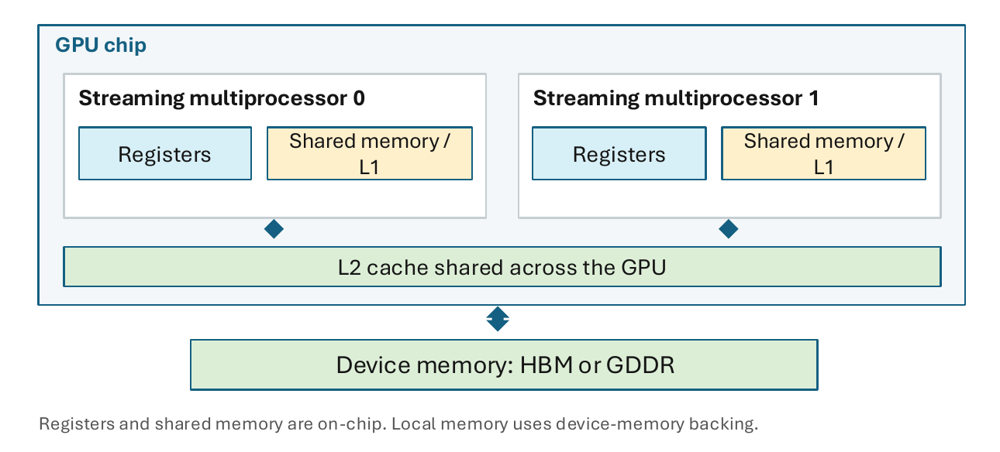
- Registers（寄存器）: the fastest storage. Each thread keeps its own variables in them.**寄存器：**速度最快的存储。每个线程把自己的变量放在寄存器里。
- Shared memory（共享内存）and the L1 cache: a small memory inside each SM that the threads of one block share. All of this is SRAM. L1 and shared memory share one SRAM array, and the split between them is configurable.**共享内存和 L1 缓存：**每个 SM 内部的一小块存储，同一个线程块里的线程共享它。这些都是 SRAM。L1 缓存和共享内存共用同一块 SRAM 阵列，两者的划分比例可以调整。
- L2 cache（二级缓存）: a larger cache on the chip that all SMs share.**L2 缓存：**片上一块更大的缓存，所有 SM 共用。
- Device memory（设备内存）: HBM (High Bandwidth Memory) or GDDR (Graphics DDR) chips outside the die. It is the largest and the slowest level.**设备内存：**硅片之外的 HBM（高带宽内存）或 GDDR（图形用 DDR 内存）芯片。它是容量最大、速度最慢的一层。
| Space / path空间 / 路径 | Physical backing物理存放位置 | Who accesses it访问者 | Typical lifetime典型生命周期 |
|---|---|---|---|
| Registers寄存器 | on-chip register file片上寄存器堆 | one thread单个线程 | thread execution线程执行期间 |
| Local本地 | device memory, cached设备内存，带缓存 | one thread单个线程 | thread execution线程执行期间 |
| Shared共享 | on-chip SRAM片上 SRAM | thread block线程块 | block execution线程块执行期间 |
| Global全局 | HBM / GDDR, cachedHBM / GDDR，带缓存 | GPU threads / peersGPU 线程 / 对等 GPU | allocation to free从分配到释放 |
| Constant常量 | device memory + cache设备内存 + 缓存 | GPU reads, host updatesGPU 读取，主机更新 | CUDA context / symbolCUDA 上下文 / 符号 |
| Texture纹理 | device allocation + cache设备内存分配 + 缓存 | threads via texture object通过纹理对象访问的线程 | resource / object资源 / 对象 |
Step 2: scope versus placement第 2 步：作用域与存放位置
Two different questions can be asked about any piece of data. In words:对于任何一份数据，都可以问两个不同的问题。用文字表述：
scope = which threads may use the data; placement = which silicon stores the data作用域 = 哪些线程可以使用这份数据；存放位置 = 哪一块硅片存储这份数据
The two are independent. Local memory has thread scope (only its owner uses it) but device-memory placement (it is stored off chip). Constant and texture data can be read by every thread of the grid, yet they are ordinary device memory behind special caches. A grid is all the thread blocks of one kernel launch.这两个问题互不影响。本地内存的作用域是线程级的，只有拥有它的线程能用，但它的存放位置是设备内存，存在片外。常量数据和纹理数据，网格中的每个线程都可以读取，但它们本质上仍是普通的设备内存，只是前面多了专用缓存。网格是一次核函数启动中的全部线程块。
The next code block shows where each kind of variable lives.下面的代码块显示每一类变量分别放在哪里。
__constant__ float coeff[16]; // constant memory, written by the host
__global__ void demo(const float *g) { // g points to global memory
__shared__ float tile[256]; // shared memory, one copy per block
int i = blockIdx.x * blockDim.x + threadIdx.x; // automatic variable: register
float hist[64]; // per-thread array: usually local memory
...
}
// host code
float *d_g;
cudaMalloc(&d_g, n * sizeof(float)); // allocate global memory
cudaMemcpyToSymbol(coeff, h_coeff, 16 * sizeof(float)); // write constant memory
cudaFree(d_g); // release global memory
Practice练习
Q1. (Concept) Local memory is private to a thread, like a register. Is it on chip? What does "local" mean, and when does a variable end up there?Q1. （概念） 本地内存与寄存器一样只属于单个线程。它在片上吗？“local”是什么意思？变量在什么情况下会落到本地内存中？
Answer
No. "Local" is the scope: only the owning thread can access it. The backing is device memory behind L1 and L2. A variable is placed there when the compiler spills registers, or when it is an array indexed at run time or a large structure.不在片上。“Local”指的是作用域：只有拥有该变量的线程才能访问它。其底层存放介质是 L1 和 L2 之后的设备内存。当编译器发生寄存器溢出，或变量是运行时索引的数组或较大的结构体时，变量就会被放到那里。
易错：local 是作用域，不是“片上”。
Q2. (Short answer, one step beyond) Every thread applies the same 16 filter coefficients, which the host changes between launches. Which space should hold them, and how does the host update it? What changes for 100,000 coefficients (400 KB)?Q2. （简答，进一步） 每个线程都使用相同的 16 个滤波系数，主机会在两次启动之间修改这些系数。它们应放在哪种存储空间中，主机如何更新？若系数为 100,000 个（400 KB），会有什么变化？
Answer
Constant memory, __constant__ float coeff[16];, updated with cudaMemcpyToSymbol: all lanes read the same address, so one broadcast serves the warp. 400 KB exceeds the 64 KB limit of constant memory, so the coefficients go to global memory, read through the caches or staged tile by tile in shared memory.用常量内存，即 __constant__ float coeff[16];，并通过 cudaMemcpyToSymbol 更新：所有通道读取同一地址，因此一次广播即可服务整个线程束。400 KB 超过了常量内存 64 KB 的上限，因此系数改放到全局内存中，经缓存读取，或按分块逐块暂存到共享内存中。
Coalesced global-memory access ★★★合并的全局内存访问 ★★★
Goal. Count how many memory sectors one warp load touches, and compute the efficiency of a strided access. Then say which access pattern to choose.目标。 数一数一次线程束读取会触及多少个内存扇区，并计算跨步访问的效率。然后说明应该选哪一种访问模式。
Step 1: what coalescing means第 1 步：什么是合并访存
A warp executes a load as one instruction for its 32 lanes. Each lane asks for its own address. The memory system serves the request in sectors: every sector that holds at least one requested byte is fetched in full.线程束执行一次读取时，它的 32 个通道作为一条指令一起发出，每个通道各自请求一个地址。存储系统按扇区响应：只要扇区里有一个被请求的字节，整个扇区都会被取回。
An access is coalesced（合并访问）when the lane addresses fall into few sectors, so that most transferred bytes are useful. For 32 lanes with 4 bytes each, the useful data are 32 × 4 B = 128 B, which is exactly four sectors.当各通道的地址落在很少的扇区里，使得传输的字节大部分都有用时，这次访问就叫合并访问。对于 32 个通道、每个通道 4 字节的情况，有用的数据是 32 × 4 B = 128 B，正好是四个扇区。

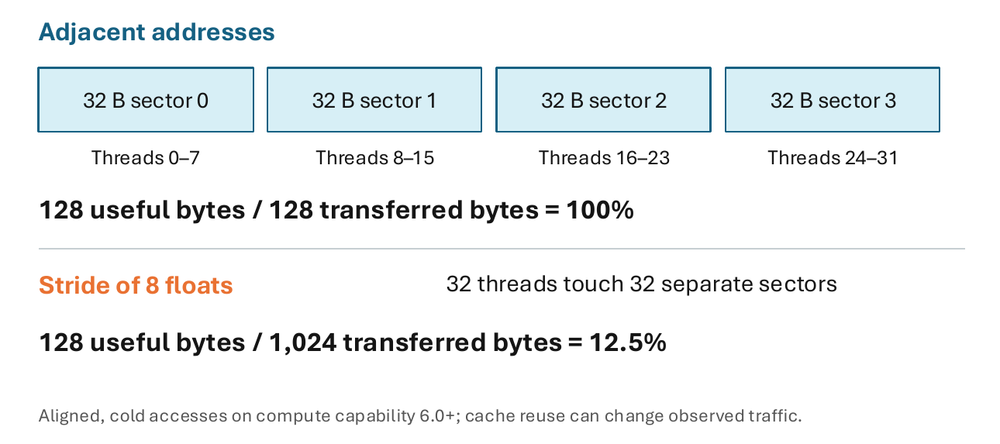
Two cases show the range. The stride is the distance between the addresses of neighbouring lanes.下面用两种情况说明范围。步长是相邻通道地址之间的距离。
- Adjacent addresses. Lane \(t\) reads
a[t]: 128 contiguous bytes in four sectors. Useful bytes ÷ transferred bytes \(=128/128=100\%\).相邻地址。 通道 \(t\) 读取a[t]：128 个连续字节，分布在四个扇区中。有用字节数 ÷ 传输字节数 \(=128/128=100\%\)。 - Stride of 8 floats. Lane \(t\) reads
a[8*t]. Neighbouring lanes are 8 × 4 B = 32 B apart, so every lane has its own sector. That is 32 sectors, 32 × 32 B = 1,024 bytes transferred for 128 useful bytes: \(128/1{,}024=12.5\%\).步长为 8 个 float。 通道 \(t\) 读取a[8*t]。相邻通道之间相距 8 × 4 B = 32 B，因此每个通道各占一个扇区。这样一共是 32 个扇区，传输 32 × 32 B = 1,024 字节，而有用的只有 128 字节：\(128/1{,}024=12.5\%\)。
Step 2: sectors and efficiency of a stride第 2 步：扇区数与步长的效率
Now let the stride be \(s\) floats. Each lane then reaches \(4s\) bytes beyond its neighbour. In words:现在设步长为 \(s\) 个 float。这样，每个通道的地址比它的邻居靠后 \(4s\) 字节。用文字表述：
efficiency = useful bytes ÷ transferred bytes = 128 B ÷ (32 B × number of sectors)效率 = 有用字节数 ÷ 传输字节数 = 128 B ÷（32 B × 扇区数）
Example. A warp reads a[3*t] with \(s=3\). Sectors: \(\min(4\cdot3,32)=12\). Transferred: 12 × 32 B = 384 B. Efficiency: 128 B ÷ 384 B = 33.3%. The memory system works at one third of its speed for this load.例子。 一个线程束读取 a[3*t]，访问方式为 \(s=3\)。扇区数：\(\min(4\cdot3,32)=12\)。传输量：12 × 32 B = 384 B。效率：128 B ÷ 384 B = 33.3%。这次读取中，存储系统只发挥了三分之一的速度。
Step 3: two more patterns第 3 步：另外两种访问模式
- Misalignment. 128 contiguous bytes that start 4 bytes past a sector boundary, as for
a[i+1], touch 5 sectors: \(128/160=80\%\). Any shift of 1 to 7 floats gives 80%.**未对齐。**如a[i+1]所示，从扇区边界后 4 字节处开始的 128 个连续字节会触及 5 个扇区：\(128/160=80\%\)。任意偏移 1 至 7 个 float 时，效率均为 80%。 - Array of structures versus structure of arrays. An array of structures stores
{x, y, z, w}of one element together; a structure of arrays stores allxtogether, allytogether, and so on. Reading onlyxof a 16-byte struct is a stride of 4 floats: 16 sectors, 128 ÷ 512 = 25%. A structure of arrays gives stride 1: 100%.结构体数组与数组结构体。 结构体数组把一个元素的{x, y, z, w}放在一起；数组结构体则把所有元素的x放在一起，所有元素的y放在一起，依此类推。若只读取一个 16 字节结构体中的x，这相当于步长为 4 个 float 的访问：共 16 个扇区，效率为 128 ÷ 512 = 25%。数组结构体的步长为 1，效率为 100%。
Practice练习
Q1. (Calculation) Lane \(t\) reads (a) a[3*t], (b) a[16*t], (c) a[t+1] (4-byte floats, aligned base, first index a multiple of 8, cold access). Give the sectors, the bytes transferred and the efficiency.Q1. （计算） 通道 \(t\) 分别读取 (a) a[3*t]，(b) a[16*t]，(c) a[t+1]（4 字节 float，基址对齐，首个索引为 8 的倍数，冷访问）。给出扇区数、传输字节数和效率。
Answer
- (a) \(s=3\): \(\min(12,32)=12\) sectors, 384 B, \(\eta=33.3\%\).(a) \(s=3\)：\(\min(12,32)=12\) 个扇区，384 B，\(\eta=33.3\%\)。
- (b) \(s=16\): 32 sectors, 1,024 B, \(\eta=12.5\%\); from stride 8 on, a larger stride costs no more.(b) \(s=16\)：32 个扇区，1,024 B，\(\eta=12.5\%\)；从步长 8 起，更大的步长不会带来更高的代价。
- (c) A shift by one float: 5 sectors, 160 B, \(\eta=80\%\).(c) 偏移一个 float：5 个扇区，160 B，\(\eta=80\%\)。
Q2. (Concept) A row-major matrix A[H][W] with \(W=1024\) is read as A[r*W + c]. Version A uses c = threadIdx.x, version B uses r = threadIdx.x. Compare the sectors per warp and fix the slower version.Q2. （概念） 行主序矩阵 A[H][W] 以 \(W=1024\) 的形式给出，并按 A[r*W + c] 读取。版本 A 使用 c = threadIdx.x，版本 B 使用 r = threadIdx.x。比较每个线程束的扇区数，并修正较慢的版本。
Answer
A: stride 1, 4 sectors, 100%. B: lanes are \(W=1{,}024\) floats apart, 32 sectors, 12.5%, 8 times more traffic. Fix B by letting threadIdx.x run along the row, as in A.版本 A：步长为 1，4 个扇区，100%。版本 B：相邻通道相隔 \(W=1{,}024\) 个 float，共 32 个扇区，12.5%，访存流量多 8 倍。修正 B 的方法是让 threadIdx.x 沿行方向变化，与 A 相同。
Shared memory and bank conflicts ★★★共享内存与存储体冲突 ★★★
Goal. Find out how many passes a warp needs for a shared-memory access. Then explain why padding a tile by one column removes a conflict.目标。 找出线程束访问一次共享内存需要分几轮完成。然后解释：给分块多加一列作为填充，为什么能消除冲突。
Step 1: the shared memory and its banks第 1 步：共享内存和它的存储体
Shared memory is on-chip SRAM in each SM. It is declared with __shared__ and visible to the threads of one block for the block's lifetime. It serves explicit reuse: a block loads a tile (a small square piece of an array) from global memory once and uses it many times. __syncthreads() is a barrier: it makes all threads of the block wait until every write into the tile is finished, before any thread reads values written by others.共享内存是每个 SM 内的片上 SRAM。它用 __shared__ 声明，在线程块的整个生命周期内，只对这个线程块中的线程可见。它的用途是显式复用数据：线程块把一个分块（数组中的一小块方形区域）从全局内存加载一次，然后多次使用。__syncthreads() 是一个栅障：它让线程块中的所有线程都等待，直到分块里的每一次写入都完成，然后才有线程去读取别的线程写入的值。
To serve a warp at once, shared memory has 32 banks that work in parallel. The bank of a word is its word address modulo 32. There are three cases:为了一次就能服务整个线程束，共享内存有 32 个并行工作的存储体。一个字属于哪个存储体，由它的字地址对 32 取模决定。情况分为三种：
- If the 32 lanes access 32 different banks, the access takes one pass.若 32 个通道访问 32 个不同的存储体，该访问只需 1 轮即可完成。
- If \(n\) different words lie in one bank, there is an \(n\)-way bank conflict（存储体冲突）: the access is serialized into \(n\) passes, so it is \(n\) times slower.如果 \(n\) 个不同的字位于同一个存储体中，就出现 \(n\) 路存储体冲突。这次访问会串行化为 \(n\) 轮，因此慢 \(n\) 倍。
- Lanes that read the same word get it by broadcast, with no conflict. Conflicts arise only within one warp.读取同一字的各通道通过广播获得数据，不产生冲突。冲突只会发生在同一线程束内。
Step 2: the conflict degree of a stride第 2 步：步长的冲突程度
Lanes that are \(s\) words apart reach banks \(0, s, 2s, \dots\) modulo 32. In words:相隔 \(s\) 个字的各通道，访问的存储体编号为 \(0, s, 2s, \dots\) 对 32 取模。用文字表述：
passes = the greatest common divisor of the stride and 32轮数 = 步长与 32 的最大公约数
Example: with \(s=4\) the lanes use banks 0, 4, 8, …, 28 and then return to 0. Only 8 banks are used, and each is hit by 4 lanes: \(\gcd(4,32)=4\) passes.例如，当 \(s=4\) 时，各通道使用的存储体为 0、4、8、…、28，然后又回到 0。这样只用到 8 个存储体，每个存储体被 4 个通道访问，共需 \(\gcd(4,32)=4\) 轮。
Step 3: padding第 3 步：填充
A typical conflict appears when a block reads a column of a tile. The padded declaration below avoids it.典型的冲突出现在线程块读取分块的一列时。下面带填充的声明可以避免这种冲突。
__shared__ float tile[32][33];
tile[threadIdx.y][threadIdx.x] = input; // input: a value from global memory
__syncthreads();
// Transposed access uses the padded row stride.
float v = tile[threadIdx.x][threadIdx.y];
With a \(32\times32\) block the lane is threadIdx.x, so in the column read the lane selects the row. The row-wise write is conflict-free: 32 consecutive words.线程块为 \(32\times32\) 时，通道号为 threadIdx.x，因此在列读取中，通道选择的是行。按行写入无冲突：为 32 个连续的字。
| Column access by 32 threads32 个线程的列访问 | Word address字地址 | Bank index存储体编号 |
|---|---|---|
Unpadded tile[32][32]未填充的 tile[32][32] |
\(32\cdot\text{row}+\text{col}\) | \(\text{col}\bmod32\) |
Padded tile[32][33]填充后的 tile[32][33] |
\(33\cdot\text{row}+\text{col}\) | \((\text{row}+\text{col})\bmod32\) |
Unpadded, the bank does not depend on the row: all 32 lanes hit one bank with 32 different words, a 32-way conflict, so the read takes 32 passes instead of 1. Padded, the bank takes all 32 values as the row runs from 0 to 31: one pass. The padding costs one extra word per row: 32 floats × 4 B = 128 bytes.不加填充时，存储体与行号无关：32 个通道都落在同一个存储体中，访问的是 32 个不同的字，这是 32 路冲突，读取需要 32 轮，而不是 1 轮。加上填充后，随着行号从 0 变到 31，存储体编号会取遍全部 32 个值，所以只需 1 轮。这种填充每行多占一个字：32 个 float × 4 B = 128 字节。
Practice练习
Q1. (Calculation) A warp (lane \(=\) threadIdx.x) accesses a shared float array s as (a) s[threadIdx.x], (b) s[2*threadIdx.x], (c) s[3*threadIdx.x], (d) s[32*threadIdx.x], (e) s[5], (f) s[threadIdx.x / 2]. How many passes does each take?Q1. （计算） 一个线程束（通道 \(=\) threadIdx.x）访问共享 float 数组 s，访问方式分别为：（a）s[threadIdx.x]，（b）s[2*threadIdx.x]，（c）s[3*threadIdx.x]，（d）s[32*threadIdx.x]，（e）s[5]，（f）s[threadIdx.x / 2]。每种访问各需要多少轮？
Answer
(a) 1. (b) \(\gcd(2,32)=2\). (c) \(\gcd(3,32)=1\). (d) \(\gcd(32,32)=32\): all lanes in bank 0. (e) 1: one word, broadcast. (f) 1: 16 words in 16 different banks, each read by two lanes (broadcast).（a）1。（b）\(\gcd(2,32)=2\)。（c）\(\gcd(3,32)=1\)。（d）\(\gcd(32,32)=32\)：所有通道都在存储体 0 中。（e）1：只涉及一个字，通过广播完成。（f）1：16 个字分布在 16 个不同的存储体中，每个字被两个通道读取（广播）。
易错：同一个字不算冲突，不同的字落在同一个 bank 才算。
Q2. (Calculation, one step beyond) Why does padding by one word make the column access conflict-free? What happens with tile[32][34]? Give the extra memory of both.Q2. （计算，进阶） 为什么每行填充一个字后，列访问就没有冲突？若使用 tile[32][34]，会发生什么？请给出两种方案各自的额外内存开销。
Answer
With row length \(P\) the column access has \(d=\gcd(P,32)\). For \(P=33\): \(d=1\). For \(P=34\): bank \(=(2\,\text{row}+\text{col})\bmod32\), rows \(r\) and \(r+16\) share a bank, \(d=2\). An odd row length works because it is coprime to 32. Extra memory: 32 floats (128 B) for 33; 64 floats (256 B) for 34, which still conflicts.行长为 \(P\) 时，列访问具有 \(d=\gcd(P,32)\)。对于 \(P=33\)：\(d=1\)。对于 \(P=34\)：存储体为 \(=(2\,\text{row}+\text{col})\bmod32\)，行 \(r\) 与行 \(r+16\) 共享同一存储体，\(d=2\)。奇数行长之所以有效，是因为它与 32 互素。额外内存：行长 33 时为 32 个 float（128 B）；行长 34 时为 64 个 float（256 B），但仍会发生冲突。
Bandwidth and memory-bound time ★★★带宽与访存受限时间 ★★★
Goal. Compute the shortest possible run time of a kernel that is limited by memory, and the bandwidth that a measured run really achieves.目标。 计算一个受访存限制的核函数的最短可能运行时间，以及一次实测运行真正达到的带宽。
Device memory has two figures of merit. Capacity decides what fits. Bandwidth decides how fast memory-bound kernels run. Section 11.3 defines arithmetic intensity and the machine balance.设备内存有两个关键指标。容量决定能放下什么。带宽决定访存受限的核函数能跑多快。第 11.3 节定义了算术强度和机器平衡点。
Step 1: the shortest possible time第 1 步：最短可能时间
A kernel that moves \(B\) bytes cannot finish before the memory has delivered them. In words:一个要搬运 \(B\) 字节的核函数，在内存把这些数据交付完之前，是不可能结束的。用文字表述：
shortest time = bytes moved ÷ peak bandwidth; effective bandwidth = bytes moved ÷ measured time最短时间 = 搬运的字节数 ÷ 峰值带宽；有效带宽 = 搬运的字节数 ÷ 实测时间
Step 2: an example, SAXPY第 2 步：例子，SAXPY
SAXPY（single-precision a·x plus y）is the loop y[i] = a * x[i] + y[i]. Per element it does 2 FLOPs (one multiplication and one addition). It reads x[i] (4 B), reads y[i] (4 B) and writes y[i] (4 B), so it moves 12 bytes. The arithmetic intensity（AI）is the FLOPs performed per byte moved: AI \(=2/12=0.167\) FLOP/byte.SAXPY（单精度 a·x + y）是循环 y[i] = a * x[i] + y[i]。每个元素做 2 个 FLOP（一次乘法和一次加法）。它读取 x[i]（4 B），读取 y[i]（4 B），写入 y[i]（4 B），所以共搬运 12 字节。算术强度（AI）是每搬运一个字节所做的 FLOP 数：AI \(=2/12=0.167\) FLOP/byte。
Practice练习
Q1. (Calculation) For \(10^{8}\) FP32 elements, find the arithmetic intensity and the lower-bound time on an H200 (4.8 TB/s) of (a) vector addition c[i] = a[i] + b[i] and (b) the kernel x[i] = 2.0f * x[i].Q1. （计算） 对于 \(10^{8}\) 个 FP32 元素，求 H200（4.8 TB/s）上 (a) 向量加法 c[i] = a[i] + b[i] 和 (b) 核函数 x[i] = 2.0f * x[i] 的算术强度与时间下界。
Answer
(a) 1 FLOP per 12 bytes: AI \(=0.083\) FLOP/byte. Traffic 1.2 GB, \(t_{\min}=1.2\times10^{9}/(4.8\times10^{12})=0.25\) ms. (b) 1 FLOP per 8 bytes: AI \(=0.125\). Traffic 0.8 GB, \(t_{\min}=0.17\) ms. Both are memory-bound: the bytes moved set the time.(a) 每 12 字节 1 FLOP：算术强度为 \(=0.083\) FLOP/byte，访存流量 1.2 GB，\(t_{\min}=1.2\times10^{9}/(4.8\times10^{12})=0.25\) ms。(b) 每 8 字节 1 FLOP：算术强度为 \(=0.125\)，访存流量 0.8 GB，\(t_{\min}=0.17\) ms。两者都是访存受限的：移动的字节数决定了时间。
Q2. (Calculation and concept) SAXPY on \(10^{8}\) elements takes 0.25 ms. Find the effective bandwidth and its fraction of an 8 TB/s peak. What would 0.10 ms mean?Q2. （计算与概念） 对 \(10^{8}\) 个元素的 SAXPY 耗时 0.25 ms。求有效带宽及其占 8 TB/s 峰值的比例。若耗时为 0.10 ms，意味着什么？
Answer
\(BW_{\text{eff}}=1.2\,\text{GB}/0.25\,\text{ms}=4.8\) TB/s, 60% of the peak.\(BW_{\text{eff}}=1.2\,\text{GB}/0.25\,\text{ms}=4.8\) TB/s，占峰值的 60%。
At 0.10 ms it would be 12 TB/s, above the peak, which is impossible. Likely causes: the timer stopped before the asynchronous kernel finished, part of the data came from a cache, or the byte count is wrong.若为 0.10 ms，则带宽为 12 TB/s，高于峰值，这是不可能的。可能的原因有：计时器在异步核函数结束前就已停止，部分数据来自缓存，或字节数有误。
易错：内核启动是异步的，计时前要同步。
Register pressure and spills ★★寄存器压力与溢出 ★★
Goal. Compute how many warps fit on an SM when each thread needs \(r\) registers, and explain what a register spill is.目标。 计算每个线程需要 \(r\) 个寄存器时，一个 SM 上能放下多少个线程束，并解释什么是寄存器溢出。
Step 1: registers limit the resident warps第 1 步：寄存器限制驻留线程束数
The register file of an SM holds 65,536 32-bit registers, shared by all resident threads. If a thread needs \(r\) registers, a warp of 32 threads needs \(32\,r\). The more each thread needs, the fewer warps fit. Fewer warps mean less latency hiding and lower occupancy (Sections 11.4 and 12.4). In words:一个 SM 的寄存器堆有 65,536 个 32 位寄存器，所有驻留线程共用。如果一个线程需要 \(r\) 个寄存器，那么一个由 32 个线程组成的线程束就需要 \(32\,r\) 个。每个线程需要的寄存器越多，能放下的线程束就越少。线程束越少，延迟隐藏能力越弱，占用率也越低（见第 11.4 节和第 12.4 节）。用文字表述：
resident warps = registers per SM ÷ (32 × registers per thread), rounded down驻留线程束数 = 每个 SM 的寄存器数 ÷（32 × 每个线程的寄存器数），向下取整
Step 2: spills第 2 步：寄存器溢出
A thread may use at most 255 registers, or fewer if the compiler is given a lower cap. If a kernel needs more, the compiler spills（溢出）the surplus values to local memory. Local memory is device memory behind L1 and L2, so every spill adds traffic and latency.一个线程最多能用 255 个寄存器；如果编译器被设置了更低的上限，就只能用更少的寄存器。如果核函数需要的寄存器超过这个上限，编译器就会把多出来的值溢出到本地内存中。本地内存是设备内存，经由 L1 和 L2 缓存访问，所以每次溢出都会增加访存流量和延迟。
Practice练习
Q1. (Calculation) A kernel uses 48 registers per thread and blocks of 128 threads. The SM has 65,536 registers and at most 64 resident warps (assumed); registers are the only limit. (a) How many warps does the per-warp formula allow? (b) How many whole blocks fit, and what is the occupancy? (c) What if the compiler is limited to 32 registers?Q1. （计算） 某核函数每线程使用 48 个寄存器，每个线程块包含 128 个线程。该 SM 有 65,536 个寄存器，最多 64 个驻留线程束（假设），寄存器是唯一的限制。(a) 按每线程束的公式，允许多少个线程束？(b) 能容纳多少个完整线程块？占用率是多少？(c) 若编译器限制为 32 个寄存器，结果如何？
Answer
(a) \(\lfloor65{,}536/(32\cdot48)\rfloor=\lfloor42.7\rfloor=42\) warps. (b) A block has 4 warps and needs \(48\times128=6{,}144\) registers: \(\lfloor65{,}536/6{,}144\rfloor=10\) blocks \(=40\) warps, occupancy \(40/64=62.5\%\). (c) A block needs \(4{,}096\) registers: 16 blocks, 64 warps, 100%, at the risk of spills.(a) \(\lfloor65{,}536/(32\cdot48)\rfloor=\lfloor42.7\rfloor=42\) 个线程束。(b) 一个线程块有 4 个线程束，需要 \(48\times128=6{,}144\) 个寄存器：\(\lfloor65{,}536/6{,}144\rfloor=10\) 个线程块、\(=40\) 个线程束，占用率 \(40/64=62.5\%\)。(c) 一个线程块需要 \(4{,}096\) 个寄存器：16 个线程块、64 个线程束、100%，但有溢出的风险。
思路：按整块向下取整。
The host link: PCIe and pinned memory ★★主机链路：PCIe 与锁页内存 ★★
Goal. Compute how long a copy between the host and the GPU takes, and see why such copies can cost more than the kernel itself.目标。 计算主机和 GPU 之间一次拷贝需要多长时间，并看清为什么这种拷贝的开销可能比核函数本身还大。
A discrete GPU's memory is separate from the host DRAM. PCIe connects them and DMA engines copy. The table gives the rate of one x16 link for each PCIe generation.独立 GPU 的显存与主机的 DRAM 是分开的。PCIe 把两者连起来，由 DMA 引擎负责拷贝。下表给出每一代 PCIe 的 ×16 链路速率。
| PCIe generationPCIe 代际 | 1 | 2 | 3 | 4 | 5 |
|---|---|---|---|---|---|
| GT/s per lane每条通道的 GT/s | 2.5 | 5 | 8 | 16 | 32 |
| Coding编码 | 8b/10b | 8b/10b | 128b/130b | 128b/130b | 128b/130b |
| x16 link, GB/s per directionx16 链路，每方向 GB/s | 4 | 8 | 15.75 | 31.5 | 63 (quoted as 64)63（写作 64） |
PCIe 5.0 ×16 gives about 63 GB/s per direction, a theoretical value: 32 GT/s (giga-transfers per second) × 16 lanes × 128/130 (coding) ÷ 8 bits per byte = 63 GB/s. Published "128 GB/s" figures add both directions (2 × 64 GB/s raw). The actual rate also depends on:PCIe 5.0 ×16 每个方向约为 63 GB/s，这是理论值：32 GT/s（每秒千兆次传输）× 16 个通道 × 128/130（编码）÷ 每字节 8 位 = 63 GB/s。公开资料中写的“128 GB/s”，是把两个方向加在一起（2 × 64 GB/s 的原始速率）。实际速率还取决于：
- Pinning. Page-locked (pinned) host memory, allocated with
cudaMallocHost, lets the DMA engine copy directly, andcudaMemcpyAsynccan overlap with kernels. Pageable memory is staged through a pinned buffer: an extra copy and no reliable overlap.锁页。 通过cudaMallocHost分配的锁页主机内存可让 DMA 引擎直接拷贝，并允许cudaMemcpyAsync与核函数重叠执行。可分页内存需先经锁页缓冲区中转：多出一次拷贝，且无法可靠地重叠。 - NUMA placement and contention. A buffer in the other socket's memory crosses the inter-socket link; other transfers on the same PCIe switch share its bandwidth.**NUMA 放置与争用。**位于另一插槽内存中的缓冲区需要跨越插槽间链路；同一 PCIe 交换机上的其他传输会与其共享带宽。
To see what this means for a kernel, take SAXPY from Section 13.4 and add the copies.要看这对核函数意味着什么，可以拿第 13.4 节的 SAXPY，再把拷贝的时间加进去。
Practice练习
Q1. (Calculation) A program copies 8 GB of weights from pinned host memory to the GPU over PCIe 5.0 ×16. How long does it take at 63 GB/s? What would the "128 GB/s" figure predict, and why is that wrong? How long does the GPU need to read the same 8 GB from a 4.8 TB/s device memory?Q1. （计算） 一个程序通过 PCIe 5.0 ×16 将 8 GB 权重从锁页主机内存拷贝到 GPU。以 63 GB/s 计算需要多长时间？“128 GB/s”这一数字会得出什么预测，为什么这是错误的？若从 4.8 TB/s 的设备内存读取同样的 8 GB，GPU 需要多长时间？
Answer
\(8\,\text{GB}/63\,\text{GB/s}=127\) ms at least. The "128 GB/s" figure adds both directions and would predict \(8/128=62.5\) ms, half of the true value: a one-way copy uses one direction. Reading 8 GB from device memory takes \(8\,\text{GB}/4.8\,\text{TB/s}=1.67\) ms, about 76 times less.至少 \(8\,\text{GB}/63\,\text{GB/s}=127\) ms。“128 GB/s”这一数字是两个方向之和，因而会预测出 \(8/128=62.5\) ms，仅为真实值的一半：单向拷贝只使用一个方向。从设备内存读取 8 GB 需要 \(8\,\text{GB}/4.8\,\text{TB/s}=1.67\) ms，约为拷贝时间的 1/76。
Terms to recognise ★需要认识的术语 ★
| Term术语 | What to know要知道什么 |
|---|---|
| HBM3 / HBM3e / HBM4 | High Bandwidth Memory, stacked device memory. H100 SXM: HBM3, 80 GB, 3.35 TB/s. Rubin GPU: HBM4, up to 288 GB, up to 22 TB/s.高带宽内存（High Bandwidth Memory），即堆叠式显存。H100 SXM：HBM3，80 GB，3.35 TB/s。Rubin GPU：HBM4，最高 288 GB，最高 22 TB/s。 |
| L1 and L2 cachesL1 与 L2 缓存 | Hardware-managed; L1 shares an SRAM array with shared memory, L2 is shared by all SMs. Shared memory is program-managed.由硬件管理；L1 与共享内存共用一个 SRAM 阵列，L2 由所有 SM 共享。共享内存由程序管理。 |
| Constant cache常量缓存 | Broadcasts: \(n\) distinct addresses in a warp are serialized into \(n\) reads (1, 4 or 32 reads).广播：线程束中的 \(n\) 个不同地址被串行化为 \(n\) 次读取（1、4 或 32 次）。 |
| Texture path纹理路径 | Own cache and filtering; suits 2-D spatial locality and image data.独立缓存与过滤；适合二维空间局部性和图像数据。 |
| TMA | Tensor Memory Accelerator (Hopper): one instruction copies a tile between global and shared memory asynchronously.Tensor Memory Accelerator（Hopper）：一条指令即可在全局内存与共享内存之间异步拷贝一个分块。 |
| TMEM | Tensor Memory (Blackwell): on-chip storage for Tensor Core intermediates. TMA moves, TMEM stores.Tensor Memory（Blackwell）：用于 Tensor Core 中间结果的片上存储。TMA 负责搬运，TMEM 负责存储。 |
| Distributed shared memory分布式共享内存 | Hopper and later: blocks of a cluster access each other's shared memory; explicit synchronization needed.Hopper 及之后：线程块簇中的各线程块可访问彼此的共享内存；需显式同步。 |
| DMA engineDMA 引擎 | Copies between memories without the CPU executing each load and store; needs pinned (fixed-address) pages.在存储器之间拷贝，无需 CPU 执行每一次加载与存储；需要锁页（固定地址）页面。 |
| NUMA | The GPU hangs on one socket's PCIe lanes; a buffer on the other socket is slower.GPU 挂接在某一插槽的 PCIe 通道上；位于另一插槽的缓冲区速度较慢。 |
Exam-style questions考试题型练习
Q1. (Memory spaces and registers) A kernel uses 56 registers per thread and blocks of 256 threads. It declares __shared__ float tile[1024], reads __constant__ float k[8] and in[i] from cudaMalloc memory, and indexes float h[16] with threadIdx.x & 15. (a) Name the space and placement of tile, k, in[i] and h. (b) With 65,536 registers and at most 64 warps per SM (assumed), find the resident blocks, warps and occupancy by the register limit. (c) What changes with a cap of 32 registers?Q1. （存储空间与寄存器）一个核函数每个线程使用 56 个寄存器，线程块由 256 个线程组成。该核函数声明了 __shared__ float tile[1024]，从 cudaMalloc 内存中读取 __constant__ float k[8] 和 in[i]，并用 threadIdx.x & 15 索引 float h[16]。（a）说出 tile、k、in[i] 和 h 所在的存储空间及其放置位置。（b）已知每个 SM 有 65,536 个寄存器，且每个 SM 至多 64 个线程束（假设），按寄存器限制求驻留线程块数、驻留线程束数及占用率。（c）若寄存器上限为 32 个，会有什么变化？
Answer
(a) tile: shared memory, on-chip SRAM. k: constant memory, device memory read through the constant cache. in[i]: global memory, HBM or GDDR through L2. h: run-time index, so normally local memory (device memory behind the caches).（a）tile：共享内存，为片上 SRAM。k：常量内存，即经常量缓存读取的设备内存。in[i]：全局内存，即经 L2 访问的 HBM 或 GDDR。h：运行时索引，因此通常位于本地内存中（即缓存之后的设备内存）。
(b) A block needs \(56\times256=14{,}336\) registers: \(\lfloor65{,}536/14{,}336\rfloor=4\) blocks \(=32\) warps, occupancy \(32/64=50\%\).（b）一个线程块需要 \(56\times256=14{,}336\) 个寄存器：可驻留 \(\lfloor65{,}536/14{,}336\rfloor=4\) 个线程块、\(=32\) 个线程束，占用率为 \(32/64=50\%\)。
(c) A block needs \(8{,}192\) registers: 8 blocks, 64 warps, 100%, at the risk of spills to local memory.（c）一个线程块需要 \(8{,}192\) 个寄存器：可驻留 8 个线程块、64 个线程束，占用率 100%，但存在寄存器溢出到本地内存的风险。
思路：先判空间和位置，再按整块算寄存器限制。
Q2. (Bandwidth and arithmetic intensity) The kernel z[i] = a*x[i] + b*y[i] runs on \(n=2\times10^{8}\) FP32 elements on an H200 (4.8 TB/s) in 0.8 ms; count 3 FLOPs per element. Find (a) the arithmetic intensity and the bytes moved, (b) \(t_{\min}\), (c) the effective bandwidth and its fraction of the peak, (d) the bound AI \(\times BW\) and the achieved rate. (e) Does a higher FP32 peak at the same bandwidth help?Q2. （带宽与算术强度）核函数 z[i] = a*x[i] + b*y[i] 在 H200（4.8 TB/s）上处理 \(n=2\times10^{8}\) 个 FP32 元素，耗时 0.8 ms；每个元素按 3 个 FLOP 计。求：（a）算术强度与所移动的字节数；（b）\(t_{\min}\)；（c）有效带宽及其占峰值的比例；（d）算术强度 \(\times BW\) 对应的性能上界，以及实际达到的速率；（e）在带宽不变的情况下，更高的 FP32 峰值是否有帮助？
Answer
(a) 3 FLOPs per 12 bytes: AI \(=0.25\) FLOP/byte; bytes \(=2\times10^{8}\times12=2.4\) GB.（a）每 12 字节含 3 个 FLOP：AI 为 \(=0.25\) FLOP/byte；字节数为 \(=2\times10^{8}\times12=2.4\) GB。
(b) \(t_{\min}=2.4\times10^{9}/(4.8\times10^{12})=0.5\) ms.（b）\(t_{\min}=2.4\times10^{9}/(4.8\times10^{12})=0.5\) ms。
(c) \(BW_{\text{eff}}=2.4\times10^{9}/(0.8\times10^{-3})=3.0\) TB/s, \(62.5\%\) of the peak.（c）\(BW_{\text{eff}}=2.4\times10^{9}/(0.8\times10^{-3})=3.0\) TB/s，占峰值的 \(62.5\%\)。
(d) Bound: \(0.25\times4.8\times10^{12}=1.2\) TFLOP/s. Achieved: \(3\times2\times10^{8}/(0.8\times10^{-3})=0.75\) TFLOP/s, again 62.5%.（d）上界：\(0.25\times4.8\times10^{12}=1.2\) TFLOP/s。实际达到：\(3\times2\times10^{8}/(0.8\times10^{-3})=0.75\) TFLOP/s，同样为 62.5%。
(e) No. AI \(=0.25\) is far below the machine balance, so the kernel is memory-bound: only more bandwidth or fewer bytes help.（e）否。AI \(=0.25\) 远低于机器平衡点，因此该核函数访存受限：只有更高的带宽或更少的字节数才有帮助。
Q3. (Coalescing and banks) A \(4096\times4096\) FP32 matrix is transposed on an H100 (3.35 TB/s). In the naive kernel thread \((x,y)\) reads in[y*N + x] and writes out[x*N + y] with \(N=4096\) and threadIdx.x along \(x\). (a) Find the sectors and the efficiency of a warp's load and store. (b) Find the device traffic and \(t_{\min}\) of the naive kernel, and of a kernel with both accesses coalesced. (c) Find the conflict degree of a column read of a shared tile declared tile[32][32] and tile[32][33].Q3. （合并访问与存储体）在 H100（3.35 TB/s）上对一个 \(4096\times4096\) FP32 矩阵做转置。朴素核函数中，线程 \((x,y)\) 读取 in[y*N + x]，写入 out[x*N + y]，其中 \(N=4096\) 与 threadIdx.x 沿 \(x\) 方向变化。(a) 求线程束加载与存储的扇区数及效率。(b) 求朴素核函数的设备访存流量与 \(t_{\min}\)，以及两种访问都合并的核函数的同样指标。(c) 求以 tile[32][32] 和 tile[32][33] 声明的共享分块中，列读取的冲突度。
Answer
(a) Load: 4 sectors, 100%. Store: lanes \(N=4096\ge8\) floats apart: 32 sectors, 12.5%.（a）读取：4 个扇区，100%。写入：相邻通道相隔 \(N=4096\ge8\) 个 float，共 32 个扇区，12.5%。
(b) The matrix is 64 MiB. Naive: \(64+8\times64=576\) MiB \(=6.04\times10^{8}\) B, \(t_{\min}=0.18\) ms. Both coalesced: \(2\times64=128\) MiB \(=1.34\times10^{8}\) B, \(t_{\min}=0.040\) ms: 4.5 times less.(b) 矩阵为 64 MiB。朴素版本：\(64+8\times64=576\) MiB \(=6.04\times10^{8}\) B，\(t_{\min}=0.18\) ms。两种访问都合并：\(2\times64=128\) MiB \(=1.34\times10^{8}\) B，\(t_{\min}=0.040\) ms：少 4.5 倍。
(c) \(\gcd(32,32)=32\) and \(\gcd(33,32)=1\).（c）\(\gcd(32,32)=32\) 和 \(\gcd(33,32)=1\)。
Q4. (The host link and data movement) A GPU with PCIe 5.0 ×16 (63 GB/s per direction, theoretical) and 3.35 TB/s device memory copies a 2 GB array from pinned memory to the GPU, runs \(k\) kernels that each read and write it once (4 GB of traffic), and copies it back. (a) Find the copy times and \(t_{\min}\) of one kernel. (b) Find the total time and the share of the transfers for \(k=10\). (c) For which \(k\) are the transfers below 10%? (d) Why can a real copy be slower than 63 GB/s? (e) Correct: "TMEM copies tiles from global to shared memory".Q4. （主机链路与数据搬运）一块 GPU 配备 PCIe 5.0 ×16（每个方向 63 GB/s，理论值）和 3.35 TB/s 的设备内存，它将一个 2 GB 数组从锁页内存拷贝到 GPU，运行 \(k\) 个核函数（每个核函数各读写一次该数组，共 4 GB 流量），再将其拷回。(a) 求拷贝时间，以及一个核函数的 \(t_{\min}\)。(b) 求 \(k=10\) 的总时间及传输所占比例。(c) 对于哪些 \(k\)，传输占比低于 10%？(d) 为什么实际拷贝可能慢于 63 GB/s？(e) 请改正：“TMEM 将分块从全局内存拷贝到共享内存”。
Answer
(a) Each copy: \(2\,\text{GB}/63\,\text{GB/s}=31.7\) ms. One kernel: \(4\,\text{GB}/3.35\,\text{TB/s}=1.19\) ms.（a）每次拷贝：\(2\,\text{GB}/63\,\text{GB/s}=31.7\) ms。一个核函数：\(4\,\text{GB}/3.35\,\text{TB/s}=1.19\) ms。
(b) \(31.7+31.7+10\times1.19=75.4\) ms; the transfers are \(63.5/75.4=84\%\).（b）\(31.7+31.7+10\times1.19=75.4\) ms；数据传输占比为 \(63.5/75.4=84\%\)。
(c) The total must exceed \(63.5/0.10=635\) ms: \(63.5+1.19\,k\ge635\) gives \(k\ge479\).（c）总耗时必须超过 \(63.5/0.10=635\) ms：\(63.5+1.19\,k\ge635\) 给出 \(k\ge479\)。
(d) Pageable instead of pinned memory (staging), NUMA placement across sockets, and contention on a shared link.（d）使用可分页内存而非锁页内存（需经中转）、跨插槽的非一致性内存访问（NUMA）放置，以及共享链路上的争用。
(e) TMA copies tiles asynchronously between global and shared memory. TMEM is on-chip storage for Tensor Core intermediate results: one moves data, the other stores it.（e）TMA 在全局内存与共享内存之间异步拷贝分块。TMEM 是用于 Tensor Core 中间结果的片上存储：前者搬运数据，后者存储数据。
思路：传输时间固定，核函数次数越多，传输占比越小。
Chapter 14Tiled Matrix Multiplication on the GPUGPU 上的分块矩阵乘法
GEMM size, the naive kernel and its traffic ★★★GEMM 规模、朴素核及其访存量 ★★★
Goal. Count the work, the storage and the memory traffic of a matrix product on the GPU, so that you can see why the simplest kernel is slow.目标。 统计 GPU 上一次矩阵乘法的运算量、存储量和访存量，看清最简单的核函数为什么慢。
Step 1: the sizes第 1 步：各矩阵的尺寸
\(C=AB\) is a GEMM（general matrix-matrix multiplication, 通用矩阵乘）. The matrix \(A\) has \(M\) rows and \(K\) columns, \(B\) has \(K\) rows and \(N\) columns, and \(C\) has \(M\) rows and \(N\) columns. So \(K\) is the inner dimension that the sum runs over.\(C=AB\) 是一次 GEMM（通用矩阵乘）。矩阵 \(A\) 有 \(M\) 行、\(K\) 列，\(B\) 有 \(K\) 行、\(N\) 列，\(C\) 有 \(M\) 行、\(N\) 列。因此，\(K\) 是内维，也就是求和所沿的那一维。
All matrices are stored row-major: the entries of one row lie next to each other in memory. For row \(i\) and column \(j\) of \(C\) the sum runs over \(k=0,\dots,K-1\) and reads A[row*K+k] and B[k*N+col]. The result goes to C[row*N+col].所有矩阵都按行主序存储：同一行的元素在内存中彼此相邻。对于 \(C\) 的第 \(i\) 行和第 \(j\) 列，求和沿 \(k=0,\dots,K-1\) 进行，读取 A[row*K+k] 和 B[k*N+col]。结果写入 C[row*N+col]。
Each output needs \(K\) multiplications and \(K\) additions. In words:每个输出元素需要 \(K\) 次乘法和 \(K\) 次加法。用文字表述：
work = 2 × M × N × K floating-point operations运算量 = 2 × M × N × K 次浮点运算
The work is \(2MNK\) FLOPs (Section 6.1). Take \(M=N=K=4096\) in FP32 (32-bit single precision, 4 bytes per value).运算量为 \(2MNK\) FLOP（见第 6.1 节）。下面取 \(M=N=K=4096\)，并以 FP32 计算（32 位单精度，每个数占 4 字节）。
- Work: \(2\cdot4096^3=137.44\) GFLOP.运算量：\(2\cdot4096^3=137.44\) GFLOP。
- One matrix: \(4096^2\cdot4\ \text{B}=64\) MiB. The three matrices together take \(3\cdot64=192\) MiB.一个矩阵占 \(4096^2\cdot4\ \text{B}=64\) MiB，三个矩阵合计占 \(3\cdot64=192\) MiB。
Step 2: the naive kernel第 2 步：朴素核
The naive kernel（朴素核）uses one thread per output element and blocks of 16 × 16 threads. Each thread computes one entry of \(C\) with a loop over \(k\).朴素核让每个输出元素由一个线程负责，线程块大小为 16 × 16 个线程。每个线程在 \(k\) 上做循环，算出 \(C\) 的一个元素。
__global__ void naive(const float* A, const float* B,
float* C, int M, int N, int K) {
int row = blockIdx.y * blockDim.y + threadIdx.y;
int col = blockIdx.x * blockDim.x + threadIdx.x;
if (row >= M || col >= N) return; // guard for ragged sizes
float sum = 0.0f;
for (int k = 0; k < K; ++k)
sum = fmaf(A[row*K+k], B[k*N+col], sum); // 2 FLOPs, 8 bytes loaded
C[row*N+col] = sum;
}
Step 3: the traffic of the naive kernel第 3 步：朴素核的访存量
Each thread loads one value of \(A\) and one of \(B\) in every loop step. That is 8 bytes for 2 FLOPs. Over the whole loop one output element costs:每个线程在每一步循环中，从 \(A\) 和 \(B\) 各读取一个值，也就是 2 次 FLOP 要读取 8 字节。整个循环下来，计算一个输出元素的开销为：
- \(2K\) FLOPs;\(2K\) 次 FLOP；
- \(K\) loads from \(A\) and \(K\) loads from \(B\), so \(8K\) logical bytes;从 \(A\) 读取 \(K\) 次，从 \(B\) 读取 \(K\) 次，共 \(8K\) 个逻辑字节；
- one 4-byte store of the result.再加上写回结果的一次 4 字节存储。
The logical arithmetic intensity（逻辑算术强度）, AI for short, says how much arithmetic is done for each byte moved. In words:逻辑算术强度（简称 AI）表示每搬运一个字节能做多少运算。用文字表述：
arithmetic intensity = FLOPs ÷ bytes moved算术强度 = FLOP 数 ÷ 搬运的字节数
It is measured in FLOP/byte. For the naive kernel it is \(2K/(8K+4)\approx0.25\) FLOP/byte. Example with \(K=4096\): \(2\cdot4096=8192\) FLOPs for \(8\cdot4096+4=32{,}772\) bytes, so \(8192\div32{,}772=0.25\) FLOP/byte. A value of 0.25 means that each FLOP needs 4 bytes from memory, which is a lot.它的单位是 FLOP/byte。对朴素核来说，它是 \(2K/(8K+4)\approx0.25\) FLOP/byte。以 \(K=4096\) 为例：\(2\cdot4096=8192\) 次 FLOP 对应 \(8\cdot4096+4=32{,}772\) 字节，即 \(8192\div32{,}772=0.25\) FLOP/byte。数值 0.25 意味着每次 FLOP 都要从内存取 4 个字节，代价很大。
Practice练习
Q1. (Calculation) For \(M=N=K=1024\) in FP32, give the work, the storage of one matrix and the logical bytes loaded by the naive kernel.Q1. 计算 对于 FP32 下的 \(M=N=K=1024\)，给出运算量、一个矩阵的存储量以及朴素核装载的逻辑字节数。
Answer
Work \(2\cdot1024^3=2.147\) GFLOP. One matrix: \(1024^2\cdot4\ \text{B}=4\) MiB. Logical loads: \(8K\cdot MN=8\cdot1024\cdot1024^2\ \text{B}=8\) GiB, which is 2,048 times the 4 MiB of one input matrix.运算量 \(2\cdot1024^3=2.147\) GFLOP。一个矩阵：\(1024^2\cdot4\ \text{B}=4\) MiB。逻辑装载量：\(8K\cdot MN=8\cdot1024\cdot1024^2\ \text{B}=8\) GiB，是一个输入矩阵 4 MiB 的 2,048 倍。
思路：每个输出元素读 \(8K\) 字节，再乘输出个数。
Tiling with shared memory ★★★共享内存分块 ★★★
Goal. Explain why computing \(C\) tile by tile cuts the memory traffic, and read the tiled16 kernel line by line, including its two barriers.目标。 解释为什么按分块计算 \(C\) 能减少访存量，并逐行读懂 tiled16 核函数，包括它的两个栅障。
Step 1: why tiling reduces the traffic第 1 步：分块为什么能减少访存量
In the naive kernel every thread loads its own row of \(A\) and column of \(B\) from main memory. Neighbouring threads need almost the same data, but each one fetches it again.在朴素核函数中，每个线程都从主存读取 \(A\) 的一行和 \(B\) 的一列。相邻线程需要的数据几乎相同，但每个线程都要重新读一遍。
Count this for a 4 × 4 product, cut into four 2 × 2 tiles of \(C\).以一个 4 × 4 的乘积为例来计算，它的结果 \(C\) 被切成四个 2 × 2 的分块。
- Naive: each of the 16 outputs loads 4 values of \(A\) and 4 of \(B\). That is 8 loads per output and \(16\cdot8=128\) loads in total. One block of 4 outputs loads \(4\cdot8=32\) values.朴素做法：16 个输出中的每一个都要读取 \(A\) 的 4 个值和 \(B\) 的 4 个值，即每个输出读取 8 次，总共 \(16\cdot8=128\) 次。一个负责 4 个输出的线程块共读取 \(4\cdot8=32\) 个值。
- Tiled: a block computes one 2 × 2 tile of \(C\) in 2 stages of depth 2. In each stage it loads one 2 × 2 tile of \(A\) and one of \(B\), that is \(4+4=8\) values, once for all 4 threads. In 2 stages that is \(2\cdot8=16\) values per block, and \(4\cdot16=64\) loads in total.分块做法：一个线程块在 2 个阶段中计算 \(C\) 的一个 2 × 2 分块，每个阶段的深度为 2。每个阶段，它加载 \(A\) 的一个 2 × 2 分块和 \(B\) 的一个 2 × 2 分块，共 \(4+4=8\) 个值，由 4 个线程共用，只加载一次。两个阶段下来，每个线程块共加载 \(2\cdot8=16\) 个值，总共 \(4\cdot16=64\) 次读取。
The loads are halved, and 2 is the side of the tile. In general, a tile of side \(T\) cuts the loads by the factor \(T\): a 16 × 16 tile cuts them 16 times. Section 14.3 turns this into a formula.读取次数减半，减半的倍数就是分块的边长 2。一般来说，边长为 \(T\) 的分块可以把读取次数减少 \(T\) 倍：16 × 16 的分块可以把读取次数减少 16 倍。第 14.3 节把这一结论写成了公式。
Step 2: the stages第 2 步：各个阶段
A block computes one tile of \(C\). The \(K\) columns of \(A\) and rows of \(B\) are cut into stages（阶段）. In each stage the block loads one tile of \(A\) and one tile of \(B\) into shared memory once, and all threads reuse them. Each thread keeps its running sum in a register. The block stores \(C\) after all \(K\) stages. This is the GPU form of the CPU tiling of Section 6.4.一个线程块计算 \(C\) 的一个分块。\(A\) 的列与 \(B\) 的行（共 \(K\) 个）被切成若干阶段。在每个阶段中，线程块把 \(A\) 的一个分块和 \(B\) 的一个分块一次性加载到共享内存中，所有线程反复使用它们。每个线程把自己的累加和保存在寄存器中。所有 \(K\) 个阶段结束后，线程块写回 \(C\)。这就是第 6.4 节中 CPU 分块方法的 GPU 版本。
Step 3: the tiled16 kernel第 3 步：tiled16 核函数
The complete kernel uses 16 × 16 tiles, one thread per element of the tile. Each stage has three phases: load, compute, wait.完整的核函数使用 16 × 16 的分块，每个分块中的每个元素由一个线程负责。每个阶段分为三个环节：加载、计算、等待。
__global__ void tiled16(const float* A, const float* B,
float* C, int M, int N, int K) {
__shared__ float As[16][16], Bs[16][16];
int x = threadIdx.x, y = threadIdx.y;
int r = 16*blockIdx.y+y, c = 16*blockIdx.x+x;
float sum = 0.0f;
for (int k0 = 0; k0 < K; k0 += 16) {
As[y][x] = (r<M && k0+x<K) ? A[r*K+k0+x] : 0.0f; // zero fill outside
Bs[y][x] = (k0+y<K && c<N) ? B[(k0+y)*N+c] : 0.0f;
__syncthreads(); // barrier 1: tiles complete
for (int kk = 0; kk < 16; ++kk)
sum = fmaf(As[y][kk], Bs[kk][x], sum);
__syncthreads(); // barrier 2: all done before overwrite
}
if (r<M && c<N) C[r*N+c] = sum; // guarded store
}
// host launch, device pointers A, B, C:
dim3 block(16,16), grid((N+15)/16,(M+15)/16);
tiled16<<<grid,block>>>(A,B,C,M,N,K);
- Barrier 1 makes the tiles complete before any thread reads them. Each thread loads one element, but the compute loop reads elements that other threads loaded.栅障 1 保证分块都加载完成后，线程才开始读取。每个线程只加载一个元素，但计算循环读取的元素，可能是其他线程加载的。
- Barrier 2 keeps a fast warp from loading the next stage over data another warp still reads.栅障 2 防止较快的线程束在另一线程束仍在读取数据时，覆盖式地装载下一阶段的数据。
- Zero fill lets out-of-range loads add 0 to the sum, so partial tiles at the matrix edge give the right result. The final store is guarded by an
if.补零让越界的加载向求和中加 0，因此矩阵边缘的不完整分块也能得到正确结果。最后的写回受一个if条件的保护。 - All 256 threads must reach both barriers, so the loads are not placed inside an
if.全部 256 个线程都必须到达两个栅障，因此加载操作不能放在if里面。
Practice练习
Q1. (Code reading) Why does tiled16 need two __syncthreads() per stage, and what does the conditional operator in the loads do?Q1. 读代码 为什么 tiled16 每阶段需要两个 __syncthreads()？装载中的条件运算符起什么作用？
Answer
The first barrier ensures that every thread has written its element of As and Bs before any thread reads other threads' elements. The second ensures that no thread starts loading the next stage until all threads have finished reading the current tiles. The conditional operator writes 0.0 for indices outside the matrix, so partial tiles at the edge add nothing to the sums.第一个栅障保证：在任何线程读取其他线程的元素之前，每个线程都已写入它负责的 As 和 Bs 元素。第二个栅障保证：在所有线程读完当前分块之前，没有线程开始装载下一阶段。条件运算符对矩阵之外的下标写入 0.0，因此边缘的不完整分块对和没有贡献。
思路：第一个栅栏保证"读之前写完"，第二个保证"写之前读完"。
Arithmetic intensity of a tile and the A100 roofline ★★★分块的算术强度与 A100 Roofline ★★★
Goal. Compute the arithmetic intensity of a tile, draw it on the A100 roofline, and decide whether a kernel is limited by memory or by arithmetic.目标。 计算一个分块的算术强度，把它标在 A100 的 roofline 模型图上，并判断一个核函数是受访存限制还是受计算限制。
Step 1: the intensity of one tile第 1 步：一个分块的算术强度
Take a block tile of \(B_M\times B_N\) outputs and a depth of \(B_K\). Here \(B_M\) and \(B_N\) are the rows and columns of the tile of \(C\) that one block computes, and \(B_K\) is the number of \(k\) values loaded per stage.取一个线程块的分块，它有 \(B_M\times B_N\) 个输出，深度为 \(B_K\)。这里，\(B_M\) 和 \(B_N\) 分别是一个线程块所计算的 \(C\) 分块的行数和列数，\(B_K\) 是每个阶段加载的 \(k\) 值的个数。
- FLOPs of one stage: every one of the \(B_MB_N\) outputs gets \(B_K\) multiplications and \(B_K\) additions, so \(2B_MB_NB_K\).一个阶段的 FLOP 数：\(B_MB_N\) 个输出中的每一个都做 \(B_K\) 次乘法和 \(B_K\) 次加法，因此总数为 \(2B_MB_NB_K\)。
- Bytes of one stage: a \(B_M\times B_K\) tile of \(A\) and a \(B_K\times B_N\) tile of \(B\), so \(B_K(B_M+B_N)\) values of 4 bytes each, that is \(4B_K(B_M+B_N)\).一个阶段的字节数：\(A\) 的一个 \(B_M\times B_K\) 分块，加上 \(B\) 的一个 \(B_K\times B_N\) 分块，共 \(B_K(B_M+B_N)\) 个值，每个值 4 字节，即 \(4B_K(B_M+B_N)\)。
Divide the two. The depth \(B_K\) cancels. In words:两者相除。深度 \(B_K\) 会被约掉。用文字表述：
arithmetic intensity of a tile = FLOPs of one stage ÷ bytes loaded in that stage分块的算术强度 = 一个阶段的 FLOP 数 ÷ 该阶段加载的字节数
Example: \(B_M=B_N=16\), \(B_K=16\). One stage does \(2\cdot16\cdot16\cdot16=8192\) FLOPs and loads \(4\cdot16\cdot(16+16)=2048\) bytes. So \(8192\div2048=4\) FLOP/byte, which is \(T/4\) for \(T=16\) and is 16 times the naive 0.25. For \(T=128\) and \(B_K=32\): \(1{,}048{,}576\) FLOPs for \(32{,}768\) bytes, that is 32 FLOP/byte.例如，\(B_M=B_N=16\) 与 \(B_K=16\)。一个阶段做 \(2\cdot16\cdot16\cdot16=8192\) 次 FLOP，加载 \(4\cdot16\cdot(16+16)=2048\) 字节，所以是 \(8192\div2048=4\) FLOP/byte。这是 \(T=16\) 时的 \(T/4\)，是朴素核 0.25 的 16 倍。对于 \(T=128\) 和 \(B_K=32\)，\(1{,}048{,}576\) 次 FLOP 对应 \(32{,}768\) 字节，即 32 FLOP/byte。
Step 2: the roofline第 2 步：roofline 模型
The roofline (definitions in Section 11.3) says that performance has two ceilings. A kernel cannot be faster than the arithmetic peak, and it cannot be faster than the memory allows for its intensity. In words:roofline 模型（定义见第 11.3 节）指出，性能有两个上限。核函数的速度不可能超过计算峰值，也不可能超过其算术强度所允许的访存上限。用文字表述：
attainable performance = the smaller of (peak compute, bandwidth × arithmetic intensity)可达性能 = （峰值计算能力，带宽 × 算术强度）中的较小值
With \(P\) the attainable performance in FLOP/s: \(P\le\min(19.5\ \text{TFLOP/s},\ 2.039\ \text{TB/s}\times\text{AI})\). The two ceilings meet at the ridge point（脊点）: \(19.5/2.039\approx9.56\) FLOP/byte. Below the ridge a kernel is memory bound, above it compute bound.设 \(P\) 为可达性能（单位 FLOP/s），则 \(P\le\min(19.5\ \text{TFLOP/s},\ 2.039\ \text{TB/s}\times\text{AI})\)。两条上限相交于脊点，其值为 \(19.5/2.039\approx9.56\) FLOP/byte。脊点左侧的核函数是访存受限的，右侧则是计算受限的。

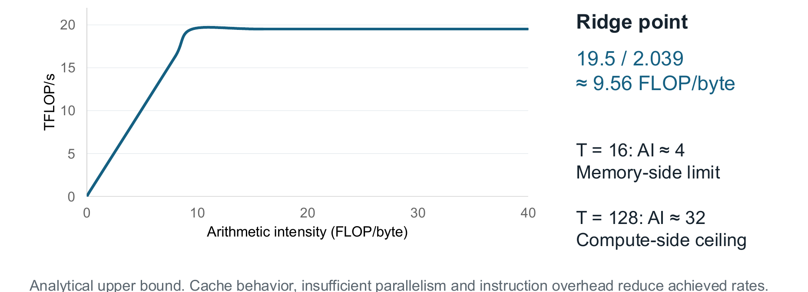
| Kernel核函数 | AI (FLOP/byte)AI（FLOP/byte） | Bound \(P\) (TFLOP/s)上界 \(P\)（TFLOP/s） | Side of the ridge拐点的哪一侧 |
|---|---|---|---|
| Naive朴素核 | 0.25 | 0.51 | memory访存受限 |
| \(T=16\) | 4 | 8.16 | memory访存受限 |
| \(T=128\) | 32 | 19.5 | compute计算受限 |
Each row follows from the min. For \(T=16\): \(2.039\cdot4=8.16\) TFLOP/s, below 19.5, so memory bound. For \(T=128\): \(2.039\cdot32=65.2\) TFLOP/s, above 19.5, so the flat ceiling of 19.5 applies.每一行都是取最小值得到的。对于 \(T=16\)，结果为 \(2.039\cdot4=8.16\) TFLOP/s，低于 19.5，所以是访存受限。对于 \(T=128\)，结果为 \(2.039\cdot32=65.2\) TFLOP/s，高于 19.5，所以适用 19.5 的水平上限。
The smallest square tile above the ridge: \(T/4\ge9.56\), so \(T\ge38.3\). This is an analytical upper bound: cache behaviour, too little parallelism and instruction overhead lower the achieved rate.拐点以上最小的方形分块为 \(T/4\ge9.56\)，因此 \(T\ge38.3\)。这是解析上界：缓存行为、并行度不足与指令开销都会降低实际达到的速率。
Practice练习
Q1. (Calculation) A kernel uses 32 × 32 output tiles. Give its AI, its roofline bound and whether it is memory or compute bound.Q1. 计算 某核函数使用 32 × 32 的输出分块。给出其算术强度、Roofline 上界，以及它是访存受限还是计算受限。
Answer
\(\text{AI}=32/4=8\) FLOP/byte, below the ridge 9.56. \(P\le2.039\ \text{TB/s}\times8=16.3\) TFLOP/s, below 19.5, so the kernel is memory bound.\(\text{AI}=32/4=8\) FLOP/byte，低于拐点 9.56。\(P\le2.039\ \text{TB/s}\times8=16.3\) TFLOP/s，低于 19.5，因此该核函数为访存受限。
思路：先和脊点比较，再取两个上限中较小的。
Time model: compute bound versus memory bound ★★★时间模型：计算受限与访存受限 ★★★
Goal. Turn the traffic of a kernel into a lower bound on its run time, and say which of the two limits, compute or memory, decides it.目标。 把核函数的访存量换算成运行时间的下限，并说明计算和访存这两个限制中，哪一个决定运行时间。
Step 1: the compute time第 1 步：计算时间
A kernel cannot finish before the arithmetic is done. In words: compute time = FLOPs ÷ peak compute rate. For \(4096^3\): \(137.44\ \text{GFLOP}\div19.5\ \text{TFLOP/s}=7.05\) ms. This is the same for every kernel, because the work does not change.核函数必须等运算做完才能结束。用文字表述：计算时间 = FLOP 数 ÷ 峰值计算速率。对于 \(4096^3\)，结果为 \(137.44\ \text{GFLOP}\div19.5\ \text{TFLOP/s}=7.05\) ms。因为运算量不变，所以这个时间对每个核函数都一样。
Step 2: the memory time第 2 步：访存时间
A kernel also cannot finish before its bytes have crossed the memory interface. In words: memory time = bytes moved ÷ peak memory bandwidth. The bytes (including the write of \(C\)) depend on how the kernel reuses data:核函数还必须等它的字节全部穿过存储接口后才能结束。用文字表述：访存时间 = 搬运的字节数 ÷ 峰值访存带宽。搬运的字节数（包括写入 \(C\) 的字节）取决于核函数如何复用数据：
- naive: \((8K+4)MN\), every output loads its own row and column;朴素做法：\((8K+4)MN\)，每个输出都读取自己的一行和一列；
- tile of side \(T\) (as in the AI card): \(8KMN/T+4MN\), because the loads fall by the factor \(T\);边长为 \(T\) 的分块（即 AI 卡片中的做法）：\(8KMN/T+4MN\)，因为读取次数减少 \(T\) 倍；
- ideal: \(12n^2\) for \(M=N=K=n\), that is \(3n^2\) values of 4 bytes, each matrix read or written once.理想情况：\(12n^2\)，对应 \(M=N=K=n\)，即 \(3n^2\) 个 4 字节的值，每个矩阵只读或写一次。
| Traffic model访存模型 | Bytes including the C write包括 C 写回在内的字节数 | Bytes / peak HBM rate字节数 / HBM 峰值速率 |
|---|---|---|
| Naive logical loads朴素核的逻辑装载量 | 512.0625 GiB | 269.65 ms |
| 16 × 16 block reuse16 × 16 线程块复用 | 32.0625 GiB | 16.88 ms |
| 128 × 128 block reuse128 × 128 线程块复用 | 4.0625 GiB | 2.14 ms |
| Ideal one read and write理想情况：各读写一次 | 0.1875 GiB | 0.099 ms |
Step 3: the bound is the larger of the two times第 3 步：两者取较大值作为下限
The two limits act at the same time, and the slower one decides. In words:这两个限制同时起作用，较慢的那一个决定运行时间。用文字表述：
run time ≥ the larger of (compute time, memory time)运行时间 ≥ （计算时间，访存时间）中的较大值
Practice练习
Q1. (Calculation) With 128 × 128 reuse at \(n=4096\), is the kernel memory or compute bound? Give the bound.Q1. 计算 在 \(n=4096\) 下采用 128 × 128 复用时，该核函数是访存受限还是计算受限？给出其上界。
Answer
Memory time 2.14 ms is below compute time 7.05 ms, so the kernel is compute bound and the bound is \(\max(7.05,2.14)=7.05\) ms.访存时间 2.14 ms 低于计算时间 7.05 ms，因此该核函数为计算受限，上界为 \(\max(7.05,2.14)=7.05\) ms。
思路：取两个时间中的大者。
Resource budgets: shared memory, registers and occupancy ★★★资源预算：共享内存、寄存器与占用率 ★★★
Goal. Compute how many blocks fit on one streaming multiprocessor at the same time, and the resulting occupancy, from the registers, shared memory and threads that a block uses.目标。 根据一个线程块所用的寄存器、共享内存和线程数，计算一个 SM 上能同时放下多少个线程块，以及由此得到的占用率。
Step 1: what one SM offers第 1 步：一个 SM 提供的资源
A100 80 GB SXM, only the rows used in calculations:A100 80 GB SXM，仅列出计算中用到的行：
| Resource资源 | Value数值 |
|---|---|
| SMs; FP32 unitsSM 数；FP32 单元数 | 108; 64 per SM (6,912 in total)108；每个 SM 64 个（共 6,912 个） |
| Registers寄存器 | 65,536 32-bit per SM (256 KiB); at most 255 per thread每个 SM 65,536 个 32 位寄存器（256 KiB）；每线程至多 255 个 |
| L1 plus shared poolL1 与共享内存共用的存储池 | 192 KiB per SM; shared carve-out up to 164 KiB per SM and 163 KiB per block每个 SM 192 KiB；共享内存划出的份额每个 SM 至多 164 KiB，每个线程块至多 163 KiB |
| Resident warps驻留线程束 | at most 64 per SM = 2,048 threads每个 SM 至多 64 个（即 2,048 个线程） |
| L2; HBM | 40 MB; 80 GB HBM2e at 2,039 GB/s40 MB；80 GB HBM2e，带宽 2,039 GB/s |
| Peaks峰值 | 19.5 TFLOP/s FP32; 312 TFLOP/s dense BF16FP32 为 19.5 TFLOP/s；稠密 BF16 为 312 TFLOP/s |
More than 48 KiB per block needs dynamic allocation and an opt-in.每个线程块超过 48 KiB 的共享内存需要动态分配并显式申请。
Step 2: the shared memory of one stage第 2 步：一个阶段的共享内存
A block holds one tile of \(A\) and one tile of \(B\) in shared memory. In words:一个线程块在共享内存中保存 \(A\) 的一个分块和 \(B\) 的一个分块。用文字表述：
shared memory per stage = values in the two tiles × 4 bytes每个阶段的共享内存 = 两个分块中的值的个数 × 4 字节
Example: \(B_M=B_N=128\) and \(B_K=32\). The tile of \(A\) has \(128\cdot32=4096\) values and the tile of \(B\) has \(32\cdot128=4096\) values. So \(S=8192\cdot4\ \text{B}=32{,}768\ \text{B}=32\) KiB, as in the card.例如，\(B_M=B_N=128\) 与 \(B_K=32\)。\(A\) 的分块有 \(128\cdot32=4096\) 个值，\(B\) 的分块有 \(32\cdot128=4096\) 个值，共需 \(S=8192\cdot4\ \text{B}=32{,}768\ \text{B}=32\) KiB，与卡片中的数字一致。
Step 3: blocks per SM and occupancy第 3 步：每个 SM 的线程块数与占用率
Three resources limit how many blocks an SM can hold: registers, shared memory and threads. Each gives a limit, rounded down. The SM holds the smallest of the three. In words:有三种资源限制一个 SM 能容纳的线程块数：寄存器、共享内存和线程。每种资源各给出一个上限，并向下取整。SM 能容纳的线程块数取三者中的最小值。用文字表述：
blocks per SM = the smallest of (registers per SM ÷ registers per block, shared memory per SM ÷ shared memory per block, threads per SM ÷ threads per block)每个 SM 的线程块数 = （每个 SM 的寄存器数 ÷ 每个线程块的寄存器数，每个 SM 的共享内存 ÷ 每个线程块的共享内存，每个 SM 的线程数 ÷ 每个线程块的线程数）中的最小值
The card is in Section 12.4. Registers per block are the threads of the block times the registers per thread. Then:这张卡片在第 12.4 节。每个线程块的寄存器数等于线程块中的线程数乘以每个线程的寄存器数。然后：
occupancy = (blocks per SM × warps per block) ÷ 64占用率 =（每个 SM 的线程块数 × 每个线程块的线程束数）÷ 64
Step 4: register spills第 4 步：寄存器溢出
A thread fragment of 4 × 4, 8 × 8, 8 × 16 or 16 × 16 outputs needs 16, 64, 128 or 256 accumulators, one register each. The limit is 255 registers per thread, so 256 does not fit. When a thread needs more registers than it may use, the compiler spills（寄存器溢出, Section 13.5）: it moves some values to slow local memory.一个线程负责的片段（输出为 4 × 4、8 × 8、8 × 16 或 16 × 16）需要 16、64、128 或 256 个累加器，每个累加器占一个寄存器。每个线程最多只能用 255 个寄存器，所以 256 个放不下。当一个线程需要的寄存器超过它能用的数量时，编译器会溢出（即寄存器溢出，见第 13.5 节）：把一部分值挪到慢速的本地内存中。
Example: 8 spilled sums, each read and written at every \(k\) (4 bytes each way, so 8 B), cost \(8\ \text{sums}\times8\ \text{B}\times4096\ \text{steps}\times256\ \text{threads}=67{,}108{,}864\ \text{B}=64\) MiB of extra logical traffic per block.例如，8 个溢出的和，每次 \(k\) 时各读写一遍（每个方向 4 字节，共 8 B），每个线程块要多花 \(8\ \text{sums}\times8\ \text{B}\times4096\ \text{steps}\times256\ \text{threads}=67{,}108{,}864\ \text{B}=64\) MiB 的逻辑访存量。
Practice练习
Q1. (Calculation) A block of 512 threads uses 40 registers per thread and 20 KiB of shared memory (plus 1 KiB reservation). Give blocks per SM and occupancy.Q1. 计算 一个含 512 个线程的线程块，每线程使用 40 个寄存器，并使用 20 KiB 共享内存（另加 1 KiB 保留空间）。给出每个 SM 的线程块数与占用率。
Answer
Registers: \(65{,}536/(512\cdot40)=3.2\to3\). Shared: \(164/21=7.8\to7\). Threads: \(2048/512=4\). Minimum 3 blocks, so \(3\cdot16=48\) warps and \(48/64=75\%\).寄存器：\(65{,}536/(512\cdot40)=3.2\to3\)。共享内存：\(164/21=7.8\to7\)。线程数：\(2048/512=4\)。最小值为 3 个线程块，因此为 \(3\cdot16=48\) 个线程束，占用率为 \(48/64=75\%\)。
思路：每个上限都向下取整，再取最小。
Q2. (Calculation) What shared memory does one stage need for \(B_M=B_N=128\), \(B_K=64\), and how many stages are there at \(K=4096\)?Q2. 计算 对于 \(B_M=B_N=128\)、\(B_K=64\)，一个阶段需要多少共享内存？在 \(K=4096\) 下有多少个阶段？
Answer
\(4\cdot64\cdot256=65{,}536\) B \(=64\) KiB, over the 48 KiB default, so it needs an opt-in. Stages: \(4096/64=64\).\(4\cdot64\cdot256=65{,}536\) B，即 \(=64\) KiB，超过 48 KiB 的默认值，因此需要显式申请。阶段数：\(4096/64=64\)。
Register tiling: the 128 × 128 × 32 kernel ★★寄存器分块：128 × 128 × 32 核函数 ★★
Goal. Read the 128 × 128 kernel: say which outputs each thread computes, why this raises the reuse inside the registers, and why the shared tile has 129 columns.目标。 读懂 128 × 128 核函数：说明每个线程计算哪些输出，为什么这样能提高寄存器内部的复用，以及为什么共享内存中的分块有 129 列。
Step 1: one thread, many outputs第 1 步：一个线程，多个输出
In tiled16 a thread computes one output and does 1 multiply-add for every 2 values read from shared memory. This is too little arithmetic per read. If a thread computes several outputs, it can reuse each value it has read.在 tiled16 中，每个线程只计算一个输出，每从共享内存读取 2 个值，只做 1 次乘加。每次读取对应的运算太少。如果一个线程计算多个输出，它就能复用已经读过的每一个值。
A block of 16 × 16 threads computes a 128 × 128 tile of \(C\). That is 16,384 outputs, and \(16{,}384\div256=64\) per thread. The 64 outputs form an 8 × 8 strided fragment（跨步片段）: the thread's rows and columns are 16 apart, row = m0 + y + 16*i and col = n0 + x + 16*j.一个 16 × 16 的线程块计算 \(C\) 的一个 128 × 128 分块，共 16,384 个输出，每个线程负责 \(16{,}384\div256=64\) 个输出。这些输出构成一个 8 × 8 的跨步片段：线程负责的行与列彼此相隔 16，即 row = m0 + y + 16*i 和 col = n0 + x + 16*j。
- \((x,y)\) are the thread's column and row coordinates in the 16 × 16 block.\((x,y)\) 是线程在 16 × 16 线程块中的列坐标和行坐标。
- \(m_0\) and \(n_0\) are the first row and column of the block's tile of \(C\).\(m_0\) 和 \(n_0\) 分别是线程块在 \(C\) 中所负责分块的第一行和第一列。
- \(i,j=0,\dots,7\) index the fragment, so \(8\cdot8=64\) outputs.\(i,j=0,\dots,7\) 用来索引这个片段，因此共有 \(8\cdot8=64\) 个输出。
| Thread \((x,y)\)线程 \((x,y)\) | Output rows输出行 | Output columns输出列 |
|---|---|---|
| (0, 0) | 0, 16, …, 112 | 0, 16, …, 112 |
| (1, 0) | 0, 16, …, 112 | 1, 17, …, 113 |
| (0, 1) | 1, 17, …, 113 | 0, 16, …, 112 |
Per \(k\) step a thread reads 8 values of \(A\) and 8 of \(B\) from shared memory. It then multiplies every one of the 8 values of \(A\) with every one of the 8 values of \(B\): \(8\cdot8=64\) FMAs (fused multiply-adds) on its 64 accumulators. This is reuse at the register level, an outer product. The ratio is \(64\div16=4\) FMAs per value read, against 0.5 in tiled16.在每一个 \(k\) 步中，线程从共享内存读取 \(A\) 的 8 个值和 \(B\) 的 8 个值。然后，它把 \(A\) 的 8 个值中的每一个，与 \(B\) 的 8 个值中的每一个相乘，对它的 64 个累加器共做 \(8\cdot8=64\) 次 FMA（融合乘加）。这是寄存器级的复用，即外积运算。每读取一个值，对应 \(64\div16=4\) 次 FMA，而 tiled16 中只有 0.5 次。
Where one tile lives: \(A\), \(B\), \(C\) in HBM (64 MiB each); one stage in shared memory (\(128\times32\) of \(A\), \(32\times128\) of \(B\)); per thread 8 + 8 values and 64 sums in registers.一个分块的存放位置：\(A\)、\(B\)、\(C\) 位于 HBM 中（各 64 MiB）；一个阶段位于共享内存中（\(128\times32\) 的 \(A\)，\(32\times128\) 的 \(B\)）；每线程的 8 + 8 个值和 64 个和位于寄存器中。
Step 2: the kernel第 2 步：核函数
__device__ float at(const float* P, int r, int c, int R, int C)
{ return (r < R && c < C) ? P[r*C + c] : 0.0f; } // zero outside
__global__ void reg128(const float* A, const float* B,
float* C, int M, int N, int K) {
__shared__ float As[32][129], Bs[32][128]; // 129: padding
int x=threadIdx.x, y=threadIdx.y, t=16*y+x;
int m0=128*blockIdx.y, n0=128*blockIdx.x;
float acc[8][8] = {};
for (int k0=0; k0<K; k0+=32) {
for (int q=t; q<4096; q+=256) { // 256 threads load 4096 values
As[q%32][q/32] = at(A,m0+q/32,k0+q%32,M,K); // stored transposed
Bs[q/128][q%128] = at(B,k0+q/128,n0+q%128,K,N);
}
__syncthreads();
for (int kk=0; kk<32; ++kk) {
float av[8], bv[8];
#pragma unroll
for (int i=0; i<8; ++i) { av[i]=As[kk][y+16*i]; bv[i]=Bs[kk][x+16*i]; }
#pragma unroll
for (int i=0; i<8; ++i)
#pragma unroll
for (int j=0; j<8; ++j)
acc[i][j]=fmaf(av[i],bv[j],acc[i][j]); // 64 FMAs per 16 loads
}
__syncthreads();
}
#pragma unroll
for (int i=0; i<8; ++i)
#pragma unroll
for (int j=0; j<8; ++j) {
int r=m0+y+16*i, c=n0+x+16*j;
if (r<M && c<N) C[r*N+c]=acc[i][j]; // guarded store
}
}
dim3 block(16,16), grid((N+127)/128,(M+127)/128);
reg128<<<grid,block>>>(A,B,C,M,N,K);
Step 3: why As has 129 columns第 3 步：为什么 As 要有 129 列
The cooperative load writes As[q%32][q/32]. Consecutive lanes have consecutive q, so they walk down the first index. Each step moves by one row, that is by one row length in words.协作加载会写入 As[q%32][q/32]。相邻通道对应相邻的 q，所以它们沿第一个下标方向排列。每一步移动一行，也就是移动一整行的字数。
- With 128 words per row, lane \(l\) writes word \(128l\) (plus a constant). Since \(128l\bmod32=0\), all 32 lanes hit the same bank: a 32-way conflict.每行 128 个字时，通道 \(l\) 写入字 \(128l\)（再加一个常数）。由于 \(128l\bmod32=0\)，32 个通道都落在同一个存储体中，这是 32 路冲突。
- With 129 words per row, lane \(l\) writes word \(129l\), and \(129l\bmod32=l\bmod32\). The 32 lanes hit 32 different banks. The row length 129 has no common factor with 32, which is what matters (Section 13.3).每行 129 个字时，通道 \(l\) 写入字 \(129l\)，并且 \(129l\bmod32=l\bmod32\)。这 32 个通道落在 32 个不同的存储体上。行长 129 与 32 互质，这一点才是关键（见第 13.3 节）。
The extra column is never used; it only shifts the rows.多出来的这一列从不使用，它的作用只是让各行错开。
Step 4: double buffering第 4 步：双缓冲
Double buffering（双缓冲）: load stage \(s+1\) while computing stage \(s\) (\(s\) is the stage number). Loading and computing then overlap. This needs two copies of the tiles. Two padded stages need \(2\cdot(32\cdot129+32\cdot128)\cdot4\ \text{B}=65{,}792\ \text{B}=64.25\) KiB per block. Barriers are still needed for completion and reuse.双缓冲：在计算阶段 \(s\) 的同时加载阶段 \(s+1\)（\(s\) 是阶段编号）。这样，加载和计算就能重叠进行。双缓冲需要两份分块的副本。两个带填充的阶段，每个线程块需要 \(2\cdot(32\cdot129+32\cdot128)\cdot4\ \text{B}=65{,}792\ \text{B}=64.25\) KiB。栅障仍然需要，用来保证加载完成，以及缓冲区可以安全复用。
Practice练习
Q1. (Explanation) Which outputs does thread \((x,y)=(2,3)\) of reg128 compute, and how many FMAs and shared-memory loads does it do per \(k\) step?Q1. 解释 reg128 中的线程 \((x,y)=(2,3)\) 计算哪些输出？每个 \(k\) 步执行多少次 FMA 和共享内存装载？
Answer
Rows \(m_0+3+16i\) and columns \(n_0+2+16j\) for \(i,j=0\ldots7\): 64 outputs. Per \(k\) step: 8 loads from As, 8 from Bs and 64 FMAs.\(i,j=0\ldots7\) 的行 \(m_0+3+16i\) 与列 \(n_0+2+16j\)：共 64 个输出。每个 \(k\) 步：从 As 装载 8 次，从 Bs 装载 8 次，并执行 64 次 FMA。
思路：行用 \(y\)，列用 \(x\)，步长 16。
Matrix shapes, measurement and Tensor Cores ★★矩阵形状、测量与 Tensor Core ★★
Goal. Predict for a given matrix shape how many blocks there are and how much padding is wasted, convert a measured time into TFLOP/s, and compare the peak rates of the Tensor Cores with those of the normal FP32 units.目标。 对给定的矩阵形状，预测线程块的数量和被浪费的补齐量；把实测时间换算成 TFLOP/s；并比较 Tensor Core 与普通 FP32 单元的峰值速率。
Step 1: size and parallelism第 1 步：规模与并行度
With a fixed 128 × 128 output tile, each block computes one tile of \(C\). In words:输出分块固定为 128 × 128，每个线程块计算 \(C\) 的一个分块。用文字表述：
number of blocks = ⌈M ÷ 128⌉ × ⌈N ÷ 128⌉线程块数 = ⌈M ÷ 128⌉ × ⌈N ÷ 128⌉
The ideal intensity is \(n/6\) for \(M=N=K=n\) (Section 14.3); for \(n=64\) it is \(64\div6=10.7\). The A100 has 108 SMs, so a kernel needs at least about 108 blocks to keep them busy.对于 \(M=N=K=n\)（见第 14.3 节），理想的算术强度为 \(n/6\)；对于 \(n=64\)，则为 \(64\div6=10.7\)。A100 有 108 个 SM，所以核函数至少需要约 108 个线程块，才能让所有 SM 都忙起来。
| \(M=N=K\) | Ideal AI理想算术强度 | Blocks线程块数 | Main concern主要问题 |
|---|---|---|---|
| 64 | 10.7 | 1 | launch cost, padding启动开销、填充 |
| 256 | 42.7 | 4 | most SMs idle多数 SM 空闲 |
| 1024 | 170.7 | 64 | fewer blocks than the 108 SMs线程块数少于 108 个 SM |
| 4096 | 682.7 | 1,024 | resources and reuse资源与复用 |
| 8192 | 1,365.3 | 4,096 | sustained compute and traffic持续计算与访存量 |
Step 2: rectangular and ragged shapes第 2 步：矩形形状与不规则形状
Rectangular shapes. \(M=1\), \(N=K=4096\): ideal AI about 0.5, like a matrix-vector product: the matrix \(B\) has \(4096^2\) values, each read once for 2 FLOPs, so \(2\cdot4096^2\div(4\cdot4096^2)=0.5\) FLOP/byte. A small \(M\) with a large \(N\) wastes rows of a tall tile (use a smaller \(B_M\)). A small \(M\times N\) with a very large \(K\) gives too few blocks (split-\(K\) and reduce).矩形形状。 \(M=1\)、\(N=K=4096\)：理想算术强度约为 0.5，与矩阵-向量乘法类似。矩阵 \(B\) 有 \(4096^2\) 个值，每个值读取一次，对应 2 次 FLOP，所以为 \(2\cdot4096^2\div(4\cdot4096^2)=0.5\) FLOP/byte。\(M\) 较小而 \(N\) 较大时，高而窄的分块会浪费行（此时应改用较小的 \(B_M\)）。\(M\times N\) 较小而 \(K\) 非常大时，线程块数太少（应采用 split-\(K\) 并做归约）。
Step 3: measuring the time第 3 步：测量时间
Warm up first, because the first launch includes start-up costs. Record events around a loop of repeats and divide by the number of repeats. Time the GPU kernels separately from allocation and data transfers. In words:先预热，因为第一次启动会包含启动开销。在一个重复循环的前后记录事件，再除以重复次数。GPU 核函数的计时要和内存分配、数据传输分开。用文字表述：
TFLOP/s = 2 × M × N × K ÷ (time in ms × 10⁹)TFLOP/s = 2 × M × N × K ÷（时间（单位 ms）× 10⁹）
Why \(10^9\): the time in seconds is ms \(\times10^{-3}\), and one TFLOP/s is \(10^{12}\) FLOP/s. So TFLOP/s \(=\text{FLOP}\div(\text{ms}\cdot10^{-3}\cdot10^{12})=\text{FLOP}\div(\text{ms}\cdot10^{9})\). Example: \(2\cdot4096^3=1.374\times10^{11}\) FLOP in 12.0 ms give \(1.374\times10^{11}\div(12.0\cdot10^9)=11.45\) TFLOP/s.为什么是 \(10^9\)：以秒计的时间为 ms \(\times10^{-3}\)，而 1 TFLOP/s 为 \(10^{12}\) FLOP/s，所以 TFLOP/s \(=\text{FLOP}\div(\text{ms}\cdot10^{-3}\cdot10^{12})=\text{FLOP}\div(\text{ms}\cdot10^{9})\)。例如，\(2\cdot4096^3=1.374\times10^{11}\) FLOP 在 12.0 ms 内完成，得到 \(1.374\times10^{11}\div(12.0\cdot10^9)=11.45\) TFLOP/s。
cudaEventRecord(start, stream);
for (int rep=0; rep<repeats; ++rep)
reg128<<<grid,block,0,stream>>>(A,B,C,M,N,K);
cudaEventRecord(stop, stream);
cudaEventSynchronize(stop);
float ms=0.0f; cudaEventElapsedTime(&ms, start, stop);
double avg_ms=ms/repeats;
double TFs=(2.0*M*N*K)/(avg_ms*1.0e9); // TFLOP/s
Compare the same precision: the baseline is cuBLAS with TF32 disabled.比较时应使用相同精度：基线为禁用 TF32 的 cuBLAS。
Step 4: Tensor Cores第 4 步：Tensor Core
Peak rates of the full A100:整块 A100 的峰值速率：
| FP64 | FP32 | TF32 (Tensor)TF32（Tensor） | FP16 or BF16 (Tensor)FP16 或 BF16（Tensor） |
|---|---|---|---|
| 9.7 | 19.5 | 156 | 312 TFLOP/s |
The ridge for 312 TFLOP/s is \(312/2.039\approx153\) FLOP/byte: the peak is \(312\div19.5=16\) times higher, so a kernel needs about 16 times more intensity (\(153\div9.56=16\)) to stay compute bound. The wmma calls are a warp-level 16 × 16 × 16 FP16 product with FP32 accumulation (fragment, load_matrix_sync, mma_sync, store_matrix_sync); all 32 lanes take part.对应 312 TFLOP/s 的脊点为 \(312/2.039\approx153\) FLOP/byte：峰值是普通单元的 \(312\div19.5=16\) 倍，因此核函数要保持计算受限，算术强度需要提高约 16 倍（\(153\div9.56=16\)）。wmma 调用是线程束级的 16 × 16 × 16 FP16 乘积，用 FP32 累加（fragment、load_matrix_sync、mma_sync、store_matrix_sync）；全部 32 个通道都参与运算。
Practice练习
Q1. (Calculation) A \(4096^3\) GEMM runs in 12.0 ms. Give the TFLOP/s and the fraction of the FP32 peak.Q1. 计算 一个 \(4096^3\) GEMM 运行时间为 12.0 ms。给出 TFLOP/s 以及占 FP32 峰值的比例。
Answer
\(2\cdot4096^3/(12.0\cdot10^9)=11.45\) TFLOP/s, which is \(11.45/19.5=58.7\%\) of the peak.\(2\cdot4096^3/(12.0\cdot10^9)=11.45\) TFLOP/s，占峰值的 \(11.45/19.5=58.7\%\)。
Tiling in Transformer attention ★★Transformer 注意力中的分块 ★★
Goal. Show that the main steps of attention in a Transformer are matrix products, so that the tiling of this chapter applies, and say why the score matrix is never written to memory.目标。 说明 Transformer 中注意力的主要步骤都是矩阵乘积，因此本章的分块方法同样适用；并说明为什么注意力分数矩阵从来不写入内存。
Step 1: the projections第 1 步：投影
Example: 2,048 tokens, width 768, 12 heads of width 64 (attention itself: Section 8.1). \(X\) is the token matrix; \(W_Q\), \(W_K\), \(W_V\) are weight matrices that give the queries \(Q\), keys \(K\) and values \(V\) (here \(K\) is a matrix, not the dimension \(K\)).示例：2,048 个 token，宽度 768，12 个头，每头宽度 64（注意力本身见第 8.1 节）。\(X\) 为 token 矩阵；\(W_Q\)、\(W_K\)、\(W_V\) 为权重矩阵，分别得到查询 \(Q\)、键 \(K\) 与值 \(V\)（此处 \(K\) 是矩阵，而非维度 \(K\)）。
Projection. \(X\) (2048 × 768) times \([W_Q\ W_K\ W_V]\) (768 × 2304) gives \([Q\ K\ V]\) (2048 × 2304): \(2\cdot2048\cdot768\cdot2304=7.25\) GFLOP. The 2304 columns are \(3\cdot768\): 768 each for \(Q\), \(K\) and \(V\).投影。 \(X\)（2048 × 768）乘以 \([W_Q\ W_K\ W_V]\)（768 × 2304），得到 \([Q\ K\ V]\)（2048 × 2304），运算量为 \(2\cdot2048\cdot768\cdot2304=7.25\) GFLOP。这 2304 列由 \(3\cdot768\) 组成：每部分 768 列，分别对应 \(Q\)、\(K\) 和 \(V\)。
In BF16 (16-bit format, 2 bytes per value) the ideal AI is about 449.6 in prefill: the three matrices hold \(2048\cdot768+768\cdot2304+2048\cdot2304=8{,}060{,}928\) values, that is 16.12 MB, and \(7.25\ \text{GFLOP}\div16.12\ \text{MB}=449.6\) FLOP/byte. In decode (one token row) the weights dominate the traffic. They hold \(768\cdot2304\cdot2\ \text{B}=3.54\) MB and the work is \(2\cdot768\cdot2304=3.54\) MFLOP, so the ideal AI is about 1.0 FLOP/byte.在 BF16（16 位格式，每个值 2 字节）下，预填充阶段的理想算术强度约为 449.6：三个矩阵共保存 \(2048\cdot768+768\cdot2304+2048\cdot2304=8{,}060{,}928\) 个值，即 16.12 MB，因此算术强度为 \(7.25\ \text{GFLOP}\div16.12\ \text{MB}=449.6\) FLOP/byte。在解码阶段（只有一行 token）中，访存主要由权重决定。权重共占 \(768\cdot2304\cdot2\ \text{B}=3.54\) MB，运算量为 \(2\cdot768\cdot2304=3.54\) MFLOP，所以理想算术强度约为 1.0 FLOP/byte。
Step 2: the matrices of one head第 2 步：一个注意力头中的矩阵
Per head. \(S\) is the score matrix, \(P\) the attention weights and \(O\) the attention output; \(S=QK^{T}/\sqrt{64}\) (\(^{T}\): transpose, \(\sqrt{64}\) the head width scaling) is (2048 × 64)(64 × 2048), a 2048 × 2048 matrix; \(P=\text{softmax}(S)\) row by row; \(O=PV\) is (2048 × 2048)(2048 × 64), a 2048 × 64 matrix. A materialized BF16 score matrix costs \(2048^2\cdot2\ \text{B}=8\) MiB per head, and the 12 heads together \(12\cdot8=96\) MiB.每个头。 \(S\) 是分数矩阵，\(P\) 是注意力权重，\(O\) 是注意力输出。\(S=QK^{T}/\sqrt{64}\)（其中 \(^{T}\) 表示转置，\(\sqrt{64}\) 表示头宽的缩放）是（2048 × 64）乘以（64 × 2048），得到一个 2048 × 2048 的矩阵。\(P=\text{softmax}(S)\) 逐行进行。\(O=PV\) 是（2048 × 2048）乘以（2048 × 64），得到一个 2048 × 64 的矩阵。如果把 BF16 分数矩阵真正写到内存中，每个头要占 \(2048^2\cdot2\ \text{B}=8\) MiB，12 个头共占 \(12\cdot8=96\) MiB。
Step 3: tiled attention第 3 步：分块的注意力
Tiled attention keeps running softmax statistics and output sums, and streams through blocks of \(K\) and \(V\) without storing the full score matrix. With 64 × 64 tiles the \(Q\), \(K\), \(V\) inputs total \(3\cdot64\cdot64\cdot2=24\) KiB in BF16; the FP32 score and output tiles are 16 KiB each.分块注意力保存运行中的 softmax 统计量与输出和，并逐块流式处理 \(K\) 与 \(V\) 的分块，而不存储完整的得分矩阵。在 64 × 64 分块下，\(Q\)、\(K\)、\(V\) 三个输入以 BF16 计共 \(3\cdot64\cdot64\cdot2=24\) KiB；FP32 得分分块与输出分块各为 16 KiB。
Practice练习
Q1. (Calculation) For 4,096 tokens, how large is one BF16 score matrix per head, and how does it compare with 2,048 tokens?Q1. 计算 对于 4,096 个 token，每个头的一个 BF16 得分矩阵有多大？与 2,048 个 token 相比如何？
Answer
\(4096^2\cdot2\ \text{B}=32\) MiB, four times the 8 MiB at 2,048 tokens: doubling the tokens quadruples the matrix.\(4096^2\cdot2\ \text{B}=32\) MiB，是 2,048 个 token 时 8 MiB 的四倍：token 数加倍，矩阵增至四倍。
Terms to recognise ★需要认识的术语 ★
| Term术语 | What to know要知道什么 |
|---|---|
| MIG | Up to seven GPU instances; an instance has only its assigned SMs, L2 and memory.最多 7 个 GPU 实例；每个实例只拥有分配给它的 SM、L2 与显存。 |
cudaGetDeviceProperties |
Reports name, SM count, registers per SM, shared memory per SM and per block, L2 size, global memory and warp size.报告中列出名称、SM 数、每个 SM 的寄存器数、每个 SM 与每个线程块的共享内存、L2 容量、全局内存和线程束大小。 |
| HBM2e | Five active stacks, a 5,120-bit interface, 80 GB, 2,039 GB/s peak.5 个有效堆栈，5,120 位接口，80 GB，峰值 2,039 GB/s。 |
| PCIe 4.0 ×16 | About 32 GB/s per direction (64 GB/s combined).每个方向约 32 GB/s（合计 64 GB/s）。 |
| NVLink 3 | 300 GB/s per direction over 12 links (aggregate, not one link).每个方向 300 GB/s，由 12 条链路合计提供（是总带宽，而非单条链路）。 |
| Local memory本地内存 | Thread-private, backed by device memory and cached; limit 512 KiB per thread.线程私有，由设备内存支持并带有缓存；每线程上限 512 KiB。 |
| Constant space常量空间 | 64 KiB, with a cache working set of 8 KiB per SM.64 KiB，每个 SM 的缓存工作集为 8 KiB。 |
| TF32 | Tensor-core format at 156 TFLOP/s dense on the A100.A100 上 Tensor Core 格式的稠密速率为 156 TFLOP/s。 |
| 2:4 sparsity | Can double eligible Tensor Core rates.可使符合条件的 Tensor Core 速率加倍。 |
| Split-K | Splits \(K\) across blocks, then reduces partial results; for small \(M\times N\), large \(K\).将 \(K\) 拆分到多个线程块上，然后归约部分结果；适用于 \(M\times N\) 较小、\(K\) 较大的情形。 |
| cuBLAS | NVIDIA's GEMM library; the baseline, in matching precision.NVIDIA 的 GEMM 库；以相同精度作为基线。 |
Exam-style questions考试题型练习
Q1. (Calculation) For \(M=N=K=2048\) in FP32 on the A100, give (a) the work, (b) the bytes for the naive kernel, for 16 × 16 and for 128 × 128 reuse, including the \(C\) write, (c) the memory times at 2.039 TB/s and the compute time, and (d) the conditional bound for each.Q1. 计算 对于 A100 上 FP32 下的 \(M=N=K=2048\)，给出 (a) 运算量；(b) 朴素核、16 × 16 复用与 128 × 128 复用的字节数（包括 \(C\) 的写回）；(c) 在 2.039 TB/s 下的访存时间以及计算时间；(d) 每种情形的条件上界。
Answer
(a) \(2\cdot2048^3=17.18\) GFLOP. (b) Naive: \((8K+4)MN=64.016\) GiB; 16 × 16: \(8KMN/16+4MN=4.016\) GiB; 128 × 128: \(0.516\) GiB. (c) Converting GiB to bytes and dividing by \(2.039\times10^{12}\) B/s: 33.71 ms, 2.115 ms, 0.272 ms. Compute time: \(17.18\ \text{GFLOP}/19.5\ \text{TFLOP/s}=0.881\) ms. (d) The bound is the maximum: 33.71 ms (memory bound), 2.115 ms (memory bound) and 0.881 ms (compute bound). These are modelled lower bounds, not measurements.(a) \(2\cdot2048^3=17.18\) GFLOP。(b) 朴素核：\((8K+4)MN=64.016\) GiB；16 × 16：\(8KMN/16+4MN=4.016\) GiB；128 × 128：\(0.516\) GiB。(c) 将 GiB 换算为字节后除以 \(2.039\times10^{12}\) B/s：分别为 33.71 ms、2.115 ms、0.272 ms。计算时间：\(17.18\ \text{GFLOP}/19.5\ \text{TFLOP/s}=0.881\) ms。(d) 上界取两者较大值：33.71 ms（访存受限）、2.115 ms（访存受限）和 0.881 ms（计算受限）。这些都是建模得到的下界，不是测量值。
思路：先换算成字节，再分别除以带宽；取大者。
Q2. (Calculation and explanation) For square tiles \(T=32\) and \(T=64\): (a) the AI, (b) the roofline bound, (c) the side of the ridge, (d) the smallest \(T\) at the compute ceiling.Q2. 计算与解释 对于方形分块 \(T=32\) 和 \(T=64\)：(a) 算术强度；(b) Roofline 上界；(c) 拐点的边长；(d) 达到计算上限所需的最小 \(T\)。
Answer
(a) \(\text{AI}=T/4\): 8 and 16 FLOP/byte. (b) \(T=32\): \(2.039\cdot8=16.3\) TFLOP/s; \(T=64\): \(2.039\cdot16=32.6\), capped at 19.5 TFLOP/s. (c) The ridge is 9.56 FLOP/byte: \(T=32\) is on the memory side, \(T=64\) on the compute side. (d) \(T/4\ge9.56\) gives \(T\ge38.3\), so the smallest integer side is 39; among the usual power-of-two sides it is 64.(a) \(\text{AI}=T/4\)：8 和 16 FLOP/byte。(b) \(T=32\)：\(2.039\cdot8=16.3\) TFLOP/s；\(T=64\)：\(2.039\cdot16=32.6\)，上限为 19.5 TFLOP/s。(c) 拐点为 9.56 FLOP/byte：\(T=32\) 位于访存一侧，\(T=64\) 位于计算一侧。(d) \(T/4\ge9.56\) 得到 \(T\ge38.3\)，因此最小整数边长为 39；在常用的 2 的幂边长中为 64。
易错：别忘了与 19.5 取较小值。
Q3. (Calculation) A block has 128 threads, uses 80 registers per thread and 20 KiB of shared memory (plus 1 KiB reservation). (a) Blocks per SM and occupancy. (b) The shared memory per stage for \(B_M=B_N=64\), \(B_K=32\).Q3. 计算 一个线程块含 128 个线程，每线程使用 80 个寄存器，并使用 20 KiB 共享内存（另加 1 KiB 保留空间）。(a) 每个 SM 的线程块数与占用率。(b) \(B_M=B_N=64\)、\(B_K=32\) 的每阶段共享内存。
Answer
(a) Registers: \(65{,}536/(128\cdot80)=6.4\to6\). Shared: \(164/21=7.8\to7\). Threads: \(2048/128=16\). The minimum is 6 blocks: \(6\cdot4=24\) warps, \(24/64=37.5\%\); registers are the limiter. (b) \(4\cdot32\cdot(64+64)=16{,}384\) B \(=16\) KiB.(a) 寄存器：\(65{,}536/(128\cdot80)=6.4\to6\)。共享内存：\(164/21=7.8\to7\)。线程数：\(2048/128=16\)。最小值为 6 个线程块：\(6\cdot4=24\) 个线程束，\(24/64=37.5\%\)；限制因素是寄存器。(b) \(4\cdot32\cdot(64+64)=16{,}384\) B，即 \(=16\) KiB。
Q4. (Code reading) In tiled16: (a) what does each barrier prevent? (b) What does the zero fill do? (c) Do the reads As[y][kk] and Bs[kk][x] cause bank conflicts?Q4. 读代码 在 tiled16 中：(a) 每个栅障防止了什么？(b) 补零起什么作用？(c) 读取 As[y][kk] 与 Bs[kk][x] 是否会引起存储体冲突？
Answer
(a) Barrier 1 prevents reading a tile before all its elements are loaded; barrier 2 prevents the next loads from overwriting data that another warp still reads. (b) Elements outside the matrix are loaded as 0, so they add nothing to the sums at the edges. (c) A warp holds two rows of 16 threads. As[y][kk]: two words 16 apart (different banks), each read by 16 lanes as a broadcast. Bs[kk][x]: 16 consecutive words, each read by two lanes. All distinct words fall in distinct banks, so there is no conflict.(a) 栅障 1 防止在分块的所有元素装载完成之前读取该分块；栅障 2 防止下一批装载覆盖另一线程束仍在读取的数据。(b) 矩阵之外的元素以 0 装载，因此它们对边缘的和没有贡献。(c) 一个线程束包含两行，每行 16 个线程。As[y][kk]：两个相距 16 个字的数（位于不同存储体），每个由 16 个通道以广播方式读取。Bs[kk][x]：16 个连续的字，每个被两个通道读取。所有不同的字都落在不同的存储体上，因此没有冲突。
思路：同一字被多个线程读是广播，不是冲突；冲突要求同一 bank 的不同字。
Q5. (Calculation) For 4,096 tokens, width 768: (a) the FLOPs of the fused \(QKV\) projection; (b) the BF16 score matrix per head; (c) for \(M=1500\), \(N=900\), \(K=700\) with 128 × 128 tiles and \(B_K=32\), the blocks, stages and useful fraction.Q5. 计算 对于 4,096 个 token、宽度 768：(a) 融合 \(QKV\) 投影的 FLOP 数；(b) 每个头的 BF16 得分矩阵；(c) 对于 \(M=1500\)、\(N=900\)、\(K=700\)，在 128 × 128 分块与 \(B_K=32\) 下，线程块数、阶段数与有效比例。
Answer
(a) \(2\cdot4096\cdot768\cdot2304=14.50\) GFLOP. (b) \(4096^2\cdot2\ \text{B}=32\) MiB. (c) Blocks \(\lceil1500/128\rceil\times\lceil900/128\rceil=12\times8\); stages \(\lceil700/32\rceil=22\); padded \(1536\times1024\times704\); useful fraction \(1500\cdot900\cdot700/(1536\cdot1024\cdot704)=85.34\%\).(a) \(2\cdot4096\cdot768\cdot2304=14.50\) GFLOP。(b) \(4096^2\cdot2\ \text{B}=32\) MiB。(c) 线程块 \(\lceil1500/128\rceil\times\lceil900/128\rceil=12\times8\)；阶段 \(\lceil700/32\rceil=22\)；填充后 \(1536\times1024\times704\)；有效比例 \(1500\cdot900\cdot700/(1536\cdot1024\cdot704)=85.34\%\)。
Appendix ASlurm Cheat SheetSlurm 速查
Commands and job scripts ★★命令与作业脚本 ★★
Goal. Read and write a Slurm job script, say what every #SBATCH line asks for, and submit and follow the job with the right command.目标。 读写 Slurm 作业脚本，说明每一条 #SBATCH 行申请了什么，并用正确的命令提交和跟踪作业。
Step 1: the commands第 1 步：命令
Slurm has one command for each action: submit, look, cancel, account, inspect, run, and ask for a short interactive session.Slurm 每种操作都有对应的命令：提交、查看、取消、查账、检查、运行，以及申请一个短时交互式会话。
| Command命令 | Example示例 | What it does作用 |
|---|---|---|
sbatch |
sbatch my_script.sh |
Submits a batch script. It prints a job ID.提交批处理脚本，并打印作业 ID。 |
squeue |
squeue -u "$USER" |
Lists your jobs that are waiting (PD, pending) or running (R).列出你仍在等待（PD，pending）或正在运行（R）的作业。 |
scancel |
scancel 3420 |
Kills the job with ID 3420.终止 ID 为 3420 的作业。 |
sacct |
sacct -j 3420 |
Shows the accounting record of an active or finished job.显示正在运行或已结束作业的记账记录。 |
sinfo |
sinfo -p prod |
Shows the partitions, that is the groups of nodes, and their state.显示分区（即节点组）及其状态。 |
srun |
srun -n 1 executable |
Starts a program inside an allocation, on the cores that the job received.在分配到的资源内运行程序，使用作业获得的那些核心。 |
salloc |
salloc -n 1 |
Reserves resources for a short interactive test.申请资源，用于短时间的交互式测试。 |
Step 2: the job script第 2 步：作业脚本
A job script（作业脚本）is a text file with two parts. First come the #SBATCH directives（指令）: lines that state the resource request. Then come the shell commands that the job runs. Slurm reads directives only until the first command, so they must come first.作业脚本 是一个文本文件，分两部分。前面是一些以 #SBATCH 开头的 指令，这些行声明资源申请。后面是作业要运行的 shell 命令。Slurm 只读取第一条命令之前的指令，所以指令必须放在前面。
#!/bin/bash -l
#SBATCH --job-name=bam_check # name shown by squeue
#SBATCH --partition=prod # CPU partition of Madar
#SBATCH --cpus-per-task=1 # one core for the single task
#SBATCH --mem=4G # 4 GB of memory (per node)
#SBATCH --time=00:30:00 # wall-time limit: 30 minutes
#SBATCH --output=logs/check.%j.out # log file; %j becomes the job ID; logs/ must already exist
set -euo pipefail # stop on the first error, on unset variables and on failed pipes
module load amd_9655_cpu miniconda # software setup (site and project specific)
conda activate sma-smoke
mkdir -p results # create the output folder if it is missing
samtools flagstat data/sample.bam \
> results/sample.flagstat.txt # alignment summary of one BAM file, saved to a text file
In plain words, the job asks for one core and 4 GB for at most 30 minutes, loads its software, and writes a summary of one alignment file to results/. The terminal output goes to the log file.用通俗的话说，这个作业申请 1 个核心和 4 GB 内存，最多运行 30 分钟，加载它需要的软件，并把一个比对文件的摘要写到 results/。终端输出则写入日志文件。
#!/bin/bash -lstarts the script in a login shell. That shell reads the login profile, which defines themodulecommand.#!/bin/bash -l以登录 shell 的方式启动脚本。这个 shell 会读取登录配置文件，其中定义了module命令。- A module（模块）is a software package that the site provides.
module loadmakes it available to the script.模块 是站点提供的软件包。module load让脚本可以使用它。 %jin the log name is replaced by the job ID, so two jobs never write to the same log.日志文件名中的%j会被替换为作业 ID，这样两个作业就不会写入同一个日志。
The script is saved as check.slurm and submitted with:脚本保存为 check.slurm，然后用下面的命令提交：
mkdir -p logs # create the log folder before submission
sbatch --account=YOUR_ACCOUNT check.slurm # prints "Submitted batch job <ID>"
The directives you may be asked about are these.你可能会被问到的指令如下。
| Directive指令 | Meaning含义 |
|---|---|
--ntasks=N |
The number of processes (tasks) to start; the default is 1.在每个节点上启动的进程数（任务数）；默认值为 1。 |
--cpus-per-task=C |
The number of cores for each task; the default is 1.每个任务使用的核心数；默认值为 1。 |
--mem=SIZE |
The memory on each node; a bare number is in MB, and 4G is 4 GB.每个节点的内存；不带单位时按 MB 计算，4G 即 4 GB。 |
--time=TIME |
The wall-time（墙钟时间）limit: the real time, as read from a wall clock, after which Slurm kills the job.墙钟时间 限制：即从挂钟上读到的真实时间，超过后 Slurm 会终止作业。 |
--gres=gpu:N |
The number of GPUs on each node (gres means generic resource).每个节点上的 GPU 数量（gres 表示通用资源）。 |
--dependency=afterok:ID |
Start this job only after job ID has finished successfully.仅在作业 ID 对应的作业成功结束后，才开始本作业。 |
Step 3: follow the job第 3 步：跟踪作业
After sbatch, use squeue to see the job. For a pending job its last column gives the reason, for example (Resources), which means that the cores are not free yet. A finished job leaves squeue. Then sacct shows its State: COMPLETED, FAILED, TIMEOUT (the wall time was too short), OUT_OF_MEMORY or CANCELLED.运行 sbatch 之后，用 squeue 查看作业。对于等待中的作业，最后一列给出原因，例如 (Resources)，表示核心还没有空闲。作业结束后会留下 squeue。然后用 sacct 查看它的 State：COMPLETED、FAILED、TIMEOUT（墙钟时间设得太短）、OUT_OF_MEMORY 或 CANCELLED。
To use a GPU, request it in the same style: one GPU, 2 cores and 16 GB are --partition=gpu --gres=gpu:1 --cpus-per-task=2 --mem=16G.要使用 GPU，用同样的方式申请：1 个 GPU、2 个核心和 16 GB 内存，写作 --partition=gpu --gres=gpu:1 --cpus-per-task=2 --mem=16G。
Practice练习
Q2. (Explain and find the mistakes) Say what each #SBATCH line of this script asks for, then find four problems in it. The script should run for 2 hours with 4 cores and write its log to logs/test.<jobid>.out.Q2. （解释并找出错误） 说明该脚本中每一条 #SBATCH 行请求的内容，然后找出其中的四处问题。该脚本应使用 4 个核心运行 2 小时，并将日志写入 logs/test.<jobid>.out。
#!/bin/bash
module load miniconda
#SBATCH --job-name=test
#SBATCH --time=02:00
#SBATCH --cpus-per-task=4
#SBATCH --output=logs/test.%j.out
python analyse.py
Answer
The directives ask for: --job-name=test, the name shown by squeue; --time=02:00, a wall-time limit (here 2 minutes, see problem 2); --cpus-per-task=4, four cores for the single task; --output=logs/test.%j.out, a log file named with the job ID.这些指令请求的内容如下：--job-name=test，即由 squeue 显示的名称；--time=02:00，即墙钟时间限制（此处为 2 分钟，见问题 2）；--cpus-per-task=4，即单个任务使用 4 个核心；--output=logs/test.%j.out，即以作业 ID 命名的日志文件。
Problems:问题：
- The
#SBATCHlines come after the commandmodule load miniconda, sosbatchignores them: the job would run with the default resources.#SBATCH行位于命令module load miniconda之后，因此sbatch会忽略它们：作业将以默认资源运行。 --time=02:00means 2 minutes, not 2 hours; it must be02:00:00.--time=02:00表示 2 分钟，而非 2 小时；它应当为02:00:00。- The folder
logs/must exist before submission, otherwise the job cannot write its log; Slurm does not create it.文件夹logs/必须在提交之前已存在，否则作业无法写入其日志；Slurm 不会创建该文件夹。 - The first line is
#!/bin/bashwithout-l: where themodulecommand is defined in the login profile, it may not be found. (Also no--partition,--memor--accountis given; the defaults of the site apply.)第一行是#!/bin/bash而没有-l：若module命令是在登录配置文件中定义的，则可能找不到该命令。（此外，也没有给出--partition、--mem或--account，因此适用站点的默认设置。）
易错：#SBATCH 一定要写在第一条命令之前。
Q4. (Choosing --ntasks and --cpus-per-task) Give the directives for (a) an OpenMP program with 32 threads; (b) an MPI program with 64 ranks, one core each; (c) a hybrid program with 8 ranks of 16 threads each. For (c) state the total number of cores. Say where OMP_NUM_THREADS matters.Q4. （选择 --ntasks 与 --cpus-per-task） 给出以下情况的指令：(a) 使用 32 个线程的 OpenMP 程序；(b) 使用 64 个 rank、每个 rank 一个核的 MPI 程序；(c) 8 个 rank、每个 rank 16 个线程的混合程序。对 (c)，说明总核数。说明 OMP_NUM_THREADS 在何处起作用。
Answer
(a) --nodes=1 --ntasks=1 --cpus-per-task=32. Threads share memory, so all 32 cores are on one node. Set OMP_NUM_THREADS=$SLURM_CPUS_PER_TASK, which is 32.(a) --nodes=1 --ntasks=1 --cpus-per-task=32。线程共享内存，因此全部 32 个核心都位于同一节点上。设置 OMP_NUM_THREADS=$SLURM_CPUS_PER_TASK，其值为 32。
(b) --ntasks=64 --cpus-per-task=1, started with srun (or mpirun). Each rank is a process with its own memory, so the ranks may be placed on one node or several. No threads, so OMP_NUM_THREADS is irrelevant (or 1).(b) --ntasks=64 --cpus-per-task=1，用 srun 启动（或 mpirun）。每个 rank 是一个拥有独立内存的进程，因此 rank 可以放在一个节点上，也可以分布在多个节点上。没有线程，因此 OMP_NUM_THREADS 无关紧要（或取 1）。
(c) --ntasks=8 --cpus-per-task=16 with OMP_NUM_THREADS=16. The total is \(8\times16=128\) cores. The 16 cores of one rank must sit on one node.(c) --ntasks=8 --cpus-per-task=16，并配合 OMP_NUM_THREADS=16。总核数为 \(8\times16=128\)。同一 rank 的 16 个核必须位于同一个节点上。
Interpretation: the product --ntasks \(\times\) --cpus-per-task is the core count that enters the core-hours; the split decides how the program uses them.解读：乘积 --ntasks \(\times\) --cpus-per-task 即计入核时的核心数；而如何拆分则决定程序如何使用这些核心。
思路：线程共享内存 → 放在同一个节点；进程之间可以跨节点；总核数 = ntasks × cpus-per-task。
Job arrays, resources and core-hours ★作业数组、资源与核时 ★
Goal. Count the tasks and waves of a job array, request cores for a threaded program, and compute the core-hours and the efficiency of a job.目标。 统计作业数组的任务数和轮次，为多线程程序申请核心，并计算作业的核时和效率。
Step 1: job arrays第 1 步：作业数组
Often one analysis must be repeated for many inputs, for example 100 samples. A job array（作业数组）submits all of these similar jobs with one sbatch. Each copy is a task（任务）with its own index.通常同一个分析需要对许多输入重复运行，例如 100 个样本。作业数组 用一条 sbatch 提交所有这些相似的作业。每个副本都是一个 任务，有自己的下标。
--array=1-100%10means tasks 1 to 100, with at most 10 running together.--array=1-100%10表示任务 1 到 100，同时最多运行 10 个。- A task reads its own index from the variable
$SLURM_ARRAY_TASK_ID.每个任务从变量$SLURM_ARRAY_TASK_ID中读取自己的下标。 - For example,
sample=$(sed -n "${SLURM_ARRAY_TASK_ID}p" samples.txt)takes line number$SLURM_ARRAY_TASK_IDof the filesamples.txtas the sample name.例如，sample=$(sed -n "${SLURM_ARRAY_TASK_ID}p" samples.txt)取文件samples.txt中第$SLURM_ARRAY_TASK_ID行作为样本名。
If at most \(m\) tasks run at once, the tasks run in rounds. We call each round a wave. In words:如果同时最多只能运行 \(m\) 个任务，那么任务就分轮运行，每一轮称为一个 波次。用文字表述：
number of tasks = (last index − first index) ÷ step, rounded down, plus 1任务数 = (最后下标 − 最初下标) ÷ 步长，向下取整，再加 1
number of waves = number of tasks ÷ tasks at once, rounded up波次数 = 任务数 ÷ 同时运行的任务数，向上取整
array time = number of waves × run time of one task数组运行时间 = 波次数 × 单个任务的运行时间
Step 2: cores for a threaded program第 2 步：多线程程序需要的核心数
A threaded (OpenMP) program, as in Assignment 1, is one process with several threads that share memory. So it needs one task with several cores on one node: --ntasks=1 --cpus-per-task=T, where \(T\) is the number of cores. The program starts as many threads as OMP_NUM_THREADS says, so set it to the cores that were allocated: export OMP_NUM_THREADS=$SLURM_CPUS_PER_TASK. With --cpus-per-task=16 this gives 16 threads on 16 cores.多线程（OpenMP）程序，如作业 1 中的程序，是一个进程带有多个共享内存的线程。所以它需要一个任务，且该任务占用同一节点上的多个核心：--ntasks=1 --cpus-per-task=T，其中 \(T\) 为核心数。程序会按 OMP_NUM_THREADS 启动线程，所以要把它设为所分配的核心数：export OMP_NUM_THREADS=$SLURM_CPUS_PER_TASK。例如 --cpus-per-task=16 时，16 个线程运行在 16 个核心上。
Step 3: wall time and backfill第 3 步：墙钟时间与回填
A --time that is too short kills the job at the limit. One that is too long makes it wait longer. The reason is backfill（回填）: the scheduler lets a small job use a gap that is kept free for a large job, but only if the small job fits the free cores and ends before the large job starts. A short, honest time limit therefore lets your job fill such gaps.一个 --time 太短，作业就会在上限处被终止；太长，它就要等更久。原因是 回填：调度器允许小作业去占用为大作业保留的空闲间隙，但前提是小作业能放进空闲核心，并且在大作业开始之前结束。因此，诚实地申请较短的时间限制，能让你的作业更容易填补这些间隙。
Step 4: core-hours and efficiency第 4 步：核时和效率
Sites count the use of a cluster in core-hours（核时）. In words:各站点以 核时 统计集群的使用量。用文字表述：
core-hours = number of cores × wall-clock hours核时 = 核心数 × 墙钟小时数
Core-hours say what a job reserves. The job efficiency says how much of that was really used. In words:核时说明作业预留了多少资源。作业效率 说明其中真正用掉了多少。用文字表述：
CPU efficiency = CPU time used ÷ (elapsed time × cores allocated)CPU 效率 = 实际使用的 CPU 时间 ÷ (经过时间 × 分配的核心数)
Practice练习
Q1. (Array size) Give the number of tasks of (a) --array=1-100%10, (b) --array=0-99:5, (c) --array=1,3,5,7,9. (d) For --array=1-250%20 with tasks of 30 min each, find the number of waves, the expected run time, the speedup over running the tasks one after another and the efficiency.Q1. （数组规模） 给出以下各项的任务数：(a) --array=1-100%10；(b) --array=0-99:5；(c) --array=1,3,5,7,9。(d) 对于每个任务为 30 分钟的 --array=1-250%20，求出波次数、预计运行时间、相对于逐个运行这些任务的加速比以及效率。
Answer
(a) \(N=100-1+1=100\) tasks, with at most 10 running at once.(a) \(N=100-1+1=100\) 个任务，同时最多运行 10 个。
(b) \(N=\lfloor(99-0)/5\rfloor+1=20\) tasks (indices 0, 5, 10, ..., 95).(b) \(N=\lfloor(99-0)/5\rfloor+1=20\) 个任务（索引为 0、5、10、……、95）。
(c) 5 tasks.(c) 5 个任务。
(d) \(N=250\), \(m=20\): \(W=\lceil250/20\rceil=13\) waves, and \(T_{\text{array}}\approx13\times30\text{ min}=6.5\) h. Run one after another the tasks need \(250\times0.5=125\) h, so the speedup (time one after another divided by array time) is \(S=250/13=19.2\) and the efficiency (speedup divided by the \(m=20\) tasks that may run at once) is \(E=S/m=250/(20\times13)=0.96\). The efficiency is below 1 because the last wave has only \(250-12\times20=10\) tasks.(d) \(N=250\)、\(m=20\)：\(W=\lceil250/20\rceil=13\) 个波次，共 \(T_{\text{array}}\approx13\times30\text{ min}=6.5\) h。若依次运行，任务共需 \(250\times0.5=125\) h，因此加速比（依次运行的时间除以作业数组的时间）为 \(S=250/13=19.2\)，效率（加速比除以可同时运行的 \(m=20\) 个任务）为 \(E=S/m=250/(20\times13)=0.96\)。效率小于 1 是因为最后一个波次只有 \(250-12\times20=10\) 个任务。
Q2. (Dependencies) A pipeline runs A, then B and C in parallel, then D (A before B and C, and both before D). Write the commands. What happens to D if B fails? How would you make D run anyway?Q2. （依赖关系） 某流程依次运行 A，然后并行运行 B 和 C，最后运行 D（A 先于 B 和 C，且二者都先于 D）。请写出相应命令。若 B 失败，D 会怎样？你将如何使 D 仍然运行？
Answer
A=$(sbatch --parsable a.slurm)
B=$(sbatch --parsable --dependency=afterok:$A b.slurm)
C=$(sbatch --parsable --dependency=afterok:$A c.slurm)
sbatch --dependency=afterok:$B:$C d.slurm
If B fails (non-zero exit code), the afterok condition of D can never be met, so D stays pending until it is cancelled with scancel; it never runs on incomplete input. To run D anyway, for example to produce a report on whatever finished, use afterany:$B:$C, which starts D when B and C have ended in any state. Note that afterok does not check biological correctness: a successful exit code does not prove a good result.若 B 失败（退出码非零），D 的 afterok 条件将永远无法满足，因此 D 会一直排队等待，直到用 scancel 将其取消；它绝不会在输入不完整的情况下运行。若要仍然运行 D，例如对已完成的部分生成报告，可使用 afterany:$B:$C，这会在 B 和 C 以任何状态结束后启动 D。请注意，afterok 并不检查生物学结果是否正确：退出码为成功，并不证明结果良好。
Terms to recognise ★需要认识的术语 ★
| Term术语 | What to know要知道什么 |
|---|---|
| Login node登录节点 | Prepares and submits jobs; no applications run here.准备并提交作业；此处不运行应用程序。 |
| Compute node计算节点 | Runs jobs; reached only through the scheduler.运行作业；只能通过调度器访问。 |
| Partition / queue分区 / 队列 | Node group with its own rules: prod (CPU), gpu (GPU).拥有独立规则的节点组：prod（CPU），gpu（GPU）。 |
| Fairshare公平份额 | Priority inversely proportional to past use, in core-hours.优先级与过去的使用量（以核时计）成反比。 |
| Backfill回填 | Small job runs in a gap reserved for a large one.小作业在为大作业预留的空隙中运行。 |
| Wall time墙钟时间 | Requested limit; the job is killed at it.申请的时限；作业到达该时限即被终止。 |
| Almesbar | Cluster named for the course HPC accounts.以课程 HPC 账户命名的集群。 |
| Module模块 | Site software, module load.站点软件，module load。 |
| Container容器 | A tool packaged with its own software.与其自带软件打包在一起的工具。 |
| Conda environmentConda 环境 | Package set of one analysis.某一分析所需的软件包集合。 |
| Job dependency作业依赖 | afterok:ID after success, afterany:ID after any end.afterok:ID 表示成功后，afterany:ID 表示任意结束后。 |
| Bioinformatics pipelines生物信息学流程 | Per-sample jobs are embarrassingly parallel: one array job.每个样本的作业是易并行的：用一个作业数组即可。 |
Exam-style questions考试题型练习
Q1. (Script and resource arithmetic) An OpenMP program needs 24 threads, 96 GB and at most 5 hours on the CPU partition. (a) Write the #SBATCH header (job name omp_run, log logs/omp.<jobid>.out) and the line that makes the program use exactly the allocated cores. (b) How many core-hours does the request cover? (c) The job ran for 4 h 20 min with a TotalCPU of 80 h. Compute the CPU efficiency and comment.Q1. （脚本与资源计算） 一个 OpenMP 程序在 CPU 分区上需要 24 个线程、96 GB 内存，最长运行 5 小时。(a) 编写 #SBATCH 的头部（作业名 omp_run，日志 logs/omp.<jobid>.out），以及使程序恰好使用所分配核心的那一行。(b) 该申请覆盖多少核时？(c) 作业实际运行了 4 小时 20 分钟，TotalCPU 为 80 h。计算 CPU 效率并加以说明。
Answer
(a) The header, with the thread line in the script body:(a) 头部如下，线程设置行位于脚本正文中：
#SBATCH --job-name=omp_run
#SBATCH --partition=prod
#SBATCH --nodes=1
#SBATCH --ntasks=1
#SBATCH --cpus-per-task=24
#SBATCH --mem=96G
#SBATCH --time=05:00:00
#SBATCH --output=logs/omp.%j.out
export OMP_NUM_THREADS=$SLURM_CPUS_PER_TASK
(b) Core-hours \(=n_{\text{tasks}}\times c_{\text{task}}\times t=1\times24\times5=120\) core-hours.(b) 核时 \(=n_{\text{tasks}}\times c_{\text{task}}\times t=1\times24\times5=120\) 核时。
(c) Elapsed \(=4\text{ h }20\text{ min}=4.33\) h, so the allocated core time is \(24\times4.33=104\) core-hours and \(E_{\text{CPU}}=80/104=0.77\), where \(E_{\text{CPU}}=\text{TotalCPU}/(\text{Elapsed}\times\text{AllocCPUS})\) as in "Job efficiency". About a quarter of the allocated core time was idle (serial sections, load imbalance or waiting for I/O, Chapter 2). A scaling test with fewer threads would show whether a smaller request gives nearly the same run time.(c) 墙钟时间 \(=4\text{ h }20\text{ min}=4.33\) h，因此分配的核时为 \(24\times4.33=104\) 核时，且 \(E_{\text{CPU}}=80/104=0.77\)，其中 \(E_{\text{CPU}}=\text{TotalCPU}/(\text{Elapsed}\times\text{AllocCPUS})\) 的定义同“作业效率”。约四分之一的已分配核时处于空闲（串行段、负载不均衡或等待 I/O，见第 2 章）。用较少线程做一次扩展性测试，即可看出更小的申请是否能得到几乎相同的运行时间。
思路：核时 = 1×24×5；效率 = TotalCPU /（Elapsed × 核数）。
Q2. (Arrays and dependencies) A pipeline analyses 150 samples and then merges the results. Each per-sample task needs 4 CPUs, 8 GB and a 1-hour limit and typically runs 40 min; the merge needs 1 CPU for 30 min. At most 25 tasks may run at once. (a) Give the array directive. (b) What is the peak use? (c) How many waves are there, and how long does the array take for typical and for worst-case tasks? (d) Compute the requested core-hours and the core-hours typically used. (e) Write the commands so that the merge starts only if all tasks succeed. (f) Seven tasks fail with out-of-memory. What do you do?Q2. （数组与依赖） 一条流程分析 150 个样本，然后合并结果。每个逐样本任务需要 4 个 CPU、8 GB 以及 1 小时的时限，通常运行 40 分钟；合并步骤需要 1 个 CPU，运行 30 分钟。同时最多可运行 25 个任务。(a) 写出数组指令。(b) 峰值占用是多少？(c) 共有多少个波次？对于典型任务和最坏情况下的任务，数组分别需要多长时间？(d) 计算所请求的核时以及通常实际使用的核时。(e) 编写命令，使合并步骤仅在所有任务都成功时才启动。(f) 有七个任务因内存不足而失败。你会怎么做？
Answer
(a) #SBATCH --array=1-150%25, together with --cpus-per-task=4, --mem=8G and --time=01:00:00.(a) #SBATCH --array=1-150%25，连同 --cpus-per-task=4、--mem=8G 和 --time=01:00:00。
(b) Peak: \(25\times4=100\) CPUs and \(25\times8=200\) GB.(b) 峰值：\(25\times4=100\) 个 CPU 和 \(25\times8=200\) GB。
(c) \(W=\lceil150/25\rceil=6\) waves. Typical tasks: \(6\times40\text{ min}=4\) h. Worst case, every task running to its limit: \(6\times1\text{ h}=6\) h.(c) \(W=\lceil150/25\rceil=6\) 个波次。典型任务：\(6\times40\text{ min}=4\) 小时。最坏情况，即每个任务都运行到其时限：\(6\times1\text{ h}=6\) 小时。
(d) Requested: \(150\times4\times1=600\) core-hours. Typically used: \(150\times4\times40/60=400\) core-hours, two thirds of the request.(d) 请求的核时：\(150\times4\times1=600\) 核时。通常实际使用：\(150\times4\times40/60=400\) 核时，约为请求量的三分之二。
(e)
arr=$(sbatch --parsable per_sample.slurm)
sbatch --dependency=afterok:$arr merge.slurm
(f) The merge job stays pending, because its afterok condition cannot be met. Use sacct -j to list the tasks with state OUT_OF_MEMORY and look at their peak memory. Rerun only those seven, for example sbatch --array=17,42,... --mem=16G per_sample.slurm (command-line options override the script), cancel the stale merge job with scancel, and submit the merge again with afterok on the rerun array.(f) 合并作业一直处于排队状态，因为其 afterok 条件无法满足。用 sacct -j 列出状态为 OUT_OF_MEMORY 的任务，并查看它们的峰值内存。只重跑这七个任务，例如使用 sbatch --array=17,42,... --mem=16G per_sample.slurm（命令行选项会覆盖脚本中的设置），用 scancel 取消过时的合并作业，并在重跑的作业数组上用 afterok 重新提交合并作业。
Appendix BBasics: Numbers, Units and Computer Vocabulary基础知识：数量级、单位与计算机术语
Powers of ten and SI prefixes十的幂与 SI 词头
HPC numbers are extreme: a clock cycle lasts about \(3\times10^{-10}\) s, and the fastest supercomputers perform more than \(10^{18}\) operations per second. SI prefixes（SI 词头）keep them readable: a prefix before a unit multiplies it by a power of ten, so 1 GHz \(=10^{9}\) Hz and 5 ns \(=5\times10^{-9}\) s (µ is the Greek letter mu, the symbol for micro).HPC 中的数字极其巨大：一个时钟周期约为 \(3\times10^{-10}\) s，最快的超级计算机每秒执行超过 \(10^{18}\) 次运算。SI 词头使这些数字易于阅读：单位前的词头表示乘以 10 的幂，因此 1 GHz \(=10^{9}\) Hz，5 ns \(=5\times10^{-9}\) s（µ 是希腊字母 μ（mu），即 micro 的符号）。
The prefix table词头表
Digits are grouped in threes. The Chinese column gives the standard prefix name and, in brackets, the everyday number word.数字按每三位分组。“中文”列给出标准词头名，括号中为日常使用的数词。
| Prefix词头 | Symbol符号 | Power幂次 | Written out写成数字 | Chinese中文 |
|---|---|---|---|---|
| quetta | Q | \(10^{30}\) | 1,000,000,000,000,000,000,000,000,000,000 | 昆 |
| ronna | R | \(10^{27}\) | 1,000,000,000,000,000,000,000,000,000 | 容 |
| yotta | Y | \(10^{24}\) | 1,000,000,000,000,000,000,000,000 | 尧 |
| zetta | Z | \(10^{21}\) | 1,000,000,000,000,000,000,000 | 泽 |
| exa | E | \(10^{18}\) | 1,000,000,000,000,000,000 | 艾（百亿亿） |
| peta | P | \(10^{15}\) | 1,000,000,000,000,000 | 拍（千万亿） |
| tera | T | \(10^{12}\) | 1,000,000,000,000 | 太（万亿） |
| giga | G | \(10^{9}\) | 1,000,000,000 | 吉（十亿） |
| mega | M | \(10^{6}\) | 1,000,000 | 兆（百万） |
| kilo | k | \(10^{3}\) | 1,000 | 千 |
| milli毫 | m | \(10^{-3}\) | 0.001 | 毫 |
| micro微 | µ | \(10^{-6}\) | 0.000 001 | 微 |
| nano纳 | n | \(10^{-9}\) | 0.000 000 001 | 纳 |
| pico皮 | p | \(10^{-12}\) | 0.000 000 000 001 | 皮 |
| femto | f | \(10^{-15}\) | 0.000 000 000 000 001 | 飞 |
| atto | a | \(10^{-18}\) | 0.000 000 000 000 000 001 | 阿 |
| zepto | z | \(10^{-21}\) | 0.000 000 000 000 000 000 001 | 仄 |
| yocto | y | \(10^{-24}\) | 0.000 000 000 000 000 000 000 001 | 幺 |
| ronto | r | \(10^{-27}\) | 0.000 000 000 000 000 000 000 000 001 | 柔 |
| quecto | q | \(10^{-30}\) | 0.000 000 000 000 000 000 000 000 000 001 | 亏 |
Case matters: k is lower case, M and above are capitals, m and below are lower case, so mW (milliwatt) and MW (megawatt) differ by \(10^{9}\). Hecto, deca, deci and centi (\(10^{2},10^{1},10^{-1},10^{-2}\)) also exist, but computing uses multiples of 3. Ronna, quetta, ronto and quecto date from 2022 and are rarely used.大小写很重要：k 为小写，M 及以上为大写，m 及以下为小写，因此 mW（毫瓦）与 MW（兆瓦）相差 \(10^{9}\) 倍。hecto、deca、deci 和 centi（\(10^{2},10^{1},10^{-1},10^{-2}\)）也存在，但计算中使用的指数为 3 的倍数。ronna、quetta、ronto 和 quecto 于 2022 年才确立，很少使用。
The ladder from mega to exa从 mega 到 exa 的阶梯
From kilo to yotta each prefix is 1000 times the previous one, so the exponent divided by 3 counts the steps from the unit: \(10^{15}\) is 5 steps (k, M, G, T, P), hence peta. The FLOP/s ladder used all through HPC:从 kilo 到 yotta，每个词头都是前一个的 1000 倍，因此指数除以 3 即得距离基本单位的步数：\(10^{15}\) 为 5 步（k、M、G、T、P），因此对应 peta。HPC 中贯穿使用的 FLOP/s 阶梯如下：
| MFLOP/s | GFLOP/s | TFLOP/s | PFLOP/s | EFLOP/s | |
|---|---|---|---|---|---|
| FLOP/s | \(10^{6}\) | \(10^{9}\) | \(10^{12}\) | \(10^{15}\) | \(10^{18}\) |
Neighbours differ by 1000, so M to E is four steps, \(1000^{4}=10^{12}\). Exascale（百亿亿次级）means at least \(10^{18}\) FLOP/s \(=1\) EFLOP/s. Frontier was the first system listed above 1 EFLOP/s on the TOP500 (June 2022 list, Rmax \(=1.102\) EFLOP/s; Rmax is defined in Section B.3). In English a billion is \(10^{9}\) (older British usage: \(10^{12}\)), so write giga or \(10^{9}\) when the power matters.相邻词头相差 1000 倍，因此从 M 到 E 为四步，\(1000^{4}=10^{12}\)。E 级（百亿亿次）意味着至少 \(10^{18}\) FLOP/s \(=1\) EFLOP/s。Frontier 是 TOP500 榜单上首个超过 1 EFLOP/s 的系统（2022 年 6 月榜单，Rmax 为 \(=1.102\) EFLOP/s；Rmax 在 B.3 节中定义）。英语中 billion 为 \(10^{9}\)（英式旧用法为 \(10^{12}\)），因此在需要明确量级时应写作 giga 或 \(10^{9}\)。
Converting between prefixes词头之间的换算
Prefixes also combine like exponents: giga × nano \(=10^{9}\cdot10^{-9}=1\), so a 3 GHz clock ticks 3 times per ns.词头的组合方式与指数相同：giga × nano \(=10^{9}\cdot10^{-9}=1\)，因此 3 GHz 的时钟每 ns 跳动 3 次。
Practice练习
Q1. (Conversion) Convert (a) 2.4 GHz to MHz and Hz; (b) 650 µs to ms and ns; (c) 0.35 PFLOP/s to TFLOP/s; (d) 0.8 ns to ps.Q1. （换算） 换算下列数值：（a）2.4 GHz 换算为 MHz 和 Hz；（b）650 µs 换算为 ms 和 ns；（c）0.35 PFLOP/s 换算为 TFLOP/s；（d）0.8 ns 换算为 ps。
Answer
(a) \(2.4\times10^{9}\) Hz \(=2400\) MHz. (b) \(0.65\) ms \(=650{,}000\) ns. (c) 350 TFLOP/s. (d) 800 ps. Each step to a smaller prefix multiplies the number by 1000.（a）\(2.4\times10^{9}\) Hz \(=2400\) MHz。（b）\(0.65\) ms \(=650{,}000\) ns。（c）350 TFLOP/s。（d）800 ps。每换到更小的一级词头，数值就乘以 1000。
思路：换成更小的单位，数字变大。
Q2. (Ladder) (a) How many TFLOP/s is 1 EFLOP/s? (b) How many GPUs of 25 TFLOP/s FP64 peak give 1 EFLOP/s of peak? (c) True or false, justify: "1 TFLOP/s equals \(10^{9}\) MFLOP/s."Q2. （阶梯） （a）1 EFLOP/s 是多少 TFLOP/s？（b）需要多少块 FP64 峰值为 25 TFLOP/s 的 GPU，才能达到 1 EFLOP/s 的峰值？（c）判断正误，并说明理由：“1 TFLOP/s 等于 \(10^{9}\) MFLOP/s。”
Answer
(a) \(10^{18}/10^{12}=10^{6}\) TFLOP/s. (b) \(10^{18}/(25\times10^{12})=40{,}000\) GPUs. (c) False: \(10^{12}/10^{6}=10^{6}\) MFLOP/s; \(10^{9}\) MFLOP/s is \(10^{15}\) FLOP/s, that is 1 PFLOP/s.（a）\(10^{18}/10^{12}=10^{6}\) TFLOP/s。（b）\(10^{18}/(25\times10^{12})=40{,}000\) 块 GPU。（c）错误：应为 \(10^{12}/10^{6}=10^{6}\) MFLOP/s；\(10^{9}\) MFLOP/s 即 \(10^{15}\) FLOP/s，也就是 1 PFLOP/s。
Q3. (Time estimate) A simulation needs \(3.6\times10^{18}\) FLOP. How long does it take at a sustained 2 PFLOP/s, and at 1 EFLOP/s?Q3. （时间估算） 一次模拟需要 \(3.6\times10^{18}\) FLOP。以 2 PFLOP/s 的实测性能计算需要多长时间？在 1 EFLOP/s 下又需要多长时间？
Answer
Time is work divided by rate: \(3.6\times10^{18}/(2\times10^{15})=1800\) s \(=0.5\) h at 2 PFLOP/s, and \(3.6\times10^{18}/10^{18}=3.6\) s at 1 EFLOP/s, 500 times less, the ratio of the rates.时间等于工作量除以速率：在 2 PFLOP/s 下为 \(3.6\times10^{18}/(2\times10^{15})=1800\) s \(=0.5\) h，而在 1 EFLOP/s 下为 \(3.6\times10^{18}/10^{18}=3.6\) s，少了 500 倍，即两个速率之比。
Bits, bytes, binary prefixes and data types比特、字节、二进制词头与数据类型
Bit and byte比特与字节
A bit（比特，位）is one binary digit. A byte（字节）is 8 bits, the smallest unit of memory with its own address, holding \(2^{8}=256\) values. The symbols differ only in case: b is a bit, B a byte, so \(1\ \text{B}=8\ \text{b}\). Capacities are given in bytes, transfer rates in bits per second.比特（位）是一个二进制位。字节是 8 比特，是拥有自己地址的最小存储单元，可存放 \(2^{8}=256\) 个值。两者的符号仅在大小写上不同：b 表示比特，B 表示字节，因此 \(1\ \text{B}=8\ \text{b}\)。容量以字节为单位给出，传输速率以比特每秒给出。
Decimal and binary prefixes十进制与二进制词头
The SI prefixes used in computing are powers of 1000, but memory addressing uses powers of two and \(2^{10}=1024\approx10^{3}\), so computing long used "kilo" for 1024. The IEC standard separates the two with binary prefixes（二进制词头）: kB, MB, GB, TB are powers of 1000; KiB, MiB, GiB, TiB (kibi, mebi, gibi, tebi; then PiB, EiB) are powers of 1024.计算中使用的 SI 词头都是 1000 的幂，但内存寻址使用的是 2 的幂以及 \(2^{10}=1024\approx10^{3}\)，因此计算领域长期把 “kilo” 用于 1024。IEC 标准用二进制词头将二者区分开来：kB、MB、GB、TB 为 1000 的幂；KiB、MiB、GiB、TiB（kibi、mebi、gibi、tebi；之后为 PiB、EiB）为 1024 的幂。
| Decimal十进制 | Binary二进制 | Binary ÷ decimal二进制 ÷ 十进制 | Binary is larger by二进制大出的比例 |
|---|---|---|---|
| kB \(=10^{3}\) B | KiB \(=2^{10}=1{,}024\) B | 1.024 | 2.4% |
| MB \(=10^{6}\) B | MiB \(=2^{20}=1{,}048{,}576\) B | 1.049 | 4.9% |
| GB \(=10^{9}\) B | GiB \(=2^{30}=1{,}073{,}741{,}824\) B | 1.074 | 7.4% |
| TB \(=10^{12}\) B | TiB \(=2^{40}=1{,}099{,}511{,}627{,}776\) B | 1.100 | 9.95% |
Memory and cache sizes are binary: a "16 GB" memory module holds 16 GiB. Disk capacities, network rates, memory bandwidth, clock rates and FLOP/s are decimal: a "1 TB" disk holds \(10^{12}\) B \(=931\) GiB, and a 100 Gb/s link moves at best \(10^{11}\) b/s \(=12.5\) GB/s. Linux tools such as ls -lh and df -h print binary units under the names K, M, G; --si or -H switches to decimal. State your convention: GB means \(10^{9}\) B and GiB means \(2^{30}\) B.内存和缓存容量采用二进制：一个 “16 GB” 的内存条实际容量为 16 GiB。磁盘容量、网络速率、内存带宽、时钟频率和 FLOP/s 采用十进制：一块 “1 TB” 的磁盘容量为 \(10^{12}\) B \(=931\) GiB，而 100 Gb/s 的链路最多可达 \(10^{11}\) b/s \(=12.5\) GB/s。Linux 工具（如 ls -lh 和 df -h）以 K、M、G 为名称打印二进制单位；--si 或 -H 则切换为十进制。写明所用的约定：GB 表示 \(10^{9}\) B，GiB 表示 \(2^{30}\) B。
Powers of two worth knowing值得记住的 2 的幂
| Power幂次 | Exact value精确值 | Usual meaning通常含义 |
|---|---|---|
| \(2^{8}\) | 256 | values of one byte一个字节的取值个数 |
| \(2^{10}\) | 1,024 | 1 KiB, "about a thousand"1 KiB，“约一千” |
| \(2^{16}\) | 65,536 | values of a 16-bit integer16 位整数的取值个数 |
| \(2^{20}\) | 1,048,576 | 1 MiB, "about a million"1 MiB，“约一百万” |
| \(2^{30}\) | 1,073,741,824 | 1 GiB, "about a billion"1 GiB，“约十亿” |
| \(2^{31}\) | 2,147,483,648 | one above the largest signed 32-bit int (\(2^{31}-1\approx2.1\times10^{9}\))比有符号 32 位 int 最大值大 1 的数（\(2^{31}-1\approx2.1\times10^{9}\)） |
| \(2^{32}\) | 4,294,967,296 | 4 GiB: bytes reachable with 32-bit addresses4 GiB：32 位地址可访问的字节数 |
| \(2^{40}\) | 1,099,511,627,776 | 1 TiB |
| \(2^{64}\) | 18,446,744,073,709,551,616 | \(\approx1.8\times10^{19}\): values of a 64-bit integer; 16 EiB of address space\(\approx1.8\times10^{19}\)：64 位整数的取值个数；地址空间为 16 EiB |
Shortcut: write the exponent as \(10a+b\); then \(2^{10a+b}=2^{b}\) times Ki, Mi, Gi, Ti for \(a=1,2,3,4\). So \(2^{35}\) B \(=32\) GiB and \(2^{46}\) B \(=64\) TiB.速算：将指数写成 \(10a+b\)；再用 \(2^{10a+b}=2^{b}\) 乘以 Ki、Mi、Gi、Ti，以表示 \(a=1,2,3,4\)。因此 \(2^{35}\) B \(=32\) GiB，\(2^{46}\) B \(=64\) TiB。
C data types on 64-bit Linux64 位 Linux 上的 C 数据类型
The C standard fixes only minimum sizes, so use sizeof(type). 64-bit Linux uses the LP64 model: long and pointers are 64-bit, int stays 32-bit (64-bit Windows: long has 4 bytes).C 标准只规定了最小尺寸，因此应使用 sizeof(type)。64 位 Linux 采用 LP64 模型：long 和指针为 64 位，int 仍为 32 位（64 位 Windows 中 long 占 4 字节）。
| Type类型 | char |
short |
int |
long |
long long |
float |
double |
pointer指针 |
|---|---|---|---|---|---|---|---|---|
| Bytes字节数 | 1 | 2 | 4 | 8 | 8 | 4 | 8 | 8 |
A signed int ranges over \(-2^{31}\) to \(2^{31}-1\) and cannot count beyond \(2.1\times10^{9}\): an array of \(3\times10^{9}\) elements needs a long or size_t index.有符号的 int 取值范围为 \(-2^{31}\) 到 \(2^{31}-1\)，计数不能超过 \(2.1\times10^{9}\)：含 \(3\times10^{9}\) 个元素的数组需要 long 或 size_t 类型的下标。
Floating-point formats浮点格式
A floating-point number（浮点数）stores a sign, an exponent and a mantissa（尾数）. Exponent bits set the range, mantissa bits the precision.浮点数存储符号、指数和尾数。指数位决定表示范围，尾数位决定精度。
| Format格式 | Total bits总位数 | Bytes字节数 | Exponent bits指数位 | Mantissa bits尾数位 | Largest value最大值 |
|---|---|---|---|---|---|
| FP64 (double)FP64（双精度） | 64 | 8 | 11 | 52 | \(\approx1.8\times10^{308}\) |
| FP32 (float)FP32（float） | 32 | 4 | 8 | 23 | \(\approx3.4\times10^{38}\) |
| TF32 | 19 used, 32 stored实际用 19 位，存储 32 位 | 4 | 8 | 10 | as FP32与 FP32 相同 |
| FP16 (half)FP16（半精度） | 16 | 2 | 5 | 10 | 65,504 |
| BF16 (bfloat16)BF16（bfloat16） | 16 | 2 | 8 | 7 | \(\approx3.4\times10^{38}\) |
| FP8 | 8 | 1 | 4 or 54 或 5 | 3 or 23 或 2 | — |
| INT8 (integer)INT8（整数） | 8 | 1 | — | — | 127 (255 unsigned)127（无符号时为 255） |
TF32 is a Tensor Core（张量核心）math mode of NVIDIA GPUs: the exponent of FP32, the mantissa of FP16, data kept in 4-byte containers. BF16 keeps the range of FP32 and gives up precision; FP16 is more precise but overflows above 65,504. FP8 has two variants, E4M3 and E5M2 (exponent bits, then mantissa bits); INT8 serves quantised neural-network inference. Fewer bits mean less memory, more values per byte of bandwidth and more Tensor Core FLOP/s.TF32 是 NVIDIA GPU 张量核心的一种数学模式：指数取自 FP32，尾数取自 FP16，数据以 4 字节的容器保存。BF16 保留了 FP32 的数值范围，但牺牲了精度；FP16 精度更高，但超过 65,504 即溢出。FP8 有两种变体，E4M3 和 E5M2（先为指数位数，后为尾数位数）；INT8 用于量化后的神经网络推理。位数越少，占用的内存越少，每字节带宽承载的数值越多，张量核心的 FLOP/s 也越高。
So in FP32, \(16{,}777{,}216+1\) rounds back to \(16{,}777{,}216\) and a float counter stops at \(2^{24}\).因此在 FP32 中，\(16{,}777{,}216+1\) 舍入后回到 \(16{,}777{,}216\)，而 float 计数器会停在 \(2^{24}\)。
Memory needed for N valuesN 个数值所需的内存
Practice练习
Q1. (Unit trap) A link is rated 100 Gb/s. (a) What is its maximum rate in GB/s? (b) How long does a 50 GB file take, ignoring overhead? (c) What do you get if you confuse Gb with GB?Q1. （单位易错点） 某链路额定为 100 Gb/s。（a）其最大速率为多少 GB/s？（b）忽略开销，传输一个 50 GB 的文件需要多长时间？（c）若把 Gb 误作 GB，会得到什么结果？
Answer
(a) \(100/8=12.5\) GB/s. (b) \(50/12.5=4\) s. (c) \(50/100=0.5\) s, 8 times too small.（a）\(100/8=12.5\) GB/s。（b）\(50/12.5=4\) s。（c）\(50/100=0.5\) s，结果偏小 8 倍。
易错：b 是比特，B 是字节，差 8 倍。
Q2. (Types and memory) (a) What does printf("%zu %zu %zu", sizeof(int), sizeof(long), sizeof(char *)); print on 64-bit Linux? (b) How many MiB is a \(512\times512\times512\) grid of floats? (c) Can a signed 32-bit int index every float that fits into 16 GiB?Q2. （类型与内存） （a）printf("%zu %zu %zu", sizeof(int), sizeof(long), sizeof(char *)); 在 64 位 Linux 上输出什么？（b）一个 \(512\times512\times512\) 的 float 网格是多少 MiB？（c）有符号 32 位 int 能否为放入 16 GiB 的每个 float 建立索引？
Answer
(a) 4 8 8: int has 4 bytes, long and every pointer 8. (b) \(512^{3}=2^{27}\) cells \(\times4\) B \(=2^{29}\) B \(=512\) MiB. (c) No: 16 GiB \(=2^{34}\) B holds \(2^{34}/4=2^{32}\approx4.29\times10^{9}\) floats, more than the \(2^{31}-1\approx2.15\times10^{9}\) a signed int reaches. Use long or size_t.（a）4 8 8：int 占 4 字节，long 与每个指针占 8 字节。（b）\(512^{3}=2^{27}\) 个单元：\(\times4\) B \(=2^{29}\) B \(=512\) MiB。（c）否：16 GiB \(=2^{34}\) B 可容纳 \(2^{34}/4=2^{32}\approx4.29\times10^{9}\) 个 float，超过了有符号 int 所能到达的 \(2^{31}-1\approx2.15\times10^{9}\)。应使用 long 或 size_t。
Q3. (Floating point) (a) How much memory do 7 billion weights need in FP32, BF16 and INT8? (b) Why does BF16 overflow less often than FP16?Q3. （浮点格式） （a）70 亿个权重在 FP32、BF16 和 INT8 下各需要多少内存？（b）为什么 BF16 比 FP16 更不易溢出？
Answer
(a) Values times bytes per value: \(7\times10^{9}\times4=28\) GB (FP32), \(\times2=14\) GB (BF16), \(\times1=7\) GB (INT8). (b) BF16 has 8 exponent bits like FP32, so its largest value is about \(3.4\times10^{38}\); FP16 has 5 exponent bits and overflows above 65,504. BF16 pays with a 7-bit mantissa instead of 10.（a）数值个数乘以每个数值的字节数：\(7\times10^{9}\times4=28\) GB（FP32），\(\times2=14\) GB（BF16），\(\times1=7\) GB（INT8）。（b）BF16 与 FP32 一样有 8 位指数，因此其最大值约为 \(3.4\times10^{38}\)；FP16 有 5 位指数，超过 65,504 即溢出。BF16 的代价是尾数只有 7 位，而不是 10 位。
思路：指数位决定范围，尾数位决定精度。
Performance units: FLOP, FLOP/s, clock rate, bandwidth, latency, power and energy性能单位：FLOP、FLOP/s、时钟频率、带宽、延迟、功率与能量
FLOP, FLOP/s and FMAFLOP、FLOP/s 与 FMA
A FLOP（浮点运算）is one floating-point operation: an addition, subtraction, multiplication or division. "FLOPs" with a small s is the plural, a count (matrix multiplication needs \(2n^{3}\) FLOPs). FLOP/s is FLOPs per second, a rate, also written FLOPS, where the S means "second", not a plural. These notes write FLOP for a count and FLOP/s for a rate.FLOP 是一次浮点运算，即一次加法、减法、乘法或除法。小写 s 的 “FLOPs” 是复数形式，表示计数（矩阵乘法需要 \(2n^{3}\) 个 FLOPs）。FLOP/s 是每秒的 FLOPs 数，即速率，也写作 FLOPS，其中的 S 表示 “second”，而不是复数。本讲义用 FLOP 表示计数，用 FLOP/s 表示速率。
A fused multiply-add（融合乘加，FMA）computes \(a\times b+c\) in one instruction and by convention counts as 2 FLOPs; the loop body sum += a[i]*b[i] of a dot product is one FMA per element. Vendors' peak numbers assume FMA.融合乘加（FMA）在一条指令中计算 \(a\times b+c\)，按惯例计为 2 个 FLOPs；点积的循环体 sum += a[i]*b[i] 对每个元素执行一次 FMA。厂商给出的峰值数据均假定使用 FMA。
Peak performance: Rpeak and Rmax峰值性能：Rpeak 与 Rmax
The theoretical peak（理论峰值）is the rate a processor would reach if every arithmetic unit did useful work in every cycle.理论峰值是指：若每个运算单元在每个周期都做有效工作，处理器所能达到的速率。
Example (a hypothetical core): 2 FMA units with 4 FP64 lanes give \(2\times4\times2=16\) FLOP/cycle. At 3 GHz that is 48 GFLOP/s per core, and 8 cores give 384 GFLOP/s.示例（假想的核心）：2 个 FMA 单元、各含 4 条 FP64 通道，可得 \(2\times4\times2=16\) FLOP/cycle。在 3 GHz 下每个核心为 48 GFLOP/s，8 个核心则为 384 GFLOP/s。
The TOP500 list ranks supercomputers by Rmax (\(R_{\text{max}}\)), the best performance measured with the LINPACK benchmark (HPL, High-Performance LINPACK), and also lists Rpeak (\(R_{\text{peak}}\)), the theoretical peak. HPL solves a dense \(n\times n\) linear system in FP64 by LU factorisation（LU 分解）with about \(\tfrac23n^{3}\) FLOPs; Rmax is that count divided by the run time. \(R_{\text{max}}/R_{\text{peak}}\) is the HPL efficiency. Applications usually run slower than HPL because they wait for memory; their sustained performance（持续性能）is quoted separately.TOP500 榜单按 Rmax（\(R_{\text{max}}\)）对超级计算机排名，即用 LINPACK 基准测试（HPL，High-Performance LINPACK）测得的最佳性能；同时列出 Rpeak（\(R_{\text{peak}}\)），即理论峰值。HPL 用 LU 分解在 FP64 下求解一个稠密 \(n\times n\) 线性方程组，运算量约为 \(\tfrac23n^{3}\) FLOP；Rmax 等于该运算量除以运行时间。\(R_{\text{max}}/R_{\text{peak}}\) 为 HPL 效率。应用程序通常比 HPL 慢，因为要等待内存；其实测性能需单独给出。
Clock rate and cycle time时钟频率与时钟周期
The clock rate（时钟频率）\(f\) counts cycles per second in hertz: 1 GHz is \(10^{9}\) cycles per second. One cycle lasts \(1/f\).时钟频率 \(f\) 以赫兹为单位，表示每秒的周期数：1 GHz 即每秒 \(10^{9}\) 个周期。一个周期持续 \(1/f\)。
In one 3 GHz cycle light in vacuum travels \(3\times10^{8}\ \text{m/s}\times0.333\times10^{-9}\ \text{s}=0.1\) m, and signals in wires are slower, so distance limits speed. A high clock rate alone is not high performance: cycles times work per cycle (instructions per cycle, SIMD width, cores) is.在一个 3 GHz 的周期内，真空中的光可传播 \(3\times10^{8}\ \text{m/s}\times0.333\times10^{-9}\ \text{s}=0.1\) m，而导线中的信号更慢，因此距离也会限制速度。仅有高时钟频率并不等于高性能：性能取决于周期数乘以每周期的工作量（每周期指令数、SIMD 宽度、核心数）。
Bandwidth带宽
Bandwidth（带宽）is the maximum rate at which data can move: bytes per second (B/s) for memory, bits per second (b/s) for networks; divide b/s by 8 to get B/s. Peak memory bandwidth is transfers per second × bytes per transfer × channels: DDR4-3200 gives \(3200\times10^{6}\times8\) B \(=25.6\) GB/s per channel. Achieved bandwidth is lower than peak.带宽是数据可移动的最大速率：内存以字节每秒（B/s）计，网络以比特每秒（b/s）计；将 b/s 除以 8 即得 B/s。内存的峰值带宽为每秒传输次数 × 每次传输的字节数 × 通道数：DDR4-3200 每通道为 \(3200\times10^{6}\times8\) B \(=25.6\) GB/s。实际达到的带宽低于峰值。
Latency延迟
Latency（延迟）is the time from starting an operation until its result is available. The table gives typical orders of magnitude on a 3 GHz machine; real values differ by factors of a few.延迟是从开始一次操作到其结果可用所经历的时间。下表给出 3 GHz 机器上的典型数量级；实际数值可能相差数倍。
| Operation操作 | Typical order of magnitude典型数量级 |
|---|---|
| One CPU cycle一个 CPU 周期 | 0.3 ns |
| L1 cache hitL1 缓存命中 | 1 ns |
| DRAM accessDRAM 访问 | 100 ns |
| Message between nodes (InfiniBand)节点之间的消息（InfiniBand） | 1 µs |
| SSD readSSD 读取 | 100 µs |
| Hard-disk seek硬盘寻道 | 10 ms |
Scaled so that one cycle lasts one second, a DRAM access takes about 5 minutes, an SSD read about 4 days and a disk seek about a year. Throughput（吞吐量）is the work finished per unit time (FLOP/s, B/s); latency is the time one piece of work takes. They are not inverses when work overlaps: a 5-stage pipeline needs 5 cycles per instruction but finishes one per cycle.若将一个周期放大为一秒，则 DRAM 访问约需 5 分钟，SSD 读取约需 4 天，硬盘寻道约需一年。吞吐量是单位时间内完成的工作量（FLOP/s、B/s）；延迟则是一项工作所用的时间。在工作重叠进行时，二者并不互为倒数：一条 5 级流水线中每条指令需要 5 个周期，但每个周期都能完成一条。
Power and energy功率与能量
Power（功率）is the rate of using energy, in watts (\(1\ \text{W}=1\ \text{J/s}\); kW \(=10^{3}\) W, MW \(=10^{6}\) W). Energy（能量）is the total used, in joules (\(1\ \text{J}=1\ \text{W}\cdot\text{s}\)). The practical unit is the kilowatt-hour, \(1\ \text{kWh}=1000\ \text{W}\times3600\ \text{s}=3.6\) MJ.功率是能量的使用速率，单位为瓦特（\(1\ \text{W}=1\ \text{J/s}\)；kW \(=10^{3}\) W，MW \(=10^{6}\) W）。能量是消耗的总量，单位为焦耳（\(1\ \text{J}=1\ \text{W}\cdot\text{s}\)）。实用单位是千瓦时，\(1\ \text{kWh}=1000\ \text{W}\times3600\ \text{s}=3.6\) MJ。
Time to solution求解时间
Practice练习
Q1. (Peak) A CPU has 64 cores at 2.5 GHz. Each core has 2 FMA units handling 8 FP32 values each. What are the FP32 peak, and the FP64 peak if the units hold 4 doubles?Q1. （峰值） 某 CPU 有 64 个核心，时钟频率为 2.5 GHz。每个核心有 2 个 FMA 单元，每个单元处理 8 个 FP32 值。若这些单元各可容纳 4 个 double，则 FP32 峰值与 FP64 峰值各是多少？
Answer
FP32: \(2\times8\times2=32\) FLOP/cycle, so \(64\times2.5\times10^{9}\times32=5.12\) TFLOP/s. FP64: 4 lanes give 16 FLOP/cycle and 2.56 TFLOP/s.FP32：\(2\times8\times2=32\) FLOP/cycle，因此为 \(64\times2.5\times10^{9}\times32=5.12\) TFLOP/s。FP64：4 条通道得到 16 FLOP/cycle，即 2.56 TFLOP/s。
Q2. (Latency and message time) (a) A 4 GHz core waits 100 ns for DRAM. How many cycles is that, and how many FLOPs could a core with 16 FLOP/cycle have done meanwhile? (b) A link has latency 2 µs and bandwidth 10 GB/s: how long do an 8 B and a 1 MB (\(10^{6}\) B) message take, and at which size are the two terms equal?Q2. （延迟与消息时间） （a）一个 4 GHz 的核心等待 DRAM 100 ns。这相当于多少个周期？在此期间，一个每周期 16 FLOP 的核心本可完成多少个 FLOPs？（b）某链路的延迟为 2 µs，带宽为 10 GB/s：传输 8 B 和 1 MB（\(10^{6}\) B）的消息各需要多长时间？两项相等时对应的消息大小是多少？
Answer
(a) Cycle time \(1/(4\times10^{9})=0.25\) ns, so \(100/0.25=400\) cycles and \(400\times16=6400\) FLOPs. (b) With \(T=\alpha+n/\beta\): 8 B takes \(2\ \mu\text{s}+0.8\ \text{ns}\approx2\) µs (latency-bound); \(10^{6}\) B takes \(2+100=102\) µs (bandwidth-bound). The terms are equal at \(n=\alpha\beta=2\times10^{-6}\times10^{10}=20\) kB.（a）周期时间为 \(1/(4\times10^{9})=0.25\) ns，因此为 \(100/0.25=400\) 个周期和 \(400\times16=6400\) 个 FLOPs。（b）取 \(T=\alpha+n/\beta\)：8 B 需要 \(2\ \mu\text{s}+0.8\ \text{ns}\approx2\) µs（受延迟限制）；\(10^{6}\) B 需要 \(2+100=102\) µs（受带宽限制）。两项在 \(n=\alpha\beta=2\times10^{-6}\times10^{10}=20\) kB 时相等。
Q3. (Energy and efficiency) A node draws 500 W and sustains 2 TFLOP/s on a job of \(7.2\times10^{15}\) FLOP. Find the run time, the energy (J and kWh), the efficiency in GFLOP/s per W and the energy per FLOP.Q3. （能量与能效） 一个节点功耗为 500 W，在一个 \(7.2\times10^{15}\) FLOP 的作业上实测达到 2 TFLOP/s。求运行时间、能量（分别以 J 和 kWh 计）、以每瓦 GFLOP/s 计的能效，以及每个 FLOP 的能耗。
Answer
\(T=7.2\times10^{15}/(2\times10^{12})=3600\) s. \(E=500\times3600=1.8\times10^{6}\) J \(=0.5\) kWh. Efficiency \(=2000/500=4\) GFLOP/s per W. Energy per FLOP \(=1.8\times10^{6}/(7.2\times10^{15})=2.5\times10^{-10}\) J \(=250\) pJ.\(T=7.2\times10^{15}/(2\times10^{12})=3600\) s。\(E=500\times3600=1.8\times10^{6}\) J \(=0.5\) kWh。能效为每瓦 \(=2000/500=4\) GFLOP/s。每个 FLOP 的能耗为 \(=1.8\times10^{6}/(7.2\times10^{15})=2.5\times10^{-10}\) J \(=250\) pJ。
思路：功率 × 时间 = 能量；FLOP/s 除以 W 就是 FLOP 每焦耳。
Reading numbers: scientific notation, logarithms, log-scale plots, growth rates读懂数据：科学计数法、对数、对数坐标图与增长率
Scientific notation and significant figures科学计数法与有效数字
Scientific notation（科学计数法）writes a number as \(a\times10^{b}\) with \(1\le a<10\) and an integer \(b\): \(1.2\times10^{18}\). Programs print it as 1.2e18, where e means "times ten to the" (not Euler's constant). To multiply, multiply the leading numbers and add the exponents; to divide, divide and subtract: \((2\times10^{3})(4\times10^{5})=8\times10^{8}\) and \(6\times10^{12}/(2\times10^{9})=3\times10^{3}\).科学计数法把一个数写成 \(a\times10^{b}\)，其中 \(1\le a<10\)，\(b\) 为整数：\(1.2\times10^{18}\)。程序通常以 1.2e18 的形式输出，其中 e 表示“乘以 10 的若干次幂”，而不是欧拉常数。相乘时，将前面的数相乘、指数相加；相除时，将前面的数相除、指数相减：\((2\times10^{3})(4\times10^{5})=8\times10^{8}\) 与 \(6\times10^{12}/(2\times10^{9})=3\times10^{3}\)。
Significant figures（有效数字）are the digits from the first nonzero digit onward: 1.102e18 has four, 0.00340 has three (the trailing zero counts, leading zeros do not), and 1200 is ambiguous, so write \(1.2\times10^{3}\) or \(1.200\times10^{3}\). Round only the final result, to about as many figures as the least precise input.有效数字是从第一个非零数字起的各位数字：1.102e18 有四位，0.00340 有三位（末尾的零计入，前导零不计），1200 的含义则不明确，因此应写作 \(1.2\times10^{3}\) 或 \(1.200\times10^{3}\)。只在最后对结果做舍入，保留的有效数字位数与精度最低的输入数据大致相同。
Logarithms and orders of magnitude对数与数量级
The logarithm（对数）asks "to which power must the base be raised?": \(\log_bx=y\) means \(b^{y}=x\). Common bases are 10 (\(\log_{10}1000=3\)), 2 (\(\log_21024=10\)) and \(e\approx2.718\) (\(\ln\)). In HPC \(\log_2\) counts tree levels: adding \(p\) values pairwise takes \(\lceil\log_2p\rceil\) steps, so 1024 values need 10.对数问的是：“底数须升到几次幂？”\(\log_bx=y\) 表示 \(b^{y}=x\)。常用底数为 10（\(\log_{10}1000=3\)）、2（\(\log_21024=10\)）和 \(e\approx2.718\)（\(\ln\)）。在 HPC 中，\(\log_2\) 统计的是树的层数：两两相加 \(p\) 个值需要 \(\lceil\log_2p\rceil\) 步，因此 1024 个值需要 10 步。
The order of magnitude（数量级）of a number is its power of ten. "Three orders of magnitude faster" means a ratio of about \(10^{3}=1000\); DRAM (100 ns) is two orders slower than L1 (1 ns).一个数的数量级是它的 10 的幂次。“快三个数量级”意味着比值约为 \(10^{3}=1000\)；DRAM（100 ns）比 L1（1 ns）慢两个数量级。
Reading a log-scale axis读懂对数刻度轴
On a linear axis equal distances are equal differences; on a log axis they are equal ratios. The ticks 1, 10, 100, 1000 are evenly spaced, and between two ticks values crowd towards the higher one: from 1 to 10, the value 2 lies 30% of the way, 3 lies 48%, 5 lies 70%, 9 lies 95%. Zero cannot be plotted.在线性坐标轴上，等距意味着差值相等；在对数坐标轴上，等距意味着比值相等。刻度 1、10、100、1000 等距排列，两个刻度之间的数值则向较大的刻度一侧聚集：从 1 到 10，数值 2 位于 30% 的位置，3 位于 48%，5 位于 70%，9 位于 95%。零无法画在对数坐标上。
| Plot坐标图 | A straight line means直线表示 | Slope斜率 |
|---|---|---|
| log \(y\) against linear \(x\) (semi-log)log \(y\) 对线性 \(x\)（半对数） | exponential growth \(y=y_0b^{x}\) (\(y_0\): value at \(x=0\), \(b\): growth factor per unit of \(x\))指数增长 \(y=y_0b^{x}\)（\(y_0\)：在 \(x=0\) 时的值，\(b\)：每单位 \(x\) 的增长因子） | \(\log_{10}b\) per unit of \(x\)每单位 \(x\) 的 \(\log_{10}b\) |
| log \(y\) against log \(x\) (log-log)log \(y\) 对 log \(x\)（双对数） | power law \(y=c\,x^{k}\) (\(c\): a constant factor, \(k\): the exponent)幂律 \(y=c\,x^{k}\)（\(c\)：常数因子，\(k\)：指数） | \(k\) |
On a log-log plot a slope of 1 means proportional, 2 quadratic (an \(O(n^{2})\) run time) and \(-1\) inversely proportional (ideal time against core count). Slope is decades gained on \(y\) per decade on \(x\): a program taking 1 s at \(n=10^{3}\) and 100 s at \(n=10^{4}\) has slope \(\log_{10}100/\log_{10}10=2\).在双对数图上，斜率为 1 表示正比，斜率为 2 表示二次关系（即 \(O(n^{2})\) 的运行时间），斜率为 \(-1\) 则表示反比（理想时间与核心数的关系）。斜率即 \(x\) 每增加一个数量级时 \(y\) 所增加的数量级数：在 \(n=10^{3}\) 时耗时 1 s、在 \(n=10^{4}\) 时耗时 100 s 的程序，其斜率为 \(\log_{10}100/\log_{10}10=2\)。
Doubling time and growth rates倍增时间与增长率
A quantity that doubles every \(T_d\) grows by \(2^{t/T_d}\) after time \(t\).每隔 \(T_d\) 翻一番的量，经过时间 \(t\) 后增长 \(2^{t/T_d}\)。
Example: on the TOP500 the first system above 1 TFLOP/s was ASCI Red (1997), above 1 PFLOP/s Roadrunner (2008), above 1 EFLOP/s Frontier (2022). Each step is a factor of about 1000, ten doublings, taking about 11 and then 14 years: \(T_d\approx1.1\) and \(1.4\) years, annual factors \(1000^{1/11}=1.87\) and \(1000^{1/14}=1.64\). On a semi-log plot these are straight lines of slope \(3/11=0.27\) and \(3/14=0.21\) decades per year.示例：在 TOP500 榜单上，首台超过 1 TFLOP/s 的系统是 ASCI Red（1997 年），首台超过 1 PFLOP/s 的是 Roadrunner（2008 年），首台超过 1 EFLOP/s 的是 Frontier（2022 年）。每一步约为 1000 倍，即十次倍增，分别历时约 11 年和 14 年：\(T_d\approx1.1\) 和 \(1.4\) 年，年增长因子分别为 \(1000^{1/11}=1.87\) 和 \(1000^{1/14}=1.64\)。在半对数图上，它们是斜率分别为每年 \(3/11=0.27\) 和 \(3/14=0.21\) 个数量级的直线。
Percent, percentage points and speedups百分比、百分点与加速比
| Speedup \(S\)加速比 \(S\) | 1.25 | 1.5 | 2 | 4 | 10 |
|---|---|---|---|---|---|
| Time saved节省的时间 | 20% | 33.3% | 50% | 75% | 90% |
| Rate gain ("% faster")速率增益（“% faster”） | 25% | 50% | 100% | 300% | 900% |
The comparison is not symmetric: if A takes 80 s and B takes 100 s, A is 25% faster than B, but A's time is 20% lower. Avoid "X times faster"; say "a speedup of X". A percentage point is a difference of two percentages: efficiency rising from 60% to 75% gains 15 percentage points, a 25% relative increase (\(75/60=1.25\)).这种比较并不对称：若 A 耗时 80 s，B 耗时 100 s，则 A 比 B 快 25%，但 A 的耗时低 20%。应避免说 “X times faster”，而应说 “加速比为 X”。百分点是两个百分比之差：效率从 60% 升至 75%，增加了 15 个百分点，相对增长 25%（\(75/60=1.25\)）。
Practice练习
Q1. (Log-log reading) A program takes 2 s at \(n=1000\) and 200 s at \(n=10{,}000\) on a log-log plot. Find the slope, the complexity and the time at \(n=100{,}000\).Q1. （双对数图读数） 在双对数图上，某程序在 \(n=1000\) 时耗时 2 s，在 \(n=10{,}000\) 时耗时 200 s。求斜率、复杂度，以及在 \(n=100{,}000\) 时的耗时。
Answer
Slope \(=\log_{10}(200/2)/\log_{10}(10^{4}/10^{3})=2\), so \(T\propto n^{2}\), an \(O(n^{2})\) program. A factor 10 in \(n\) gives a factor 100 in time: \(T(10^{5})=200\times100=20{,}000\) s \(\approx5.6\) h.斜率为 \(=\log_{10}(200/2)/\log_{10}(10^{4}/10^{3})=2\)，因此 \(T\propto n^{2}\)，是一个 \(O(n^{2})\) 程序。\(n\) 增大为 10 倍，耗时就增大为 100 倍：\(T(10^{5})=200\times100=20{,}000\) s \(\approx5.6\) h。
思路：双对数图上斜率就是指数。
Q2. (Growth) A quantity doubles every 18 months. Give the growth factor and percentage per year, the factor after 15 years and the time for a factor of 1000.Q2. （增长） 某量每 18 个月翻一番。求年增长因子与年增长百分比、15 年后的增长因子，以及增长为 1000 倍所需的时间。
Answer
\(g=2^{1/1.5}=1.587\), 59% per year. After 15 years \(2^{15/1.5}=2^{10}=1024\). For 1000: \(t=1.5\log_21000=1.5\times9.97\approx15\) years, since 1000 is about ten doublings.年增长因子为 \(g=2^{1/1.5}=1.587\)，即每年 59%。15 年后为 \(2^{15/1.5}=2^{10}=1024\)。达到 1000 倍需要 \(t=1.5\log_21000=1.5\times9.97\approx15\) 年，因为 1000 约相当于十次倍增。
Q3. (Percentages) A code improves from 100 s to 40 s. Give the speedup, the "% faster" figure and the time saved. Parallel efficiency rises from 60% to 75%: state the change in percentage points and in relative terms.Q3. （百分比） 某代码的运行时间由 100 s 降至 40 s。求加速比、“% faster”的数值，以及节省的时间。并行效率由 60% 升至 75%：请分别给出百分点的变化和相对变化。
Answer
\(S=100/40=2.5\); rate gain \(S-1=150\%\) faster; time saved \(60/100=60\%\). Efficiency: \(75-60=15\) percentage points, and \(75/60=1.25\), a 25% relative increase.\(S=100/40=2.5\)；速率提升，快 \(S-1=150\%\)；节省的时间 \(60/100=60\%\)。效率：\(75-60=15\) 个百分点，以及 \(75/60=1.25\)，即相对增长 25%。
易错：“快 150%”和“省时 60%”是同一件事。
Maths toolkit: ceiling, floor, mod, sums, Big-O, vectors and matrices, derivatives数学工具箱：上取整、下取整、取模、求和、Big-O、向量与矩阵、导数
Ceiling, floor and mod上取整、下取整与取模
The ceiling（上取整）\(\lceil x\rceil\) is the smallest integer \(\ge x\), the floor（下取整）\(\lfloor x\rfloor\) the largest integer \(\le x\): \(\lceil7/2\rceil=4\), \(\lfloor7/2\rfloor=3\), \(\lceil-2.5\rceil=-2\), \(\lfloor-2.5\rfloor=-3\). The remainder \(a\bmod b\) is what is left after dividing \(a\) by \(b\): \(17\bmod5=2\), \(20\bmod5=0\), \(3\bmod8=3\).上取整 \(\lceil x\rceil\) 是满足 \(\ge x\) 的最小整数，下取整 \(\lfloor x\rfloor\) 是满足 \(\le x\) 的最大整数：\(\lceil7/2\rceil=4\)、\(\lfloor7/2\rfloor=3\)、\(\lceil-2.5\rceil=-2\)、\(\lfloor-2.5\rfloor=-3\)。余数 \(a\bmod b\) 是 \(a\) 除以 \(b\) 后剩下的部分：\(17\bmod5=2\)、\(20\bmod5=0\)、\(3\bmod8=3\)。
For \(n=10\), \(p=4\): the balanced split gives sizes 3, 3, 2, 2; the cyclic split gives worker 0 the items 0, 4, 8, worker 1 the items 1, 5, 9, worker 2 the items 2, 6 and worker 3 the items 3, 7. Mod also wraps a ring of \(p\) processes: the right neighbour of rank \(r\) is \((r+1)\bmod p\).以 \(n=10\)、\(p=4\) 为例：均衡划分得到的大小为 3、3、2、2；循环划分则让工作者 0 获得项 0、4、8，工作者 1 获得项 1、5、9，工作者 2 获得项 2、6，工作者 3 获得项 3、7。取模还可在由 \(p\) 个进程组成的环上实现回绕：秩为 \(r\) 的进程，其右邻居是 \((r+1)\bmod p\)。
Sums求和
The sum \(\sum_{i=a}^{b}f(i)\) adds \(f(i)\) for \(i=a,\dots,b\); it is the maths form of a for loop that accumulates a total; \(a\) and \(b\) are the first and last value of the index \(i\), and \(f(i)\) is the term added.和式 \(\sum_{i=a}^{b}f(i)\) 对 \(i=a,\dots,b\) 累加 \(f(i)\)；它是一个 for 循环的数学形式，用于累计总和；\(a\) 与 \(b\) 分别为指标 \(i\) 的第一个与最后一个值，\(f(i)\) 为被加的项。
Big-O
Big-O（大 O 记号）describes how work grows with the problem size \(n\): \(f(n)=O(g(n))\) if constants \(c>0\) and \(n_0\) exist with \(f(n)\le c\,g(n)\) for all \(n\ge n_0\). Drop constants and lower-order terms: \(3n^{2}+100n+5=O(n^{2})\).Big-O 记号描述工作量随问题规模 \(n\) 增长的方式：若存在常数 \(c>0\) 和 \(n_0\)，使得对所有 \(n\ge n_0\) 都有 \(f(n)\le c\,g(n)\)，则 \(f(n)=O(g(n))\) 成立。舍去常数因子与低阶项：\(3n^{2}+100n+5=O(n^{2})\)。
| Class类别 | Example示例 | When \(n\) doubles\(n\) 翻倍时 |
|---|---|---|
| \(O(\log n)\) | binary search; depth of a reduction tree二分查找；归约树的深度 | one more step多一步 |
| \(O(n)\) | sum or dot product of \(n\) numbers; vector addition\(n\) 个数的求和或点积；向量加法 | ×2 |
| \(O(n\log n)\) | merge sort; FFT归并排序；FFT | slightly more than ×2略多于 ×2 |
| \(O(n^{2})\) | \(n\times n\) matrix–vector product; all pairs of \(n\) bodies\(n\times n\) 矩阵-向量乘法；\(n\) 个物体的全部两两配对 | ×4 |
| \(O(n^{3})\) | classical \(n\times n\) matrix–matrix product经典的 \(n\times n\) 矩阵乘法 | ×8 |
For \(n=10^{6}\), \(n^{2}=10^{12}\) and \(n^{3}=10^{18}\) operations take 1000 s (about 17 minutes) and \(10^{9}\) s (about 32 years) at \(10^{9}\) operations per second. Big-O ranks growth only; it hides constants and memory behaviour.对于 \(n=10^{6}\)、\(n^{2}=10^{12}\) 与 \(n^{3}=10^{18}\) 次运算，以每秒 \(10^{9}\) 次运算的速度计，所需时间分别为 1000 s（约 17 分钟）和 \(10^{9}\) s（约 32 年）。Big-O 只比较增长的快慢，它隐去了常数与内存行为。
Vectors and matrices向量与矩阵
A vector（向量）is a list of \(n\) numbers. The dot product（点积）of two vectors \(x\) and \(y\) of length \(n\) with entries \(x_i\) and \(y_i\) is \(x\cdot y=\sum_{i=1}^{n}x_iy_i\); it takes \(n\) multiplications and \(n-1\) additions, about \(2n\) FLOPs. A matrix（矩阵）with \(m\) rows and \(n\) columns is \(m\times n\) (rows first); \(a_{ij}\) sits in row \(i\), column \(j\). The transpose \(A^{T}\) swaps rows and columns, \((A^{T})_{ij}=a_{ji}\) (entry \(i,j\) of \(A^{T}\) is the entry in row \(j\), column \(i\) of \(A\), written \(a_{ji}\)), turning \(m\times n\) into \(n\times m\).向量是由 \(n\) 个数组成的列表。长度为 \(n\)、分量为 \(x_i\) 与 \(y_i\) 的两个向量 \(x\) 与 \(y\) 的点积为 \(x\cdot y=\sum_{i=1}^{n}x_iy_i\)；它需要 \(n\) 次乘法与 \(n-1\) 次加法，约 \(2n\) 次 FLOP。具有 \(m\) 行、\(n\) 列的矩阵记为 \(m\times n\)（先行后列）；\(a_{ij}\) 位于第 \(i\) 行、第 \(j\) 列。转置 \(A^{T}\) 交换行与列，\((A^{T})_{ij}=a_{ji}\)（\(A^{T}\) 的元素 \(i,j\) 即 \(A\) 中第 \(j\) 行、第 \(i\) 列的元素，记为 \(a_{ji}\)），使 \(m\times n\) 变为 \(n\times m\)。
- Matrix–vector product \(y=Ax\): \(A\) is \(m\times n\), \(x\) has \(n\) entries, \(y\) has \(m\) entries, \(y_i=\sum_{j=1}^{n}a_{ij}x_j\): entry \(i\) of \(y\) is the dot product of row \(i\) of \(A\) with \(x\), with \(j\) running over the columns; \(m\) dot products of length \(n\).矩阵-向量乘法 \(y=Ax\)：\(A\) 为 \(m\times n\)，\(x\) 有 \(n\) 个元素，\(y\) 有 \(m\) 个元素，\(y_i=\sum_{j=1}^{n}a_{ij}x_j\)：\(y\) 的第 \(i\) 个元素是 \(A\) 的第 \(i\) 行与 \(x\) 的点积，其中 \(j\) 遍历各列；共 \(m\) 个长度为 \(n\) 的点积。
- Matrix–matrix product \(C=AB\): \(A\) is \(m\times k\), \(B\) is \(k\times n\), \(C\) is \(m\times n\), \(c_{ij}=\sum_{l=1}^{k}a_{il}b_{lj}\): \(c_{ij}\) is the entry in row \(i\) and column \(j\) of \(C\), the dot product of row \(i\) of \(A\) (entries \(a_{il}\)) with column \(j\) of \(B\) (entries \(b_{lj}\)), and \(l\) runs over the inner dimension \(k\); \(mn\) dot products of length \(k\). The inner dimensions must match, and in general \(AB\ne BA\).矩阵-矩阵乘法 \(C=AB\)：\(A\) 为 \(m\times k\)，\(B\) 为 \(k\times n\)，\(C\) 为 \(m\times n\)，\(c_{ij}=\sum_{l=1}^{k}a_{il}b_{lj}\)：\(c_{ij}\) 是 \(C\) 中第 \(i\) 行、第 \(j\) 列的元素，即 \(A\) 的第 \(i\) 行（元素为 \(a_{il}\)）与 \(B\) 的第 \(j\) 列（元素为 \(b_{lj}\)）的点积，\(l\) 遍历内维 \(k\)；共 \(mn\) 个长度为 \(k\) 的点积。内维必须匹配，且一般而言 \(AB\ne BA\)。
Memory is one long line of bytes, so a matrix must be flattened. Row-major（行主序）order, used by C, C++ and NumPy, stores each row contiguously; column-major（列主序）order, used by Fortran, MATLAB, Julia and R, stores each column contiguously. In C, a[i*n + j] is element \((i,j)\) of a row-major \(m\times n\) array.内存是一条很长的字节序列，因此矩阵必须展平。行主序被 C、C++ 和 NumPy 采用，它将每一行连续存放；列主序被 Fortran、MATLAB、Julia 和 R 采用，它将每一列连续存放。在 C 中，a[i*n + j] 是行主序 \(m\times n\) 数组的元素 \((i,j)\)。
Example: a \(4\times3\) matrix of doubles at base address 1000, element \((2,1)\). Row-major: \(1000+(2\cdot3+1)\cdot8=1056\). Column-major: \(1000+(1\cdot4+2)\cdot8=1048\).示例：基地址为 1000 的 \(4\times3\) double 矩阵，元素 \((2,1)\)。行主序：\(1000+(2\cdot3+1)\cdot8=1056\)。列主序：\(1000+(1\cdot4+2)\cdot8=1048\)。
Derivatives导数
The derivative（导数）\(f'(x)=\lim_{h\to0}\dfrac{f(x+h)-f(x)}{h}\) is the slope of the tangent, the rate of change; \(h\) is a small step that shrinks to 0, and \(f\) a function of the variable \(x\). Basic rules: \((x^{n})'=nx^{n-1}\), \((e^{x})'=e^{x}\), \((\ln x)'=1/x\); the derivative of a sum is the sum of the derivatives.导数 \(f'(x)=\lim_{h\to0}\dfrac{f(x+h)-f(x)}{h}\) 是切线的斜率，即变化率；\(h\) 是趋于 0 的微小步长，\(f\) 为变量 \(x\) 的函数。基本法则：\((x^{n})'=nx^{n-1}\)、\((e^{x})'=e^{x}\)、\((\ln x)'=1/x\)；和的导数等于导数之和。
The partial derivative（偏导数）\(\partial f/\partial x\) differentiates in \(x\) and treats the other variables as constants: for \(f=x^{2}y+3y\), \(\partial f/\partial x=2xy\). The gradient（梯度）\(\nabla f\) collects all partial derivatives and points in the direction of steepest increase; gradient descent（梯度下降）moves against it, and backpropagation（反向传播）is the chain rule applied layer by layer.偏导数 \(\partial f/\partial x\) 对 \(x\) 求导，并把其他变量视为常数：例如，对于 \(f=x^{2}y+3y\)，\(\partial f/\partial x=2xy\)。梯度 \(\nabla f\) 汇集了所有偏导数，指向函数增长最快的方向；梯度下降沿其反方向移动，而反向传播则是逐层应用的链式法则。
exp and softmaxexp 与 softmax
The exponential function \(\exp(x)=e^{x}\) is always positive, \(e^{0}=1\), \(e^{a+b}=e^{a}e^{b}\), and it is the inverse of \(\ln\). Softmax（softmax 函数）turns a vector of scores into probabilities: positive entries that sum to 1. Adding the same constant to every score does not change the result, so implementations subtract the maximum first, because \(e^{x}\) overflows for \(x>88.7\) in FP32 and \(x>709.8\) in FP64.指数函数 \(\exp(x)=e^{x}\) 恒为正，\(e^{0}=1\)，\(e^{a+b}=e^{a}e^{b}\)，并且是 \(\ln\) 的反函数。softmax 函数将得分向量转换为概率：各项为正且和为 1。对所有得分加上同一常数不会改变结果，因此实现时通常先减去最大值，因为 \(e^{x}\) 在 FP32 下对 \(x>88.7\) 即溢出，在 FP64 下对 \(x>709.8\) 即溢出。
Practice练习
Q1. (Ceiling, mod and sums) (a) How many blocks of 256 threads cover \(n=1000\) elements, and how many threads of the last block do useful work? (b) Which worker handles item 13 in a cyclic split among \(p=4\) workers? (c) How often does for (i = 0; i < n; i++) for (j = 0; j <= i; j++) work(); call work() for \(n=10^{4}\), and what is its Big-O class?Q1. （上取整、取模与求和） （a）要用 256 线程的块覆盖 \(n=1000\) 个元素，需要多少个块？最后一个块中有多少线程做有效工作？（b）在 \(p=4\) 个工作者之间做循环划分时，哪个工作者处理第 13 项？（c）for (i = 0; i < n; i++) for (j = 0; j <= i; j++) work(); 对 \(n=10^{4}\) 调用 work() 的次数是多少？其 Big-O 类别是什么？
Answer
(a) \(\lceil1000/256\rceil=4\) blocks; the last has \(1000-3\times256=232\) useful threads. (b) \(13\bmod4=1\): worker 1. (c) The inner loop runs \(i+1\) times, so the count is \(\sum_{i=0}^{n-1}(i+1)=n(n+1)/2=10^{4}\times10{,}001/2=50{,}005{,}000\), which is \(O(n^{2})\).（a）\(\lceil1000/256\rceil=4\) 个块；最后一个块有 \(1000-3\times256=232\) 个有效线程。（b）\(13\bmod4=1\)：工作者 1。（c）内层循环运行 \(i+1\) 次，因此次数为 \(\sum_{i=0}^{n-1}(i+1)=n(n+1)/2=10^{4}\times10{,}001/2=50{,}005{,}000\)，属于 \(O(n^{2})\)。
Q2. (Matrix products and addresses) \(A\) is \(2000\times500\) and \(B\) is \(500\times100\), both of doubles. Give the size of \(C=AB\), the FLOPs and the time at a sustained 50 GFLOP/s, and the memory for \(A\), \(B\), \(C\). For a \(4\times3\) double matrix at base address 1000, give the address of element \((1,2)\) in both layouts.Q2. （矩阵乘积与地址） \(A\) 为 \(2000\times500\)，\(B\) 为 \(500\times100\)，二者均为 double 类型的矩阵。求 \(C=AB\) 的大小、所需 FLOPs 数，以及在实测 50 GFLOP/s 速率下的耗时，并求 \(A\)、\(B\)、\(C\) 所需的内存。对于基地址为 1000 的 \(4\times3\) double 矩阵，求元素 \((1,2)\) 在两种布局下的地址。
Answer
\(C\) is \(2000\times100\). FLOPs: \(2mnk=2\times2000\times100\times500=2\times10^{8}\); time \(2\times10^{8}/(5\times10^{10})=4\) ms. Memory: \((10^{6}+5\times10^{4}+2\times10^{5})\times8=10^{7}\) B \(=10\) MB. Row-major: \(1000+(1\cdot3+2)\cdot8=1040\); column-major: \(1000+(2\cdot4+1)\cdot8=1072\).\(C\) 为 \(2000\times100\)。FLOPs：\(2mnk=2\times2000\times100\times500=2\times10^{8}\)；耗时 \(2\times10^{8}/(5\times10^{10})=4\) ms。内存：\((10^{6}+5\times10^{4}+2\times10^{5})\times8=10^{7}\) B \(=10\) MB。行主序：\(1000+(1\cdot3+2)\cdot8=1040\)；列主序：\(1000+(2\cdot4+1)\cdot8=1072\)。
易错：m×n 是先行后列；内维 k 必须相同。
Q3. (Derivative and softmax) (a) Differentiate \((2x-5)^{3}\). (b) For the loss \(L(w)=(wx-y)^{2}\) (weight \(w\), input \(x\), target \(y\)) with \(x=1.5\), \(y=3\), \(w=1\), \(\eta=0.2\), do one gradient-descent step and compare the loss before and after. (c) Compute softmax of \((0,\ln2,\ln3)\).Q3. （导数与 softmax） (a) 对 \((2x-5)^{3}\) 求导。(b) 给定损失 \(L(w)=(wx-y)^{2}\)（权重 \(w\)，输入 \(x\)，目标 \(y\)）以及 \(x=1.5\)、\(y=3\)、\(w=1\)、\(\eta=0.2\)，做一步梯度下降，并比较前后的损失。(c) 计算 \((0,\ln2,\ln3)\) 的 softmax。
Answer
(a) \(3(2x-5)^{2}\cdot2=6(2x-5)^{2}\). (b) \(dL/dw=2(1.5-3)(1.5)=-4.5\), so \(w\leftarrow1-0.2\times(-4.5)=1.9\); the loss falls from \(2.25\) to \((1.9\times1.5-3)^{2}=0.0225\). (c) \(e^{0},e^{\ln2},e^{\ln3}=1,2,3\) with sum 6, so \((1/6,\,1/3,\,1/2)\).（a）\(3(2x-5)^{2}\cdot2=6(2x-5)^{2}\)。（b）\(dL/dw=2(1.5-3)(1.5)=-4.5\)，因此 \(w\leftarrow1-0.2\times(-4.5)=1.9\)；损失由 \(2.25\) 降至 \((1.9\times1.5-3)^{2}=0.0225\)。（c）\(e^{0},e^{\ln2},e^{\ln3}=1,2,3\)，和为 6，因此 \((1/6,\,1/3,\,1/2)\)。
Hardware vocabulary硬件术语
Glossary术语表
| Term术语 | Meaning含义 | Chinese中文 |
|---|---|---|
| transistor晶体管 | Tiny electronic switch; chips hold billions.微小的电子开关；一块芯片可容纳数十亿个。 | 晶体管 |
| chip, die芯片、裸片 | Die: silicon piece cut from a wafer. Chip: packaged die or dies.裸片：从晶圆上切下的硅片。芯片：封装后的一个或多个裸片。 | 芯片，裸片 |
| CPU | General-purpose processor with few strong cores, built for low latency per thread.通用处理器，核心少而性能强，为降低每个线程的延迟而设计。 | 中央处理器 |
| core核心 | Independent unit that executes one instruction stream, with own registers and L1 cache.独立的执行单元，执行一条指令流，拥有自己的寄存器和 L1 缓存。 | 核心 |
| hardware thread, SMT硬件线程、SMT | Simultaneous multithreading: 2 logical CPUs share one core's units, so peak FLOP/s does not double.同时多线程：2 个逻辑 CPU 共享同一核心的执行单元，因此峰值 FLOP/s 不会翻倍。 | 硬件线程，同时多线程 |
| socketCPU 插槽 | Motherboard slot holding one CPU package.主板上用于安装一个 CPU 封装的插槽。 | 插槽 |
| node节点 | One computer of a cluster: own OS, sockets, memory, perhaps GPUs.集群中的一台计算机：拥有自己的操作系统、若干 CPU 插槽、内存，可能还有 GPU。 | 节点 |
| rack机柜 | Cabinet holding a few tens of nodes.容纳数十个节点的机柜。 | 机架 |
| cluster集群 | Nodes joined by a network and managed together.由网络连接并统一管理的节点。 | 集群 |
| supercomputer超级计算机 | Very large cluster at the top of the performance range (ranked twice a year in the TOP500).位于性能顶端的超大规模集群（每年在 TOP500 中排名两次）。 | 超级计算机 |
| accelerator加速器 | Co-processor started by a host CPU (GPU, FPGA, TPU).由主机 CPU 启动的协处理器（GPU、FPGA、TPU）。 | 加速器 |
| GPU | Very many simple cores and high memory bandwidth, for data-parallel work.核心数量众多、结构简单，内存带宽高，适合数据并行任务。 | 图形处理器 |
| SM | Streaming multiprocessor: building block of an NVIDIA GPU (lanes, registers, shared memory); tens to a few hundred per GPU.流式多处理器：NVIDIA GPU 的基本构件（包含通道、寄存器与共享内存）；每块 GPU 有数十至数百个。 | 流多处理器 |
| warp线程束 | Group of 32 threads that an NVIDIA SM schedules and issues instructions to together.由 32 个线程组成的组，NVIDIA SM 将其作为一个整体进行调度并发射指令。 | 线程束 |
| memory, DRAM内存，DRAM | Main memory: volatile, GiB to TiB per node.主存：易失性存储，每个节点为 GiB 到 TiB 量级。 | 内存 |
| HBM | High-bandwidth memory: DRAM stacked beside the processor, TB/s-scale bandwidth.高带宽内存：堆叠在处理器旁的 DRAM，带宽达 TB/s 量级。 | 高带宽内存 |
| cache (L1, L2, L3)缓存（L1、L2、L3） | Fast copies of recent data; L1 smallest, per core; L3 largest, shared.近期数据的快速副本：L1 最小，每核心一份；L3 最大，为共享。 | 缓存 |
| cache line缓存行 | Transfer unit between memory and cache, typically 64 bytes.内存与缓存之间的传输单位，通常为 64 字节。 | 缓存行 |
| register寄存器 | Operand storage inside the core; the fastest memory.核心内部的操作数存储；速度最快的存储。 | 寄存器 |
| clock时钟 | Pacing signal of the processor; frequency in GHz, one tick is a cycle.处理器的节拍信号；频率以 GHz 计，每一次滴答即一个周期。 | 时钟 |
| instruction指令 | One primitive command: add, load, store, branch.一条基本命令：加、加载、存储、分支。 | 指令 |
| ISA | Instruction set architecture: what software sees (x86-64, ARM, RISC-V).指令集体系结构：软件所看到的部分（x86-64、ARM、RISC-V）。 | 指令集架构 |
| pipeline流水线 | Stages overlap so several instructions are in flight; raises throughput, not latency.各级重叠执行，使多条指令同时在途；提高吞吐量，但不降低延迟。 | 流水线 |
| SIMD, vector unitSIMD、向量单元 | One instruction operates on several values in a wide register.一条指令对宽寄存器中的多个值进行操作。 | 单指令多数据，向量单元 |
| NUMA | Non-uniform memory access: another socket's memory is slower.非统一内存访问：访问另一 CPU 插槽上的内存更慢。 | 非统一内存访问 |
| PCIe, NVLinkPCIe、NVLink | In-node links: PCI Express to CPU, network cards, SSDs; NVIDIA NVLink between GPUs, several times faster.节点内部的链路：PCI Express 连接 CPU、网卡和 SSD；NVIDIA NVLink 连接 GPU 之间，速度快数倍。 | PCIe 总线，NVLink |
| interconnect互连网络 | Network and switches joining the nodes.连接各节点的网络和交换机。 | 互连网络 |
| Ethernet以太网 | Common network standard, 1 to 400 Gb/s; higher latency than InfiniBand.常见网络标准，速率为 1 至 400 Gb/s；延迟高于 InfiniBand。 | 以太网 |
| InfiniBand | HPC network: about 1 µs latency, 100 to 400 Gb/s, RDMA (direct memory-to-memory transfer).HPC 网络：延迟约 1 µs，速率为 100 至 400 Gb/s，支持 RDMA（直接内存到内存的传输）。 | InfiniBand（IB 网络） |
| storage, SSD存储、SSD | Persistent storage; SSD is flash, HDD a spinning disk.持久存储；SSD 是闪存，HDD 是旋转磁盘。 | 存储，固态硬盘 |
| file system文件系统 | Organises storage into files and directories.将存储组织为文件和目录。 | 文件系统 |
| parallel file system并行文件系统 | Striped over many storage servers for parallel access (Lustre, GPFS).条带化分布在多台存储服务器上，以支持并行访问（Lustre、GPFS）。 | 并行文件系统 |
The memory hierarchy存储层次
Fast memory is small and costly, large memory is slow, so computers use a hierarchy（存储层次）: registers, L1, L2, L3, DRAM (HBM on a GPU), SSD, parallel file system. Each level holds copies of the level below, and programs run fast only if most accesses hit the upper levels. This works because of locality: temporal locality（时间局部性）means data used now is used again soon, spatial locality（空间局部性）means neighbouring data is used together. A miss brings in a whole 64-byte cache line, so the next 7 doubles arrive for free.快速存储容量小、成本高，大容量存储速度慢，因此计算机采用存储层次：寄存器、L1、L2、L3、DRAM（GPU 上为 HBM）、SSD、并行文件系统。每一级都保存着下一级的副本，只有当大多数访问命中较高层时，程序才能运行得快。这之所以有效，是因为局部性：时间局部性是指刚被使用的数据很快会再次被使用，空间局部性是指相邻的数据会被一起使用。一次未命中会调入整个 64 字节的缓存行，因此接下来的 7 个 double 无需额外代价即已到位。
Typical sizes, as orders of magnitude: registers about 1 KiB per core; L1 tens of KiB per core; L2 hundreds of KiB to a few MiB per core; L3 tens of MiB shared by a socket; DRAM or HBM tens of GiB to TiB per node; SSD about a TB per drive; the parallel file system PB for the whole cluster. Latencies run from 1 ns (L1) through 100 ns (DRAM) to 100 µs (SSD), as in the table of Section B.3. Each step down is larger by a factor of 10 to 1000 and slower by a factor of 3 to 1000; real values vary between machines.典型容量（按数量级）：寄存器每核心约 1 KiB；L1 每核心数十 KiB；L2 每核心数百 KiB 至数 MiB；L3 为一个 CPU 插槽共享的数十 MiB；DRAM 或 HBM 每节点数十 GiB 至 TiB；SSD 每块约 1 TB；并行文件系统为整个集群提供 PB 级容量。延迟从 1 ns（L1）经 100 ns（DRAM）一直增至 100 µs（SSD），与 B.3 节表中的数值一致。每下降一级，容量增大 10 至 1000 倍，速度则慢 3 至 1000 倍；实际数值因机器而异。
Practice练习
Q1. (Counting) A node has 2 sockets of 32 cores, each core with 2 hardware threads. How many cores and hardware threads does it have? What is the peak of a 100-node cluster in TFLOP/s if one core peaks at 48 GFLOP/s?Q1. （计数） 一个节点有 2 个 CPU 插槽，每个插槽 32 个核心，每个核心有 2 个硬件线程。该节点共有多少个核心和硬件线程？若每个核心的峰值为 48 GFLOP/s，则 100 节点集群的峰值为多少 TFLOP/s？
Answer
\(2\times32=64\) cores and \(128\) hardware threads per node; \(100\times64=6400\) cores. Peak \(=6400\times48=307{,}200\) GFLOP/s \(=307.2\) TFLOP/s. Peak counts cores, not hardware threads, because SMT threads share the core's execution units.每节点 \(2\times32=64\) 个核心和 \(128\) 个硬件线程；全集群共 \(100\times64=6400\) 个核心。峰值 \(=6400\times48=307{,}200\) GFLOP/s \(=307.2\) TFLOP/s。峰值按核心计，而非按硬件线程计，因为 SMT 线程共享核心的执行单元。
Q2. (Cache line) A loop reads the doubles of a long array in order. With 64-byte cache lines, how many reads does one fetched line serve? What changes if the loop reads every 8th double?Q2. （缓存行） 一个循环按顺序读取长数组中的 double。若缓存行为 64 字节，则一次取回的缓存行可满足多少次读取？如果循环改为每隔 8 个 double 读取一次，情况会有什么变化？
Answer
A line holds \(64/8=8\) doubles, so with stride 1 one line serves 8 reads. With a stride of 8 doubles (64 B) every read lands in a different line: 8 times more lines are fetched for the same number of reads.一条缓存行可容纳 \(64/8=8\) 个 double，因此步长为 1 时，一条缓存行满足 8 次读取。若步长为 8 个 double（64 B），则每次读取都落在不同的缓存行中：对于相同的读取次数，需要取回的缓存行多出 8 倍。
思路：缓存行一次搬 64 字节，连续访问才用得满。
Q3. (True or false, justify) "An SM is the GPU's equivalent of a socket."Q3. （判断正误，并说明理由） “SM 是 GPU 中相当于 CPU 插槽的部件。”
Answer
False. A socket is a physical slot holding a CPU package. An SM is a building block inside a GPU, with many lanes, its own registers and shared memory, scheduling warps of 32 threads; a GPU holds tens to a few hundred SMs. In role an SM is closer to a (very wide) CPU core.错误。CPU 插槽是承载一个 CPU 封装的物理插槽。SM 则是 GPU 内部的基本构件，拥有多条通道、自己的寄存器和共享内存，并调度由 32 个线程组成的线程束；一块 GPU 有数十至数百个 SM。就作用而言，SM 更接近一个（极宽的）CPU 核心。
Software vocabulary软件术语
Glossary术语表
| Term术语 | Meaning含义 | Chinese中文 |
|---|---|---|
| program程序 | Instructions in a file (source code or executable); not running.存放在文件中的指令（源代码或可执行文件）；尚未运行。 | 程序 |
| process进程 | A running program with its own address space.拥有独立地址空间的运行中程序。 | 进程 |
| thread线程 | Instruction sequence inside a process; threads of one process share its address space but have own stack and registers.进程内的指令序列；同一进程的线程共享其地址空间，但各自拥有栈和寄存器。 | 线程 |
| operating system (OS)操作系统（OS） | Manages the hardware and shares it among programs (Linux, Windows).管理硬件，并在各程序之间共享（如 Linux、Windows）。 | 操作系统 |
| kernel (OS)内核（OS） | Core of the operating system: manages processes, memory, devices; serves system calls.操作系统的核心：管理进程、内存和设备，并处理系统调用。 | （操作系统）内核 |
| kernel (CUDA)核函数（CUDA） | Function run on the GPU by thousands of threads, launched from the CPU with <<<blocks, threads>>>; unrelated to the OS kernel.由成千上万个线程在 GPU 上执行的函数，从 CPU 以 <<<blocks, threads>>> 启动；与操作系统内核无关。 |
核函数 |
| scheduler (OS)调度器（OS） | Decides which thread runs on which core and for how long.决定哪个线程在哪个核心上运行，以及运行多长时间。 | 调度器 |
| context switch上下文切换 | Core saves one thread's state and loads another's; typically microseconds plus cache refilling.核心保存一个线程的状态并加载另一个线程的状态；通常需要微秒量级的时间，外加缓存重新填充的开销。 | 上下文切换 |
| address space地址空间 | Memory addresses a process can use; each process has its own.进程可使用的内存地址；每个进程各有一套。 | 地址空间 |
| shared memory共享内存 | Threads see the same memory (OpenMP, Pthreads); in CUDA also a small on-chip memory shared by a thread block.线程看到同一块内存（OpenMP、Pthreads）；在 CUDA 中，还包括线程块共享的一小块片上内存。 | 共享内存 |
| distributed memory分布式内存 | Each process has private memory, often on different nodes; data move by messages (MPI).每个进程都有私有内存，通常位于不同节点上；数据通过消息（MPI）传递。 | 分布式内存 |
| compiler编译器 | Translates source code (C, C++, Fortran) into machine code before running (gcc, nvcc).在运行前把源代码（C、C++、Fortran）翻译为机器码（如 gcc、nvcc）。 | 编译器 |
| compile, link编译、链接 | Compile: source file to object file (.o). Link: object files and libraries to one executable.编译：将源文件转换为目标文件（.o）。链接：将目标文件和库合并为一个可执行文件。 |
编译，链接 |
| compiler flags编译器选项 | -O2 optimisation level 2; -fopenmp enable OpenMP; -lpthread link the Pthreads library (-lNAME links libNAME); -o name output file.-O2 优化级别 2；-fopenmp 启用 OpenMP；-lpthread 链接 Pthreads 库（-lNAME 链接 libNAME）；-o name 输出文件。 |
编译选项 |
| library库 | Ready-made compiled functions linked into programs (libm, BLAS); static (.a) or shared (.so).可链接进程序的现成编译函数（libm、BLAS）；分为静态（.a）或共享（.so）。 |
库 |
| API | Functions and rules for using a library or system, e.g. MPI (messages), OpenMP (thread directives), Pthreads, CUDA (NVIDIA GPUs).使用某个库或系统所需的函数与规则，例如 MPI（消息传递）、OpenMP（线程指令）、Pthreads、CUDA（NVIDIA GPU）。 | 应用程序接口 |
| shell, terminal命令行（shell）、终端 | The shell (bash, zsh) runs the commands typed in the terminal window.命令行（shell，如 bash、zsh）负责执行终端窗口中输入的命令。 | 命令行解释器，终端 |
| environment variable环境变量 | Named setting inherited from the shell, e.g. PATH, OMP_NUM_THREADS; export NAME=value.从命令行（shell）继承的命名设置，例如 PATH、OMP_NUM_THREADS；export NAME=value。 |
环境变量 |
| module system模块系统 | HPC tool (Environment Modules, Lmod) that selects software versions: module load gcc.用于选择软件版本的 HPC 工具（Environment Modules、Lmod）：module load gcc。 |
环境模块系统 |
| job scheduler (Slurm)作业调度器（Slurm） | Allocates nodes to batch jobs: sbatch submits, squeue lists, scancel cancels, srun launches.为批处理作业分配节点：sbatch 提交，squeue 列出，scancel 取消，srun 启动。 |
作业调度系统 |
| interpreter解释器 | Executes source code or bytecode while it runs (the Python interpreter).在运行时执行源代码或字节码（例如 Python 解释器）。 | 解释器 |
| GIL | CPython's global interpreter lock: one thread runs Python bytecode at a time, so CPU-bound Python threads are not parallel.CPython 的全局解释器锁：同一时刻只有一个线程执行 Python 字节码，因此受 CPU 限制的 Python 线程并不能并行。 | 全局解释器锁 |
| virtual environment虚拟环境 | Isolated directory with its own Python and packages (python3 -m venv, conda).拥有独立 Python 与软件包的隔离目录（python3 -m venv、conda）。 |
虚拟环境 |
| stack, heap栈、堆 | Stack: per-thread memory for local variables and calls. Heap: run-time memory (malloc) shared by a process's threads.栈：每个线程各自的内存，用于局部变量与函数调用。堆：进程的各线程共享的运行时内存（malloc）。 |
栈，堆 |
From source file to running program从源文件到运行程序
gcc -O2 -fopenmp -o dot dot.c -lm # compile and link: optimise, enable OpenMP, name the output dot, link libm
export OMP_NUM_THREADS=8 # environment variable read by the OpenMP runtime
./dot # the shell starts a new process running the program
The compiler turns dot.c into an object file and the linker joins it with the libraries into the executable dot. At ./dot the OS creates a process; the OpenMP runtime starts 8 threads inside it and the OS scheduler places them on cores. On a cluster you would first module load gcc and submit the run with sbatch instead of starting it on the login node.编译器将 dot.c 转换为目标文件，链接器再将其与库连接，生成可执行文件 dot。执行 ./dot 时，操作系统创建一个进程；OpenMP 运行时在其中启动 8 个线程，操作系统调度器再把它们放到各个核心上。在集群上，应先 module load gcc，并用 sbatch 提交运行，而不是在登录节点上直接启动。
Practice练习
Q1. (Process versus thread) What do two threads of one process share, what does each own, and how can two processes exchange data?Q1. （进程与线程） 同一进程的两个线程共享什么，各自拥有什么？两个进程之间如何交换数据？
Answer
Threads share the address space (code, global variables, heap, open files); each has its own stack and registers. Processes have separate address spaces, so they exchange data through messages (for example MPI) or a shared-memory segment mapped by the OS into both.线程共享地址空间（代码、全局变量、堆、打开的文件）；每个线程有自己的栈和寄存器。进程各有独立的地址空间，因此它们通过消息（例如 MPI），或通过由操作系统同时映射到两个进程中的共享内存段，来交换数据。
Q2. (Flags) Explain every part of gcc -O2 -fopenmp -o dot dot.c -lm.Q2. （编译器选项） 逐项解释 gcc -O2 -fopenmp -o dot dot.c -lm 的每个部分。
Answer
gcc is the compiler; -O2 turns on optimisation level 2; -fopenmp enables the OpenMP directives and links the OpenMP runtime; -o dot names the executable; dot.c is the source file; -lm links the math library libm and comes after the source file because the linker resolves the references of the files listed before it.gcc 是编译器；-O2 开启优化级别 2；-fopenmp 启用 OpenMP 指令并链接 OpenMP 运行时；-o dot 指定可执行文件的名称；dot.c 是源文件；-lm 链接数学库 libm，并且位于源文件之后，因为链接器解析的是排在它前面的文件中的引用。
Q3. (True or false, justify) "In CPython, four threads running pure-Python loops on four cores give a speedup of about 4."Q3. （判断正误，并说明理由） “在 CPython 中，四个线程在四个核心上运行纯 Python 循环，可获得约 4 的加速比。”
Answer
False. The global interpreter lock lets only one thread execute Python bytecode at a time, so CPU-bound Python threads take turns and give no speedup. Use several processes (multiprocessing) or native code such as NumPy, which releases the lock in its heavy operations. Threads still help while waiting for I/O.错误。全局解释器锁使同一时刻只有一个线程执行 Python 字节码，因此受 CPU 限制的 Python 线程只能轮流执行，不会加速。应使用多个进程（multiprocessing），或使用 NumPy 等原生代码；后者在执行繁重运算时会释放该锁。线程在等待 I/O 时仍然有帮助。
思路：GIL 让纯 Python 的 CPU 密集线程无法并行。
Summary小结
- SI prefixes rise in steps of 1000 from kilo to exa (\(10^{3}\) to \(10^{18}\)); the exponent divided by 3 counts the steps. 1 EFLOP/s \(=1000\) PFLOP/s \(=10^{6}\) TFLOP/s.SI 词头从 kilo 到 exa 每级递增 1000 倍（\(10^{3}\) 到 \(10^{18}\)）；指数除以 3 即为步数。1 EFLOP/s \(=1000\) PFLOP/s \(=10^{6}\) TFLOP/s。
- 1 B \(=8\) b. KiB, MiB, GiB, TiB are powers of 1024 (memory); kB, MB, GB, TB are powers of 1000 (disks, networks, clocks, FLOP/s). The gap is 2.4% at kilo and about 10% at tera; Gb/s divided by 8 gives GB/s.1 B \(=8\) b。KiB、MiB、GiB、TiB 是 1024 的幂（用于内存）；kB、MB、GB、TB 是 1000 的幂（用于磁盘、网络、时钟和 FLOP/s）。两者的差距在 kilo 级为 2.4%，在 tera 级约为 10%；将 Gb/s 除以 8 即得 GB/s。
- LP64 sizes in bytes:
char1,short2,int4,long8,float4,double8, pointer 8. FP64, FP32, FP16, BF16 have 64, 32, 16, 16 bits with 11, 8, 5, 8 exponent bits. Memory is the number of values times the bytes per value.LP64 模型下的字节数：char1，short2，int4，long8，float4，double8，指针 8。FP64、FP32、FP16、BF16 分别为 64、32、16、16 位，指数位分别为 11、8、5、8。内存等于数值个数乘以每个数值的字节数。 - FLOP is a count, FLOP/s a rate, an FMA is 2 FLOPs. Peak = cores × clock × FLOPs per cycle; Rmax is measured with HPL, Rpeak is the ceiling. Cycle time \(=1/f\); a message takes \(\alpha+n/\beta\); \(E=Pt\); efficiency is GFLOP/s per W; time \(=\) work / rate.FLOP 是计数，FLOP/s 是速率，一次 FMA 为 2 个 FLOPs。峰值 = 核心数 × 时钟频率 × 每周期 FLOPs 数；Rmax 用 HPL 测得，Rpeak 为上限。周期时间 \(=1/f\)；消息耗时为 \(\alpha+n/\beta\)；\(E=Pt\)；能效为每瓦 GFLOP/s；耗时 \(=\) 工作量 / 速率。
- Equal steps on a log axis are equal factors; a straight line is exponential growth on a semi-log plot and a power law on a log-log plot. A factor of 1000 is about ten doublings. "% faster" is \(S-1\), time saved is \(1-1/S\).对数轴上等距即等倍数；直线在半对数图上表示指数增长，在双对数图上表示幂律。1000 倍约为十次倍增。“% faster”即 \(S-1\)，节省的时间为 \(1-1/S\)。
- \(\lceil n/p\rceil\) and \(i\bmod p\) split work; Big-O drops constants; \(Ax\) costs \(2mn\) and \(AB\) costs \(2mnk\) FLOPs; row-major address \(\text{base}+(in+j)s\); the chain rule gives gradients; softmax subtracts the maximum.\(\lceil n/p\rceil\) 与 \(i\bmod p\) 划分工作；Big-O 舍去常数；\(Ax\) 的代价为 \(2mn\)，\(AB\) 的代价为 \(2mnk\) 个 FLOPs；行主序地址为 \(\text{base}+(in+j)s\)；链式法则给出梯度；softmax 减去最大值。
- Hardware nests as rack, node, socket, core, hardware thread; memory runs from registers to the parallel file system, each step larger and slower. Keep apart: process and thread, shared and distributed memory, kernel (OS) and kernel (CUDA), OS scheduler and Slurm, compile and link.硬件按嵌套关系依次为机柜、节点、CPU 插槽、核心、硬件线程；存储从寄存器一直延伸到并行文件系统，每一级都更大、更慢。需要区分的概念有：进程与线程、共享内存与分布式内存、内核（OS）与核函数（CUDA）、操作系统调度器与 Slurm、编译与链接。
Exam-style questions考试题型练习
Q1. (Units and bandwidth) A dataset of 2 TiB is copied between two clusters over a dedicated 400 Gb/s link. (a) Convert the link rate to GB/s. (b) Give the size in bytes and in decimal TB. (c) How long does the copy take at 100% utilisation? (d) What errors result from reading Gb/s as GB/s and TiB as TB? (e) Does the 2 µs link latency matter?Q1. （单位与带宽） 一个 2 TiB 的数据集通过一条专用的 400 Gb/s 链路在两个集群之间复制。（a）将链路速率换算为 GB/s。（b）以字节和十进制 TB 分别给出其大小。（c）在 100% 利用率下，复制需要多长时间？（d）把 Gb/s 当作 GB/s、把 TiB 当作 TB，会产生什么误差？（e）2 µs 的链路延迟是否重要？
Answer
(a) \(400/8=50\) GB/s. (b) \(2\times2^{40}=2{,}199{,}023{,}255{,}552\) B \(=2.199\) TB. (c) \(T=2.199\times10^{12}/(5\times10^{10})=44.0\) s. (d) Reading 400 GB/s gives 5.5 s, 8 times too short; reading 2 TB gives \(2\times10^{12}/(5\times10^{10})=40\) s, 9.1% too short. (e) No: \(\alpha\beta=2\times10^{-6}\times5\times10^{10}=10^{5}\) B is far below the \(2\times10^{12}\) B transferred, so the copy is bandwidth-bound. Real transfers stay below the line rate, so 44 s is a lower bound.（a）\(400/8=50\) GB/s。（b）\(2\times2^{40}=2{,}199{,}023{,}255{,}552\) B \(=2.199\) TB。（c）\(T=2.199\times10^{12}/(5\times10^{10})=44.0\) s。（d）若把 400 Gb/s 读作 400 GB/s，则得到 5.5 s，偏短 8 倍；若把 2 TiB 读作 2 TB，则得到 \(2\times10^{12}/(5\times10^{10})=40\) s，偏短 9.1%。（e）否：\(\alpha\beta=2\times10^{-6}\times5\times10^{10}=10^{5}\) B 远小于所传输的 \(2\times10^{12}\) B，因此复制受带宽限制。实际传输速率始终低于线速率，因此 44 s 是下界。
易错：Gb/s 先除以 8；TiB 不等于 TB。
Q2. (FLOP counts, memory, time) Two \(20{,}000\times20{,}000\) matrices \(A\), \(B\) of doubles are multiplied, \(C=AB\). (a) How much memory do \(A\), \(B\), \(C\) need? (b) How many FLOPs does the product take, and how long at a sustained 4 TFLOP/s? (c) How long does it take just to move \(A\), \(B\), \(C\) once through a 100 GB/s memory system? (d) Which of the two limits the run time?Q2. （FLOP 计数、内存与时间） 两个 \(20{,}000\times20{,}000\) 矩阵 \(A\)、\(B\)（元素为 double）相乘，\(C=AB\)。（a）\(A\)、\(B\)、\(C\) 各需要多少内存？（b）乘积需要多少 FLOPs？在实测 4 TFLOP/s 下需要多长时间？（c）若只把 \(A\)、\(B\)、\(C\) 通过 100 GB/s 的内存系统各搬运一次，需要多长时间？（d）两者中哪一个限制了运行时间？
Answer
(a) Each matrix has \((2\times10^{4})^{2}\times8=3.2\times10^{9}\) B \(=3.2\) GB, so 9.6 GB in total (4.8 GB in FP32). (b) \(2n^{3}=1.6\times10^{13}\) FLOP; \(T=1.6\times10^{13}/(4\times10^{12})=4\) s. (c) \(9.6/100=0.096\) s. (d) Computing (4 s) takes about 40 times longer than moving the data (0.096 s), so the product is compute-bound.（a）每个矩阵有 \((2\times10^{4})^{2}\times8=3.2\times10^{9}\) B \(=3.2\) GB，因此总计 9.6 GB（FP32 下为 4.8 GB）。（b）\(2n^{3}=1.6\times10^{13}\) FLOP；\(T=1.6\times10^{13}/(4\times10^{12})=4\) s。（c）\(9.6/100=0.096\) s。（d）计算耗时（4 s）约为搬运数据耗时（0.096 s）的 40 倍，因此该乘积受计算限制。
Q3. (Peak, Rmax, power, vocabulary) A cluster has 1000 nodes of 2 sockets with 32 cores each at 2.5 GHz; each core does 16 FP64 FLOP per cycle. HPL measures Rmax \(=1.9\) PFLOP/s while the cluster draws 1.2 MW. (a) How many cores, and how many racks if a rack holds 40 nodes? (b) What are Rpeak and the HPL efficiency? (c) What is the efficiency in GFLOP/s per W? (d) How much energy does a 2-hour HPL run use? (e) Does 2-way SMT change Rpeak?Q3. （峰值、Rmax、功率与术语） 一个集群有 1000 个节点，每个节点有 2 个 CPU 插槽，每个插槽 32 个核心，时钟频率为 2.5 GHz；每个核心每周期执行 16 个 FP64 FLOP。HPL 测得 Rmax 为 \(=1.9\) PFLOP/s，同时该集群的功耗为 1.2 MW。（a）共有多少个核心？若每个机柜容纳 40 个节点，需要多少个机柜？（b）Rpeak 是多少？HPL 效率是多少？（c）以每瓦 GFLOP/s 计的能效是多少？（d）一次 2 小时的 HPL 运行消耗多少能量？（e）2 路 SMT 会改变 Rpeak 吗？
Answer
(a) \(1000\times2\times32=64{,}000\) cores; \(1000/40=25\) racks. (b) \(R_{\text{peak}}=64{,}000\times2.5\times10^{9}\times16=2.56\) PFLOP/s; efficiency \(1.9/2.56=74\%\). (c) \(1.9\times10^{15}/(1.2\times10^{6})=1.58\) GFLOP/s per W. (d) \(E=1.2\ \text{MW}\times2\ \text{h}=2.4\) MWh \(=2400\) kWh \(=8.64\times10^{9}\) J. (e) No: Rpeak counts cores and their execution units, and hardware threads share them.（a）\(1000\times2\times32=64{,}000\) 个核心；\(1000/40=25\) 个机柜。（b）\(R_{\text{peak}}=64{,}000\times2.5\times10^{9}\times16=2.56\) PFLOP/s；效率 \(1.9/2.56=74\%\)。（c）每瓦 \(1.9\times10^{15}/(1.2\times10^{6})=1.58\) GFLOP/s。（d）\(E=1.2\ \text{MW}\times2\ \text{h}=2.4\) MWh \(=2400\) kWh \(=8.64\times10^{9}\) J。（e）否：Rpeak 按核心及其执行单元计算，硬件线程共享这些执行单元。
Q4. (Growth on a semi-log plot) On a semi-log plot the best TOP500 system passes 1 TFLOP/s in 1997, 1 PFLOP/s in 2008 and 1 EFLOP/s in 2022. (a) What does equal vertical spacing mean? (b) Give the slope of each interval in decades per year. (c) Give the annual growth factor and doubling time of each interval. (d) At the later pace, how long does another factor of 1000 take?Q4. （半对数图上的增长） 在半对数图上，TOP500 中最快的系统于 1997 年超过 1 TFLOP/s，于 2008 年超过 1 PFLOP/s，于 2022 年超过 1 EFLOP/s。（a）等间距的纵向距离意味着什么？（b）给出每个区间的斜率，以每年多少个数量级表示。（c）给出每个区间的年增长因子与倍增时间。（d）按后一区间的速度，再增长 1000 倍需要多长时间？
Answer
(a) Equal vertical distances are equal ratios; each interval climbs three decades. (b) \(3/11=0.27\) and \(3/14=0.21\) decades per year. (c) \(g=1000^{1/11}=1.87\) (87% per year) and \(1000^{1/14}=1.64\) (64%); \(T_d=11/\log_21000=1.10\) years and \(14/9.97=1.40\) years. (d) Another factor of 1000 takes 14 years, about ten doublings of 1.4 years. The smaller slope of the later line shows that growth has slowed.（a）纵向等距即等比值；每个区间上升三个数量级。（b）每年 \(3/11=0.27\) 和 \(3/14=0.21\) 个数量级。（c）\(g=1000^{1/11}=1.87\)（每年 87%）和 \(1000^{1/14}=1.64\)（64%）；\(T_d=11/\log_21000=1.10\) 年和 \(14/9.97=1.40\) 年。（d）再增长 1000 倍需要 14 年，约为十次倍增，每次倍增约 1.4 年。后一条直线的斜率更小，表明增长已经放缓。
Q5. (Log-log reading and percentages) On a log-log plot, program P1 follows a straight line of slope 1 and P2 one of slope 2, both through \((n,T)=(10^{3},1\ \text{s})\). (a) Write \(T(n)\) for each. (b) Give both run times at \(n=10^{6}\). (c) After tuning, P2's time at \(n=10^{6}\) is 99.9% lower. What is the speedup, and is "99.9% faster" correct? (d) Parallel efficiency rises from 60% to 75%: state the change in percentage points and in relative terms.Q5. （双对数图读数与百分比） 在双对数图上，程序 P1 沿斜率为 1 的直线，P2 沿斜率为 2 的直线，两者均经过 \((n,T)=(10^{3},1\ \text{s})\)。（a）分别写出各自的 \(T(n)\)。（b）给出二者在 \(n=10^{6}\) 时的运行时间。（c）经过调优后，P2 在 \(n=10^{6}\) 时的耗时降低了 99.9%。加速比是多少？“99.9% faster”的说法正确吗？（d）并行效率由 60% 升至 75%：请分别给出百分点变化与相对变化。
Answer
(a) \(T_1=n/10^{3}\) s and \(T_2=(n/10^{3})^{2}\) s, that is \(O(n)\) and \(O(n^{2})\). (b) \(T_1=10^{3}\) s \(=16.7\) min and \(T_2=10^{6}\) s \(=11.6\) days, 1000 times slower. (c) The new time is \(0.001\times10^{6}=10^{3}\) s, so \(S=1/(1-0.999)=1000\). "99.9% faster" would mean \(S=1.999\); the correct statement is "99.9% less time", a speedup of 1000. (d) \(75-60=15\) percentage points, a relative increase of \(75/60-1=25\%\).（a）\(T_1=n/10^{3}\) s 和 \(T_2=(n/10^{3})^{2}\) s，即 \(O(n)\) 和 \(O(n^{2})\)。（b）\(T_1=10^{3}\) s \(=16.7\) min，以及 \(T_2=10^{6}\) s \(=11.6\) 天，慢 1000 倍。（c）新耗时为 \(0.001\times10^{6}=10^{3}\) s，因此 \(S=1/(1-0.999)=1000\)。“99.9% faster”意味着 \(S=1.999\)；正确的说法是“时间减少 99.9%”，即加速比为 1000。（d）\(75-60=15\) 个百分点，相对增长 \(75/60-1=25\%\)。
易错：“时间减少 99.9%”是 1000 倍加速，不是“快 99.9%”。
AppendixFormula sheet公式速查
正文里所有 Formula 卡片按章汇总，点卡片标题跳回原处。
Chapter 1 Supercomputer Performance and the TOP500
\[R_{\text{peak}}=N_{\text{nodes}}\times N_{\text{cores/node}}\times f_{\text{clock}}\times\dfrac{\text{FLOPs}}{\text{cycle}\cdot\text{core}}\]
- \(R_{\text{peak}}\): theoretical peak rate of the whole machine, in FLOP/s\(R_{\text{peak}}\)：整台机器的理论峰值速率，单位为 FLOP/s。
- \(N_{\text{nodes}}\): number of nodes; \(N_{\text{cores/node}}\): cores in one node. Their product is the total number of cores \(N_{\text{cores}}\).\(N_{\text{nodes}}\)：节点数；\(N_{\text{cores/node}}\)：单个节点中的核心数。二者之积为核心总数 \(N_{\text{cores}}\)。
- \(f_{\text{clock}}\): clock rate in Hz, that is cycles per second (2.2 GHz is \(2.2\times10^{9}\) cycles per second)\(f_{\text{clock}}\)：时钟频率，单位为 Hz，即每秒周期数（2.2 GHz 即每秒 \(2.2\times10^{9}\) 个周期）。
- FLOPs per cycle per core: the floating-point operations that one core completes in one clock cycle每核每周期 FLOP 数：一个核心在一个时钟周期内完成的浮点运算次数。
- With accelerators: \(R_{\text{peak}}=N_{\text{nodes}}\times N_{\text{acc/node}}\times P_{\text{acc}}\), plus the CPU part. \(N_{\text{acc/node}}\): accelerators (GPUs) in one node; \(P_{\text{acc}}\): FP64 peak of one accelerator, in FLOP/s.对于带加速器的机器：\(R_{\text{peak}}=N_{\text{nodes}}\times N_{\text{acc/node}}\times P_{\text{acc}}\)，外加 CPU 部分。\(N_{\text{acc/node}}\)：每个节点中的加速器（GPU）数；\(P_{\text{acc}}\)：单个加速器的 FP64 峰值，单位为 FLOP/s。
\[\text{FP per core}=\dfrac{R_{\text{peak}}}{N_{\text{cores}}}\qquad\dfrac{\text{FLOPs}}{\text{cycle}\cdot\text{core}}=\dfrac{\text{FP per core}}{f_{\text{clock}}}\]
- FP per core: floating-point rate of one core, in FLOP/s每核浮点速率：单个核心的浮点速率，单位为 FLOP/s。
- \(R_{\text{peak}}\): peak of the machine, in FLOP/s; \(N_{\text{cores}}\): total number of cores, from the same row of the TOP500 table; \(f_{\text{clock}}\): clock rate in Hz\(R_{\text{peak}}\)：机器的峰值，单位为 FLOP/s；\(N_{\text{cores}}\)：核心总数，取自 TOP500 表中同一行；\(f_{\text{clock}}\)：时钟频率，单位为 Hz。
- For a CPU-only machine the second ratio is the core's FLOPs per cycle, an integer.对于纯 CPU 机器，第二个比值是每个核心每周期的浮点运算数，是一个整数。
\[\eta_{\text{HPL}}=\dfrac{R_{\max}}{R_{\text{peak}}}\]
- \(R_{\max}\): best rate measured with the HPL benchmark; \(R_{\text{peak}}\): theoretical peak; both in the same unit, e.g. PFLOP/s\(R_{\max}\)：用 HPL 基准测得的最佳速率；\(R_{\text{peak}}\)：理论峰值；二者单位相同，例如 PFLOP/s。
- \(\eta_{\text{HPL}}\): the fraction of the peak that HPL reaches, between 0 and 1\(\eta_{\text{HPL}}\)：HPL 达到的峰值比例，介于 0 和 1 之间。
- June 2026 top 10: 0.51 (Aurora) to 0.82 (Fugaku).2026 年 6 月前十名：从 0.51（Aurora）到 0.82（Fugaku）。
\[E=\dfrac{R_{\max}}{P}\ \ \text{in GFLOPS/W}=\text{GFLOP/J}\]
- \(E\): energy efficiency, the floating-point rate obtained per watt of electrical power\(E\)：能效，即每瓦电功率所获得的浮点速率。
- \(R_{\max}\) in GFLOP/s, power \(P\) in W; since 1 W = 1 J/s, GFLOPS/W = GFLOP/J.\(R_{\max}\) 以 GFLOP/s 计，功率 \(P\) 以 W 计；由于 1 W = 1 J/s，GFLOPS/W 等于 GFLOP/J。
- Splitting \(E=\eta_{\text{HPL}}\times R_{\text{peak}}/P\) separates how well the machine runs HPL from how much peak it buys per watt.把 \(E=\eta_{\text{HPL}}\times R_{\text{peak}}/P\) 拆开，可以区分机器运行 HPL 的效率，以及每瓦所能获得的峰值。
\[M=N_{\text{points}}\times N_{\text{var}}\times b\]
- \(M\): memory that the data need, in bytes\(M\)：数据所需的内存，单位为字节。
- \(N_{\text{points}}\): number of grid points; \(N_{\text{var}}\): variables stored per point; \(b\): bytes per value (8 for a double)\(N_{\text{points}}\)：网格点数；\(N_{\text{var}}\)：每个点存储的变量数；\(b\)：每个数值的字节数（双精度为 8）
\[T=\dfrac{W}{R_{\text{sust}}}\]
- \(T\): run time, in seconds\(T\)：运行时间，单位为秒。
- \(W\): total floating-point operations of the run; \(R_{\text{sust}}\): sustained rate in FLOP/s on this code\(W\)：本次运行的浮点运算总数；\(R_{\text{sust}}\)：该代码的实测速率（FLOP/s）。
- For a time-stepping code \(W=N_{\text{points}}N_{\text{steps}}\,w\), with \(N_{\text{steps}}\) the number of time steps and \(w\) the FLOPs per point per step.对于时间步进代码 \(W=N_{\text{points}}N_{\text{steps}}\,w\)，其中 \(N_{\text{steps}}\) 为时间步数，\(w\) 为每个网格点每个时间步的 FLOP 数。
\[r=\left(\dfrac{P_{\text{final}}}{P_{\text{initial}}}\right)^{1/\Delta t}-1\qquad T_2=\dfrac{\ln2}{\ln(1+r)}\]
- \(r\): growth rate per year, as a fraction (0.6 means 60% per year)\(r\)：每年的增长率，以小数表示（0.6 表示每年增长 60%）。
- \(P_{\text{initial}}\) and \(P_{\text{final}}\): performance at the start and at the end; \(\Delta t\): years between the two values; \(T_2\): doubling time, in years\(P_{\text{initial}}\) 和 \(P_{\text{final}}\)：起始和结束时的性能；\(\Delta t\)：两个值之间的年数；\(T_2\)：倍增时间，单位为年。
\[N(t)=N_0\cdot2^{t/T}\]
- \(N\): transistors per chip after \(t\) years; \(N_0\): transistors per chip at the start\(N\)：\(t\) 年后每个芯片的晶体管数；\(N_0\)：起始时每个芯片的晶体管数。
- \(T\): doubling time (\(1.5\) years here; textbooks quote 18–24 months)\(T\)：倍增时间（此处为 \(1.5\) 年；教材通常给出 18–24 个月）。
- For \(T=1.5\) the annual growth factor is \(2^{1/T}=1.587\), that is 58.7% per year.对于 \(T=1.5\)，年增长因子为 \(2^{1/T}=1.587\)，即每年 58.7%。
Chapter 2 Speedup, Efficiency and Amdahl's Law
\[\begin{aligned}S&=\dfrac{T_{\text{serial}}}{T_{\text{parallel}}}\\E&=\dfrac{S}{p}=\dfrac{T_{\text{serial}}}{p\,T_{\text{parallel}}}\end{aligned}\]
- \(S\): speedup, a pure number; \(E\): efficiency, a number between 0 and 1 (in percent: 100% is ideal)\(S\)：加速比，无量纲数；\(E\)：效率，介于 0 和 1 之间（以百分比表示时，100% 为理想值）。
- \(T_{\text{parallel}}\): run-time of the parallel program on \(p\) cores, in seconds\(T_{\text{parallel}}\)：并行程序在 \(p\) 个核心上的运行时间，单位为秒。
- \(p\): number of cores; \(T_{\text{serial}}\): run-time of the best serial program\(p\)：核心数；\(T_{\text{serial}}\)：最优串行程序的运行时间
- Linear speedup: \(T_{\text{parallel}}=T_{\text{serial}}/p\), i.e. \(S=p\) and \(E=1\)线性加速：\(T_{\text{parallel}}=T_{\text{serial}}/p\)，即 \(S=p\) 且 \(E=1\)。
- Intuition: \(E\) is the fraction of the ideal speedup \(p\) that is achieved直观理解：\(E\) 是所达到的加速比占理想加速比 \(p\) 的比例。
\[\begin{aligned}T_{\text{parallel}}&=\dfrac{T_{\text{serial}}}{p}+T_{\text{overhead}}\\S&=\dfrac{p}{1+p\,r},\quad E=\dfrac{1}{1+p\,r}\end{aligned}\]
- \(S\): speedup; \(E\): efficiency; \(p\): number of cores\(S\)：加速比；\(E\)：效率；\(p\)：核心数。
- \(T_{\text{serial}}\): run-time of the best serial program; \(T_{\text{parallel}}\): run-time of the parallel program on \(p\) cores; \(T_{\text{overhead}}\): extra time that the parallel run spends on communication, synchronization and idling, in seconds\(T_{\text{serial}}\)：最优串行程序的运行时间；\(T_{\text{parallel}}\)：并行程序在 \(p\) 个核心上的运行时间；\(T_{\text{overhead}}\)：并行运行额外花费在通信、同步和空闲上的时间，单位为秒。
- \(r\): the overhead ratio, \(r=T_{\text{overhead}}/T_{\text{serial}}\), overhead as a fraction of the serial time\(r\)：开销比 \(r=T_{\text{overhead}}/T_{\text{serial}}\)，即开销占串行时间的比例。
- \(T_{\text{overhead}}>0\) implies \(S<p\) and \(E<1\)\(T_{\text{overhead}}>0\) 蕴含 \(S<p\) 和 \(E<1\)
\[T_p=fT_1+\dfrac{W}{p}+c\,g(p),\qquad W=(1-f)T_1\]
- \(T_p\): run-time on \(p\) cores, in seconds; \(T_1\): run-time on one core; \(f\): serial fraction, so \(fT_1\) is the part that cannot be divided\(T_p\)：在 \(p\) 个核心上的运行时间，单位为秒；\(T_1\)：单核运行时间；\(f\)：串行比例，因此 \(fT_1\) 为不可划分的部分。
- \(W\): the parallelizable work, \(W=(1-f)T_1\), which takes \(W/p\) on \(p\) cores; \(p\): number of cores\(W\)：可并行的工作量 \(W=(1-f)T_1\)，它在 \(p\) 个核心上耗时 \(W/p\)；\(p\)：核心数。
- \(c\,g(p)\): the overhead, where \(c\) is a cost constant in seconds and \(g(p)\) a growth function of \(p\) (\(\log_2p\) for a tree-shaped exchange, \(p-1\) for a centralized one); \(p^{*}\): the \(p\) with the smallest \(T_p\)\(c\,g(p)\)：开销，其中 \(c\) 为以秒计的代价常数，\(g(p)\) 为 \(p\) 的增长函数（树形交换取 \(\log_2p\)，集中式交换取 \(p-1\)）；\(p^{*}\)：使 \(T_p\) 最小的 \(p\)。
- \(g(p)=\log_2p\): \(p^{*}=W\ln2/c\); \(g(p)=p-1\): \(p^{*}=\sqrt{W/c}\)
- From \(dT_p/dp=0\), where \(dT_p/dp\) is the derivative of \(T_p\) with respect to \(p\), treating \(p\) as continuous (continuous approximation); for \(p>p^{*}\) adding cores makes the program slower由 \(dT_p/dp=0\) 得出，其中 \(dT_p/dp\) 为 \(T_p\) 对 \(p\) 的导数，并将 \(p\) 视为连续量（连续近似）；对于 \(p>p^{*}\)，增加核心反而会使程序变慢。
\[\begin{aligned}S(p)&=\dfrac{1}{f+\dfrac{1-f}{p}}\\&=\dfrac{1}{(1-\alpha)+\dfrac{\alpha}{p}}\end{aligned}\]
- \(S(p)\): speedup on \(p\) cores; \(p\): number of cores\(S(p)\)：在 \(p\) 个核心上的加速比；\(p\)：核心数。
- \(f\): serial fraction; \(\alpha\): parallelizable fraction, \(\alpha=1-f\) (both between 0 and 1)\(f\)：串行比例；\(\alpha\)：可并行比例，\(\alpha=1-f\)（两者均介于 0 和 1 之间）。
- Fixed problem size, ideal speedup of the parallel part; \(S<1/f\) for \(0<f<1\) and \(S\to1/f\) as \(p\to\infty\)问题规模固定，并行部分具有理想加速；\(S<1/f\) 以 \(0<f<1\) 与 \(S\to1/f\) 表示为 \(p\to\infty\)
- Efficiency \(E=S/p=\dfrac{1}{1+(p-1)f}\); \(E\ge50\%\) if and only if \(p\le1+1/f\)效率 \(E=S/p=\dfrac{1}{1+(p-1)f}\)；\(E\ge50\%\) 当且仅当 \(p\le1+1/f\)
\[\begin{aligned}f&=\dfrac{1/S-1/p}{1-1/p}\\&=\dfrac{p-S}{S\,(p-1)}\end{aligned}\]
- \(f\): the serial fraction implied by the measurement (a number between 0 and 1); \(S\): the speedup measured on \(p\) cores; \(p\): number of cores\(f\)：由测量得出的串行比例（介于 0 和 1 之间）；\(S\)：在 \(p\) 个核心上测得的加速比；\(p\)：核心数。
- Obtained from \(1/S=f+(1-f)/p\)由 \(1/S=f+(1-f)/p\) 得出。
- This quantity is the Karp–Flatt metric \(e\) (Section 2.4)该量即为 Karp–Flatt 度量 \(e\)（见第 2.4 节）
\[S_{\text{scaled}}(p)=p-(p-1)\,s\]
- \(s\): serial fraction of the run on \(p\) cores; the problem grows with \(p\) (parallel work \(\propto p\))\(s\)：在 \(p\) 个核心上运行时的串行比例；问题规模随 \(p\) 增长（并行工作量为 \(\propto p\)）
- \(S_{\text{scaled}}\) grows linearly in \(p\) with slope \(1-s\); \(s\) is not the same quantity as Amdahl's \(f\)\(S_{\text{scaled}}\) 随 \(p\) 线性增长，斜率为 \(1-s\)；\(s\) 与 Amdahl 中的 \(f\) 不是同一个量。
\[\begin{aligned}E_{\text{strong}}&=\dfrac{T(1)}{p\,T(p)}\\E_{\text{weak}}&=\dfrac{T(1,\,n)}{T(p,\,pn)}\end{aligned}\]
- \(E_{\text{strong}}\), \(E_{\text{weak}}\): efficiency under strong and weak scaling, each ideally 1\(E_{\text{strong}}\)、\(E_{\text{weak}}\)：强扩展和弱扩展下的效率，理想情况下均为 1。
- \(T(p,N)\): time on \(p\) cores for problem size \(N\) (\(T(1)\) is the one-core time of the fixed problem); strong scaling: total size fixed; weak scaling: work \(n\) per core fixed, total size \(pn\)\(T(p,N)\)：问题规模为 \(N\) 时在 \(p\) 个核心上的运行时间（\(T(1)\) 为固定问题的单核运行时间）；强扩展：总规模固定；弱扩展：每个核心的工作量 \(n\) 固定，总规模为 \(pn\)。
\[e=f+\dfrac{T_{\text{ovh}}/T_1}{1-1/p}\]
- \(e\) is defined as in "Serial fraction from a measured speedup" (Section 2.3); \(f\): inherent serial fraction; \(T_{\text{ovh}}\): parallel overhead (the same as \(T_{\text{overhead}}\)), in seconds; \(T_1\): one-core time; \(p\): number of cores\(e\) 的定义与“由测得的加速比求串行比例”（2.3 节）中相同；\(f\)：固有串行比例；\(T_{\text{ovh}}\)：并行开销（与 \(T_{\text{overhead}}\) 相同），单位为秒；\(T_1\)：单核时间；\(p\)：核心数。
- \(e\) constant in \(p\): the inherent serial part limits the speedup; \(e\) rising with \(p\): the overhead is growing\(e\) 与 \(p\) 无关、保持恒定：固有串行部分限制了加速比；\(e\) 随 \(p\) 上升：开销在增长。
Chapter 3 Architecture, Caches and Locality
\[C=S\times E\times B\]
- \(C\): capacity of the cache in bytes (data only); \(S\): number of sets; \(B\): block size in bytes, the data held by one line\(C\)：缓存容量，单位为字节（仅数据部分）；\(S\)：组数；\(B\)：块大小，单位为字节，即一个缓存行所保存的数据量。
- \(S=2^{s}\): number of sets; \(E\): lines per set; \(B=2^{b}\): bytes per block\(S=2^{s}\)：组数；\(E\)：每组的缓存行数；\(B=2^{b}\)：每块的字节数
\[m=t+s+b,\qquad s=\log_2S,\qquad b=\log_2B\]
- \(m\): number of bits of a memory address (for example 32); \(t\): number of tag bits; \(s\): number of set-index bits; \(b\): number of block-offset bits\(m\)：内存地址的位数（例如 32）；\(t\)：标记（tag）位数；\(s\)：组索引位数；\(b\)：块内偏移位数。
- \(S\): number of sets; \(B\): block size in bytes; the logarithms give the number of bits needed to number the \(S\) sets and the \(B\) bytes of a block\(S\)：组数；\(B\)：块大小，单位为字节；取对数可得对 \(S\) 个组和块内 \(B\) 个字节编号所需的位数。
- Layout from the high bits to the low bits: tag (\(t\) bits), set index (\(s\) bits), block offset (\(b\) bits)从高位到低位依次为：标记（\(t\) 位）、组索引（\(s\) 位）、块内偏移（\(b\) 位）
- For address \(a\): offset \(=a\bmod B\); set index \(=\lfloor a/B\rfloor\bmod S\); tag \(=\lfloor a/(BS)\rfloor\)对于地址 \(a\)：偏移为 \(=a\bmod B\)；组索引为 \(=\lfloor a/B\rfloor\bmod S\)；标记为 \(=\lfloor a/(BS)\rfloor\)
- Direct mapped: cache location = (block address) MOD (number of blocks in the cache)直接映射：缓存位置 = (块地址) MOD (缓存中的块数)
\[r_{\text{miss}}=\dfrac{w}{B}\]
- \(r_{\text{miss}}\): miss rate, the fraction of accesses that miss (between 0 and 1)\(r_{\text{miss}}\)：缺失率，即未命中的访问所占的比例（介于 0 和 1 之间）。
- \(w\): element size in bytes; \(B\): block size in bytes; one miss per block of \(B/w\) elements\(w\)：以字节计的元素大小；\(B\)：以字节计的块大小；每个块（含 \(B/w\) 个元素）发生一次未命中
- Stride of \(g\) elements: \(r_{\text{miss}}=\min(1,\,gw/B)\), if no block is used again after it was fetched步幅为 \(g\) 个元素时：\(r_{\text{miss}}=\min(1,\,gw/B)\)，前提是块在被取入之后不再被使用
\[\text{AMAT}=t_{\text{hit}}+r_{\text{miss}}\times t_{\text{penalty}}\]
- AMAT: average memory access time, the mean time of one access in ns; \(t_{\text{hit}}\): time of an access that hits, about 1 ns for L1; \(r_{\text{miss}}\): miss rate as aboveAMAT：平均内存访问时间，即单次访问的平均耗时，单位为 ns；\(t_{\text{hit}}\)：命中时的访问时间，L1 约为 1 ns；\(r_{\text{miss}}\)：如上所述的缺失率。
- \(t_{\text{penalty}}\): extra time to fetch the block from the next level\(t_{\text{penalty}}\)：从下一级存储取回块所需的额外时间
- Two levels: \(\text{AMAT}=t_{L1}+r_{L1}\,(t_{L2}+r_{L2}\,t_{\text{mem}})\), where \(t_{L1}\), \(t_{L2}\) are the hit times of the first- and second-level cache (L1, L2); \(r_{L1}\) is the miss rate of L1; \(r_{L2}\) is the local miss rate of L2, the fraction of the accesses reaching L2 that miss there; and \(t_{\text{mem}}\) is the access time of main memory两级缓存：\(\text{AMAT}=t_{L1}+r_{L1}\,(t_{L2}+r_{L2}\,t_{\text{mem}})\)，其中 \(t_{L1}\)、\(t_{L2}\) 分别为第一级和第二级缓存（L1、L2）的命中时间；\(r_{L1}\) 为 L1 的缺失率；\(r_{L2}\) 为 L2 的局部缺失率，即到达 L2 的访问中在该级未命中的比例；\(t_{\text{mem}}\) 为主存的访问时间。
\[T_{\text{pipe}}=(k+n-1)\,T_{\text{clock}},\qquad T_{\text{no pipe}}=nk\,T_{\text{clock}},\qquad S_{\text{pipe}}=\dfrac{nk}{k+n-1}\xrightarrow{\,n\to\infty\,}k\]
- \(T_{\text{pipe}}\): time to run \(n\) instructions with the pipeline; \(T_{\text{no pipe}}\): time without it, where each instruction runs all \(k\) stages before the next starts; \(T_{\text{clock}}\): duration of one clock cycle (for example 0.5 ns at 2 GHz)\(T_{\text{pipe}}\)：使用流水线执行 \(n\) 条指令所需的时间；\(T_{\text{no pipe}}\)：不使用流水线时的时间，此时每条指令需依次经过全部 \(k\) 个阶段后，下一条指令才开始；\(T_{\text{clock}}\)：一个时钟周期的时长（例如 2 GHz 时为 0.5 ns）。
- \(S_{\text{pipe}}\): speedup of the pipeline, \(T_{\text{no pipe}}/T_{\text{pipe}}\); \(E_{\text{pipe}}\): efficiency, \(S_{\text{pipe}}/k\), the share of the ideal speedup \(k\) reached\(S_{\text{pipe}}\)：流水线的加速比，\(T_{\text{no pipe}}/T_{\text{pipe}}\)；\(E_{\text{pipe}}\)：效率，\(S_{\text{pipe}}/k\)，即所达到的加速比占理想加速比 \(k\) 的比例。
- \(k\): pipeline depth; \(n\): number of instructions; ideal case with one stage per cycle and no stalls\(k\)：流水线深度；\(n\)：指令数；理想情形为每个周期推进一级且无停顿
- \(\text{CPI}=\dfrac{k+n-1}{n}\to1\) for large \(n\)对于较大的 \(n\)，\(\text{CPI}=\dfrac{k+n-1}{n}\to1\)
\[T_{\text{CPU}}=\text{IC}\times\text{CPI}\times T_{\text{clock}}=\dfrac{\text{IC}\times\text{CPI}}{f}\]
- \(T_{\text{CPU}}\): CPU time, the run time of the program in seconds; \(T_{\text{clock}}\): clock period in seconds; \(f\): clock rate in Hz\(T_{\text{CPU}}\)：CPU 时间，即程序的运行时间，单位为秒；\(T_{\text{clock}}\)：时钟周期，单位为秒；\(f\)：时钟频率，单位为 Hz。
- IC: instruction count of the program; CPI: average clock cycles per instruction; \(T_{\text{clock}}=1/f\): clock period for clock rate \(f\)IC：程序的指令条数；CPI：每条指令的平均时钟周期数；\(T_{\text{clock}}=1/f\)：时钟频率为 \(f\) 时的时钟周期
Chapter 4 Threads, Race Conditions and Pthreads
\[\begin{aligned}S&=\dfrac{T_{\text{serial}}}{T_{t}}\\E&=\dfrac{S}{t}\\\text{slowdown}&=\dfrac{T_{t}}{T_{\text{serial}}}=\dfrac{1}{S}\end{aligned}\]
- \(S\): speedup, a dimensionless ratio; \(E\): efficiency, the speedup per thread (1 is ideal); slowdown: the same ratio the other way round.\(S\)：加速比，无量纲比值；\(E\)：效率，即每个线程的加速比（1 为理想值）；减速比即同一比值的倒数。
- \(T_{\text{serial}}\): run time of the serial program, in seconds; \(t\): number of threads.\(T_{\text{serial}}\)：串行程序的运行时间，单位为秒；\(t\)：线程数。
- \(T_t\) is the run time with \(t\) threads, in seconds (one thread per core, so \(t=p\), where \(p\) is the number of processors of Chapter 2).\(T_t\) 为使用 \(t\) 个线程时的运行时间，单位为秒（每个核心一个线程，因此 \(t=p\)，其中 \(p\) 为第 2 章所述的处理器数）。
- \(S<1\) (slowdown \(>1\)) means that the parallel program is slower than the serial one.\(S<1\)（减速比 \(>1\)）表示并行程序比串行程序更慢。
\[k=\dfrac{L}{s},\qquad \text{pad}=L-s,\qquad \text{memory}=t\,L\]
- \(L\): cache-line size in bytes (typically 64 B on x86-64); \(s\): size of one counter in bytes (4 B for an
int).\(L\)：缓存行的大小（字节数，在 x86-64 上通常为 64 B）；\(s\)：一个计数器的大小（字节数，对int为 4 B）。 - \(k\): counters per line, here \(64/4=16\). Use one counter every \(k\) array elements (
counts[16*id]), or a struct with \(\text{pad}=64-4=60\) bytes of padding, so that each thread owns a line.\(k\)：每行的计数器数，此处为 \(64/4=16\)。每隔 \(k\) 个数组元素使用一个计数器（counts[16*id]），或者使用带有 \(\text{pad}=64-4=60\) 字节填充的结构体，使每个线程独占一行。 - \(t\) padded counters occupy \(t\,L\) bytes: 8 threads need \(8\times64=512\) B instead of \(8\times4=32\) B.\(t\) 个经过填充的计数器占用 \(t\,L\) 字节：8 个线程需要 \(8\times64=512\) B，而不是 \(8\times4=32\) B。
\[\begin{aligned}b&=\left\lceil \dfrac{N}{t}\right\rceil,\qquad r=0,\dots,t-1\\\text{start}_r&=r\,b\\\text{end}_r&=\min(\text{start}_r+b,\;N)\end{aligned}\]
- \(N\): number of array elements; \(t\): number of threads; \(r\): rank of a thread, from 0 to \(t-1\); \(\lceil\cdot\rceil\): round up to the next integer, \(\lfloor\cdot\rfloor\): round down.\(N\)：数组元素个数；\(t\)：线程数；\(r\)：线程编号，取值从 0 到 \(t-1\)；\(\lceil\cdot\rceil\)：向上取整至下一个整数；\(\lfloor\cdot\rfloor\)：向下取整。
- \(b\): block size, the number of elements per thread; \(\text{start}_r\): index of the first element of thread \(r\); \(\text{end}_r\): index one past its last element; \(\min(x,y)\): the smaller of two numbers \(x\) and \(y\), so the last block stops at \(N\).\(b\)：块大小，即每个线程处理的元素个数；\(\text{start}_r\)：线程 \(r\) 的第一个元素的下标；\(\text{end}_r\)：其最后一个元素之后的下标；\(\min(x,y)\)：两个数 \(x\) 与 \(y\) 中的较小者，因此最后一块在 \(N\) 处结束。
- Thread \(r\) handles the indices \(i\) with \(\text{start}_r\le i<\text{end}_r\); the blocks are disjoint and cover \(0,\dots,N-1\).线程 \(r\) 处理下标 \(i\)，其中 \(\text{start}_r\le i<\text{end}_r\)；各块互不相交，共同覆盖 \(0,\dots,N-1\)。
- If \(t\mid N\) then \(b=N/t\), as in
length_per_thread = length/t; with integer division and \(t\nmid N\) the last \(N \bmod t\) elements are never counted.若 \(t\mid N\)，则 \(b=N/t\)，如length_per_thread = length/t所示；若采用整数除法且 \(t\nmid N\)，则最后 \(N \bmod t\) 个元素永远不会被计入。 - Balanced alternative: \(\text{start}_r=\lfloor rN/t\rfloor\), \(\text{end}_r=\lfloor (r+1)N/t\rfloor\); sizes differ by at most 1.均衡的替代方案：\(\text{start}_r=\lfloor rN/t\rfloor\)，\(\text{end}_r=\lfloor (r+1)N/t\rfloor\)；各块大小最多相差 1。
Chapter 5 Parallel Python: Processes, Threads and the GIL
\[S\approx\dfrac{n\,t_{\text{req}}}{\lceil n/k\rceil\,t_{\text{req}}}=\dfrac{n}{\lceil n/k\rceil}\le\min(n,k)\]
- \(S\): speedup, the time of the sequential run divided by the time of the threaded run; \(\lceil n/k\rceil\): \(n/k\) rounded up, the number of rounds of \(k\) simultaneous requests that \(n\) requests need (6 requests, 4 threads: 2 rounds); \(\min(n,k)\): the smaller of \(n\) and \(k\)\(S\)：加速比，即顺序运行时间除以多线程运行时间；\(\lceil n/k\rceil\)：\(n/k\) 向上取整，即 \(n\) 个请求在每轮同时发出 \(k\) 个时所需的轮数（6 个请求、4 个线程：2 轮）；\(\min(n,k)\)：\(n\) 与 \(k\) 中的较小者。
- \(n\): number of requests; \(k\): number of threads; \(t_{\text{req}}\): time one request spends waiting.\(n\)：请求数；\(k\)：线程数；\(t_{\text{req}}\)：一个请求的等待时间。
- Conditions: equal waits, negligible Python time, a server that accepts \(k\) requests at once.条件：等待时间相等、Python 耗时可忽略、服务器能同时接受 \(k\) 个请求。
- \(k\ge n\) gives no further gain (one round, \(S=n\)). A server limit of \(r\) requests per second adds \(T\ge n/r\).\(k\ge n\) 不再带来增益（只需一轮，\(S=n\)）。若服务器限制每秒 \(r\) 个请求，则会再增加 \(T\ge n/r\)。
\[A_{\text{match}}=H,\qquad A_{\text{proc}}=t,\qquad \dfrac{A_{\text{match}}}{A_{\text{proc}}}=\dfrac{H}{t}\]
- \(A_{\text{match}}\): lock acquisitions when the lock is taken at every match; \(A_{\text{proc}}\): lock acquisitions when each process locks once after its scan; the ratio \(A_{\text{match}}/A_{\text{proc}}\) says how many times fewer locks the second version takes\(A_{\text{match}}\)：每次匹配都加锁时的加锁次数；\(A_{\text{proc}}\)：每个进程在扫描结束后只加锁一次时的加锁次数；比值 \(A_{\text{match}}/A_{\text{proc}}\) 表示第二种版本的加锁次数少多少倍。
- \(H\): number of increments (3s); \(t\): processes; \(A\): lock acquisitions.\(H\)：增量次数（3s）；\(t\)：进程数；\(A\)：加锁次数。
- Critical sections are serial work: at least \(A\cdot c_{\text{cs}}\) seconds (\(c_{\text{cs}}\) = time of one).临界区是串行工作：至少 \(A\cdot c_{\text{cs}}\) 秒（\(c_{\text{cs}}\) 为单次的耗时）。
Chapter 6 Matrix Products on the CPU
\[\text{FLOPs}_{y=Ax}=2mn\]
- \(\text{FLOPs}_{y=Ax}\): number of floating-point operations of the whole product; \(m\): number of rows of \(A\) (and entries of \(\mathbf y\)); \(n\): number of columns of \(A\) (and entries of \(\mathbf x\)); \(A\), \(\mathbf x\), \(\mathbf y\) as in the paragraph above.\(\text{FLOPs}_{y=Ax}\)：整个乘积的浮点运算次数；\(m\)：\(A\) 的行数（以及 \(\mathbf y\) 的元素个数）；\(n\)：\(A\) 的列数（以及 \(\mathbf x\) 的元素个数）；\(A\)、\(\mathbf x\)、\(\mathbf y\) 与上段相同。
- \(A\) is \(m\times n\); every entry \(a_{ij}\) is used once, in one multiplication and one addition.\(A\) 为 \(m\times n\)；每个元素 \(a_{ij}\) 恰好使用一次，进行一次乘法和一次加法。
\[\text{FLOPs}_{C=AB}=2mnk\qquad\text{(square case: }2n^3\text{)}\]
- \(\text{FLOPs}_{C=AB}\): number of floating-point operations of the whole product; \(m\): rows of \(A\) and \(C\); \(n\): columns of \(B\) and \(C\); \(k\): columns of \(A\) = rows of \(B\), the length of each sum. In the square case \(m=n=k\).\(\text{FLOPs}_{C=AB}\)：整个乘积的浮点运算次数；\(m\)：\(A\) 与 \(C\) 的行数；\(n\)：\(B\) 与 \(C\) 的列数；\(k\)：\(A\) 的列数，也即 \(B\) 的行数，即每个求和的长度。方阵情形下 \(m=n=k\)。
- \(A\) is \(m\times k\), \(B\) is \(k\times n\), \(C\) is \(m\times n\); the loop runs \(m\,n\,k\) iterations of one multiplication and one addition.\(A\) 为 \(m\times k\)，\(B\) 为 \(k\times n\)，\(C\) 为 \(m\times n\)；循环执行 \(m\,n\,k\) 次迭代，每次迭代包含一次乘法和一次加法。
\[\text{GFLOP/s}=\dfrac{\text{FLOPs}}{t\cdot10^{9}}\]
- GFLOP/s: rate in giga (\(10^9\)) floating-point operations per second; FLOPs: the operation count of the rated part, e.g. \(2mn\); \(10^9\) converts FLOP/s to GFLOP/s.GFLOP/s：每秒 giga（\(10^9\)）次浮点运算的速率；FLOP：被计量部分的运算次数，例如 \(2mn\)；\(10^9\) 将 FLOP/s 换算为 GFLOP/s。
- \(t\): measured time in seconds of the part being rated (for example the slowest thread's loop).\(t\)：被评估部分的实测时间（秒），例如最慢线程的循环所用的时间。
- Example: \(m=n=2000\) gives \(8\times10^{6}\) FLOPs; in 14.07 ms that is \(0.568\) GFLOP/s.例：\(m=n=2000\) 给出 \(8\times10^{6}\) 次 FLOPs；在 14.07 ms 内，相当于 \(0.568\) GFLOP/s。
\[m_{\text{loc}}=\dfrac{m}{p},\qquad r_{\text{first}}(q)=q\,m_{\text{loc}},\qquad r_{\text{last}}(q)=(q+1)\,m_{\text{loc}}-1\]
- \(m\): number of rows of \(A\); \(p\): number of threads (
thread_count); \(m_{\text{loc}}\): rows per thread (local_m).\(m\)：\(A\) 的行数；\(p\)：线程数（thread_count）；\(m_{\text{loc}}\)：每个线程的行数（local_m）。 - \(q\): rank of one thread; \(r_{\text{first}}(q)\): index of its first row (
my_first_row); \(r_{\text{last}}(q)\): index of its last row, inclusive (my_last_row).\(q\)：某一线程的编号；\(r_{\text{first}}(q)\)：其第一行的下标（my_first_row）；\(r_{\text{last}}(q)\)：其最后一行的下标，含该行（my_last_row）。 - \(q=0,\dots,p-1\) is the thread rank; the timed version uses the exclusive end \(r_{\text{first}}+m_{\text{loc}}\).\(q=0,\dots,p-1\) 是线程序号；计时版本使用不包含在内的结束下标 \(r_{\text{first}}+m_{\text{loc}}\)。
- It requires that \(p\) divides \(m\).它要求 \(p\) 能整除 \(m\)。
\[\begin{aligned}\text{ijk, jik}&:\ \tfrac{8}{L}+1\\ \text{kij, ikj}&:\ \tfrac{8}{L}+\tfrac{8}{L}\\ \text{jki, kji}&:\ 1+1\end{aligned}\]
- \(L\): cache block size in bytes. Sum over the arrays that change in the inner loop: \(8/L\) for a stride-1 array, 1 for a stride-\(n\) array, 0 for a register.\(L\)：缓存块大小（字节）。对内层循环中发生变化的数组求和：步长为 1 的数组计 \(8/L\)，步长为 \(n\) 的数组计 1，寄存器中的量计 0。
- \(L=32\): 1.25, 0.50, 2.00. \(L=64\): 1.125, 0.25, 2.00.
\[3\,b^{2}\cdot 8\ \text{bytes}\le M\quad\Longrightarrow\quad b\le\sqrt{M/24}\]
- \(b\): tile edge in elements; \(M\): capacity in bytes of the cache level that should hold the three tiles \(A_{IK}\), \(B_{KJ}\), \(C_{IJ}\) (doubles, 8 bytes).\(b\)：子块的边长（以元素计）；\(M\)：应容纳三个子块 \(A_{IK}\)、\(B_{KJ}\)、\(C_{IJ}\) 的那一级缓存的容量（字节）（双精度数，每个 8 字节）。
- Example: \(M=32\) KB \(=32768\) B gives \(b\le36.9\); use a smaller multiple of 8, e.g. \(b=32\) (\(24\,576\) B), to leave room for other data.例：\(M=32\) KB（即 \(=32768\) B）给出 \(b\le36.9\)；可取一个较小的 8 的倍数，例如 \(b=32\)（\(24\,576\) B），为其他数据留出空间。
Chapter 7 Matrix Products in Deep Learning
\[H'=\Big\lfloor\dfrac{H+2P-R}{s}\Big\rfloor+1,\qquad W'=\Big\lfloor\dfrac{W+2P-S}{s}\Big\rfloor+1\]
- \(H',W'\): height and width of the output in pixels; \(H,W\): height and width of the input; \(R,S\): height and width of a filter; \(\lfloor\cdot\rfloor\): round down.\(H',W'\)：输出的高和宽（像素）；\(H,W\)：输入的高和宽；\(R,S\)：滤波器的高和宽；\(\lfloor\cdot\rfloor\)：向下取整。
- \(P\): zero padding on each side; \(s\): stride; \(R\times S\): filter size. The floor applies when \(s\) does not divide \(H+2P-R\).\(P\)：每侧的零填充；\(s\)：步幅；\(R\times S\)：滤波器尺寸。当 \(s\) 不能整除 \(H+2P-R\) 时，需要取下整。
- \(s=1\) and \(P=(R-1)/2\) ("same" padding) give \(H'=H\).\(s=1\) 与 \(P=(R-1)/2\)（“same”填充）得到 \(H'=H\)。
- The output has \(K\) channels: its shape is \(H'\times W'\times K\) per image.输出有 \(K\) 个通道：每张图像的输出形状为 \(H'\times W'\times K\)。
\[\#\text{weights}=K\,C\,R\,S\qquad(\text{plus }K\text{ biases})\]
- \(\#\text{weights}\): the number of weights of the layer; \(K\): number of filters; \(C\): number of input channels (3 for an RGB image); \(R\times S\): size of one filter. Each filter has \(CRS\) weights and one bias.\(\#\text{weights}\)：该层的权重数；\(K\)：滤波器个数；\(C\)：输入通道数（RGB 图像为 3）；\(R\times S\)：单个滤波器的大小。每个滤波器有 \(CRS\) 个权重和一个偏置。
- Independent of \(H\), \(W\) and \(N\): each filter is reused at all \(H'W'\) positions.与 \(H\)、\(W\) 和 \(N\) 无关：每个滤波器在全部 \(H'W'\) 个位置上被复用。
- Example: \(K=64\), \(C=3\), \(R=S=3\) gives \(64\cdot3\cdot9=1728\) weights, plus 64 biases: 1792 parameters.例如：\(K=64\)、\(C=3\)、\(R=S=3\) 共得到 \(64\cdot3\cdot9=1728\) 个权重，另加 64 个偏置，合计 1792 个参数。
\[\text{FLOPs}=2\,N\,K\,C\,R\,S\,H'\,W'\]
- \(\text{FLOPs}\): floating-point operations of the layer for one batch; \(N\): number of images in the batch; the other symbols are those of the two cards above.\(\text{FLOPs}\)：该层一个批次的浮点运算次数；\(N\)：批次中的图像数；其他符号与上面两张卡片相同。
- The layer computes \(N\,K\,H'W'\) output values, each needing \(CRS\) multiply-add pairs, that is \(2CRS\) FLOPs.该层计算 \(N\,K\,H'W'\) 个输出值，每个输出值需要 \(CRS\) 个乘加对，即 \(2CRS\) FLOPs。
\[\underbrace{\mathbf Y}_{K\times NH'W'}=\underbrace{\mathbf F}_{K\times CRS}\;\underbrace{\mathbf P}_{CRS\times NH'W'},\qquad \frac{\text{entries of }\mathbf P}{\text{entries of the input}}=\frac{R\,S\,H'W'}{H\,W}\approx R\,S\]
- \(\mathbf Y\): the output matrix, one row per filter and one column per output position and image. The bold \(\mathbf P\) is the patch matrix, not the padding \(P\).\(\mathbf Y\)：输出矩阵，每个滤波器一行，每个输出位置和每张图像一列。加粗的 \(\mathbf P\) 为 patch 矩阵，而不是填充 \(P\)。
- \(K,C,R,S,H,W,H',W'\) and \(N\) are the symbols of the convolution cards above; "entries of" counts the numbers stored in a matrix.\(K,C,R,S,H,W,H',W'\) 和 \(N\) 为上述卷积卡片中的符号；“entries of”指矩阵中存储的数的个数。
- \(\mathbf F\): one filter per row; \(\mathbf P\) (the patch matrix（窗口矩阵）): one \(R\times S\times C\) window per column, all \(N\) images side by side.\(\mathbf F\)：每行一个滤波器；\(\mathbf P\)（窗口矩阵）：每列一个 \(R\times S\times C\) 窗口，全部 \(N\) 张图像并排排列。
- The ratio is \(RS\) for stride 1 and \(H'W'\approx HW\), and about \(RS/s^2\) for stride \(s\).比值在步幅 1 和 \(H'W'\approx HW\) 时为 \(RS\)，在步幅 \(s\) 时约为 \(RS/s^2\)。
\[z^{(\ell)}=\mathbf W^{(\ell)T}x^{(\ell-1)},\qquad x^{(\ell)}=\theta^{(\ell)}\big(z^{(\ell)}\big)\]
- \(\ell=1,\dots,L\): layer index (\(L\) layers); \(x^{(\ell)}\): output of layer \(\ell\) (activations), \(x^{(0)}\) is the input data; \(z^{(\ell)}\): weighted input of layer \(\ell\) before the activation.\(\ell=1,\dots,L\)：层索引（共 \(L\) 层）；\(x^{(\ell)}\)：第 \(\ell\) 层的输出（激活值），\(x^{(0)}\) 为输入数据；\(z^{(\ell)}\)：第 \(\ell\) 层激活前的加权输入。
- \(\mathbf W^{(\ell)}\): weight matrix of layer \(\ell\); \(^T\): transpose; \(\theta^{(\ell)}\): activation function of layer \(\ell\), applied to each entry (for example ReLU).\(\mathbf W^{(\ell)}\)：第 \(\ell\) 层的权重矩阵；\(^T\)：转置；\(\theta^{(\ell)}\)：第 \(\ell\) 层的激活函数，逐元素作用（例如 ReLU）。
- \(x^{(\ell)},z^{(\ell)}\in\mathbb R^{d_\ell}\) (\(d_\ell\) units in layer \(\ell\)); \(\mathbf W^{(\ell)}\in\mathbb R^{d_{\ell-1}\times d_\ell}\), so \(\mathbf W^{(\ell)T}\) is \(d_\ell\times d_{\ell-1}\).\(x^{(\ell)},z^{(\ell)}\in\mathbb R^{d_\ell}\)（层 \(\ell\) 中有 \(d_\ell\) 个单元）；\(\mathbf W^{(\ell)}\in\mathbb R^{d_{\ell-1}\times d_\ell}\)，因此 \(\mathbf W^{(\ell)T}\) 为 \(d_\ell\times d_{\ell-1}\)。
\[\delta^{(\ell-1)}=\theta^{(\ell-1)\prime}\big(z^{(\ell-1)}\big)\odot\big(\mathbf W^{(\ell)}\delta^{(\ell)}\big),\qquad \nabla_{\mathbf W^{(\ell)}}[J]=x^{(\ell-1)}\delta^{(\ell)T}\]
- \(\delta^{(\ell)}=\nabla_{z^{(\ell)}}J\): error of layer \(\ell\), the gradient（梯度, the vector of partial derivatives）of the loss \(J\) with respect to \(z^{(\ell)}\); \(\theta'\): derivative of the activation; \(\nabla_{\mathbf W^{(\ell)}}[J]\): gradient of \(J\) with respect to the weights of layer \(\ell\), a matrix of the shape of \(\mathbf W^{(\ell)}\); \(x,z,\mathbf W,\theta,^T\) as in "Forward pass of one layer".\(\delta^{(\ell)}=\nabla_{z^{(\ell)}}J\)：第 \(\ell\) 层的误差，即损失 \(J\) 关于 \(z^{(\ell)}\) 的梯度（偏导数组成的向量）；\(\theta'\)：激活函数的导数；\(\nabla_{\mathbf W^{(\ell)}}[J]\)：损失 \(J\) 关于第 \(\ell\) 层权重的梯度，是形状与 \(\mathbf W^{(\ell)}\) 相同的矩阵；\(x,z,\mathbf W,\theta,^T\) 的含义同“单层前向传播”。
- Start: \(\delta^{(L)}=x^{(L)}-y\) (\(y\): the target value of the data point, \(J=\tfrac12\|x^{(L)}-y\|^2\)). \(\odot\): elementwise product. \(\alpha^{(\ell)}=\mathbf W^{(\ell)}\delta^{(\ell)}=\nabla_{x^{(\ell-1)}}[J]\).起始：\(\delta^{(L)}=x^{(L)}-y\)（\(y\)：数据点的目标值，\(J=\tfrac12\|x^{(L)}-y\|^2\)）。\(\odot\)：逐元素乘积。\(\alpha^{(\ell)}=\mathbf W^{(\ell)}\delta^{(\ell)}=\nabla_{x^{(\ell-1)}}[J]\)。
\[w\leftarrow w-\eta\,\nabla J(w;\mathbf X,\mathbf Y)\]
- \(w\): all weights of the network; \(\leftarrow\): assign the new value; \(\nabla J\): gradient of the loss with respect to \(w\); \(\mathbf X,\mathbf Y\): the inputs and target values of the whole training set.\(w\)：网络的全部权重；\(\leftarrow\)：赋新值；\(\nabla J\)：损失关于 \(w\) 的梯度；\(\mathbf X,\mathbf Y\)：整个训练集的输入和目标值。
- \(\eta\): learning rate (0.03 is a usual start); \(J\): the loss over the whole data set.\(\eta\)：学习率（0.03 是常用起点）；\(J\)：整个数据集上的损失。
- Too small an \(\eta\) converges slowly; too large an \(\eta\) overshoots and can diverge.\(\eta\) 过小会收敛缓慢；\(\eta\) 过大则会越过最小值，并可能发散。
\[\nabla J_B(w)=\frac1k\sum_{i\in B}\nabla J_i(w),\qquad w\leftarrow w-\eta\,\nabla J_B(w)\]
- \(\nabla J_B(w)\): the gradient estimated on the minibatch \(B\); \(w\) and \(\eta\) as in "Gradient-descent update"; \(n\): number of data points in the whole set.\(\nabla J_B(w)\)：在小批量 \(B\) 上估计的梯度；\(w\) 和 \(\eta\) 的含义同“梯度下降更新”；\(n\)：整个数据集中的数据点个数。
- \(B\): a random minibatch of \(k\) data points; \(J_i\): the loss of data point \(i\). \(k=1\) is plain SGD and \(k=n\) is batch gradient descent.\(B\)：由 \(k\) 个数据点组成的随机小批量；\(J_i\)：数据点 \(i\) 的损失。\(k=1\) 即普通 SGD，\(k=n\) 即批梯度下降。
- One epoch（轮次）gives \(n/k\) updates; the noise of the estimate falls as \(1/\sqrt k\).一个轮次产生 \(n/k\) 次更新；估计的噪声随 \(1/\sqrt k\) 增大而减小。
\[\text{FLOPs}_{\text{fwd}}=2\,n_{\text{in}}\,n_{\text{out}}\ \text{per sample},\qquad 2\,n_{\text{in}}\,n_{\text{out}}\,k\ \text{for a minibatch of }k\]
- \(\text{FLOPs}_{\text{fwd}}\): floating-point operations of the forward pass of the layer; \(n_{\text{in}}\): number of inputs of the layer; \(n_{\text{out}}\): number of outputs; \(k\): minibatch size.\(\text{FLOPs}_{\text{fwd}}\)：该层前向传播的浮点运算次数；\(n_{\text{in}}\)：该层的输入数；\(n_{\text{out}}\)：输出数；\(k\)：小批量大小。
- \(n_{\text{in}}=d_{\ell-1}\), \(n_{\text{out}}=d_\ell\); each weight does one multiply-add per sample.\(n_{\text{in}}=d_{\ell-1}\)、\(n_{\text{out}}=d_\ell\)；每个权重对每个样本做一次乘加。
\[\text{FLOPs}_{\text{train}}\approx3\times\text{FLOPs}_{\text{fwd}}\]
- \(\text{FLOPs}_{\text{train}}\): operations of one training step (forward, error propagation and weight gradient); \(\text{FLOPs}_{\text{fwd}}\): operations of the forward pass; \(\mathbf X,\boldsymbol\Delta,d_\ell,k\) as in the paragraph above.\(\text{FLOPs}_{\text{train}}\)：一次训练步的运算量（前向、误差反向传播和权重梯度）；\(\text{FLOPs}_{\text{fwd}}\)：前向传播的运算量；\(\mathbf X,\boldsymbol\Delta,d_\ell,k\) 的含义同上一段。
- Per layer: \(\mathbf W^T\mathbf X\), \(\mathbf W\boldsymbol\Delta\) and \(\mathbf X\boldsymbol\Delta^T\) are three GEMMs of equal size \(2\,d_\ell d_{\ell-1}k\).每层：\(\mathbf W^T\mathbf X\)、\(\mathbf W\boldsymbol\Delta\) 与 \(\mathbf X\boldsymbol\Delta^T\) 是三个大小相同的 GEMM，规模为 \(2\,d_\ell d_{\ell-1}k\)。
- The first layer needs no error propagation (nothing lies below it). For \(L\) equal layers the exact count is \(3L-1\) units against \(L\) for the forward pass, a ratio of \(3-1/L\).第一层不需要误差传播（其下方没有任何层）。对于 \(L\) 个相同的层，精确的计数为 \(3L-1\) 个单位，相比之下前向传播为 \(L\)，比值为 \(3-1/L\)。
\[\text{bits}_{\text{shared}}=n\,\lceil\lg k\rceil+k\,b\qquad\text{against}\qquad\text{bits}_{\text{dense}}=n\,b\]
- \(\text{bits}_{\text{shared}}\): storage with weight sharing; \(\text{bits}_{\text{dense}}\): storage of the plain weights; \(\lg\): logarithm to base 2; \(\lceil\cdot\rceil\): round up. The \(n\lceil\lg k\rceil\) bits are the indices, the \(kb\) bits the table of centroids.\(\text{bits}_{\text{shared}}\)：共享权重后的存储量；\(\text{bits}_{\text{dense}}\)：普通权重的存储量；\(\lg\)：以 2 为底的对数；\(\lceil\cdot\rceil\)：向上取整。\(n\lceil\lg k\rceil\) 位存放索引，\(kb\) 位存放质心表。
- \(n\) weights, \(k\) centroids, \(b=32\) bits per float, \(\lceil\lg k\rceil\) bits per cluster index.\(n\) 个权重，\(k\) 个聚类中心，每个 float 为 \(b=32\) 比特，每个聚类索引为 \(\lceil\lg k\rceil\) 比特。
- For \(n\gg k\) the ratio tends to \(b/\lceil\lg k\rceil\): 16 for \(k=4\), 8 for \(k=16\).对于 \(n\gg k\)，比值趋于 \(b/\lceil\lg k\rceil\)：对于 \(k=4\) 为 16，对于 \(k=16\) 为 8。
- If pruning keeps a fraction \(\rho\) of the weights and each survivor also stores a \(q\)-bit position, the size is \(\rho\,n\,(\lceil\lg k\rceil+q)+k\,b\) bits.若剪枝保留比例 \(\rho\) 的权重，且每个保留的权重还需存储一个 \(q\) 比特的位置，则大小为 \(\rho\,n\,(\lceil\lg k\rceil+q)+k\,b\) 比特。
Chapter 8 Transformers: Attention as Matrix Products
\[Q=XW_q,\quad K=XW_k,\quad V=XW_v,\qquad Z=\operatorname{softmax}\!\Big(\dfrac{QK^{T}}{\sqrt{d_k}}\Big)V\]
- \(X\): the input, one row per token; \(n\): the number of tokens (sequence length); \(d_{\text{model}}\): the width of one token vector (e.g. 512); \(d_k\): the length of a query and of a key; \(d_v\): the length of a value.\(X\)：输入，每个 token 一行；\(n\)：token 数（序列长度）；\(d_{\text{model}}\)：每个 token 向量的宽度（例如 512）；\(d_k\)：查询和键的长度；\(d_v\)：值的长度。
- \(W_q,W_k,W_v\): the learned projection matrices of queries, keys and values; \(Q,K,V\): the query, key and value matrices, one row per token; \(Z\): the attention output, one row per token.\(W_q,W_k,W_v\)：查询、键和值的可学习投影矩阵；\(Q,K,V\)：查询、键和值矩阵，每个 token 一行；\(Z\)：注意力输出，每个 token 一行。
- \(\operatorname{softmax}\) is applied to each row separately (next card); \(K^T\) is the transpose of \(K\) (rows and columns swapped).\(\operatorname{softmax}\) 分别作用于每一行（见下一卡片）；\(K^T\) 为 \(K\) 的转置（行与列互换）。
- \(X\in\mathbb R^{n\times d_{\text{model}}}\) (row \(i\) is the embedding of token \(i\)); \(W_q,W_k\in\mathbb R^{d_{\text{model}}\times d_k}\); \(W_v\in\mathbb R^{d_{\text{model}}\times d_v}\).\(X\in\mathbb R^{n\times d_{\text{model}}}\)（第 \(i\) 行为 token \(i\) 的嵌入）；\(W_q,W_k\in\mathbb R^{d_{\text{model}}\times d_k}\)；\(W_v\in\mathbb R^{d_{\text{model}}\times d_v}\)。
- \(Q,K\in\mathbb R^{n\times d_k}\); \(V\in\mathbb R^{n\times d_v}\); \(S=QK^T/\sqrt{d_k}\) and \(A=\operatorname{softmax}(S)\) are \(n\times n\) (softmax along each row); \(Z=AV\in\mathbb R^{n\times d_v}\).\(Q,K\in\mathbb R^{n\times d_k}\)；\(V\in\mathbb R^{n\times d_v}\)；\(S=QK^T/\sqrt{d_k}\) 与 \(A=\operatorname{softmax}(S)\) 为 \(n\times n\)（对每行做 softmax）；\(Z=AV\in\mathbb R^{n\times d_v}\)。
\[\sigma(\vec z)_i=\dfrac{e^{z_i}}{\sum_{j=1}^{K}e^{z_j}}\]
- \(\vec z=(z_1,\dots,z_K)\): the input vector of \(K\) real scores (here \(K\) is the number of scores, not the key matrix); \(\sigma(\vec z)_i\): the \(i\)-th output, the weight of score \(z_i\); \(j\) runs over all \(K\) scores; \(e\): Euler's number, 2.718.\(\vec z=(z_1,\dots,z_K)\)：包含 \(K\) 个实数得分的输入向量（这里 \(K\) 是得分的个数，而不是键矩阵）；\(\sigma(\vec z)_i\)：第 \(i\) 个输出，即得分 \(z_i\) 的权重；\(j\) 遍历全部 \(K\) 个得分；\(e\)：自然常数，约为 2.718。
- Outputs are positive and sum to 1; two scores that differ by \(\Delta\) get weights in the ratio \(e^{\Delta}\).输出均为正数且和为 1；相差 \(\Delta\) 的两个得分，其权重之比为 \(e^{\Delta}\)。
- Adding the same constant to all \(z_j\) changes nothing, so implementations subtract \(\max_jz_j\) before exponentiating (this avoids overflow).给所有 \(z_j\) 同时加上一个相同的常数，结果不变，因此实现中在取指数前减去 \(\max_jz_j\)（以避免溢出）。
\[\begin{aligned}Q_i&=XW_i^{Q},\quad K_i=XW_i^{K},\quad V_i=XW_i^{V},\qquad i=1,\dots,h\\Z_i&=\operatorname{softmax}\!\Big(\dfrac{Q_iK_i^{T}}{\sqrt{d_k}}\Big)V_i,\qquad Z=[Z_1,\dots,Z_h]\,W^{O}\end{aligned}\]
- \(i=1,\dots,h\): the head index; \(h\): the number of heads; \(W_i^Q,W_i^K,W_i^V\): the query, key and value projection matrices of head \(i\); \(Q_i,K_i,V_i\): the queries, keys and values of head \(i\) (as in "Scaled dot-product attention (matrix form)", with \(X\), \(n\), \(d_k\), \(d_v\)).\(i=1,\dots,h\)：注意力头的索引；\(h\)：注意力头的个数；\(W_i^Q,W_i^K,W_i^V\)：第 \(i\) 个头的查询、键和值投影矩阵；\(Q_i,K_i,V_i\)：第 \(i\) 个头的查询、键和值（与“缩放点积注意力（矩阵形式）”一节相同，\(X\)、\(n\)、\(d_k\)、\(d_v\) 的含义亦同）。
- \(Z_i\): the output of head \(i\), \(n\times d_v\); \([Z_1,\dots,Z_h]\): the \(h\) outputs side by side; \(W^O\): the output matrix that mixes the heads; \(Z\): the layer's attention output.\(Z_i\)：头 \(i\) 的输出，\(n\times d_v\)；\([Z_1,\dots,Z_h]\)：\(h\) 个输出并排拼接；\(W^O\)：混合各头的输出矩阵；\(Z\)：该层的注意力输出。
- \(h\) heads with \(d_k=d_v=d_{\text{model}}/h\); \(W_q,W_k,W_v\) without index denote the matrices of one head.\(h\) 个头，各有 \(d_k=d_v=d_{\text{model}}/h\)；不带下标的 \(W_q,W_k,W_v\) 表示单个头的矩阵。
- \([Z_1,\dots,Z_h]\in\mathbb R^{n\times hd_v}\) is the concatenation（拼接）; \(W^O\in\mathbb R^{hd_v\times d_{\text{model}}}\); hence \(Z\in\mathbb R^{n\times d_{\text{model}}}\).\([Z_1,\dots,Z_h]\in\mathbb R^{n\times hd_v}\) 是拼接结果；\(W^O\in\mathbb R^{hd_v\times d_{\text{model}}}\)；因此 \(Z\in\mathbb R^{n\times d_{\text{model}}}\)。
\[\operatorname{FFN}(Z)=\max(0,\,ZW_1+b_1)\,W_2+b_2,\qquad W_1\in\mathbb R^{d\times4d},\ \ W_2\in\mathbb R^{4d\times d}\]
- \(Z\in\mathbb R^{n\times d}\): the input, one row per token, with \(d=d_{\text{model}}\) (the attention output); \(\operatorname{FFN}(Z)\): the output, same shape; \(\mathbb R\): the real numbers.\(Z\in\mathbb R^{n\times d}\)：输入，每个 token 一行，并加上 \(d=d_{\text{model}}\)（注意力输出）；\(\operatorname{FFN}(Z)\)：输出，形状相同；\(\mathbb R\)：实数集。
- \(W_1,W_2\): the weight matrices of the two layers; \(b_1,b_2\): their bias vectors (length \(4d\) and \(d\)), added to every row; \(\max(0,\cdot)\): the ReLU (rectified linear unit), which sets negative entries to 0.\(W_1,W_2\)：两个层的权重矩阵；\(b_1,b_2\)：它们的偏置向量（长度分别为 \(4d\) 和 \(d\)），加到每一行上；\(\max(0,\cdot)\)：ReLU（整流线性单元），将负值置为 0。
- Shapes: \(Z\in\mathbb R^{n\times d}\to n\times4d\to n\times d\). The hidden width \(4d\) is the original choice (\(d=512\), hidden width 2048).形状：\(Z\in\mathbb R^{n\times d}\to n\times4d\to n\times d\)。隐藏层宽度 \(4d\) 是原始选择（\(d=512\)，隐藏层宽度为 2048）。
- The same weights act on every row (token): no information moves between positions in this step.同一组权重作用于每一行（即每个 token）：在这一步中，信息不会在位置之间流动。
- Two GEMMs per layer, each \(2\cdot n\cdot d\cdot4d=8nd^2\) FLOPs.每层两次 GEMM，每次 \(2\cdot n\cdot d\cdot4d=8nd^2\) FLOPs。
- \(X\in\mathbb R^{n\times d}\); per head \(W_i^Q,W_i^K,W_i^V\in\mathbb R^{d\times d_k}\); all heads together \(W^Q,W^K,W^V\in\mathbb R^{d\times d}\).\(X\in\mathbb R^{n\times d}\)；每个头为 \(W_i^Q,W_i^K,W_i^V\in\mathbb R^{d\times d_k}\)；所有头合计为 \(W^Q,W^K,W^V\in\mathbb R^{d\times d}\)。
- \(Q_i,K_i,V_i\in\mathbb R^{n\times d_k}\); \(S_i,A_i\in\mathbb R^{n\times n}\) (\(h\) pairs); \(Z_i\in\mathbb R^{n\times d_k}\).\(Q_i,K_i,V_i\in\mathbb R^{n\times d_k}\)；\(S_i,A_i\in\mathbb R^{n\times n}\)（\(h\) 对）；\(Z_i\in\mathbb R^{n\times d_k}\)。
- \([Z_1,\dots,Z_h]\in\mathbb R^{n\times d}\); \(W^O\in\mathbb R^{d\times d}\); layer output \(\in\mathbb R^{n\times d}\).\([Z_1,\dots,Z_h]\in\mathbb R^{n\times d}\)；\(W^O\in\mathbb R^{d\times d}\)；层输出为 \(\in\mathbb R^{n\times d}\)。
- FFN: \(W_1\in\mathbb R^{d\times4d}\), \(W_2\in\mathbb R^{4d\times d}\), hidden matrix \(n\times4d\).FFN：\(W_1\in\mathbb R^{d\times4d}\)、\(W_2\in\mathbb R^{4d\times d}\)，隐藏层矩阵为 \(n\times4d\)。
\[\underbrace{6nd^2}_{Q,K,V}+\underbrace{2n^2d}_{QK^T}+\underbrace{2n^2d}_{AV}+\underbrace{2nd^2}_{W^O}+\underbrace{16nd^2}_{\text{FFN}}=24nd^2+4n^2d\]
- \(n\): tokens; \(d\): width \(d_{\text{model}}\); \(Q,K,V\): the three projections \(XW_q\), \(XW_k\), \(XW_v\) of all heads together, \(2\cdot n\cdot d\cdot d\) FLOPs each; \(QK^T\): the score product; \(A\): the \(n\times n\) attention weights, so \(AV\) is the weighted sum of the values; \(W^O\): the output projection; FFN: the two feed-forward GEMMs (\(8nd^2\) each);\(n\)：token 数；\(d\)：宽度 \(d_{\text{model}}\)；\(Q,K,V\)：所有头合在一起的三种投影 \(XW_q\)、\(XW_k\)、\(XW_v\)，每个各需 \(2\cdot n\cdot d\cdot d\) 次 FLOP；\(QK^T\)：得分乘积；\(A\)：\(n\times n\) 得到的注意力权重，因此 \(AV\) 为值的加权和；\(W^O\)：输出投影；FFN：两个前馈 GEMM（各为 \(8nd^2\)）；
- A GEMM \((m\times k)(k\times p)\) costs \(2mkp\) FLOPs; \(n\) tokens, width \(d\), FFN hidden width \(4d\), \(d_k=d/h\).一次 GEMM \((m\times k)(k\times p)\) 的成本为 \(2mkp\) FLOPs；\(n\) 个 token，宽度 \(d\)，FFN 隐藏层宽度 \(4d\)，\(d_k=d/h\)。
- The \(24nd^2\) part (weight matrices) is linear in \(n\); the \(4n^2d\) part (attention matrices) is quadratic in \(n\).\(24nd^2\) 部分（权重矩阵）关于 \(n\) 为线性；\(4n^2d\) 部分（注意力矩阵）关于 \(n\) 为二次。
- The quadratic part is \(n/(6d)\) of the linear part: the two are equal at \(n=6d\).二次部分是线性部分的 \(n/(6d)\)；两者在 \(n=6d\) 时相等。
\[\underbrace{4d^2}_{W^Q,W^K,W^V,W^O}+\underbrace{8d^2}_{W_1,W_2}=12d^2\quad(+\,9d\text{ biases},\ +\,4d\text{ layer-norm})\]
- \(d\): model width \(d_{\text{model}}\). \(W^Q\), \(W^K\), \(W^V\): the projection matrices that make queries, keys and values; \(W^O\): the output matrix that mixes the heads. Each has \(d\times d\) entries, \(4d^2\) together.\(d\)：模型宽度 \(d_{\text{model}}\)。\(W^Q\)、\(W^K\)、\(W^V\)：生成查询、键和值的投影矩阵；\(W^O\)：混合各头的输出矩阵。每个矩阵有 \(d\times d\) 个元素，合计 \(4d^2\) 个。
- \(W_1\) and \(W_2\): the two weight matrices of the feed-forward network, \(d\times4d\) and \(4d\times d\), that is \(8d^2\) entries.\(W_1\) 和 \(W_2\)：前馈网络的两个权重矩阵，分别为 \(d\times4d\) 和 \(4d\times d\)，共 \(8d^2\) 个元素。
- Independent of \(n\) and \(h\). A model with \(L\) layers has about \(12d^2L\) parameters plus the embedding table.与 \(n\) 和 \(h\) 无关。具有 \(L\) 层的模型约有 \(12d^2L\) 个参数，另加嵌入表。
- A decoder layer of the original encoder–decoder model has an extra encoder–decoder attention, \(+4d^2\), so \(16d^2\).原始编码器–解码器模型的解码器层还多了一个编码器–解码器注意力 \(+4d^2\)，因此 \(16d^2\)。
\[M_{KV}=2\times L\times n\times d\times b\ \text{bytes}\]
- \(M_{KV}\): the memory of the KV cache of one sequence, in bytes; \(L\): the number of layers; \(n\), \(d\), \(b\) as listed below.\(M_{KV}\)：一个序列的 KV 缓存所占内存，单位为字节；\(L\)：层数；\(n\)、\(d\)、\(b\) 如下所列。
- \(2\): keys and values; \(L\) layers; \(n\) cached tokens; \(d=hd_k\) the width of \(K\) and \(V\) in one layer; \(b\) bytes per number (2 for 16-bit).\(2\)：键和值；\(L\) 层；\(n\) 个缓存的 token；\(d=hd_k\) 为一层中 \(K\) 与 \(V\) 的宽度；\(b\) 为每个数的字节数（16 位时为 2）。
- For a batch of \(B\) sequences multiply by \(B\).对于 \(B\) 条序列的批次，乘以 \(B\)。
Chapter 9 OpenMP: Parallel Regions, Scope and Reduction
\[x_{\text{final}}=x_{\text{orig}}\oplus x_0\oplus x_1\oplus\cdots\oplus x_{t-1}\]
- \(x_{\text{final}}\): the value of the reduction variable after the block\(x_{\text{final}}\)：块结束后归约变量的值
- \(\oplus\): the reduction operator; \(x_i\): the private copy of thread \(i\) at the end of the block; \(t\): team size; \(x_{\text{orig}}\): the value before the block\(\oplus\)：归约运算符；\(x_i\)：线程 \(i\) 在代码块结束时的私有副本；\(t\)：线程组大小；\(x_{\text{orig}}\)：代码块之前的值
- Each \(x_i\) starts at the identity \(e\) of \(\oplus\), with \(e\oplus y=y\) for any value \(y\) (0 for
+, 1 for*)每个 \(x_i\) 以 \(\oplus\) 的单位元 \(e\) 开始，对任意值 \(y\) 满足 \(e\oplus y=y\)（对+为 0，对*为 1） - For
-the copies start at 0 and are combined with+, because each copy holds a negated partial sum对于-，各副本从 0 开始，并用+合并，因为每个副本保存的是一个取负的部分和
\[h=\dfrac{b-a}{n},\quad x_i=a+ih,\quad \int_a^b f(x)\,dx\approx h\Big[\dfrac{f(x_0)}{2}+f(x_1)+\cdots+f(x_{n-1})+\dfrac{f(x_n)}{2}\Big]\]
- \(a\), \(b\): left and right end of the integration interval; \(f\): the function to integrate, for example \(f(x)=x^2\); \(x\): the variable of \(f\)\(a\)、\(b\)：积分区间的左右端点；\(f\)：被积函数，例如 \(f(x)=x^2\)；\(x\)：\(f\) 的自变量
- \(n\): number of trapezoids; \(h\): width of each; \(x_i\): the \(i\)-th grid point, for \(i=0,\dots,n\), so \(x_0=a\), \(x_n=b\)\(n\)：梯形个数；\(h\)：每个梯形的宽度；\(x_i\)：第 \(i\) 个网格点，对 \(i=0,\dots,n\) 有 \(x_0=a\)，故 \(x_n=b\)
- \(\int_a^b f(x)\,dx\): the exact area under \(f\) between \(a\) and \(b\); the bracket on the right is the trapezoid estimate of it\(\int_a^b f(x)\,dx\)：\(f\) 在 \(a\) 与 \(b\) 之间曲线下的精确面积；右边的方括号是它的梯形估计值
\[\text{local\_n}=\dfrac{n}{p},\qquad \text{local\_a}=a+r\cdot\text{local\_n}\cdot h,\qquad \text{local\_b}=\text{local\_a}+\text{local\_n}\cdot h\]
- \(\text{local\_n}\): number of trapezoids of one thread; \(\text{local\_a}\), \(\text{local\_b}\): left and right end of the sub-interval of thread \(r\); \(a\), \(b\): ends of the whole interval, as in "Trapezoidal rule"\(\text{local\_n}\)：每个线程的梯形数；\(\text{local\_a}\)、\(\text{local\_b}\)：线程 \(r\) 的子区间左右端点；\(a\)、\(b\)：整个区间的两端，同“梯形法则”中所示
- \(p\):
thread_count; \(r\): rank (my_rank), \(0\le r<p\); \(h=(b-a)/n\) is the same for every thread\(p\)：thread_count；\(r\)：线程编号（my_rank），\(0\le r<p\)；\(h=(b-a)/n\) 对所有线程都相同 - Thread \(r\) integrates \([\text{local\_a},\text{local\_b}]=[x_{r\cdot\text{local\_n}},\,x_{(r+1)\cdot\text{local\_n}}]\) with the serial rule; the partial results add up to the serial result线程 \(r\) 用串行算法对 \([\text{local\_a},\text{local\_b}]=[x_{r\cdot\text{local\_n}},\,x_{(r+1)\cdot\text{local\_n}}]\) 积分；各部分结果相加后即得到串行结果
- Requires \(n\) divisible by \(p\)要求 \(n\) 能被 \(p\) 整除
\[\text{offset}(i,j)=i\cdot N+j,\qquad A[i][j]\ \longrightarrow\ \texttt{A[i*N+j]}\]
- \(\text{offset}(i,j)\): position of the element in row \(i\), column \(j\) inside the block, counted from 0; \(A\): the matrix, a pointer to the block;
A[i*N+j]: the C expression that reads it\(\text{offset}(i,j)\)：块内第 \(i\) 行、第 \(j\) 列元素的位置（从 0 开始计数）；\(A\)：矩阵，即指向该块的指针；A[i*N+j]：读取该元素的 C 表达式 - \(i\): row index; \(j\): column index; \(N\): number of columns (row length); \(0\le i,j<N\)\(i\)：行索引；\(j\)：列索引；\(N\)：列数（行长）；\(0\le i,j<N\)
- Row \(i\) occupies the offsets \(iN,\dots,iN+N-1\) and is followed directly by row \(i+1\)第 \(i\) 行占据偏移量 \(iN,\dots,iN+N-1\)，其后紧接着第 \(i+1\) 行
Chapter 10 OpenMP Loops: parallel for, Dependences and Schedules
\[\text{thread}(i)=\left\lfloor\frac{i}{c}\right\rfloor\bmod p,\qquad \text{number of chunks}=\left\lceil\frac{n}{c}\right\rceil\]
- \(\text{thread}(i)\): the number (0 to \(p-1\)) of the thread that runs iteration \(i\); \(i=0,\dots,n-1\) counts the iterations from the first one; \(n\): total number of iterations of the loop\(\text{thread}(i)\)：执行第 \(i\) 次迭代的线程编号（从 0 到 \(p-1\)）；\(i=0,\dots,n-1\)：从第一次迭代起计的迭代次数；\(n\)：循环的总迭代次数
- \(c\): chunksize; \(p\): number of threads; \(\lfloor\cdot\rfloor\) rounds down, \(\lceil\cdot\rceil\) rounds up, \(\bmod\) is the remainder after division; the number of chunks is the count of blocks of \(c\) iterations that the loop splits into\(c\)：chunksize，即块大小；\(p\)：线程数；\(\lfloor\cdot\rfloor\) 向下取整，\(\lceil\cdot\rceil\) 向上取整，\(\bmod\) 为除法后的余数；块数是循环被划分成的、每块含 \(c\) 次迭代的块的个数
- \(c=1\) is the cyclic schedule; \(c=\lceil n/p\rceil\) gives the block schedule.\(c=1\) 是轮转调度；\(c=\lceil n/p\rceil\) 给出块调度。
\[c_k=\max\!\left(\left\lceil\frac{R_k}{p}\right\rceil,\;c_{\min}\right),\qquad R_{k+1}=R_k-c_k,\quad R_1=n\]
- \(c_k\): size of the \(k\)-th chunk handed out (\(k=1,2,\dots\)); \(R_k\): iterations not yet assigned when chunk \(k\) is requested (\(R_1=n\), \(n\) the total number of iterations); \(p\): threads; \(c_{\min}\): the chunksize (1 if omitted). The last chunk is \(\min(c_k,R_k)\).\(c_k\)：分发出去的第 \(k\) 个块（\(k=1,2,\dots\)）的大小；\(R_k\)：当请求块 \(k\) 时尚未分配的迭代次数（\(R_1=n\)，\(n\) 为迭代总数）；\(p\)：线程数；\(c_{\min}\)：chunksize（省略时为 1）。最后一块为 \(\min(c_k,R_k)\)。
- Check: \(n=9999\), \(p=2\) gives \(c_1=5000\), \(c_2=2500\).检验：\(n=9999\)、\(p=2\) 给出 \(c_1=5000\)、\(c_2=2500\)。
Chapter 11 GPU Architecture and the Roofline
\[P_{\text{peak}}=N_{\text{SM}}\times n_{\text{core/SM}}\times2\times f_{\text{clock}}\]
- \(P_{\text{peak}}\): theoretical peak rate of the GPU in FLOP/s; \(f_{\text{clock}}\): clock rate in Hz, that is cycles per second (written \(f\) in the Exam map and in the answers below).\(P_{\text{peak}}\)：GPU 的理论峰值速率（单位 FLOP/s）；\(f_{\text{clock}}\)：时钟频率（单位 Hz），即每秒的周期数（在考点表和下方答案中写作 \(f\)）。
- FP32 and FP64: 32-bit single and 64-bit double precision floating point; FMA: fused multiply-add, \(a\times b+c\) in one instruction (3 numbers \(a\), \(b\), \(c\)).FP32 与 FP64：分别为 32 位单精度和 64 位双精度浮点数；FMA：融合乘加，在一条指令中完成 \(a\times b+c\) 运算（涉及 3 个数 \(a\)、\(b\)、\(c\)）。
- \(N_{\text{SM}}\): number of SMs. \(n_{\text{core/SM}}\): FP32 cores per SM (64 in the Ampere SM); use the 32 FP64 cores for the FP64 peak. The factor 2 counts an FMA as two FLOPs.\(N_{\text{SM}}\)：SM 的数量。\(n_{\text{core/SM}}\)：每个 SM 的 FP32 核心数（Ampere SM 中为 64）；计算 FP64 峰值时使用 32 个 FP64 核心。因子 2 表示一次 FMA 计为两次 FLOP。
- \(N_{\text{SM}}\) and the clock must be given. Tensor Cores are not counted.\(N_{\text{SM}}\) 和时钟频率必须给出。Tensor Core 不计算在内。
- It assumes an FMA in every core in every cycle, so real kernels stay below it.这一假设是每个核心在每个时钟周期都执行一次 FMA，因此实际核函数都低于该峰值。
\[BW=\dfrac{w}{8}\times r\]
- \(w\): interface width in bits; \(r\): data rate per pin in transfers per second; \(BW\) in bytes/s.\(w\)：接口位宽（以比特计）；\(r\)：每个引脚的数据速率（以每秒传输次数计）；\(BW\) 即以字节/秒计的带宽。
- Example: one 64-bit DDR3-1600 channel gives \(BW=8\ \text{B}\times1.6\times10^{9}/\text{s}=12.8\) GB/s.例：一个 64 位的 DDR3-1600 通道可提供 \(BW=8\ \text{B}\times1.6\times10^{9}/\text{s}=12.8\) GB/s。
\[\text{AI}=\dfrac{\text{FLOPs executed}}{\text{bytes moved to and from device memory}}\quad[\text{FLOP/byte}]\]
- Count each element once per read or write that reaches device memory; reuse lowers the bytes.每次读或写到达设备内存时，每个元素计数一次；数据复用会降低字节数。
- AI: arithmetic intensity, the FLOPs per byte of memory traffic; FLOPs executed: the floating-point operations of the kernel; the denominator is the data volume in bytes.AI：算术强度，即每字节访存量的 FLOP 数；执行的 FLOP：核函数的浮点运算数；分母为以字节计的数据量。
- Compare with the machine balance \(B_{\text{m}}\) below: below it, the kernel is memory-bound.与下面的机器平衡点 \(B_{\text{m}}\) 比较：低于它时，该核函数受访存限制。
\[B_{\text{m}}=\dfrac{P_{\text{peak}}}{BW}\ \ [\text{FLOP/byte}]\]
- \(B_{\text{m}}\): machine balance, FLOPs the device can do per byte it can move. \(P_{\text{peak}}\) in FLOP/s and \(BW\) in bytes/s, of the same device and the same precision.\(B_{\text{m}}\)：机器平衡点，即设备每移动一个字节所能完成的 FLOP 数。\(P_{\text{peak}}\) 以 FLOP/s 为单位，\(BW\) 以 bytes/s 为单位，二者针对同一设备与同一精度。
- AI \(<B_{\text{m}}\): memory-bound. AI \(>B_{\text{m}}\): compute-bound. \(B_{\text{m}}\) is the ridge point \(\text{AI}^{*}\) of the roofline bound below.AI \(<B_{\text{m}}\)：访存受限。AI \(>B_{\text{m}}\)：计算受限。\(B_{\text{m}}\) 是下面屋顶线上界的拐点 \(\text{AI}^{*}\)。
\[P_{\text{att}}=\min\bigl(P_{\text{peak}},\ \text{AI}\times BW\bigr)\]
- \(P_{\text{att}}\): attainable performance of the kernel, in GFLOP/s; \(\min(\cdot,\cdot)\): the smaller of the two bounds. \(P_{\text{peak}}\): peak compute rate in GFLOP/s; \(BW\): sustainable memory bandwidth in GB/s; AI in FLOP/byte.\(P_{\text{att}}\)：核函数的可达性能，单位 GFLOP/s；\(\min(\cdot,\cdot)\)：两个上界中较小的那个。\(P_{\text{peak}}\)：峰值计算速率，单位 GFLOP/s；\(BW\)：可持续访存带宽，单位 GB/s；AI 单位为 FLOP/byte。
- Ridge point \(\text{AI}^{*}=P_{\text{peak}}/BW\), as in the card above.拐点 \(\text{AI}^{*}=P_{\text{peak}}/BW\)，与上方卡片一致。
\[N_{\text{in flight}}=\text{latency}\times\text{throughput}\]
- \(N_{\text{in flight}}\): number of independent operations (bytes or instructions) that must be under way at the same time; latency: time one operation takes from start to result; throughput: operations completed per second.\(N_{\text{in flight}}\)：必须同时在途的独立操作（字节或指令）的数量；延迟：一个操作从开始到得到结果所需的时间；吞吐量：每秒完成的操作数。
- Memory: bytes in flight \(=t_{\text{lat}}\times BW\) (\(t_{\text{lat}}\): memory latency in seconds) (s \(\times\) bytes/s). Dividing by the bytes that one thread keeps in flight gives the number of threads.访存：在途字节数 \(=t_{\text{lat}}\times BW\)（\(t_{\text{lat}}\)：访存延迟，单位秒）（s \(\times\) bytes/s）。除以单个线程保持在途的字节数，即得到线程数。
- Instructions: independent instructions in flight \(=L\times R\) (\(L\): latency in cycles, \(R\): issue rate in instructions per cycle).指令：在途的独立指令数 \(=L\times R\)（\(L\)：以周期计的延迟，\(R\)：每周期的指令发射速率）。
\[W\ge1+\dfrac{L}{c}\]
- \(L\): cycles a warp waits after a stall (e.g. a global-memory load); \(c\): cycles of independent work the warp can issue before it stalls; \(W\): ready warps per scheduler.\(L\)：线程束在停顿（例如全局内存加载）之后需要等待的周期数；\(c\)：线程束在停顿之前可以发射的独立工作所对应的周期数；\(W\)：每个调度器上的就绪线程束数。
- While one warp waits, the other \(W-1\) warps supply \((W-1)c\) cycles of work, so the issue slot stays busy if \((W-1)c\ge L\).当一个线程束等待时，其余 \(W-1\) 个线程束提供 \((W-1)c\) 个周期的工作，因此只要 \((W-1)c\ge L\)，发射槽就能保持忙碌。
Chapter 12 The CUDA Programming Model
\[N_{\text{thr}}=(G_xG_yG_z)\,(B_xB_yB_z)\]
- \(N_{\text{thr}}\): total number of threads of the launch.\(N_{\text{thr}}\)：本次启动的线程总数。
- \((G_x,G_y,G_z)\) =
gridDim, the number of blocks per axis; \((B_x,B_y,B_z)\) =blockDim, the threads per block per axis. Omitted components are 1.\((G_x,G_y,G_z)\) =gridDim，即每个维度上的线程块数；\((B_x,B_y,B_z)\) =blockDim，即每个维度上每个线程块的线程数。省略的分量取值为 1。 - Example: \(4\cdot3\cdot2=24\) blocks, \(3\cdot2\cdot1=6\) threads per block, \(24\times6=144\) threads.示例：\(4\cdot3\cdot2=24\) 个线程块，每块 \(3\cdot2\cdot1=6\) 个线程，共 \(24\times6=144\) 个线程。
\[G=\left\lceil\dfrac{N}{B}\right\rceil=\left\lfloor\dfrac{N+B-1}{B}\right\rfloor\]
- \(N\): number of elements; \(B\): threads per block; \(G\): blocks of a 1-D grid. In C:
(N + B - 1) / Bwith integer division.\(N\)：元素个数；\(B\)：每个线程块的线程数；\(G\)：一维网格的线程块数。在 C 语言中：用整数除法计算(N + B - 1) / B。 - The grid has \(GB\ge N\) threads, so \(GB-N<B\) threads are surplus; they skip the work with the guard
if (i < N).网格共有 \(GB\ge N\) 个线程，因此有 \(GB-N<B\) 个线程多余；它们通过判断条件if (i < N)跳过工作。 - Truncating,
N / B, loses up to \(B-1\) elements.直接截断（N / B）最多会丢失 \(B-1\) 个元素。
\[B_x\le B_x^{\max},\quad B_y\le B_y^{\max},\quad B_z\le B_z^{\max},\quad B_xB_yB_z\le B_{\text{tot}}^{\max}\]
- \(B_x,B_y,B_z\): threads per block along x, y, z; \(B_x^{\max},B_y^{\max},B_z^{\max}\): the largest value allowed on each axis; \(B_{\text{tot}}^{\max}\): the largest allowed total number of threads in one block.\(B_x,B_y,B_z\)：x、y、z 方向上每个块的线程数；\(B_x^{\max},B_y^{\max},B_z^{\max}\)：各轴允许的最大值；\(B_{\text{tot}}^{\max}\)：一个块中允许的线程总数的最大值。
- \(B_{\text{tot}}\): the total number of threads in a block, \(B_xB_yB_z\).\(B_{\text{tot}}\)：一个块中的线程总数，\(B_xB_yB_z\)。
- CC 1.x: \((512,512,64)\) and \(B_{\text{tot}}^{\max}=512\). CC 2.0 and higher: \((1024,1024,64)\) and \(B_{\text{tot}}^{\max}=1024\).CC 1.x：\((512,512,64)\) 且 \(B_{\text{tot}}^{\max}=512\)。CC 2.0 及更高版本：\((1024,1024,64)\) 且 \(B_{\text{tot}}^{\max}=1024\)。
- All four conditions must hold. Small axes do not rescue a large product, and a small product does not rescue an axis above its limit.四个条件必须同时成立。各维度较小并不能挽救过大的乘积，乘积较小也不能挽救超过上限的维度。
- The grid is checked the same way with the grid limits above.网格同样按上面的网格上限进行检查。
\[\text{myID}=b\,T+t,\qquad b=b_zG_xG_y+b_yG_x+b_x,\qquad T=B_xB_yB_z,\qquad t=t_zB_xB_y+t_yB_x+t_x\]
- \(\text{myID}\): the global thread ID, the thread's number in the whole launch, from 0 to \(N_{\text{thr}}-1\); \(b\): linear block ID; \(T\): threads per block; \(t\): local thread ID inside the block.\(\text{myID}\)：全局线程 ID，即该线程在整个启动中的编号，范围为 0 到 \(N_{\text{thr}}-1\)；\(b\)：线性块 ID；\(T\)：每个块的线程数；\(t\)：块内的局部线程 ID。
- \((b_x,b_y,b_z)\) =
blockIdx, \((G_x,G_y,G_z)\) =gridDim, \((t_x,t_y,t_z)\) =threadIdx, \((B_x,B_y,B_z)\) =blockDim. Without subscript, \(b\) and \(t\) are the linear block ID and the local thread ID.\((b_x,b_y,b_z)\) =blockIdx，\((G_x,G_y,G_z)\) =gridDim，\((t_x,t_y,t_z)\) =threadIdx，\((B_x,B_y,B_z)\) =blockDim。省略下标时，\(b\) 和 \(t\) 分别是线性线程块 ID 和局部线程 ID。 - Block \(k\) owns the IDs \(kT,\dots,kT+T-1\).线程块 \(k\) 拥有的 ID 为 \(kT,\dots,kT+T-1\)。
\[\text{myID}=\begin{cases}b_xB_x+t_x&\text{1D grid, 1D block}\\(b_x+G_xb_y)\,B_x+t_x&\text{2D grid, 1D block}\\b_xB_xB_y+t_x+B_xt_y&\text{1D grid, 2D block}\\(b_x+G_xb_y)\,B_xB_y+t_x+B_xt_y&\text{2D grid, 2D block}\end{cases}\]
- Symbols as in "Thread ID in three parts"; \(b_x,b_y\) and \(t_x,t_y\) are the block and thread indices on the x and y axes, \(G_x\) the blocks per grid row, \(B_x,B_y\) the threads per block row and column.符号同“三部分线程 ID”；\(b_x,b_y\) 和 \(t_x,t_y\) 为 x、y 轴上的块索引与线程索引，\(G_x\) 为每个网格行的块数，\(B_x,B_y\) 为每个块行和列的线程数。
- Each row is \(bT+t\) with every unused size 1 and every unused index 0; for a 3-D grid or block use the full card above.每一行都是 \(bT+t\)，未用到的维度大小取 1，未用到的索引取 0；对于三维网格或线程块，请使用上方完整卡片。
\[b=\lfloor\text{myID}/T\rfloor,\qquad t=\text{myID}\bmod T\] \[b_x=b\bmod G_x,\qquad b_y=\lfloor b/G_x\rfloor\bmod G_y,\qquad b_z=\lfloor b/(G_xG_y)\rfloor\] \[t_x=t\bmod B_x,\qquad t_y=\lfloor t/B_x\rfloor\bmod B_y,\qquad t_z=\lfloor t/(B_xB_y)\rfloor\]
- Symbols as in "Thread ID in three parts"; here the ID myID is given and the indices are the unknowns. \(\lfloor\cdot\rfloor\) rounds down (integer division) and \(x\bmod m\) is the remainder of \(x\) divided by \(m\).符号同“三部分线程 ID”；这里给定 ID myID，未知量为各索引。\(\lfloor\cdot\rfloor\) 向下取整（整数除法），\(x\bmod m\) 为 \(x\) 除以 \(m\) 的余数。
\[\text{col}=\text{blockIdx.x}\cdot\text{blockDim.x}+\text{threadIdx.x},\qquad\text{row}=\text{blockIdx.y}\cdot\text{blockDim.y}+\text{threadIdx.y}\] \[\text{idx}=\text{row}\cdot W+\text{col}\qquad(\text{array stored row by row, width }W)\]
- \(\text{col}\), \(\text{row}\): column and row of the element this thread handles; \(\text{idx}\): its position in the linear array; \(W\): width of the array, the number of columns; \(H\): its height, the number of rows.\(\text{col}\)、\(\text{row}\)：该线程处理的元素的列与行；\(\text{idx}\)：其在线性数组中的位置；\(W\)：数组的宽度，即列数；\(H\)：其高度，即行数。
- Valid only if \(\text{row}<H\) and \(\text{col}<W\) (\(H\) rows); guard both. Blocks needed: \(G_x=\lceil W/B_x\rceil\), \(G_y=\lceil H/B_y\rceil\).仅当 \(\text{row}<H\) 且 \(\text{col}<W\) 时有效（\(H\) 行）；两者都要加以保护。所需线程块数：\(G_x=\lceil W/B_x\rceil\)、\(G_y=\lceil H/B_y\rceil\)。
\[W_{\text{blk}}=\left\lceil\dfrac{B_xB_yB_z}{32}\right\rceil,\qquad L_{\text{idle}}=32\,W_{\text{blk}}-B_xB_yB_z\]
- \(W_{\text{blk}}\): warps per block; \(B_xB_yB_z\): threads per block; 32: warp size (query
warpSize); \(L_{\text{idle}}\): unused lanes per block.\(W_{\text{blk}}\)：每个块的线程束数；\(B_xB_yB_z\)：每个块的线程数；32：线程束大小（可查询warpSize）；\(L_{\text{idle}}\)：每个块中闲置的通道数。 - Warps are formed inside one block, never across blocks.线程束只在一个线程块内部形成，绝不跨越线程块。
- Lane utilisation \(=B_xB_yB_z/(32\,W_{\text{blk}})\).通道填充率 \(=B_xB_yB_z/(32\,W_{\text{blk}})\)。
\[N_{\text{warp}}=N_{\text{blk}}\left\lceil\dfrac{T}{32}\right\rceil,\qquad \text{lane fill}=\dfrac{N_{\text{thr}}}{32\,N_{\text{warp}}}\]
- \(N_{\text{warp}}\): warps of the whole launch; lane fill: share of the lanes of those warps that hold a thread. Symbols as in "Thread ID in three parts".\(N_{\text{warp}}\)：整个启动的线程束数；通道填充率：这些线程束中持有线程的通道所占的比例。符号同“三部分线程 ID”。
- \(N_{\text{blk}}=G_xG_yG_z\) blocks, \(T=B_xB_yB_z\) threads per block, \(N_{\text{thr}}=N_{\text{blk}}T\) (Section 12.1).\(N_{\text{blk}}=G_xG_yG_z\) 个线程块，每块 \(T=B_xB_yB_z\) 个线程，\(N_{\text{thr}}=N_{\text{blk}}T\)（见第 12.1 节）。
- Every block is cut into warps separately, so the per-block count above is multiplied by \(N_{\text{blk}}\).每个线程块分别切分为线程束，因此上面的每块计数要乘以 \(N_{\text{blk}}\)。
\[w=\left\lfloor\dfrac{t}{32}\right\rfloor,\qquad \ell=t\bmod32,\qquad t=t_x+B_xt_y+B_xB_yt_z\]
- Symbols as in "Thread ID in three parts" (\(t_x,t_y,t_z\) and \(B_x,B_y\) as there).符号同“三部分线程 ID”（\(t_x,t_y,t_z\) 和 \(B_x,B_y\) 同上）。
- \(w\): warp within the block; \(\ell\): lane within the warp, 0–31. Both use the local ID \(t\), because the warp numbering restarts in every block.\(w\)：线程块内的线程束号；\(\ell\)：线程束内的通道号，取值 0–31。两者都使用局部 ID \(t\)，因为线程束编号在每个线程块中都会重新开始。
- Warps per block \(\lceil T/32\rceil\) and idle lanes \(32\lceil T/32\rceil-T\): card above.每块线程束数 \(\lceil T/32\rceil\)，空闲通道数 \(32\lceil T/32\rceil-T\)：见上方卡片。
- If \(T\) is a multiple of 32, \(\text{myID}\bmod32=\ell\). If not, this fails as soon as the grid has a second block.若 \(T\) 是 32 的倍数，则 \(\text{myID}\bmod32=\ell\)。若不是，那么只要网格中出现第二个线程块，这一做法就会失效。
\[\text{Occupancy}=\dfrac{\text{active warps per SM}}{\text{maximum warps per SM}}=\dfrac{R\,W_{\text{blk}}}{W_{\max}},\qquad R=\min\left(\left\lfloor\dfrac{T_{\max}}{B}\right\rfloor,\ R_{\max},\ \left\lfloor\dfrac{\text{Reg}_{SM}}{\text{Reg}_{\text{blk}}}\right\rfloor,\ \left\lfloor\dfrac{\text{Smem}_{SM}}{\text{Smem}_{\text{blk}}}\right\rfloor\right)\]
- \(W_{\text{blk}}\): warps per block (card above); \(W_{\max}\): the largest number of warps an SM can hold, 64 in the example below; \(R\): resident blocks per SM; \(B\): threads per block; \(T_{\max}\), \(R_{\max}\), \(\text{Reg}_{SM}\), \(\text{Smem}_{SM}\): the SM's limits on resident threads, resident blocks, registers and shared memory; \(\text{Reg}_{\text{blk}}\), \(\text{Smem}_{\text{blk}}\): registers and shared memory that one block needs.\(W_{\text{blk}}\)：每个块的线程束数（见上表）；\(W_{\max}\)：一个 SM 能容纳的最大线程束数，下例中为 64；\(R\)：每个 SM 的驻留块数；\(B\)：每个块的线程数；\(T_{\max}\)、\(R_{\max}\)、\(\text{Reg}_{SM}\)、\(\text{Smem}_{SM}\)：SM 对驻留线程数、驻留块数、寄存器和共享内存的限制；\(\text{Reg}_{\text{blk}}\)、\(\text{Smem}_{\text{blk}}\)：一个块所需的寄存器和共享内存。
- The smallest of the four quotients is the limiting factor.四个商中最小的那个即为限制因素。
Chapter 13 GPU Memory: Spaces, Coalescing and Bank Conflicts
\[N_{\text{sec}}=\min(4s,\,32),\qquad\eta=\dfrac{128\ \text{B}}{32\ \text{B}\cdot N_{\text{sec}}}=\dfrac{1}{\min(s,\,8)}\]
- \(N_{\text{sec}}\): number of 32-byte sectors that one warp load touches, between 4 (fully coalesced) and 32 (one sector per lane); \(\eta\)（eta）: efficiency, the useful bytes divided by the bytes transferred; 128 B is the useful data of 32 lanes with 4 bytes each, 32 B is one sector.\(N_{\text{sec}}\)：一次线程束加载所涉及的 32 字节扇区数，介于 4（完全合并）与 32（每个通道一个扇区）之间；\(\eta\)（eta）：效率，即有用字节数除以传输字节数；128 B 是 32 个通道各 4 字节的有用数据，32 B 为一个扇区。
- \(s\): distance between neighbouring lanes in 4-byte elements (\(s=1\): adjacent); 32 lanes, aligned base, cold access, compute capability 6.0+.\(s\)：相邻通道之间的距离，以 4 字节元素为单位（\(s=1\)：相邻）；32 个通道，对齐的基址，冷访问，计算能力 6.0 及以上。
- General form: \(\eta=\text{useful bytes}/(32\,N_{\text{sec}})\). A memory-bound kernel moves useful data at \(\eta\times BW\).一般形式：\(\eta=\text{useful bytes}/(32\,N_{\text{sec}})\)。访存受限核函数以 \(\eta\times BW\) 的速率搬运有效数据。
\[\text{bank}(a)=a\bmod32,\qquad d=\gcd(s,\,32)\]
- \(a\): word address (byte address divided by 4); \(d\): passes of a warp access, the largest number of different words in one bank; \(s\): distance between neighbouring lanes in words; \(\gcd\): greatest common divisor; \(\bmod\): remainder.\(a\)：字地址（字节地址除以 4）；\(d\)：线程束访问的遍数（passes），即同一存储体中不同字的最大数量；\(s\)：相邻通道之间的字距；\(\gcd\)：最大公约数；\(\bmod\)：余数。
- Lanes \(s\) words apart: \(s=1\): 1; \(s=2\): 2; \(s=32\): 32; every odd \(s\): 1.相隔 \(s\) 个字的通道：\(s=1\)：1；\(s=2\)：2；\(s=32\)：32；每个奇数 \(s\)：1。
- The same word in several lanes: broadcast, \(d=1\).同一个字被多个通道访问时为广播，\(d=1\)。
\[t_{\min}=\dfrac{B}{BW_{\text{peak}}},\qquad BW_{\text{eff}}=\dfrac{B}{t_{\text{measured}}}\]
- \(t_{\min}\): lower bound of the kernel time, in seconds; \(BW_{\text{eff}}\): effective bandwidth, the bytes per second the kernel really achieves.\(t_{\min}\)：核函数时间的下界，单位秒；\(BW_{\text{eff}}\)：有效带宽，即核函数实际达到的每秒字节数。
- \(BW_{\text{peak}}\): peak bandwidth of the device memory (the symbol \(BW\) in the text), in bytes per second, for example 4.8 TB/s on an H200; \(t_{\text{measured}}\): the measured kernel time, in seconds.\(BW_{\text{peak}}\)：设备内存的峰值带宽（正文中的符号为 \(BW\)），单位为 bytes/s，例如 H200 上为 4.8 TB/s；\(t_{\text{measured}}\)：测得的核函数时间，单位秒。
- \(B\): bytes read plus bytes written; \(BW\) in bytes per second; \(t\) in seconds.\(B\)：读取字节数加写入字节数；\(BW\) 以每秒字节数计，\(t\) 以秒计。
- \(t_{\min}\) is a lower bound for a memory-bound kernel. Always \(BW_{\text{eff}}\le BW_{\text{peak}}\); a larger value means a measurement error or cache hits.\(t_{\min}\) 是访存受限核函数的下界。它应始终 \(BW_{\text{eff}}\le BW_{\text{peak}}\)；更大的值说明测量有误，或出现了缓存命中。
\[W_{\text{reg}}=\left\lfloor\dfrac{R_{SM}}{32\,r}\right\rfloor,\qquad\text{occupancy}\le\dfrac{W_{\text{reg}}}{W_{\max}}\]
- \(W_{\text{reg}}\): number of warps that fit in the register file of one SM; occupancy: resident warps divided by \(W_{\max}\); \(\lfloor\cdot\rfloor\) rounds down; 32 is the number of threads of a warp.\(W_{\text{reg}}\)：一个 SM 的寄存器文件可容纳的线程束数；占用率：驻留线程束数除以 \(W_{\max}\)；\(\lfloor\cdot\rfloor\) 向下取整；32 为一个线程束的线程数。
- \(R_{SM}\): 32-bit registers per SM (65,536); \(r\): registers per thread; \(W_{\max}\): maximum resident warps per SM.\(R_{SM}\)：每个 SM 的 32 位寄存器数（65,536）；\(r\)：每线程寄存器数；\(W_{\max}\)：每个 SM 的最大驻留线程束数。
Chapter 14 Tiled Matrix Multiplication on the GPU
\[\text{AI}=\frac{2B_MB_NB_K}{4B_K(B_M+B_N)}=\frac{B_MB_N}{2(B_M+B_N)}\]
- \(\text{AI}\): arithmetic intensity, the FLOPs of one stage divided by its bytes loaded from HBM (high-bandwidth memory, the GPU's main memory), in FLOP/byte\(\text{AI}\)：算术强度，即一个阶段的 FLOP 数除以该阶段从 HBM（高带宽内存，GPU 的主存）加载的字节数，单位为 FLOP/byte
- \(B_M\), \(B_N\): rows and columns of the block tile of \(C\); \(B_K\): depth of one stage, the number of \(k\) values loaded per stage; the factor 4 is the bytes of one FP32 value\(B_M\)、\(B_N\)：\(C\) 的块分块的行数与列数；\(B_K\)：一个阶段的深度，即每个阶段加载的 \(k\) 值的个数；因子 4 为一个 FP32 值的字节数
- Square tile of side \(T\) (\(B_M=B_N=T\)): \(\text{AI}=T/4\) FLOP/byte (4 for \(T=16\), 32 for \(T=128\)). Counted at the same boundary: input bytes from HBM. Including the write of \(C\) at \(K=4096\): 3.992 and 31.508. Ideal intensity, when every element is read or written once, for \(M=N=K=n\): \(2n^3/(12n^2)=n/6\).边长为 \(T\) 的方形分块（\(B_M=B_N=T\)）：\(\text{AI}=T/4\) FLOP/byte（\(T=16\) 时为 4，\(T=128\) 时为 32）。按同一边界计算：输入字节来自 HBM。计入 \(C\) 在 \(K=4096\) 处的写入后：3.992 与 31.508。每个元素只读或只写一次时的理想强度，对于 \(M=N=K=n\) 为 \(2n^3/(12n^2)=n/6\)。
\[t\ge\max\!\left(\frac{2MNK}{P_{\text{peak}}},\ \frac{\text{bytes}}{B_{\text{HBM}}}\right)\]
- \(t\): the lowest possible kernel time, in seconds; \(M\), \(N\), \(K\): matrix dimensions as above, so \(2MNK\) is the total FLOPs\(t\)：可能的最短核函数时间，单位秒；\(M\)、\(N\)、\(K\)：如上的矩阵维度，因此 \(2MNK\) 为总 FLOP 数
- \(P_{\text{peak}}\): peak FP32 compute rate of the GPU; \(B_{\text{HBM}}\): peak HBM bandwidth; bytes: total traffic of the traffic model, in bytes\(P_{\text{peak}}\)：GPU 的 FP32 峰值计算速率；\(B_{\text{HBM}}\)：HBM 的峰值带宽；bytes：流量模型的总流量，单位字节
- \(t_{\text{compute}}\): the compute time, the first term, FLOPs over \(P_{\text{peak}}\); \(t_{\text{memory}}\): the memory time, the second term, bytes over \(B_{\text{HBM}}\); so \(t=\max(t_{\text{compute}},t_{\text{memory}})\) as in the Exam map\(t_{\text{compute}}\)：计算时间，即第一项，FLOP 数除以 \(P_{\text{peak}}\)；\(t_{\text{memory}}\)：访存时间，即第二项，字节数除以 \(B_{\text{HBM}}\)；因此 \(t=\max(t_{\text{compute}},t_{\text{memory}})\)，见考点表
- Here \(P_{\text{peak}}=19.5\) TFLOP/s and \(B_{\text{HBM}}=2.039\) TB/s. The larger term is the bottleneck. Results: 269.65, 16.88, 7.05 and 7.05 ms.这里 \(P_{\text{peak}}=19.5\) TFLOP/s、\(B_{\text{HBM}}=2.039\) TB/s。较大的一项为瓶颈。结果：269.65、16.88、7.05 与 7.05 ms。
\[S=4B_K(B_M+B_N)\ \text{bytes}\]
- \(S\): shared memory used by one stage of a block, in bytes\(S\)：一个块的一个阶段所用的共享内存，单位字节
- \(B_M\), \(B_N\): rows and columns of the block tile of \(C\); \(B_K\): depth of the stage. The stage holds a \(B_M\times B_K\) tile of \(A\) and a \(B_K\times B_N\) tile of \(B\), that is \(B_K(B_M+B_N)\) FP32 values; the factor 4 is the bytes of one FP32 value.\(B_M\)、\(B_N\)：\(C\) 的块分块的行数与列数；\(B_K\)：阶段的深度。该阶段保存一个 \(B_M\times B_K\) 分块（\(A\)）和一个 \(B_K\times B_N\) 分块（\(B\)），即 \(B_K(B_M+B_N)\) 个 FP32 值；因子 4 为一个 FP32 值的字节数。
- For \(B_M=B_N=128\): 16, 32 and 64 KiB for \(B_K=16\), 32 and 64, giving \(K/B_K=256\), 128 and 64 stages at \(K=4096\). The padded
As[32][129]plusBs[32][128]take \((32\cdot129+32\cdot128)\cdot4=32{,}896\) B \(=32.125\) KiB.对于 \(B_M=B_N=128\)：16、32 与 64 KiB 分别对应 \(B_K=16\) 为 32 与 64 的情形，得到 \(K/B_K=256\)、128 与 64 个阶段（在 \(K=4096\) 时）。填充后的As[32][129]与Bs[32][128]共占 \((32\cdot129+32\cdot128)\cdot4=32{,}896\) B，即 \(=32.125\) KiB。
Appendix A Slurm Cheat Sheet
\[N=\left\lfloor\dfrac{b-a}{s}\right\rfloor+1,\qquad W=\left\lceil\dfrac{N}{m}\right\rceil,\qquad T_{\text{array}}\approx W\,t\]
- \(N\): number of tasks in the array; \(W\): number of waves, that is rounds of tasks that run one after another; \(T_{\text{array}}\): total run time of the array, in hours or minutes\(N\)：作业数组中的任务数；\(W\)：波次数，即依次执行的任务轮次数；\(T_{\text{array}}\)：作业数组的总运行时间，以小时或分钟计
- \(a\), \(b\), \(s\): first index, last index and step of
--array=a-b:s%m; \(m\): the most tasks that may run at once; \(t\): run time of one task\(a\)、\(b\)、\(s\)：--array=a-b:s%m的首索引、末索引与步长；\(m\)：同时运行的最多任务数；\(t\)：一个任务的运行时间 - \(\lfloor\ \rfloor\) rounds down and \(\lceil\ \rceil\) rounds up to a whole number.\(\lfloor\ \rfloor\) 向下取整，\(\lceil\ \rceil\) 向上取整为整数。
--array=a-b:s%m: indices \(a\) to \(b\), step \(s\), at most \(m\) running; \(W\) waves of tasks of time \(t\).1-100:2has \(N=50\);1,3,5,7,9has 5.--array=a-b:s%m：索引从 \(a\) 到 \(b\)，步长 \(s\)，最多同时运行 \(m\) 个；\(W\) 个波次，每个任务耗时 \(t\)。1-100:2有 \(N=50\)；1,3,5,7,9有 5。
\[\text{core-hours}=N_{\text{nodes}}\times c_{\text{node}}\times t=n_{\text{tasks}}\times c_{\text{task}}\times t\]
- \(N_{\text{nodes}}\) whole nodes with \(c_{\text{node}}\) cores each; equivalently \(n_{\text{tasks}}\) tasks (
--ntasks) with \(c_{\text{task}}\) cores each (--cpus-per-task).\(N_{\text{nodes}}\) 个整节点，每个节点 \(c_{\text{node}}\) 个核心；等价于 \(n_{\text{tasks}}\) 个任务（--ntasks），每个任务 \(c_{\text{task}}\) 个核心（--cpus-per-task）。 - \(t\): wall-clock hours. Use the requested
--timefor the most a job can use and the elapsed time for what it did use.\(t\)：墙钟小时数。作业最多可能占用的量按所请求的--time计算，实际占用的量则按实际耗时计算。 - Example: 4 cores for 2 h is 8 core-hours, whether or not the cores are busy.例：4 个核心运行 2 小时为 8 核时，无论这些核心是否忙碌。
- In the same way, GPU-hours \(=\) GPUs \(\times\) hours.同样，GPU 小时 \(=\) 块 GPU \(\times\) 小时。
\[E_{\text{CPU}}=\dfrac{\text{TotalCPU}}{\text{Elapsed}\times\text{AllocCPUS}},\qquad E_{\text{mem}}=\dfrac{\text{MaxRSS}}{\text{ReqMem}}\]
- \(E_{\text{CPU}}\): CPU efficiency, the share of the allocated core time that was used for computing (1 means 100 %); \(E_{\text{mem}}\): memory efficiency\(E_{\text{CPU}}\)：CPU 效率，即已分配核心时间中用于计算的比例（1 表示 100%）；\(E_{\text{mem}}\)：内存效率
- TotalCPU: CPU time used by all cores together, in core-hours; Elapsed: wall-clock time of the job; AllocCPUS: number of cores allocated; these are
sacctfieldsTotalCPU：所有核心合计使用的 CPU 时间，以核时计；Elapsed：作业的墙钟时间；AllocCPUS：分配的核心数；这些是sacct的字段 - MaxRSS: the peak memory the job really used; ReqMem: the memory requested with
--memMaxRSS：作业实际使用的峰值内存；ReqMem：申请的内存（由--mem指定） - \(E_{\text{CPU}}=1\) means that every allocated core computed all the time. A serial program on \(C\) cores gives about \(1/C\).\(E_{\text{CPU}}=1\) 表示每个分配到的核心始终在计算。在 \(C\) 个核心上运行的串行程序，效率约为 \(1/C\)。
- A low \(E_{\text{mem}}\) means memory was over-requested; a value near 1 means the job is close to being killed for memory.较低的 \(E_{\text{mem}}\) 表示内存请求过多；接近 1 的值表示作业接近因内存超限而被终止。
Appendix B Basics: Numbers, Units and Computer Vocabulary
\[N_2=N_1\cdot10^{\,e_1-e_2}\]
- \(N_1\), \(N_2\): the number in a unit whose prefix has power \(e_1\), \(e_2\) (kilo 3, mega 6, giga 9, tera 12, peta 15, exa 18, milli \(-3\), micro \(-6\), nano \(-9\), pico \(-12\)).\(N_1\)、\(N_2\)：词头幂次为 \(e_1\)、\(e_2\) 的单位中的数值（kilo 3、mega 6、giga 9、tera 12、peta 15、exa 18、milli \(-3\)、micro \(-6\)、nano \(-9\)、pico \(-12\)）。
- Check: a smaller unit gives a larger number. Example: 2.5 TFLOP/s \(=2.5\cdot10^{12-9}=2500\) GFLOP/s.检查：单位越小，数值越大。例：2.5 TFLOP/s \(=2.5\cdot10^{12-9}=2500\) GFLOP/s。
\[\dfrac{2^{10k}}{10^{3k}}=1.024^{\,k}\]
- \(k\): the number of prefix steps above the unit (kilo 1, mega 2, giga 3, tera 4, peta 5, exa 6); the left side is the binary prefix divided by the decimal prefix of the same step, the right side is the same ratio as a power of 1.024.\(k\)：相对于单位的词头级数（kilo 为 1，mega 为 2，giga 为 3，tera 为 4，peta 为 5，exa 为 6）；左边是同一级别的二进制词头与十进制词头之比，右边是同一比值写成 1.024 的幂
- \(k=1,\dots,6\) for kilo to exa: 2.4%, 4.9%, 7.4%, 9.95% (about 10%), 12.6%, 15.3%. The 2.4% error compounds at every step.从 kilo 到 exa，\(k=1,\dots,6\) 依次为：2.4%、4.9%、7.4%、9.95%（约 10%）、12.6%、15.3%。2.4% 的误差在每一步都会累积。
\[x=(-1)^{s}\times1.f\times2^{\,e-b}\]
- \(x\): the number that the stored bits represent; \(1.f\): the binary number whose digits are a leading 1, a point and the mantissa bits \(f\).\(x\)：存储位所表示的数；\(1.f\)：二进制数，其数位依次为前导 1、小数点和尾数位 \(f\)
- \(s\) sign bit; \(f\) stored mantissa bits (after the implicit leading 1); \(e\) stored exponent; \(b\) bias (1023 for FP64, 127 for FP32 and BF16, 15 for FP16).\(s\) 为符号位；\(f\) 为存储的尾数位（位于隐含的前导 1 之后）；\(e\) 为存储的指数；\(b\) 为偏置（FP64 为 1023，FP32 和 BF16 为 127，FP16 为 15）。
- With \(M\) mantissa bits the relative precision is about \(2^{-M}\) (about 16 decimal digits for FP64, 7 for FP32, 3 for FP16), and all integers up to \(2^{M+1}\) are exact: \(2^{24}=16{,}777{,}216\) in FP32, \(2^{53}\) in FP64.有 \(M\) 位尾数时，相对精度约为 \(2^{-M}\)（FP64 约 16 位十进制有效数字，FP32 约 7 位，FP16 约 3 位），且直到 \(2^{M+1}\) 为止的所有整数都可精确表示：FP32 中为 \(2^{24}=16{,}777{,}216\)，FP64 中为 \(2^{53}\)。
\[M=N\cdot s,\qquad M_{n\times n}=s\,n^{2}\]
- \(M\): memory in bytes; \(N\): the number of values stored; \(M_{n\times n}\): the memory of a square matrix with \(n\) rows and \(n\) columns, which holds \(n^{2}\) values.\(M\)：以字节计的内存；\(N\)：存储的值的个数；\(M_{n\times n}\)：具有 \(n\) 行、\(n\) 列的方阵的内存，共存储 \(n^{2}\) 个值
- \(s\): bytes per value (8 double, 4 float, 2 FP16 or BF16, 1 INT8). The largest square matrix in \(M\) bytes has \(n=\sqrt{M/s}\).\(s\)：每个数值的字节数（double 为 8，float 为 4，FP16 或 BF16 为 2，INT8 为 1）。在 \(M\) 字节内能容纳的最大方阵为 \(n=\sqrt{M/s}\)。
\[R_{\text{peak}}=N_{\text{cores}}\times f\times n_{\text{FLOP/cycle}},\qquad n_{\text{FLOP/cycle}}=n_{\text{FMA units}}\times n_{\text{lanes}}\times2\]
- \(R_{\text{peak}}\): theoretical peak rate, in FLOP/s; \(N_{\text{cores}}\): the number of cores (for one CPU, tens to a few hundred).\(R_{\text{peak}}\)：理论峰值速率，单位 FLOP/s；\(N_{\text{cores}}\)：核心数（对单颗 CPU 而言为几十到几百个）
- \(n_{\text{FLOP/cycle}}\): FLOPs that one core completes per clock cycle; \(n_{\text{FMA units}}\): the number of FMA units in one core (typically 2).\(n_{\text{FLOP/cycle}}\)：一个核心每个时钟周期完成的 FLOP 数；\(n_{\text{FMA units}}\)：一个核心中 FMA 单元的数量（通常为 2）
- \(f\): clock rate in Hz; \(n_{\text{lanes}}\): SIMD (single instruction, multiple data) lanes per unit, the values one instruction handles at once; the 2 counts an FMA as 2 FLOPs. For a machine, sum over all cores and accelerators.\(f\)：时钟频率，单位 Hz；\(n_{\text{lanes}}\)：每个单元的 SIMD（单指令多数据）通道数，即一条指令一次处理的数值个数；因子 2 把一次 FMA 计为 2 次 FLOP。对整台机器，需对所有核心和加速器求和。
- A 256-bit unit has 4 FP64 lanes but 8 FP32 lanes, so its FP32 peak is twice its FP64 peak.一个 256 位单元有 4 条 FP64 通道，但有 8 条 FP32 通道，因此其 FP32 峰值是 FP64 峰值的两倍。
\[T_{\text{cycle}}=\dfrac{1}{f}\]
- \(T_{\text{cycle}}\): duration of one clock cycle, in seconds; \(f\): clock rate, in Hz (cycles per second).\(T_{\text{cycle}}\)：一个时钟周期的时长，单位秒；\(f\)：时钟频率，单位 Hz（每秒周期数）
- 1 GHz gives 1 ns, 3 GHz gives 0.333 ns, 100 MHz gives 10 ns.1 GHz 对应 1 ns，3 GHz 对应 0.333 ns，100 MHz 对应 10 ns。
\[T(n)=\alpha+\dfrac{n}{\beta}\]
- \(T(n)\): time to move a message of \(n\) bytes, in seconds.\(T(n)\)：传输 \(n\) 字节消息所需的时间，单位秒
- \(\alpha\): latency (s); \(\beta\): bandwidth (B/s); \(n\): message size (B).\(\alpha\)：延迟（s）；\(\beta\)：带宽（B/s）；\(n\)：消息大小（B）。
- Latency dominates for \(n\ll\alpha\beta\), bandwidth for \(n\gg\alpha\beta\). With \(\alpha=1\) µs and \(\beta=12.5\) GB/s, \(\alpha\beta=12.5\) kB.\(n\ll\alpha\beta\) 时延迟占主导，\(n\gg\alpha\beta\) 时带宽占主导。取 \(\alpha=1\) µs 与 \(\beta=12.5\) GB/s 时，分界点为 \(\alpha\beta=12.5\) kB。
\[E=P\,t,\qquad\eta=\dfrac{\text{FLOP/s}}{\text{W}}=\dfrac{\text{FLOP}}{\text{J}}\]
- \(E\): energy used, in joules; \(P\): power, in watts; \(t\): the time the power is drawn, in seconds.\(E\)：消耗的能量，单位焦耳；\(P\)：功率，单位瓦特；\(t\)：功率持续的时间，单位秒
- \(\eta\): energy efficiency, the floating-point work obtained per watt (FLOP/s per W, which equals FLOP per joule); higher is better.\(\eta\)：能效，即每瓦特获得的浮点工作量（FLOP/s 每 W，等于 FLOP 每焦耳）；越高越好
- A 300 W GPU running 2 h uses \(300\times7200=2.16\) MJ \(=0.6\) kWh.一块 300 W 的 GPU 运行 2 h，消耗 \(300\times7200=2.16\) MJ \(=0.6\) kWh。
- The Green500 ranks systems by GFLOP/s per W measured during HPL. Example: 1 EFLOP/s at 20 MW is \(10^{18}/(2\times10^{7})=50\) GFLOP/s per W, or 20 pJ per FLOP.Green500 按 HPL 运行期间测得的每瓦 GFLOP/s 对系统排名。例：1 EFLOP/s、20 MW 时为每瓦 \(10^{18}/(2\times10^{7})=50\) GFLOP/s，即每个 FLOP 耗能 20 pJ。
\[T=\dfrac{W}{R}\]
- \(T\): time to solution, in seconds; \(W\): work (FLOP, bytes); \(R\): rate (FLOP/s, B/s); the units cancel to seconds.\(T\)：求解时间，单位秒；\(W\)：工作量（FLOP、字节）；\(R\)：速率（FLOP/s、B/s）；单位相消后得到秒
- Example: an \(n=10{,}000\) matrix product needs \(2n^{3}=2\times10^{12}\) FLOP; at 500 GFLOP/s sustained it takes 4 s.例：一个 \(n=10{,}000\) 的矩阵乘法需要 \(2n^{3}=2\times10^{12}\) FLOP；以 500 GFLOP/s 的实测性能计算，需 4 s。
\[\log(ab)=\log a+\log b,\quad\log\dfrac{a}{b}=\log a-\log b,\quad\log(a^{n})=n\log a,\quad\log_bx=\dfrac{\ln x}{\ln b}\]
- \(a\), \(b\): positive numbers (in the last rule \(b\) is the base); \(x\): the number whose logarithm is taken; \(n\): any exponent; \(\ln\): the logarithm to base \(e\).\(a\)、\(b\)：正数（在最后一条规则中 \(b\) 为底）；\(x\)：取对数的数；\(n\)：任意指数；\(\ln\)：以 \(e\) 为底的对数
- Valid in every base; \(\log_{10}2\approx0.301\), \(\log_210\approx3.32\).在任意底数下都成立：\(\log_{10}2\approx0.301\)，\(\log_210\approx3.32\)。
- So \(2^{10}=10^{10\log_{10}2}\approx10^{3.01}\), the reason for the 2.4% gap of Section B.2. A number \(N\) has \(\lfloor\log_{10}N\rfloor+1\) digits (\(2^{64}\) has 20).因此 \(2^{10}=10^{10\log_{10}2}\approx10^{3.01}\)，这就是 B.2 节中 2.4% 差距的原因。一个数 \(N\) 有 \(\lfloor\log_{10}N\rfloor+1\) 位数字（\(2^{64}\) 有 20 位）。
\[x(t)=x_0\,2^{t/T_d},\quad g=2^{1/T_d},\quad t=T_d\log_2F,\quad \text{CAGR}=\left(\dfrac{x_1}{x_0}\right)^{1/t}-1\]
- \(x(t)\): the quantity at time \(t\); \(x_0\): its value at time 0; \(x_1\): its value after the time \(t\) (in the CAGR formula); \(t\): elapsed time, in the unit of \(T_d\) (years for CAGR).\(x(t)\)：时刻 \(t\) 的量；\(x_0\)：其在时刻 0 的值；\(x_1\)：经过时间 \(t\) 后的值（CAGR 公式中）；\(t\)：经过的时间，单位为 \(T_d\)（CAGR 时以年计）
- \(T_d\): doubling time; \(g\): growth factor per unit time; \(F\): total factor; CAGR: compound annual growth rate (100 to 400 in 4 years: \(4^{1/4}-1=41\%\) per year).\(T_d\)：倍增时间；\(g\)：单位时间的增长因子；\(F\)：总增长因子；CAGR：复合年增长率（从 100 增至 400 用了 4 年：每年 \(4^{1/4}-1=41\%\)）。
- \(2^{10}=1024\approx1000\), so a factor of 1000 is about ten doublings.\(2^{10}=1024\approx1000\)，因此 1000 倍大约相当于十次倍增。
\[S=1+\dfrac{p}{100}\ \ (p\%\text{ faster}),\qquad S=\dfrac{1}{1-r}\ \ (\text{time reduced by the fraction }r)\]
- \(S\): speedup, the old time divided by the new time (a pure number, 1 means no change); \(p\): how many percent faster the rate is; \(r\): the fraction of the old time that is saved, between 0 and 1.\(S\)：加速比，即旧时间除以新时间（纯数字，1 表示无变化）；\(p\)：速率快了百分之多少；\(r\)：节省的旧时间所占比例，介于 0 与 1 之间
- 50% faster is \(S=1.5\), which cuts the time by \(1-1/1.5=33\%\); a 90% time reduction is \(S=10\).“快 50%”即 \(S=1.5\)，相当于把时间缩短 \(1-1/1.5=33\%\)；时间减少 90% 即 \(S=10\)。
\[\text{block size}=\lceil n/p\rceil,\qquad\text{cyclic owner of item }i=i\bmod p\]
- \(n\): the number of items; \(p\): the number of workers (processes or threads); \(i\): the index of one item, counted from 0, so the workers are numbered \(0,\dots,p-1\).\(n\)：项目数；\(p\)：工作者数（进程或线程）；\(i\)：一个项目的索引，从 0 计数，因此工作者编号为 \(0,\dots,p-1\)
- Block split: each worker gets a contiguous chunk of at most \(\lceil n/p\rceil\) items. Cyclic split: item \(i\) goes to worker \(i\bmod p\), like dealing cards.块划分：每个工作者分得一段连续的块，至多含 \(\lceil n/p\rceil\) 个项目。循环划分：项目 \(i\) 分配给工作者 \(i\bmod p\)，像发牌一样。
- Balanced block split: the first \(n\bmod p\) workers get \(\lfloor n/p\rfloor+1\) items, the others \(\lfloor n/p\rfloor\).均衡的块划分：前 \(n\bmod p\) 个工作者各分得 \(\lfloor n/p\rfloor+1\) 项，其余工作者各分得 \(\lfloor n/p\rfloor\) 项。
- In C,
(n + p - 1) / pis the integer form of \(\lceil n/p\rceil\) for positive integers.在 C 中，对正整数而言，(n + p - 1) / p是 \(\lceil n/p\rceil\) 的整数形式。
\[\sum_{i=1}^{n}1=n,\qquad\sum_{i=1}^{n}i=\dfrac{n(n+1)}{2},\qquad\sum_{k=0}^{m}2^{k}=2^{m+1}-1\]
- \(i\), \(k\): summation indices (the loop counters); \(n\): the last value of \(i\), the number of terms; \(m\): the last value of \(k\), a non-negative integer. The first sum counts the terms, the second adds the integers \(1\) to \(n\), the third adds the powers of two \(2^{0},\dots,2^{m}\).\(i\)、\(k\)：求和指标（循环计数器）；\(n\)：\(i\) 的最后一个值，即项数；\(m\)：\(k\) 的最后一个值（非负整数）。第一个求和计算项数，第二个将整数 \(1\) 至 \(n\) 相加，第三个将 2 的幂 \(2^{0},\dots,2^{m}\) 相加。
- \(1+2+\dots+100=5050\). Pairwise reduction of 1024 values does \(512+256+\dots+1=2^{10}-1=1023\) additions on 10 levels.\(1+2+\dots+100=5050\)。对 1024 个值做成对归约，需 \(512+256+\dots+1=2^{10}-1=1023\) 次加法，分 10 层进行。
\[\text{dot product: }2n,\qquad Ax:\ 2mn,\qquad AB:\ 2mnk\ \ (2n^{3}\text{ if square})\]
- Each result is a number of FLOPs. Dot product: two vectors of length \(n\). \(Ax\): the matrix \(A\) has \(m\) rows and \(n\) columns and the vector \(x\) has \(n\) entries.每个结果都是 FLOP 数。点积：两个长度为 \(n\) 的向量。\(Ax\)：矩阵 \(A\) 有 \(m\) 行、\(n\) 列，向量 \(x\) 有 \(n\) 个元素。
- \(AB\): \(A\) is \(m\times k\) and \(B\) is \(k\times n\), so the product is \(m\times n\); each of its \(mn\) entries is a dot product of length \(k\), that is \(2k\) FLOPs.\(AB\)：\(A\) 为 \(m\times k\)，\(B\) 为 \(k\times n\)，因此乘积为 \(m\times n\)；其 \(mn\) 个元素中每一个都是长度为 \(k\) 的点积，即 \(2k\) 次 FLOP。
- Leading terms (a dot product needs exactly \(2n-1\) FLOPs). Dimensions: \((m\times k)(k\times n)=(m\times n)\).主导项（一次点积恰好需要 \(2n-1\) 个 FLOPs）。维度：\((m\times k)(k\times n)=(m\times n)\)。
\[\text{row-major: }\text{base}+(i\,n+j)\,s,\qquad\text{column-major: }\text{base}+(j\,m+i)\,s\]
- base: the address of the first element \((0,0)\); \(i\): row index; \(j\): column index; \(m\), \(n\): the number of rows and of columns. In row-major order \(i\,n\) skips \(i\) whole rows of \(n\) elements, in column-major order \(j\,m\) skips \(j\) whole columns of \(m\) elements.base：首元素的地址 \((0,0)\)；\(i\)：行索引；\(j\)：列索引；\(m\)、\(n\)：行数与列数。按行主序，\(i\,n\) 跳过 \(i\) 整行，每行含 \(n\) 个元素；按列主序，\(j\,m\) 跳过 \(j\) 整列，每列含 \(m\) 个元素。
- \(A\) is \(m\times n\), indices start at 0, \(s\) is the element size in bytes. The distance between consecutive accesses is the stride（步长）; stride 1 is best.\(A\) 为 \(m\times n\)，下标从 0 开始，\(s\) 为元素大小（字节）。相邻两次访问之间的距离即步长；步长为 1 时最优。
\[\dfrac{d}{dx}f\bigl(g(x)\bigr)=f'\bigl(g(x)\bigr)\,g'(x),\qquad w\leftarrow w-\eta\,\nabla L(w)\]
- \(f\): the outer function, \(g\): the inner function, \(x\): the variable; \(f'\), \(g'\): their derivatives; \(\frac{d}{dx}\): derivative with respect to \(x\).\(f\)：外层函数，\(g\)：内层函数，\(x\)：变量；\(f'\)、\(g'\)：它们各自的导数；\(\frac{d}{dx}\)：对 \(x\) 的导数
- \(w\): the parameter(s) being learned (the weights); \(\leftarrow\): assign the new value; \(\nabla L(w)\): the gradient of \(L\) at \(w\), the vector of its partial derivatives.\(w\)：被学习的参数（权重）；\(\leftarrow\)：赋予新值；\(\nabla L(w)\)：\(L\) 在 \(w\) 处的梯度，即其偏导数组成的向量
- Chain rule: differentiate the outer function, keep the inner one, multiply by the derivative of the inner one. Example: \(\dfrac{d}{dx}(3x+1)^{2}=2(3x+1)\cdot3=18x+6\); check: \((3x+1)^{2}=9x^{2}+6x+1\).链式法则：先对外层函数求导，保留内层函数，再乘以内层函数的导数。例：\(\dfrac{d}{dx}(3x+1)^{2}=2(3x+1)\cdot3=18x+6\)；检验：\((3x+1)^{2}=9x^{2}+6x+1\)。
- Gradient descent: \(L\) is the loss, the number that measures how wrong the model is, \(\eta\) the learning rate, the size of one step (for example 0.01).梯度下降：\(L\) 为损失，即衡量模型错误程度的数值；\(\eta\) 为学习率，即每一步的大小（例如 0.01）
\[\text{softmax}(z)_i=\dfrac{e^{z_i-m}}{\sum_je^{z_j-m}},\qquad m=\max_jz_j\]
- \(z\): the vector of scores, with entries \(z_i\) and \(z_j\); \(i\): the entry whose probability is computed; \(j\): the index that runs over all entries; \(\text{softmax}(z)_i\): the probability of entry \(i\).\(z\)：得分向量，其元素为 \(z_i\) 与 \(z_j\)；\(i\)：需计算概率的元素；\(j\)：遍历所有元素的索引；\(\text{softmax}(z)_i\)：元素 \(i\) 的概率
- \(e\): Euler's number, 2.718; \(e^{x}\) is the exponential function; \(m\): the largest score, subtracted from every score to avoid overflow.\(e\)：自然常数 e，约 2.718；\(e^{x}\) 为指数函数；\(m\)：最大得分，从每个得分中减去它以避免溢出
- The shift by \(m\) cancels between numerator and denominator. Example: \(\text{softmax}(1,2,3)\approx(0.090,0.245,0.665)\).平移量 \(m\) 在分子与分母之间相消。例：\(\text{softmax}(1,2,3)\approx(0.090,0.245,0.665)\)。
AppendixExam focus考点与易错汇总
正文里所有 Exam focus 框按章汇总，适合考前最后过一遍。
Chapter 1 Supercomputer Performance and the TOP500
- Take \(R_{\text{peak}}\) and the core count from the same source; tables can differ.\(R_{\text{peak}}\) 与核心数应取自同一来源；不同表格的数值可能不同。
- An FMA counts 2 FLOPs; forgetting this halves the peak.一次 FMA 计为 2 次 FLOP；忘记这一点会使峰值减半。
- The rank follows \(R_{\max}\); a larger \(R_{\text{peak}}\) does not guarantee a larger \(R_{\max}\).排名依据 \(R_{\max}\)；更大的 \(R_{\text{peak}}\) 并不保证更大的 \(R_{\max}\)。
- Energy efficiency uses \(R_{\max}\), not \(R_{\text{peak}}\); power figures differ between sources, so use the one given in the question.能效使用 \(R_{\max}\)，而不是 \(R_{\text{peak}}\)；不同来源的功率数值不同，因此应使用题目给出的数值。
- TOP500 values are FP64; never compare them with low-precision "AI FLOPS".TOP500 的数值为 FP64 精度；切勿将其与低精度的「AI FLOPS」相比较。
- State which flop count you use: \(\tfrac13n^3\) or \(\tfrac23n^3\) differ by a factor 2 in every time.请说明你使用的是哪一个浮点运算次数：\(\tfrac13n^3\) 与 \(\tfrac23n^3\) 会使每个时间相差 2 倍。
- \(r\) is a fraction per year: \(r=0.6\) means \(\times1.6\) per year, not \(\times0.6\).\(r\) 是每年的比例：\(r=0.6\) 表示每年 \(\times1.6\)，而不是 \(\times0.6\)。
Chapter 2 Speedup, Efficiency and Amdahl's Law
- \(S=T_{\text{serial}}/T_{\text{parallel}}\) has the serial time in the numerator, not in the denominator.\(S=T_{\text{serial}}/T_{\text{parallel}}\) 的分子是串行时间，而不是分母。
- \(T_{\text{serial}}\) is the time of the best serial program, not of the parallel program run on one core: that run carries overhead and would overstate \(S\).\(T_{\text{serial}}\) 是最优串行程序的运行时间，而不是并行程序在一个核心上运行的时间：后者带有开销，会高估 \(S\)。
- How to say it in the exam: "Speedup is the ratio of the serial run-time to the parallel run-time, \(S=T_{\text{serial}}/T_{\text{parallel}}\). Efficiency is the speedup per core, \(E=S/p\); linear speedup means \(S=p\), that is \(E=1\)."考试中可以这样写：“加速比是串行运行时间与并行运行时间之比，\(S=T_{\text{serial}}/T_{\text{parallel}}\)。效率是每个核心的加速比，\(E=S/p\)；线性加速意味着 \(S=p\)，即 \(E=1\)。”
- Fixed problem size, growing \(p\): \(E\) falls. Fixed \(p\), growing size: \(E\) is constant if overhead and \(T_{\text{serial}}\) grow at the same rate.问题规模固定、\(p\) 增大：\(E\) 下降。\(p\) 固定、规模增大：若开销与 \(T_{\text{serial}}\) 以相同速率增长，则 \(E\) 保持不变。
- To choose the best \(p\) among candidates, compute \(T_p\) for every candidate; use \(p^{*}\) only to locate the region, and beyond it the speedup decreases.要从候选值中选出最佳 \(p\)，应对每个候选值计算 \(T_p\)；\(p^{*}\) 仅用于定位区域，超出该区域后加速比下降。
- How to say it in the exam: "Since \(E=1/(1+p\,T_{\text{overhead}}/T_{\text{serial}})\), for fixed \(p\) the efficiency increases with the problem size exactly when \(T_{\text{overhead}}/T_{\text{serial}}\) decreases, that is, when the overhead grows more slowly than the serial time."考试中可以这样写：“由于 \(E=1/(1+p\,T_{\text{overhead}}/T_{\text{serial}})\)，在 \(p\) 固定时，效率随问题规模增大而提高，恰好在 \(T_{\text{overhead}}/T_{\text{serial}}\) 减小时出现，也就是开销增长慢于串行时间的时候。”
- Check whether a given fraction is the serial or the parallelizable part: 0.92 used as \(\alpha\) gives the limit 12.5, used as \(f\) it gives 1.09.检验某个比例是串行部分还是可并行部分：将 0.92 用作 \(\alpha\) 时极限为 12.5，用作 \(f\) 时结果为 1.09。
- The law is for a fixed problem size; the limit \(1/f\) does not depend on \(p\) and is only approached, never reached.该定律针对固定问题规模；极限 \(1/f\) 与 \(p\) 无关，只能无限接近而无法达到。
- How to say it in the exam: "Amdahl's law, \(S=1/(f+(1-f)/p)\), assumes a fixed problem size; however many cores are used, the speedup cannot exceed \(1/f\), where \(f\) is the serial fraction."考试中可以这样写：“Amdahl 定律，\(S=1/(f+(1-f)/p)\)，假设问题规模固定；无论使用多少核心，加速比都不能超过 \(1/f\)，其中 \(f\) 为串行比例。”
- Gustafson's \(s\) and Amdahl's \(f\) are different quantities: 5% serial on 64 cores gives \(S_{\text{scaled}}=60.85\), but 5% as a fixed-size \(f\) gives \(S=15.4\).Gustafson 的 \(s\) 与 Amdahl 的 \(f\) 是不同的量：64 个核心上串行比例为 5% 时得到 \(S_{\text{scaled}}=60.85\)，而将 5% 作为固定规模问题的 \(f\) 时得到 \(S=15.4\)。
Chapter 3 Architecture, Caches and Locality
- \(C=S\times E\times B\) counts data bytes only; \(t=m-s-b\).\(C=S\times E\times B\) 只计入数据字节；\(t=m-s-b\)。
- The offset width depends on the block size \(B\), not on the size of the data item.偏移位宽取决于块大小 \(B\)，而非数据项的大小。
- How to say it in the exam: "The index bits select the set, the tag identifies the block stored in it, and the block offset selects the byte; the access hits if the line is valid and the tags match."考试中可以这样写：“索引位选出组，标记标识存放在该组中的块，块内偏移选出字节；若缓存行有效且标记匹配，则访问命中。”
- State the assumptions of an estimate: element size, block size, cold cache, and whether the array or a column fits in the cache.给出估算时，要说明其假设：元素大小、块大小、冷缓存，以及数组或某一列能否装入缓存。
- If the stride \(Nw\) is below \(B\), version 2 is not 16 times worse: \(r_{\text{miss}}=\min(1,Nw/B)\) (Q3).若步长 \(Nw\) 小于 \(B\)，版本 2 不会慢 16 倍：\(r_{\text{miss}}=\min(1,Nw/B)\)（Q3）。
- How to say it in the exam: "C stores arrays in row-major order, so the row-wise loop reads consecutive addresses and uses all elements of each fetched block, with miss rate \(w/B\). The column-wise loop jumps \(Nw\) bytes per access and, for a large array, misses on almost every access."考试中可以这样写：“C 按行主序存储数组，因此按行的循环读取连续地址，并使用每个取回块中的全部元素，其未命中率为 \(w/B\)。按列的循环每次访问跳过 \(Nw\) 字节；对于大数组，它几乎每次访问都会未命中。”
- "A GPU runs thousands of threads, so it is MIMD" is wrong: the criterion is the number of instruction streams.“GPU 运行数千个线程，所以它是 MIMD”是错误的：判据是指令流的数量。
- How to say it in the exam: "A multicore CPU is MIMD, a GPU is SIMD (SIMT), and a cluster is a distributed-memory MIMD machine."考试中可以这样写：多核 CPU 为 MIMD，GPU 为 SIMD（SIMT），集群则是分布式内存的 MIMD 机器。
- A pipeline improves throughput, not the latency of one instruction.流水线提高的是吞吐量，而不是单条指令的延迟。
- \(S_{\text{pipe}}<k\): the speedup approaches \(k\) only for large \(n\) without stalls.\(S_{\text{pipe}}<k\)：只有在无停顿且 \(n\) 较大时，加速比才趋近 \(k\)。
Chapter 4 Threads, Race Conditions and Pthreads
- A lost update needs only an interleaving of the read–modify–write sequences; one core with time slicing can produce it.丢失更新只需要读—改—写序列发生交错即可出现；单个核心通过时间片轮转也能产生这种情况。
- A mutex protects a variable only if every access uses it; the lock is taken once per 3, not once per element.互斥锁只有在每次访问都使用它时才能保护变量；锁是每遇到一个 3 获取一次，而不是每个元素获取一次。
- The mutex version is correct and slower than serial: \(S<1\) for every thread count, already 4.70 times slower with one thread.互斥锁版本结果正确，但比串行更慢：\(S<1\) 对所有线程数都成立，仅使用一个线程时已慢 4.70 倍。
- How to say it in the exam: "Incrementing a shared counter is a read–modify–write sequence, so concurrent increments can overwrite one another. A mutex serializes the increments and makes the result correct, but lock overhead and waiting threads make the program slower than the serial one. Private counters combined once at the end avoid almost all locking."考试中可以这样写：对共享计数器做自增是一个读—改—写序列，因此并发的自增操作可能相互覆盖。互斥锁使自增操作串行执行，从而保证结果正确，但锁的开销和等待的线程使程序比串行版本更慢。在最后合并一次的私有计数器，可以避免几乎所有的加锁操作。
- False sharing is not a race: each thread writes only its own element, and the result is correct.伪共享不是竞争条件：每个线程只写自己的元素，结果是正确的。
- How to say it in the exam: "The counters are different variables in one 64-byte line. Every write invalidates the line in the other caches, so the line moves at every increment and the threads slow each other down."考试中可以这样写：这些计数器是同一个 64 字节缓存行中的不同变量。每次写入都会使其他缓存中的该行失效，因此该行在每次自增时都会迁移，线程之间相互拖慢。
pthread_createtakes the address of the handle (&t);pthread_jointakes the handle by value.pthread_create传入句柄的地址（&t）；pthread_join则以值传入句柄。- Pass the function
f, not a callf(&x); pass the value(void*) i, not&iof a loop counter that changes.传入函数f，而不是调用f(&x)；传入值(void*) i，而不是会随循环变化的循环计数器的&i。 - Create all threads in one loop and join them in a second loop; a join directly after each create serializes the program.在一个循环中创建所有线程，再在第二个循环中 join；若在每次创建后立即 join，程序就会被串行化。
- How to say it in the exam: "The main thread creates \(t\) threads with
pthread_create, each running the thread function with its rank as the argument, and then callspthread_joinonce for each thread, so thatmaindoes not return before the threads have finished."考试中可以这样写：“主线程用pthread_create创建 \(t\) 个线程，每个线程以其秩作为参数运行线程函数；随后对每个线程各调用一次pthread_join，以保证main在所有线程结束之前不会返回。”
- With
length/tand \(t\nmid N\) the tail of \(N \bmod t\) elements is skipped; use \(\lceil N/t\rceil\) with amin.在length/t与 \(t\nmid N\) 的条件下，末尾的 \(N \bmod t\) 个元素会被跳过；应改用 \(\lceil N/t\rceil\)，并配合min。
- A
staticlocal variable has one copy for the whole process, so it is shared; a block frommalloclies in the shared heap.static局部变量在整个进程中只有一份副本，因此是共享的；由malloc分配的块位于共享的堆中。 - After
fork()a child's change to a global variable is not seen by the parent.fork()之后，子进程对全局变量的修改，父进程看不到。 - How to say it in the exam: "A process has its own address space. The threads of a process share code, global data, heap and open files, but each has its own stack, registers and program counter. This makes creation and switching cheaper and communication easier, but it requires synchronization."考试中可以这样写：进程拥有自己的地址空间。同一进程的线程共享代码、全局数据、堆和打开的文件，但各自拥有栈、寄存器和程序计数器。这使得线程的创建和切换开销更小、通信更容易，但需要进行同步。
Chapter 5 Parallel Python: Processes, Threads and the GIL
- The GIL protects the interpreter, not your data: it does not make
x = x + 1atomic, and it is not shared between processes.GIL 保护的是解释器，而不是你的数据：它不能使x = x + 1成为原子操作，而且它在进程之间不共享。 - Start all threads first, join them afterwards;
join()inside the start loop makes the run sequential again.args=(url)is a string,args=(url,)a tuple.先启动所有线程，再统一 join；在启动循环中调用join()会使运行重新变为串行。args=(url)是字符串，args=(url,)是元组。 - How to say it in the exam: "The GIL lets only one thread execute Python bytecode at a time. CPU-bound threads take turns and give no speedup; I/O-bound threads release the lock when they wait, so their waits overlap."考试中可以这样写："GIL 一次只允许一个线程执行 Python 字节码。CPU 密集型线程轮流执行，不会带来加速；I/O 密集型线程在等待时释放锁，因此它们的等待时间可以重叠。"
- A default
Valuehas a lock, but.valuetakes it separately for the read and for the write, so a barecount.value += 1still loses updates. Writewith count.get_lock(): count.value += 1.默认的Value带有锁，但.value对读和写分别加锁，因此单纯的count.value += 1仍会丢失更新。请改写为with count.get_lock(): count.value += 1。 - Local accumulation still needs the final merge
count.value += localinside a lock, or the last step races.局部累加仍需在锁内完成最终合并count.value += local，否则最后一步会发生竞争。 - How to say it in the exam: "The increment is a read-modify-write sequence. Each process counts into a private variable and updates the shared total once, so the lock is taken \(t\) times instead of \(H\) times."考试中可以这样写："增量操作是一个读-改-写序列。每个进程先计入私有变量，再一次性更新共享总数，因此加锁 \(t\) 次，而不是 \(H\) 次。"
- An unguarded script works under
forkand fails underspawn, so it passes on Linux and fails on Windows or macOS.未加保护的脚本在fork下能运行，在spawn下失败，因此它在 Linux 上通过，在 Windows 或 macOS 上失败。 - Without
join()the parent may read a partial count.没有join()时，父进程可能读到不完整的计数。 - How to say it in the exam: "With spawn the child re-imports the main module. Without the guard it would start new processes without end. The target must be importable and shared objects must be passed in
args."考试中可以这样写："使用 spawn 时，子进程会重新导入主模块。没有守卫的话，它会无限地启动新进程。目标函数必须可被导入，共享对象必须通过args传入。"
Chapter 6 Matrix Products on the CPU
- A
doubleis 8 bytes, so \(A\) has \(8mn\) bytes. Convert ms to seconds before dividing.一个double为 8 字节，因此 \(A\) 占 \(8mn\) 字节。除以之前请先把 ms 换算为 s。
- Parallel time is the slowest thread, not the average and not
real.并行耗时是最慢线程的耗时，而不是平均值，也不是real。 - Thread time differs from job time: a large serial part hides the loop speedup (here 7.0 ms to 3.7 ms, but
real65 ms to 63 ms).线程耗时不等于作业耗时：较大的串行部分会掩盖循环的加速（这里循环从 7.0 ms 降至 3.7 ms，但real由 65 ms 降至 63 ms）。 - With few rows (for example \(m=p\)) all of \(\mathbf y\) sits in one cache block: false sharing (Section 4.2).行数很少时（例如 \(m=p\)），\(\mathbf y\) 全部位于同一个缓存块中，即伪共享（第 4.2 节）。
- How to say it in the exam: "
subis the offset of the thread's first element, computed once and then incremented, so the inner loop avoids the arithmetic ofi*n+j."考试中可以这样写："sub是线程第一个元素的偏移量，只计算一次，然后递增，因此内层循环避免了i*n+j的运算。"
- Same FLOPs does not mean same time; the innermost loop decides the cost.相同的 FLOPs 不代表相同的耗时；最内层循环决定开销。
c[i][j] = ...instead of+=keeps only the last term \(a_{i,n-1}b_{n-1,j}\).c[i][j] = ...代替+=，只保留最后一项 \(a_{i,n-1}b_{n-1,j}\)。- How to say it in the exam: "In row-major order the innermost loop of kij and ikj walks along rows of \(B\) and \(C\), so a cache block is used completely; jki and kji walk down columns of \(A\) and \(C\) and miss on almost every access, although they do the same arithmetic."考试中可以这样写："在行主序中，kij 和 ikj 的最内层循环沿 \(B\) 和 \(C\) 的行前进，因此缓存块被充分利用；jki 和 kji 则沿 \(A\) 和 \(C\) 的列向下前进，几乎每次访问都会缺失，尽管它们的运算量相同。"
- Three tiles must fit, not one: the factor 3 and the 8 bytes per double.必须能同时容纳三个分块，而不是一个：这里有因子 3，且每个 double 占 8 字节。
- Splitting the \(k\) loop (the summation index) is what creates the race; splitting the output rows does not.划分 \(k\) 循环（求和下标）会产生竞争；而划分输出行则不会。
- A shared
sumis also a race; it must be a local variable of the thread.共享的sum同样会产生竞争；它必须是线程的局部变量。 - How to say it in the exam: "The threads split the summation index, so they all write the same
c[i][j]: a race condition. A lock per multiply-add serializes the program; a private partial sum cuts the critical sections by \(n/p\); partitioning the rows of \(C\) removes the sharing and the lock."考试中可以这样写："线程划分的是求和下标，因此它们都写入同一个c[i][j]：这是竞争条件。对每次乘加加锁会使程序串行化；使用私有部分和可将临界区减少 \(n/p\) 倍；划分 \(C\) 的行则消除了共享与加锁。"
Chapter 7 Matrix Products in Deep Learning
- The floor: \(\lfloor15.5\rfloor=15\) when \(s=2\) does not divide \(H+2P-R\).向下取整项 \(\lfloor15.5\rfloor=15\) 在 \(s=2\) 不能整除 \(H+2P-R\) 时起作用。
- Weights do not depend on the image size or the stride; FLOPs do, through \(H'W'\).权重不依赖图像尺寸或步幅；FLOPs 则通过 \(H'W'\) 依赖它们。
- Multiply and add are counted separately (factor 2); MAC counts are half.乘法与加法分别计数（系数为 2）；MAC 数为其一半。
- \(\mathbf P\) has \(CRS\) rows and \(NH'W'\) columns; the batch \(N\) multiplies the columns, not the rows.\(\mathbf P\) 有 \(CRS\) 行、\(NH'W'\) 列；批大小 \(N\) 扩展的是列数，而不是行数。
- im2col does not change the FLOPs; it costs about \(RS\) times more memory for the input.im2col 不改变 FLOPs；但输入的内存开销约增加 \(RS\) 倍。
- \(\alpha^{(\ell)}=\mathbf W^{(\ell)}\delta^{(\ell)}\) uses the weights of the forward pass; update \(\mathbf W^{(\ell)}\) afterwards.\(\alpha^{(\ell)}=\mathbf W^{(\ell)}\delta^{(\ell)}\) 使用前向传播中的权重，\(\mathbf W^{(\ell)}\) 的更新在之后进行。
- A ReLU unit with \(z<0\) has \(\theta'=0\), so its weights get no gradient from that input.一个输入为 \(z<0\) 的 ReLU 单元具有 \(\theta'=0\)，因此它的权重不会从该输入获得梯度。
- Training is \(3\times\) the forward pass only if every layer needs error propagation; the first does not, so the ratio is \(3-1/L\).仅当每一层都需要误差传播时，训练才是 \(3\times\) 前向传播；第一层不需要，因此比值为 \(3-1/L\)。
- How to say it in the exam: "Backpropagation applies the chain rule from the output to the input. The error of a layer is the error of the next layer multiplied by the transposed weights and by the derivative of the activation, and the weight gradient is the outer product of the layer's input and its error."考试中可以这样写：“反向传播从输出到输入应用链式法则。某层的误差等于下一层的误差乘以转置权重，再乘以激活函数的导数；权重梯度是该层输入与其误差的外积。”
- Only Huffman coding is lossless; pruning and sharing change the network, so it is retrained.只有 Huffman 编码是无损的；剪枝和共享会改变网络，因此需要重新训练。
- With pruning, each survivor also stores a position index; forgetting it overstates the ratio.剪枝之后，每个保留下来的权重还需存储一个位置索引；若忘记它，就会高估压缩比。
Chapter 8 Transformers: Attention as Matrix Products
- The softmax runs over \(j\) for each query, so the rows of \(A\) sum to 1, not the columns.softmax 对每个查询在 \(j\) 上计算，因此 \(A\) 的行之和为 1，而不是列之和。
- \(S\) and \(A\) are \(n\times n\) per head: memory and time grow as \(n^2\).\(S\) 和 \(A\) 在每个头中均为 \(n\times n\)：内存与时间按 \(n^2\) 增长。
- How to say it in the exam: "Each position forms a query and compares it with the keys of all positions; the softmax of the scaled dot products gives weights, and the output is the weighted sum of the values."考试中可以这样写：“每个位置生成一个查询，并将其与所有位置的键进行比较；缩放点积经 softmax 得到权重，输出为值的加权和。”
- \(d_k=d_{\text{model}}/h\): \(h\) heads cost the same as one head of full width, not \(h\) times more.\(d_k=d_{\text{model}}/h\)：\(h\) 个头的计算量与一个全宽度头相同，而不是 \(h\) 倍。
- Concatenation costs no arithmetic; \(W^O\) mixes the heads and restores the width \(d_{\text{model}}\).拼接不需要算术运算；\(W^O\) 混合各个头并恢复宽度 \(d_{\text{model}}\)。
- How to say it in the exam: "Each head projects \(X\) with its own \(W^Q,W^K,W^V\), computes \(\operatorname{softmax}(QK^T/\sqrt{d_k})V\), and the head outputs are concatenated and multiplied by \(W^O\)."考试中可以这样写：“每个头用自己的 \(W^Q,W^K,W^V\) 对 \(X\) 进行投影，计算 \(\operatorname{softmax}(QK^T/\sqrt{d_k})V\)，然后将各头的输出拼接，并乘以 \(W^O\)。”
- Doubling \(n\) multiplies the attention-matrix FLOPs by 4 but the weight-product FLOPs by 2, so the total grows by less than 4 unless \(n\gg6d\).\(n\) 加倍时，注意力矩阵相关的 FLOPs 增至 4 倍，而权重乘积的 FLOPs 增至 2 倍，因此除非 \(n\gg6d\)，总量增长小于 4 倍。
- Do not multiply by \(h\): heads change neither the FLOPs nor the parameters; they do multiply the number of \(S\) entries.不要乘以 \(h\)：改变头数既不改变 FLOPs，也不改变参数量；但它确实会使 \(S\) 的元素个数成倍增加。
- The KV cache has the factor 2 (keys and values) and grows with \(n\) and with the batch size.KV 缓存含有因子 2（键和值），并随 \(n\) 和批量大小增长。
- How to say it in the exam: "A GEMM \((m\times k)(k\times p)\) costs \(2mkp\) FLOPs; summing the eight products of a layer gives \(24nd^2+4n^2d\)."考试中可以这样写：“一次 GEMM \((m\times k)(k\times p)\) 的成本为 \(2mkp\) FLOPs；把一层中的八次乘积相加，得到 \(24nd^2+4n^2d\)。”
Chapter 9 OpenMP: Parallel Regions, Scope and Reduction
thread_countinmainis only the request; useomp_get_num_threads()inside the block for the real team size.main中的thread_count仅是请求；请在块内使用omp_get_num_threads()获得实际线程组大小。- The order of lines from different threads is undefined; the set of lines is not.不同线程输出行的顺序是未定义的；输出行的集合则是确定的。
- How to say it in the exam: "
# pragma omp parallelforks a team of threads. Each thread executes the following structured block with its own rank fromomp_get_thread_num(). At the end of the block there is an implicit barrier, and then only the master thread continues."考试中可以这样写：“# pragma omp parallel派生一个线程组。每个线程都执行其后的结构化代码块，其线程编号由omp_get_thread_num()返回。代码块末尾有一个隐含栅障，此后只有主线程继续执行。”
- A shared scratch variable (
my_result,x, a loop index declared before the block) is a race that may still print the right answer in some runs.共享的临时变量（my_result、x，或在块前声明的循环索引）存在竞争，但某些运行中仍可能输出正确结果。 - A private copy starts uninitialised: assign it, or use
firstprivate. Do not read the original after the block.私有副本未初始化：应先赋值，或使用firstprivate。块结束后不要读取原变量。 - Put
criticalaround the shared update only, never around the whole loop: the threads would run it one after another and the speedup disappears.critical只应包围共享更新，绝不能包围整个循环：否则线程会依次执行，加速比消失。 - How to say it in the exam: "Without mutual exclusion two threads can read the same old value of
global_result, so one of the two updates is lost. Thecriticaldirective makes the update a critical section, which only one thread at a time executes."考试中可以这样写：“若没有互斥，两个线程可能读到global_result的同一个旧值，从而其中一次更新丢失。critical指令使该更新成为临界区，同一时刻只有一个线程执行它。”
- Initialise the reduction variable before the block: its original value takes part in the result.在块之前初始化归约变量：其原始值会参与结果计算。
- For
-the copies are added, not subtracted.对于-，各副本的结果是相加，而不是相减。 - Floating-point reductions can differ in the last digits between runs and thread counts (addition is not associative); compare with a tolerance.浮点归约在不同运行和不同线程数之间，末几位可能不同（加法不满足结合律）；应使用容差进行比较。
- How to say it in the exam: "The reduction clause gives each thread a private copy of the reduction variable, initialized to the identity of the operator. The threads update their copies without synchronization, and at the end the copies are combined with the original value."考试中可以这样写：“归约子句为每个线程提供归约变量的一份私有副本，并将其初始化为运算符的单位元。各线程在不进行同步的情况下更新各自的副本，最后将这些副本与原始值合并。”
n % thread_countinmaintests the requested count; if fewer threads start, the integer divisionn/thread_countleaves trapezoids that belong to no thread.main中的n % thread_count检验的是请求的线程数；若实际启动的线程更少，整数除法n/thread_count会留下不属于任何线程的梯形。
sumorkdeclared before the pragma are shared: a race. Declare them inside the loops, or addprivate(sum),private(k)and assignsum = 0.0;in the body.在编译指示之前声明的sum或k是共享的：会产生竞争。应在循环内部声明它们，或在子句中加入private(sum)、private(k)，并在循环体中给sum = 0.0;赋值。- The Pthreads version split the
kloop, so threads added into the samec[i][j]and needed a mutex (Chapter 6).Pthreads 版本拆分了k循环，因此线程要加到同一个c[i][j]中，并需要互斥锁（第 6 章）。
Chapter 10 OpenMP Loops: parallel for, Dependences and Schedules
- The trapezoid loop has \(n-1\) iterations (one per interior point \(i=1,\dots,n-1\)); \(n\) need not be divisible by the thread count.梯形循环有 \(n-1\) 次迭代（每个内部点 \(i=1,\dots,n-1\) 对应一次）；\(n\) 不必能被线程数整除。
- A floating-point index is excluded:
x += 0.1from 0.0 to 1.0 runs 11 times.不允许浮点索引：x += 0.1从 0.0 到 1.0 会执行 11 次。 - How to say it in the exam: "The directive forks a team and divides the iterations of the following for loop among the threads. The index is private and there is an implicit barrier at the end. The loop must be in canonical form so that the number of iterations is known before it starts."考试中可以这样写：该指令启动线程组，并将其后 for 循环的迭代分配给各线程。循环索引是私有的，结尾有隐式栅障。循环必须是规范形式，以便在开始前就知道迭代次数。
- Removing the dependence is not enough:
factorcomputed fromkis still wrong withoutprivate(factor).仅消除依赖还不够：若没有private(factor)，由k计算的factor仍然是错误的。 - Only the index of the loop that directly follows the pragma is private; an inner loop index (
j) needsprivate(j).只有紧跟编译指示的那个循环的索引是私有的；内层循环索引（j）需要private(j)。
- How to say it in the exam: "OpenMP does not check dependences between iterations. In the π loop the sign is carried from one iteration to the next, so I compute it from the loop index and declare it private; the sum is a reduction variable."考试中可以这样写：OpenMP 不检查迭代之间的依赖。在 π 循环中，符号从一次迭代传递到下一次迭代，因此我根据循环索引计算它，并将其声明为私有；求和变量是归约变量。
dynamicandguidedpay one request per chunk;dynamic, 1on a cheap loop spends more time on requests than on work.dynamic和guided每个块都要付出一次请求开销；在代价很小的循环上使用dynamic, 1时，花在请求上的时间多于计算。
OMP_SCHEDULEis read only by loops withschedule(runtime); a loop without ascheduleclause uses the default.OMP_SCHEDULE只对带有schedule(runtime)的循环生效；没有schedule子句的循环使用默认设置。
- How to say it in the exam: "In a static schedule the assignment is fixed before the loop starts. In dynamic and guided schedules a thread requests a new chunk when it has finished one, which balances irregular loops at the price of run-time overhead."考试中可以这样写：在静态调度中，分配在循环开始前就已确定。在动态和引导调度中，线程完成一个块后再请求新的块，这能平衡不规则循环的负载，但代价是运行时开销。
- With \(m=8\) rows at most 8 threads have work, so on 16 threads \(E\le0.5\) even without false sharing.当只有 \(m=8\) 行时，最多只有 8 个线程有工作，因此即使在 16 个线程上且没有伪共享，\(E\le0.5\) 也是如此。
- How to say it in the exam: "All three matrices need the same number of multiply-adds, so the differences come from the memory behaviour of y. For 8 by 8,000,000 the 8 elements of y share one cache line, so the threads invalidate each other's copies on every update, which is false sharing."考试中可以这样写：“三个矩阵所需的乘加次数相同，因此差异来自 y 的内存行为。对于 8 × 8,000,000，y 的 8 个元素共享一条缓存行，因此每次更新时线程都会使对方的副本失效，这就是伪共享。”
Chapter 11 GPU Architecture and the Roofline
- Long ALU latency does not make a GPU slow: the ALUs are pipelined and thousands run in parallel.ALU 延迟长并不会让 GPU 变慢：ALU 是流水化的，成千上万个同时运行。
- The GPU hides latency by switching to another ready warp; the CPU reduces latency with caches and prediction.GPU 通过切换到另一个就绪的线程束来隐藏延迟；CPU 则借助缓存和预测来降低延迟。
- Registers per SM: \(4\times16{,}384\) registers (256 KB). "64 KB registers" is the file of one block, or "64K registers"; use a figure that the question gives as given.每个 SM 的寄存器数：\(4\times16{,}384\) 个寄存器（256 KB）。“64 KB 寄存器”是一个线程块的寄存器文件，或写作“64K 寄存器”；应使用题目给出的数值。
- MT/s counts transfers, not clock cycles; Gb/s are bits and GB/s are bytes: divide by 8.MT/s 计的是传输次数，而非时钟周期；Gb/s 是比特，GB/s 是字节：除以 8。
- Peak numbers are upper bounds that assume every unit works in every cycle.峰值数字是上界，它假设每个单元在每个周期都在工作。
- Use \(P_{\text{peak}}\) and \(BW\) of the same device and the same precision (FP32 or FP64).\(P_{\text{peak}}\) 和 \(BW\) 须取自同一设备、同一精度（FP32 或 FP64）。
- Bytes are counted at device memory, per read and per write; the vector add has 3 accesses per element, not 2.字节数按设备内存计算，每次读和每次写各计一次；向量加法每个元素有 3 次访问，而不是 2 次。
- A memory-bound kernel gains from bandwidth, not from more cores.访存受限的核函数受益于带宽，而不是更多核心。
- ns \(\times\) GB/s gives bytes directly; divide by the bytes per thread to get threads.ns \(\times\) GB/s 直接得到字节数；再除以每个线程的字节数即得线程数。
- Copy time is bytes over link bandwidth, in and out separately; a short kernel on a small data set is not worth moving.拷贝时间等于字节数除以链路带宽，拷入和拷出分别计算；对于小数据集上的短核函数，搬运并不划算。
Chapter 12 The CUDA Programming Model
- Blocks first:
k<<<4, 250>>>is 4 blocks of 250 threads,k<<<250, 4>>>is 250 blocks of 4 threads.先看线程块：k<<<4, 250>>>是 4 个线程块，每块 250 个线程；k<<<250, 4>>>是 250 个线程块，每块 4 个线程。 N / Btruncates and silently skips the last elements; use \(\lceil N/B\rceil=(N+B-1)/B\).N / B会截断并悄悄跳过最后几个元素；应改用 \(\lceil N/B\rceil=(N+B-1)/B\)。- A block must satisfy every axis limit and the total: \((16,16,8)\) has 2048 threads and fails although each axis is within its limit.线程块必须同时满足每个维度的上限和总数上限：\((16,16,8)\) 有 2048 个线程，虽然每个维度都在上限之内，但仍然失败。
- Expand every omitted dimension to size 1 and index 0 (never 0 as a size), then compute \(b\), \(T\), \(t\) separately.将每个省略的维度扩展为大小 1、索引 0（大小绝不取 0），然后分别计算 \(b\)、\(T\)、\(t\)。
- In 2-D, address a matrix with \(\text{row}\cdot W+\text{col}\); the block-major myID of the same thread is a different number.二维情况下，矩阵按 \(\text{row}\cdot W+\text{col}\) 寻址；按线程块为主序的 myID 则是另一个数。
- A missing guard writes beyond the array.缺少判断条件会写越数组边界。
- Warps are counted per block: \(N_{\text{warp}}=N_{\text{blk}}\lceil T/32\rceil\), not \(\lceil N_{\text{thr}}/32\rceil\).线程束按线程块计数：\(N_{\text{warp}}=N_{\text{blk}}\lceil T/32\rceil\)，而非 \(\lceil N_{\text{thr}}/32\rceil\)。
- Warp and lane use the local ID \(t\), not \(\text{myID}\bmod32\).线程束与通道使用局部编号 \(t\)，而非 \(\text{myID}\bmod32\)。
- A branch costs the sum of both paths, and only in a warp whose lanes disagree; a condition on
blockIdx, or on the warp index such as(threadIdx.x / 32) % 2, costs nothing extra.分支的代价是两条路径之和，且仅出现在通道取值不一致的线程束中；基于blockIdx的条件，或基于线程束编号（如(threadIdx.x / 32) % 2）的条件，都不产生额外代价。
- Block order is not guaranteed: block 1 must not read what block 0 wrote in the same launch, and a block that waits for another block can hang the kernel.线程块的执行顺序无法保证：线程块 1 不能读取同一次启动中线程块 0 写入的内容；等待另一线程块的线程块可能使核函数挂起。
- Occupancy cannot be read from the launch alone; it needs the SM limits and the kernel's registers and shared memory.仅凭启动配置无法读出占用率，还需要 SM 的上限以及核函数的寄存器和共享内存用量。
- Round each quotient down before the minimum (\(6.4\to6\)).在取最小值前，先将每个商向下取整（\(6.4\to6\)）。
- How to say it in the exam: "Lane fill counts active lanes per warp and occupancy counts resident warps per SM, so neither implies the other."考试中可以这样写：“通道填充率统计每个线程束中的活动通道数，占用率统计每个 SM 中的驻留线程束数，因此二者互不能推出对方。”
cudaDeviceSynchronize()gives completion and output visibility, not a print order.cudaDeviceSynchronize()保证完成并使输出可见，但不保证打印顺序。return 1is the process exit status (0 means success), independent of the kernel; a correctmainchecks the CUDA errors and returns 0.return 1是进程的退出状态（0 表示成功），与核函数无关；正确的main应检查 CUDA 错误，并返回 0。- A
__device__function cannot be called frommain; a kernel returnsvoid.__device__函数不能从main调用；核函数返回void。 if (threadIdx.x == 0) __syncthreads();can hang the block.if (threadIdx.x == 0) __syncthreads();可能使线程块挂起。
Chapter 13 GPU Memory: Spaces, Coalescing and Bank Conflicts
- Scope and placement are different questions; only registers and shared memory are on chip.作用域与存放位置是两个不同的问题；只有寄存器和共享内存位于片上。
- How to say it in the exam: "Local memory is private to a thread but located in device memory, so it is as slow as global memory unless it hits in a cache."考试中可以这样写：本地内存为线程私有，但位于设备内存中，因此除非在缓存中命中，否则它和全局内存一样慢。
- Stride \(s\) floats: \(\eta=1/\min(s,8)\); beyond stride 8 a larger stride costs no more.步长 \(s\) 个 float：\(\eta=1/\min(s,8)\)；超过步长 8 后，更大的步长不再增加代价。
- How to say it in the exam: "Adjacent lanes read adjacent addresses, so the warp's 128 bytes fall into four 32-byte sectors and the access is fully coalesced."考试中可以这样写：相邻通道读取相邻地址，因此线程束的 128 字节落在四个 32 字节扇区中，该访存是完全合并的。
- The same word read by several lanes is a broadcast, not a conflict; different words in one bank are.多个通道读取同一个字是广播，而不是冲突；同一存储体中的不同字则构成冲突。
- An odd row length is coprime to 32;
tile[32][34]still has \(d=2\).奇数的行长与 32 互素；tile[32][34]仍然存在 \(d=2\)。
- \(t_{\min}=B/BW\) is a lower bound; \(BW_{\text{eff}}=B/t\) cannot exceed the peak.\(t_{\min}=B/BW\) 是下界；\(BW_{\text{eff}}=B/t\) 不能超过峰值。
- Kernel launches are asynchronous: synchronize before stopping the timer.核函数启动是异步的：停止计时器之前应先同步。
- More registers save reloads; the best \(r\) balances occupancy against spills. How to say it in the exam: "Using more registers per thread reduces the number of resident warps; if the kernel needs more registers than are available, the compiler spills values to local memory, which resides in device memory."寄存器越多，越能减少重新加载；最佳的 \(r\) 在占用率与溢出之间取得平衡。考试中可以这样写：“每个线程使用的寄存器越多，驻留线程束越少；若核函数所需寄存器超过可用数量，编译器会将数值溢出到本地内存，而本地内存位于设备内存中。”
- "128 GB/s" adds both directions; a one-way copy uses 63 GB/s.“128 GB/s”是两个方向之和；单向拷贝使用 63 GB/s。
Chapter 14 Tiled Matrix Multiplication on the GPU
- Logical loads and physical HBM traffic differ: caches, coalescing and broadcasts make the measured bytes lower. The 0.25 is a model, not a measurement.逻辑访存量与实际的 HBM 访存量不同：缓存、合并访存与广播会使实测字节数更少。0.25 是模型值，不是测量值。
- Count loads from both \(A\) and \(B\): \(8K\), not \(4K\).\(A\) 和 \(B\) 两者的访存都要计入：是 \(8K\)，而不是 \(4K\)。
- How to say it in the exam: the naive kernel re-reads every row of \(A\) and column of \(B\) once per output element, so its intensity is fixed near 0.25 whatever \(K\) is.考试中可以这样写：朴素核对每个输出元素都要重新读取 \(A\) 的每一行和 \(B\) 的每一列，因此无论 \(K\) 多大，其强度都固定在 0.25 附近。
- Removing barrier 1 gives stale or half-loaded tiles; removing barrier 2 gives a race on the next stage's loads.去掉栅障 1 会得到过期或只装入一半的分块；去掉栅障 2 则会在下一阶段的装载上产生竞争。
- A
__syncthreads()inside a branch that some threads skip can deadlock or give undefined results.在部分线程会跳过的分支中放置__syncthreads()，可能导致死锁或得到未定义的结果。 - Each global element is loaded once per block, not once per thread: that is the saving.每个全局元素在每个线程块中只装载一次，而不是每个线程装载一次：这正是节省之处。
- \(B_K\) does not appear in the AI: a deeper tile saves stages, not intensity.\(B_K\) 不出现在算术强度中：更深的分块节省的是阶段数，而不是强度。
- Use the same boundary for FLOPs and bytes; the roofline bound uses HBM bytes.FLOP 与字节数应采用同一边界统计；Roofline 上界使用的是 HBM 字节数。
- Below the ridge the bound is bandwidth times AI; above it, the flat 19.5 TFLOP/s.拐点以下，上界为带宽乘以算术强度；拐点以上，则为平顶的 19.5 TFLOP/s。
- Unit trap: the bytes are in GiB (\(2^{30}\)) and the rate in GB/s (\(10^9\)); convert to bytes before dividing.单位陷阱：字节数以 GiB（\(2^{30}\)）给出，速率以 GB/s（\(10^9\)）给出；相除之前先换算为字节。
- The first three memory times assume all modelled traffic reaches HBM; they are not benchmark results.前三个访存时间假设所有建模的访存量都到达 HBM；它们不是基准测试结果。
- The bound is the maximum of the two times, not their sum.上界取两个时间中的最大值，而不是它们的和。
- Take the minimum of all three limits, then occupancy \(=\) resident warps / 64.取三个限制的最小值，然后占用率为 \(=\) 个驻留线程束除以 64。
- Registers per block are threads \(\times\) registers per thread, not registers per thread alone.每个线程块的寄存器数是线程数 \(\times\) 每线程寄存器数的乘积，而不只是每线程寄存器数。
- The 96 registers per thread is an assumption; the real value comes from the compiler output.每线程 96 个寄存器只是假设；真实值来自编译器输出。
- The 8 + 8 loads per \(k\) step feed 64 FMAs: register reuse is 4 FMAs per loaded value.每个 \(k\) 步中的 8 + 8 次装载提供 64 次 FMA：寄存器复用为每个装载值 4 次 FMA。
- Padding changes the row stride from 128 to 129 words; it does not change the result.填充把行步长从 128 个字改为 129 个字；它不改变计算结果。
- A bigger fragment gives more reuse but more registers (see spills in Section 14.5).更大的片段带来更多复用，但需要更多寄存器（见第 14.5 节的寄存器溢出）。
- High ideal AI does not help if there are fewer blocks than SMs.若线程块数少于 SM 数，即使理想算术强度很高也无济于事。
- The formula TFLOP/s \(=2MNK/(\text{ms}\cdot10^9)\): milliseconds give a factor \(10^9\).TFLOP/s 的公式为 \(=2MNK/(\text{ms}\cdot10^9)\)：毫秒带来的换算因子为 \(10^9\)。
- Peak rates are not measured performance.峰值速率不是实测性能。
- Prefill has many rows and reuses the weights; decode has one row, so the weights are read for few FLOPs.预填充阶段行数多，能复用权重；解码阶段只有一行，因此读取权重时对应的 FLOP 很少。
- The score matrix grows with the square of the token count.得分矩阵随 token 数的平方增长。
Appendix A Slurm Cheat Sheet
#SBATCHlines after the first command are ignored.第一条命令之后的#SBATCH行会被忽略。- Slurm does not create the folder of
--output;logs/must exist beforesbatch.Slurm 不会创建--output的目录；logs/必须在sbatch之前已存在。 --time=30is 30 minutes,--time=03:00is 3 minutes,--time=03:00:00is 3 hours,--time=1-12:00:00is 1 day 12 hours.--time=30为 30 分钟，--time=03:00为 3 分钟，--time=03:00:00为 3 小时，--time=1-12:00:00为 1 天 12 小时。
afterokchecks the exit code only, not the correctness of the result.afterok只检查退出码，不检查结果是否正确。- A serial program on \(C\) cores has \(E_{\text{CPU}}\approx1/C\).串行程序在 \(C\) 个核上运行，有 \(E_{\text{CPU}}\approx1/C\)。
Appendix B Basics: Numbers, Units and Computer Vocabulary
- Case matters: mW versus MW and ms versus Ms differ by \(10^{9}\); Mb versus MB by 8.大小写很重要：mW 与 MW、ms 与 Ms 相差 \(10^{9}\) 倍；Mb 与 MB 相差 8 倍。
- How to say it in the exam: "Exascale means at least \(10^{18}\) floating-point operations per second, that is, 1 EFLOP/s \(=1000\) PFLOP/s."考试中可以这样写：“E 级（百亿亿次）意味着每秒至少 \(10^{18}\) 次浮点运算，即 1 EFLOP/s \(=1000\) PFLOP/s。”
- Divide Gb/s by 8 to get GB/s; state whether GB means \(10^{9}\) or \(2^{30}\) bytes (7.4% apart at giga).将 Gb/s 除以 8 即得 GB/s；需说明 GB 表示 \(10^{9}\) 字节还是 \(2^{30}\) 字节（在 giga 级相差 7.4%）。
- How to say it in the exam: "A 100 Gb/s link transfers at most 12.5 GB/s, because one byte is eight bits."考试中可以这样写：“100 Gb/s 的链路最多传输 12.5 GB/s，因为 1 字节为 8 比特。”
- FLOP is a count, FLOP/s a rate; give the precision (FP64, FP32, FP16) with every FLOP/s figure.FLOP 是计数，FLOP/s 是速率；每个 FLOP/s 数值都要注明精度（FP64、FP32、FP16）。
- Rpeak is the hardware ceiling, Rmax is measured with HPL, sustained application performance is usually lower still.Rpeak 是硬件上限，Rmax 用 HPL 测得，应用的实测性能通常还要更低。
- How to say it in the exam: "Peak performance is the number of cores times the clock rate times the FLOPs per cycle per core; an FMA counts as two FLOPs."考试中可以这样写：“峰值性能等于核心数乘以时钟频率，再乘以每个核心每周期的 FLOPs 数；一次 FMA 计为两个 FLOPs。”
- Straight line on log-log axes: power law, slope \(k\). Straight line on a semi-log plot: exponential growth.双对数坐标上的直线表示幂律，斜率为 \(k\)；半对数图上的直线表示指数增长。
- A factor of 1000 is about ten doublings; "50% faster" is \(S=1.5\).1000 倍约相当于十次倍增；“快 50%”即 \(S=1.5\)。
- How to say it in the exam: "The line is straight on log-log axes with slope 2, so the run time grows as \(n^{2}\)."考试中可以这样写：“该曲线在双对数坐标上为直线，斜率为 2，因此运行时间按 \(n^{2}\) 增长。”